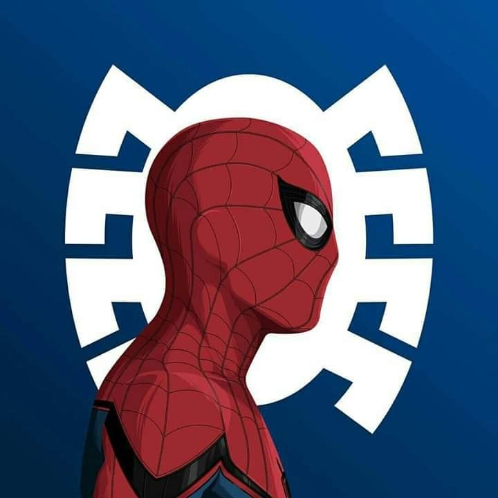

“Great stories aren’t Completion animation The sun was setting over the Kalyani University campus, casting long, amber shadows across the ECE department hallways. For Ranjit, the quiet of the evening was usually the best time to code, but today, his mind wasn't on circuits or signals. He sat in the corner of the library, the glow from his laptop illuminating a half-finished interface for LinguaBloom. He’d been obsessing over the "Glassmorphism" of the header for three hours. It had to be perfect. It wasn't just a project anymore; it was a bridge. tactile, The sun was setting over the Kalyani University campus, casting long, amber shadows across the ECE department hallways. For Ranjit, the quiet of the evening was usually the best time to code, but today, his mind wasn't on circuits or signals. He sat in the corner of the library, the glow from his laptop illuminating a half-finished interface for LinguaBloom. He’d been obsessing over the "Glassmorphism" of the header for three hours. It had to be perfect. It wasn't just a project anymore; it was a bridge. His phone buzzed on the desk. A message from Anjali: “Still at the lab? Don’t forget to breathe. See you at the coffee shop in twenty?” Ranjit smiled, a brief moment of warmth breaking through his technical trance. He typed a quick reply and went back to the screen. He was working on a special feature—a "Journey Map" that looked like a winding path through a garden of Sakura trees. He wanted the English learners who used his site to feel like they were walking through a story, not just clicking through a textbook. As he adjusted a skeuomorphic button to give it that tactile, "pressed" feel, a shadow fell over his desk. It was his professor, peering over his shoulder. "Das," the professor noted, eyes narrowing at the screen. "This doesn't look like Electronics and Communication homework." Ranjit cleared his throat, adjusting his glasses. "It’s... communication of a different kind, Sir. I’m building a way for people to learn English using visual storytelling. I’m trying to blend Japanese aesthetics with functional web design." The professor stayed silent for a long moment, watching a CSS-generated petalry, the glow from his laptop illuminating a half-finished interface for LinguaBloom. He’d been obsessing over the "Glassmorphism" of the header for three hours. It had to be perfect. It wasn't just a project anymore; it was a bridge. His phone buzzed on the desk. A message from Anjali: “Still at the lab? Don’t forget to breathe. See you at the coffee shop in twenty?” Ranjit smiled, a brief moment of warmth breaking through his technical trance. He typed a quick reply and went back to the screen. He was working on a special feature—a "Journey Map" that looked like a winding path through a garden of Sakura trees. He wanted the English learners who used his site to feel like they were walking through a story, not just clicking through a textbook. As he adjusted a skeuomorphic button to give it that tactile, "pressed" feel, a shadow fell over his desk. It was his professor, peering over his shoulder. "Das," the professor noted, eyes narrowing at the screen. "This doesn't look like Electronics and Communication homework." Ranjit cleared his throat, adjusting his glasses. "It’s... communication of a different kind, Sir. I’m building a way for people to learn English using visual storytelling. I’m trying to blend Japanese aesthetics with functional web design." His phone buzzed on the desk. A message from Anjali: “Still at the lab? Don’t forget to breathe. See you at the coffee shop in twenty?” Ranjit smiled, a brief moment of warmth breaking through his technical trance. He typed a quick reply and went back to the screen. He was working on a special feature—a "Journey Map" that looked like a winding path through a garden of Sakura trees. He wanted the English learners who used his site to feel like they were walking through a story, not just clicking through a textbook. As he adjusted a skeuomorphic button to give it that tactile, "pressed" feel, a shadow fell over his desk. It was his professor, peering over his shoulder. "Das," the professor noted, eyes narrowing at the screen. "This doesn't look like Electronics and Communication homework." Ranjit cleared his throat, adjusting his glasses. "It’s... communication of a different kind, Sir. I’m building a way for people to learn English using visual storytelling. I’m trying to blend Japanese aesthetics with functional web design." The professor stayed silent for a long moment, watching a CSS-generated petalry, the glow from his laptop illuminating a half-finished interface for LinguaBloom. He’d been obsessing over the "Glassmorphism" of the header for three hours. It had to be perfect. It wasn't just a project anymore; it was a bridge. His phone buzzed on the desk. A message from Anjali: “Still at the lab? Don’t forget to breathe. See you at the coffee shop in twenty?” Ranjit smiled, a brief moment of warmth breaking through his technical trance. He typed a quick reply and went back to the screen. He was working on a special feature—a "Journey Map" that looked like a winding path through a garden of Sakura trees. He wanted the English learners who used his site to feel like they were walking through a story, not just clicking through a textbook. As he adjusted a skeuomorphic button to give it that tactile, "pressed" feel, a shadow fell over his desk. It was his professor, peering over his shoulder. "Das," the professor noted, eyes narrowing at the screen. "This doesn't look like Electronics and Communication homework." Ranjit cleared his throat, adjusting his glasses. "It’s... communication of a different kind, Sir. I’m building a way for people to learn English using visual storytelling. I’m trying to blend Japanese aesthetics with functional web design." The professor stayed silent for a long moment, watching a CSS-generated petal drift across the screen. "The GATE exam results come out soon, Ranjit. You’re expecting a 22, yes? Why spend so much energy here?" Ranjit looked at the LinguaBloom logo—the elegant brush. t cleared his throat, adjusting his He sat in the corner of the library, the glow from his laptop illuminating a half-finished interface for LinguaBloom. He’d been obsessing over the "Glassmorphism" of the header for three hours. It had to be perfect. It wasn't just a project anymore; it was a bridge. His phone buzzed on the desk. A message from Anjali: “Still at the lab? Don’t forget to breathe. See you at the coffee shop in twenty?” Ranjit smiled, a brief moment of warmth breaking through his technical trance. He typed a quick reply and went back to the screen. He was working on a special feature—a "Journey Map" that looked like a winding path through a garden of Sakura trees. He wanted the English learners who used his site to feel like they were walking through a story, not just clicking through a textbook. As he adjusted a skeuomorphic button to give it that tactile, "pressed" feel, a shadow fell over his desk. It was his professor, peering over his shoulder. "Das," the professor noted, eyes narrowing at As he adjusted a skeuomorphic button to give it that tactile, "pressed" feel, a shadow fell over his desk. It was his professor, peering over his shoulder. Ranjit smiled, a brief moment of warmth breaking through his technical trance. He typed a quick reply and went back to the screen. He was working on a special feature—a "Journey Map" that looked like a winding path through a garden of Sakura trees. He wanted the English learners who used his site to feel like they were walking through a story, not just clicking through a textbook. As he adjusted a skeuomorphic button to give it that tactile, "pressed" feel, a shadow fell over his desk. It was his professor, peering over his shoulder. "Das," the professor noted, eyes narrowing at the screen. "This doesn't look like Electronics and Communication homework." Ranjit cleared his throat, adjusting his glasses. "It’s... communication of a different kind, Sir. I’m building a way for people to learn English using visual storytelling. I’m trying to blend Japanese aesthetics with functional web design." The professor stayed silent for a long moment, watching a CSS-generated petal drift across the screen. "The GATE exam results come out soon, Ranjit. You’re expecting a 22, yes? Why spend so much energy here?" Ranjit looked at the LinguaBloom logo—the elegant brush-stroke Kanji for 'Language.' "Because, Sir, a score is a number, but this is a voice. I want to give people the tools to tell their own stories in a new language. If I can make the interface beautiful enough, they won’t realize they’re working. They’ll just feel like they’re growing." The professor patted his shoulder twice—a rare sign of approval—and walked away without another word. The professor stayed silent for a long moment, watching a CSS-generated petal drift across the screen. "The GATE exam results come out soon, Ranjit. You’re expecting a 22, yes? Why spend so much energy here?" Ranjit looked at the LinguaBloom logo—the elegant brush-stroke Kanji for 'Language.' "Because, Sir, a score is a number, but this is a voice. I want to give people the tools to tell their own stories in a new language. If I can make the interface beautiful enough, they won’t realize they’re working. They’ll just feel like they’re growing." The professor patted his shoulder twice—a rare sign of approval—and walked away without another word. he library, the glow from his laptop illuminating a half-finished interface for LinguaBloom. He’d been obsessing over the "Glassmorphism" of the header for three hours. It had to be perfect. It wasn't just a project anymore; it was a bridge. tactile, The sun was setting over the Kalyani University campus, casting long, amber shadows across the ECE department hallways. For Ranjit, the quiet of the evening was usually the best time to code, but today, his mind wasn't on circuits or signals. He sat in the corner of the library, the glow from his laptop illuminating a half-finished interface for LinguaBloom. He’d been obsessing over the "Glassmorphism" of the header for three hours. It had to be perfect. It wasn't just a project anymore; it was a bridge. His phone buzzed on the desk. A message from Anjali: “Still at the lab? Don’t forget to breathe. See you at the coffee shop in twenty?” Ranjit smiled, a brief moment of warmth breaking through his technical trance. He typed a quick reply and went back to the screen. He was working on a special feature—a "Journey Map" that looked like a winding path through a garden of Sakura trees. He wanted the English learners who used his site to feel like they were walking through a story, not just clicking through a textbook. As he adjusted a skeuomorphic button to give it that tactile, "pressed" feel, a shadow fell over his desk. It was his professor, peering over his shoulder. "Das," the professor noted, eyes narrowing at the screen. "This doesn't look like Electronics and Communication homework." He sat in the corner of the library, the glow from his laptop illuminating a half-finished interface for LinguaBloom. He’d been obsessing over the "Glassmorphism" of the header for three hours. It had to be perfect. It wasn't just a project anymore; it was a bridge. His phone buzzed on the desk. A message from Anjali: “Still at the lab? Don’t forget to breathe. See you at the coffee shop in twenty?” Ranjit smiled, a brief moment of warmth breaking through his technical trance. He typed a quick reply and went back to the screen. He was working on a special feature—a "Journey Map" that looked like a winding path through a garden of Sakura trees. He wanted the English learners who used his site to feel like they were walking through a story, not just clicking through a textbook. As he adjusted a skeuomorphic button to give it that tactile, "pressed" feel, a shadow fell over his desk. It was his professor, peering over his shoulder. "Das," the professor noted, eyes narrowing at the screen. "This doesn't look like Electronics and Communication homework." Ranjit cleared his throat, adjusting his glasses. "It’s... communication of a different kind, Sir. I’m building a way for people to learn English using visual storytelling. I’m trying to blend Japanese aesthetics with functional web design." The professor stayed silent Das," the professor noted, eyes narrowing at the screen. "This doesn't look like Electronics and Communication homework." Ranjit cleared his throat, adjusting his glasses. "It’s... communication of a different kind, Sir. I’m building a way for people to learn English using visual storytelling. I’m trying to blend Japanese aesthetics with functional web design." His phone buzzed on the desk. A message from Anjali: “Still at the lab? Don’t forget to breathe. See you at the coffee shop in twenty?” Ranjit smiled, a brief moment of warmth breaking through his technical trance. He typed a quick reply and went back to the screen. He was working on a special feature—a "Journey Map" that looked like a winding path through a garden of Sakura trees. He wanted the English learners who used his site to feel like they were walking through a story, not just clicking through a textbook. As he adjusted a skeuomorphic button to give it that tactile, "pressed" feel, a shadow fell over his desk. It was his professor, peering over his shoulder. Ranjit smiled, a brief moment of warmth breaking through his technical trance. He typed a quick reply and went back to the screen. He was working on a special feature—a "Journey Map" that looked like a winding path through a garden of Sakura trees. He wanted the English learners who used his site to feel like they were walking through a story, not just clicking through a textbook. As he adjusted a skeuomorphic button to give it that tactile, "pressed" feel, a shadow fell over his desk. It was his professor, peering over his shoulder. "Das," the professor noted, eyes narrowing at the screen. "This doesn't look like Electronics and Communication homework." Ranjit cleared his throat, adjusting his glasses. "It’s... communication of a different kind, Sir. I’m building a way for people to learn English using visual storytelling. I’m trying to blend Japanese aesthetics with functional web design." The professor stayed silent for a long moment, watching a CSS-generated petal drift across the screen. "The GATE exam results come out soon, Ranjit. You’re expecting a 22, yes? Why spend so much energy here?" Ranjit looked at the LinguaBloom logo—the elegant brush-stroke Kanji for 'Language.' "Because, Sir, a score is a number, but this is a voice. I want to give people the tools to tell their own stories in a new language. If I can make the interface beautiful enough, they won’t realize they’re working. They’ll just feel like they’re growing." The professor patted his shoulder twice—a rare sign of approval—and walked away without another word. The professor stayed silent for a long moment, watching a CSS-generated petal drift across the screen. "The GATE exam results come out soon, Ranjit. You’re expecting a 22, yes? Why spend so much energy here?" Ranjit looked at the LinguaBloom logo—the elegant brush-stroke Kanji for 'Language.' "Because, Sir, a score is a number, but this is a voice. I want to give people the tools to tell their own stories in a new language. If I can make the interface beautiful enough, they won’t realize they’re working. They’ll just feel like they’re growing." The professor patted his shoulder twice—a rare sign of approval—and walked away without another word. he library, the glow from his laptop illuminating a half-finished interface for LinguaBloom. He’d been obsessing over the "Glassmorphism" of the header for three hours. It had to be perfect. It wasn't just a project anymore; it was a bridge. tactile, The sun was setting over the Kalyani University campus, casting long, amber shadows across the ECE department hallways. For Ranjit, the quiet of the evening was usually the best time to code, but today, his mind wasn't on circuits or signals. He sat in the corner of the library, the glow from his laptop illuminating a half-finished interface for LinguaBloom. He’d been obsessing over the "Glassmorphism" of the header for three hours. It had to be perfect. It wasn't just a project anymore; it was a bridge. His phone buzzed on the desk. A message from Anjali: “Still at the lab? Don’t forget to breathe. See you at the coffee shop in twenty?” Ranjit smiled, a brief moment of warmth breaking through His phone buzzed on the desk. A message from Anjali: “Still at the lab? Don’t forget to breathe. See you at the coffee shop in twenty?” Ranjit smiled, a brief moment of warmth breaking through his technical trance. He typed a quick reply and went back to the screen. He was working on a special feature—a "Journey Map" that looked like a winding path through a garden of Sakura trees. He wanted the English learners who used his site to feel like they were walking through a story, not just clicking through a textbook. As he adjusted a skeuomorphic button to give it that tactile, "pressed" feel, a shadow fell over his desk. It was his professor, peering over his shoulder. "Das," the professor noted, eyes narrowing at the screen. "This doesn't look like Electronics and Communication homework." Ranjit cleared his throat, adjusting his glasses. "It’s... communication of a different kind, Sir. I’m building a way for people to learn English using visual storytelling. I’m trying to blend Japanese aesthetics with functional web design." The professor stayed silent for a long moment, watching a CSS-generated petalry, the glow from his laptop illuminating a half-finished interface for LinguaBloom. He’d been obsessing over the "Glassmorphism" of the header for three hours. It had to be perfect. It wasn't just a project anymore; it was a bridge. His phone buzzed on the desk. A message from Anjali: “Still at the lab? Don’t forget to breathe. See you at the coffee shop in twenty?” Ranjit smiled, a brief moment of warmth breaking through his technical trance. He typed a quick reply and went back to the screen. He was working on a special feature—a "Journey Map" that looked like a winding path through a garden of Sakura trees. He wanted the English learners who used his site to feel like they were walking through a story, not just clicking through a textbook. As he adjusted a skeuomorphic button to give it that tactile, "pressed" feel, a shadow fell over his desk. It was his professor, peering over his shoulder. "Das," the professor noted, eyes narrowing at the screen. "This doesn't look like Electronics and Communication homework." Ranjit cleared his throat, adjusting his glasses. "It’s... communication of a different kind, Sir. I’m building a way for people to learn English using visual storytelling. I’m trying to blend Japanese aesthetics with functional web design." The professor stayed silent for a long moment, watching a CSS-generated petal drift across the screen. "The GATE exam results come out soon, Ranjit. You’re expecting a 22, yes? Why spend so much energy here?" Ranjit looked at the LinguaBloom logo—the elegant brush. t cleared his throat, adjusting his He sat in the corner of the library, the glow from his laptop illuminating a half-finished interface for LinguaBloom. He’d been obsessing over the "Glassmorphism" of the header for three hours. It had to be perfect. It wasn't just a project anymore; it was a bridge. His phone buzzed on the desk. A message from Anjali: “Still at the lab? Don’t forget to breathe. See you at the coffee shop in twenty?” Ranjit smiled, a brief moment of warmth breaking through his technical trance. He typed a quick reply and went back to the screen. He was working on a special feature—a "Journey Map" that looked like a winding path through a garden of Sakura trees. He wanted the English learners who used his site to feel like they were walking through a story, not just clicking through a textbook. As he adjusted a skeuomorphic button to give it that tactile, "pressed" feel, a shadow fell over his desk. It was his professor, peering over his shoulder. "Das," the professor noted, eyes narrowing at the screen. "This doesn't look like Electronics and Communication homework." Ranjit cleared his throat, adjusting his glasses. "It’s... communication of a different kind, Sir. I’m building a way for people to learn English using visual storytelling. I’m trying to blend Japanese aesthetics with functional web design." The professor stayed silent for a long moment, watching a CSS-generated petalry, the glow from his laptop illuminating a half-finished interface for LinguaBloom. He’d been obsessing over the "Glassmorphism" of the header for three hours. It had to be perfect. It wasn't just a project anymore; it was a bridge. His phone buzzed on the desk. A message from Anjali: “Still at the lab? Don’t forget to breathe. See you at the coffee shop in twenty?” Ranjit smiled, a brief moment of warmth breaking through his technical trance. He typed a quick reply and went back to the screen. He was working on a special feature—a "Journey Map" that looked like a winding path through a garden of Sakura trees. He wanted the English learners who used his site to feel like they were walking through a story, not just clicking through a textbook. As he adjusted a skeuomorphic button to give it that tactile, "pressed" feel, a shadow fell over his desk. It was his professor, peering over his shoulder. "Das," the professor noted, eyes narrowing at the screen. "This doesn't look like Electronics and Communication homework." Ranjit cleared his throat, adjusting his glasses. "It’s... communication of a different kind, Sir. I’m building a way for people to learn English using visual storytelling. I’m trying to blend Japanese aesthetics with functional web design." His phone buzzed on the desk. A message from Anjali: “Still at the lab? Don’t forget to breathe. See you at the coffee shop in twenty?” Ranjit smiled, a brief moment of warmth breaking through his technical trance. He typed a quick reply and went back to the screen. He was working on a special feature—a "Journey Map" that looked like a winding path through a garden of Sakura trees. He wanted the English learners who used his site to feel like they were walking through a story, not just clicking through a textbook. As he adjusted a skeuomorphic button to give it that tactile, "pressed" feel, a shadow fell over his desk. It was his professor, peering over his shoulder. "Das," the professor noted, eyes narrowing at the screen. "This doesn't look like Electronics and Communication homework." Ranjit cleared his throat, adjusting his glasses. "It’s... communication of a different kind, Sir. I’m building a way for people to learn English using visual storytelling. I’m trying to blend Japanese aesthetics with functional web design." The professor stayed silent for a long moment, watching a CSS-generated petalry, the glow from his laptop illuminating a half-finished interface for LinguaBloom. He’d been obsessing over the "Glassmorphism" of the header for three hours. It had to be perfect. It wasn't just a project anymore; it was a bridge. His phone buzzed on the desk. A message from Anjali: “Still at the lab? Don’t forget to breathe. See you at the coffee shop in twenty?” Ranjit smiled, a brief moment of warmth breaking through his technical trance. He typed a quick reply and went back to the screen. He was working on a special feature—a "Journey Map" that looked like a winding path through a garden of Sakura trees. He wanted the English learners who used his site to feel like they were walking through a story, not just clicking through a textbook. As he adjusted a skeuomorphic button to give it that tactile, "pressed" feel, a shadow fell over his desk. It was his professor, peering over his shoulder. "Das," the professor noted, eyes narrowing at the screen. "This doesn't look like Electronics and Communication homework." Ranjit cleared his throat, adjusting his glasses. "It’s... communication of a different kind, Sir. I’m building a way for people to learn English using visual storytelling. I’m trying to blend Japanese aesthetics with functional web design." The professor stayed silent for a long moment, watching a CSS-generated petal drift across the screen. "The GATE exam results come out soon, Ranjit. You’re expecting a 22, yes? Why spend so much energy here?" Ranjit looked at the LinguaBloom logo—the elegant brush. t cleared his throat, adjusting his glasses. "It’s... communication of a different kind, Sir. I’m building a way for people to learn English using visual storytelling. I’m trying to blend Japanese aesthetics with functional web design." The professor stayed silent for a long moment, watching a CSS-generated petal drift across the screen. "The GATE exam results come out soon, Ranjit. You’re expecting a 22, yes? Why spend so much energy here?" Ranjit looked at the LinguaBloom logo—the elegant brush-stroke Kanji for 'Language.' "Because, Sir, a score is a number, but this is a voice. I want to give people the tools to tell their own stories in a new language. If I can make the interface beautiful enough, they won’t realize they’re working. They’ll just feel like they’re growing." The professor patted his shoulder twice—a rare sign of approval—and walked away without another word. he library, the glow from his laptop illuminating a half-finished interface for LinguaBloom. He’d been obsessing over the "Glassmorphism" of the header for three hours. It had to be perfect. It wasn't just a project anymore; it was a bridge. tactile, The sun was setting over the Kalyani University campus, casting long, amber shadows across the ECE department hallways. For Ranjit, the quiet of the evening was usually the best time to code, but today, his mind wasn't on circuits or signals. He sat in the corner of the library, the glow from his laptop illuminating a half-finished interface for LinguaBloom. He’d been obsessing over the "Glassmorphism" of the header for three hours. It had to be perfect. It wasn't just a project anymore; it was a bridge. His phone buzzed on the desk. Ranjit smiled, a brief moment of warmth breaking through his technical trance. He typed a quick reply and went back to the screen. He was working on a special feature—a "Journey Map" that looked like a winding path through a garden of Sakura trees. He wanted the English learners who used his site to feel like they were walking through a story, not just clicking through a textbook. As he adjusted a skeuomorphic button to give it that tactile, "pressed" feel, a shadow fell over his desk. It was his professor, peering over his shoulder. "Das," the professor noted, eyes narrowing at the screen. "This doesn't look like Electronics and Communication homework." Ranjit cleared his throat, adjusting his glasses. "It’s... communication of a different kind, Sir. I’m building a way for people to learn English using visual storytelling. I’m trying to blend Japanese aesthetics with functional web design." The professor stayed silent for a long moment, watching a CSS-generated petalry, the glow from his laptop illuminating a half-finished interface for LinguaBloom. He’d been obsessing over the "Glassmorphism" of the header for three hours. It had to be perfect. It wasn't just a project anymore; it was a bridge. His phone buzzed on the desk. A message from Anjali: “Still at the lab? Don’t forget to breathe. See you at the coffee shop in twenty?” Ranjit smiled, a brief moment of warmth breaking through his technical trance. He typed a quick reply and went back to the screen. He was working on a special feature—a "Journey Map" that looked like a winding path through a garden of Sakura trees. He wanted the English learners who used his site to feel like they were walking through a story, not just clicking through a textbook. As he adjusted a skeuomorphic button to give it that tactile, "pressed" feel, a shadow fell over his desk. It was his professor, peering over his shoulder. "Das," the professor noted, eyes narrowing at the screen. "This doesn't look like Electronics and Communication homework." Ranjit cleared his throat, adjusting his glasses. "It’s... communication of a different kind, Sir. I’m building a way for people to learn English using visual storytelling. I’m trying to blend Japanese aesthetics with functional web design." His phone buzzed on the desk. A message from Anjali: “Still at the lab? Don’t forget to breathe. See you at the coffee shop in twenty?” Ranjit smiled, a brief moment of warmth breaking through his technical trance. He typed a quick reply and went back to the screen. He was working on a special feature—a "Journey Map" that looked like a winding path through a garden of Sakura trees. He wanted the English learners who used his site to feel like they were walking through a story, not just clicking through a textbook. As he adjusted a skeuomorphic button to give it that tactile, "pressed" feel, a shadow fell over his desk. It was his professor, peering over his shoulder. "Das," the professor noted, eyes narrowing at the screen. "This doesn't look like Electronics and Communication homework."A message from Anjali: “Still at the lab? Don’t forget to breathe. See you at the coffee shop in twenty?” Ranjit smiled, a brief moment of warmth breaking through his technical trance. He typed a quick reply and went back to the screen. He was working on a special feature—a "Journey Map" that looked like a winding path through a garden of Sakura trees. He wanted the English learners who used his site to feel like they were walking through a story, not just clicking through a textbook. As he adjusted a skeuomorphic button to give it that tactile, "pressed" feel, a shadow fell over his desk. It was his professor, peering over his shoulder. "Das," the professor noted, eyes narrowing at the screen. "This doesn't look like Electronics and Communication homework." Ranjit cleared his throat, adjusting his glasses. "It’s... communication of a different kind, Sir. I’m building a way for people to learn English using visual storytelling. I’m trying to blend Japanese aesthetics with functional web design." The professor stayed silent for a long moment, watching a CSS-generated petalry, the glow from his laptop illuminating a half-finished interface for LinguaBloom. He’d been obsessing over the "Glassmorphism" of the header for three hours. It had to be perfect. It wasn't just a project anymore; it was a bridge. His phone buzzed on the desk. A message from Anjali: “Still at the lab? Don’t forget to breathe. See you at the coffee shop in twenty?” Ranjit smiled, a brief moment of warmth breaking through his technical trance. He typed a quick reply and went back to the screen. He was working on a special feature—a "Journey Map" that looked like a winding path through a garden of Sakura trees. He wanted the English learners who used his site to feel like they were walking through a story, not just clicking through a textbook. As he adjusted a skeuomorphic button to give it that tactile, "pressed" feel, a shadow fell over his desk. It was his professor, peering over his shoulder. "Das," the professor noted, eyes narrowing at the screen. "This doesn't look like Electronics and Communication homework." usting his glasses. "It’s... communication of a different kind, Sir. I’m building a way for people to learn English using visual storytelling. I’m trying to blend Japanese aesthetics with functional web design." The professor stayed silent for a long moment, watching a CSS-generated petalry, the glow from his laptop illuminating a half-finished interface for LinguaBloom. He’d been obsessing over the "Glassmorphism" of the header for three hours. It had to be perfect. It wasn't just a project anymore; it was a bridge. His phone buzzed on the desk. A message from Anjali: “Still at the lab? Don’t forget to breathe. See you at the coffee shop in twenty?” His phone buzzed on the desk. A message from Anjali: “Still at the lab? Don’t forget to breathe. See you at the coffee shop in twenty?” Ranjit smiled, a brief moment of warmth breaking through his technical trance. He typed a quick reply and went back to the screen. He was working on a special feature—a "Journey Map" that looked like a winding path through a garden of Sakura trees. He wanted the English learners who used his site to feel like they were walking through a story, not just clicking through a textbook. As he adjusted a skeuomorphic button to give it that tactile, "pressed" feel, a shadow fell over his desk. It was his professor, peering over his shoulder. "Das," the professor noted, eyes narrowing at the screen. "This doesn't look like Electronics and Communication homework." Ranjit cleared his throat, adjusting his glasses. "It’s... communication of a different kind, Sir. I’m building a way for people to learn English using visual storytelling. I’m trying to blend Japanese aesthetics with functional web design." The professor stayed silent for a long moment, watching a CSS-generated petalry, the glow from his laptop illuminating a half-finished interface for LinguaBloom. He’d been obsessing over the "Glassmorphism" of the header for three hours. It had to be perfect. It wasn't just a project anymore; it was a bridge. His phone buzzed on the desk. A message from Anjali: “Still at the lab? Don’t forget to breathe. See you at the coffee shop in twenty?” Ranjit smiled, a brief moment of warmth breaking through his technical trance. He typed a quick reply and went back to the screen. He was working on a special feature—a "Journey Map" that looked like a winding path through a garden of Sakura trees. He wanted the English learners who used his site to feel like they were walking through a story, not just clicking through a textbook. As he adjusted a skeuomorphic button to give it that tactile, "pressed" feel, a shadow fell over his desk. It was his professor, peering over his shoulder. "Das," the professor noted, eyes narrowing at the screen. "This doesn't look like Electronics and Communication homework." Ranjit cleared his throat, adjusting his glasses. "It’s... communication of a different kind, Sir. I’m building a way for people to learn English using visual storytelling. I’m trying to blend Japanese aesthetics with functional web design." The professor stayed silent for a long moment, watching a CSS-generated petal drift across the screen. "The GATE exam results come out soon, Ranjit. You’re expecting a 22, yes? Why spend so much energy here?" Ranjit looked at the LinguaBloom logo—the elegant brush. t cleared his throat, adjusting his glasses. "It’s... communication of a different kind, Sir. I’m building a way for people to learn English using visual storytelling. I’m trying to blend Japanese aesthetics with functional web design." The professor stayed silent for a long moment, watching a CSS-generated petal drift across the screen. "The GATE exam results come out soon, Ranjit. You’re expecting a 22, yes? Why spend so much energy here?" Ranjit looked at the LinguaBloom logo—the elegant brush-stroke Kanji for 'Language.' "Because, Sir, a score is a number, but this is a voice. I want to give people the tools to tell their own stories in a new language. If I can make the interface beautiful enough, they won’t realize they’re working. They’ll just feel like they’re growing." The professor patted his shoulder twice—a rare sign of approval—and walked away without another word. he library, the glow from his laptop illuminating a half-finished interface for LinguaBloom. He’d been obsessing over the "Glassmorphism" of the header for three hours. It had to be perfect. It wasn't just a project anymore; it was a bridge. tactile, The sun was setting over the Kalyani University campus, casting long, amber shadows across the ECE department hallways. For Ranjit, the quiet of the evening was usually the best time to code, but today, his mind wasn't on circuits or signals. He sat in the corner of the library, the glow from his laptop illuminating a half-finished interface for LinguaBloom. He’d been obsessing over the "Glassmorphism" of the header for three hours. It had to be perfect. It wasn't just a project anymore; it was a bridge. His phone buzzed on the desk. Ranjit smiled, a brief moment of warmth breaking through his technical trance. He typed a quick reply and went back to the screen. He was working on a special feature—a "Journey Map" that looked like a winding path through a garden of Sakura trees. He wanted the English learners who used his site to feel like they were walking through a story, not just clicking through a textbook. As he adjusted a skeuomorphic button to give it that tactile, "pressed" feel, a shadow fell over his desk. It was his professor, peering over his shoulder. "Das," the professor noted, eyes narrowing at the screen. "This doesn't look like Electronics and Communication homework." Ranjit cleared his throat, adjusting his glasses. "It’s... communication of a different kind, Sir. I’m building a way for people to learn English using visual storytelling. I’m trying to blend Japanese aesthetics with functional web design." The professor stayed silent for a long moment, watching a CSS-generated petalry, the glow from his laptop illuminating a half-finished interface for LinguaBloom. He’d been obsessing over the "Glassmorphism" of the header for three hours. It had to be perfect. It wasn't just a project anymore; it was a bridge. His phone buzzed on the desk. A message from Anjali: “Still at the lab? Don’t forget to breathe. See you at the coffee shop in twenty?” Ranjit smiled, a brief moment of warmth breaking through his technical trance. He typed a quick reply and went back to the screen. He was working on a special feature—a "Journey Map" that looked like a winding path through a garden of Sakura trees. He wanted the English learners who used his site to feel like they were walking through a story, not just clicking through a textbook. As he adjusted a skeuomorphic button to give it that tactile, "pressed" feel, a shadow fell over his desk. It was his professor, peering over his shoulder. "Das," the professor noted, eyes narrowing at the screen. "This doesn't look like Electronics and Communication homework." Ranjit cleared his throat, adjusting his glasses. "It’s... communication of a different kind, Sir. I’m building a way for people to learn English using visual storytelling. I’m trying to blend Japanese aesthetics with functional web design." His phone buzzed on the desk. A message from Anjali: “Still at the lab? Don’t forget to breathe. See you at the coffee shop in twenty?” Ranjit smiled, a brief moment of warmth breaking through his technical trance. He typed a quick reply and went back to the screen. He was working on a special feature—a "Journey Map" that looked like a winding path through a garden of Sakura trees. He wanted the English learners who used his site to feel like they were walking through a story, not just clicking through a textbook. As he adjusted a skeuomorphic button to give it that tactile, "pressed" feel, a shadow fell over his desk. It was his professor, peering over his shoulder. Ranjit smiled, a brief moment of warmth breaking through his technical trance. He typed a quick reply and went back to the screen. He was working on a special feature—a "Journey Map" that looked like a winding path through a garden of Sakura trees. He wanted the English learners who used his site to feel like they were walking through a story, not just clicking through a textbook. As he adjusted a skeuomorphic button to give it that tactile, "pressed" feel, a shadow fell over his desk. It was his professor, peering over his shoulder. "Das," the professor noted, eyes narrowing at the screen. "This doesn't look like Electronics and Communication homework." Ranjit cleared his throat, adjusting his glasses. "It’s... communication of a different kind, Sir. I’m building a way for people to learn English using visual storytelling. I’m trying to blend Japanese aesthetics with functional web design." The professor stayed silent for a long moment, watching a CSS-generated petal drift across the screen. "The GATE exam results come out soon, Ranjit. You’re expecting a 22, yes? Why spend so much energy here?" Ranjit looked at the LinguaBloom logo—the elegant brush-stroke Kanji for 'Language.' "Because, Sir, a score is a number, but this is a voice. I want to give people the tools to tell their own stories in a new language. If I can make the interface beautiful enough, they won’t realize they’re working. They’ll just feel like they’re growing." The professor patted his shoulder twice—a rare sign of approval—and walked away without another word. The professor stayed silent for a long moment, watching a CSS-generated petal drift across the screen. "The GATE exam results come out soon, Ranjit. You’re expecting a 22, yes? Why spend so much energy here?" Ranjit looked at the LinguaBloom logo—the elegant brush-stroke Kanji for 'Language.' "Because, Sir, a score is a number, but this is a voice. I want to give people the tools to tell their own stories in a new language. If I can make the interface beautiful enough, they won’t realize they’re working. They’ll just feel like they’re growing." The professor patted his shoulder twice—a rare sign of approval—and walked away without another word. he library, the glow from his laptop illuminating a half-finished interface for LinguaBloom. He’d been obsessing over the "Glassmorphism" of the header for three hours. It had to be perfect. It wasn't just a project anymore; it was a bridge. tactile, The sun was setting over the Kalyani University campus, casting long, amber shadows across the ECE department hallways. For Ranjit, the quiet of the evening was usually the best time to code, but today, his mind wasn't on circuits or signals. He sat in the corner of the library, the glow from his laptop illuminating a half-finished interface for LinguaBloom. He’d been obsessing over the "Glassmorphism" of the header for three hours. It had to be perfect. It wasn't just a project anymore; it was a bridge. His phone buzzed on the desk. A message from Anjali: “Still at the lab? Don’t forget to breathe. See you at the coffee shop in twenty?” Ranjit smiled, a brief moment of warmth breaking through his technical trance. He typed a quick reply and went back to the screen. He was working on a special feature—a "Journey Map" that looked like a winding path through a garden of Sakura trees. He wanted the English learners who used his site to feel like they were walking through a story, not just clicking through a textbook. As he adjusted a skeuomorphic button to give it that tactile, "pressed" feel, a shadow fell over his desk. It was his professor, peering over his shoulder. "Das," the professor noted, eyes narrowing at the screen. "This doesn't look like Electronics and Communication homework." He sat in the corner of the library, the glow from his laptop illuminating a half-finished interface for LinguaBloom. He’d been obsessing over the "Glassmorphism" of the header for three hours. It had to be perfect. It wasn't just a project anymore; it was a bridge. His phone buzzed on the desk. A message from Anjali: “Still at the lab? Don’t forget to breathe. See you at the coffee shop in twenty?” Ranjit smiled, a brief moment of warmth breaking through his technical trance. He typed a quick reply and went back to the screen. He was working on a special feature—a "Journey Map" that looked like a winding path through a garden of Sakura trees. He wanted the English learners who used his site to feel like they were walking through a story, not just clicking through a textbook. As he adjusted a skeuomorphic button to give it that tactile, "pressed" feel, a shadow fell over for a long moment, watching a CSS-generated petalry, the glow from his laptop illuminating a half-finished interface for LinguaBloom. He’d been obsessing over the "Glassmorphism" of the header for three hours. It had to be perfect. It wasn't just a project anymore; it was a bridge. His phone buzzed on the desk. A message from Anjali: “Still at the lab? Don’t forget to breathe. See you at the coffee shop in twenty?” Ranjit smiled, a brief moment of warmth breaking through his technical trance. He typed a quick reply and went back to the screen. He was working on a special feature—a "Journey Map" that looked like a winding path through a garden of Sakura trees. He wanted the English learners who used his site to feel like they were walking through a story, not just clicking through a textbook. As he adjusted a skeuomorphic button to give it that tactile, "pressed" feel, a shadow fell over his desk. It was his professor, peering over his shoulder. "Das," the professor noted, eyes narrowing at the screen. "This doesn't look like Electronics and Communication homework." Ranjit cleared his throat, adjusting his glasses. "It’s... communication of a different kind, Sir. I’m building a way for people to learn English using visual storytelling. I’m trying to blend Japanese aesthetics with functional web design." His phone buzzed on the desk. A message from Anjali: “Still at the lab? Don’t forget to breathe. See you at the coffee shop in twenty?” Ranjit smiled, a brief moment of warmth breaking through his technical trance. He typed a quick reply and went back to the screen. He was working on a special feature—a "Journey Map" that looked like a winding path through a garden of Sakura trees. He wanted the English learners who used his site to feel like they were walking through a story, not just clicking through a textbook. As he adjusted a skeuomorphic button to give it that tactile, "pressed" feel, a shadow fell over his desk. It was his professor, peering over his shoulder. "Das," the professor noted, eyes narrowing at the screen. "This doesn't look like Electronics and Communication homework." Ranjit cleared his throat, adjusting his glasses. "It’s... communication of a different kind, Sir. I’m building a way for people to learn English using visual storytelling. I’m trying to blend Japanese aesthetics with functional web design." The professor stayed silent for a long moment, watching a CSS-generated petalry, the glow from his laptop illuminating a half-finished interface for LinguaBloom. He’d been obsessing over the "Glassmorphism" of the header for three hours. It had to be perfect. It wasn't just a project anymore; it was a bridge. His phone buzzed on the desk. A message from Anjali: “Still at the lab? Don’t forget to breathe. See you at the coffee shop in twenty?” Ranjit smiled, a brief moment of warmth breaking through his technical trance. He typed a quick reply and went back to the screen. He was working on a special feature—a "Journey Map" that looked like a winding path through a garden of Sakura trees. He wanted the English learners who used his site to feel like they were walking through a story, not just clicking through a textbook. As he adjusted a skeuomorphic button to give it that tactile, "pressed" feel, a shadow fell over his desk. It was his professor, peering over his shoulder. "Das," the professor noted, eyes narrowing at the screen. "This doesn't look like Electronics and Communication homework." Ranjit cleared his throat, adjusting his glasses. "It’s... communication of a different kind, Sir. I’m building a way for people to learn English using visual storytelling. I’m trying to blend Japanese aesthetics with functional web design." The professor stayed silent for a long moment, watching a CSS-generated petal drift across the screen. "The GATE exam results come out soon, Ranjit. You’re expecting a 22, yes? Why spend so much energy here?" Ranjit looked at the LinguaBloom logo—the elegant brush. t cleared his throat, adjusting his glasses. "It’s... communication of a different kind, Sir. I’m building a way for people to learn English using visual storytelling. I’m trying to blend Japanese aesthetics with functional web design." The professor stayed silent for a long moment, watching a CSS-generated petal drift across the screen. "The GATE exam results come out soon, Ranjit. You’re expecting a 22, yes? Why spend so much energy here?" Ranjit looked at the LinguaBloom logo—the elegant brush-stroke Kanji for 'Language.' "Because, Sir, a score is a number, but this is a voice. I want to give people the tools to tell their own stories in a new language. If I can make the interface beautiful enough, they won’t realize they’re working. They’ll just feel like they’re growing." The professor patted his shoulder twice—a rare sign of approval—and walked away without another word. he library, the glow from his laptop illuminating a half-finished interface for LinguaBloom. He’d been obsessing over the "Glassmorphism" of the header for three hours. It had to be perfect. It wasn't just a project anymore; it was a bridge. tactile, The sun was setting over the Kalyani University campus, casting long, amber shadows across the ECE department hallways. For Ranjit, the quiet of the evening was usually the best time to code, but today, his mind wasn't on circuits or signals. He sat in the corner of the library, the glow from his laptop illuminating a half-finished interface for LinguaBloom. He’d been obsessing over the "Glassmorphism" of the header for three hours. It had to be perfect. It wasn't just a project anymore; it was a bridge. His phone buzzed on the desk. A message from Anjali: “Still at the lab? Don’t forget to breathe. See you at the coffee shop in twenty?” Ranjit smiled, a brief moment of warmth breaking through his technical trance. He typed a quick reply and went back to the screen. He was working on a special feature—a "Journey Map" that looked like a winding path through a garden of Sakura trees. He wanted the English learners who used his site to feel like they were walking through a story, not just clicking through a textbook. As he adjusted a skeuomorphic button to give it that tactile, "pressed" feel, a shadow fell over his desk. It was his professor, peering over his shoulder. "Das," the professor noted, eyes narrowing at the screen. "This doesn't look like Electronics and Communication homework." Ranjit cleared his throat, adjusting his glasses. "It’s... communication of a different kind, Sir. I’m building a way for people to learn English using visual storytelling. I’m trying to blend Japanese aesthetics with functional web design." The professor stayed silent for a long moment, watching a CSS-generated petalry, the glow from his laptop illuminating a half-finished interface for LinguaBloom. He’d been obsessing over the "Glassmorphism" of the header for three hours. It had to be perfect. It wasn't just a project anymore; it was a bridge. His phone buzzed on the desk. A message from Anjali: “Still at the lab? Don’t forget to breathe. See you at the coffee shop in twenty?” glasses. "It’s... communication of a different kind, Sir. I’m building a way for people to learn English using visual storytelling. I’m trying to blend Japanese aesthetics with functional web design." The professor stayed silent for a long moment, watching a CSS-generated petal drift across the screen. "The GATE exam results come out soon, Ranjit. You’re expecting a 22, yes? Why spend so much energy here?" Ranjit looked at the LinguaBloom logo—the elegant brush-stroke Kanji for 'Language.' "Because, Sir, a score is a number, but this is a voice. I want to give people the tools to tell their own stories in a new language. If I can make the interface beautiful enough, they won’t realize they’re working. They’ll just feel like they’re growing." The professor patted his shoulder twice—a rare sign of approval—and walked away without another word. he library, the glow from his laptop illuminating a half-finished interface for LinguaBloom. He’d been obsessing over the "Glassmorphism" of the header for three hours. It had to be perfect. It wasn't just a project anymore; it was a bridge. tactile, The sun was setting over the Kalyani University campus, casting long, amber shadows across the ECE department hallways. For Ranjit, the quiet of the evening was usually the best time to code, but today, his mind wasn't on circuits or signals. He sat in the corner of the library, the glow from his laptop illuminating a half-finished interface for LinguaBloom. He’d been obsessing over the "Glassmorphism" of the header for three hours. It had to be perfect. It wasn't just a project anymore; it was a bridge. His phone buzzed on the desk. Ranjit smiled, a brief moment of warmth breaking through his technical trance. He typed a quick reply and went back to the screen. He was working on a special feature—a "Journey Map" that looked like a winding path through a garden of Sakura trees. He wanted the English learners who used his site to feel like they were walking through a story, not just clicking through a textbook. As he adjusted a skeuomorphic button to give it that tactile, "pressed" feel, a shadow fell over his desk. It was his professor, peering over his shoulder. "Das," the professor noted, eyes narrowing at the screen. "This doesn't look like Electronics and Communication homework." Ranjit cleared his throat, adjusting his glasses. "It’s... communication of a different kind, Sir. I’m building a way for people to learn English using visual storytelling. I’m trying to blend Japanese aesthetics with functional web design." The professor stayed silent for a long moment, watching a CSS-generated petalry, the glow from his laptop illuminating a half-finished interface for LinguaBloom. He’d been obsessing over the "Glassmorphism" of the header for three hours. It had to be perfect. It wasn't just a project anymore; it was a bridge. His phone buzzed on the desk. A message from Anjali: “Still at the lab? Don’t forget to breathe. See you at the coffee shop in twenty?” Ranjit smiled, a brief moment of warmth breaking through his technical trance. He typed a quick reply and went back to the screen. He was working on a special feature—a "Journey Map" that looked like a winding path through a garden of Sakura trees. He wanted the English learners who used his site to feel like they were walking through a story, not just clicking through a textbook. As he adjusted a skeuomorphic button to give it that tactile, "pressed" feel, a shadow fell over his desk. It was his professor, peering over his shoulder. "Das," the professor noted, eyes narrowing at the screen. "This doesn't look like Electronics and Communication homework." Ranjit cleared his throat, adjusting his glasses. "It’s... communication of a different kind, Sir. I’m building a way for people to learn English using visual storytelling. I’m trying to blend Japanese aesthetics with functional web design." His phone buzzed on the desk. A message from Anjali: “Still at the lab? Don’t forget to breathe. See you at the coffee shop in twenty?” Ranjit smiled, a brief moment of warmth breaking through his technical trance. He typed a quick reply and went back to the screen. He was working on a special feature—a "Journey Map" that looked like a winding path through a garden of Sakura trees. He wanted the English learners who used his site to feel like they were walking through a story, not just clicking through a textbook. As he adjusted a skeuomorphic button to give it that tactile, "pressed" feel, a shadow fell over his desk. It was his professor, peering over his shoulder. "Das," the professor noted, eyes narrowing at the screen. "This doesn't look like Electronics and Communication homework."A message from Anjali: “Still at the lab? Don’t forget to breathe. See you at the coffee shop in twenty?” Ranjit smiled, a brief moment of warmth breaking through his technical trance. He typed a quick reply and went back to the screen. He was working on a special feature—a "Journey Map" that looked like a winding path through a garden of Sakura trees. He wanted the English learners who used his site to feel like they were walking through a story, not just clicking through a textbook. As he adjusted a skeuomorphic button to give it that tactile, "pressed" feel, a shadow fell over his desk. It was his professor, peering over his shoulder. "Das," the professor noted, eyes narrowing at the screen. "This doesn't look like Electronics and Communication homework." Ranjit cleared his throat, adjusting his glasses. "It’s... communication of a different kind, Sir. I’m building a way for people to learn English using visual storytelling. I’m trying to blend Japanese aesthetics with functional web design." The professor stayed silent for a long moment, watching a CSS-generated petalry, the glow from his laptop illuminating a half-finished interface for LinguaBloom. He’d been obsessing over the "Glassmorphism" of the header for three hours. It had to be perfect. It wasn't just a project anymore; it was a bridge. His phone buzzed on the desk. A message from Anjali: “Still at the lab? Don’t forget to breathe. See you at the coffee shop in twenty?” Ranjit smiled, a brief moment of warmth breaking through his technical trance. He typed a quick reply and went back to the screen. He was working on a special feature—a "Journey Map" that looked like a winding path through a garden of Sakura trees. He wanted the English learners who used his site to feel like they were walking through a story, not just clicking through a textbook. As he adjusted a skeuomorphic button to give it that tactile, "pressed" feel, a shadow fell over his desk. It was his professor, peering over his shoulder. "Das," the professor noted, eyes narrowing at the screen. "This doesn't look like Electronics and Communication homework." usting his glasses. "It’s... communication of a different kind, Sir. I’m building a way for people to learn English using visual storytelling. I’m trying to blend Japanese aesthetics with functional web design." The professor stayed silent for a long moment, watching a CSS-generated petalry, the glow from his laptop illuminating a half-finished interface for LinguaBloom. He’d been obsessing over the "Glassmorphism" of the header for three hours. It had to be perfect. It wasn't just a project anymore; it was a bridge. His phone buzzed on the desk. A message from Anjali: “Still at the lab? Don’t forget to breathe. See you at the coffee shop in twenty?” His phone buzzed on the desk. A message from Anjali: “Still at the lab? Don’t forget to breathe. See you at the coffee shop in twenty?” Ranjit smiled, a brief moment of warmth breaking through his technical trance. He typed a quick reply and went back to the screen. He was working on a special feature—a "Journey Map" that looked like a winding path through a garden of Sakura trees. He wanted the English learners who used his site to feel like they were walking through a story, not just clicking through a textbook. As he adjusted a skeuomorphic button to give it that tactile, "pressed" feel, a shadow fell over his desk. It was his professor, peering over his shoulder. "Das," the professor noted, eyes narrowing at the screen. "This doesn't look like Electronics and Communication homework." Ranjit cleared his throat, adjusting his glasses. "It’s... communication of a different kind, Sir. I’m building a way for people to learn English using visual storytelling. I’m trying to blend Japanese aesthetics with functional web design." The professor stayed silent for a long moment, watching a CSS-generated petalry, the glow from his laptop illuminating a half-finished interface for LinguaBloom. He’d been obsessing over the "Glassmorphism" of the header for three hours. It had to be perfect. It wasn't just a project anymore; it was a bridge. His phone buzzed on the desk. A message from Anjali: “Still at the lab? Don’t forget to breathe. See you at the coffee shop in twenty?” Ranjit smiled, a brief moment of warmth breaking through his technical trance. He typed a quick reply and went back to the screen. He was working on a special feature—a "Journey Map" that looked like a winding path through a garden of Sakura trees. He wanted the English learners who used his site to feel like they were walking through a story, not just clicking through a textbook. As he adjusted a skeuomorphic button to give it that tactile, "pressed" feel, a shadow fell over his desk. It was his professor, peering over his shoulder. "Das," the professor noted, eyes narrowing at the screen. "This doesn't look like Electronics and Communication homework." Ranjit cleared his throat, adjusting his glasses. "It’s... communication of a different kind, Sir. I’m building a way for people to learn English using visual storytelling. I’m trying to blend Japanese aesthetics with functional web design." The professor stayed silent for a long moment, watching a CSS-generated petal drift across the screen. "The GATE exam results come out soon, Ranjit. You’re expecting a 22, yes? Why spend so much energy here?" Ranjit looked at the LinguaBloom logo—the elegant brush. t cleared his throat, adjusting his glasses. "It’s... communication of a different kind, Sir. I’m building a way for people to learn English using visual storytelling. I’m trying to blend Japanese aesthetics with functional web design." The professor stayed silent for a long moment, watching a CSS-generated petal drift across the screen. "The GATE exam results come out soon, Ranjit. You’re expecting a 22, yes? Why spend so much energy here?" Ranjit looked at the LinguaBloom logo—the elegant brush-stroke Kanji for 'Language.' "Because, Sir, a score is a number, but this is a voice. I want to give people the tools to tell their own stories in a new language. If I can make the interface beautiful enough, they won’t realize they’re working. They’ll just feel like they’re growing." The professor patted his shoulder twice—a rare sign of approval—and walked away without another word. he library, the glow from his laptop illuminating a half-finished interface for LinguaBloom. He’d been obsessing over the "Glassmorphism" of the header for three hours. It had to be perfect. It wasn't just a project anymore; it was a bridge. tactile, The sun was setting over the Kalyani University campus, casting long, amber shadows across the ECE department hallways. For Ranjit, the quiet of the evening was usually the best time to code, but today, his mind wasn't on circuits or signals. He sat in the corner of the library, the glow from his laptop illuminating a half-finished interface for LinguaBloom. He’d been obsessing over the "Glassmorphism" of the header for three hours. It had to be perfect. It wasn't just a project anymore; it was a bridge. His phone buzzed on the desk. Ranjit smiled, a brief moment of warmth breaking through his technical trance. He typed a quick reply and went back to the screen. He was working on a special feature—a "Journey Map" that looked like a winding path through a garden of Sakura trees. He wanted the English learners who used his site to feel like they were walking through a story, not just clicking through a textbook. As he adjusted a skeuomorphic button to give it that tactile, "pressed" feel, a shadow fell over his desk. It was his professor, peering over his shoulder. "Das," the professor noted, eyes narrowing at the screen. "This doesn't look like Electronics and Communication homework." Ranjit cleared his throat, adjusting his glasses. "It’s... communication of a different kind, Sir. I’m building a way for people to learn English using visual storytelling. I’m trying to blend Japanese aesthetics with functional web design." The professor stayed silent for a long moment, watching a CSS-generated petalry, the glow from his laptop illuminating a half-finished interface for LinguaBloom. He’d been obsessing over the "Glassmorphism" of the header for three hours. It had to be perfect. It wasn't just a project anymore; it was a bridge. His phone buzzed on the desk. A message from Anjali: “Still at the lab? Don’t forget to breathe. See you at the coffee shop in twenty?” Ranjit smiled, a brief moment of warmth breaking through his technical trance. He typed a quick reply and went back to the screen. He was working on a special feature—a "Journey Map" that looked like a winding path through a garden of Sakura trees. He wanted the English learners who used his site to feel like they were walking through a story, not just clicking through a textbook. As he adjusted a skeuomorphic button to give it that tactile, "pressed" feel, a shadow fell over his desk. It was his professor, peering over his shoulder. "Das," the professor noted, eyes narrowing at the screen. "This doesn't look like Electronics and Communication homework." Ranjit cleared his throat, adjusting his glasses. "It’s... communication of a different kind, Sir. I’m building a way for people to learn English using visual storytelling. I’m trying to blend Japanese aesthetics with functional web design." His phone buzzed on the desk. A message from Anjali: “Still at the lab? Don’t forget to breathe. See you at the coffee shop in twenty?” Ranjit smiled, a brief moment of warmth breaking through his technical trance. He typed a quick reply and went back to the screen. He was working on a special feature—a "Journey Map" that looked like a winding path through a garden of Sakura trees. He wanted the English learners who used his site to feel like they were walking through a story, not just clicking through a textbook. As he adjusted a skeuomorphic button to give it that tactile, "pressed" feel, a shadow fell over his desk. It was his professor, peering over his shoulder. Ranjit smiled, a brief moment of warmth breaking through his technical trance. He typed a quick reply and went back to the screen. He was working on a special feature—a "Journey Map" that looked like a winding path through a garden of Sakura trees. He wanted the English learners who used his site to feel like they were walking through a story, not just clicking through a textbook. As he adjusted a skeuomorphic button to give it that tactile, "pressed" feel, a shadow fell over his desk. It was his professor, peering over his shoulder. "Das," the professor noted, eyes narrowing at the screen. "This doesn't look like Electronics and Communication homework." Ranjit cleared his throat, adjusting his glasses. "It’s... communication of a different kind, Sir. I’m building a way for people to learn English using visual storytelling. I’m trying to blend Japanese aesthetics with functional web design." The professor stayed silent for a long moment, watching a CSS-generated petal drift across the screen. "The GATE exam results come out soon, Ranjit. You’re expecting a 22, yes? Why spend so much energy here?" Ranjit looked at the LinguaBloom logo—the elegant brush-stroke Kanji for 'Language.' "Because, Sir, a score is a number, but this is a voice. I want to give people the tools to tell their own stories in a new language. If I can make the interface beautiful enough, they won’t realize they’re working. They’ll just feel like they’re growing." The professor patted his shoulder twice—a rare sign of approval—and walked away without another word. The professor stayed silent for a long moment, watching a CSS-generated petal drift across the screen. "The GATE exam results come out soon, Ranjit. You’re expecting a 22, yes? Why spend so much energy here?" Ranjit looked at the LinguaBloom logo—the elegant brush-stroke Kanji for 'Language.' "Because, Sir, a score is a number, but this is a voice. I want to give people the tools to tell their own stories in a new language. If I can make the interface beautiful enough, they won’t realize they’re working. They’ll just feel like they’re growing." The professor patted his shoulder twice—a rare sign of approval—and walked away without another word. he library, the glow from his laptop illuminating a half-finished interface for LinguaBloom. He’d been obsessing over the "Glassmorphism" of the header for three hours. It had to be perfect. It wasn't just a project anymore; it was a bridge. tactile, The sun was setting over the Kalyani University campus, casting long, amber shadows across the ECE department hallways. For Ranjit, the quiet of the evening was usually the best time to code, but today, his mind wasn't on circuits or signals. He sat in the corner of the library, the glow from his laptop illuminating a half-finished interface for LinguaBloom. He’d been obsessing over the "Glassmorphism" of the header for three hours. It had to be perfect. It wasn't just a project anymore; it was a bridge. His phone buzzed on the desk. A message from Anjali: “Still at the screen. "The GATE exam results come out soon, Ranjit. You’re expecting a 22, yes? Why spend so much energy here?" Ranjit looked at the LinguaBloom logo—the elegant brush-stroke Kanji for 'Language.' "Because, Sir, a score is a number, but this is a voice. I want to give people the tools to tell their own stories in a new language. If I can make the interface beautiful enough, they won’t realize they’re working. They’ll just feel like they’re growing." The professor patted his shoulder twice—a rare sign of approval—and walked away without another word. he library, the glow from his laptop illuminating a half-finished interface for LinguaBloom. He’d been obsessing over the "Glassmorphism" of the header for three hours. It had to be perfect. It wasn't just a project anymore; it was a bridge. tactile, The sun was setting over the Kalyani University campus, casting long, amber shadows across the ECE department hallways. For Ranjit, the quiet of the evening was usually the best time to code, but today, his mind wasn't on circuits or signals. He sat in the corner of the library, the glow from his laptop illuminating a half-finished interface for LinguaBloom. He’d been obsessing over the "Glassmorphism" of the header for three hours. It had to be perfect. It wasn't just a project anymore; it was a bridge. His phone buzzed on the desk. A message from Anjali: “Still at the lab? Don’t forget to breathe. See you at the coffee shop in twenty?” Ranjit smiled, a brief moment of warmth breaking through his technical trance. He typed a quick reply and went back to the screen. He was working on a special feature—a "Journey Map" that looked like a winding path through a garden of Sakura trees. He wanted the English learners who used his site to feel like they were walking through a story, not just clicking through a textbook. As he adjusted a skeuomorphic button to give it that tactile, "pressed" feel, a shadow fell over his desk. It was his professor, peering over his shoulder. "Das," the professor noted, eyes narrowing at the screen. "This doesn't look like Electronics and Communication homework." Ranjit cleared his throat, adjusting his glasses. "It’s... communication of a different kind, Sir. I’m building a way for people to learn English using visual storytelling. I’m trying to blend Japanese aesthetics with functional web design." The professor stayed silent for a long moment, watching a CSS-generated petalry, the glow from his laptop illuminating a half-finished interface for LinguaBloom. He’d been obsessing over the "Glassmorphism" of the header for three hours. It had to be perfect. It wasn't just a project anymore; it was a bridge. His phone buzzed on the desk. A message from Anjali: “Still at the lab? Don’t forget to breathe. See you at the coffee shop in twenty?” glasses. "It’s... communication of a different kind, Sir. I’m building a way for people to learn English using visual storytelling. I’m trying to blend Japanese aesthetics with functional web design." The professor stayed silent for a long moment, watching a CSS-generated petal drift across the screen. "The GATE exam results come out soon, Ranjit. You’re expecting a 22, yes? Why spend so much energy here?" Ranjit looked at the LinguaBloom logo—the elegant brush-stroke Kanji for 'Language.' "Because, Sir, a score is a number, but this is a voice. I want to give people the tools to tell their own stories in a new language. If I can make the interface beautiful enough, they won’t realize they’re working. They’ll just feel like they’re growing." The professor patted his shoulder twice—a rare sign of approval—and walked away without another word. he library, the glow from his laptop illuminating a half-finished interface for LinguaBloom. He’d been obsessing over the "Glassmorphism" of the header for three hours. It had to be perfect. It wasn't just a project anymore; it was a bridge. tactile, The sun was setting over the Kalyani University campus, casting long, amber shadows across the ECE department hallways. For Ranjit, the quiet of the evening was usually the best time to code, but today, his mind wasn't on circuits or signals. He sat in the corner of the library, the glow from his laptop illuminating a half-finished interface for LinguaBloom. He’d been obsessing over the "Glassmorphism" of the header for three hours. It had to be perfect. It wasn't just a project anymore; it was a bridge. His phone buzzed on the desk. Ranjit smiled, a brief moment of warmth breaking through his technical trance. He typed a quick reply and went back to the screen. He was working on a special feature—a "Journey Map" that looked like a winding path through a garden of Sakura trees. He wanted the English learners who used his site to feel like they were walking through a story, not just clicking through a textbook. As he adjusted a skeuomorphic button to give it that tactile, "pressed" feel, a shadow fell over his desk. It was his professor, peering over his shoulder. "Das," the professor noted, eyes narrowing at the screen. "This doesn't look like Electronics and Communication homework." Ranjit cleared his throat, adjusting his glasses. "It’s... communication of a different kind, Sir. I’m building a way for people to learn English using visual storytelling. I’m trying to blend Japanese aesthetics with functional web design." The professor stayed silent for a long moment, watching a CSS-generated petalry, the glow from his laptop illuminating a half-finished interface for LinguaBloom. He’d been obsessing over the "Glassmorphism" of the header for three hours. It had to be perfect. It wasn't just a project anymore; it was a bridge. His phone buzzed on the desk. A message from Anjali: “Still at the lab? Don’t forget to breathe. See you at the coffee shop in twenty?” Ranjit smiled, a brief moment of warmth breaking through his technical trance. He typed a quick reply and went back to the screen. He was working on a special feature—a "Journey Map" that looked like a winding path through a garden of Sakura trees. He wanted the English learners who used his site to feel like they were walking through a story, not just clicking through a textbook. As he adjusted a skeuomorphic button to give it that tactile, "pressed" feel, a shadow fell over his desk. It was his professor, peering over his shoulder. "Das," the professor noted, eyes narrowing at the screen. "This doesn't look like Electronics and Communication homework." Ranjit cleared his throat, adjusting his glasses. "It’s... communication of a different kind, Sir. I’m building a way for people to learn English using visual storytelling. I’m trying to blend Japanese aesthetics with functional web design." His phone buzzed on the desk. A message from Anjali: “Still at the lab? Don’t forget to breathe. See you at the coffee shop in twenty?” Ranjit smiled, a brief moment of warmth breaking through his technical trance. He typed a quick reply and went back to the screen. He was working on a special feature—a "Journey Map" that looked like a winding path through a garden of Sakura trees. He wanted the English learners who used his site to feel like they were walking through a story, not just clicking through a textbook. As he adjusted a skeuomorphic button to give it that tactile, "pressed" feel, a shadow fell over his desk. It was his professor, peering over his shoulder. "Das," the professor noted, eyes narrowing at the screen. "This doesn't look like Electronics and Communication homework."A message from Anjali: “Still at the lab? Don’t forget to breathe. See you at the coffee shop in twenty?” Ranjit smiled, a brief moment of warmth breaking through his technical trance. He typed a quick reply and went back to the screen. He was working on a special feature—a "Journey Map" that looked like a winding path through a garden of Sakura trees. He wanted the English learners who used his site to feel like they were walking through a story, not just clicking through a textbook. As he adjusted a skeuomorphic button to give it that tactile, "pressed" feel, a shadow fell over his desk. It was his professor, peering over his shoulder. "Das," the professor noted, eyes narrowing at the screen. "This doesn't look like Electronics and Communication homework." Ranjit cleared his throat, adjusting his glasses. "It’s... communication of a different kind, Sir. I’m building a way for people to learn English using visual storytelling. I’m trying to blend Japanese aesthetics with functional web design." The professor stayed silent for a long moment, watching a CSS-generated petalry, the glow from his laptop illuminating a half-finished interface for LinguaBloom. He’d been obsessing over the "Glassmorphism" of the header for three hours. It had to be perfect. It wasn't just a project anymore; it was a bridge. His phone buzzed on the desk. A message from Anjali: “Still at the lab? Don’t forget to breathe. See you at the coffee shop in twenty?” Ranjit smiled, a brief moment of warmth breaking through his technical trance. He typed a quick reply and went back to the screen. He was working on a special feature—a "Journey Map" that looked like a winding path through a garden of Sakura trees. He wanted the English learners who used his site to feel like they were walking through a story, not just clicking through a textbook. As he adjusted a skeuomorphic button to give it that tactile, "pressed" feel, a shadow fell over his desk. It was his professor, peering over his shoulder. "Das," the professor noted, eyes narrowing at the screen. "This doesn't look like Electronics and Communication homework." usting his glasses. "It’s... communication of a different kind, Sir. I’m building a way for people to learn English using visual storytelling. I’m trying to blend Japanese aesthetics with functional web design." The professor stayed silent for a long moment, watching a CSS-generated petalry, the glow from his laptop illuminating a half-finished interface for LinguaBloom. He’d been obsessing over the "Glassmorphism" of the header for three hours. It had to be perfect. It wasn't just a project anymore; it was a bridge. His phone buzzed on the desk. A message from Anjali: “Still at the lab? Don’t forget to breathe. See you at the coffee shop in twenty?” His phone buzzed on the desk. A message from Anjali: “Still at the lab? Don’t forget to breathe. See you at the coffee shop in twenty?” Ranjit smiled, a brief moment of warmth breaking through his technical trance. He typed a quick reply and went back to the screen. He was working on a special feature—a "Journey Map" that looked like a winding path through a garden of Sakura trees. He wanted the English learners who used his site to feel like they were walking through a story, not just clicking through a textbook. As he adjusted a skeuomorphic button to give it that tactile, "pressed" feel, a shadow fell over his desk. It was his professor, peering over his shoulder. "Das," the professor noted, eyes narrowing at the screen. "This doesn't look like Electronics and Communication homework." Ranjit cleared his throat, adjusting his glasses. "It’s... communication of a different kind, Sir. I’m building a way for people to learn English using visual storytelling. I’m trying to blend Japanese aesthetics with functional web design." The professor stayed silent for a long moment, watching a CSS-generated petalry, the glow from his laptop illuminating a half-finished interface for LinguaBloom. He’d been obsessing over the "Glassmorphism" of the header for three hours. It had to be perfect. It wasn't just a project anymore; it was a bridge. His phone buzzed on the desk. A message from Anjali: “Still at the lab? Don’t forget to breathe. See you at the coffee shop in twenty?” Ranjit smiled, a brief moment of warmth breaking through his technical trance. He typed a quick reply and went back to the screen. He was working on a special feature—a "Journey Map" that looked like a winding path through a garden of Sakura trees. He wanted the English learners who used his site to feel like they were walking through a story, not just clicking through a textbook. As he adjusted a skeuomorphic button to give it that tactile, "pressed" feel, a shadow fell over his desk. It was his professor, peering over his shoulder. "Das," the professor noted, eyes narrowing at the screen. "This doesn't look like Electronics and Communication homework." Ranjit cleared his throat, adjusting his glasses. "It’s... communication of a different kind, Sir. I’m building a way for people to learn English using visual storytelling. I’m trying to blend Japanese aesthetics with functional web design." The professor stayed silent for a long moment, watching a CSS-generated petal drift across the screen. "The GATE exam results come out soon, Ranjit. You’re expecting a 22, yes? Why spend so much energy here?" Ranjit looked at the LinguaBloom logo—the elegant brush. t cleared his throat, adjusting his glasses. "It’s... communication of a different kind, Sir. I’m building a way for people to learn English using visual storytelling. I’m trying to blend Japanese aesthetics with functional web design." The professor stayed silent for a long moment, watching a CSS-generated petal drift across the screen. "The GATE exam results come out soon, Ranjit. You’re expecting a 22, yes? Why spend so much energy here?" Ranjit looked at the LinguaBloom logo—the elegant brush-stroke Kanji for 'Language.' "Because, Sir, a score is a number, but this is a voice. I want to give people the tools to tell their own stories in a new language. If I can make the interface beautiful enough, they won’t realize they’re working. They’ll just feel like they’re growing." The professor patted his shoulder twice—a rare sign of approval—and walked away without another word. he library, the glow from his laptop illuminating a half-finished interface for LinguaBloom. He’d been obsessing over the "Glassmorphism" of the header for three hours. It had to be perfect. It wasn't just a project anymore; it was a bridge. tactile, The sun was setting over the Kalyani University campus, casting long, amber shadows across the ECE department hallways. For Ranjit, the quiet of the evening was usually the best time to code, but today, his mind wasn't on circuits or signals. He sat in the corner of the library, the glow from his laptop illuminating a half-finished interface for LinguaBloom. He’d been obsessing over the "Glassmorphism" of the header for three hours. It had to be perfect. It wasn't just a project anymore; it was a bridge. His phone buzzed on the desk. Ranjit smiled, a brief moment of warmth breaking through his technical trance. He typed a quick reply and went back to the screen. He was working on a special feature—a "Journey Map" that looked like a winding path through a garden of Sakura trees. He wanted the English learners who used his site to feel like they were walking through a story, not just clicking through a textbook. As he adjusted a skeuomorphic button to give it that tactile, "pressed" feel, a shadow fell over his desk. It was his professor, peering over his shoulder. "Das," the professor noted, eyes narrowing at the screen. "This doesn't look like Electronics and Communication homework." Ranjit cleared his throat, adjusting his glasses. "It’s... communication of a different kind, Sir. I’m building a way for people to learn English using visual storytelling. I’m trying to blend Japanese aesthetics with functional web design." The professor stayed silent for a long moment, watching a CSS-generated petalry, the glow from his laptop illuminating a half-finished interface for LinguaBloom. He’d been obsessing over the "Glassmorphism" of the header for three hours. It had to be perfect. It wasn't just a project anymore; it was a bridge. His phone buzzed on the desk. A message from Anjali: “Still at the lab? Don’t forget to breathe. See you at the coffee shop in twenty?” Ranjit smiled, a brief moment of warmth breaking through his technical trance. He typed a quick reply and went back to the screen. He was working on a special feature—a "Journey Map" that looked like a winding path through a garden of Sakura trees. He wanted the English learners who used his site to feel like they were walking through a story, not just clicking through a textbook. As he adjusted a skeuomorphic button to give it that tactile, "pressed" feel, a shadow fell over his desk. It was his professor, peering over his shoulder. "Das," the professor noted, eyes narrowing at the screen. "This doesn't look like Electronics and Communication homework." Ranjit cleared his throat, adjusting his glasses. "It’s... communication of a different kind, Sir. I’m building a way for people to learn English using visual storytelling. I’m trying to blend Japanese aesthetics with functional web design." His phone buzzed on the desk. A message from Anjali: “Still at the lab? Don’t forget to breathe. See you at the coffee shop in twenty?” Ranjit smiled, a brief moment of warmth breaking through his technical trance. He typed a quick reply and went back to the screen. He was working on a special feature—a "Journey Map" that looked like a winding path through a garden of Sakura trees. He wanted the English learners who used his site to feel like they were walking through a story, not just clicking through a textbook. As he adjusted a skeuomorphic button to give it that tactile, "pressed" feel, a shadow fell over his desk. It was his professor, peering over his shoulder. Ranjit smiled, a brief moment of warmth breaking through his technical trance. He typed a quick reply and went back to the screen. He was working on a special feature—a "Journey Map" that looked like a winding path through a garden of Sakura trees. He wanted the English learners who used his site to feel like they were walking through a story, not just clicking through a textbook. As he adjusted a skeuomorphic button to give it that tactile, "pressed" feel, a shadow fell over his desk. It was his professor, peering over his shoulder. "Das," the professor noted, eyes narrowing at the screen. "This doesn't look like Electronics and Communication homework." Ranjit cleared his throat, adjusting his glasses. "It’s... communication of a different kind, Sir. I’m building a way for people to learn English using visual storytelling. I’m trying to blend Japanese aesthetics with functional web design." The professor stayed silent for a long moment, watching a CSS-generated petal drift across the screen. "The GATE exam results come out soon, Ranjit. You’re expecting a 22, yes? Why spend so much energy here?" Ranjit looked at the LinguaBloom logo—the elegant brush-stroke Kanji for 'Language.' "Because, Sir, a score is a number, but this is a voice. I want to give people the tools to tell their own stories in a new language. If I can make the interface beautiful enough, they won’t realize they’re working. They’ll just feel like they’re growing." The professor patted his shoulder twice—a rare sign of approval—and walked away without another word. The professor stayed silent for a long moment, watching a CSS-generated petal drift across the screen. "The GATE exam results come out soon, Ranjit. You’re expecting a 22, yes? Why spend so much energy here?" Ranjit looked at the LinguaBloom logo—the elegant brush-stroke Kanji for 'Language.' "Because, Sir, a score is a number, but this is a voice. I want to give people the tools to tell their own stories in a new language. If I can make the interface beautiful enough, they won’t realize they’re working. They’ll just feel like they’re growing." The professor patted his shoulder twice—a rare sign of approval—and walked away without another word. he library, the glow from his laptop illuminating a half-finished interface for LinguaBloom. He’d been obsessing over the "Glassmorphism" of the header for three hours. It had to be perfect. It wasn't just a project anymore; it was a bridge. tactile, The sun was setting over the Kalyani University campus, casting long, amber shadows across the ECE department hallways. For Ranjit, the quiet of the evening was usually the best time to code, but today, his mind wasn't on circuits or signals. He sat in the corner of the library, the glow from his laptop illuminating a half-finished interface for LinguaBloom. He’d been obsessing over the "Glassmorphism" of the header for three hours. It had to be perfect. It wasn't just a project anymore; it was a bridge. His phone buzzed on the desk. A message from Anjali: “Still at through his technical trance. He typed a quick reply and went back to the screen. He was working on a special feature—a "Journey Map" that looked like a winding path through a garden of Sakura trees. He wanted the English learners who used his site to feel like they were walking through a story, not just clicking through a textbook. As he adjusted a skeuomorphic button to give it that tactile, "pressed" feel, a shadow fell over his desk. It was his professor, peering over his shoulder. "Das," the professor noted, eyes narrowing at the screen. "This doesn't look like Electronics and Communication homework." Ranjit cleared his throat, adjusting his glasses. "It’s... communication of a different kind, Sir. I’m building a way for people to learn English using visual storytelling. I’m trying to blend Japanese aesthetics with functional web design." His phone buzzed on the desk. A message from Anjali: “Still at the lab? Don’t forget to breathe. See you at the coffee shop in twenty?” Ranjit smiled, a brief moment of warmth breaking through his technical trance. He typed a quick reply and went back to the screen. He was working on a special feature—a "Journey Map" that looked like a winding path through a garden of Sakura trees. He wanted the English learners who used his site to feel like they were walking through a story, not just clicking through a textbook. As he adjusted a skeuomorphic button to give it that tactile, "pressed" feel, a shadow fell over his desk. It was his professor, peering over his shoulder. "Das," the professor noted, eyes narrowing at the screen. "This doesn't look like Electronics and Communication homework." Ranjit cleared his throat, adjusting his glasses. "It’s... communication of a different kind, Sir. I’m building a way for people to learn English using visual storytelling. I’m trying to blend Japanese aesthetics with functional web design." The professor stayed silent for a long moment, watching a CSS-generated petalry, the glow from his laptop illuminating a half-finished interface for LinguaBloom. He’d been obsessing over the "Glassmorphism" of the header for three hours. It had to be perfect. It wasn't just a project anymore; it was a bridge. His phone buzzed on the desk. A message from Anjali: “Still at the lab? Don’t forget to breathe. See you at the coffee shop in twenty?” Ranjit smiled, a brief moment of warmth breaking through his technical trance. He typed a quick reply and went back to the screen. He was working on a special feature—a "Journey Map" that looked like a winding path through a garden of Sakura trees. He wanted the English learners who used his site to feel like they were walking through a story, not just clicking through a textbook. As he adjusted a skeuomorphic button to give it that tactile, "pressed" feel, a shadow fell over his desk. It was his professor, peering over his shoulder. "Das," the professor noted, eyes narrowing at the screen. "This doesn't look like Electronics and Communication homework." Ranjit cleared his throat, adjusting his glasses. "It’s... communication of a different kind, Sir. I’m building a way for people to learn English using visual storytelling. I’m trying to blend Japanese aesthetics with functional web design." The professor stayed silent for a long moment, watching a CSS-generated petal drift across the screen. "The GATE exam results come out soon, Ranjit. You’re expecting a 22, yes? Why spend so much energy here?" Ranjit looked at the LinguaBloom logo—the elegant brush. t cleared his throat, adjusting his glasses. "It’s... communication of a different kind, Sir. I’m building a way for people to learn English using visual storytelling. I’m trying to blend Japanese aesthetics with functional web design." The professor stayed silent for a long moment, watching a CSS-generated petal drift across the screen. "The GATE exam results come out soon, Ranjit. You’re expecting a 22, yes? Why spend so much energy here?" Ranjit looked at the LinguaBloom logo—the elegant brush-stroke Kanji for 'Language.' "Because, Sir, a score is a number, but this is a voice. I want to give people the tools to tell their own stories in a new language. If I can make the interface beautiful enough, they won’t realize they’re working. They’ll just feel like they’re growing." The professor patted his shoulder twice—a rare sign of approval—and walked away without another word. he library, the glow from his laptop illuminating a half-finished interface for LinguaBloom. He’d been obsessing over the "Glassmorphism" of the header for three hours. It had to be perfect. It wasn't just a project anymore; it was a bridge. tactile, The sun was setting over the Kalyani University campus, casting long, amber shadows across the ECE department hallways. For Ranjit, the quiet of the evening was usually the best time to code, but today, his mind wasn't on circuits or signals. He sat in the corner of the library, the glow from his laptop illuminating a half-finished interface for LinguaBloom. He’d been obsessing over the "Glassmorphism" of the header for three hours. It had to be perfect. It wasn't just a project anymore; it was a bridge. His phone buzzed on the desk. A message from Anjali: “Still at the lab? Don’t forget to breathe. See you at the coffee shop in twenty?” Ranjit smiled, a brief moment of warmth breaking through his technical trance. He typed a quick reply and went back to the screen. He was working on a special feature—a "Journey Map" that looked like a winding path through a garden of Sakura trees. He wanted the English learners who used his site to feel like they were walking through a story, not just clicking through a textbook. As he adjusted a skeuomorphic button to give it that tactile, "pressed" feel, a shadow fell over his desk. It was his professor, peering over his shoulder. "Das," the professor noted, eyes narrowing at the screen. "This doesn't look like Electronics and Communication homework." Ranjit cleared his throat, adjusting his glasses. "It’s... communication of a different kind, Sir. I’m building a way for people to learn English using visual storytelling. I’m trying to blend Japanese aesthetics with functional web design." The professor stayed silent for a long moment, watching a CSS-generated petalry, the glow from his laptop illuminating a half-finished interface for LinguaBloom. He’d been obsessing over the "Glassmorphism" of the header for three hours. It had to be perfect. It wasn't just a project anymore; it was a bridge. His phone buzzed on the desk. A message from Anjali: “Still at the lab? Don’t forget to breathe. See you at the coffee shop in twenty?” glasses. "It’s... communication of a different kind, Sir. I’m building a way for people to learn English using visual storytelling. I’m trying to blend Japanese aesthetics with functional web design." The professor stayed silent for a long moment, watching a CSS-generated petal drift across the screen. "The GATE exam results come out soon, Ranjit. You’re expecting a 22, yes? Why spend so much energy here?" Ranjit looked at the LinguaBloom logo—the elegant brush-stroke Kanji for 'Language.' "Because, Sir, a score is a number, but this is a voice. I want to give people the tools to tell their own stories in a new language. If I can make the interface beautiful enough, they won’t realize they’re working. They’ll just feel like they’re growing." The professor patted his shoulder twice—a rare sign of approval—and walked away without another word. he library, the glow from his laptop illuminating a half-finished interface for LinguaBloom. He’d been obsessing over the "Glassmorphism" of the header for three hours. It had to be perfect. It wasn't just a project anymore; it was a bridge. tactile, The sun was setting over the Kalyani University campus, casting long, amber shadows across the ECE department hallways. For Ranjit, the quiet of the evening was usually the best time to code, but today, his mind wasn't on circuits or signals. He sat in the corner of the library, the glow from his laptop illuminating a half-finished interface for LinguaBloom. He’d been obsessing over the "Glassmorphism" of the header for three hours. It had to be perfect. It wasn't just a project anymore; it was a bridge. His phone buzzed on the desk. Ranjit smiled, a brief moment of warmth breaking through his technical trance. He typed a quick reply and went back to the screen. He was working on a special feature—a "Journey Map" that looked like a winding path through a garden of Sakura trees. He wanted the English learners who used his site to feel like they were walking through a story, not just clicking through a textbook. As he adjusted a skeuomorphic button to give it that tactile, "pressed" feel, a shadow fell over his desk. It was his professor, peering over his shoulder. "Das," the professor noted, eyes narrowing at the screen. "This doesn't look like Electronics and Communication homework." Ranjit cleared his throat, adjusting his glasses. "It’s... communication of a different kind, Sir. I’m building a way for people to learn English using visual storytelling. I’m trying to blend Japanese aesthetics with functional web design." The professor stayed silent for a long moment, watching a CSS-generated petalry, the glow from his laptop illuminating a half-finished interface for LinguaBloom. He’d been obsessing over the "Glassmorphism" of the header for three hours. It had to be perfect. It wasn't just a project anymore; it was a bridge. His phone buzzed on the desk. A message from Anjali: “Still at the lab? Don’t forget to breathe. See you at the coffee shop in twenty?” Ranjit smiled, a brief moment of warmth breaking through his technical trance. He typed a quick reply and went back to the screen. He was working on a special feature—a "Journey Map" that looked like a winding path through a garden of Sakura trees. He wanted the English learners who used his site to feel like they were walking through a story, not just clicking through a textbook. As he adjusted a skeuomorphic button to give it that tactile, "pressed" feel, a shadow fell over his desk. It was his professor, peering over his shoulder. "Das," the professor noted, eyes narrowing at the screen. "This doesn't look like Electronics and Communication homework." Ranjit cleared his throat, adjusting his glasses. "It’s... communication of a different kind, Sir. I’m building a way for people to learn English using visual storytelling. I’m trying to blend Japanese aesthetics with functional web design." His phone buzzed on the desk. A message from Anjali: “Still at the lab? Don’t forget to breathe. See you at the coffee shop in twenty?” Ranjit smiled, a brief moment of warmth breaking through his technical trance. He typed a quick reply and went back to the screen. He was working on a special feature—a "Journey Map" that looked like a winding path through a garden of Sakura trees. He wanted the English learners who used his site to feel like they were walking through a story, not just clicking through a textbook. As he adjusted a skeuomorphic button to give it that tactile, "pressed" feel, a shadow fell over his desk. It was his professor, peering over his shoulder. "Das," the professor noted, eyes narrowing at the screen. "This doesn't look like Electronics and Communication homework."A message from Anjali: “Still at the lab? Don’t forget to breathe. See you at the coffee shop in twenty?” Ranjit smiled, a brief moment of warmth breaking through his technical trance. He typed a quick reply and went back to the screen. He was working on a special feature—a "Journey Map" that looked like a winding path through a garden of Sakura trees. He wanted the English learners who used his site to feel like they were walking through a story, not just clicking through a textbook. As he adjusted a skeuomorphic button to give it that tactile, "pressed" feel, a shadow fell over his desk. It was his professor, peering over his shoulder. "Das," the professor noted, eyes narrowing at the screen. "This doesn't look like Electronics and Communication homework." Ranjit cleared his throat, adjusting his glasses. "It’s... communication of a different kind, Sir. I’m building a way for people to learn English using visual storytelling. I’m trying to blend Japanese aesthetics with functional web design." The professor stayed silent for a long moment, watching a CSS-generated petalry, the glow from his laptop illuminating a half-finished interface for LinguaBloom. He’d been obsessing over the "Glassmorphism" of the header for three hours. It had to be perfect. It wasn't just a project anymore; it was a bridge. His phone buzzed on the desk. A message from Anjali: “Still at the lab? Don’t forget to breathe. See you at the coffee shop in twenty?” Ranjit smiled, a brief moment of warmth breaking through his technical trance. He typed a quick reply and went back to the screen. He was working on a special feature—a "Journey Map" that looked like a winding path through a garden of Sakura trees. He wanted the English learners who used his site to feel like they were walking through a story, not just clicking through a textbook. As he adjusted a skeuomorphic button to give it that tactile, "pressed" feel, a shadow fell over his desk. It was his professor, peering over his shoulder. "Das," the professor noted, eyes narrowing at the screen. "This doesn't look like Electronics and Communication homework." usting his glasses. "It’s... communication of a different kind, Sir. I’m building a way for people to learn English using visual storytelling. I’m trying to blend Japanese aesthetics with functional web design." The professor stayed silent for a long moment, watching a CSS-generated petalry, the glow from his laptop illuminating a half-finished interface for LinguaBloom. He’d been obsessing over the "Glassmorphism" of the header for three hours. It had to be perfect. It wasn't just a project anymore; it was a bridge. His phone buzzed on the desk. A message from Anjali: “Still at the lab? Don’t forget to breathe. See you at the coffee shop in twenty?” His phone buzzed on the desk. A message from Anjali: “Still at the lab? Don’t forget to breathe. See you at the coffee shop in twenty?” Ranjit smiled, a brief moment of warmth breaking through his technical trance. He typed a quick reply and went back to the screen. He was working on a special feature—a "Journey Map" that looked like a winding path through a garden of Sakura trees. He wanted the English learners who used his site to feel like they were walking through a story, not just clicking through a textbook. As he adjusted a skeuomorphic button to give it that tactile, "pressed" feel, a shadow fell over his desk. It was his professor, peering over his shoulder. "Das," the professor noted, eyes narrowing at the screen. "This doesn't look like Electronics and Communication homework." Ranjit cleared his throat, adjusting his glasses. "It’s... communication of a different kind, Sir. I’m building a way for people to learn English using visual storytelling. I’m trying to blend Japanese aesthetics with functional web design." The professor stayed silent for a long moment, watching a CSS-generated petalry, the glow from his laptop illuminating a half-finished interface for LinguaBloom. He’d been obsessing over the "Glassmorphism" of the header for three hours. It had to be perfect. It wasn't just a project anymore; it was a bridge. His phone buzzed on the desk. A message from Anjali: “Still at the lab? Don’t forget to breathe. See you at the coffee shop in twenty?” Ranjit smiled, a brief moment of warmth breaking through his technical trance. He typed a quick reply and went back to the screen. He was working on a special feature—a "Journey Map" that looked like a winding path through a garden of Sakura trees. He wanted the English learners who used his site to feel like they were walking through a story, not just clicking through a textbook. As he adjusted a skeuomorphic button to give it that tactile, "pressed" feel, a shadow fell over his desk. It was his professor, peering over his shoulder. "Das," the professor noted, eyes narrowing at the screen. "This doesn't look like Electronics and Communication homework." Ranjit cleared his throat, adjusting his glasses. "It’s... communication of a different kind, Sir. I’m building a way for people to learn English using visual storytelling. I’m trying to blend Japanese aesthetics with functional web design." The professor stayed silent for a long moment, watching a CSS-generated petal drift across the screen. "The GATE exam results come out soon, Ranjit. You’re expecting a 22, yes? Why spend so much energy here?" Ranjit looked at the LinguaBloom logo—the elegant brush. t cleared his throat, adjusting his glasses. "It’s... communication of a different kind, Sir. I’m building a way for people to learn English using visual storytelling. I’m trying to blend Japanese aesthetics with functional web design." The professor stayed silent for a long moment, watching a CSS-generated petal drift across the screen. "The GATE exam results come out soon, Ranjit. You’re expecting a 22, yes? Why spend so much energy here?" Ranjit looked at the LinguaBloom logo—the elegant brush-stroke Kanji for 'Language.' "Because, Sir, a score is a number, but this is a voice. I want to give people the tools to tell their own stories in a new language. If I can make the interface beautiful enough, they won’t realize they’re working. They’ll just feel like they’re growing." The professor patted his shoulder twice—a rare sign of approval—and walked away without another word. he library, the glow from his laptop illuminating a half-finished interface for LinguaBloom. He’d been obsessing over the "Glassmorphism" of the header for three hours. It had to be perfect. It wasn't just a project anymore; it was a bridge. tactile, The sun was setting over the Kalyani University campus, casting long, amber shadows across the ECE department hallways. For Ranjit, the quiet of the evening was usually the best time to code, but today, his mind wasn't on circuits or signals. He sat in the corner of the library, the glow from his laptop illuminating a half-finished interface for LinguaBloom. He’d been obsessing over the "Glassmorphism" of the header for three hours. It had to be perfect. It wasn't just a project anymore; it was a bridge. His phone buzzed on the desk. Ranjit smiled, a brief moment of warmth breaking through his technical trance. He typed a quick reply and went back to the screen. He was working on a special feature—a "Journey Map" that looked like a winding path through a garden of Sakura trees. He wanted the English learners who used his site to feel like they were walking through a story, not just clicking through a textbook. As he adjusted a skeuomorphic button to give it that tactile, "pressed the screen. "This doesn't look like Electronics and Communication homework." Ranjit cleared his throat, adjusting his glasses. "It’s... communication of a different kind, Sir. I’m building a way for people to learn English using visual storytelling. I’m trying to blend Japanese aesthetics with functional web design." The professor stayed silent for a long moment, watching a CSS-generated petalry, the glow from his laptop illuminating a half-finished interface for LinguaBloom. He’d been obsessing over the "Glassmorphism" of the header for three hours. It had to be perfect. It wasn't just a project anymore; it was a bridge. His phone buzzed on the desk. A message from Anjali: “Still at the lab? Don’t forget to breathe. See you at the coffee shop in twenty?” Ranjit smiled, a brief moment of warmth breaking through his technical trance. He typed a quick reply and went back to the screen. He was working on a special feature—a "Journey Map" that looked like a winding path through a garden of Sakura trees. He wanted the English learners who used his site to feel like they were walking through a story, not just clicking through a textbook. As he adjusted a skeuomorphic button to give it that tactile, "pressed" feel, a shadow fell over his desk. It was his professor, peering over his shoulder. "Das," the professor noted, eyes narrowing at the screen. "This doesn't look like Electronics and Communication homework." Ranjit cleared his throat, adjusting his glasses. "It’s... communication of a different kind, Sir. I’m building a way for people to learn English using visual storytelling. I’m trying to blend Japanese aesthetics with functional web design." His phone buzzed on the desk. A message from Anjali: “Still at the lab? Don’t forget to breathe. See you at the coffee shop in twenty?” Ranjit smiled, a brief moment of warmth breaking through his technical trance. He typed a quick reply and went back to the screen. He was working on a special feature—a "Journey Map" that looked like a winding path through a garden of Sakura trees. He wanted the English learners who used his site to feel like they were walking through a story, not just clicking through a textbook. As he adjusted a skeuomorphic button to give it that tactile, "pressed" feel, a shadow fell over his desk. It was his professor, peering over his shoulder. "Das," the professor noted, eyes narrowing at the screen. "This doesn't look like Electronics and Communication homework." Ranjit cleared his throat, adjusting his glasses. "It’s... communication of a different kind, Sir. I’m building a way for people to learn English using visual storytelling. I’m trying to blend Japanese aesthetics with functional web design." The professor stayed silent for a long moment, watching a CSS-generated petalry, the glow from his laptop illuminating a half-finished interface for LinguaBloom. He’d been obsessing over the "Glassmorphism" of the header for three hours. It had to be perfect. It wasn't just a project anymore; it was a bridge. His phone buzzed on the desk. A message from Anjali: “Still at the lab? Don’t forget to breathe. See you at the coffee shop in twenty?” Ranjit smiled, a brief moment of warmth breaking through his technical trance. He typed a quick reply and went back to the screen. He was working on a special feature—a "Journey Map" that looked like a winding path through a garden of Sakura trees. He wanted the English learners who used his site to feel like they were walking through a story, not just clicking through a textbook. As he adjusted a skeuomorphic button to give it that tactile, "pressed" feel, a shadow fell over his desk. It was his professor, peering over his shoulder. "Das," the professor noted, eyes narrowing at the screen. "This doesn't look like Electronics and Communication homework." Ranjit cleared his throat, adjusting his glasses. "It’s... communication of a different kind, Sir. I’m building a way for people to learn English using visual storytelling. I’m trying to blend Japanese aesthetics with functional web design." The professor stayed silent for a long moment, watching a CSS-generated petal drift across the screen. "The GATE exam results come out soon, Ranjit. You’re expecting a 22, yes? Why spend so much energy here?" Ranjit looked at the LinguaBloom logo—the elegant brush. t cleared his throat, adjusting his glasses. "It’s... communication of a different kind, Sir. I’m building a way for people to learn English using visual storytelling. I’m trying to blend Japanese aesthetics with functional web design." The professor stayed silent for a long moment, watching a CSS-generated petal drift across the screen. "The GATE exam results come out soon, Ranjit. You’re expecting a 22, yes? Why spend so much energy here?" Ranjit looked at the LinguaBloom logo—the elegant brush-stroke Kanji for 'Language.' "Because, Sir, a score is a number, but this is a voice. I want to give people the tools to tell their own stories in a new language. If I can make the interface beautiful enough, they won’t realize they’re working. They’ll just feel like they’re growing." The professor patted his shoulder twice—a rare sign of approval—and walked away without another word. he library, the glow from his laptop illuminating a half-finished interface for LinguaBloom. He’d been obsessing over the "Glassmorphism" of the header for three hours. It had to be perfect. It wasn't just a project anymore; it was a bridge. tactile, The sun was setting over the Kalyani University campus, casting long, amber shadows across the ECE department hallways. For Ranjit, the quiet of the evening was usually the best time to code, but today, his mind wasn't on circuits or signals. He sat in the corner of the library, the glow from his laptop illuminating a half-finished interface for LinguaBloom. He’d been obsessing over the "Glassmorphism" of the header for three hours. It had to be perfect. It wasn't just a project anymore; it was a bridge. His phone buzzed on the desk. Ranjit smiled, a brief moment of warmth breaking through his technical trance. He typed a quick reply and went back to the screen. He was working on a special feature—a "Journey Map" that looked like a winding path through a garden of Sakura trees. He wanted the English learners who used his site to feel like they were walking through a story, not just clicking through a textbook. As he adjusted a skeuomorphic button to give it that tactile, "pressed" feel, a shadow fell over his desk. It was his professor, peering over his shoulder. "Das," the professor noted, eyes narrowing at the screen. "This doesn't look like Electronics and Communication homework." Ranjit cleared his throat, adjusting his glasses. "It’s... communication of a different kind, Sir. I’m building a way for people to learn English using visual storytelling. I’m trying to blend Japanese aesthetics with functional web design." The professor stayed silent for a long moment, watching a CSS-generated petalry, the glow from his laptop illuminating a half-finished interface for LinguaBloom. He’d been obsessing over the "Glassmorphism" of the header for three hours. It had to be perfect. It wasn't just a project anymore; it was a bridge. His phone buzzed on the desk. A message from Anjali: “Still at the lab? Don’t forget to breathe. See you at the coffee shop in twenty?” Ranjit smiled, a brief moment of warmth breaking through his technical trance. He typed a quick reply and went back to the screen. He was working on a special feature—a "Journey Map" that looked like a winding path through a garden of Sakura trees. He wanted the English learners who used his site to feel like they were walking through a story, not just clicking through a textbook. As he adjusted a skeuomorphic button to give it that tactile, "pressed" feel, a shadow fell over his desk. It was his professor, peering over his shoulder. "Das," the professor noted, eyes narrowing at the screen. "This doesn't look like Electronics and Communication homework." Ranjit cleared his throat, adjusting his glasses. "It’s... communication of a different kind, Sir. I’m building a way for people to learn English using visual storytelling. I’m trying to blend Japanese aesthetics with functional web design." His phone buzzed on the desk. A message from Anjali: “Still at the lab? Don’t forget to breathe. See you at the coffee shop in twenty?” Ranjit smiled, a brief moment of warmth breaking through his technical trance. He typed a quick reply and went back to the screen. He was working on a special feature—a "Journey Map" that looked like a winding path through a garden of Sakura trees. He wanted the English learners who used his site to feel like they were walking through a story, not just clicking through a textbook. As he adjusted a skeuomorphic button to give it that tactile, "pressed" feel, a shadow fell over his desk. It was his professor, peering over his shoulder. "Das," the professor noted, eyes narrowing at the screen. "This doesn't look like Electronics and Communication homework."A message from Anjali: “Still at the lab? Don’t forget to breathe. See you at the coffee shop in twenty?” Ranjit smiled, a brief moment of warmth breaking through his His phone buzzed on the desk. A message from Anjali: “Still at the lab? Don’t forget to breathe. See you at the coffee shop in twenty?” Ranjit smiled, a brief moment of warmth breaking through his technical trance. He typed a quick reply and went back to the screen. He was working on a special feature—a "Journey Map" that looked like a winding path through a garden of Sakura trees. He wanted the English learners who used his site to feel like they were walking through a story, not just clicking through a textbook. As he adjusted a skeuomorphic button to give it that tactile, "pressed" feel, a shadow fell over his desk. It was his professor, peering over his shoulder. "Das," the professor noted, eyes narrowing at the screen. "This doesn't look like Electronics and Communication homework." Ranjit cleared his throat, adjusting his glasses. "It’s... communication of a different kind, Sir. I’m building a way for people to learn English using visual storytelling. I’m trying to blend Japanese aesthetics with functional web design." The professor stayed silent for a long moment, watching a CSS-generated petalry, the glow from his laptop illuminating a half-finished interface for LinguaBloom. He’d been obsessing over the "Glassmorphism" of the header for three hours. It had to be perfect. It wasn't just a project anymore; it was a bridge. His phone buzzed on the desk. A message from Anjali: “Still at the lab? Don’t forget to breathe. See you at the coffee shop in twenty?” Ranjit smiled, a brief moment of warmth breaking through his technical trance. He typed a quick reply and went back to the screen. He was working on a special feature—a "Journey Map" that looked like a winding path through a garden of Sakura trees. He wanted the English learners who used his site to feel like they were walking through a story, not just clicking through a textbook. As he adjusted a skeuomorphic button to give it that tactile, "pressed" feel, a shadow fell over his desk. It was his professor, peering over his shoulder. "Das," the professor noted, eyes narrowing at the screen. "This doesn't look like Electronics and Communication homework." Ranjit cleared his throat, adjusting his glasses. "It’s... communication of a different kind, Sir. I’m building a way for people to learn English using visual storytelling. I’m trying to blend Japanese aesthetics with functional web design." The professor stayed silent for a long moment, watching a CSS-generated petal drift across the screen. "The GATE exam results come out soon, Ranjit. You’re expecting a 22, yes? Why spend so much energy here?" Ranjit looked at the LinguaBloom logo—the elegant brush. t cleared his throat, adjusting his He sat in the corner of the library, the glow from his laptop illuminating a half-finished interface for LinguaBloom. He’d been obsessing over the "Glassmorphism" of the header for three hours. It had to be perfect. It wasn't just a project anymore; it was a bridge. His phone buzzed on the desk. A message from Anjali: “Still at the lab? Don’t forget to breathe. See you at the coffee shop in twenty?” Ranjit smiled, a brief moment of warmth breaking through his technical trance. He typed a quick reply and went back to the screen. He was working on a special feature—a "Journey Map" that looked like a winding path through a garden of Sakura trees. He wanted the English learners who used his site to feel like they were walking through a story, not just clicking through a textbook. As he adjusted a skeuomorphic button to give it that tactile, "pressed" feel, a shadow fell over his desk. It was his professor, peering over his shoulder. "Das," the professor noted, eyes narrowing at the screen. "This doesn't look like Electronics and Communication homework." Ranjit cleared his throat, adjusting his glasses. "It’s... communication of a different kind, Sir. I’m building a way for people to learn English using visual storytelling. I’m trying to blend Japanese aesthetics with functional web design." The professor stayed silent for a long moment, watching a CSS-generated petalry, the glow from his laptop illuminating a half-finished interface for LinguaBloom. He’d been obsessing over the "Glassmorphism" of the header for three hours. It had to be perfect. It wasn't just a project anymore; it was a bridge. His phone buzzed on the desk. A message from Anjali: “Still at the lab? Don’t forget to breathe. See you at the coffee shop in twenty?” Ranjit smiled, a brief moment of warmth breaking through his technical trance. He typed a quick reply and went back to the screen. He was working on a special feature—a "Journey Map" that looked like a winding path through a garden of Sakura trees. He wanted the English learners who used his site to feel like they were walking through a story, not just clicking through a textbook. As he adjusted a skeuomorphic button to give it that tactile, "pressed" feel, a shadow fell over his desk. It was his professor, peering over his shoulder. "Das," the professor noted, eyes narrowing at the screen. "This doesn't look like Electronics and Communication homework." Ranjit cleared his throat, adjusting his glasses. "It’s... communication of a different kind, Sir. I’m building a way for people to learn English using visual storytelling. I’m trying to blend Japanese aesthetics with functional web design." His phone buzzed on the desk. A message from Anjali: “Still at the lab? Don’t forget to breathe. See you at the coffee shop in twenty?” Ranjit smiled, a brief moment of warmth breaking through his technical trance. He typed a quick reply and went back to the screen. He was working on a special feature—a "Journey Map" that looked like a winding path through a garden of Sakura trees. He wanted the English learners who used his site to feel like they were walking through a story, not just clicking through a textbook. As he adjusted a skeuomorphic button to give it that tactile, "pressed" feel, a shadow fell over his desk. It was his professor, peering over his shoulder. "Das," the professor noted, eyes narrowing at the screen. "This doesn't look like Electronics and Communication homework." Ranjit cleared his throat, adjusting his glasses. "It’s... communication of a different kind, Sir. I’m building a way for people to learn English using visual storytelling. I’m trying to blend Japanese aesthetics with functional web design." The professor stayed silent for a long moment, watching a CSS-generated petalry, the glow from his laptop illuminating a half-finished interface for LinguaBloom. He’d been obsessing over the "Glassmorphism" of the header for three hours. It had to be perfect. It wasn't just a project anymore; it was a bridge. His phone buzzed on the desk. A message from Anjali: “Still at the lab? Don’t forget to breathe. See you at the coffee shop in twenty?” Ranjit smiled, a brief moment of warmth breaking through his technical trance. He typed a quick reply and went back to the screen. He was working on a special feature—a "Journey Map" that looked like a winding path through a garden of Sakura trees. He wanted the English learners who used his site to feel like they were walking through a story, not just clicking through a textbook. As he adjusted a skeuomorphic button to give it that tactile, "pressed" feel, a shadow fell over his desk. It was his professor, peering over his shoulder. "Das," the professor noted, eyes narrowing at the screen. "This doesn't look like Electronics and Communication homework." Ranjit cleared his throat, adjusting his glasses. "It’s... communication of a different kind, Sir. I’m building a way for people to learn English using visual storytelling. I’m trying to blend Japanese aesthetics with functional web design." The professor stayed silent for a long moment, watching a CSS-generated petal drift across the screen. "The GATE exam results come out soon, Ranjit. You’re expecting a 22, yes? Why spend so much energy here?" Ranjit looked at the LinguaBloom logo—the elegant brush. t cleared his throat, adjusting his glasses. "It’s... communication of a different kind, Sir. I’m building a way for people to learn English using visual storytelling. I’m trying to blend Japanese aesthetics with functional web design." The professor stayed silent for a long moment, watching a CSS-generated petal drift across the screen. "The GATE exam results come out soon, Ranjit. You’re expecting a 22, yes? Why spend so much energy here?" Ranjit looked at the LinguaBloom logo—the elegant brush-stroke Kanji for 'Language.' "Because, Sir, a score is a number, but this is a voice. I want to give people the tools to tell their own stories in a new language. If I can make the interface beautiful enough, they won’t realize they’re working. They’ll just feel like they’re growing." The professor patted his shoulder twice—a rare sign of approval—and walked away without another word. he library, the glow from his laptop illuminating a half-finished interface for LinguaBloom. He’d been obsessing over the "Glassmorphism" of the header for three hours. It had to be perfect. It wasn't just a project anymore; it was a bridge. tactile, The sun was setting over the Kalyani University campus, casting long, amber shadows across the ECE department hallways. For Ranjit, the quiet of the evening was usually the best time to code, but today, his mind wasn't on circuits or signals. He sat in the corner of the library, the glow from his laptop illuminating a half-finished interface for LinguaBloom. He’d been obsessing over the "Glassmorphism" of the header for three hours. It had to be perfect. It wasn't just a project anymore; it was a bridge. His phone buzzed on the desk. Ranjit smiled, a brief moment of warmth breaking through his technical trance. He typed a quick reply and went back to the screen. He was working on a special feature—a "Journey Map" that looked like a winding path through a garden of Sakura trees. He wanted the English learners who used his site to feel like they were walking through a story, not just clicking through a textbook. As he adjusted a skeuomorphic button to give it that tactile, "pressed" feel, a shadow fell over his desk. It was his professor, peering over his shoulder. "Das," the professor noted, eyes narrowing at the screen. "This doesn't look like Electronics and Communication homework." Ranjit cleared his throat, adjusting his glasses. "It’s... communication of a different kind, Sir. I’m building a way for people to learn English using visual storytelling. I’m trying to blend Japanese aesthetics with functional web design." The professor stayed silent for a long moment, watching a CSS-generated petalry, the glow from his laptop illuminating a half-finished interface for LinguaBloom. He’d been obsessing over the "Glassmorphism" of the header for three hours. It had to be perfect. It wasn't just a project anymore; it was a bridge. His phone buzzed on the desk. A message from Anjali: “Still at the lab? Don’t forget to breathe. See you at the coffee shop in twenty?” Ranjit smiled, a brief moment of warmth breaking through his technical trance. He typed a quick reply and went back to the screen. He was working on a special feature—a "Journey Map" that looked like a winding path through a garden of Sakura trees. He wanted the English learners who used his site to feel like they were walking through a story, not just clicking through a textbook. As he adjusted a skeuomorphic button to give it that tactile, "pressed" feel, a shadow fell over his desk. It was his professor, peering over his shoulder. "Das," the professor noted, eyes narrowing at the screen. "This doesn't look like Electronics and Communication homework." Ranjit cleared his throat, adjusting his glasses. "It’s... communication of a different kind, Sir. I’m building a way for people to learn English using visual storytelling. I’m trying to blend Japanese aesthetics with functional web design." His phone buzzed on the desk. A message from Anjali: “Still at the lab? Don’t forget to breathe. See you at the coffee shop in twenty?” Ranjit smiled, a brief moment of warmth breaking through his technical trance. He typed a quick reply and went back to the screen. He was working on a special feature—a "Journey Map" that looked like a winding path through a garden of Sakura trees. He wanted the English learners who used his site to feel like they were walking through a story, not just clicking through a textbook. As he adjusted a skeuomorphic button to give it that tactile, "pressed" feel, a shadow fell over his desk. It was his professor, peering over his shoulder. "Das," the professor noted, eyes narrowing at the screen. "This doesn't look like Electronics and Communication homework."A message from Anjali: “Still at the lab? Don’t forget to breathe. See you at the coffee shop in twenty?” Ranjit smiled, a brief moment of warmth breaking through his technical trance. He typed a quick reply and went back to the screen. He was working on a special feature—a "Journey Map" that looked like a winding path through a garden of Sakura trees. He wanted the English learners who used his site to feel like they were walking through a story, not just clicking through a textbook. As he adjusted a skeuomorphic button to give it that tactile, "pressed" feel, a shadow fell over his desk. It was his professor, peering over his shoulder. "Das," the professor noted, eyes narrowing at the screen. "This doesn't look like Electronics and Communication homework." Ranjit cleared his throat, adjusting his glasses. "It’s... communication of a different kind, Sir. I’m building a way for people to learn English using visual storytelling. I’m trying to blend Japanese aesthetics with functional web design." The professor stayed silent for a long moment, watching a CSS-generated petalry, the glow from his laptop illuminating a half-finished interface for LinguaBloom. He’d been obsessing over the "Glassmorphism" of the header for three hours. It had to be perfect. It wasn't just a project anymore; it was a bridge. His phone buzzed on the desk. A message from Anjali: “Still at the lab? Don’t forget to breathe. See you at the coffee shop in twenty?” Ranjit smiled, a brief moment of warmth breaking through his technical trance. He typed a quick reply and went back to the screen. He was working on a special feature—a "Journey Map" that looked like a winding path through a garden of Sakura trees. He wanted the English learners who used his site to feel like they were walking through a story, not just clicking through a textbook. As he adjusted a skeuomorphic button to give it that tactile, "pressed" feel, a shadow fell over his desk. It was his professor, peering over his shoulder. "Das," the professor noted, eyes narrowing at the screen. "This doesn't look like Electronics and Communication homework." usting his glasses. "It’s... communication of a different kind, Sir. I’m building a way for people to learn English using visual storytelling. I’m trying to blend Japanese aesthetics with functional web design." The professor stayed silent for a long moment, watching a CSS-generated petalry, the glow from his laptop illuminating a half-finished interface for LinguaBloom. He’d been obsessing over the "Glassmorphism" of the header for three hours. It had to be perfect. It wasn't just a project anymore; it was a bridge. His phone buzzed on the desk. A message from Anjali: “Still at the lab? Don’t forget to breathe. See you at the coffee shop in twenty?” His phone buzzed on the desk. A message from Anjali: “Still at the lab? Don’t forget to breathe. See you at the coffee shop in twenty?” Ranjit smiled, a brief moment of warmth breaking through his technical trance. He typed a quick reply and went back to the screen. He was working on a special feature—a "Journey Map" that looked like a winding path through a garden of Sakura trees. He wanted the English learners who used his site to feel like they were walking through a story, not just clicking through a textbook. As he adjusted a skeuomorphic button to give it that tactile, "pressed" feel, a shadow fell over his desk. It was his professor, peering over his shoulder. "Das," the professor noted, eyes narrowing at the screen. "This doesn't look like Electronics and Communication homework." Ranjit cleared his throat, adjusting his glasses. "It’s... communication of a different kind, Sir. I’m building a way for people to learn English using visual storytelling. I’m trying to blend Japanese aesthetics with functional web design." The professor stayed silent for a long moment, watching a CSS-generated petalry, the glow from his laptop illuminating a half-finished interface for LinguaBloom. He’d been obsessing over the "Glassmorphism" of the header for three hours. It had to be perfect. It wasn't just a project anymore; it was a bridge. His phone buzzed on the desk. A message from Anjali: “Still at the lab? Don’t forget to breathe. See you at the coffee shop in twenty?” Ranjit smiled, a brief moment of warmth breaking through his technical trance. He typed a quick reply and went back to the screen. He was working on a special feature—a "Journey Map" that looked like a winding path through a garden of Sakura trees. He wanted the English learners who used his site to feel like they were walking through a story, not just clicking through a textbook. As he adjusted a skeuomorphic button to give it that tactile, "pressed" feel, a shadow fell over his desk. It was his professor, peering over his shoulder. "Das," the professor noted, eyes narrowing at the screen. "This doesn't look like Electronics and Communication homework." Ranjit cleared his throat, adjusting his glasses. "It’s... communication of a different kind, Sir. I’m building a way for people to learn English using visual storytelling. I’m trying to blend Japanese aesthetics with functional web design." The professor stayed silent for a long moment, watching a CSS-generated petal drift across the screen. "The GATE exam results come out soon, Ranjit. You’re expecting a 22, yes? Why spend so much energy here?" Ranjit looked at the LinguaBloom logo—the elegant brush. t cleared his throat, adjusting his glasses. "It’s... communication of a different kind, Sir. I’m building a way for people to learn English using visual storytelling. I’m trying to blend Japanese aesthetics with functional web design." The professor stayed silent for a long moment, watching a CSS-generated petal drift across the screen. "The GATE exam results come out soon, Ranjit. You’re expecting a 22, yes? Why spend so much energy here?" Ranjit looked at the LinguaBloom logo—the elegant brush-stroke Kanji for 'Language.' "Because, Sir, a score is a number, but this is a voice. I want to give people the tools to tell their own stories in a new language. If I can make the interface beautiful enough, they won’t realize they’re working. They’ll just feel like they’re growing." The professor patted his shoulder twice—a rare sign of approval—and walked away without another word. he library, the glow from his laptop illuminating a half-finished interface for LinguaBloom. He’d been obsessing over the "Glassmorphism" of the header for three hours. It had to be perfect. It wasn't just a project anymore; it was a bridge. tactile, The sun was setting over the Kalyani University campus, casting long, amber shadows across the ECE department hallways. For Ranjit, the quiet of the evening was usually the best time to code, but today, his mind wasn't on circuits or signals. He sat in the corner of the library, the glow from his laptop illuminating a half-finished interface for LinguaBloom. He’d been obsessing over the "Glassmorphism" of the header for three hours. It had to be perfect. It wasn't just a project anymore; it was a bridge. His phone buzzed on the desk. Ranjit smiled, a brief moment of warmth breaking through his technical trance. He typed a quick reply and went back to the screen. He was working on a special feature—a "Journey Map" that looked like a winding path through a garden of Sakura trees. He wanted the English learners who used his site to feel like they were walking through a story, not just clicking through a textbook. As he adjusted a skeuomorphic button to give it that tactile, "pressed" feel, a shadow fell over his desk. It was his professor, peering over his shoulder. "Das," the professor noted, eyes narrowing at the screen. "This doesn't look like Electronics and Communication homework." Ranjit cleared his throat, adjusting his glasses. "It’s... communication of a different kind, Sir. I’m building a way for people to learn English using visual storytelling. I’m trying to blend Japanese aesthetics with functional web design." The professor stayed silent for a long moment, watching a CSS-generated petalry, the glow from his laptop illuminating a half-finished interface for LinguaBloom. He’d been obsessing over the "Glassmorphism" of the header for three hours. It had to be perfect. It wasn't just a project anymore; it was a bridge. His phone buzzed on the desk. A message from Anjali: “Still at the lab? Don’t forget to breathe. See you at the coffee shop in twenty?” Ranjit smiled, a brief moment of warmth breaking through his technical trance. He typed a quick reply and went back to the screen. He was working on a special feature—a "Journey Map" that looked like a winding path through a garden of Sakura trees. He wanted the English learners who used his site to feel like they were walking through a story, not just clicking through a textbook. As he adjusted a skeuomorphic button to give it that tactile, "pressed" feel, a shadow fell over his desk. It was his professor, peering over his shoulder. "Das," the professor noted, eyes narrowing at the screen. "This doesn't look like Electronics and Communication homework." Ranjit cleared his throat, adjusting his glasses. "It’s... communication of a different kind, Sir. I’m building a way for people to learn English using visual storytelling. I’m trying to blend Japanese aesthetics with functional web design." His phone buzzed on the desk. A message from Anjali: “Still at the lab? Don’t forget to breathe. See you at the coffee shop in twenty?” Ranjit smiled, a brief moment of warmth breaking through his technical trance. He typed a quick reply and went back to the screen. He was working on a special feature—a "Journey Map" that looked like a winding path through a garden of Sakura trees. He wanted the English learners who used his site to feel like they were walking through a story, not just clicking through a textbook. As he adjusted a skeuomorphic button to give it that tactile, "pressed" feel, a shadow fell over his desk. It was his professor, peering over his shoulder. Ranjit smiled, a brief moment of warmth breaking through his technical trance. He typed a quick reply and went back to the screen. He was working on a special feature—a "Journey Map" that looked like a winding path through a garden of Sakura trees. He wanted the English learners who used his site to feel like they were walking through a story, not just clicking through a textbook. As he adjusted a skeuomorphic button to give it that tactile, "pressed" feel, a shadow fell over his desk. It was his professor, peering over his shoulder. "Das," the professor noted, eyes narrowing at the screen. "This doesn't look like Electronics and Communication homework." Ranjit cleared his throat, adjusting his glasses. "It’s... communication of a different kind, Sir. I’m building a way for people to learn English using visual storytelling. I’m trying to blend Japanese aesthetics with functional web design." The professor stayed silent for a long moment, watching a CSS-generated petal drift across the screen. "The GATE exam results come out soon, Ranjit. You’re expecting a 22, yes? Why spend so much energy here?" Ranjit looked at the LinguaBloom logo—the elegant brush-stroke Kanji for 'Language.' "Because, Sir, a score is a number, but this is a voice. I want to give people the tools to tell their own stories in a new language. If I can make the interface beautiful enough, they won’t realize they’re working. They’ll just feel like they’re growing." The professor patted his shoulder twice—a rare sign of approval—and walked away without another word. The professor stayed silent for a long moment, watching a CSS-generated petal drift across the screen. "The GATE exam results come out soon, Ranjit. You’re expecting a 22, yes? Why spend so much energy here?" Ranjit looked at the LinguaBloom logo—the elegant brush-stroke Kanji for 'Language.' "Because, Sir, a score is a number, but this is a voice. I want to give people the tools to tell their own stories in a new language. If I can make the interface beautiful enough, they won’t realize they’re working. They’ll just feel like they’re growing." The professor patted his shoulder twice—a rare sign of approval—and walked away without another word. he library, the glow from his laptop illuminating a half-finished interface for LinguaBloom. He’d been obsessing over the "Glassmorphism" of the header for three hours. It had to be perfect. It wasn't just a project anymore; it was a bridge. tactile, The sun was setting over the Kalyani University campus, casting long, amber shadows across the ECE department hallways. For Ranjit, the quiet of the evening was usually the best time to code, but today, his mind wasn't on circuits or signals. He sat in the corner of the library, the glow from his laptop illuminating a half-finished interface for LinguaBloom. He’d been obsessing over the "Glassmorphism" of the header for three hours. It had to be perfect. It wasn't just a project anymore; it was a bridge. His phone buzzed on the desk. A message from Anjali: “Still at the lab? Don’t forget to breathe. See you at the coffee shop in twenty?” Ranjit smiled, a brief moment of warmth breaking through his technical trance. He typed a quick reply and went back to the screen. He was working on a special feature—a "Journey Map" that looked like a winding path through a garden of Sakura trees. He wanted the English learners who used his site to feel like they were walking through a story, not just clicking through a textbook. As he adjusted a skeuomorphic button to give it that tactile, "pressed" feel, a shadow fell over his desk. It was his professor, peering over his shoulder. "Das," the professor noted, eyes narrowing at the screen. "This doesn't look like Electronics and Communication homework." He sat in the corner of the library, the glow from his laptop illuminating a half-finished interface for LinguaBloom. He’d been obsessing over the "Glassmorphism" of the header for three hours. It had to be perfect. It wasn't just a project anymore; it was a bridge. His phone buzzed on the desk. A message from Anjali: “Still at the lab? Don’t forget to breathe. See you at the coffee shop in twenty?” Ranjit smiled, a brief moment of warmth breaking through his technical trance. He typed a quick reply and went back to the screen. He was working on a special feature—a "Journey Map" that looked like a winding path through a garden of Sakura trees. He wanted the English learners who used his site to feel like they were walking through a story, not just clicking through a textbook. As he adjusted a skeuomorphic button to give it that tactile, "pressed" feel, a shadow fell over his desk. It was his professor, peering over his shoulder. "Das," the professor noted, eyes narrowing at the screen. "This doesn't look like Electronics and Communication homework." Ranjit cleared his throat, adjusting his glasses. "It’s... communication of a different kind, Sir. I’m building a way for people to learn English using visual storytelling. I’m trying to blend Japanese aesthetics with functional web design." The professor stayed silent for a long moment, watching a CSS-generated petalry, the glow from his laptop illuminating a half-finished interface for LinguaBloom. He’d been obsessing over the "Glassmorphism" of the header for three hours. It had to be perfect. It wasn't just a project anymore; it was a bridge. His phone buzzed on the desk. A message from Anjali: “Still at the lab? Don’t forget to breathe. See you at the coffee shop in twenty?” Ranjit smiled, a brief moment of warmth breaking through his technical trance. He typed a quick reply and went back to the screen. He was working on a special feature—a "Journey Map" that looked like a winding path through a garden of Sakura trees. He wanted the English learners who used his site to feel like they were walking through a story, not just clicking through a textbook. As he adjusted a skeuomorphic button to give it that tactile, "pressed" feel, a shadow fell over his desk. It was his professor, peering over his shoulder. "Das," the professor noted, eyes narrowing at the screen. "This doesn't look like Electronics and Communication homework." Ranjit cleared his throat, adjusting his glasses. "It’s... communication of a different kind, Sir. I’m building a way for people to learn English using visual storytelling. I’m trying to blend Japanese aesthetics with functional web design." His phone buzzed on the desk. A message from Anjali: “Still at the lab? Don’t forget to breathe. See you at the coffee shop in twenty?” Ranjit smiled, a brief moment of warmth breaking through his technical trance. He typed a quick reply and went back to the screen. He was working on a special feature—a "Journey Map" that looked like a winding path through a garden of Sakura trees. He wanted the English learners who used his site to feel like they were walking through a story, not just clicking through a textbook. As he adjusted a skeuomorphic button to give it that tactile, "pressed" feel, a shadow fell over his desk. It was his professor, peering over his shoulder. "Das," the professor noted, eyes narrowing at the screen. "This doesn't look like Electronics and Communication homework." Ranjit cleared his throat, adjusting his glasses. "It’s... communication of a different kind, Sir. I’m building a way for people to learn English using visual storytelling. I’m trying to blend Japanese aesthetics with functional web design." The professor stayed silent for a long moment, watching a CSS-generated petalry, the glow from his laptop illuminating a half-finished interface for LinguaBloom. He’d been obsessing over the "Glassmorphism" of the header for three hours. It had to be perfect. It wasn't just a project anymore; it was a bridge. His phone buzzed on the desk. A message from Anjali: “Still at the lab? Don’t forget to breathe. See you at the coffee shop in twenty?” Ranjit smiled, a brief moment of warmth breaking through his technical trance. He typed a quick reply and went back to the screen. He was working on a special feature—a "Journey Map" that looked like a winding path through a garden of Sakura trees. He wanted the English learners who used his site to feel like they were walking through a story, not just clicking through a textbook. As he adjusted a skeuomorphic button to give it that tactile, "pressed" feel, a shadow fell over his desk. It was his professor, peering over his shoulder. "Das," the professor noted, eyes narrowing at the screen. "This doesn't look like Electronics and Communication homework." Ranjit cleared his throat, adjusting his glasses. "It’s... communication of a different kind, Sir. I’m building a way for people to learn English using visual storytelling. I’m trying to blend Japanese aesthetics with functional web design." The professor stayed silent for a long moment, watching a CSS-generated petal drift across the screen. "The GATE exam results come out soon, Ranjit. You’re expecting a 22, yes? Why spend so much energy here?" Ranjit looked at the LinguaBloom logo—the elegant brush. t cleared his throat, adjusting his glasses. "It’s... communication of a different kind, Sir. I’m building a way for people to learn English using visual storytelling. I’m trying to blend Japanese aesthetics with functional web design." The professor stayed silent for a long moment, watching a CSS-generated petal drift across the screen. "The GATE exam results come out soon, Ranjit. You’re expecting a 22, yes? Why spend so much energy here?" Ranjit looked at the LinguaBloom logo—the elegant brush-stroke Kanji for 'Language.' "Because, Sir, a score is a number, but this is a voice. I want to give people the tools to tell their own stories in a new language. If I can make the interface beautiful enough, they won’t realize they’re working. They’ll just feel like they’re growing." The professor patted his shoulder twice—a rare sign of approval—and walked away without another word. he library, the glow from his laptop illuminating a half-finished interface for LinguaBloom. He’d been obsessing over the "Glassmorphism" of the header for three hours. It had to be perfect. It wasn't just a project anymore; it was a bridge. tactile, The sun was setting over the Kalyani University campus, casting long, amber shadows across the ECE department hallways. For Ranjit, the quiet of the evening was usually the best time to code, but today, his mind wasn't on circuits or signals. He sat in the corner of the library, the glow from his laptop illuminating a half-finished interface for LinguaBloom. He’d been obsessing over the "Glassmorphism" of the header for three hours. It had to be perfect. It wasn't just a project anymore; it was a bridge. His phone buzzed on the desk. A message from Anjali: “Still at the lab? Don’t forget to breathe. See you at the coffee shop in twenty?” Ranjit smiled, a brief moment of warmth breaking through his technical trance. He typed a quick reply and went back to the screen. He was working on a special feature—a "Journey Map" that looked like a winding path through a garden of Sakura trees. He wanted the English learners who used his site to feel like they were walking through a story, not just clicking through a textbook. As he adjusted a skeuomorphic button to give it that tactile, "pressed" feel, a shadow fell over his desk. It was his professor, peering over his shoulder. "Das," the professor noted, eyes narrowing at the screen. "This doesn't look like Electronics and Communication homework." Ranjit cleared his throat, adjusting his glasses. "It’s... communication of a different kind, Sir. I’m building a way for people to learn English using visual storytelling. I’m trying to blend Japanese aesthetics with functional web design." The professor stayed silent for a long moment, watching a CSS-generated petalry, the glow from his laptop illuminating a half-finished interface for LinguaBloom. He’d been obsessing over the "Glassmorphism" of the header for three hours. It had to be perfect. It wasn't just a project anymore; it was a bridge. His phone buzzed on the desk. A message from Anjali: “Still at the lab? Don’t forget to breathe. See you at the coffee shop in twenty?” glasses. "It’s... communication of a different kind, Sir. I’m building a way for people to learn English using visual storytelling. I’m trying to blend Japanese aesthetics with functional web design." The professor stayed silent for a long moment, watching a CSS-generated petal drift across the screen. "The GATE exam results come out soon, Ranjit. You’re expecting a 22, yes? Why spend so much energy here?" Ranjit looked at the LinguaBloom logo—the elegant brush-stroke Kanji for 'Language.' "Because, Sir, a score is a number, but this is a voice. I want to give people the tools to tell their own stories in a new language. If I can make the interface beautiful enough, they won’t realize they’re working. They’ll just feel like they’re growing." The professor patted his shoulder twice—a rare sign of approval—and walked away without another word. he library, the glow from his laptop illuminating a half-finished interface for LinguaBloom. He’d been obsessing over the "Glassmorphism" of the header for three hours. It had to be perfect. It wasn't just a project anymore; it was a bridge. tactile, The sun was setting over the Kalyani University campus, casting long, amber shadows across the ECE department hallways. For Ranjit, the quiet of the evening was usually the best time to code, but today, his mind wasn't on circuits or signals. He sat in the corner of the library, the glow from his laptop illuminating a half-finished interface for LinguaBloom. He’d been obsessing over the "Glassmorphism" of the header for three hours. It had to be perfect. It wasn't just a project anymore; it was a bridge. His phone buzzed on the desk. Ranjit smiled, a brief moment of warmth breaking through his technical trance. He typed a quick reply and went back to the screen. He was working on a special feature—a "Journey Map" that looked like a winding path through a garden of Sakura trees. He wanted the English learners who used his site to feel like they were walking through a story, not just clicking through a textbook. As he adjusted a skeuomorphic button to give it that tactile, "pressed" feel, a shadow fell over his desk. It was his professor, peering over his shoulder. "Das," the professor noted, eyes narrowing at the screen. "This doesn't look like Electronics and Communication homework." Ranjit cleared his throat, adjusting his glasses. "It’s... communication of a different kind, Sir. I’m building a way for people to learn English using visual storytelling. I’m trying to blend Japanese aesthetics with functional web design." The professor stayed silent for a long moment, watching a CSS-generated petalry, the glow from his laptop illuminating a half-finished interface for LinguaBloom. He’d been obsessing over the "Glassmorphism" of the header for three hours. It had to be perfect. It wasn't just a project anymore; it was a bridge. His phone buzzed on the desk. A message from Anjali: “Still at the lab? Don’t forget to breathe. See you at the coffee shop in twenty?” Ranjit smiled, a brief moment of warmth breaking through his technical trance. He typed a quick reply and went back to the screen. He was working on a special feature—a "Journey Map" that looked like a winding path through a garden of Sakura trees. He wanted the English learners who used his site to feel like they were walking through a story, not just clicking through a textbook. As he adjusted a skeuomorphic button to give it that tactile, "pressed" feel, a shadow fell over his desk. It was his professor, peering over his shoulder. "Das," the professor noted, eyes narrowing at the screen. "This doesn't look like Electronics and Communication homework." Ranjit cleared his throat, adjusting his glasses. "It’s... communication of a different kind, Sir. I’m building a way for people to learn English using visual storytelling. I’m trying to blend Japanese aesthetics with functional web design." His phone buzzed on the desk. A message from Anjali: “Still at the lab? Don’t forget to breathe. See you at the coffee shop in twenty?” Ranjit smiled, a brief moment of warmth breaking through his technical trance. He typed a quick reply and went back to the screen. He was working on a special feature—a "Journey Map" that looked like a winding path through a garden of Sakura trees. He wanted the English learners who used his site to feel like they were walking through a story, not just clicking through a textbook. As he adjusted a skeuomorphic button to give it that tactile, "pressed" feel, a shadow fell over his desk. It was his professor, peering over his shoulder. "Das," the professor noted, eyes narrowing at the screen. "This doesn't look like Electronics and Communication homework."A message from Anjali: “Still at the lab? Don’t forget to breathe. See you at the coffee shop in twenty?” Ranjit smiled, a brief moment of warmth breaking through his technical trance. He typed a quick reply and went back to the screen. He was working on a special feature—a "Journey Map" that looked like a winding path through a garden of Sakura trees. He wanted the English learners who used his site to feel like they were walking through a story, not just clicking through a textbook. As he adjusted a skeuomorphic button to give it that tactile, "pressed" feel, a shadow fell over his desk. It was his professor, peering over his shoulder. "Das," the professor noted, eyes narrowing at the screen. "This doesn't look like Electronics and Communication homework." Ranjit cleared his throat, adjusting his glasses. "It’s... communication of a different kind, Sir. I’m building a way for people to learn English using visual storytelling. I’m trying to blend Japanese aesthetics with functional web design." The professor stayed silent for a long moment, watching a CSS-generated petalry, the glow from his laptop illuminating a half-finished interface for LinguaBloom. He’d been obsessing over the "Glassmorphism" of the header for three hours. It had to be perfect. It wasn't just a project anymore; it was a bridge. His phone buzzed on the desk. A message from Anjali: “Still at the lab? Don’t forget to breathe. See you at the coffee shop in twenty?” Ranjit smiled, a brief moment of warmth breaking through his technical trance. He typed a quick reply and went back to the screen. He was working on a special feature—a "Journey Map" that looked like a winding path through a garden of Sakura trees. He wanted the English learners who used his site to feel like they were walking through a story, not just clicking through a textbook. As he adjusted a skeuomorphic button to give it that tactile, "pressed" feel, a shadow fell over his desk. It was his professor, peering over his shoulder. "Das," the professor noted, eyes narrowing at the screen. "This doesn't look like Electronics and Communication homework." usting his glasses. "It’s... communication of a different kind, Sir. I’m building a way for people to learn English using visual storytelling. I’m trying to blend Japanese aesthetics with functional web design." The professor stayed silent for a long moment, watching a CSS-generated petalry, the glow from his laptop illuminating a half-finished interface for LinguaBloom. He’d been obsessing over the "Glassmorphism" of the header for three hours. It had to be perfect. It wasn't just a project anymore; it was a bridge. His phone buzzed on the desk. A message from Anjali: “Still at the lab? Don’t forget to breathe. See you at the coffee shop in twenty?” His phone buzzed on the desk. A message from Anjali: “Still at the lab? Don’t forget to breathe. See you at the coffee shop in twenty?” Ranjit smiled, a brief moment of warmth breaking through his technical trance. He typed a quick reply and went back to the screen. He was working on a special feature—a "Journey Map" that looked like a winding path through a garden of Sakura trees. He wanted the English learners who used his site to feel like they were walking through a story, not just clicking through a textbook. As he adjusted a skeuomorphic button to give it that tactile, "pressed" feel, a shadow fell over his desk. It was his professor, peering over his shoulder. "Das," the professor noted, eyes narrowing at the screen. "This doesn't look like Electronics and Communication homework." Ranjit cleared his throat, adjusting his glasses. "It’s... communication of a different kind, Sir. I’m building a way for people to learn English using visual storytelling. I’m trying to blend Japanese aesthetics with functional web design." The professor stayed silent for a long moment, watching a CSS-generated petalry, the glow from his laptop illuminating a half-finished interface for LinguaBloom. He’d been obsessing over the "Glassmorphism" of the header for three hours. It had to be perfect. It wasn't just a project anymore; it was a bridge. His phone buzzed on the desk. A message from Anjali: “Still at the lab? Don’t forget to breathe. See you at the coffee shop in twenty?” Ranjit smiled, a brief moment of warmth breaking through his technical trance. He typed a quick reply and went back to the screen. He was working on a special feature—a "Journey Map" that looked like a winding path through a garden of Sakura trees. He wanted the English learners who used his site to feel like they were walking through a story, not just clicking through a textbook. As he adjusted a skeuomorphic button to give it that tactile, "pressed" feel, a shadow fell over his desk. It was his professor, peering over his shoulder. "Das," the professor noted, eyes narrowing at the screen. "This doesn't look like Electronics and Communication homework." Ranjit cleared his throat, adjusting his glasses. "It’s... communication of a different kind, Sir. I’m building a way for people to learn English using visual storytelling. I’m trying to blend Japanese aesthetics with functional web design." The professor stayed silent for a long moment, watching a CSS-generated petal drift across the screen. "The GATE exam results come out soon, Ranjit. You’re expecting a 22, yes? Why spend so much energy here?" Ranjit looked at the LinguaBloom logo—the elegant brush. t cleared his throat, adjusting his glasses. "It’s... communication of a different kind, Sir. I’m building a way for people to learn English using visual storytelling. I’m trying to blend Japanese aesthetics with functional web design." The professor stayed silent for a long moment, watching a CSS-generated petal drift across the screen. "The GATE exam results come out soon, Ranjit. You’re expecting a 22, yes? Why spend so much energy here?" Ranjit looked at the LinguaBloom logo—the elegant brush-stroke Kanji for 'Language.' "Because, Sir, a score is a number, but this is a voice. I want to give people the tools to tell their own stories in a new language. If I can make the interface beautiful enough, they won’t realize they’re working. They’ll just feel like they’re growing." The professor patted his shoulder twice—a rare sign of approval—and walked away without another word. he library, the glow from his laptop illuminating a half-finished interface for LinguaBloom. He’d been obsessing over the "Glassmorphism" of the header for three hours. It had to be perfect. It wasn't just a project anymore; it was a bridge. tactile, The sun was setting over the Kalyani University campus, casting long, amber shadows across the ECE department hallways. For Ranjit, the quiet of the evening was usually the best time to code, but today, his mind wasn't on circuits or signals. He sat in the corner of the library, the glow from his laptop illuminating a half-finished interface for LinguaBloom. He’d been obsessing over the "Glassmorphism" of the header for three hours. It had to be perfect. It wasn't just a project anymore; it was a bridge. His phone buzzed on the desk. Ranjit smiled, a brief moment of warmth breaking through his technical trance. He typed a quick reply and went back to the screen. He was working on a special feature—a "Journey Map" that looked like a winding path through a garden of Sakura trees. He wanted the English learners who used his site to feel like they were walking through a story, not just clicking through a textbook. As he adjusted a skeuomorphic button to give it that tactile, "pressed" feel, a shadow fell over his desk. It was his professor, peering over his shoulder. "Das," the professor noted, eyes narrowing at the screen. "This doesn't look like Electronics and Communication homework." Ranjit cleared his throat, adjusting his glasses. "It’s... communication of a different kind, Sir. I’m building a way for people to learn English using visual storytelling. I’m trying to blend Japanese aesthetics with functional web design." The professor stayed silent for a long moment, watching a CSS-generated petalry, the glow from his laptop illuminating a half-finished interface for LinguaBloom. He’d been obsessing over the "Glassmorphism" of the header for three hours. It had to be perfect. It wasn't just a project anymore; it was a bridge. His phone buzzed on the desk. A message from Anjali: “Still at the lab? Don’t forget to breathe. See you at the coffee shop in twenty?” Ranjit smiled, a brief moment of warmth breaking through his technical trance. He typed a quick reply and went back to the screen. He was working on a special feature—a "Journey Map" that looked like a winding path through a garden of Sakura trees. He wanted the English learners who used his site to feel like they were walking through a story, not just clicking through a textbook. As he adjusted a skeuomorphic button to give it that tactile, "pressed" feel, a shadow fell over his desk. It was his professor, peering over his shoulder. "Das," the professor noted, eyes narrowing at the screen. "This doesn't look like Electronics and Communication homework." Ranjit cleared his throat, adjusting his glasses. "It’s... communication of a different kind, Sir. I’m building a way for people to learn English using visual storytelling. I’m trying to blend Japanese aesthetics with functional web design." His phone buzzed on the desk. A message from Anjali: “Still at the lab? Don’t forget to breathe. See you at the coffee shop in twenty?” Ranjit smiled, a brief moment of warmth breaking through his technical trance. He typed a quick reply and went back to the screen. He was working on a special feature—a "Journey Map" that looked like a winding path through a garden of Sakura trees. He wanted the English learners who used his site to feel like they were walking through a story, not just clicking through a textbook. As he adjusted a skeuomorphic button to give it that tactile, "pressed" feel, a shadow fell over his desk. It was his professor, peering over his shoulder. Ranjit smiled, a brief moment of warmth breaking through his technical trance. He typed a quick reply and went back to the screen. He was working on a special feature—a "Journey Map" that looked like a winding path through a garden of Sakura trees. He wanted the English learners who used his site to feel like they were walking through a story, not just clicking through a textbook. As he adjusted a skeuomorphic button to give it that tactile, "pressed" feel, a shadow fell over his desk. It was his professor, peering over his shoulder. "Das," the professor noted, eyes narrowing at the screen. "This doesn't look like Electronics and Communication homework." Ranjit cleared his throat, adjusting his glasses. "It’s... communication of a different kind, Sir. I’m building a way for people to learn English using visual storytelling. I’m trying to blend Japanese aesthetics with functional web design." The professor stayed silent for a long moment, watching a CSS-generated petal drift across the screen. "The GATE exam results come out soon, Ranjit. You’re expecting a 22, yes? Why spend so much energy here?" Ranjit looked at the LinguaBloom logo—the elegant brush-stroke Kanji for 'Language.' "Because, Sir, a score is a number, but this is a voice. I want to give people the tools to tell their own stories in a new language. If I can make the interface beautiful enough, they won’t realize they’re working. They’ll just feel like they’re growing." The professor patted his shoulder twice—a rare sign of approval—and walked away without another word. The professor stayed silent for a long moment, watching a CSS-generated petal drift across the screen. "The GATE exam results come out soon, Ranjit. You’re expecting a 22, yes? Why spend so much energy here?" Ranjit looked at the LinguaBloom logo—the elegant brush-stroke Kanji for 'Language.' "Because, Sir, a score is a number, but this is a voice. I want to give people the tools to tell their own stories in a new language. If I can make the interface beautiful enough, they won’t realize they’re working. They’ll just feel like they’re growing." The professor patted his shoulder twice—a rare sign of approval—and walked away without another word. he library, the glow from his laptop illuminating a half-finished interface for LinguaBloom. He’d been obsessing over the "Glassmorphism" of the header for three hours. It had to be perfect. It wasn't just a project anymore; it was a bridge. tactile, The sun was setting over the Kalyani University campus, casting long, amber shadows across the ECE department hallways. For Ranjit, the quiet of the evening was usually the best time to code, but today, his mind wasn't on circuits or signals. He sat in the corner of the library, the glow from his laptop illuminating a half-finished interface for LinguaBloom. He’d been obsessing over the "Glassmorphism" of the header for three hours. It had to be perfect. It wasn't just a project anymore; it was a bridge. His phone buzzed on the desk. A message from Anjali: “Still at technical trance. He typed a quick reply and went back to the screen. He was working on a special feature—a "Journey Map" that looked like a winding path through a garden of Sakura trees. He wanted the English learners who used his site to feel like they were walking through a story, not just clicking through a textbook. As he adjusted a skeuomorphic button to give it that tactile, "pressed" feel, a shadow fell over his desk. It was his professor, peering over his shoulder. "Das," the professor noted, eyes narrowing at the screen. "This doesn't look like Electronics and Communication homework." Ranjit cleared his throat, adjusting his glasses. "It’s... communication of a different kind, Sir. I’m building a way for people to learn English using visual storytelling. I’m trying to blend Japanese aesthetics with functional web design." The professor stayed silent for a long moment, watching a CSS-generated petalry, the glow from his laptop illuminating a half-finished interface for LinguaBloom. He’d been obsessing over the "Glassmorphism" of the header for three hours. It had to be perfect. It wasn't just a project anymore; it was a bridge. His phone buzzed on the desk. A message from Anjali: “Still at the lab? Don’t forget to breathe. See you at the coffee shop in twenty?” Ranjit smiled, a brief moment of warmth breaking through his technical trance. He typed a quick reply and went back to the screen. He was working on a special feature—a "Journey Map" that looked like a winding path through a garden of Sakura trees. He wanted the English learners who used his site to feel like they were walking through a story, not just clicking through a textbook. As he adjusted a skeuomorphic button to give it that tactile, "pressed" feel, a shadow fell over his desk. It was his professor, peering over his shoulder. "Das," the professor noted, eyes narrowing at the screen. "This doesn't look like Electronics and Communication homework." usting his glasses. "It’s... communication of a different kind, Sir. I’m building a way for people to learn English using visual storytelling. I’m trying to blend Japanese aesthetics with functional web design." The professor stayed silent for a long moment, watching a CSS-generated petalry, the glow from his laptop illuminating a half-finished interface for LinguaBloom. He’d been obsessing over the "Glassmorphism" of the header for three hours. It had to be perfect. It wasn't just a project anymore; it was a bridge. His phone buzzed on the desk. A message from Anjali: “Still at the lab? Don’t forget to breathe. See you at the coffee shop in twenty?” His phone buzzed on the desk. A message from Anjali: “Still at the lab? Don’t forget to breathe. See you at the coffee shop in twenty?” Ranjit smiled, a brief moment of warmth breaking through his technical trance. He typed a quick reply and went back to the screen. He was working on a special feature—a "Journey Map" that looked like a winding path through a garden of Sakura trees. He wanted the English learners who used his site to feel like they were walking through a story, not just clicking through a textbook. As he adjusted a skeuomorphic button to give it that tactile, "pressed" feel, a shadow fell over his desk. It was his professor, peering over his shoulder. "Das," the professor noted, eyes narrowing at the screen. "This doesn't look like Electronics and Communication homework." Ranjit cleared his throat, adjusting his glasses. "It’s... communication of a different kind, Sir. I’m building a way for people to learn English using visual storytelling. I’m trying to blend Japanese aesthetics with functional web design." The professor stayed silent for a long moment, watching a CSS-generated petalry, the glow from his laptop illuminating a half-finished interface for LinguaBloom. He’d been obsessing over the "Glassmorphism" of the header for three hours. It had to be perfect. It wasn't just a project anymore; it was a bridge. His phone buzzed on the desk. A message from Anjali: “Still at the lab? Don’t forget to breathe. See you at the coffee shop in twenty?” Ranjit smiled, a brief moment of warmth breaking through his technical trance. He typed a quick reply and went back to the screen. He was working on a special feature—a "Journey Map" that looked like a winding path through a garden of Sakura trees. He wanted the English learners who used his site to feel like they were walking through a story, not just clicking through a textbook. As he adjusted a skeuomorphic button to give it that tactile, "pressed" feel, a shadow fell over his desk. It was his professor, peering over his shoulder. "Das," the professor noted, eyes narrowing at the screen. "This doesn't look like Electronics and Communication homework." Ranjit cleared his throat, adjusting his glasses. "It’s... communication of a different kind, Sir. I’m building a way for people to learn English using visual storytelling. I’m trying to blend Japanese aesthetics with functional web design." The professor stayed silent for a long moment, watching a CSS-generated petal drift across the screen. "The GATE exam results come out soon, Ranjit. You’re expecting a 22, yes? Why spend so much energy here?" Ranjit looked at the LinguaBloom logo—the elegant brush. t cleared his throat, adjusting his glasses. "It’s... communication of a different kind, Sir. I’m building a way for people to learn English using visual storytelling. I’m trying to blend Japanese aesthetics with functional web design." The professor stayed silent for a long moment, watching a CSS-generated petal drift across the screen. "The GATE exam results come out soon, Ranjit. You’re expecting a 22, yes? Why spend so much energy here?" Ranjit looked at the LinguaBloom logo—the elegant brush-stroke Kanji for 'Language.' "Because, Sir, a score is a number, but this is a voice. I want to give people the tools to tell their own stories in a new language. If I can make the interface beautiful enough, they won’t realize they’re working. They’ll just feel like they’re growing." The professor patted his shoulder twice—a rare sign of approval—and walked away without another word. he library, the glow from his laptop illuminating a half-finished interface for LinguaBloom. He’d been obsessing over the "Glassmorphism" of the header for three hours. It had to be perfect. It wasn't just a project anymore; it was a bridge. tactile, The sun was setting over the Kalyani University campus, casting long, amber shadows across the ECE department hallways. For Ranjit, the quiet of the evening was usually the best time to code, but today, his mind wasn't on circuits or signals. He sat in the corner of the library, the glow from his laptop illuminating a half-finished interface for LinguaBloom. He’d been obsessing over the "Glassmorphism" of the header for three hours. It had to be perfect. It wasn't just a project anymore; it was a bridge. His phone buzzed on the desk. Ranjit smiled, a brief moment of warmth breaking through his technical trance. He typed a quick reply and went back to the screen. He was working on a special feature—a "Journey Map" that looked like a winding path through a garden of Sakura trees. He wanted the English learners who used his site to feel like they were walking through a story, not just clicking through a textbook. As he adjusted a skeuomorphic button to give it that tactile, "pressed" feel, a shadow fell over his desk. It was his professor, peering over his shoulder. "Das," the professor noted, eyes narrowing at the screen. "This doesn't look like Electronics and Communication homework." Ranjit cleared his throat, adjusting his glasses. "It’s... communication of a different kind, Sir. I’m building a way for people to learn English using visual storytelling. I’m trying to blend Japanese aesthetics with functional web design." The professor stayed silent for a long moment, watching a CSS-generated petalry, the glow from his laptop illuminating a half-finished interface for LinguaBloom. He’d been obsessing over the "Glassmorphism" of the header for three hours. It had to be perfect. It wasn't just a project anymore; it was a bridge. His phone buzzed on the desk. A message from Anjali: “Still at the lab? Don’t forget to breathe. See you at the coffee shop in twenty?” Ranjit smiled, a brief moment of warmth breaking through his technical trance. He typed a quick reply and went back to the screen. He was working on a special feature—a "Journey Map" that looked like a winding path through a garden of Sakura trees. He wanted the English learners who used his site to feel like they were walking through a story, not just clicking through a textbook. As he adjusted a skeuomorphic button to give it that tactile, "pressed" feel, a shadow fell over his desk. It was his professor, peering over his shoulder. "Das," the professor noted, eyes narrowing at the screen. "This doesn't look like Electronics and Communication homework." Ranjit cleared his throat, adjusting his glasses. "It’s... communication of a different kind, Sir. I’m building a way for people to learn English using visual storytelling. I’m trying to blend Japanese aesthetics with functional web design." His phone buzzed on the desk. A message from Anjali: “Still at the lab? Don’t forget to breathe. See you at the coffee shop in twenty?” Ranjit smiled, a brief moment of warmth breaking through his technical trance. He typed a quick reply and went back to the screen. He was working on a special feature—a "Journey Map" that looked like a winding path through a garden of Sakura trees. He wanted the English learners who used his site to feel like they were walking through a story, not just clicking through a textbook. As he adjusted a skeuomorphic button to give it that tactile, "pressed" feel, a shadow fell over his desk. It was his professor, peering over his shoulder. Ranjit smiled, a brief moment of warmth breaking through his technical trance. He typed a quick reply and went back to the screen. He was working on a special feature—a "Journey Map" that looked like a winding path through a garden of Sakura trees. He wanted the English learners who used his site to feel like they were walking through a story, not just clicking through a textbook. As he adjusted a skeuomorphic button to give it that tactile, "pressed" feel, a shadow fell over his desk. It was his professor, peering over his shoulder. "Das," the professor noted, eyes narrowing at the screen. "This doesn't look like Electronics and Communication homework." Ranjit cleared his throat, adjusting his glasses. "It’s... communication of a different kind, Sir. I’m building a way for people to learn English using visual storytelling. I’m trying to blend Japanese aesthetics with functional web design." The professor stayed silent for a long moment, watching a CSS-generated petal drift across the screen. "The GATE exam results come out soon, Ranjit. You’re expecting a 22, yes? Why spend so much energy here?" Ranjit looked at the LinguaBloom logo—the elegant brush-stroke Kanji for 'Language.' "Because, Sir, a score is a number, but this is a voice. I want to give people the tools to tell their own stories in a new language. If I can make the interface beautiful enough, they won’t realize they’re working. They’ll just feel like they’re growing." The professor patted his shoulder twice—a rare sign of approval—and walked away without another word. The professor stayed silent for a long moment, watching a CSS-generated petal drift across the screen. "The GATE exam results come out soon, Ranjit. You’re expecting a 22, yes? Why spend so much energy here?" Ranjit looked at the LinguaBloom logo—the elegant brush-stroke Kanji for 'Language.' "Because, Sir, a score is a number, but this is a voice. I want to give people the tools to tell their own stories in a new language. If I can make the interface beautiful enough, they won’t realize they’re working. They’ll just feel like they’re growing." The professor patted his shoulder twice—a rare sign of approval—and walked away without another word. he library, the glow from his laptop illuminating a half-finished interface for LinguaBloom. He’d been obsessing over the "Glassmorphism" of the header for three hours. It had to be perfect. It wasn't just a project anymore; it was a bridge. tactile, The sun was setting over the Kalyani University campus, casting long, amber shadows across the ECE department hallways. For Ranjit, the quiet of the evening was usually the best time to code, but today, his mind wasn't on circuits or signals. He sat in the corner of the library, the glow from his laptop illuminating a half-finished interface for LinguaBloom. He’d been obsessing over the "Glassmorphism" of the header for three hours. It had to be perfect. It wasn't just a project anymore; it was a bridge. His phone buzzed on the desk. A message from Anjali: “Still at the lab? Don’t forget to breathe. See you at the coffee shop in twenty?” Ranjit smiled, a brief moment of warmth breaking through his technical trance. He typed a quick reply and went back to the screen. He was working on a special feature—a "Journey Map" that looked like a winding path through a garden of Sakura trees. He wanted the English learners who used his site to feel like they were walking through a story, not just clicking through a textbook. As he adjusted a skeuomorphic button to give it that tactile, "pressed" feel, a shadow fell over his desk. It was his professor, peering over his shoulder. "Das," the professor noted, eyes narrowing at the screen. "This doesn't look like Electronics and Communication homework." He sat in the corner of the library, the glow from his laptop illuminating a half-finished interface for LinguaBloom. He’d been obsessing over the "Glassmorphism" of the header for three hours. It had to be perfect. It wasn't just a project anymore; it was a bridge. His phone buzzed on the desk. A message from Anjali: “Still at the lab? Don’t forget to breathe. See you at the coffee shop in twenty?” Ranjit smiled, a brief moment of warmth breaking through his technical trance. He typed a quick reply and went back to the screen. He was working on a special feature—a "Journey Map" that looked like a winding path through a garden of Sakura trees. He wanted the English learners who used his site to feel like they were walking through a story, not just clicking through a textbook. As he adjusted a skeuomorphic button to give it that tactile, "pressed" feel, a shadow fell over his desk. It was his professor, peering over his shoulder. "Das," the professor noted, eyes narrowing at the screen. "This doesn't look like Electronics and Communication homework." Ranjit cleared his throat, adjusting his glasses. "It’s... communication of a different kind, Sir. I’m building a way for people to learn English using visual storytelling. I’m trying to blend Japanese aesthetics with functional web design." The professor stayed silent for a long moment, watching a CSS-generated petalry, the glow from his laptop illuminating a half-finished interface for LinguaBloom. He’d been obsessing over the "Glassmorphism" of the header for three hours. It had to be perfect. It wasn't just a project anymore; it was a bridge. His phone buzzed on the desk. A message from Anjali: “Still at the lab? Don’t forget to breathe. See you at the coffee shop in twenty?” Ranjit smiled, a brief moment of warmth breaking His phone buzzed on the desk. A message from Anjali: “Still at the lab? Don’t forget to breathe. See you at the coffee shop in twenty?” Ranjit smiled, a brief moment of warmth breaking through his technical trance. He typed a quick reply and went back to the screen. He was working on a special feature—a "Journey Map" that looked like a winding path through a garden of Sakura trees. He wanted the English learners who used his site to feel like they were walking through a story, not just clicking through a textbook. As he adjusted a skeuomorphic button to give it that tactile, "pressed" feel, a shadow fell over his desk. It was his professor, peering over his shoulder. "Das," the professor noted, eyes narrowing at the screen. "This doesn't look like Electronics and Communication homework." Ranjit cleared his throat, adjusting his glasses. "It’s... communication of a different kind, Sir. I’m building a way for people to learn English using visual storytelling. I’m trying to blend Japanese aesthetics with functional web design." The professor stayed silent for a long moment, watching a CSS-generated petalry, the glow from his laptop illuminating a half-finished interface for LinguaBloom. He’d been obsessing over the "Glassmorphism" of the header for three hours. It had to be perfect. It wasn't just a project anymore; it was a bridge. His phone buzzed on the desk. A message from Anjali: “Still at the lab? Don’t forget to breathe. See you at the coffee shop in twenty?” Ranjit smiled, a brief moment of warmth breaking through his technical trance. He typed a quick reply and went back to the screen. He was working on a special feature—a "Journey Map" that looked like a winding path through a garden of Sakura trees. He wanted the English learners who used his site to feel like they were walking through a story, not just clicking through a textbook. As he adjusted a skeuomorphic button to give it that tactile, "pressed" feel, a shadow fell over his desk. It was his professor, peering over his shoulder. "Das," the professor noted, eyes narrowing at the screen. "This doesn't look like Electronics and Communication homework." Ranjit cleared his throat, adjusting his glasses. "It’s... communication of a different kind, Sir. I’m building a way for people to learn English using visual storytelling. I’m trying to blend Japanese aesthetics with functional web design." The professor stayed silent for a long moment, watching a CSS-generated petal drift across the screen. "The GATE exam results come out soon, Ranjit. You’re expecting a 22, yes? Why spend so much energy here?" Ranjit looked at the LinguaBloom logo—the elegant brush. t cleared his throat, adjusting his He sat in the corner of the library, the glow from his laptop illuminating a half-finished interface for LinguaBloom. He’d been obsessing over the "Glassmorphism" of the header for three hours. It had to be perfect. It wasn't just a project anymore; it was a bridge. His phone buzzed on the desk. A message from Anjali: “Still at the lab? Don’t forget to breathe. See you at the coffee shop in twenty?” Ranjit smiled, a brief moment of warmth breaking through his technical trance. He typed a quick reply and went back to the screen. He was working on a special feature—a "Journey Map" that looked like a winding path through a garden of Sakura trees. He wanted the English learners who used his site to feel like they were walking through a story, not just clicking through a textbook. As he adjusted a skeuomorphic button to give it that tactile, "pressed" feel, a shadow fell over his desk. It was his professor, peering over his shoulder. "Das," the professor noted, eyes narrowing at the screen. "This doesn't look like Electronics and Communication homework." Ranjit cleared his throat, adjusting his glasses. "It’s... communication of a different kind, Sir. I’m building a way for people to learn English using visual storytelling. I’m trying to blend Japanese aesthetics with functional web design." The professor stayed silent for a long moment, watching a CSS-generated petalry, the glow from his laptop illuminating a half-finished interface for LinguaBloom. He’d been obsessing over the "Glassmorphism" of the header for three hours. It had to be perfect. It wasn't just a project anymore; it was a bridge. His phone buzzed on the desk. A message from Anjali: “Still at the lab? Don’t forget to breathe. See you at the coffee shop in twenty?” Ranjit smiled, a brief moment of warmth breaking through his technical trance. He typed a quick reply and went back to the screen. He was working on a special feature—a "Journey Map" that looked like a winding path through a garden of Sakura trees. He wanted the English learners who used his site to feel like they were walking through a story, not just clicking through a textbook. As he adjusted a skeuomorphic button to give it that tactile, "pressed" feel, a shadow fell over his desk. It was his professor, peering over his shoulder. "Das," the professor noted, eyes narrowing at the screen. "This doesn't look like Electronics and Communication homework." Ranjit cleared his throat, adjusting his glasses. "It’s... communication of a different kind, Sir. I’m building a way for people to learn English using visual storytelling. I’m trying to blend Japanese aesthetics with functional web design." His phone buzzed on the desk. A message from Anjali: “Still at the lab? Don’t forget to breathe. See you at the coffee shop in twenty?” Ranjit smiled, a brief moment of warmth breaking through his technical trance. He typed a quick reply and went back to the screen. He was working on a special feature—a "Journey Map" that looked like a winding path through a garden of Sakura trees. He wanted the English learners who used his site to feel like they were walking through a story, not just clicking through a textbook. As he adjusted a skeuomorphic button to give it that tactile, "pressed" feel, a shadow fell over his desk. It was his professor, peering over his shoulder. "Das," the professor noted, eyes narrowing at the screen. "This doesn't look like Electronics and Communication homework." Ranjit cleared his throat, adjusting his glasses. "It’s... communication of a different kind, Sir. I’m building a way for people to learn English using visual storytelling. I’m trying to blend Japanese aesthetics with functional web design." The professor stayed silent for a long moment, narrowing at the screen. "This doesn't look like Electronics and Communication homework."A message from Anjali: “Still at the lab? Don’t forget to breathe. See you at the coffee shop in twenty?” Ranjit smiled, a brief moment of warmth breaking through his technical trance. He typed a quick reply and went back to the screen. He was working on a special feature—a "Journey Map" that looked like a winding path through a garden of Sakura trees. He wanted the English learners who used his site to feel like they were walking through a story, not just clicking through a textbook. As he adjusted a skeuomorphic button to give it that tactile, "pressed" feel, a shadow fell over his desk. It was his professor, peering over his shoulder. "Das," the professor noted, eyes narrowing at the screen. "This doesn't look like Electronics and Communication homework." Ranjit cleared his throat, adjusting his glasses. "It’s... communication of a different kind, Sir. I’m building a way for people to learn English using visual storytelling. I’m trying to blend Japanese aesthetics with functional web design." The professor stayed silent for a long moment, watching a CSS-generated petalry, the glow from his laptop illuminating a half-finished interface for LinguaBloom. He’d been obsessing over the "Glassmorphism" of the header for three hours. It had to be perfect. It wasn't just a project anymore; it was a bridge. His phone buzzed on the desk. A message from Anjali: “Still at the lab? Don’t forget to breathe. See you at the coffee shop in twenty?” Ranjit smiled, a brief moment of warmth breaking through his technical trance. He typed a quick reply and went back to the screen. He was working on a special feature—a "Journey Map" that looked like a winding path through a garden of Sakura trees. He wanted the English learners who used his site to feel like they were walking through a story, not just clicking through a textbook. As he adjusted a skeuomorphic button to give it that tactile, "pressed" feel, a shadow fell over his desk. It was his professor, peering over his shoulder. "Das," the professor noted, eyes narrowing at the screen. "This doesn't look like Electronics and Communication homework." usting his glasses. "It’s... communication of a different kind, Sir. I’m building a way for people to learn English using visual storytelling. I’m trying to blend Japanese aesthetics with functional web design." The professor stayed silent for a long moment, watching a CSS-generated petalry, the glow from his laptop illuminating a half-finished interface for LinguaBloom. He’d been obsessing over the "Glassmorphism" of the header for three hours. It had to be perfect. It wasn't just a project anymore; it was a bridge. His phone buzzed on the desk. A message from Anjali: “Still at the lab? Don’t forget to breathe. See you at the coffee shop in twenty?” His phone buzzed on the desk. A message from Anjali: “Still at the lab? Don’t forget to breathe. See you at the coffee shop in twenty?” Ranjit smiled, a brief moment of warmth breaking through his technical trance. He typed a quick reply and went back to the screen. He was working on a special feature—a "Journey Map" that looked like a winding path through a garden of Sakura trees. He wanted the English learners who used his site to feel like they were walking through a story, not just clicking through a textbook. As he adjusted a skeuomorphic button to give it that tactile, "pressed" feel, a shadow fell over his desk. It was his professor, peering over his shoulder. "Das," the professor noted, eyes narrowing at the screen. "This doesn't look like Electronics and Communication homework." Ranjit cleared his throat, adjusting his glasses. "It’s... communication of a different kind, Sir. I’m building a way for people to learn English using visual storytelling. I’m trying to blend Japanese aesthetics with functional web design." The professor stayed silent for a long moment, watching a CSS-generated petalry, the glow from his laptop illuminating a half-finished interface for LinguaBloom. He’d been obsessing over the "Glassmorphism" of the header for three hours. It had to be perfect. It wasn't just a project anymore; it was a bridge. His phone buzzed on the desk. A message from Anjali: “Still at the lab? Don’t forget to breathe. See you at the coffee shop in twenty?” Ranjit smiled, a brief moment to give it that tactile, "pressed" feel, a shadow fell over his desk. It was his professor, peering over his shoulder. "Das," the professor noted, eyes narrowing at the screen. "This doesn't look like Electronics and Communication homework." He sat in the corner of the library, the glow from his laptop illuminating a half-finished interface for LinguaBloom. He’d been obsessing over the "Glassmorphism" of the header for three hours. It had to be perfect. It wasn't just a project anymore; it was a bridge. His phone buzzed on the desk. A message from Anjali: “Still at the lab? Don’t forget to breathe. See you at the coffee shop in twenty?” Ranjit smiled, a brief moment of warmth breaking through his technical trance. He typed a quick reply and went back to the screen. He was working on a special feature—a "Journey Map" that looked like a winding path through a garden of Sakura trees. He wanted the English learners who used his site to feel like they were walking through a story, not just clicking through a textbook. As he adjusted a skeuomorphic button to give it that tactile, "pressed" feel, a shadow fell over his desk. It was his professor, peering over his shoulder. "Das," the professor noted, eyes narrowing at the screen. "This doesn't look like Electronics and Communication homework." Ranjit cleared his throat, adjusting his glasses. "It’s... communication of a different kind, Sir. I’m building a way for people to learn English using visual storytelling. I’m trying to blend Japanese aesthetics with functional web design." The professor stayed silent for a long moment, watching a CSS-generated petalry, the glow from his laptop illuminating a half-finished interface for LinguaBloom. He’d been obsessing over the "Glassmorphism" of the header for three hours. It had to be perfect. It wasn't just a project anymore; it was a bridge. His phone buzzed on the desk. A message from Anjali: “Still at the lab? Don’t forget to breathe. See you at the coffee shop in twenty?” Ranjit smiled, a brief moment of warmth breaking through his technical trance. He typed a quick reply and went back to the screen. He was working on a special feature—a "Journey Map" that looked like a winding path through a garden of Sakura trees. He wanted the English learners who used his site to feel like they were walking through a story, not just clicking through a textbook. As he adjusted a skeuomorphic button to give it that tactile, "pressed" feel, a shadow fell over his desk. It was his professor, peering over his shoulder. "Das," the professor noted, eyes narrowing at the screen. "This doesn't look like Electronics and Communication homework." Ranjit cleared his throat, adjusting his glasses. "It’s... communication of a different kind, Sir. I’m building a way for people to learn English using visual storytelling. I’m trying to blend Japanese aesthetics with functional web design." His phone buzzed on the desk. A message from Anjali: “Still at the lab? Don’t forget to breathe. See you at the coffee shop in twenty?” Ranjit smiled, a brief moment of warmth breaking through his technical trance. He typed a quick reply and went back to the screen. He was working on a special feature—a "Journey Map" that looked like a winding path through a garden of Sakura trees. He wanted the English learners who used his site to feel like they were walking through a story, not just clicking through a textbook. As he adjusted a skeuomorphic button to give it that tactile, "pressed" feel, a shadow fell over his desk. It was his professor, peering over his shoulder. "Das," the professor noted, eyes narrowing at the screen. "This doesn't look like Electronics and Communication homework." Ranjit cleared his throat, adjusting his glasses. "It’s... communication of a different kind, Sir. I’m building a way for people to learn English using visual storytelling. I’m trying to blend Japanese aesthetics with functional web design." The professor stayed silent for a long moment, watching a CSS-generated petalry, the glow from his laptop illuminating a half-finished interface for LinguaBloom. He’d been obsessing over the "Glassmorphism" of the header for three hours. It had to be perfect. It wasn't just a project anymore; it was a bridge. His phone buzzed on the desk. A message from Anjali: “Still at the lab? Don’t forget to breathe. See you at the coffee shop in twenty?” Ranjit smiled, a brief moment of warmth breaking through his technical trance. He typed a quick reply and went back to the screen. He was working on a special feature—a "Journey Map" that looked like a winding path through a garden of Sakura trees. He wanted the English learners who used his site to feel like they were walking through a story, not just clicking through a textbook. As he adjusted a skeuomorphic button to give it that tactile, "pressed" feel, a shadow fell over his desk. It was his professor, peering over his shoulder. "Das," the professor noted, eyes narrowing at the screen. "This doesn't look like Electronics and Communication homework." Ranjit cleared his throat, adjusting his glasses. "It’s... communication of a different kind, Sir. I’m building a way for people to learn English using visual storytelling. I’m trying to blend Japanese aesthetics with functional web design." The professor stayed silent for a long moment, watching a CSS-generated petal drift across the screen. "The GATE exam results come out soon, Ranjit. You’re expecting a 22, yes? Why spend so much energy here?" Ranjit looked at the LinguaBloom logo—the elegant brush. t cleared his throat, adjusting his glasses. "It’s... communication of a different kind, Sir. I’m building a way for people to learn English using visual storytelling. I’m trying to blend Japanese aesthetics with functional web design." The professor stayed silent for a long moment, watching a CSS-generated petal drift across the screen. "The GATE exam results come out soon, Ranjit. You’re expecting a 22, yes? Why spend so much energy here?" Ranjit looked at the LinguaBloom logo—the elegant brush-stroke Kanji for 'Language.' "Because, Sir, a score is a number, but this is a voice. I want to give people the tools to tell their own stories in a new language. If I can make the interface beautiful enough, they won’t realize they’re working. They’ll just feel like they’re growing." The professor patted his shoulder twice—a rare sign of approval—and walked away without another word. he library, the glow from his laptop illuminating a half-finished interface for LinguaBloom. He’d been obsessing over the "Glassmorphism" of the header for three hours. It had to be perfect. It wasn't just a project anymore; it was a bridge. tactile, The sun was setting over the Kalyani University campus, casting long, amber shadows across the ECE department hallways. For Ranjit, the quiet of the evening was usually the best time to code, but today, his mind wasn't on circuits or signals. He sat in the corner of the library, the glow from his laptop illuminating a half-finished interface for LinguaBloom. He’d been obsessing over the "Glassmorphism" of the header for three hours. It had to be perfect. It wasn't just a project anymore; it was a bridge. His phone buzzed on the desk. A message from Anjali: “Still at the lab? Don’t forget to breathe. See you at the coffee shop in twenty?” Ranjit smiled, a brief moment of warmth breaking through his technical trance. He typed a quick reply and went back to the screen. He was working on a special feature—a "Journey Map" that looked like a winding path through a garden of Sakura trees. He wanted the English learners who used his site to feel like they were walking through a story, not just clicking through a textbook. As he adjusted a skeuomorphic button to give it that tactile, "pressed" feel, a shadow fell over his desk. It was his professor, peering over his shoulder. "Das," the professor noted, eyes narrowing at the screen. "This doesn't look like Electronics and Communication homework." Ranjit cleared his throat, adjusting his glasses. "It’s... communication of a different kind, Sir. I’m building a way for people to learn English using visual storytelling. I’m trying to blend Japanese aesthetics with functional web design." The professor stayed silent for a long moment, watching a CSS-generated petalry, the glow from his laptop illuminating a half-finished interface for LinguaBloom. He’d been obsessing over the "Glassmorphism" of the header for three hours. It had to be perfect. It wasn't just a project anymore; it was a bridge. His phone buzzed on the desk. A message from Anjali: “Still at the lab? Don’t forget to breathe. See you at the coffee shop in twenty?” glasses. "It’s... communication of a different kind, Sir. I’m building a way for people to learn English using visual storytelling. I’m trying to blend Japanese aesthetics with functional web design." The professor stayed silent for a long moment, watching a CSS-generated petal drift across the screen. "The GATE exam results come out soon, Ranjit. You’re expecting a 22, yes? Why spend so much energy here?" Ranjit looked at the LinguaBloom logo—the elegant brush-stroke Kanji for 'Language.' "Because, Sir, a score is a number, but this is a voice. I want to give people the tools to tell their own stories in a new language. If I can make the interface beautiful enough, they won’t realize they’re working. They’ll just feel like they’re growing." The professor patted his shoulder twice—a rare sign of approval—and walked away without another word. he library, the glow from his laptop illuminating a half-finished interface for LinguaBloom. He’d been obsessing over the "Glassmorphism" of the header for three hours. It had to be perfect. It wasn't just a project anymore; it was a bridge. tactile, The sun was setting over the Kalyani University campus, casting long, amber shadows across the ECE department hallways. For Ranjit, the quiet of the evening was usually the best time to code, but today, his mind wasn't on circuits or signals. He sat in the corner of the library, the glow from his laptop illuminating a half-finished interface for LinguaBloom. He’d been obsessing over the "Glassmorphism" of the header for three hours. It had to be perfect. It wasn't just a project anymore; it was a bridge. His phone buzzed on the desk. Ranjit smiled, a brief moment of warmth breaking through his technical trance. He typed a quick reply and went back to the screen. He was working on a special feature—a "Journey Map" that looked like a winding path through a garden of Sakura trees. He wanted the English learners who used his site to feel like they were walking through a story, not just clicking through a textbook. As he adjusted a skeuomorphic button to give it that tactile, "pressed" feel, a shadow fell over his desk. It was his professor, peering over his shoulder. "Das," the professor noted, eyes narrowing at the screen. "This doesn't look like Electronics and Communication homework." Ranjit cleared his throat, adjusting his glasses. "It’s... communication of a different kind, Sir. I’m building a way for people to learn English using visual storytelling. I’m trying to blend Japanese aesthetics with functional web design." The professor stayed silent for a long moment, watching a CSS-generated petalry, the glow from his laptop illuminating a half-finished interface for LinguaBloom. He’d been obsessing over the "Glassmorphism" of the header for three hours. It had to be perfect. It wasn't just a project anymore; it was a bridge. His phone buzzed on the desk. A message from Anjali: “Still at the lab? Don’t forget to breathe. See you at the coffee shop in twenty?” Ranjit smiled, a brief moment of warmth breaking through his technical trance. He typed a quick reply and went back to the screen. He was working on a special feature—a "Journey Map" that looked like a winding path through a garden of Sakura trees. He wanted the English learners who used his site to feel like they were walking through a story, not just clicking through a textbook. As he adjusted a skeuomorphic button to give it that tactile, "pressed" feel, a shadow fell over his desk. It was his professor, peering over his shoulder. "Das," the professor noted, eyes narrowing at the screen. "This doesn't look like Electronics and Communication homework." Ranjit cleared his throat, adjusting his glasses. "It’s... communication of a different kind, Sir. I’m building a way for people to learn English using visual storytelling. I’m trying to blend Japanese aesthetics with functional web design." His phone buzzed on the desk. A message from Anjali: “Still at the lab? Don’t forget to breathe. See you at the coffee shop in twenty?” Ranjit smiled, a brief moment of warmth breaking through his technical trance. He typed a quick reply and went back to the screen. He was working on a special feature—a "Journey Map" that looked like a winding path through a garden of Sakura trees. He wanted the English learners who used his site to feel like they were walking through a story, not just clicking through a textbook. As he adjusted a skeuomorphic button to give it that tactile, "pressed" feel, a shadow fell over his desk. It was his professor, peering over his shoulder. "Das," the professor noted, eyes narrowing at the screen. "This doesn't look like Electronics and Communication homework."A message from Anjali: “Still at the lab? Don’t forget to breathe. See you at the coffee shop in twenty?” Ranjit smiled, a brief moment of warmth breaking through his technical trance. He typed a quick reply and went back to the screen. He was working on a special feature—a "Journey Map" that looked like a winding path through a garden of Sakura trees. He wanted the English learners who used his site to feel like they were walking through a story, not just clicking through a textbook. As he adjusted a skeuomorphic button to give it that tactile, "pressed" feel, a shadow fell over his desk. It was his professor, peering over his shoulder. "Das," the professor noted, eyes narrowing at the screen. "This doesn't look like Electronics and Communication homework." Ranjit cleared his throat, adjusting his glasses. "It’s... communication of a different kind, Sir. I’m building a way for people to learn English using visual storytelling. I’m trying to blend Japanese aesthetics with functional web design." The professor stayed silent for a long moment, watching a CSS-generated petalry, the glow from his laptop illuminating a half-finished interface for LinguaBloom. He’d been obsessing over the "Glassmorphism" of the header for three hours. It had to be perfect. It wasn't just a project anymore; it was a bridge. His phone buzzed on the desk. A message from Anjali: “Still at the lab? Don’t forget to breathe. See you at the coffee shop in twenty?” Ranjit smiled, a brief moment of warmth breaking through his technical trance. He typed a quick reply and went back to the screen. He was working on a special feature—a "Journey Map" that looked like a winding path through a garden of Sakura trees. He wanted the English learners who used his site to feel like they were walking through a story, not just clicking through a textbook. As he adjusted a skeuomorphic button to give it that tactile, "pressed" feel, a shadow fell over his desk. It was his professor, peering over his shoulder. "Das," the professor noted, eyes narrowing at the screen. "This doesn't look like Electronics and Communication homework." usting his glasses. "It’s... communication of a different kind, Sir. I’m building a way for people to learn English using visual storytelling. I’m trying to blend Japanese aesthetics with functional web design." The professor stayed silent for a long moment, watching a CSS-generated petalry, the glow from his laptop illuminating a half-finished interface for LinguaBloom. He’d been obsessing over the "Glassmorphism" of the header for three hours. It had to be perfect. It wasn't just a project anymore; it was a bridge. His phone buzzed on the desk. A message from Anjali: “Still at the lab? Don’t forget to breathe. See you at the coffee shop in twenty?” His phone buzzed on the desk. A message from Anjali: “Still at the lab? Don’t forget to breathe. See you at the coffee shop in twenty?” Ranjit smiled, a brief moment of warmth breaking through his technical trance. He typed a quick reply and went back to the screen. He was working on a special feature—a "Journey Map" that looked like a winding path through a garden of Sakura trees. He wanted the English learners who used his site to feel like they were walking through a story, not just clicking through a textbook. As he adjusted a skeuomorphic button to give it that tactile, "pressed" feel, a shadow fell over his desk. It was his professor, peering over his shoulder. "Das," the professor noted, eyes narrowing at the screen. "This doesn't look like Electronics and Communication homework." Ranjit cleared his throat, adjusting his glasses. "It’s... communication of a different kind, Sir. I’m building a way for people to learn English using visual storytelling. I’m trying to blend Japanese aesthetics with functional web design." The professor stayed silent for a long moment, watching a CSS-generated petalry, the glow from his laptop illuminating a half-finished interface for LinguaBloom. He’d been obsessing over the "Glassmorphism" of the header for three hours. It had to be perfect. It wasn't just a project anymore; it was a bridge. His phone buzzed on the desk. A message from Anjali: “Still at the lab? Don’t forget to breathe. See you at the coffee shop in twenty?” Ranjit smiled, a brief moment of warmth breaking through his technical trance. He typed a quick reply and went back to the screen. He was working on a special feature—a "Journey Map" that looked like a winding path through a garden of Sakura trees. He wanted the English learners who used his site to feel like they were walking through a story, not just clicking through a textbook. As he adjusted a skeuomorphic button to give it that tactile, "pressed" feel, a shadow fell over his desk. It was his professor, peering over his shoulder. "Das," the professor noted, eyes narrowing at the screen. "This doesn't look like Electronics and Communication homework." Ranjit cleared his throat, adjusting his glasses. "It’s... communication of a different kind, Sir. I’m building a way for people to learn English using visual storytelling. I’m trying to blend Japanese aesthetics with functional web design." The professor stayed silent for a long moment, watching a CSS-generated petal drift across the screen. "The GATE exam results come out soon, Ranjit. You’re expecting a 22, yes? Why spend so much energy here?" Ranjit looked at the LinguaBloom logo—the elegant brush. t cleared his throat, adjusting his glasses. "It’s... communication of a different kind, Sir. I’m building a way for people to learn English using visual storytelling. I’m trying to blend Japanese aesthetics with functional web design." The professor stayed silent for a long moment, watching a CSS-generated petal drift across the screen. "The GATE exam results come out soon, Ranjit. You’re expecting a 22, yes? Why spend so much energy here?" Ranjit looked at the LinguaBloom logo—the elegant brush-stroke Kanji for 'Language.' "Because, Sir, a score is a number, but this is a voice. I want to give people the tools to tell their own stories in a new language. If I can make the interface beautiful enough, they won’t realize they’re working. They’ll just feel like they’re growing." The professor patted his shoulder twice—a rare sign of approval—and walked away without another word. he library, the glow from his laptop illuminating a half-finished interface for LinguaBloom. He’d been obsessing over the "Glassmorphism" of the header for three hours. It had to be perfect. It wasn't just a project anymore; it was a bridge. tactile, The sun was setting over the Kalyani University campus, casting long, amber shadows across the ECE department hallways. For Ranjit, the quiet of the evening was usually the best time to code, but today, his mind wasn't on circuits or signals. He sat in the corner of the library, the glow from his laptop illuminating a half-finished interface for LinguaBloom. He’d been obsessing over the "Glassmorphism" of the header for three hours. It had to be perfect. It wasn't just a project anymore; it was a bridge. His phone buzzed on the desk. Ranjit smiled, a brief moment of warmth breaking through his technical trance. He typed a quick reply and went back to the screen. He was working on a special feature—a "Journey Map" that looked like a winding path through a garden of Sakura trees. He wanted the English learners who used his site to feel like they were walking through a story, not just clicking through a textbook. As he adjusted a skeuomorphic button to give it that tactile, "pressed" feel, a shadow fell over his desk. It was his professor, peering over his shoulder. "Das," the professor noted, eyes narrowing at the screen. "This doesn't look like Electronics and Communication homework." Ranjit cleared his throat, adjusting his glasses. "It’s... communication of a different kind, Sir. I’m building a way for people to learn English using visual storytelling. I’m trying to blend Japanese aesthetics with functional web design." The professor stayed silent for a long moment, watching a CSS-generated petalry, the glow from his laptop illuminating a half-finished interface for LinguaBloom. He’d been obsessing over the "Glassmorphism" of the header for three hours. It had to be perfect. It wasn't just a project anymore; it was a bridge. His phone buzzed on the desk. A message from Anjali: “Still at the lab? Don’t forget to breathe. See you at the coffee shop in twenty?” Ranjit smiled, a brief moment of warmth breaking through his technical trance. He typed a quick reply and went back to the screen. He was working on a special feature—a "Journey Map" that looked like a winding path through a garden of Sakura trees. He wanted the English learners who used his site to feel like they were walking through a story, not just clicking through a textbook. As he adjusted a skeuomorphic button to give it that tactile, "pressed" feel, a shadow fell over his desk. It was his professor, peering over his shoulder. "Das," the professor noted, eyes narrowing at the screen. "This doesn't look like Electronics and Communication homework." Ranjit cleared his throat, adjusting his glasses. "It’s... communication of a different kind, Sir. I’m building a way for people to learn English using visual storytelling. I’m trying to blend Japanese aesthetics with functional web design." His phone buzzed on the desk. A message from Anjali: “Still at the lab? Don’t forget to breathe. See you at the coffee shop in twenty?” Ranjit smiled, a brief moment of warmth breaking through his technical trance. He typed a quick reply and went back to the screen. He was working on a special feature—a "Journey Map" that looked like a winding path through a garden of Sakura trees. He wanted the English learners who used his site to feel like they were walking through a story, not just clicking through a textbook. As he adjusted a skeuomorphic button to give it that tactile, "pressed" feel, a shadow fell over his desk. It was his professor, peering over his shoulder. Ranjit smiled, a brief moment of warmth breaking through his technical trance. He typed a quick reply and went back to the screen. He was working on a special feature—a "Journey Map" that looked like a winding path through a garden of Sakura trees. He wanted the English learners who used his site to feel like they were walking through a story, not just clicking through a textbook. As he adjusted a skeuomorphic button to give it that tactile, "pressed" feel, a shadow fell over his desk. It was his professor, peering over his shoulder. "Das," the professor noted, eyes narrowing at the screen. "This doesn't look like Electronics and Communication homework." Ranjit cleared his throat, adjusting his glasses. "It’s... communication of a different kind, Sir. I’m building a way for people to learn English using visual storytelling. I’m trying to blend Japanese aesthetics with functional web design." The professor stayed silent for a long moment, watching a CSS-generated petal drift across the screen. "The GATE exam results come out soon, Ranjit. You’re expecting a 22, yes? Why spend so much energy here?" Ranjit looked at the LinguaBloom logo—the elegant brush-stroke Kanji for 'Language.' "Because, Sir, a score is a number, but this is a voice. I want to give people the tools to tell their own stories in a new language. If I can make the interface beautiful enough, they won’t realize they’re working. They’ll just feel like they’re growing." The professor patted his shoulder twice—a rare sign of approval—and walked away without another word. The professor stayed silent for a long moment, watching a CSS-generated petal drift across the screen. "The GATE exam results come out soon, Ranjit. You’re expecting a 22, yes? Why spend so much energy here?" Ranjit looked at the LinguaBloom logo—the elegant brush-stroke Kanji for 'Language.' "Because, Sir, a score is a number, but this is a voice. I want to give people the tools to tell their own stories in a new language. If I can make the interface beautiful enough, they won’t realize they’re working. They’ll just feel like they’re growing." The professor patted his shoulder twice—a rare sign of approval—and walked away without another word. he library, the glow from his laptop illuminating a half-finished interface for LinguaBloom. He’d been obsessing over the "Glassmorphism" of the header for three hours. It had to be perfect. It wasn't just a project anymore; it was a bridge. tactile, The sun was setting over the Kalyani University campus, casting long, amber shadows across the ECE department hallways. For Ranjit, the quiet of the evening was usually the best time to code, but today, his mind wasn't on circuits or signals. He sat in the corner of the library, the glow from his laptop illuminating a half-finished interface for LinguaBloom. He’d been obsessing over the "Glassmorphism" of the header for three hours. It had to be perfect. It wasn't just a project anymore; it was a bridge. His phone buzzed on the desk. A message from Anjali: “Still at the screen. "The GATE exam results come out soon, Ranjit. You’re expecting a 22, yes? Why spend so much energy here?" Ranjit looked at the LinguaBloom logo—the elegant brush-stroke Kanji for 'Language.' "Because, Sir, a score is a number, but this is a voice. I want to give people the tools to tell their own stories in a new language. If I can make the interface beautiful enough, they won’t realize they’re working. They’ll just feel like they’re growing." The professor patted his shoulder twice—a rare sign of approval—and walked away without another word. he library, the glow from his laptop illuminating a half-finished interface for LinguaBloom. He’d been obsessing over the "Glassmorphism" of the header for three hours. It had to be perfect. It wasn't just a project anymore; it was a bridge. tactile, The sun was setting over the Kalyani University campus, casting long, amber shadows across the ECE department hallways. For Ranjit, the quiet of the evening was usually the best time to code, but today, his mind wasn't on circuits or signals. He sat in the corner of the library, the glow from his laptop illuminating a half-finished interface for LinguaBloom. He’d been obsessing over the "Glassmorphism" of the header for three hours. It had to be perfect. It wasn't just a project anymore; it was a bridge. His phone buzzed on the desk. A message from Anjali: “Still at the lab? Don’t forget to breathe. See you at the coffee shop in twenty?” Ranjit smiled, a brief moment of warmth breaking through his technical trance. He typed a quick reply and went back to the screen. He was working on a special feature—a "Journey Map" that looked like a winding path through a garden of Sakura trees. He wanted the English learners who used his site to feel like they were walking through a story, not just clicking through a textbook. As he adjusted a skeuomorphic button to give it that tactile, "pressed" feel, a shadow fell over his desk. It was his professor, peering over his shoulder. "Das," the professor noted, eyes narrowing at the screen. "This doesn't look like Electronics and Communication homework." Ranjit cleared his throat, adjusting his glasses. "It’s... communication of a different kind, Sir. I’m building a way for people to learn English using visual storytelling. I’m trying to blend Japanese aesthetics with functional web design." The professor stayed silent for a long moment, watching a CSS-generated petalry, the glow from his laptop illuminating a half-finished interface for LinguaBloom. He’d been obsessing over the "Glassmorphism" of the header for three hours. It had to be perfect. It wasn't just a project anymore; it was a bridge. His phone buzzed on the desk. A message from Anjali: “Still at the lab? Don’t forget to breathe. See you at the coffee shop in twenty?” glasses. "It’s... communication of a different kind, Sir. I’m building a way for people to learn English using visual storytelling. I’m trying to blend Japanese aesthetics with functional web design." The professor stayed silent for a long moment, watching a CSS-generated petal drift across the screen. "The GATE exam results come out soon, Ranjit. You’re expecting a 22, yes? Why spend so much energy here?" Ranjit looked at the LinguaBloom logo—the elegant brush-stroke Kanji for 'Language.' "Because, Sir, a score is a number, but this is a voice. I want to give people the tools to tell their own stories in a new language. If I can make the interface beautiful enough, they won’t realize they’re working. They’ll just feel like they’re growing." The professor patted his shoulder twice—a rare sign of approval—and walked away without another word. he library, the glow from his laptop illuminating a half-finished interface for LinguaBloom. He’d been obsessing over the "Glassmorphism" of the header for three hours. It had to be perfect. It wasn't just a project anymore; it was a bridge. tactile, The sun was setting over the Kalyani University campus, casting long, amber shadows across the ECE department hallways. For Ranjit, the quiet of the evening was usually the best time to code, but today, his mind wasn't on circuits or signals. He sat in the corner of the library, the glow from his laptop illuminating a half-finished interface for LinguaBloom. He’d been obsessing over the "Glassmorphism" of the header for three hours. It had to be perfect. It wasn't just a project anymore; it was a bridge. His phone buzzed on the desk. Ranjit smiled, a brief moment of warmth breaking through his technical trance. He typed a quick reply and went back to the screen. He was working on a special feature—a "Journey Map" that looked like a winding path through a garden of Sakura trees. He wanted the English learners who used his site to feel like they were walking through a story, not just clicking through a textbook. As he adjusted a skeuomorphic button to give it that tactile, "pressed" feel, a shadow fell over his desk. It was his professor, peering over his shoulder. "Das," the professor noted, eyes narrowing at the screen. "This doesn't look like Electronics and Communication homework." Ranjit cleared his throat, adjusting his glasses. "It’s... communication of a different kind, Sir. I’m building a way for people to learn English using visual storytelling. I’m trying to blend Japanese aesthetics with functional web design." The professor stayed silent for a long moment, watching a CSS-generated petalry, the glow from his laptop illuminating a half-finished interface for LinguaBloom. He’d been obsessing over the "Glassmorphism" of the header for three hours. It had to be perfect. It wasn't just a project anymore; it was a bridge. His phone buzzed on the desk. A message from Anjali: “Still at the lab? Don’t forget to breathe. See you at the coffee shop in twenty?” Ranjit smiled, a brief moment of warmth breaking through his technical trance. He typed a quick reply and went back to the screen. He was working on a special feature—a "Journey Map" that looked like a winding path through a garden of Sakura trees. He wanted the English learners who used his site to feel like they were walking through a story, not just clicking through a textbook. As he adjusted a skeuomorphic button to give it that tactile, "pressed" feel, a shadow fell over his desk. It was his professor, peering over his shoulder. "Das," the professor noted, eyes narrowing at the screen. "This doesn't look like Electronics and Communication homework." Ranjit cleared his throat, adjusting his glasses. "It’s... communication of a different kind, Sir. I’m building a way for people to learn English using visual storytelling. I’m trying to blend Japanese aesthetics with functional web design." His phone buzzed on the desk. A message from Anjali: “Still at the lab? Don’t forget to breathe. See you at the coffee shop in twenty?” Ranjit smiled, a brief moment of warmth breaking through his technical trance. He typed a quick reply and went back to the screen. He was working on a special feature—a "Journey Map" that looked like a winding path through a garden of Sakura trees. He wanted the English learners who used his site to feel like they were walking through a story, not just clicking through a textbook. As he adjusted a skeuomorphic button to give it that tactile, "pressed" feel, a shadow fell over his desk. It was his professor, peering over his shoulder. "Das," the professor noted, eyes narrowing at the screen. "This doesn't look like Electronics and Communication homework."A message from Anjali: “Still at the lab? Don’t forget to breathe. See you at the coffee shop in twenty?” Ranjit smiled, a brief moment of warmth breaking through his technical trance. He typed a quick reply and went back to the screen. He was working on a special feature—a "Journey Map" that looked like a winding path through a garden of Sakura trees. He wanted the English learners who used his site to feel like they were walking through a story, not just clicking through a textbook. As he adjusted a skeuomorphic button to give it that tactile, "pressed" feel, a shadow fell over his desk. It was his professor, peering over his shoulder. "Das," the professor noted, eyes narrowing at the screen. "This doesn't look like Electronics and Communication homework." Ranjit cleared his throat, adjusting his glasses. "It’s... communication of a different kind, Sir. I’m building a way for people to learn English using visual storytelling. I’m trying to blend Japanese aesthetics with functional web design." The professor stayed silent for a long moment, watching a CSS-generated petalry, the glow from his laptop illuminating a half-finished interface for LinguaBloom. He’d been obsessing over the "Glassmorphism" of the header for three hours. It had to be perfect. It wasn't just a project anymore; it was a bridge. His phone buzzed on the desk. A message from Anjali: “Still at the lab? Don’t forget to breathe. See you at the coffee shop in twenty?” Ranjit smiled, a brief moment of warmth breaking through his technical trance. He typed a quick reply and went back to the screen. He was working on a special feature—a "Journey Map" that looked like a winding path through a garden of Sakura trees. He wanted the English learners who used his site to feel like they were walking through a story, not just clicking through a textbook. As he adjusted a skeuomorphic button to give it that tactile, "pressed" feel, a shadow fell over his desk. It was his professor, peering over his shoulder. "Das," the professor noted, eyes narrowing at the screen. "This doesn't look like Electronics and Communication homework." usting his glasses. "It’s... communication of a different kind, Sir. I’m building a way for people to learn English using visual storytelling. I’m trying to blend Japanese aesthetics with functional web design." The professor stayed silent for a long moment, watching a CSS-generated petalry, the glow from his laptop illuminating a half-finished interface for LinguaBloom. He’d been obsessing over the "Glassmorphism" of the header for three hours. It had to be perfect. It wasn't just a project anymore; it was a bridge. His phone buzzed on the desk. A message from Anjali: “Still at the lab? Don’t forget to breathe. See you at the coffee shop in twenty?” His phone buzzed on the desk. A message from Anjali: “Still at the lab? Don’t forget to breathe. See you at the coffee shop in twenty?” Ranjit smiled, a brief moment of warmth breaking through his technical trance. He typed a quick reply and went back to the screen. He was working on a special feature—a "Journey Map" that looked like a winding path through a garden of Sakura trees. He wanted the English learners who used his site to feel like they were walking through a story, not just clicking through a textbook. As he adjusted a skeuomorphic button to give it that tactile, "pressed" feel, a shadow fell over his desk. It was his professor, peering over his shoulder. "Das," the professor noted, eyes narrowing at the screen. "This doesn't look like Electronics and Communication homework." Ranjit cleared his throat, adjusting his glasses. "It’s... communication of a different kind, Sir. I’m building a way for people to learn English using visual storytelling. I’m trying to blend Japanese aesthetics with functional web design." The professor stayed silent for a long moment, watching a CSS-generated petalry, the glow from his laptop illuminating a half-finished interface for LinguaBloom. He’d been obsessing over the "Glassmorphism" of the header for three hours. It had to be perfect. It wasn't just a project anymore; it was a bridge. His phone buzzed on the desk. A message from Anjali: “Still at the lab? Don’t forget to breathe. See you at the coffee shop in twenty?” Ranjit smiled, a brief moment of warmth breaking through his technical trance. He typed a quick reply and went back to the screen. He was working on a special feature—a "Journey Map" that looked like a winding path through a garden of Sakura trees. He wanted the English learners who used his site to feel like they were walking through a story, not just clicking through a textbook. As he adjusted a skeuomorphic button to give it that tactile, "pressed" feel, a shadow fell over his desk. It was his professor, peering over his shoulder. "Das," the professor noted, eyes narrowing at the screen. "This doesn't look like Electronics and Communication homework." Ranjit cleared his throat, adjusting his glasses. "It’s... communication of a different kind, Sir. I’m building a way for people to learn English using visual storytelling. I’m trying to blend Japanese aesthetics with functional web design." The professor stayed silent for a long moment, watching a CSS-generated petal drift across the screen. "The GATE exam results come out soon, Ranjit. You’re expecting a 22, yes? Why spend so much energy here?" Ranjit looked at the LinguaBloom logo—the elegant brush. t cleared his throat, adjusting his glasses. "It’s... communication of a different kind, Sir. I’m building a way for people to learn English using visual storytelling. I’m trying to blend Japanese aesthetics with functional web design." The professor stayed silent for a long moment, watching a CSS-generated petal drift across the screen. "The GATE exam results come out soon, Ranjit. You’re expecting a 22, yes? Why spend so much energy here?" Ranjit looked at the LinguaBloom logo—the elegant brush-stroke Kanji for 'Language.' "Because, Sir, a score is a number, but this is a voice. I want to give people the tools to tell their own stories in a new language. If I can make the interface beautiful enough, they won’t realize they’re working. They’ll just feel like they’re growing." The professor patted his shoulder twice—a rare sign of approval—and walked away without another word. he library, the glow from his laptop illuminating a half-finished interface for LinguaBloom. He’d been obsessing over the "Glassmorphism" of the header for three hours. It had to be perfect. It wasn't just a project anymore; it was a bridge. tactile, The sun was setting over the Kalyani University campus, casting long, amber shadows across the ECE department hallways. For Ranjit, the quiet of the evening was usually the best time to code, but today, his mind wasn't on circuits or signals. He sat in the corner of the library, the glow from his laptop illuminating a half-finished interface for LinguaBloom. He’d been obsessing over the "Glassmorphism" of the header for three hours. It had to be perfect. It wasn't just a project anymore; it was a bridge. His phone buzzed on the desk. Ranjit smiled, a brief moment of warmth breaking through his technical trance. He typed a quick reply and went back to the screen. He was working on a special feature—a "Journey Map" that looked like a winding path through a garden of Sakura trees. He wanted the English learners who used his site to feel like they were walking through a story, not just clicking through a textbook. As he adjusted a skeuomorphic button to give it that tactile, "pressed" feel, a shadow fell over his desk. It was his professor, peering over his shoulder. "Das," the professor noted, eyes narrowing at the screen. "This doesn't look like Electronics and Communication homework." Ranjit cleared his throat, adjusting his glasses. "It’s... communication of a different kind, Sir. I’m building a way for people to learn English using visual storytelling. I’m trying to blend Japanese aesthetics with functional web design." The professor stayed silent for a long moment, watching a CSS-generated petalry, the glow from his laptop illuminating a half-finished interface for LinguaBloom. He’d been obsessing over the "Glassmorphism" of the header for three hours. It had to be perfect. It wasn't just a project anymore; it was a bridge. His phone buzzed on the desk. A message from Anjali: “Still at the lab? Don’t forget to breathe. See you at the coffee shop in twenty?” Ranjit smiled, a brief moment of warmth breaking through his technical trance. He typed a quick reply and went back to the screen. He was working on a special feature—a "Journey Map" that looked like a winding path through a garden of Sakura trees. He wanted the English learners who used his site to feel like they were walking through a story, not just clicking through a textbook. As he adjusted a skeuomorphic button to give it that tactile, "pressed" feel, a shadow fell over his desk. It was his professor, peering over his shoulder. "Das," the professor noted, eyes narrowing at the screen. "This doesn't look like Electronics and Communication homework." Ranjit cleared his throat, adjusting his glasses. "It’s... communication of a different kind, Sir. I’m building a way for people to learn English using visual storytelling. I’m trying to blend Japanese aesthetics with functional web design." His phone buzzed on the desk. A message from Anjali: “Still at the lab? Don’t forget to breathe. See you at the coffee shop in twenty?” Ranjit smiled, a brief moment of warmth breaking through his technical trance. He typed a quick reply and went back to the screen. He was working on a special feature—a "Journey Map" that looked like a winding path through a garden of Sakura trees. He wanted the English learners who used his site to feel like they were walking through a story, not just clicking through a textbook. As he adjusted a skeuomorphic button to give it that tactile, "pressed" feel, a shadow fell over his desk. It was his professor, peering over his shoulder. Ranjit smiled, a brief moment of warmth breaking through his technical trance. He typed a quick reply and went back to the screen. He was working on a special feature—a "Journey Map" that looked like a winding path through a garden of Sakura trees. He wanted the English learners who used his site to feel like they were walking through a story, not just clicking through a textbook. As he adjusted a skeuomorphic button to give it that tactile, "pressed" feel, a shadow fell over his desk. It was his professor, peering over his shoulder. "Das," the professor noted, eyes narrowing at the screen. "This doesn't look like Electronics and Communication homework." Ranjit cleared his throat, adjusting his glasses. "It’s... communication of a different kind, Sir. I’m building a way for people to learn English using visual storytelling. I’m trying to blend Japanese aesthetics with functional web design." The professor stayed silent for a long moment, watching a CSS-generated petal drift across the screen. "The GATE exam results come out soon, Ranjit. You’re expecting a 22, yes? Why spend so much energy here?" Ranjit looked at the LinguaBloom logo—the elegant brush-stroke Kanji for 'Language.' "Because, Sir, a score is a number, but this is a voice. I want to give people the tools to tell their own stories in a new language. If I can make the interface beautiful enough, they won’t realize they’re working. They’ll just feel like they’re growing." The professor patted his shoulder twice—a rare sign of approval—and walked away without another word. The professor stayed silent for a long moment, watching a CSS-generated petal drift across the screen. "The GATE exam results come out soon, Ranjit. You’re expecting a 22, yes? Why spend so much energy here?" Ranjit looked at the LinguaBloom logo—the elegant brush-stroke Kanji for 'Language.' "Because, Sir, a score is a number, but this is a voice. I want to give people the tools to tell their own stories in a new language. If I can make the interface beautiful enough, they won’t realize they’re working. They’ll just feel like they’re growing." The professor patted his shoulder twice—a rare sign of approval—and walked away without another word. he library, the glow from his laptop illuminating a half-finished interface for LinguaBloom. He’d been obsessing over the "Glassmorphism" of the header for three hours. It had to be perfect. It wasn't just a project anymore; it was a bridge. tactile, The sun was setting over the Kalyani University campus, casting long, amber shadows across the ECE department hallways. For Ranjit, the quiet of the evening was usually the best time to code, but today, his mind wasn't on circuits or signals. He sat in the corner of the library, the glow from his laptop illuminating a half-finished interface for LinguaBloom. He’d been obsessing over the "Glassmorphism" of the header for three hours. It had to be perfect. It wasn't just a project anymore; it was a bridge. His phone buzzed on the desk. A message from Anjali: “Still at through his technical trance. He typed a quick reply and went back to the screen. He was working on a special feature—a "Journey Map" that looked like a winding path through a garden of Sakura trees. He wanted the English learners who used his site to feel like they were walking through a story, not just clicking through a textbook. As he adjusted a skeuomorphic button to give it that tactile, "pressed" feel, a shadow fell over his desk. It was his professor, peering over his shoulder. "Das," the professor noted, eyes narrowing at the screen. "This doesn't look like Electronics and Communication homework." Ranjit cleared his throat, adjusting his glasses. "It’s... communication of a different kind, Sir. I’m building a way for people to learn English using visual storytelling. I’m trying to blend Japanese aesthetics with functional web design." His phone buzzed on the desk. A message from Anjali: “Still at the lab? Don’t forget to breathe. See you at the coffee shop in twenty?” Ranjit smiled, a brief moment of warmth breaking through his technical trance. He typed a quick reply and went back to the screen. He was working on a special feature—a "Journey Map" that looked like a winding path through a garden of Sakura trees. He wanted the English learners who used his site to feel like they were walking through a story, not just clicking through a textbook. As he adjusted a skeuomorphic button to give it that tactile, "pressed" feel, a shadow fell over his desk. It was his professor, peering over his shoulder. "Das," the professor noted, eyes narrowing at the screen. "This doesn't look like Electronics and Communication homework." Ranjit cleared his throat, adjusting his glasses. "It’s... communication of a different kind, Sir. I’m building a way for people to learn English using visual storytelling. I’m trying to blend Japanese aesthetics with functional web design." The professor stayed silent for a long moment, watching a CSS-generated petalry, the glow from his laptop illuminating a half-finished interface for LinguaBloom. He’d been obsessing over the "Glassmorphism" of the header for three hours. It had to be perfect. It wasn't just a project anymore; it was a bridge. His phone buzzed on the desk. A message from Anjali: “Still at the lab? Don’t forget to breathe. See you at the coffee shop in twenty?” Ranjit smiled, a brief moment of warmth breaking through his technical trance. He typed a quick reply and went back to the screen. He was working on a special feature—a "Journey Map" that looked like a winding path through a garden of Sakura trees. He wanted the English learners who used his site to feel like they were walking through a story, not just clicking through a textbook. As he adjusted a skeuomorphic button to give it that tactile, "pressed" feel, a shadow fell over his desk. It was his professor, peering over his shoulder. "Das," the professor noted, eyes narrowing at the screen. "This doesn't look like Electronics and Communication homework." Ranjit cleared his throat, adjusting his glasses. "It’s... communication of a different kind, Sir. I’m building a way for people to learn English using visual storytelling. I’m trying to blend Japanese aesthetics with functional web design." The professor stayed silent for a long moment, watching a CSS-generated petal drift across the screen. "The GATE exam results come out soon, Ranjit. You’re expecting a 22, yes? Why spend so much energy here?" Ranjit looked at the LinguaBloom logo—the elegant brush. t cleared his throat, adjusting his glasses. "It’s... communication of a different kind, Sir. I’m building a way for people to learn English using visual storytelling. I’m trying to blend Japanese aesthetics with functional web design." The professor stayed silent for a long moment, watching a CSS-generated petal drift across the screen. "The GATE exam results come out soon, Ranjit. You’re expecting a 22, yes? Why spend so much energy here?" Ranjit looked at the LinguaBloom logo—the elegant brush-stroke Kanji for 'Language.' "Because, Sir, a score is a number, but this is a voice. I want to give people the tools to tell their own stories in a new language. If I can make the interface beautiful enough, they won’t realize they’re working. They’ll just feel like they’re growing." The professor patted his shoulder twice—a rare sign of approval—and walked away without another word. he library, the glow from his laptop illuminating a half-finished interface for LinguaBloom. He’d been obsessing over the "Glassmorphism" of the header for three hours. It had to be perfect. It wasn't just a project anymore; it was a bridge. tactile, The sun was setting over the Kalyani University campus, casting long, amber shadows across the ECE department hallways. For Ranjit, the quiet of the evening was usually the best time to code, but today, his mind wasn't on circuits or signals. He sat in the corner of the library, the glow from his laptop illuminating a half-finished interface for LinguaBloom. He’d been obsessing over the "Glassmorphism" of the header for three hours. It had to be perfect. It wasn't just a project anymore; it was a bridge. His phone buzzed on the desk. A message from Anjali: “Still at the lab? Don’t forget to breathe. See you at the coffee shop in twenty?” Ranjit smiled, a brief moment of warmth breaking through his technical trance. He typed a quick reply and went back to the screen. He was working on a special feature—a "Journey Map" that looked like a winding path through a garden of Sakura trees. He wanted the English learners who used his site to feel like they were walking through a story, not just clicking through a textbook. As he adjusted a skeuomorphic button to give it that tactile, "pressed" feel, a shadow fell over his desk. It was his professor, peering over his shoulder. "Das," the professor noted, eyes narrowing at the screen. "This doesn't look like Electronics and Communication homework." Ranjit cleared his throat, adjusting his glasses. "It’s... communication of a different kind, Sir. I’m building a way for people to learn English using visual storytelling. I’m trying to blend Japanese aesthetics with functional web design." The professor stayed silent for a long moment, watching a CSS-generated petalry, the glow from his laptop illuminating a half-finished interface for LinguaBloom. He’d been obsessing over the "Glassmorphism" of the header for three hours. It had to be perfect. It wasn't just a project anymore; it was a bridge. His phone buzzed on the desk. A message from Anjali: “Still at the lab? Don’t forget to breathe. See you at the coffee shop in twenty?” glasses. "It’s... communication of a different kind, Sir. I’m building a way for people to learn English using visual storytelling. I’m trying to blend Japanese aesthetics with functional web design." The professor stayed silent for a long moment, watching a CSS-generated petal drift across the screen. "The GATE exam results come out soon, Ranjit. You’re expecting a 22, yes? Why spend so much energy here?" Ranjit looked at the LinguaBloom logo—the elegant brush-stroke Kanji for 'Language.' "Because, Sir, a score is a number, but this is a voice. I want to give people the tools to tell their own stories in a new language. If I can make the interface beautiful enough, they won’t realize they’re working. They’ll just feel like they’re growing." The professor patted his shoulder twice—a rare sign of approval—and walked away without another word. he library, the glow from his laptop illuminating a half-finished interface for LinguaBloom. He’d been obsessing over the "Glassmorphism" of the header for three hours. It had to be perfect. It wasn't just a project anymore; it was a bridge. tactile, The sun was setting over the Kalyani University campus, casting long, amber shadows across the ECE department hallways. For Ranjit, the quiet of the evening was usually the best time to code, but today, his mind wasn't on circuits or signals. He sat in the corner of the library, the glow from his laptop illuminating a half-finished interface for LinguaBloom. He’d been obsessing over the "Glassmorphism" of the header for three hours. It had to be perfect. It wasn't just a project anymore; it was a bridge. His phone buzzed on the desk. Ranjit smiled, a brief moment of warmth breaking through his technical trance. He typed a quick reply and went back to the screen. He was working on a special feature—a "Journey Map" that looked like a winding path through a garden of Sakura trees. He wanted the English learners who used his site to feel like they were walking through a story, not just clicking through a textbook. As he adjusted a skeuomorphic button to give it that tactile, "pressed" feel, a shadow fell over his desk. It was his professor, peering over his shoulder. "Das," the professor noted, eyes narrowing at the screen. "This doesn't look like Electronics and Communication homework." Ranjit cleared his throat, adjusting his glasses. "It’s... communication of a different kind, Sir. I’m building a way for people to learn English using visual storytelling. I’m trying to blend Japanese aesthetics with functional web design." The professor stayed silent for a long moment, watching a CSS-generated petalry, the glow from his laptop illuminating a half-finished interface for LinguaBloom. He’d been obsessing over the "Glassmorphism" of the header for three hours. It had to be perfect. It wasn't just a project anymore; it was a bridge. His phone buzzed on the desk. A message from Anjali: “Still at the lab? Don’t forget to breathe. See you at the coffee shop in twenty?” Ranjit smiled, a brief moment of warmth breaking through his technical trance. He typed a quick reply and went back to the screen. He was working on a special feature—a "Journey Map" that looked like a winding path through a garden of Sakura trees. He wanted the English learners who used his site to feel like they were walking through a story, not just clicking through a textbook. As he adjusted a skeuomorphic button to give it that tactile, "pressed" feel, a shadow fell over his desk. It was his professor, peering over his shoulder. "Das," the professor noted, eyes narrowing at the screen. "This doesn't look like Electronics and Communication homework." Ranjit cleared his throat, adjusting his glasses. "It’s... communication of a different kind, Sir. I’m building a way for people to learn English using visual storytelling. I’m trying to blend Japanese aesthetics with functional web design." His phone buzzed on the desk. A message from Anjali: “Still at the lab? Don’t forget to breathe. See you at the coffee shop in twenty?” Ranjit smiled, a brief moment of warmth breaking through his technical trance. He typed a quick reply and went back to the screen. He was working on a special feature—a "Journey Map" that looked like a winding path through a garden of Sakura trees. He wanted the English learners who used his site to feel like they were walking through a story, not just clicking through a textbook. As he adjusted a skeuomorphic button to give it that tactile, "pressed" feel, a shadow fell over his desk. It was his professor, peering over his shoulder. "Das," the professor noted, eyes narrowing at the screen. "This doesn't look like Electronics and Communication homework."A message from Anjali: “Still at the lab? Don’t forget to breathe. See you at the coffee shop in twenty?” Ranjit smiled, a brief moment of warmth breaking through his technical trance. He typed a quick reply and went back to the screen. He was working on a special feature—a "Journey Map" that looked like a winding path through a garden of Sakura trees. He wanted the English learners who used his site to feel like they were walking through a story, not just clicking through a textbook. As he adjusted a skeuomorphic button to give it that tactile, "pressed" feel, a shadow fell over his desk. It was his professor, peering over his shoulder. "Das," the professor noted, eyes narrowing at the screen. "This doesn't look like Electronics and Communication homework." Ranjit cleared his throat, adjusting his glasses. "It’s... communication of a different kind, Sir. I’m building a way for people to learn English using visual storytelling. I’m trying to blend Japanese aesthetics with functional web design." The professor stayed silent for a long moment, watching a CSS-generated petalry, the glow from his laptop illuminating a half-finished interface for LinguaBloom. He’d been obsessing over the "Glassmorphism" of the header for three hours. It had to be perfect. It wasn't just a project anymore; it was a bridge. His phone buzzed on the desk. A message from Anjali: “Still at the lab? Don’t forget to breathe. See you at the coffee shop in twenty?” Ranjit smiled, a brief moment of warmth breaking through his technical trance. He typed a quick reply and went back to the screen. He was working on a special feature—a "Journey Map" that looked like a winding path through a garden of Sakura trees. He wanted the English learners who used his site to feel like they were walking through a story, not just clicking through a textbook. As he adjusted a skeuomorphic button to give it that tactile, "pressed" feel, a shadow fell over his desk. It was his professor, peering over his shoulder. "Das," the professor noted, eyes narrowing at the screen. "This doesn't look like Electronics and Communication homework." usting his glasses. "It’s... communication of a different kind, Sir. I’m building a way for people to learn English using visual storytelling. I’m trying to blend Japanese aesthetics with functional web design." The professor stayed silent for a long moment, watching a CSS-generated petalry, the glow from his laptop illuminating a half-finished interface for LinguaBloom. He’d been obsessing over the "Glassmorphism" of the header for three hours. It had to be perfect. It wasn't just a project anymore; it was a bridge. His phone buzzed on the desk. A message from Anjali: “Still at the lab? Don’t forget to breathe. See you at the coffee shop in twenty?” His phone buzzed on the desk. A message from Anjali: “Still at the lab? Don’t forget to breathe. See you at the coffee shop in twenty?” Ranjit smiled, a brief moment of warmth breaking through his technical trance. He typed a quick reply and went back to the screen. He was working on a special feature—a "Journey Map" that looked like a winding path through a garden of Sakura trees. He wanted the English learners who used his site to feel like they were walking through a story, not just clicking through a textbook. As he adjusted a skeuomorphic button to give it that tactile, "pressed" feel, a shadow fell over his desk. It was his professor, peering over his shoulder. "Das," the professor noted, eyes narrowing at the screen. "This doesn't look like Electronics and Communication homework." Ranjit cleared his throat, adjusting his glasses. "It’s... communication of a different kind, Sir. I’m building a way for people to learn English using visual storytelling. I’m trying to blend Japanese aesthetics with functional web design." The professor stayed silent for a long moment, watching a CSS-generated petalry, the glow from his laptop illuminating a half-finished interface for LinguaBloom. He’d been obsessing over the "Glassmorphism" of the header for three hours. It had to be perfect. It wasn't just a project anymore; it was a bridge. His phone buzzed on the desk. A message from Anjali: “Still at the lab? Don’t forget to breathe. See you at the coffee shop in twenty?” Ranjit smiled, a brief moment of warmth breaking through his technical trance. He typed a quick reply and went back to the screen. He was working on a special feature—a "Journey Map" that looked like a winding path through a garden of Sakura trees. He wanted the English learners who used his site to feel like they were walking through a story, not just clicking through a textbook. As he adjusted a skeuomorphic button to give it that tactile, "pressed" feel, a shadow fell over his desk. It was his professor, peering over his shoulder. "Das," the professor noted, eyes narrowing at the screen. "This doesn't look like Electronics and Communication homework." Ranjit cleared his throat, adjusting his glasses. "It’s... communication of a different kind, Sir. I’m building a way for people to learn English using visual storytelling. I’m trying to blend Japanese aesthetics with functional web design." The professor stayed silent for a long moment, watching a CSS-generated petal drift across the screen. "The GATE exam results come out soon, Ranjit. You’re expecting a 22, yes? Why spend so much energy here?" Ranjit looked at the LinguaBloom logo—the elegant brush. t cleared his throat, adjusting his glasses. "It’s... communication of a different kind, Sir. I’m building a way for people to learn English using visual storytelling. I’m trying to blend Japanese aesthetics with functional web design." The professor stayed silent for a long moment, watching a CSS-generated petal drift across the screen. "The GATE exam results come out soon, Ranjit. You’re expecting a 22, yes? Why spend so much energy here?" Ranjit looked at the LinguaBloom logo—the elegant brush-stroke Kanji for 'Language.' "Because, Sir, a score is a number, but this is a voice. I want to give people the tools to tell their own stories in a new language. If I can make the interface beautiful enough, they won’t realize they’re working. They’ll just feel like they’re growing." The professor patted his shoulder twice—a rare sign of approval—and walked away without another word. he library, the glow from his laptop illuminating a half-finished interface for LinguaBloom. He’d been obsessing over the "Glassmorphism" of the header for three hours. It had to be perfect. It wasn't just a project anymore; it was a bridge. tactile, The sun was setting over the Kalyani University campus, casting long, amber shadows across the ECE department hallways. For Ranjit, the quiet of the evening was usually the best time to code, but today, his mind wasn't on circuits or signals. He sat in the corner of the library, the glow from his laptop illuminating a half-finished interface for LinguaBloom. He’d been obsessing over the "Glassmorphism" of the header for three hours. It had to be perfect. It wasn't just a project anymore; it was a bridge. His phone buzzed on the desk. Ranjit smiled, a brief moment of warmth breaking through his technical trance. He typed a quick reply and went back to the screen. He was working on a special feature—a "Journey Map" that looked like a winding path through a garden of Sakura trees. He wanted the English learners who used his site to feel like they were walking through a story, not just clicking through a textbook. As he adjusted a skeuomorphic button to give it that tactile, "pressed the screen. "This doesn't look like Electronics and Communication homework." Ranjit cleared his throat, adjusting his glasses. "It’s... communication of a different kind, Sir. I’m building a way for people to learn English using visual storytelling. I’m trying to blend Japanese aesthetics with functional web design." The professor stayed silent for a long moment, watching a CSS-generated petalry, the glow from his laptop illuminating a half-finished interface for LinguaBloom. He’d been obsessing over the "Glassmorphism" of the header for three hours. It had to be perfect. It wasn't just a project anymore; it was a bridge. His phone buzzed on the desk. A message from Anjali: “Still at the lab? Don’t forget to breathe. See you at the coffee shop in twenty?” Ranjit smiled, a brief moment of warmth breaking through his technical trance. He typed a quick reply and went back to the screen. He was working on a special feature—a "Journey Map" that looked like a winding path through a garden of Sakura trees. He wanted the English learners who used his site to feel like they were walking through a story, not just clicking through a textbook. As he adjusted a skeuomorphic button to give it that tactile, "pressed" feel, a shadow fell over his desk. It was his professor, peering over his shoulder. "Das," the professor noted, eyes narrowing at the screen. "This doesn't look like Electronics and Communication homework." Ranjit cleared his throat, adjusting his glasses. "It’s... communication of a different kind, Sir. I’m building a way for people to learn English using visual storytelling. I’m trying to blend Japanese aesthetics with functional web design." His phone buzzed on the desk. A message from Anjali: “Still at the lab? Don’t forget to breathe. See you at the coffee shop in twenty?” Ranjit smiled, a brief moment of warmth breaking through his technical trance. He typed a quick reply and went back to the screen. He was working on a special feature—a "Journey Map" that looked like a winding path through a garden of Sakura trees. He wanted the English learners who used his site to feel like they were walking through a story, not just clicking through a textbook. As he adjusted a skeuomorphic button to give it that tactile, "pressed" feel, a shadow fell over his desk. It was his professor, peering over his shoulder. "Das," the professor noted, eyes narrowing at the screen. "This doesn't look like Electronics and Communication homework." Ranjit cleared his throat, adjusting his glasses. "It’s... communication of a different kind, Sir. I’m building a way for people to learn English using visual storytelling. I’m trying to blend Japanese aesthetics with functional web design." The professor stayed silent for a long moment, watching a CSS-generated petalry, the glow from his laptop illuminating a half-finished interface for LinguaBloom. He’d been obsessing over the "Glassmorphism" of the header for three hours. It had to be perfect. It wasn't just a project anymore; it was a bridge. His phone buzzed on the desk. A message from Anjali: “Still at the lab? Don’t forget to breathe. See you at the coffee shop in twenty?” Ranjit smiled, a brief moment of warmth breaking through his technical trance. He typed a quick reply and went back to the screen. He was working on a special feature—a "Journey Map" that looked like a winding path through a garden of Sakura trees. He wanted the English learners who used his site to feel like they were walking through a story, not just clicking through a textbook. As he adjusted a skeuomorphic button to give it that tactile, "pressed" feel, a shadow fell over his desk. It was his professor, peering over his shoulder. "Das," the professor noted, eyes narrowing at the screen. "This doesn't look like Electronics and Communication homework." Ranjit cleared his throat, adjusting his glasses. "It’s... communication of a different kind, Sir. I’m building a way for people to learn English using visual storytelling. I’m trying to blend Japanese aesthetics with functional web design." The professor stayed silent for a long moment, watching a CSS-generated petal drift across the screen. "The GATE exam results come out soon, Ranjit. You’re expecting a 22, yes? Why spend so much energy here?" Ranjit looked at the LinguaBloom logo—the elegant brush. t cleared his throat, adjusting his glasses. "It’s... communication of a different kind, Sir. I’m building a way for people to learn English using visual storytelling. I’m trying to blend Japanese aesthetics with functional web design." The professor stayed silent for a long moment, watching a CSS-generated petal drift across the screen. "The GATE exam results come out soon, Ranjit. You’re expecting a 22, yes? Why spend so much energy here?" Ranjit looked at the LinguaBloom logo—the elegant brush-stroke Kanji for 'Language.' "Because, Sir, a score is a number, but this is a voice. I want to give people the tools to tell their own stories in a new language. If I can make the interface beautiful enough, they won’t realize they’re working. They’ll just feel like they’re growing." The professor patted his shoulder twice—a rare sign of approval—and walked away without another word. he library, the glow from his laptop illuminating a half-finished interface for LinguaBloom. He’d been obsessing over the "Glassmorphism" of the header for three hours. It had to be perfect. It wasn't just a project anymore; it was a bridge. tactile, The sun was setting over the Kalyani University campus, casting long, amber shadows across the ECE department hallways. For Ranjit, the quiet of the evening was usually the best time to code, but today, his mind wasn't on circuits or signals. He sat in the corner of the library, the glow from his laptop illuminating a half-finished interface for LinguaBloom. He’d been obsessing over the "Glassmorphism" of the header for three hours. It had to be perfect. It wasn't just a project anymore; it was a bridge. His phone buzzed on the desk. Ranjit smiled, a brief moment of warmth breaking through his technical trance. He typed a quick reply and went back to the screen. He was working on a special feature—a "Journey Map" that looked like a winding path through a garden of Sakura trees. He wanted the English learners who used his site to feel like they were walking through a story, not just clicking through a textbook. As he adjusted a skeuomorphic button to give it that tactile, "pressed" feel, a shadow fell over his desk. It was his professor, peering over his shoulder. "Das," the professor noted, eyes narrowing at the screen. "This doesn't look like Electronics and Communication homework." Ranjit cleared his throat, adjusting his glasses. "It’s... communication of a different kind, Sir. I’m building a way for people to learn English using visual storytelling. I’m trying to blend Japanese aesthetics with functional web design." The professor stayed silent for a long moment, watching a CSS-generated petalry, the glow from his laptop illuminating a half-finished interface for LinguaBloom. He’d been obsessing over the "Glassmorphism" of the header for three hours. It had to be perfect. It wasn't just a project anymore; it was a bridge. His phone buzzed on the desk. A message from Anjali: “Still at the lab? Don’t forget to breathe. See you at the coffee shop in twenty?” Ranjit smiled, a brief moment of warmth breaking through his technical trance. He typed a quick reply and went back to the screen. He was working on a special feature—a "Journey Map" that looked like a winding path through a garden of Sakura trees. He wanted the English learners who used his site to feel like they were walking through a story, not just clicking through a textbook. As he adjusted a skeuomorphic button to give it that tactile, "pressed" feel, a shadow fell over his desk. It was his professor, peering over his shoulder. "Das," the professor noted, eyes narrowing at the screen. "This doesn't look like Electronics and Communication homework." Ranjit cleared his throat, adjusting his glasses. "It’s... communication of a different kind, Sir. I’m building a way for people to learn English using visual storytelling. I’m trying to blend Japanese aesthetics with functional web design." His phone buzzed on the desk. A message from Anjali: “Still at the lab? Don’t forget to breathe. See you at the coffee shop in twenty?” Ranjit smiled, a brief moment of warmth breaking through his technical trance. He typed a quick reply and went back to the screen. He was working on a special feature—a "Journey Map" that looked like a winding path through a garden of Sakura trees. He wanted the English learners who used his site to feel like they were walking through a story, not just clicking through a textbook. As he adjusted a skeuomorphic button to give it that tactile, "pressed" feel, a shadow fell over his desk. It was his professor, peering over his shoulder. "Das," the professor noted, eyes narrowing at the screen. "This doesn't look like Electronics and Communication homework."A message from Anjali: “Still at the lab? Don’t forget to breathe. See you at the coffee shop in twenty?” Ranjit smiled, a brief moment of warmth breaking through his His phone buzzed on the desk. A message from Anjali: “Still at the lab? Don’t forget to breathe. See you at the coffee shop in twenty?” Ranjit smiled, a brief moment of warmth breaking through his technical trance. He typed a quick reply and went back to the screen. He was working on a special feature—a "Journey Map" that looked like a winding path through a garden of Sakura trees. He wanted the English learners who used his site to feel like they were walking through a story, not just clicking through a textbook. As he adjusted a skeuomorphic button to give it that tactile, "pressed" feel, a shadow fell over his desk. It was his professor, peering over his shoulder. "Das," the professor noted, eyes narrowing at the screen. "This doesn't look like Electronics and Communication homework." Ranjit cleared his throat, adjusting his glasses. "It’s... communication of a different kind, Sir. I’m building a way for people to learn English using visual storytelling. I’m trying to blend Japanese aesthetics with functional web design." The professor stayed silent for a long moment, watching a CSS-generated petalry, the glow from his laptop illuminating a half-finished interface for LinguaBloom. He’d been obsessing over the "Glassmorphism" of the header for three hours. It had to be perfect. It wasn't just a project anymore; it was a bridge. His phone buzzed on the desk. A message from Anjali: “Still at the lab? Don’t forget to breathe. See you at the coffee shop in twenty?” Ranjit smiled, a brief moment of warmth breaking through his technical trance. He typed a quick reply and went back to the screen. He was working on a special feature—a "Journey Map" that looked like a winding path through a garden of Sakura trees. He wanted the English learners who used his site to feel like they were walking through a story, not just clicking through a textbook. As he adjusted a skeuomorphic button to give it that tactile, "pressed" feel, a shadow fell over his desk. It was his professor, peering over his shoulder. "Das," the professor noted, eyes narrowing at the screen. "This doesn't look like Electronics and Communication homework." Ranjit cleared his throat, adjusting his glasses. "It’s... communication of a different kind, Sir. I’m building a way for people to learn English using visual storytelling. I’m trying to blend Japanese aesthetics with functional web design." The professor stayed silent for a long moment, watching a CSS-generated petal drift across the screen. "The GATE exam results come out soon, Ranjit. You’re expecting a 22, yes? Why spend so much energy here?" Ranjit looked at the LinguaBloom logo—the elegant brush. t cleared his throat, adjusting his He sat in the corner of the library, the glow from his laptop illuminating a half-finished interface for LinguaBloom. He’d been obsessing over the "Glassmorphism" of the header for three hours. It had to be perfect. It wasn't just a project anymore; it was a bridge. His phone buzzed on the desk. A message from Anjali: “Still at the lab? Don’t forget to breathe. See you at the coffee shop in twenty?” Ranjit smiled, a brief moment of warmth breaking through his technical trance. He typed a quick reply and went back to the screen. He was working on a special feature—a "Journey Map" that looked like a winding path through a garden of Sakura trees. He wanted the English learners who used his site to feel like they were walking through a story, not just clicking through a textbook. As he adjusted a skeuomorphic button to give it that tactile, "pressed" feel, a shadow fell over his desk. It was his professor, peering over his shoulder. "Das," the professor noted, eyes narrowing at the screen. "This doesn't look like Electronics and Communication homework." Ranjit cleared his throat, adjusting his glasses. "It’s... communication of a different kind, Sir. I’m building a way for people to learn English using visual storytelling. I’m trying to blend Japanese aesthetics with functional web design." The professor stayed silent for a long moment, watching a CSS-generated petalry, the glow from his laptop illuminating a half-finished interface for LinguaBloom. He’d been obsessing over the "Glassmorphism" of the header for three hours. It had to be perfect. It wasn't just a project anymore; it was a bridge. His phone buzzed on the desk. A message from Anjali: “Still at the lab? Don’t forget to breathe. See you at the coffee shop in twenty?” Ranjit smiled, a brief moment of warmth breaking through his technical trance. He typed a quick reply and went back to the screen. He was working on a special feature—a "Journey Map" that looked like a winding path through a garden of Sakura trees. He wanted the English learners who used his site to feel like they were walking through a story, not just clicking through a textbook. As he adjusted a skeuomorphic button to give it that tactile, "pressed" feel, a shadow fell over his desk. It was his professor, peering over his shoulder. "Das," the professor noted, eyes narrowing at the screen. "This doesn't look like Electronics and Communication homework." Ranjit cleared his throat, adjusting his glasses. "It’s... communication of a different kind, Sir. I’m building a way for people to learn English using visual storytelling. I’m trying to blend Japanese aesthetics with functional web design." His phone buzzed on the desk. A message from Anjali: “Still at the lab? Don’t forget to breathe. See you at the coffee shop in twenty?” Ranjit smiled, a brief moment of warmth breaking through his technical trance. He typed a quick reply and went back to the screen. He was working on a special feature—a "Journey Map" that looked like a winding path through a garden of Sakura trees. He wanted the English learners who used his site to feel like they were walking through a story, not just clicking through a textbook. As he adjusted a skeuomorphic button to give it that tactile, "pressed" feel, a shadow fell over his desk. It was his professor, peering over his shoulder. "Das," the professor noted, eyes narrowing at the screen. "This doesn't look like Electronics and Communication homework." Ranjit cleared his throat, adjusting his glasses. "It’s... communication of a different kind, Sir. I’m building a way for people to learn English using visual storytelling. I’m trying to blend Japanese aesthetics with functional web design." The professor stayed silent for a long moment, watching a CSS-generated petalry, the glow from his laptop illuminating a half-finished interface for LinguaBloom. He’d been obsessing over the "Glassmorphism" of the header for three hours. It had to be perfect. It wasn't just a project anymore; it was a bridge. His phone buzzed on the desk. A message from Anjali: “Still at the lab? Don’t forget to breathe. See you at the coffee shop in twenty?” Ranjit smiled, a brief moment of warmth breaking through his technical trance. He typed a quick reply and went back to the screen. He was working on a special feature—a "Journey Map" that looked like a winding path through a garden of Sakura trees. He wanted the English learners who used his site to feel like they were walking through a story, not just clicking through a textbook. As he adjusted a skeuomorphic button to give it that tactile, "pressed" feel, a shadow fell over his desk. It was his professor, peering over his shoulder. "Das," the professor noted, eyes narrowing at the screen. "This doesn't look like Electronics and Communication homework." Ranjit cleared his throat, adjusting his glasses. "It’s... communication of a different kind, Sir. I’m building a way for people to learn English using visual storytelling. I’m trying to blend Japanese aesthetics with functional web design." The professor stayed silent for a long moment, watching a CSS-generated petal drift across the screen. "The GATE exam results come out soon, Ranjit. You’re expecting a 22, yes? Why spend so much energy here?" Ranjit looked at the LinguaBloom logo—the elegant brush. t cleared his throat, adjusting his glasses. "It’s... communication of a different kind, Sir. I’m building a way for people to learn English using visual storytelling. I’m trying to blend Japanese aesthetics with functional web design." The professor stayed silent for a long moment, watching a CSS-generated petal drift across the screen. "The GATE exam results come out soon, Ranjit. You’re expecting a 22, yes? Why spend so much energy here?" Ranjit looked at the LinguaBloom logo—the elegant brush-stroke Kanji for 'Language.' "Because, Sir, a score is a number, but this is a voice. I want to give people the tools to tell their own stories in a new language. If I can make the interface beautiful enough, they won’t realize they’re working. They’ll just feel like they’re growing." The professor patted his shoulder twice—a rare sign of approval—and walked away without another word. he library, the glow from his laptop illuminating a half-finished interface for LinguaBloom. He’d been obsessing over the "Glassmorphism" of the header for three hours. It had to be perfect. It wasn't just a project anymore; it was a bridge. tactile, The sun was setting over the Kalyani University campus, casting long, amber shadows across the ECE department hallways. For Ranjit, the quiet of the evening was usually the best time to code, but today, his mind wasn't on circuits or signals. He sat in the corner of the library, the glow from his laptop illuminating a half-finished interface for LinguaBloom. He’d been obsessing over the "Glassmorphism" of the header for three hours. It had to be perfect. It wasn't just a project anymore; it was a bridge. His phone buzzed on the desk. Ranjit smiled, a brief moment of warmth breaking through his technical trance. He typed a quick reply and went back to the screen. He was working on a special feature—a "Journey Map" that looked like a winding path through a garden of Sakura trees. He wanted the English learners who used his site to feel like they were walking through a story, not just clicking through a textbook. As he adjusted a skeuomorphic button to give it that tactile, "pressed" feel, a shadow fell over his desk. It was his professor, peering over his shoulder. "Das," the professor noted, eyes narrowing at the screen. "This doesn't look like Electronics and Communication homework." Ranjit cleared his throat, adjusting his glasses. "It’s... communication of a different kind, Sir. I’m building a way for people to learn English using visual storytelling. I’m trying to blend Japanese aesthetics with functional web design." The professor stayed silent for a long moment, watching a CSS-generated petalry, the glow from his laptop illuminating a half-finished interface for LinguaBloom. He’d been obsessing over the "Glassmorphism" of the header for three hours. It had to be perfect. It wasn't just a project anymore; it was a bridge. His phone buzzed on the desk. A message from Anjali: “Still at the lab? Don’t forget to breathe. See you at the coffee shop in twenty?” Ranjit smiled, a brief moment of warmth breaking through his technical trance. He typed a quick reply and went back to the screen. He was working on a special feature—a "Journey Map" that looked like a winding path through a garden of Sakura trees. He wanted the English learners who used his site to feel like they were walking through a story, not just clicking through a textbook. As he adjusted a skeuomorphic button to give it that tactile, "pressed" feel, a shadow fell over his desk. It was his professor, peering over his shoulder. "Das," the professor noted, eyes narrowing at the screen. "This doesn't look like Electronics and Communication homework." Ranjit cleared his throat, adjusting his glasses. "It’s... communication of a different kind, Sir. I’m building a way for people to learn English using visual storytelling. I’m trying to blend Japanese aesthetics with functional web design." His phone buzzed on the desk. A message from Anjali: “Still at the lab? Don’t forget to breathe. See you at the coffee shop in twenty?” Ranjit smiled, a brief moment of warmth breaking through his technical trance. He typed a quick reply and went back to the screen. He was working on a special feature—a "Journey Map" that looked like a winding path through a garden of Sakura trees. He wanted the English learners who used his site to feel like they were walking through a story, not just clicking through a textbook. As he adjusted a skeuomorphic button to give it that tactile, "pressed" feel, a shadow fell over his desk. It was his professor, peering over his shoulder. "Das," the professor noted, eyes narrowing at the screen. "This doesn't look like Electronics and Communication homework."A message from Anjali: “Still at the lab? Don’t forget to breathe. See you at the coffee shop in twenty?” Ranjit smiled, a brief moment of warmth breaking through his technical trance. He typed a quick reply and went back to the screen. He was working on a special feature—a "Journey Map" that looked like a winding path through a garden of Sakura trees. He wanted the English learners who used his site to feel like they were walking through a story, not just clicking through a textbook. As he adjusted a skeuomorphic button to give it that tactile, "pressed" feel, a shadow fell over his desk. It was his professor, peering over his shoulder. "Das," the professor noted, eyes narrowing at the screen. "This doesn't look like Electronics and Communication homework." Ranjit cleared his throat, adjusting his glasses. "It’s... communication of a different kind, Sir. I’m building a way for people to learn English using visual storytelling. I’m trying to blend Japanese aesthetics with functional web design." The professor stayed silent for a long moment, watching a CSS-generated petalry, the glow from his laptop illuminating a half-finished interface for LinguaBloom. He’d been obsessing over the "Glassmorphism" of the header for three hours. It had to be perfect. It wasn't just a project anymore; it was a bridge. His phone buzzed on the desk. A message from Anjali: “Still at the lab? Don’t forget to breathe. See you at the coffee shop in twenty?” Ranjit smiled, a brief moment of warmth breaking through his technical trance. He typed a quick reply and went back to the screen. He was working on a special feature—a "Journey Map" that looked like a winding path through a garden of Sakura trees. He wanted the English learners who used his site to feel like they were walking through a story, not just clicking through a textbook. As he adjusted a skeuomorphic button to give it that tactile, "pressed" feel, a shadow fell over his desk. It was his professor, peering over his shoulder. "Das," the professor noted, eyes narrowing at the screen. "This doesn't look like Electronics and Communication homework." usting his glasses. "It’s... communication of a different kind, Sir. I’m building a way for people to learn English using visual storytelling. I’m trying to blend Japanese aesthetics with functional web design." The professor stayed silent for a long moment, watching a CSS-generated petalry, the glow from his laptop illuminating a half-finished interface for LinguaBloom. He’d been obsessing over the "Glassmorphism" of the header for three hours. It had to be perfect. It wasn't just a project anymore; it was a bridge. His phone buzzed on the desk. A message from Anjali: “Still at the lab? Don’t forget to breathe. See you at the coffee shop in twenty?” His phone buzzed on the desk. A message from Anjali: “Still at the lab? Don’t forget to breathe. See you at the coffee shop in twenty?” Ranjit smiled, a brief moment of warmth breaking through his technical trance. He typed a quick reply and went back to the screen. He was working on a special feature—a "Journey Map" that looked like a winding path through a garden of Sakura trees. He wanted the English learners who used his site to feel like they were walking through a story, not just clicking through a textbook. As he adjusted a skeuomorphic button to give it that tactile, "pressed" feel, a shadow fell over his desk. It was his professor, peering over his shoulder. "Das," the professor noted, eyes narrowing at the screen. "This doesn't look like Electronics and Communication homework." Ranjit cleared his throat, adjusting his glasses. "It’s... communication of a different kind, Sir. I’m building a way for people to learn English using visual storytelling. I’m trying to blend Japanese aesthetics with functional web design." The professor stayed silent for a long moment, watching a CSS-generated petalry, the glow from his laptop illuminating a half-finished interface for LinguaBloom. He’d been obsessing over the "Glassmorphism" of the header for three hours. It had to be perfect. It wasn't just a project anymore; it was a bridge. His phone buzzed on the desk. A message from Anjali: “Still at the lab? Don’t forget to breathe. See you at the coffee shop in twenty?” Ranjit smiled, a brief moment of warmth breaking through his technical trance. He typed a quick reply and went back to the screen. He was working on a special feature—a "Journey Map" that looked like a winding path through a garden of Sakura trees. He wanted the English learners who used his site to feel like they were walking through a story, not just clicking through a textbook. As he adjusted a skeuomorphic button to give it that tactile, "pressed" feel, a shadow fell over his desk. It was his professor, peering over his shoulder. "Das," the professor noted, eyes narrowing at the screen. "This doesn't look like Electronics and Communication homework." Ranjit cleared his throat, adjusting his glasses. "It’s... communication of a different kind, Sir. I’m building a way for people to learn English using visual storytelling. I’m trying to blend Japanese aesthetics with functional web design." The professor stayed silent for a long moment, watching a CSS-generated petal drift across the screen. "The GATE exam results come out soon, Ranjit. You’re expecting a 22, yes? Why spend so much energy here?" Ranjit looked at the LinguaBloom logo—the elegant brush. t cleared his throat, adjusting his glasses. "It’s... communication of a different kind, Sir. I’m building a way for people to learn English using visual storytelling. I’m trying to blend Japanese aesthetics with functional web design." The professor stayed silent for a long moment, watching a CSS-generated petal drift across the screen. "The GATE exam results come out soon, Ranjit. You’re expecting a 22, yes? Why spend so much energy here?" Ranjit looked at the LinguaBloom logo—the elegant brush-stroke Kanji for 'Language.' "Because, Sir, a score is a number, but this is a voice. I want to give people the tools to tell their own stories in a new language. If I can make the interface beautiful enough, they won’t realize they’re working. They’ll just feel like they’re growing." The professor patted his shoulder twice—a rare sign of approval—and walked away without another word. he library, the glow from his laptop illuminating a half-finished interface for LinguaBloom. He’d been obsessing over the "Glassmorphism" of the header for three hours. It had to be perfect. It wasn't just a project anymore; it was a bridge. tactile, The sun was setting over the Kalyani University campus, casting long, amber shadows across the ECE department hallways. For Ranjit, the quiet of the evening was usually the best time to code, but today, his mind wasn't on circuits or signals. He sat in the corner of the library, the glow from his laptop illuminating a half-finished interface for LinguaBloom. He’d been obsessing over the "Glassmorphism" of the header for three hours. It had to be perfect. It wasn't just a project anymore; it was a bridge. His phone buzzed on the desk. Ranjit smiled, a brief moment of warmth breaking through his technical trance. He typed a quick reply and went back to the screen. He was working on a special feature—a "Journey Map" that looked like a winding path through a garden of Sakura trees. He wanted the English learners who used his site to feel like they were walking through a story, not just clicking through a textbook. As he adjusted a skeuomorphic button to give it that tactile, "pressed" feel, a shadow fell over his desk. It was his professor, peering over his shoulder. "Das," the professor noted, eyes narrowing at the screen. "This doesn't look like Electronics and Communication homework." Ranjit cleared his throat, adjusting his glasses. "It’s... communication of a different kind, Sir. I’m building a way for people to learn English using visual storytelling. I’m trying to blend Japanese aesthetics with functional web design." The professor stayed silent for a long moment, watching a CSS-generated petalry, the glow from his laptop illuminating a half-finished interface for LinguaBloom. He’d been obsessing over the "Glassmorphism" of the header for three hours. It had to be perfect. It wasn't just a project anymore; it was a bridge. His phone buzzed on the desk. A message from Anjali: “Still at the lab? Don’t forget to breathe. See you at the coffee shop in twenty?” Ranjit smiled, a brief moment of warmth breaking through his technical trance. He typed a quick reply and went back to the screen. He was working on a special feature—a "Journey Map" that looked like a winding path through a garden of Sakura trees. He wanted the English learners who used his site to feel like they were walking through a story, not just clicking through a textbook. As he adjusted a skeuomorphic button to give it that tactile, "pressed" feel, a shadow fell over his desk. It was his professor, peering over his shoulder. "Das," the professor noted, eyes narrowing at the screen. "This doesn't look like Electronics and Communication homework." Ranjit cleared his throat, adjusting his glasses. "It’s... communication of a different kind, Sir. I’m building a way for people to learn English using visual storytelling. I’m trying to blend Japanese aesthetics with functional web design." His phone buzzed on the desk. A message from Anjali: “Still at the lab? Don’t forget to breathe. See you at the coffee shop in twenty?” Ranjit smiled, a brief moment of warmth breaking through his technical trance. He typed a quick reply and went back to the screen. He was working on a special feature—a "Journey Map" that looked like a winding path through a garden of Sakura trees. He wanted the English learners who used his site to feel like they were walking through a story, not just clicking through a textbook. As he adjusted a skeuomorphic button to give it that tactile, "pressed" feel, a shadow fell over his desk. It was his professor, peering over his shoulder. Ranjit smiled, a brief moment of warmth breaking through his technical trance. He typed a quick reply and went back to the screen. He was working on a special feature—a "Journey Map" that looked like a winding path through a garden of Sakura trees. He wanted the English learners who used his site to feel like they were walking through a story, not just clicking through a textbook. As he adjusted a skeuomorphic button to give it that tactile, "pressed" feel, a shadow fell over his desk. It was his professor, peering over his shoulder. "Das," the professor noted, eyes narrowing at the screen. "This doesn't look like Electronics and Communication homework." Ranjit cleared his throat, adjusting his glasses. "It’s... communication of a different kind, Sir. I’m building a way for people to learn English using visual storytelling. I’m trying to blend Japanese aesthetics with functional web design." The professor stayed silent for a long moment, watching a CSS-generated petal drift across the screen. "The GATE exam results come out soon, Ranjit. You’re expecting a 22, yes? Why spend so much energy here?" Ranjit looked at the LinguaBloom logo—the elegant brush-stroke Kanji for 'Language.' "Because, Sir, a score is a number, but this is a voice. I want to give people the tools to tell their own stories in a new language. If I can make the interface beautiful enough, they won’t realize they’re working. They’ll just feel like they’re growing." The professor patted his shoulder twice—a rare sign of approval—and walked away without another word. The professor stayed silent for a long moment, watching a CSS-generated petal drift across the screen. "The GATE exam results come out soon, Ranjit. You’re expecting a 22, yes? Why spend so much energy here?" Ranjit looked at the LinguaBloom logo—the elegant brush-stroke Kanji for 'Language.' "Because, Sir, a score is a number, but this is a voice. I want to give people the tools to tell their own stories in a new language. If I can make the interface beautiful enough, they won’t realize they’re working. They’ll just feel like they’re growing." The professor patted his shoulder twice—a rare sign of approval—and walked away without another word. he library, the glow from his laptop illuminating a half-finished interface for LinguaBloom. He’d been obsessing over the "Glassmorphism" of the header for three hours. It had to be perfect. It wasn't just a project anymore; it was a bridge. tactile, The sun was setting over the Kalyani University campus, casting long, amber shadows across the ECE department hallways. For Ranjit, the quiet of the evening was usually the best time to code, but today, his mind wasn't on circuits or signals. He sat in the corner of the library, the glow from his laptop illuminating a half-finished interface for LinguaBloom. He’d been obsessing over the "Glassmorphism" of the header for three hours. It had to be perfect. It wasn't just a project anymore; it was a bridge. His phone buzzed on the desk. A message from Anjali: “Still at the lab? Don’t forget to breathe. See you at the coffee shop in twenty?” Ranjit smiled, a brief moment of warmth breaking through his technical trance. He typed a quick reply and went back to the screen. He was working on a special feature—a "Journey Map" that looked like a winding path through a garden of Sakura trees. He wanted the English learners who used his site to feel like they were walking through a story, not just clicking through a textbook. As he adjusted a skeuomorphic button to give it that tactile, "pressed" feel, a shadow fell over his desk. It was his professor, peering over his shoulder. "Das," the professor noted, eyes narrowing at the screen. "This doesn't look like Electronics and Communication homework." He sat in the corner of the library, the glow from his laptop illuminating a half-finished interface for LinguaBloom. He’d been obsessing over the "Glassmorphism" of the header for three hours. It had to be perfect. It wasn't just a project anymore; it was a bridge. His phone buzzed on the desk. A message from Anjali: “Still at the lab? Don’t forget to breathe. See you at the coffee shop in twenty?” Ranjit smiled, a brief moment of warmth breaking through his technical trance. He typed a quick reply and went back to the screen. He was working on a special feature—a "Journey Map" that looked like a winding path through a garden of Sakura trees. He wanted the English learners who used his site to feel like they were walking through a story, not just clicking through a textbook. As he adjusted a skeuomorphic button to give it that tactile, "pressed" feel, a shadow fell over his desk. It was his professor, peering over his shoulder. "Das," the professor noted, eyes narrowing at the screen. "This doesn't look like Electronics and Communication homework." Ranjit cleared his throat, adjusting his glasses. "It’s... communication of a different kind, Sir. I’m building a way for people to learn English using visual storytelling. I’m trying to blend Japanese aesthetics with functional web design." The professor stayed silent for a long moment, watching a CSS-generated petalry, the glow from his laptop illuminating a half-finished interface for LinguaBloom. He’d been obsessing over the "Glassmorphism" of the header for three hours. It had to be perfect. It wasn't just a project anymore; it was a bridge. His phone buzzed on the desk. A message from Anjali: “Still at the lab? Don’t forget to breathe. See you at the coffee shop in twenty?” Ranjit smiled, a brief moment of warmth breaking through his technical trance. He typed a quick reply and went back to the screen. He was working on a special feature—a "Journey Map" that looked like a winding path through a garden of Sakura trees. He wanted the English learners who used his site to feel like they were walking through a story, not just clicking through a textbook. As he adjusted a skeuomorphic button to give it that tactile, "pressed" feel, a shadow fell over his desk. It was his professor, peering over his shoulder. "Das," the professor noted, eyes narrowing at the screen. "This doesn't look like Electronics and Communication homework." Ranjit cleared his throat, adjusting his glasses. "It’s... communication of a different kind, Sir. I’m building a way for people to learn English using visual storytelling. I’m trying to blend Japanese aesthetics with functional web design." His phone buzzed on the desk. A message from Anjali: “Still at the lab? Don’t forget to breathe. See you at the coffee shop in twenty?” Ranjit smiled, a brief moment of warmth breaking through his technical trance. He typed a quick reply and went back to the screen. He was working on a special feature—a "Journey Map" that looked like a winding path through a garden of Sakura trees. He wanted the English learners who used his site to feel like they were walking through a story, not just clicking through a textbook. As he adjusted a skeuomorphic button to give it that tactile, "pressed" feel, a shadow fell over his desk. It was his professor, peering over his shoulder. "Das," the professor noted, eyes narrowing at the screen. "This doesn't look like Electronics and Communication homework." Ranjit cleared his throat, adjusting his glasses. "It’s... communication of a different kind, Sir. I’m building a way for people to learn English using visual storytelling. I’m trying to blend Japanese aesthetics with functional web design." The professor stayed silent for a long moment, watching a CSS-generated petalry, the glow from his laptop illuminating a half-finished interface for LinguaBloom. He’d been obsessing over the "Glassmorphism" of the header for three hours. It had to be perfect. It wasn't just a project anymore; it was a bridge. His phone buzzed on the desk. A message from Anjali: “Still at the lab? Don’t forget to breathe. See you at the coffee shop in twenty?” Ranjit smiled, a brief moment of warmth breaking through his technical trance. He typed a quick reply and went back to the screen. He was working on a special feature—a "Journey Map" that looked like a winding path through a garden of Sakura trees. He wanted the English learners who used his site to feel like they were walking through a story, not just clicking through a textbook. As he adjusted a skeuomorphic button to give it that tactile, "pressed" feel, a shadow fell over his desk. It was his professor, peering over his shoulder. "Das," the professor noted, eyes narrowing at the screen. "This doesn't look like Electronics and Communication homework." Ranjit cleared his throat, adjusting his glasses. "It’s... communication of a different kind, Sir. I’m building a way for people to learn English using visual storytelling. I’m trying to blend Japanese aesthetics with functional web design." The professor stayed silent for a long moment, watching a CSS-generated petal drift across the screen. "The GATE exam results come out soon, Ranjit. You’re expecting a 22, yes? Why spend so much energy here?" Ranjit looked at the LinguaBloom logo—the elegant brush. t cleared his throat, adjusting his glasses. "It’s... communication of a different kind, Sir. I’m building a way for people to learn English using visual storytelling. I’m trying to blend Japanese aesthetics with functional web design." The professor stayed silent for a long moment, watching a CSS-generated petal drift across the screen. "The GATE exam results come out soon, Ranjit. You’re expecting a 22, yes? Why spend so much energy here?" Ranjit looked at the LinguaBloom logo—the elegant brush-stroke Kanji for 'Language.' "Because, Sir, a score is a number, but this is a voice. I want to give people the tools to tell their own stories in a new language. If I can make the interface beautiful enough, they won’t realize they’re working. They’ll just feel like they’re growing." The professor patted his shoulder twice—a rare sign of approval—and walked away without another word. he library, the glow from his laptop illuminating a half-finished interface for LinguaBloom. He’d been obsessing over the "Glassmorphism" of the header for three hours. It had to be perfect. It wasn't just a project anymore; it was a bridge. tactile, The sun was setting over the Kalyani University campus, casting long, amber shadows across the ECE department hallways. For Ranjit, the quiet of the evening was usually the best time to code, but today, his mind wasn't on circuits or signals. He sat in the corner of the library, the glow from his laptop illuminating a half-finished interface for LinguaBloom. He’d been obsessing over the "Glassmorphism" of the header for three hours. It had to be perfect. It wasn't just a project anymore; it was a bridge. His phone buzzed on the desk. A message from Anjali: “Still at the lab? Don’t forget to breathe. See you at the coffee shop in twenty?” Ranjit smiled, a brief moment of warmth breaking through his technical trance. He typed a quick reply and went back to the screen. He was working on a special feature—a "Journey Map" that looked like a winding path through a garden of Sakura trees. He wanted the English learners who used his site to feel like they were walking through a story, not just clicking through a textbook. As he adjusted a skeuomorphic button to give it that tactile, "pressed" feel, a shadow fell over his desk. It was his professor, peering over his shoulder. "Das," the professor noted, eyes narrowing at the screen. "This doesn't look like Electronics and Communication homework." Ranjit cleared his throat, adjusting his glasses. "It’s... communication of a different kind, Sir. I’m building a way for people to learn English using visual storytelling. I’m trying to blend Japanese aesthetics with functional web design." The professor stayed silent for a long moment, watching a CSS-generated petalry, the glow from his laptop illuminating a half-finished interface for LinguaBloom. He’d been obsessing over the "Glassmorphism" of the header for three hours. It had to be perfect. It wasn't just a project anymore; it was a bridge. His phone buzzed on the desk. A message from Anjali: “Still at the lab? Don’t forget to breathe. See you at the coffee shop in twenty?” glasses. "It’s... communication of a different kind, Sir. I’m building a way for people to learn English using visual storytelling. I’m trying to blend Japanese aesthetics with functional web design." The professor stayed silent for a long moment, watching a CSS-generated petal drift across the screen. "The GATE exam results come out soon, Ranjit. You’re expecting a 22, yes? Why spend so much energy here?" Ranjit looked at the LinguaBloom logo—the elegant brush-stroke Kanji for 'Language.' "Because, Sir, a score is a number, but this is a voice. I want to give people the tools to tell their own stories in a new language. If I can make the interface beautiful enough, they won’t realize they’re working. They’ll just feel like they’re growing." The professor patted his shoulder twice—a rare sign of approval—and walked away without another word. he library, the glow from his laptop illuminating a half-finished interface for LinguaBloom. He’d been obsessing over the "Glassmorphism" of the header for three hours. It had to be perfect. It wasn't just a project anymore; it was a bridge. tactile, The sun was setting over the Kalyani University campus, casting long, amber shadows across the ECE department hallways. For Ranjit, the quiet of the evening was usually the best time to code, but today, his mind wasn't on circuits or signals. He sat in the corner of the library, the glow from his laptop illuminating a half-finished interface for LinguaBloom. He’d been obsessing over the "Glassmorphism" of the header for three hours. It had to be perfect. It wasn't just a project anymore; it was a bridge. His phone buzzed on the desk. Ranjit smiled, a brief moment of warmth breaking through his technical trance. He typed a quick reply and went back to the screen. He was working on a special feature—a "Journey Map" that looked like a winding path through a garden of Sakura trees. He wanted the English learners who used his site to feel like they were walking through a story, not just clicking through a textbook. As he adjusted a skeuomorphic button to give it that tactile, "pressed" feel, a shadow fell over his desk. It was his professor, peering over his shoulder. "Das," the professor noted, eyes narrowing at the screen. "This doesn't look like Electronics and Communication homework." Ranjit cleared his throat, adjusting his glasses. "It’s... communication of a different kind, Sir. I’m building a way for people to learn English using visual storytelling. I’m trying to blend Japanese aesthetics with functional web design." The professor stayed silent for a long moment, watching a CSS-generated petalry, the glow from his laptop illuminating a half-finished interface for LinguaBloom. He’d been obsessing over the "Glassmorphism" of the header for three hours. It had to be perfect. It wasn't just a project anymore; it was a bridge. His phone buzzed on the desk. A message from Anjali: “Still at the lab? Don’t forget to breathe. See you at the coffee shop in twenty?” Ranjit smiled, a brief moment of warmth breaking through his technical trance. He typed a quick reply and went back to the screen. He was working on a special feature—a "Journey Map" that looked like a winding path through a garden of Sakura trees. He wanted the English learners who used his site to feel like they were walking through a story, not just clicking through a textbook. As he adjusted a skeuomorphic button to give it that tactile, "pressed" feel, a shadow fell over his desk. It was his professor, peering over his shoulder. "Das," the professor noted, eyes narrowing at the screen. "This doesn't look like Electronics and Communication homework." Ranjit cleared his throat, adjusting his glasses. "It’s... communication of a different kind, Sir. I’m building a way for people to learn English using visual storytelling. I’m trying to blend Japanese aesthetics with functional web design." His phone buzzed on the desk. A message from Anjali: “Still at the lab? Don’t forget to breathe. See you at the coffee shop in twenty?” Ranjit smiled, a brief moment of warmth breaking through his technical trance. He typed a quick reply and went back to the screen. He was working on a special feature—a "Journey Map" that looked like a winding path through a garden of Sakura trees. He wanted the English learners who used his site to feel like they were walking through a story, not just clicking through a textbook. As he adjusted a skeuomorphic button to give it that tactile, "pressed" feel, a shadow fell over his desk. It was his professor, peering over his shoulder. "Das," the professor noted, eyes narrowing at the screen. "This doesn't look like Electronics and Communication homework."A message from Anjali: “Still at the lab? Don’t forget to breathe. See you at the coffee shop in twenty?” Ranjit smiled, a brief moment of warmth breaking through his technical trance. He typed a quick reply and went back to the screen. He was working on a special feature—a "Journey Map" that looked like a winding path through a garden of Sakura trees. He wanted the English learners who used his site to feel like they were walking through a story, not just clicking through a textbook. As he adjusted a skeuomorphic button to give it that tactile, "pressed" feel, a shadow fell over his desk. It was his professor, peering over his shoulder. "Das," the professor noted, eyes narrowing at the screen. "This doesn't look like Electronics and Communication homework." Ranjit cleared his throat, adjusting his glasses. "It’s... communication of a different kind, Sir. I’m building a way for people to learn English using visual storytelling. I’m trying to blend Japanese aesthetics with functional web design." The professor stayed silent for a long moment, watching a CSS-generated petalry, the glow from his laptop illuminating a half-finished interface for LinguaBloom. He’d been obsessing over the "Glassmorphism" of the header for three hours. It had to be perfect. It wasn't just a project anymore; it was a bridge. His phone buzzed on the desk. A message from Anjali: “Still at the lab? Don’t forget to breathe. See you at the coffee shop in twenty?” Ranjit smiled, a brief moment of warmth breaking through his technical trance. He typed a quick reply and went back to the screen. He was working on a special feature—a "Journey Map" that looked like a winding path through a garden of Sakura trees. He wanted the English learners who used his site to feel like they were walking through a story, not just clicking through a textbook. As he adjusted a skeuomorphic button to give it that tactile, "pressed" feel, a shadow fell over his desk. It was his professor, peering over his shoulder. "Das," the professor noted, eyes narrowing at the screen. "This doesn't look like Electronics and Communication homework." usting his glasses. "It’s... communication of a different kind, Sir. I’m building a way for people to learn English using visual storytelling. I’m trying to blend Japanese aesthetics with functional web design." The professor stayed silent for a long moment, watching a CSS-generated petalry, the glow from his laptop illuminating a half-finished interface for LinguaBloom. He’d been obsessing over the "Glassmorphism" of the header for three hours. It had to be perfect. It wasn't just a project anymore; it was a bridge. His phone buzzed on the desk. A message from Anjali: “Still at the lab? Don’t forget to breathe. See you at the coffee shop in twenty?” His phone buzzed on the desk. A message from Anjali: “Still at the lab? Don’t forget to breathe. See you at the coffee shop in twenty?” Ranjit smiled, a brief moment of warmth breaking through his technical trance. He typed a quick reply and went back to the screen. He was working on a special feature—a "Journey Map" that looked like a winding path through a garden of Sakura trees. He wanted the English learners who used his site to feel like they were walking through a story, not just clicking through a textbook. As he adjusted a skeuomorphic button to give it that tactile, "pressed" feel, a shadow fell over his desk. It was his professor, peering over his shoulder. "Das," the professor noted, eyes narrowing at the screen. "This doesn't look like Electronics and Communication homework." Ranjit cleared his throat, adjusting his glasses. "It’s... communication of a different kind, Sir. I’m building a way for people to learn English using visual storytelling. I’m trying to blend Japanese aesthetics with functional web design." The professor stayed silent for a long moment, watching a CSS-generated petalry, the glow from his laptop illuminating a half-finished interface for LinguaBloom. He’d been obsessing over the "Glassmorphism" of the header for three hours. It had to be perfect. It wasn't just a project anymore; it was a bridge. His phone buzzed on the desk. A message from Anjali: “Still at the lab? Don’t forget to breathe. See you at the coffee shop in twenty?” Ranjit smiled, a brief moment of warmth breaking through his technical trance. He typed a quick reply and went back to the screen. He was working on a special feature—a "Journey Map" that looked like a winding path through a garden of Sakura trees. He wanted the English learners who used his site to feel like they were walking through a story, not just clicking through a textbook. As he adjusted a skeuomorphic button to give it that tactile, "pressed" feel, a shadow fell over his desk. It was his professor, peering over his shoulder. "Das," the professor noted, eyes narrowing at the screen. "This doesn't look like Electronics and Communication homework." Ranjit cleared his throat, adjusting his glasses. "It’s... communication of a different kind, Sir. I’m building a way for people to learn English using visual storytelling. I’m trying to blend Japanese aesthetics with functional web design." The professor stayed silent for a long moment, watching a CSS-generated petal drift across the screen. "The GATE exam results come out soon, Ranjit. You’re expecting a 22, yes? Why spend so much energy here?" Ranjit looked at the LinguaBloom logo—the elegant brush. t cleared his throat, adjusting his glasses. "It’s... communication of a different kind, Sir. I’m building a way for people to learn English using visual storytelling. I’m trying to blend Japanese aesthetics with functional web design." The professor stayed silent for a long moment, watching a CSS-generated petal drift across the screen. "The GATE exam results come out soon, Ranjit. You’re expecting a 22, yes? Why spend so much energy here?" Ranjit looked at the LinguaBloom logo—the elegant brush-stroke Kanji for 'Language.' "Because, Sir, a score is a number, but this is a voice. I want to give people the tools to tell their own stories in a new language. If I can make the interface beautiful enough, they won’t realize they’re working. They’ll just feel like they’re growing." The professor patted his shoulder twice—a rare sign of approval—and walked away without another word. he library, the glow from his laptop illuminating a half-finished interface for LinguaBloom. He’d been obsessing over the "Glassmorphism" of the header for three hours. It had to be perfect. It wasn't just a project anymore; it was a bridge. tactile, The sun was setting over the Kalyani University campus, casting long, amber shadows across the ECE department hallways. For Ranjit, the quiet of the evening was usually the best time to code, but today, his mind wasn't on circuits or signals. He sat in the corner of the library, the glow from his laptop illuminating a half-finished interface for LinguaBloom. He’d been obsessing over the "Glassmorphism" of the header for three hours. It had to be perfect. It wasn't just a project anymore; it was a bridge. His phone buzzed on the desk. Ranjit smiled, a brief moment of warmth breaking through his technical trance. He typed a quick reply and went back to the screen. He was working on a special feature—a "Journey Map" that looked like a winding path through a garden of Sakura trees. He wanted the English learners who used his site to feel like they were walking through a story, not just clicking through a textbook. As he adjusted a skeuomorphic button to give it that tactile, "pressed" feel, a shadow fell over his desk. It was his professor, peering over his shoulder. "Das," the professor noted, eyes narrowing at the screen. "This doesn't look like Electronics and Communication homework." Ranjit cleared his throat, adjusting his glasses. "It’s... communication of a different kind, Sir. I’m building a way for people to learn English using visual storytelling. I’m trying to blend Japanese aesthetics with functional web design." The professor stayed silent for a long moment, watching a CSS-generated petalry, the glow from his laptop illuminating a half-finished interface for LinguaBloom. He’d been obsessing over the "Glassmorphism" of the header for three hours. It had to be perfect. It wasn't just a project anymore; it was a bridge. His phone buzzed on the desk. A message from Anjali: “Still at the lab? Don’t forget to breathe. See you at the coffee shop in twenty?” Ranjit smiled, a brief moment of warmth breaking through his technical trance. He typed a quick reply and went back to the screen. He was working on a special feature—a "Journey Map" that looked like a winding path through a garden of Sakura trees. He wanted the English learners who used his site to feel like they were walking through a story, not just clicking through a textbook. As he adjusted a skeuomorphic button to give it that tactile, "pressed" feel, a shadow fell over his desk. It was his professor, peering over his shoulder. "Das," the professor noted, eyes narrowing at the screen. "This doesn't look like Electronics and Communication homework." Ranjit cleared his throat, adjusting his glasses. "It’s... communication of a different kind, Sir. I’m building a way for people to learn English using visual storytelling. I’m trying to blend Japanese aesthetics with functional web design." His phone buzzed on the desk. A message from Anjali: “Still at the lab? Don’t forget to breathe. See you at the coffee shop in twenty?” Ranjit smiled, a brief moment of warmth breaking through his technical trance. He typed a quick reply and went back to the screen. He was working on a special feature—a "Journey Map" that looked like a winding path through a garden of Sakura trees. He wanted the English learners who used his site to feel like they were walking through a story, not just clicking through a textbook. As he adjusted a skeuomorphic button to give it that tactile, "pressed" feel, a shadow fell over his desk. It was his professor, peering over his shoulder. Ranjit smiled, a brief moment of warmth breaking through his technical trance. He typed a quick reply and went back to the screen. He was working on a special feature—a "Journey Map" that looked like a winding path through a garden of Sakura trees. He wanted the English learners who used his site to feel like they were walking through a story, not just clicking through a textbook. As he adjusted a skeuomorphic button to give it that tactile, "pressed" feel, a shadow fell over his desk. It was his professor, peering over his shoulder. "Das," the professor noted, eyes narrowing at the screen. "This doesn't look like Electronics and Communication homework." Ranjit cleared his throat, adjusting his glasses. "It’s... communication of a different kind, Sir. I’m building a way for people to learn English using visual storytelling. I’m trying to blend Japanese aesthetics with functional web design." The professor stayed silent for a long moment, watching a CSS-generated petal drift across the screen. "The GATE exam results come out soon, Ranjit. You’re expecting a 22, yes? Why spend so much energy here?" Ranjit looked at the LinguaBloom logo—the elegant brush-stroke Kanji for 'Language.' "Because, Sir, a score is a number, but this is a voice. I want to give people the tools to tell their own stories in a new language. If I can make the interface beautiful enough, they won’t realize they’re working. They’ll just feel like they’re growing." The professor patted his shoulder twice—a rare sign of approval—and walked away without another word. The professor stayed silent for a long moment, watching a CSS-generated petal drift across the screen. "The GATE exam results come out soon, Ranjit. You’re expecting a 22, yes? Why spend so much energy here?" Ranjit looked at the LinguaBloom logo—the elegant brush-stroke Kanji for 'Language.' "Because, Sir, a score is a number, but this is a voice. I want to give people the tools to tell their own stories in a new language. If I can make the interface beautiful enough, they won’t realize they’re working. They’ll just feel like they’re growing." The professor patted his shoulder twice—a rare sign of approval—and walked away without another word. he library, the glow from his laptop illuminating a half-finished interface for LinguaBloom. He’d been obsessing over the "Glassmorphism" of the header for three hours. It had to be perfect. It wasn't just a project anymore; it was a bridge. tactile, The sun was setting over the Kalyani University campus, casting long, amber shadows across the ECE department hallways. For Ranjit, the quiet of the evening was usually the best time to code, but today, his mind wasn't on circuits or signals. He sat in the corner of the library, the glow from his laptop illuminating a half-finished interface for LinguaBloom. He’d been obsessing over the "Glassmorphism" of the header for three hours. It had to be perfect. It wasn't just a project anymore; it was a bridge. His phone buzzed on the desk. A message from Anjali: “Still at technical trance. He typed a quick reply and went back to the screen. He was working on a special feature—a "Journey Map" that looked like a winding path through a garden of Sakura trees. He wanted the English learners who used his site to feel like they were walking through a story, not just clicking through a textbook. As he adjusted a skeuomorphic button to give it that tactile, "pressed" feel, a shadow fell over his desk. It was his professor, peering over his shoulder. "Das," the professor noted, eyes narrowing at the screen. "This doesn't look like Electronics and Communication homework." Ranjit cleared his throat, adjusting his glasses. "It’s... communication of a different kind, Sir. I’m building a way for people to learn English using visual storytelling. I’m trying to blend Japanese aesthetics with functional web design." The professor stayed silent for a long moment, watching a CSS-generated petalry, the glow from his laptop illuminating a half-finished interface for LinguaBloom. He’d been obsessing over the "Glassmorphism" of the header for three hours. It had to be perfect. It wasn't just a project anymore; it was a bridge. His phone buzzed on the desk. A message from Anjali: “Still at the lab? Don’t forget to breathe. See you at the coffee shop in twenty?” Ranjit smiled, a brief moment of warmth breaking through his technical trance. He typed a quick reply and went back to the screen. He was working on a special feature—a "Journey Map" that looked like a winding path through a garden of Sakura trees. He wanted the English learners who used his site to feel like they were walking through a story, not just clicking through a textbook. As he adjusted a skeuomorphic button to give it that tactile, "pressed" feel, a shadow fell over his desk. It was his professor, peering over his shoulder. "Das," the professor noted, eyes narrowing at the screen. "This doesn't look like Electronics and Communication homework." usting his glasses. "It’s... communication of a different kind, Sir. I’m building a way for people to learn English using visual storytelling. I’m trying to blend Japanese aesthetics with functional web design." The professor stayed silent for a long moment, watching a CSS-generated petalry, the glow from his laptop illuminating a half-finished interface for LinguaBloom. He’d been obsessing over the "Glassmorphism" of the header for three hours. It had to be perfect. It wasn't just a project anymore; it was a bridge. His phone buzzed on the desk. A message from Anjali: “Still at the lab? Don’t forget to breathe. See you at the coffee shop in twenty?” His phone buzzed on the desk. A message from Anjali: “Still at the lab? Don’t forget to breathe. See you at the coffee shop in twenty?” Ranjit smiled, a brief moment of warmth breaking through his technical trance. He typed a quick reply and went back to the screen. He was working on a special feature—a "Journey Map" that looked like a winding path through a garden of Sakura trees. He wanted the English learners who used his site to feel like they were walking through a story, not just clicking through a textbook. As he adjusted a skeuomorphic button to give it that tactile, "pressed" feel, a shadow fell over his desk. It was his professor, peering over his shoulder. "Das," the professor noted, eyes narrowing at the screen. "This doesn't look like Electronics and Communication homework." Ranjit cleared his throat, adjusting his glasses. "It’s... communication of a different kind, Sir. I’m building a way for people to learn English using visual storytelling. I’m trying to blend Japanese aesthetics with functional web design." The professor stayed silent for a long moment, watching a CSS-generated petalry, the glow from his laptop illuminating a half-finished interface for LinguaBloom. He’d been obsessing over the "Glassmorphism" of the header for three hours. It had to be perfect. It wasn't just a project anymore; it was a bridge. His phone buzzed on the desk. A message from Anjali: “Still at the lab? Don’t forget to breathe. See you at the coffee shop in twenty?” Ranjit smiled, a brief moment of warmth breaking through his technical trance. He typed a quick reply and went back to the screen. He was working on a special feature—a "Journey Map" that looked like a winding path through a garden of Sakura trees. He wanted the English learners who used his site to feel like they were walking through a story, not just clicking through a textbook. As he adjusted a skeuomorphic button to give it that tactile, "pressed" feel, a shadow fell over his desk. It was his professor, peering over his shoulder. "Das," the professor noted, eyes narrowing at the screen. "This doesn't look like Electronics and Communication homework." Ranjit cleared his throat, adjusting his glasses. "It’s... communication of a different kind, Sir. I’m building a way for people to learn English using visual storytelling. I’m trying to blend Japanese aesthetics with functional web design." The professor stayed silent for a long moment, watching a CSS-generated petal drift across the screen. "The GATE exam results come out soon, Ranjit. You’re expecting a 22, yes? Why spend so much energy here?" Ranjit looked at the LinguaBloom logo—the elegant brush. t cleared his throat, adjusting his glasses. "It’s... communication of a different kind, Sir. I’m building a way for people to learn English using visual storytelling. I’m trying to blend Japanese aesthetics with functional web design." The professor stayed silent for a long moment, watching a CSS-generated petal drift across the screen. "The GATE exam results come out soon, Ranjit. You’re expecting a 22, yes? Why spend so much energy here?" Ranjit looked at the LinguaBloom logo—the elegant brush-stroke Kanji for 'Language.' "Because, Sir, a score is a number, but this is a voice. I want to give people the tools to tell their own stories in a new language. If I can make the interface beautiful enough, they won’t realize they’re working. They’ll just feel like they’re growing." The professor patted his shoulder twice—a rare sign of approval—and walked away without another word. he library, the glow from his laptop illuminating a half-finished interface for LinguaBloom. He’d been obsessing over the "Glassmorphism" of the header for three hours. It had to be perfect. It wasn't just a project anymore; it was a bridge. tactile, The sun was setting over the Kalyani University campus, casting long, amber shadows across the ECE department hallways. For Ranjit, the quiet of the evening was usually the best time to code, but today, his mind wasn't on circuits or signals. He sat in the corner of the library, the glow from his laptop illuminating a half-finished interface for LinguaBloom. He’d been obsessing over the "Glassmorphism" of the header for three hours. It had to be perfect. It wasn't just a project anymore; it was a bridge. His phone buzzed on the desk. Ranjit smiled, a brief moment of warmth breaking through his technical trance. He typed a quick reply and went back to the screen. He was working on a special feature—a "Journey Map" that looked like a winding path through a garden of Sakura trees. He wanted the English learners who used his site to feel like they were walking through a story, not just clicking through a textbook. As he adjusted a skeuomorphic button to give it that tactile, "pressed" feel, a shadow fell over his desk. It was his professor, peering over his shoulder. "Das," the professor noted, eyes narrowing at the screen. "This doesn't look like Electronics and Communication homework." Ranjit cleared his throat, adjusting his glasses. "It’s... communication of a different kind, Sir. I’m building a way for people to learn English using visual storytelling. I’m trying to blend Japanese aesthetics with functional web design." The professor stayed silent for a long moment, watching a CSS-generated petalry, the glow from his laptop illuminating a half-finished interface for LinguaBloom. He’d been obsessing over the "Glassmorphism" of the header for three hours. It had to be perfect. It wasn't just a project anymore; it was a bridge. His phone buzzed on the desk. A message from Anjali: “Still at the lab? Don’t forget to breathe. See you at the coffee shop in twenty?” Ranjit smiled, a brief moment of warmth breaking through his technical trance. He typed a quick reply and went back to the screen. He was working on a special feature—a "Journey Map" that looked like a winding path through a garden of Sakura trees. He wanted the English learners who used his site to feel like they were walking through a story, not just clicking through a textbook. As he adjusted a skeuomorphic button to give it that tactile, "pressed" feel, a shadow fell over his desk. It was his professor, peering over his shoulder. "Das," the professor noted, eyes narrowing at the screen. "This doesn't look like Electronics and Communication homework." Ranjit cleared his throat, adjusting his glasses. "It’s... communication of a different kind, Sir. I’m building a way for people to learn English using visual storytelling. I’m trying to blend Japanese aesthetics with functional web design." His phone buzzed on the desk. A message from Anjali: “Still at the lab? Don’t forget to breathe. See you at the coffee shop in twenty?” Ranjit smiled, a brief moment of warmth breaking through his technical trance. He typed a quick reply and went back to the screen. He was working on a special feature—a "Journey Map" that looked like a winding path through a garden of Sakura trees. He wanted the English learners who used his site to feel like they were walking through a story, not just clicking through a textbook. As he adjusted a skeuomorphic button to give it that tactile, "pressed" feel, a shadow fell over his desk. It was his professor, peering over his shoulder. Ranjit smiled, a brief moment of warmth breaking through his technical trance. of warmth breaking through his technical trance. He typed a quick reply and went back to the screen. He was working on a special feature—a "Journey Map" that looked like a winding path through a garden of Sakura trees. He wanted the English learners who used his site to feel like they were walking through a story, not just clicking through a textbook. As he adjusted a skeuomorphic button to give it that tactile, "pressed" feel, a shadow fell over his desk. It was his professor, peering over his shoulder. "Das," the professor noted, eyes narrowing at the screen. "This doesn't look like Electronics and Communication homework." Ranjit cleared his throat, adjusting his glasses. "It’s... communication of a different kind, Sir. I’m building a way for people to learn English using visual storytelling. I’m trying to blend Japanese aesthetics with functional web design." The professor stayed silent for a long moment, watching a CSS-generated petal drift across the screen. "The GATE exam results come out soon, Ranjit. You’re expecting a 22, yes? Why spend so much energy here?" Ranjit looked at the LinguaBloom logo—the elegant brush. t cleared his throat, adjusting his glasses. "It’s... communication of a different kind, Sir. I’m building a way for people to learn English using visual storytelling. I’m trying to blend Japanese aesthetics with functional web design." The professor stayed silent for a long moment, watching a CSS-generated petal drift across the screen. "The GATE exam results come out soon, Ranjit. You’re expecting a 22, yes? Why spend so much energy here?" Ranjit looked at the LinguaBloom logo—the elegant brush-stroke Kanji for 'Language.' "Because, Sir, a score is a number, but this is a voice. I want to give people the tools to tell their own stories in a new language. If I can make the interface beautiful enough, they won’t realize they’re working. They’ll just feel like they’re growing." The professor patted his shoulder twice—a rare sign of approval—and walked away without another word. he library, the glow from his laptop illuminating a half-finished interface for LinguaBloom. He’d been obsessing over the "Glassmorphism" of the header for three hours. It had to be perfect. It wasn't just a project anymore; it was a bridge. tactile, The sun was setting over the Kalyani University campus, casting long, amber shadows across the ECE department hallways. For Ranjit, the quiet of the evening was usually the best time to code, but today, his mind wasn't on circuits or signals. He sat in the corner of the library, the glow from his laptop illuminating a half-finished interface for LinguaBloom. He’d been obsessing over the "Glassmorphism" of the header for three hours. It had to be perfect. It wasn't just a project anymore; it was a bridge. His phone buzzed on the desk. Ranjit smiled, a brief moment of warmth breaking through his technical trance. He typed a quick reply and went back to the screen. He was working on a special feature—a "Journey Map" that looked like a winding path through a garden of Sakura trees. He wanted the English learners who used his site to feel like they were walking through a story, not just clicking through a textbook. As he adjusted a skeuomorphic button to give it that tactile, "pressed the screen. "This doesn't look like Electronics and Communication homework." Ranjit cleared his throat, adjusting his glasses. "It’s... communication of a different kind, Sir. I’m building a way for people to learn English using visual storytelling. I’m trying to blend Japanese aesthetics with functional web design." The professor stayed silent for a long moment, watching a CSS-generated petalry, the glow from his laptop illuminating a half-finished interface for LinguaBloom. He’d been obsessing over the "Glassmorphism" of the header for three hours. It had to be perfect. It wasn't just a project anymore; it was a bridge. His phone buzzed on the desk. A message from Anjali: “Still at the lab? Don’t forget to breathe. See you at the coffee shop in twenty?” Ranjit smiled, a brief moment of warmth breaking through his technical trance. He typed a quick reply and went back to the screen. He was working on a special feature—a "Journey Map" that looked like a winding path through a garden of Sakura trees. He wanted the English learners who used his site to feel like they were walking through a story, not just clicking through a textbook. As he adjusted a skeuomorphic button to give it that tactile, "pressed" feel, a shadow fell over his desk. It was his professor, peering over his shoulder. "Das," the professor noted, eyes narrowing at the screen. "This doesn't look like Electronics and Communication homework." Ranjit cleared his throat, adjusting his glasses. "It’s... communication of a different kind, Sir. I’m building a way for people to learn English using visual storytelling. I’m trying to blend Japanese aesthetics with functional web design." His phone buzzed on the desk. A message from Anjali: “Still at the lab? Don’t forget to breathe. See you at the coffee shop in twenty?” Ranjit smiled, a brief moment of warmth breaking through his technical trance. He typed a quick reply and went back to the screen. He was working on a special feature—a "Journey Map" that looked like a winding path through a garden of Sakura trees. He wanted the English learners who used his site to feel like they were walking through a story, not just clicking through a textbook. As he adjusted a skeuomorphic button to give it that tactile, "pressed" feel, a shadow fell over his desk. It was his professor, peering over his shoulder. "Das," the professor noted, eyes narrowing at the screen. "This doesn't look like Electronics and Communication homework." Ranjit cleared his throat, adjusting his glasses. "It’s... communication of a different kind, Sir. I’m building a way for people to learn English using visual storytelling. I’m trying to blend Japanese aesthetics with functional web design." The professor stayed silent for a long moment, watching a CSS-generated petalry, the glow from his laptop illuminating a half-finished interface for LinguaBloom. He’d been obsessing over the "Glassmorphism" of the header for three hours. It had to be perfect. It wasn't just a project anymore; it was a bridge. His phone buzzed on the desk. A message from Anjali: “Still at the lab? Don’t forget to breathe. See you at the coffee shop in twenty?” Ranjit smiled, a brief moment of warmth breaking through his technical trance. He typed a quick reply and went back to the screen. He was working on a special feature—a "Journey Map" that looked like a winding path through a garden of Sakura trees. He wanted the English learners who used his site to feel like they were walking through a story, not just clicking through a textbook. As he adjusted a skeuomorphic button to give it that tactile, "pressed" feel, a shadow fell over his desk. It was his professor, peering over his shoulder. "Das," the professor noted, eyes narrowing at the screen. "This doesn't look like Electronics and Communication homework." Ranjit cleared his throat, adjusting his glasses. "It’s... communication of a different kind, Sir. I’m building a way for people to learn English using visual storytelling. I’m trying to blend Japanese aesthetics with functional web design." The professor stayed silent for a long moment, watching a CSS-generated petal drift across the screen. "The GATE exam results come out soon, Ranjit. You’re expecting a 22, yes? Why spend so much energy here?" Ranjit looked at the LinguaBloom logo—the elegant brush. t cleared his throat, adjusting his glasses. "It’s... communication of a different kind, Sir. I’m building a way for people to learn English using visual storytelling. I’m trying to blend Japanese aesthetics with functional web design." The professor stayed silent for a long moment, watching a CSS-generated petal drift across the screen. "The GATE exam results come out soon, Ranjit. You’re expecting a 22, yes? Why spend so much energy here?" Ranjit looked at the LinguaBloom logo—the elegant brush-stroke Kanji for 'Language.' "Because, Sir, a score is a number, but this is a voice. I want to give people the tools to tell their own stories in a new language. If I can make the interface beautiful enough, they won’t realize they’re working. They’ll just feel like they’re growing." The professor patted his shoulder twice—a rare sign of approval—and walked away without another word. he library, the glow from his laptop illuminating a half-finished interface for LinguaBloom. He’d been obsessing over the "Glassmorphism" of the header for three hours. It had to be perfect. It wasn't just a project anymore; it was a bridge. tactile, The sun was setting over the Kalyani University campus, casting long, amber shadows across the ECE department hallways. For Ranjit, the quiet of the evening was usually the best time to code, but today, his mind wasn't on circuits or signals. He sat in the corner of the library, the glow from his laptop illuminating a half-finished interface for LinguaBloom. He’d been obsessing over the "Glassmorphism" of the header for three hours. It had to be perfect. It wasn't just a project anymore; it was a bridge. His phone buzzed on the desk. Ranjit smiled, a brief moment of warmth breaking through his technical trance. He typed a quick reply and went back to the screen. He was working on a special feature—a "Journey Map" that looked like a winding path through a garden of Sakura trees. He wanted the English learners who used his site to feel like they were walking through a story, not just clicking through a textbook. As he adjusted a skeuomorphic button to give it that tactile, "pressed" feel, a shadow fell over his desk. It was his professor, peering over his shoulder. "Das," the professor noted, eyes narrowing at the screen. "This doesn't look like Electronics and Communication homework." Ranjit cleared his throat, adjusting his glasses. "It’s... communication of a different kind, Sir. I’m building a way for people to learn English using visual storytelling. I’m trying to blend Japanese aesthetics with functional web design." The professor stayed silent for a long moment, watching a CSS-generated petalry, the glow from his laptop illuminating a half-finished interface for LinguaBloom. He’d been obsessing over the "Glassmorphism" of the header for three hours. It had to be perfect. It wasn't just a project anymore; it was a bridge. His phone buzzed on the desk. A message from Anjali: “Still at the lab? Don’t forget to breathe. See you at the coffee shop in twenty?” Ranjit smiled, a brief moment of warmth breaking through his technical trance. He typed a quick reply and went back to the screen. He was working on a special feature—a "Journey Map" that looked like a winding path through a garden of Sakura trees. He wanted the English learners who used his site to feel like they were walking through a story, not just clicking through a textbook. As he adjusted a skeuomorphic button to give it that tactile, "pressed" feel, a shadow fell over his desk. It was his professor, peering over his shoulder. "Das," the professor noted, eyes narrowing at the screen. "This doesn't look like Electronics and Communication homework." Ranjit cleared his throat, adjusting his glasses. "It’s... communication of a different kind, Sir. I’m building a way for people to learn English using visual storytelling. I’m trying to blend Japanese aesthetics with functional web design." His phone buzzed on the desk. A message from Anjali: “Still at the lab? Don’t forget to breathe. See you at the coffee shop in twenty?” Ranjit smiled, a brief moment of warmth breaking through his technical trance. He typed a quick reply and went back to the screen. He was working on a special feature—a "Journey Map" that looked like a winding path through a garden of Sakura trees. He wanted the English learners who used his site to feel like they were walking through a story, not just clicking through a textbook. As he adjusted a skeuomorphic button to give it that tactile, "pressed" feel, a shadow fell over his desk. It was his professor, peering over his shoulder. "Das," the professor noted, eyes narrowing at the screen. "This doesn't look like Electronics and Communication homework."A message from Anjali: “Still at the lab? Don’t forget to breathe. See you at the coffee shop in twenty?” Ranjit smiled, a brief moment of warmth breaking through his His phone buzzed on the desk. A message from Anjali: “Still at the lab? Don’t forget to breathe. See you at the coffee shop in twenty?” Ranjit smiled, a brief moment of warmth breaking through his technical trance. He typed a quick reply and went back to the screen. He was working on a special feature—a "Journey Map" that looked like a winding path through a garden of Sakura trees. He wanted the English learners who used his site to feel like they were walking through a story, not just clicking through a textbook. As he adjusted a skeuomorphic button to give it that tactile, "pressed" feel, a shadow fell over his desk. It was his professor, peering over his shoulder. "Das," the professor noted, eyes narrowing at the screen. "This doesn't look like Electronics and Communication homework." Ranjit cleared his throat, adjusting his glasses. "It’s... communication of a different kind, Sir. I’m building a way for people to learn English using visual storytelling. I’m trying to blend Japanese aesthetics with functional web design." The professor stayed silent for a long moment, watching a CSS-generated petalry, the glow from his laptop illuminating a half-finished interface for LinguaBloom. He’d been obsessing over the "Glassmorphism" of the header for three hours. It had to be perfect. It wasn't just a project anymore; it was a bridge. His phone buzzed on the desk. A message from Anjali: “Still at the lab? Don’t forget to breathe. See you at the coffee shop in twenty?” Ranjit smiled, a brief moment of warmth breaking through his technical trance. He typed a quick reply and went back to the screen. He was working on a special feature—a "Journey Map" that looked like a winding path through a garden of Sakura trees. He wanted the English learners who used his site to feel like they were walking through a story, not just clicking through a textbook. As he adjusted a skeuomorphic button to give it that tactile, "pressed" feel, a shadow fell over his desk. It was his professor, peering over his shoulder. "Das," the professor noted, eyes narrowing at the screen. "This doesn't look like Electronics and Communication homework." Ranjit cleared his throat, adjusting his glasses. "It’s... communication of a different kind, Sir. I’m building a way for people to learn English using visual storytelling. I’m trying to blend Japanese aesthetics with functional web design." The professor stayed silent for a long moment, watching a CSS-generated petal drift across the screen. "The GATE exam results come out soon, Ranjit. You’re expecting a 22, yes? Why spend so much energy here?" Ranjit looked at the LinguaBloom logo—the elegant brush. t cleared his throat, adjusting his He sat in the corner of the library, the glow from his laptop illuminating a half-finished interface for LinguaBloom. He’d been obsessing over the "Glassmorphism" of the header for three hours. It had to be perfect. It wasn't just a project anymore; it was a bridge. His phone buzzed on the desk. A message from Anjali: “Still at the lab? Don’t forget to breathe. See you at the coffee shop in twenty?” Ranjit smiled, a brief moment of warmth breaking through his technical trance. He typed a quick reply and went back to the screen. He was working on a special feature—a "Journey Map" that looked like a winding path through a garden of Sakura trees. He wanted the English learners who used his site to feel like they were walking through a story, not just clicking through a textbook. As he adjusted a skeuomorphic button to give it that tactile, "pressed" feel, a shadow fell over his desk. It was his professor, peering over his shoulder. "Das," the professor noted, eyes narrowing at the screen. "This doesn't look like Electronics and Communication homework." Ranjit cleared his throat, adjusting his glasses. "It’s... communication of a different kind, Sir. I’m building a way for people to learn English using visual storytelling. I’m trying to blend Japanese aesthetics with functional web design." The professor stayed silent for a long moment, watching a CSS-generated petalry, the glow from his laptop illuminating a half-finished interface for LinguaBloom. He’d been obsessing over the "Glassmorphism" of the header for three hours. It had to be perfect. It wasn't just a project anymore; it was a bridge. His phone buzzed on the desk. A message from Anjali: “Still at the lab? Don’t forget to breathe. See you at the coffee shop in twenty?” Ranjit smiled, a brief moment of warmth breaking through his technical trance. He typed a quick reply and went back to the screen. He was working on a special feature—a "Journey Map" that looked like a winding path through a garden of Sakura trees. He wanted the English learners who used his site to feel like they were walking through a story, not just clicking through a textbook. As he adjusted a skeuomorphic button to give it that tactile, "pressed" feel, a shadow fell over his desk. It was his professor, peering over his shoulder. "Das," the professor noted, eyes narrowing at the screen. "This doesn't look like Electronics and Communication homework." Ranjit cleared his throat, adjusting his glasses. "It’s... communication of a different kind, Sir. I’m building a way for people to learn English using visual storytelling. I’m trying to blend Japanese aesthetics with functional web design." His phone buzzed on the desk. A message from Anjali: “Still at the lab? Don’t forget to breathe. See you at the coffee shop in twenty?” Ranjit smiled, a brief moment of warmth breaking through his technical trance. He typed a quick reply and went back to the screen. He was working on a special feature—a "Journey Map" that looked like a winding path through a garden of Sakura trees. He wanted the English learners who used his site to feel like they were walking through a story, not just clicking through a textbook. As he adjusted a skeuomorphic button to give it that tactile, "pressed" feel, a shadow fell over his desk. It was his professor, peering over his shoulder. "Das," the professor noted, eyes narrowing at the screen. "This doesn't look like Electronics and Communication homework." Ranjit cleared his throat, adjusting his glasses. "It’s... communication of a different kind, Sir. I’m building a way for people to learn English using visual storytelling. I’m trying to blend Japanese aesthetics with functional web design." The professor stayed silent for a long moment, watching a CSS-generated petalry, the glow from his laptop illuminating a half-finished interface for LinguaBloom. He’d been obsessing over the "Glassmorphism" of the header for three hours. It had to be perfect. It wasn't just a project anymore; it was a bridge. His phone buzzed on the desk. A message from Anjali: “Still at the lab? Don’t forget to breathe. See you at the coffee shop in twenty?” Ranjit smiled, a brief moment of warmth breaking through his technical trance. He typed a quick reply and went back to the screen. He was working on a special feature—a "Journey Map" that looked like a winding path through a garden of Sakura trees. He wanted the English learners who used his site to feel like they were walking through a story, not just clicking through a textbook. As he adjusted a skeuomorphic button to give it that tactile, "pressed" feel, a shadow fell over his desk. It was his professor, peering over his shoulder. "Das," the professor noted, eyes narrowing at the screen. "This doesn't look like Electronics and Communication homework." Ranjit cleared his throat, adjusting his glasses. "It’s... communication of a different kind, Sir. I’m building a way for people to learn English using visual storytelling. I’m trying to blend Japanese aesthetics with functional web design." The professor stayed silent for a long moment, watching a CSS-generated petal drift across the screen. "The GATE exam results come out soon, Ranjit. You’re expecting a 22, yes? Why spend so much energy here?" Ranjit looked at the LinguaBloom logo—the elegant brush. t cleared his throat, adjusting his glasses. "It’s... communication of a different kind, Sir. I’m building a way for people to learn English using visual storytelling. I’m trying to blend Japanese aesthetics with functional web design." The professor stayed silent for a long moment, watching a CSS-generated petal drift across the screen. "The GATE exam results come out soon, Ranjit. You’re expecting a 22, yes? Why spend so much energy here?" Ranjit looked at the LinguaBloom logo—the elegant brush-stroke Kanji for 'Language.' "Because, Sir, a score is a number, but this is a voice. I want to give people the tools to tell their own stories in a new language. If I can make the interface beautiful enough, they won’t realize they’re working. They’ll just feel like they’re growing." The professor patted his shoulder twice—a rare sign of approval—and walked away without another word. he library, the glow from his laptop illuminating a half-finished interface for LinguaBloom. He’d been obsessing over the "Glassmorphism" of the header for three hours. It had to be perfect. It wasn't just a project anymore; it was a bridge. tactile, The sun was setting over the Kalyani University campus, casting long, amber shadows across the ECE department hallways. For Ranjit, the quiet of the evening was usually the best time to code, but today, his mind wasn't on circuits or signals. He sat in the corner of the library, the glow from his laptop illuminating a half-finished interface for LinguaBloom. He’d been obsessing over the "Glassmorphism" of the header for three hours. It had to be perfect. It wasn't just a project anymore; it was a bridge. His phone buzzed on the desk. Ranjit smiled, a brief moment of warmth breaking through his technical trance. He typed a quick reply and went back to the screen. He was working on a special feature—a "Journey Map" that looked like a winding path through a garden of Sakura trees. He wanted the English learners who used his site to feel like they were walking through a story, not just clicking through a textbook. As he adjusted a skeuomorphic button to give it that tactile, "pressed" feel, a shadow fell over his desk. It was his professor, peering over his shoulder. "Das," the professor noted, eyes narrowing at the screen. "This doesn't look like Electronics and Communication homework." Ranjit cleared his throat, adjusting his glasses. "It’s... communication of a different kind, Sir. I’m building a way for people to learn English using visual storytelling. I’m trying to blend Japanese aesthetics with functional web design." The professor stayed silent for a long moment, watching a CSS-generated petalry, the glow from his laptop illuminating a half-finished interface for LinguaBloom. He’d been obsessing over the "Glassmorphism" of the header for three hours. It had to be perfect. It wasn't just a project anymore; it was a bridge. His phone buzzed on the desk. A message from Anjali: “Still at the lab? Don’t forget to breathe. See you at the coffee shop in twenty?” Ranjit smiled, a brief moment of warmth breaking through his technical trance. He typed a quick reply and went back to the screen. He was working on a special feature—a "Journey Map" that looked like a winding path through a garden of Sakura trees. He wanted the English learners who used his site to feel like they were walking through a story, not just clicking through a textbook. As he adjusted a skeuomorphic button to give it that tactile, "pressed" feel, a shadow fell over his desk. It was his professor, peering over his shoulder. "Das," the professor noted, eyes narrowing at the screen. "This doesn't look like Electronics and Communication homework." Ranjit cleared his throat, adjusting his glasses. "It’s... communication of a different kind, Sir. I’m building a way for people to learn English using visual storytelling. I’m trying to blend Japanese aesthetics with functional web design." His phone buzzed on the desk. A message from Anjali: “Still at the lab? Don’t forget to breathe. See you at the coffee shop in twenty?” Ranjit smiled, a brief moment of warmth breaking through his technical trance. He typed a quick reply and went back to the screen. He was working on a special feature—a "Journey Map" that looked like a winding path through a garden of Sakura trees. He wanted the English learners who used his site to feel like they were walking through a story, not just clicking through a textbook. As he adjusted a skeuomorphic button to give it that tactile, "pressed" feel, a shadow fell over his desk. It was his professor, peering over his shoulder. "Das," the professor noted, eyes narrowing at the screen. "This doesn't look like Electronics and Communication homework."A message from Anjali: “Still at the lab? Don’t forget to breathe. See you at the coffee shop in twenty?” Ranjit smiled, a brief moment of warmth breaking through his technical trance. He typed a quick reply and went back to the screen. He was working on a special feature—a "Journey Map" that looked like a winding path through a garden of Sakura trees. He wanted the English learners who used his site to feel like they were walking through a story, not just clicking through a textbook. As he adjusted a skeuomorphic button to give it that tactile, "pressed" feel, a shadow fell over his desk. It was his professor, peering over his shoulder. "Das," the professor noted, eyes narrowing at the screen. "This doesn't look like Electronics and Communication homework." Ranjit cleared his throat, adjusting his glasses. "It’s... communication of a different kind, Sir. I’m building a way for people to learn English using visual storytelling. I’m trying to blend Japanese aesthetics with functional web design." The professor stayed silent for a long moment, watching a CSS-generated petalry, the glow from his laptop illuminating a half-finished interface for LinguaBloom. He’d been obsessing over the "Glassmorphism" of the header for three hours. It had to be perfect. It wasn't just a project anymore; it was a bridge. His phone buzzed on the desk. A message from Anjali: “Still at the lab? Don’t forget to breathe. See you at the coffee shop in twenty?” Ranjit smiled, a brief moment of warmth breaking through his technical trance. He typed a quick reply and went back to the screen. He was working on a special feature—a "Journey Map" that looked like a winding path through a garden of Sakura trees. He wanted the English learners who used his site to feel like they were walking through a story, not just clicking through a textbook. As he adjusted a skeuomorphic button to give it that tactile, "pressed" feel, a shadow fell over his desk. It was his professor, peering over his shoulder. "Das," the professor noted, eyes narrowing at the screen. "This doesn't look like Electronics and Communication homework." usting his glasses. "It’s... communication of a different kind, Sir. I’m building a way for people to learn English using visual storytelling. I’m trying to blend Japanese aesthetics with functional web design." The professor stayed silent for a long moment, watching a CSS-generated petalry, the glow from his laptop illuminating a half-finished interface for LinguaBloom. He’d been obsessing over the "Glassmorphism" of the header for three hours. It had to be perfect. It wasn't just a project anymore; it was a bridge. His phone buzzed on the desk. A message from Anjali: “Still at the lab? Don’t forget to breathe. See you at the coffee shop in twenty?” His phone buzzed on the desk. A message from Anjali: “Still at the lab? Don’t forget to breathe. See you at the coffee shop in twenty?” Ranjit smiled, a brief moment of warmth breaking through his technical trance. He typed a quick reply and went back to the screen. He was working on a special feature—a "Journey Map" that looked like a winding path through a garden of Sakura trees. He wanted the English learners who used his site to feel like they were walking through a story, not just clicking through a textbook. As he adjusted a skeuomorphic button to give it that tactile, "pressed" feel, a shadow fell over his desk. It was his professor, peering over his shoulder. "Das," the professor noted, eyes narrowing at the screen. "This doesn't look like Electronics and Communication homework." Ranjit cleared his throat, adjusting his glasses. "It’s... communication of a different kind, Sir. I’m building a way for people to learn English using visual storytelling. I’m trying to blend Japanese aesthetics with functional web design." The professor stayed silent for a long moment, watching a CSS-generated petalry, the glow from his laptop illuminating a half-finished interface for LinguaBloom. He’d been obsessing over the "Glassmorphism" of the header for three hours. It had to be perfect. It wasn't just a project anymore; it was a bridge. His phone buzzed on the desk. A message from Anjali: “Still at the lab? Don’t forget to breathe. See you at the coffee shop in twenty?” Ranjit smiled, a brief moment of warmth breaking through his technical trance. He typed a quick reply and went back to the screen. He was working on a special feature—a "Journey Map" that looked like a winding path through a garden of Sakura trees. He wanted the English learners who used his site to feel like they were walking through a story, not just clicking through a textbook. As he adjusted a skeuomorphic button to give it that tactile, "pressed" feel, a shadow fell over his desk. It was his professor, peering over his shoulder. "Das," the professor noted, eyes narrowing at the screen. "This doesn't look like Electronics and Communication homework." Ranjit cleared his throat, adjusting his glasses. "It’s... communication of a different kind, Sir. I’m building a way for people to learn English using visual storytelling. I’m trying to blend Japanese aesthetics with functional web design." The professor stayed silent for a long moment, watching a CSS-generated petal drift across the screen. "The GATE exam results come out soon, Ranjit. You’re expecting a 22, yes? Why spend so much energy here?" Ranjit looked at the LinguaBloom logo—the elegant brush. t cleared his throat, adjusting his glasses. "It’s... communication of a different kind, Sir. I’m building a way for people to learn English using visual storytelling. I’m trying to blend Japanese aesthetics with functional web design." The professor stayed silent for a long moment, watching a CSS-generated petal drift across the screen. "The GATE exam results come out soon, Ranjit. You’re expecting a 22, yes? Why spend so much energy here?" Ranjit looked at the LinguaBloom logo—the elegant brush-stroke Kanji for 'Language.' "Because, Sir, a score is a number, but this is a voice. I want to give people the tools to tell their own stories in a new language. If I can make the interface beautiful enough, they won’t realize they’re working. They’ll just feel like they’re growing." The professor patted his shoulder twice—a rare sign of approval—and walked away without another word. he library, the glow from his laptop illuminating a half-finished interface for LinguaBloom. He’d been obsessing over the "Glassmorphism" of the header for three hours. It had to be perfect. It wasn't just a project anymore; it was a bridge. tactile, The sun was setting over the Kalyani University campus, casting long, amber shadows across the ECE department hallways. For Ranjit, the quiet of the evening was usually the best time to code, but today, his mind wasn't on circuits or signals. He sat in the corner of the library, the glow from his laptop illuminating a half-finished interface for LinguaBloom. He’d been obsessing over the "Glassmorphism" of the header for three hours. It had to be perfect. It wasn't just a project anymore; it was a bridge. His phone buzzed on the desk. Ranjit smiled, a brief moment of warmth breaking through his technical trance. He typed a quick reply and went back to the screen. He was working on a special feature—a "Journey Map" that looked like a winding path through a garden of Sakura trees. He wanted the English learners who used his site to feel like they were walking through a story, not just clicking through a textbook. As he adjusted a skeuomorphic button to give it that tactile, "pressed" feel, a shadow fell over his desk. It was his professor, peering over his shoulder. "Das," the professor noted, eyes narrowing at the screen. "This doesn't look like Electronics and Communication homework." Ranjit cleared his throat, adjusting his glasses. "It’s... communication of a different kind, Sir. I’m building a way for people to learn English using visual storytelling. I’m trying to blend Japanese aesthetics with functional web design." The professor stayed silent for a long moment, watching a CSS-generated petalry, the glow from his laptop illuminating a half-finished interface for LinguaBloom. He’d been obsessing over the "Glassmorphism" of the header for three hours. It had to be perfect. It wasn't just a project anymore; it was a bridge. His phone buzzed on the desk. A message from Anjali: “Still at the lab? Don’t forget to breathe. See you at the coffee shop in twenty?” Ranjit smiled, a brief moment of warmth breaking through his technical trance. He typed a quick reply and went back to the screen. He was working on a special feature—a "Journey Map" that looked like a winding path through a garden of Sakura trees. He wanted the English learners who used his site to feel like they were walking through a story, not just clicking through a textbook. As he adjusted a skeuomorphic button to give it that tactile, "pressed" feel, a shadow fell over his desk. It was his professor, peering over his shoulder. "Das," the professor noted, eyes narrowing at the screen. "This doesn't look like Electronics and Communication homework." Ranjit cleared his throat, adjusting his glasses. "It’s... communication of a different kind, Sir. I’m building a way for people to learn English using visual storytelling. I’m trying to blend Japanese aesthetics with functional web design." His phone buzzed on the desk. A message from Anjali: “Still at the lab? Don’t forget to breathe. See you at the coffee shop in twenty?” Ranjit smiled, a brief moment of warmth breaking through his technical trance. He typed a quick reply and went back to the screen. He was working on a special feature—a "Journey Map" that looked like a winding path through a garden of Sakura trees. He wanted the English learners who used his site to feel like they were walking through a story, not just clicking through a textbook. As he adjusted a skeuomorphic button to give it that tactile, "pressed" feel, a shadow fell over his desk. It was his professor, peering over his shoulder. Ranjit smiled, a brief moment of warmth breaking through his technical trance. He typed a quick reply and went back to the screen. He was working on a special feature—a "Journey Map" that looked like a winding path through a garden of Sakura trees. He wanted the English learners who used his site to feel like they were walking through a story, not just clicking through a textbook. As he adjusted a skeuomorphic button to give it that tactile, "pressed" feel, a shadow fell over his desk. It was his professor, peering over his shoulder. "Das," the professor noted, eyes narrowing at the screen. "This doesn't look like Electronics and Communication homework." Ranjit cleared his throat, adjusting his glasses. "It’s... communication of a different kind, Sir. I’m building a way for people to learn English using visual storytelling. I’m trying to blend Japanese aesthetics with functional web design." The professor stayed silent for a long moment, watching a CSS-generated petal drift across the screen. "The GATE exam results come out soon, Ranjit. You’re expecting a 22, yes? Why spend so much energy here?" Ranjit looked at the LinguaBloom logo—the elegant brush-stroke Kanji for 'Language.' "Because, Sir, a score is a number, but this is a voice. I want to give people the tools to tell their own stories in a new language. If I can make the interface beautiful enough, they won’t realize they’re working. They’ll just feel like they’re growing." The professor patted his shoulder twice—a rare sign of approval—and walked away without another word. The professor stayed silent for a long moment, watching a CSS-generated petal drift across the screen. "The GATE exam results come out soon, Ranjit. You’re expecting a 22, yes? Why spend so much energy here?" Ranjit looked at the LinguaBloom logo—the elegant brush-stroke Kanji for 'Language.' "Because, Sir, a score is a number, but this is a voice. I want to give people the tools to tell their own stories in a new language. If I can make the interface beautiful enough, they won’t realize they’re working. They’ll just feel like they’re growing." The professor patted his shoulder twice—a rare sign of approval—and walked away without another word. he library, the glow from his laptop illuminating a half-finished interface for LinguaBloom. He’d been obsessing over the "Glassmorphism" of the header for three hours. It had to be perfect. It wasn't just a project anymore; it was a bridge. tactile, The sun was setting over the Kalyani University campus, casting long, amber shadows across the ECE department hallways. For Ranjit, the quiet of the evening was usually the best time to code, but today, his mind wasn't on circuits or signals. He sat in the corner of the library, the glow from his laptop illuminating a half-finished interface for LinguaBloom. He’d been obsessing over the "Glassmorphism" of the header for three hours. It had to be perfect. It wasn't just a project anymore; it was a bridge. His phone buzzed on the desk. A message from Anjali: “Still at the lab? Don’t forget to breathe. See you at the coffee shop in twenty?” Ranjit smiled, a brief moment of warmth breaking through his technical trance. He typed a quick reply and went back to the screen. He was working on a special feature—a "Journey Map" that looked like a winding path through a garden of Sakura trees. He wanted the English learners who used his site to feel like they were walking through a story, not just clicking through a textbook. As he adjusted a skeuomorphic button to give it that tactile, "pressed" feel, a shadow fell over his desk. It was his professor, peering over his shoulder. "Das," the professor noted, eyes narrowing at the screen. "This doesn't look like Electronics and Communication homework." He sat in the corner of the library, the glow from his laptop illuminating a half-finished interface for LinguaBloom. He’d been obsessing over the "Glassmorphism" of the header for three hours. It had to be perfect. It wasn't just a project anymore; it was a bridge. His phone buzzed on the desk. A message from Anjali: “Still at the lab? Don’t forget to breathe. See you at the coffee shop in twenty?” Ranjit smiled, a brief moment of warmth breaking through his technical trance. He typed a quick reply and went back to the screen. He was working on a special feature—a "Journey Map" that looked like a winding path through a garden of Sakura trees. He wanted the English learners who used his site to feel like they were walking through a story, not just clicking through a textbook. As he adjusted a skeuomorphic button to give it that tactile, "pressed" feel, a shadow fell over his desk. It was his professor, peering over his shoulder. "Das," the professor noted, eyes narrowing at the screen. "This doesn't look like Electronics and Communication homework." Ranjit cleared his throat, adjusting his glasses. "It’s... communication of a different kind, Sir. I’m building a way for people to learn English using visual storytelling. I’m trying to blend Japanese aesthetics with functional web design." The professor stayed silent for a long moment, watching a CSS-generated petalry, the glow from his laptop illuminating a half-finished interface for LinguaBloom. He’d been obsessing over the "Glassmorphism" of the header for three hours. It had to be perfect. It wasn't just a project anymore; it was a bridge. His phone buzzed on the desk. A message from Anjali: “Still at the lab? Don’t forget to breathe. See you at the coffee shop in twenty?” Ranjit smiled, a brief moment of warmth breaking through his technical trance. He typed a quick reply and went back to the screen. He was working on a special feature—a "Journey Map" that looked like a winding path through a garden of Sakura trees. He wanted the English learners who used his site to feel like they were walking through a story, not just clicking through a textbook. As he adjusted a skeuomorphic button to give it that tactile, "pressed" feel, a shadow fell over his desk. It was his professor, peering over his shoulder. "Das," the professor noted, eyes narrowing at the screen. "This doesn't look like Electronics and Communication homework." Ranjit cleared his throat, adjusting his glasses. "It’s... communication of a different kind, Sir. I’m building a way for people to learn English using visual storytelling. I’m trying to blend Japanese aesthetics with functional web design." His phone buzzed on the desk. A message from Anjali: “Still at the lab? Don’t forget to breathe. See you at the coffee shop in twenty?” Ranjit smiled, a brief moment of warmth breaking through his technical trance. He typed a quick reply and went back to the screen. He was working on a special feature—a "Journey Map" that looked like a winding path through a garden of Sakura trees. He wanted the English learners who used his site to feel like they were walking through a story, not just clicking through a textbook. As he adjusted a skeuomorphic button to give it that tactile, "pressed" feel, a shadow fell over his desk. It was his professor, peering over his shoulder. "Das," the professor noted, eyes narrowing at the screen. "This doesn't look like Electronics and Communication homework." Ranjit cleared his throat, adjusting his glasses. "It’s... communication of a different kind, Sir. I’m building a way for people to learn English using visual storytelling. I’m trying to blend Japanese aesthetics with functional web design." The professor stayed silent for a long moment, watching a CSS-generated petalry, the glow from his laptop illuminating a half-finished interface for LinguaBloom. He’d been obsessing over the "Glassmorphism" of the header for three hours. It had to be perfect. It wasn't just a project anymore; it was a bridge. His phone buzzed on the desk. A message from Anjali: “Still at the lab? Don’t forget to breathe. See you at the coffee shop in twenty?” Ranjit smiled, a brief moment of warmth breaking through his technical trance. He typed a quick reply and went back to the screen. He was working on a special feature—a "Journey Map" that looked like a winding path through a garden of Sakura trees. He wanted the English learners who used his site to feel like they were walking through a story, not just clicking through a textbook. As he adjusted a skeuomorphic button to give it that tactile, "pressed" feel, a shadow fell over his desk. It was his professor, peering over his shoulder. "Das," the professor noted, eyes narrowing at the screen. "This doesn't look like Electronics and Communication homework." Ranjit cleared his throat, adjusting his glasses. "It’s... communication of a different kind, Sir. I’m building a way for people to learn English using visual storytelling. I’m trying to blend Japanese aesthetics with functional web design." The professor stayed silent for a long moment, watching a CSS-generated petal drift across the screen. "The GATE exam results come out soon, Ranjit. You’re expecting a 22, yes? Why spend so much energy here?" Ranjit looked at the LinguaBloom logo—the elegant brush. t cleared his throat, adjusting his glasses. "It’s... communication of a different kind, Sir. I’m building a way for people to learn English using visual storytelling. I’m trying to blend Japanese aesthetics with functional web design." The professor stayed silent for a long moment, watching a CSS-generated petal drift across the screen. "The GATE exam results come out soon, Ranjit. You’re expecting a 22, yes? Why spend so much energy here?" Ranjit looked at the LinguaBloom logo—the elegant brush-stroke Kanji for 'Language.' "Because, Sir, a score is a number, but this is a voice. I want to give people the tools to tell their own stories in a new language. If I can make the interface beautiful enough, they won’t realize they’re working. They’ll just feel like they’re growing." The professor patted his shoulder twice—a rare sign of approval—and walked away without another word. he library, the glow from his laptop illuminating a half-finished interface for LinguaBloom. He’d been obsessing over the "Glassmorphism" of the header for three hours. It had to be perfect. It wasn't just a project anymore; it was a bridge. tactile, The sun was setting over the Kalyani University campus, casting long, amber shadows across the ECE department hallways. For Ranjit, the quiet of the evening was usually the best time to code, but today, his mind wasn't on circuits or signals. He sat in the corner of the library, the glow from his laptop illuminating a half-finished interface for LinguaBloom. He’d been obsessing over the "Glassmorphism" of the header for three hours. It had to be perfect. It wasn't just a project anymore; it was a bridge. His phone buzzed on the desk. A message from Anjali: “Still at the lab? Don’t forget to breathe. See you at the coffee shop in twenty?” Ranjit smiled, a brief moment of warmth breaking through his technical trance. He typed a quick reply and went back to the screen. He was working on a special feature—a "Journey Map" that looked like a winding path through a garden of Sakura trees. He wanted the English learners who used his site to feel like they were walking through a story, not just clicking through a textbook. As he adjusted a skeuomorphic button to give it that tactile, "pressed" feel, a shadow fell over his desk. It was his professor, peering over his shoulder. "Das," the professor noted, eyes narrowing at the screen. "This doesn't look like Electronics and Communication homework." Ranjit cleared his throat, adjusting his glasses. "It’s... communication of a different kind, Sir. I’m building a way for people to learn English using visual storytelling. I’m trying to blend Japanese aesthetics with functional web design." The professor stayed silent for a long moment, watching a CSS-generated petalry, the glow from his laptop illuminating a half-finished interface for LinguaBloom. He’d been obsessing over the "Glassmorphism" of the header for three hours. It had to be perfect. It wasn't just a project anymore; it was a bridge. His phone buzzed on the desk. A message from Anjali: “Still at the lab? Don’t forget to breathe. See you at the coffee shop in twenty?” glasses. "It’s... communication of a different kind, Sir. I’m building a way for people to learn English using visual storytelling. I’m trying to blend Japanese aesthetics with functional web design." The professor stayed silent for a long moment, watching a CSS-generated petal drift across the screen. "The GATE exam results come out soon, Ranjit. You’re expecting a 22, yes? Why spend so much energy here?" Ranjit looked at the LinguaBloom logo—the elegant brush-stroke Kanji for 'Language.' "Because, Sir, a score is a number, but this is a voice. I want to give people the tools to tell their own stories in a new language. If I can make the interface beautiful enough, they won’t realize they’re working. They’ll just feel like they’re growing." The professor patted his shoulder twice—a rare sign of approval—and walked away without another word. he library, the glow from his laptop illuminating a half-finished interface for LinguaBloom. He’d been obsessing over the "Glassmorphism" of the header for three hours. It had to be perfect. It wasn't just a project anymore; it was a bridge. tactile, The sun was setting over the Kalyani University campus, casting long, amber shadows across the ECE department hallways. For Ranjit, the quiet of the evening was usually the best time to code, but today, his mind wasn't on circuits or signals. He sat in the corner of the library, the glow from his laptop illuminating a half-finished interface for LinguaBloom. He’d been obsessing over the "Glassmorphism" of the header for three hours. It had to be perfect. It wasn't just a project anymore; it was a bridge. His phone buzzed on the desk. Ranjit smiled, a brief moment of warmth breaking through his technical trance. He typed a quick reply and went back to the screen. He was working on a special feature—a "Journey Map" that looked like a winding path through a garden of Sakura trees. He wanted the English learners who used his site to feel like they were walking through a story, not just clicking through a textbook. As he adjusted a skeuomorphic button to give it that tactile, "pressed" feel, a shadow fell over his desk. It was his professor, peering over his shoulder. "Das," the professor noted, eyes narrowing at the screen. "This doesn't look like Electronics and Communication homework." Ranjit cleared his throat, adjusting his glasses. "It’s... communication of a different kind, Sir. I’m building a way for people to learn English using visual storytelling. I’m trying to blend Japanese aesthetics with functional web design." The professor stayed silent for a long moment, watching a CSS-generated petalry, the glow from his laptop illuminating a half-finished interface for LinguaBloom. He’d been obsessing over the "Glassmorphism" of the header for three hours. It had to be perfect. It wasn't just a project anymore; it was a bridge. His phone buzzed on the desk. A message from Anjali: “Still at the lab? Don’t forget to breathe. See you at the coffee shop in twenty?” Ranjit smiled, a brief moment of warmth breaking through his technical trance. He typed a quick reply and went back to the screen. He was working on a special feature—a "Journey Map" that looked like a winding path through a garden of Sakura trees. He wanted the English learners who used his site to feel like they were walking through a story, not just clicking through a textbook. As he adjusted a skeuomorphic button to give it that tactile, "pressed" feel, a shadow fell over his desk. It was his professor, peering over his shoulder. "Das," the professor noted, eyes narrowing at the screen. "This doesn't look like Electronics and Communication homework." Ranjit cleared his throat, adjusting his glasses. "It’s... communication of a different kind, Sir. I’m building a way for people to learn English using visual storytelling. I’m trying to blend Japanese aesthetics with functional web design." His phone buzzed on the desk. A message from Anjali: “Still at the lab? Don’t forget to breathe. See you at the coffee shop in twenty?” Ranjit smiled, a brief moment of warmth breaking through his technical trance. He typed a quick reply and went back to the screen. He was working on a special feature—a "Journey Map" that looked like a winding path through a garden of Sakura trees. He wanted the English learners who used his site to feel like they were walking through a story, not just clicking through a textbook. As he adjusted a skeuomorphic button to give it that tactile, "pressed" feel, a shadow fell over his desk. It was his professor, peering over his shoulder. "Das," the professor noted, eyes narrowing at the screen. "This doesn't look like Electronics and Communication homework."A message from Anjali: “Still at the lab? Don’t forget to breathe. See you at the coffee shop in twenty?” Ranjit smiled, a brief moment of warmth breaking through his technical trance. He typed a quick reply and went back to the screen. He was working on a special feature—a "Journey Map" that looked like a winding path through a garden of Sakura trees. He wanted the English learners who used his site to feel like they were walking through a story, not just clicking through a textbook. As he adjusted a skeuomorphic button to give it that tactile, "pressed" feel, a shadow fell over his desk. It was his professor, peering over his shoulder. "Das," the professor noted, eyes narrowing at the screen. "This doesn't look like Electronics and Communication homework." Ranjit cleared his throat, adjusting his glasses. "It’s... communication of a different kind, Sir. I’m building a way for people to learn English using visual storytelling. I’m trying to blend Japanese aesthetics with functional web design." The professor stayed silent for a long moment, watching a CSS-generated petalry, the glow from his laptop illuminating a half-finished interface for LinguaBloom. He’d been obsessing over the "Glassmorphism" of the header for three hours. It had to be perfect. It wasn't just a project anymore; it was a bridge. His phone buzzed on the desk. A message from Anjali: “Still at the lab? Don’t forget to breathe. See you at the coffee shop in twenty?” Ranjit smiled, a brief moment of warmth breaking through his technical trance. He typed a quick reply and went back to the screen. He was working on a special feature—a "Journey Map" that looked like a winding path through a garden of Sakura trees. He wanted the English learners who used his site to feel like they were walking through a story, not just clicking through a textbook. As he adjusted a skeuomorphic button to give it that tactile, "pressed" feel, a shadow fell over his desk. It was his professor, peering over his shoulder. "Das," the professor noted, eyes narrowing at the screen. "This doesn't look like Electronics and Communication homework." usting his glasses. "It’s... communication of a different kind, Sir. I’m building a way for people to learn English using visual storytelling. I’m trying to blend Japanese aesthetics with functional web design." The professor stayed silent for a long moment, watching a CSS-generated petalry, the glow from his laptop illuminating a half-finished interface for LinguaBloom. He’d been obsessing over the "Glassmorphism" of the header for three hours. It had to be perfect. It wasn't just a project anymore; it was a bridge. His phone buzzed on the desk. A message from Anjali: “Still at the lab? Don’t forget to breathe. See you at the coffee shop in twenty?” His phone buzzed on the desk. A message from Anjali: “Still at the lab? Don’t forget to breathe. See you at the coffee shop in twenty?” Ranjit smiled, a brief moment of warmth breaking through his technical trance. He typed a quick reply and went back to the screen. He was working on a special feature—a "Journey Map" that looked like a winding path through a garden of Sakura trees. He wanted the English learners who used his site to feel like they were walking through a story, not just clicking through a textbook. As he adjusted a skeuomorphic button to give it that tactile, "pressed" feel, a shadow fell over his desk. It was his professor, peering over his shoulder. "Das," the professor noted, eyes narrowing at the screen. "This doesn't look like Electronics and Communication homework." Ranjit cleared his throat, adjusting his glasses. "It’s... communication of a different kind, Sir. I’m building a way for people to learn English using visual storytelling. I’m trying to blend Japanese aesthetics with functional web design." The professor stayed silent for a long moment, watching a CSS-generated petalry, the glow from his laptop illuminating a half-finished interface for LinguaBloom. He’d been obsessing over the "Glassmorphism" of the header for three hours. It had to be perfect. It wasn't just a project anymore; it was a bridge. His phone buzzed on the desk. A message from Anjali: “Still at the lab? Don’t forget to breathe. See you at the coffee shop in twenty?” Ranjit smiled, a brief moment of warmth breaking through his technical trance. He typed a quick reply and went back to the screen. He was working on a special feature—a "Journey Map" that looked like a winding path through a garden of Sakura trees. He wanted the English learners who used his site to feel like they were walking through a story, not just clicking through a textbook. As he adjusted a skeuomorphic button to give it that tactile, "pressed" feel, a shadow fell over his desk. It was his professor, peering over his shoulder. "Das," the professor noted, eyes narrowing at the screen. "This doesn't look like Electronics and Communication homework." Ranjit cleared his throat, adjusting his glasses. "It’s... communication of a different kind, Sir. I’m building a way for people to learn English using visual storytelling. I’m trying to blend Japanese aesthetics with functional web design." The professor stayed silent for a long moment, watching a CSS-generated petal drift across the screen. "The GATE exam results come out soon, Ranjit. You’re expecting a 22, yes? Why spend so much energy here?" Ranjit looked at the LinguaBloom logo—the elegant brush. t cleared his throat, adjusting his glasses. "It’s... communication of a different kind, Sir. I’m building a way for people to learn English using visual storytelling. I’m trying to blend Japanese aesthetics with functional web design." The professor stayed silent for a long moment, watching a CSS-generated petal drift across the screen. "The GATE exam results come out soon, Ranjit. You’re expecting a 22, yes? Why spend so much energy here?" Ranjit looked at the LinguaBloom logo—the elegant brush-stroke Kanji for 'Language.' "Because, Sir, a score is a number, but this is a voice. I want to give people the tools to tell their own stories in a new language. If I can make the interface beautiful enough, they won’t realize they’re working. They’ll just feel like they’re growing." The professor patted his shoulder twice—a rare sign of approval—and walked away without another word. he library, the glow from his laptop illuminating a half-finished interface for LinguaBloom. He’d been obsessing over the "Glassmorphism" of the header for three hours. It had to be perfect. It wasn't just a project anymore; it was a bridge. tactile, The sun was setting over the Kalyani University campus, casting long, amber shadows across the ECE department hallways. For Ranjit, the quiet of the evening was usually the best time to code, but today, his mind wasn't on circuits or signals. He sat in the corner of the library, the glow from his laptop illuminating a half-finished interface for LinguaBloom. He’d been obsessing over the "Glassmorphism" of the header for three hours. It had to be perfect. It wasn't just a project anymore; it was a bridge. His phone buzzed on the desk. Ranjit smiled, a brief moment of warmth breaking through his technical trance. He typed a quick reply and went back to the screen. He was working on a special feature—a "Journey Map" that looked like a winding path through a garden of Sakura trees. He wanted the English learners who used his site to feel like they were walking through a story, not just clicking through a textbook. As he adjusted a skeuomorphic button to give it that tactile, "pressed" feel, a shadow fell over his desk. It was his professor, peering over his shoulder. "Das," the professor noted, eyes narrowing at the screen. "This doesn't look like Electronics and Communication homework." Ranjit cleared his throat, adjusting his glasses. "It’s... communication of a different kind, Sir. I’m building a way for people to learn English using visual storytelling. I’m trying to blend Japanese aesthetics with functional web design." The professor stayed silent for a long moment, watching a CSS-generated petalry, the glow from his laptop illuminating a half-finished interface for LinguaBloom. He’d been obsessing over the "Glassmorphism" of the header for three hours. It had to be perfect. It wasn't just a project anymore; it was a bridge. His phone buzzed on the desk. A message from Anjali: “Still at the lab? Don’t forget to breathe. See you at the coffee shop in twenty?” Ranjit smiled, a brief moment of warmth breaking through his technical trance. He typed a quick reply and went back to the screen. He was working on a special feature—a "Journey Map" that looked like a winding path through a garden of Sakura trees. He wanted the English learners who used his site to feel like they were walking through a story, not just clicking through a textbook. As he adjusted a skeuomorphic button to give it that tactile, "pressed" feel, a shadow fell over his desk. It was his professor, peering over his shoulder. "Das," the professor noted, eyes narrowing at the screen. "This doesn't look like Electronics and Communication homework." Ranjit cleared his throat, adjusting his glasses. "It’s... communication of a different kind, Sir. I’m building a way for people to learn English using visual storytelling. I’m trying to blend Japanese aesthetics with functional web design." His phone buzzed on the desk. A message from Anjali: “Still at the lab? Don’t forget to breathe. See you at the coffee shop in twenty?” Ranjit smiled, a brief moment of warmth breaking through his technical trance. He typed a quick reply and went back to the screen. He was working on a special feature—a "Journey Map" that looked like a winding path through a garden of Sakura trees. He wanted the English learners who used his site to feel like they were walking through a story, not just clicking through a textbook. As he adjusted a skeuomorphic button to give it that tactile, "pressed" feel, a shadow fell over his desk. It was his professor, peering over his shoulder. Ranjit smiled, a brief moment of warmth breaking through his technical trance. He typed a quick reply and went back to the screen. He was working on a special feature—a "Journey Map" that looked like a winding path through a garden of Sakura trees. He wanted the English learners who used his site to feel like they were walking through a story, not just clicking through a textbook. As he adjusted a skeuomorphic button to give it that tactile, "pressed" feel, a shadow fell over his desk. It was his professor, peering over his shoulder. "Das," the professor noted, eyes narrowing at the screen. "This doesn't look like Electronics and Communication homework." Ranjit cleared his throat, adjusting his glasses. "It’s... communication of a different kind, Sir. I’m building a way for people to learn English using visual storytelling. I’m trying to blend Japanese aesthetics with functional web design." The professor stayed silent for a long moment, watching a CSS-generated petal drift across the screen. "The GATE exam results come out soon, Ranjit. You’re expecting a 22, yes? Why spend so much energy here?" Ranjit looked at the LinguaBloom logo—the elegant brush-stroke Kanji for 'Language.' "Because, Sir, a score is a number, but this is a voice. I want to give people the tools to tell their own stories in a new language. If I can make the interface beautiful enough, they won’t realize they’re working. They’ll just feel like they’re growing." The professor patted his shoulder twice—a rare sign of approval—and walked away without another word. The professor stayed silent for a long moment, watching a CSS-generated petal drift across the screen. "The GATE exam results come out soon, Ranjit. You’re expecting a 22, yes? Why spend so much energy here?" Ranjit looked at the LinguaBloom logo—the elegant brush-stroke Kanji for 'Language.' "Because, Sir, a score is a number, but this is a voice. I want to give people the tools to tell their own stories in a new language. If I can make the interface beautiful enough, they won’t realize they’re working. They’ll just feel like they’re growing." The professor patted his shoulder twice—a rare sign of approval—and walked away without another word. he library, the glow from his laptop illuminating a half-finished interface for LinguaBloom. He’d been obsessing over the "Glassmorphism" of the header for three hours. It had to be perfect. It wasn't just a project anymore; it was a bridge. tactile, The sun was setting over the Kalyani University campus, casting long, amber shadows across the ECE department hallways. For Ranjit, the quiet of the evening was usually the best time to code, but today, his mind wasn't on circuits or signals. He sat in the corner of the library, the glow from his laptop illuminating watching a CSS-generated petalry, the glow from his laptop illuminating a half-finished interface for LinguaBloom. He’d been obsessing over the "Glassmorphism" of the header for three hours. It had to be perfect. It wasn't just a project anymore; it was a bridge. His phone buzzed on the desk. A message from Anjali: “Still at the lab? Don’t forget to breathe. See you at the coffee shop in twenty?” Ranjit smiled, a brief moment of warmth breaking through his technical trance. He typed a quick reply and went back to the screen. He was working on a special feature—a "Journey Map" that looked like a winding path through a garden of Sakura trees. He wanted the English learners who used his site to feel like they were walking through a story, not just clicking through a textbook. As he adjusted a skeuomorphic button to give it that tactile, "pressed" feel, a shadow fell over his desk. It was his professor, peering over his shoulder. "Das," the professor noted, eyes narrowing at the screen. "This doesn't look like Electronics and Communication homework." Ranjit cleared his throat, adjusting his glasses. "It’s... communication of a different kind, Sir. I’m building a way for people to learn English using visual storytelling. I’m trying to blend Japanese aesthetics with functional web design." The professor stayed silent for a long moment, watching a CSS-generated petal drift across the screen. "The GATE exam results come out soon, Ranjit. You’re expecting a 22, yes? Why spend so much energy here?" Ranjit looked at the LinguaBloom logo—the elegant brush. t cleared his throat, adjusting his glasses. "It’s... communication of a different kind, Sir. I’m building a way for people to learn English using visual storytelling. I’m trying to blend Japanese aesthetics with functional web design." The professor stayed silent for a long moment, watching a CSS-generated petal drift across the screen. "The GATE exam results come out soon, Ranjit. You’re expecting a 22, yes? Why spend so much energy here?" Ranjit looked at the LinguaBloom logo—the elegant brush-stroke Kanji for 'Language.' "Because, Sir, a score is a number, but this is a voice. I want to give people the tools to tell their own stories in a new language. If I can make the interface beautiful enough, they won’t realize they’re working. They’ll just feel like they’re growing." The professor patted his shoulder twice—a rare sign of approval—and walked away without another word. he library, the glow from his laptop illuminating a half-finished interface for LinguaBloom. He’d been obsessing over the "Glassmorphism" of the header for three hours. It had to be perfect. It wasn't just a project anymore; it was a bridge. tactile, The sun was setting over the Kalyani University campus, casting long, amber shadows across the ECE department hallways. For Ranjit, the quiet of the evening was usually the best time to code, but today, his mind wasn't on circuits or signals. He sat in the corner of the library, the glow from his laptop illuminating a half-finished interface for LinguaBloom. He’d been obsessing over the "Glassmorphism" of the header for three hours. It had to be perfect. It wasn't just a project anymore; it was a bridge. His phone buzzed on the desk. Ranjit smiled, a brief moment of warmth breaking through his technical trance. He typed a quick reply and went back to the screen. He was working on a special feature—a "Journey Map" that looked like a winding path through a garden of Sakura trees. He wanted the English learners who used his site to feel like they were walking through a story, not just clicking through a textbook. As he adjusted a skeuomorphic button to give it that tactile, "pressed" feel, a shadow fell over his desk. It was his professor, peering over his shoulder. "Das," the professor noted, eyes narrowing at the screen. "This doesn't look like Electronics and Communication homework." Ranjit cleared his throat, adjusting his glasses. "It’s... communication of a different kind, Sir. I’m building a way for people to learn English using visual storytelling. I’m trying to blend Japanese aesthetics with functional web design." The professor stayed silent for a long moment, watching a CSS-generated petalry, the glow from his laptop illuminating a half-finished interface for LinguaBloom. He’d been obsessing over the "Glassmorphism" of the header for three hours. It had to be perfect. It wasn't just a project anymore; it was a bridge. His phone buzzed on the desk. A message from Anjali: “Still at the lab? Don’t forget to breathe. See you at the coffee shop in twenty?” Ranjit smiled, a brief moment of warmth breaking through his technical trance. He typed a quick reply and went back to the screen. He was working on a special feature—a "Journey Map" that looked like a winding path through a garden of Sakura trees. He wanted the English learners who used his site to feel like they were walking through a story, not just clicking through a textbook. As he adjusted a skeuomorphic button to give it that tactile, "pressed" feel, a shadow fell over his desk. It was his professor, peering over his shoulder. "Das," the professor noted, eyes narrowing at the screen. "This doesn't look like Electronics and Communication homework." Ranjit cleared his throat, adjusting his glasses. "It’s... communication of a different kind, Sir. I’m building a way for people to learn English using visual storytelling. I’m trying to blend Japanese aesthetics with functional web design." His phone buzzed on the desk. A message from Anjali: “Still at the lab? Don’t forget to breathe. See you at the coffee shop in twenty?” Ranjit smiled, a brief moment of warmth breaking through his technical trance. He typed a quick reply and went back to the screen. He was working on a special feature—a "Journey Map" that looked like a winding path through a garden of Sakura trees. He wanted the English learners who used his site to feel like they were walking through a story, not just clicking through a textbook. As he adjusted a skeuomorphic button to give it that tactile, "pressed" feel, a shadow fell over his desk. It was his professor, peering over his shoulder. "Das," the professor noted, eyes narrowing at the screen. "This doesn't look like Electronics and Communication homework."A message from Anjali: “Still at the lab? Don’t forget to breathe. See you at the coffee shop in twenty?” Ranjit smiled, a brief moment of warmth breaking through his technical trance. He typed a quick reply and went back to the screen. He was working on a special feature—a "Journey Map" that looked like a winding path through a garden of Sakura trees. He wanted the English learners who used his site to feel like they were walking through a story, not just clicking through a textbook. As he adjusted a skeuomorphic button to give it that tactile, "pressed" feel, a shadow fell over his desk. It was his professor, peering over his shoulder. "Das," the professor noted, eyes narrowing at the screen. "This doesn't look like Electronics and Communication homework." Ranjit cleared his throat, adjusting his glasses. "It’s... communication of a different kind, Sir. I’m building a way for people to learn English using visual storytelling. I’m trying to blend Japanese aesthetics with functional web design." The professor stayed silent for a long moment, watching a CSS-generated petalry, the glow from his laptop illuminating a half-finished interface for LinguaBloom. He’d been obsessing over the "Glassmorphism" of the header for three hours. It had to be perfect. It wasn't just a project anymore; it was a bridge. His phone buzzed on the desk. A message from Anjali: “Still at the lab? Don’t forget to breathe. See you at the coffee shop in twenty?” Ranjit smiled, a brief moment of warmth breaking through his technical trance. He typed a quick reply and went back to the screen. He was working on a special feature—a "Journey Map" that looked like a winding path through a garden of Sakura trees. He wanted the English learners who used his site to feel like they were walking through a story, not just clicking through a textbook. As he adjusted a skeuomorphic button to give it that tactile, "pressed" feel, a shadow fell over his desk. It was his professor, peering over his shoulder. "Das," the professor noted, eyes narrowing at the screen. "This doesn't look like Electronics and Communication homework." usting his glasses. "It’s... communication of a different kind, Sir. I’m building a way for people to learn English using visual storytelling. I’m trying to blend Japanese aesthetics with functional web design." The professor stayed silent for a long moment, watching a CSS-generated petalry, the glow from his laptop illuminating a half-finished interface for LinguaBloom. He’d been obsessing over the "Glassmorphism" of the header for three hours. It had to be perfect. It wasn't just a project anymore; it was a bridge. His phone buzzed on the desk. A message from Anjali: “Still at the lab? Don’t forget to breathe. See you at the coffee shop in twenty?” His phone buzzed on the desk. A message from Anjali: “Still at the lab? Don’t forget to breathe. See you at the coffee shop in twenty?” Ranjit smiled, a brief moment of warmth breaking through his technical trance. He typed a quick reply and went back to the screen. He was working on a special feature—a "Journey Map" that looked like a winding path through a garden of Sakura trees. He wanted the English learners who used his site to feel like they were walking through a story, not just clicking through a textbook. As he adjusted a skeuomorphic button to give it that tactile, "pressed" feel, a shadow fell over his desk. It was his professor, peering over his shoulder. "Das," the professor noted, eyes narrowing at the screen. "This doesn't look like Electronics and Communication homework." Ranjit cleared his throat, adjusting his glasses. "It’s... communication of a different kind, Sir. I’m building a way for people to learn English using visual storytelling. I’m trying to blend Japanese aesthetics with functional web design." The professor stayed silent for a long moment, watching a CSS-generated petalry, the glow from his laptop illuminating a half-finished interface for LinguaBloom. He’d been obsessing over the "Glassmorphism" of the header for three hours. It had to be perfect. It wasn't just a project anymore; it was a bridge. His phone buzzed on the desk. A message from Anjali: “Still at the lab? Don’t forget to breathe. See you at the coffee shop in twenty?” Ranjit smiled, a brief moment of warmth breaking through his technical trance. He typed a quick reply and went back to the screen. He was working on a special feature—a "Journey Map" that looked like a winding path through a garden of Sakura trees. He wanted the English learners who used his site to feel like they were walking through a story, not just clicking through a textbook. As he adjusted a skeuomorphic button to give it that tactile, "pressed" feel, a shadow fell over his desk. It was his professor, peering over his shoulder. "Das," the professor noted, eyes narrowing at the screen. "This doesn't look like Electronics and Communication homework." Ranjit cleared his throat, adjusting his glasses. "It’s... communication of a different kind, Sir. I’m building a way for people to learn English using visual storytelling. I’m trying to blend Japanese aesthetics with functional web design." The professor stayed silent for a long moment, watching a CSS-generated petal drift across the screen. "The GATE exam results come out soon, Ranjit. You’re expecting a 22, yes? Why spend so much energy here?" Ranjit looked at the LinguaBloom logo—the elegant brush. t cleared his throat, adjusting his glasses. "It’s... communication of a different kind, Sir. I’m building a way for people to learn English using visual storytelling. I’m trying to blend Japanese aesthetics with functional web design." The professor stayed silent for a long moment, watching a CSS-generated petal drift across the screen. "The GATE exam results come out soon, Ranjit. You’re expecting a 22, yes? Why spend so much energy here?" Ranjit looked at the LinguaBloom logo—the elegant brush-stroke Kanji for 'Language.' "Because, Sir, a score is a number, but this is a voice. I want to give people the tools to tell their own stories in a new language. If I can make the interface beautiful enough, they won’t realize they’re working. They’ll just feel like they’re growing." The professor patted his shoulder twice—a rare sign of approval—and walked away without another word. he library, the glow from his laptop illuminating a half-finished interface for LinguaBloom. He’d been obsessing over the "Glassmorphism" of the header for three hours. It had to be perfect. It wasn't just a project anymore; it was a bridge. tactile, The sun was setting over the Kalyani University campus, casting long, amber shadows across the ECE department hallways. For Ranjit, the quiet of the evening was usually the best time to code, but today, his mind wasn't on circuits or signals. He sat in the corner of the library, the glow from his laptop illuminating a half-finished interface for LinguaBloom. He’d been obsessing over the "Glassmorphism" of the header for three hours. It had to be perfect. It wasn't just a project anymore; it was a bridge. His phone buzzed on the desk. Ranjit smiled, a brief moment of warmth breaking through his technical trance. He typed a quick reply and went back to the screen. He was working on a special feature—a "Journey Map" that looked like a winding path through a garden of Sakura trees. He wanted the English learners who used his site to feel like they were walking through a story, not just clicking through a textbook. As he adjusted a skeuomorphic button to give it that tactile, "pressed" feel, a shadow fell over his desk. It was his professor, peering over his shoulder. "Das," the professor noted, eyes narrowing at the screen. "This doesn't look like Electronics and Communication homework." Ranjit cleared his throat, adjusting his glasses. "It’s... communication of a different kind, Sir. I’m building a way for people to learn English using visual storytelling. I’m trying to blend Japanese aesthetics with functional web design." The professor stayed silent for a long moment, watching a CSS-generated petalry, the glow from his laptop illuminating a half-finished interface for LinguaBloom. He’d been obsessing over the "Glassmorphism" of the header for three hours. It had to be perfect. It wasn't just a project anymore; it was a bridge. His phone buzzed on the desk. A message from Anjali: “Still at the lab? Don’t forget to breathe. See you at the coffee shop in twenty?” Ranjit smiled, a brief moment of warmth breaking through his technical trance. He typed a quick reply and went back to the screen. He was working on a special feature—a "Journey Map" that looked like a winding path through a garden of Sakura trees. He wanted the English learners who used his site to feel like they were walking through a story, not just clicking through a textbook. As he adjusted a skeuomorphic button to give it that tactile, "pressed" feel, a shadow fell over his desk. It was his professor, peering over his shoulder. "Das," the professor noted, eyes narrowing at the screen. "This doesn't look like Electronics and Communication homework." Ranjit cleared his throat, adjusting his glasses. "It’s... communication of a different kind, Sir. I’m building a way for people to learn English using visual storytelling. I’m trying to blend Japanese aesthetics with functional web design." His phone buzzed on the desk. A message from Anjali: “Still at the lab? Don’t forget to breathe. See you at the coffee shop in twenty?” Ranjit smiled, a brief moment of warmth breaking through his technical trance. He typed a quick reply and went back to the screen. He was working on a special feature—a "Journey Map" that looked like a winding path through a garden of Sakura trees. He wanted the English learners who used his site to feel like they were walking through a story, not just clicking through a textbook. As he adjusted a skeuomorphic button to give it that tactile, "pressed" feel, a shadow fell over his desk. It was his professor, peering over his shoulder. Ranjit smiled, a brief moment of warmth breaking through his technical trance. He typed a quick reply and went back to the screen. He was working on a special feature—a "Journey Map" that looked like a winding path through a garden of Sakura trees. He wanted the English learners who used his site to feel like they were walking through a story, not just clicking through a textbook. As he adjusted a skeuomorphic button to give it that tactile, "pressed" feel, a shadow fell over his desk. It was his professor, peering over his shoulder. "Das," the professor noted, eyes narrowing at the screen. "This doesn't look like Electronics and Communication homework." Ranjit cleared his throat, adjusting his glasses. "It’s... communication of a different kind, Sir. I’m building a way for people to learn English using visual storytelling. I’m trying to blend Japanese aesthetics with functional web design." The professor stayed silent for a long moment, watching a CSS-generated petal drift across the screen. "The GATE exam results come out soon, Ranjit. You’re expecting a 22, yes? Why spend so much energy here?" Ranjit looked at the LinguaBloom logo—the elegant brush-stroke Kanji for 'Language.' "Because, Sir, a score is a number, but this is a voice. I want to give people the tools to tell their own stories in a new language. If I can make the interface beautiful enough, they won’t realize they’re working. They’ll just feel like they’re growing." The professor patted his shoulder twice—a rare sign of approval—and walked away without another word. The professor stayed silent for a long moment, watching a CSS-generated petal drift across the screen. "The GATE exam results come out soon, Ranjit. You’re expecting a 22, yes? Why spend so much energy here?" Ranjit looked at the LinguaBloom logo—the elegant brush-stroke Kanji for 'Language.' "Because, Sir, a score is a number, but this is a voice. I want to give people the tools to tell their own stories in a new language. If I can make the interface beautiful enough, they won’t realize they’re working. They’ll just feel like they’re growing." The professor patted his shoulder twice—a rare sign of approval—and walked away without another word. he library, the glow from his laptop illuminating a half-finished interface for LinguaBloom. He’d been obsessing over the "Glassmorphism" of the header for three hours. It had to be perfect. It wasn't just a project anymore; it was a bridge. tactile, The sun was setting over the Kalyani University campus, casting long, amber shadows across the ECE department hallways. For Ranjit, the quiet of the evening was usually the best time to code, but today, his mind wasn't on circuits or signals. He sat in the corner of the library, the glow from his laptop illuminating a half-finished interface for LinguaBloom. He’d been obsessing over the "Glassmorphism" of the header for three hours. It had to be perfect. It wasn't just a project anymore; it was a bridge. His phone buzzed on the desk. A message from Anjali: “Still at the lab? Don’t forget to breathe. See you at the coffee shop in twenty?” Ranjit smiled, a brief moment of warmth breaking through his technical trance. He typed a quick reply and went back to the screen. He was working on a special feature—a "Journey Map" that looked like a winding path through a garden of Sakura trees. He wanted the English learners who used his site to feel like they were walking through a story, not just clicking through a textbook. As he adjusted a skeuomorphic button to give it that tactile, "pressed" feel, a shadow fell over his desk. It was his professor, peering over his shoulder. "Das," the professor noted, eyes narrowing at the screen. "This doesn't look like Electronics and Communication homework." He sat in the corner of the library, the glow from his laptop illuminating a half-finished interface for LinguaBloom. He’d been obsessing over the "Glassmorphism" of the header for three hours. It had to be perfect. It wasn't just a project anymore; it was a bridge. His phone buzzed on the desk. A message from Anjali: “Still at the lab? Don’t forget to breathe. See you at the coffee shop in twenty?” Ranjit smiled, a brief moment of warmth breaking through his technical trance. He typed a quick reply and went back to the screen. He was working on a special feature—a "Journey Map" that looked like a winding path through a garden of Sakura trees. He wanted the English learners who used his site to feel like they were walking through a story, not just clicking through a textbook. As he adjusted a skeuomorphic button to give it that tactile, "pressed" feel, a shadow fell over his desk. It was his professor, peering over his shoulder. "Das," the professor noted, eyes narrowing at the screen. "This doesn't look like Electronics and Communication homework." Ranjit cleared his throat, adjusting his glasses. "It’s... communication of a different kind, Sir. I’m building a way for people to learn English using visual storytelling. I’m trying to blend Japanese aesthetics with functional web design." The professor stayed silent for a long moment, watching a CSS-generated petalry, the glow from his laptop illuminating a half-finished interface for LinguaBloom. He’d been obsessing over the "Glassmorphism" of the header for three hours. It had to be perfect. It wasn't just a project anymore; it was a bridge. His phone buzzed on the desk. A message from Anjali: “Still at the lab? Don’t forget to breathe. See you at the coffee shop in twenty?” Ranjit smiled, a brief moment of warmth breaking through his technical trance. He typed a quick reply and went back to the screen. He was working on a special feature—a "Journey Map" that looked like a winding path through a garden of Sakura trees. He wanted the English learners who used his site to feel like they were walking through a story, not just clicking through a textbook. As he adjusted a skeuomorphic button to give it that tactile, "pressed" feel, a shadow fell over his desk. It was his professor, peering over his shoulder. "Das," the professor noted, eyes narrowing at the screen. "This doesn't look like Electronics and Communication homework." Ranjit cleared his throat, adjusting his glasses. "It’s... communication of a different kind, Sir. I’m building a way for people to learn English using visual storytelling. I’m trying to blend Japanese aesthetics with functional web design." His phone buzzed on the desk. A message from Anjali: “Still at the lab? Don’t forget to breathe. See you at the coffee shop in twenty?” Ranjit smiled, a brief moment of warmth breaking through his technical trance. He typed a quick reply and went back to the screen. He was working on a special feature—a "Journey Map" that looked like a winding path through a garden of Sakura trees. He wanted the English learners who used his site to feel like they were walking through a story, not just clicking through a textbook. As he adjusted a skeuomorphic button to give it that tactile, "pressed" feel, a shadow fell over his desk. It was his professor, peering over his shoulder. "Das," the professor noted, eyes narrowing at the screen. "This doesn't look like Electronics and Communication homework." Ranjit cleared his throat, adjusting his glasses. "It’s... communication of a different kind, Sir. I’m building a way for people to learn English using visual storytelling. I’m trying to blend Japanese aesthetics with functional web design." The professor stayed silent for a long moment, watching a CSS-generated petalry, the glow from his laptop illuminating a half-finished interface for LinguaBloom. He’d been obsessing over the "Glassmorphism" of the header for three hours. It had to be perfect. It wasn't just a project anymore; it was a bridge. His phone buzzed on the desk. A message from Anjali: “Still at the lab? Don’t forget to breathe. See you at the coffee shop in twenty?” Ranjit smiled, a brief moment of warmth breaking through his technical trance. He typed a quick reply and went back to the screen. He was working on a special feature—a "Journey Map" that looked like a winding path through a garden of Sakura trees. He wanted the English learners who used his site to feel like they were walking through a story, not just clicking through a textbook. As he adjusted a skeuomorphic button to give it that tactile, "pressed" feel, a shadow fell over his desk. It was his professor, peering over his shoulder. "Das," the professor noted, eyes narrowing at the screen. "This doesn't look like Electronics and Communication homework." Ranjit cleared his throat, adjusting his glasses. "It’s... communication of a different kind, Sir. I’m building a way for people to learn English using visual storytelling. I’m trying to blend Japanese aesthetics with functional web design." The professor stayed silent for a long moment, watching a CSS-generated petal drift across the screen. "The GATE exam results come out soon, Ranjit. You’re expecting a 22, yes? Why spend so much energy here?" Ranjit looked at the LinguaBloom logo—the elegant brush. t cleared his throat, adjusting his glasses. "It’s... communication of a different kind, Sir. I’m building a way for people to learn English using visual storytelling. I’m trying to blend Japanese aesthetics with functional web design." The professor stayed silent for a long moment, watching a CSS-generated petal drift across His phone buzzed on the desk. A message from Anjali: “Still at the lab? Don’t forget to breathe. See you at the coffee shop in twenty?” Ranjit smiled, a brief moment of warmth breaking through his technical trance. He typed a quick reply and went back to the screen. He was working on a special feature—a "Journey Map" that looked like a winding path through a garden of Sakura trees. He wanted the English learners who used his site to feel like they were walking through a story, not just clicking through a textbook. As he adjusted a skeuomorphic button to give it that tactile, "pressed" feel, a shadow fell over his desk. It was his professor, peering over his shoulder. "Das," the professor noted, eyes narrowing at the screen. "This doesn't look like Electronics and Communication homework." Ranjit cleared his throat, adjusting his glasses. "It’s... communication of a different kind, Sir. I’m building a way for people to learn English using visual storytelling. I’m trying to blend Japanese aesthetics with functional web design." The professor stayed silent for a long moment, watching a CSS-generated petalry, the glow from his laptop illuminating a half-finished interface for LinguaBloom. He’d been obsessing over the "Glassmorphism" of the header for three hours. It had to be perfect. It wasn't just a project anymore; it was a bridge. His phone buzzed on the desk. A message from Anjali: “Still at the lab? Don’t forget to breathe. See you at the coffee shop in twenty?” Ranjit smiled, a brief moment of warmth breaking through his technical trance. He typed a quick reply and went back to the screen. He was working on a special feature—a "Journey Map" that looked like a winding path through a garden of Sakura trees. He wanted the English learners who used his site to feel like they were walking through a story, not just clicking through a textbook. As he adjusted a skeuomorphic button to give it that tactile, "pressed" feel, a shadow fell over his desk. It was his professor, peering over his shoulder. "Das," the professor noted, eyes narrowing at the screen. "This doesn't look like Electronics and Communication homework." Ranjit cleared his throat, adjusting his glasses. "It’s... communication of a different kind, Sir. I’m building a way for people to learn English using visual storytelling. I’m trying to blend Japanese aesthetics with functional web design." The professor stayed silent for a long moment, watching a CSS-generated petal drift across the screen. "The GATE exam results come out soon, Ranjit. You’re expecting a 22, yes? Why spend so much energy here?" Ranjit looked at the LinguaBloom logo—the elegant brush. t cleared his throat, adjusting his He sat in the corner of the library, the glow from his laptop illuminating a half-finished interface for LinguaBloom. He’d been obsessing over the "Glassmorphism" of the header for three hours. It had to be perfect. It wasn't just a project anymore; it was a bridge. His phone buzzed on the desk. A message from Anjali: “Still at the lab? Don’t forget to breathe. See you at the coffee shop in twenty?” Ranjit smiled, a brief moment of warmth breaking through his technical trance. He typed a quick reply and went back to the screen. He was working on a special feature—a "Journey Map" that looked like a winding path through a garden of Sakura trees. He wanted the English learners who used his site to feel like they were walking through a story, not just clicking through a textbook. As he adjusted a skeuomorphic button to give it that tactile, "pressed" feel, a shadow fell over his desk. It was his professor, peering over his shoulder. "Das," the professor noted, eyes narrowing at the screen. "This doesn't look like Electronics and Communication homework." Ranjit cleared his throat, adjusting his glasses. "It’s... communication of a different kind, Sir. I’m building a way for people to learn English using visual storytelling. I’m trying to blend Japanese aesthetics with functional web design." The professor stayed silent for a long moment, watching a CSS-generated petalry, the glow from his laptop illuminating a half-finished interface for LinguaBloom. He’d been obsessing over the "Glassmorphism" of the header for three hours. It had to be perfect. It wasn't just a project anymore; it was a bridge. His phone buzzed on the desk. A message from Anjali: “Still at the lab? Don’t forget to breathe. See you at the coffee shop in twenty?” Ranjit smiled, a brief moment of warmth breaking through his technical trance. He typed a quick reply and went back to the screen. He was working on a special feature—a "Journey Map" that looked like a winding path through a garden of Sakura trees. He wanted the English learners who used his site to feel like they were walking through a story, not just clicking through a textbook. As he adjusted a skeuomorphic button to give it that tactile, "pressed" feel, a shadow fell over his desk. It was his professor, peering over his shoulder. "Das," the professor noted, eyes narrowing at the screen. "This doesn't look like Electronics and Communication homework." Ranjit cleared his throat, adjusting his glasses. "It’s... communication of a different kind, Sir. I’m building a way for people to learn English using visual storytelling. I’m trying to blend Japanese aesthetics with functional web design." His phone buzzed on the desk. A message from Anjali: “Still at the lab? Don’t forget to breathe. See you at the coffee shop in twenty?” Ranjit smiled, a brief moment of warmth breaking through his technical trance. He typed a quick reply and went back to the screen. He was working on a special feature—a "Journey Map" that looked like a winding path through a garden of Sakura trees. He wanted the English learners who used his site to feel like they were walking through a story, not just clicking through a textbook. As he adjusted a skeuomorphic button to give it that tactile, "pressed" feel, a shadow fell over his desk. It was his professor, peering over his shoulder. "Das," the professor noted, eyes narrowing at the screen. "This doesn't look like Electronics and Communication homework." Ranjit cleared his throat, adjusting his glasses. "It’s... communication of a different kind, Sir. I’m building a way for people to learn English using visual storytelling. I’m trying to blend Japanese aesthetics with functional web design." The professor stayed silent for a long moment, watching a CSS-generated petalry, the glow from his laptop illuminating a half-finished interface for LinguaBloom. He’d been obsessing over the "Glassmorphism" of the header for three hours. It had to be perfect. It wasn't just a project anymore; it was a bridge. His phone buzzed on the desk. A message from Anjali: “Still at the lab? Don’t forget to breathe. See you at the coffee shop in twenty?” Ranjit smiled, a brief moment of warmth breaking through his technical trance. He typed a quick reply and went back to the screen. He was working on a special feature—a "Journey Map" that looked like a winding path through a garden of Sakura trees. He wanted the English learners who used his site to feel like they were walking through a story, not just clicking through a textbook. As he adjusted a skeuomorphic button to give it that tactile, "pressed" feel, a shadow fell over his desk. It was his professor, peering over his shoulder. "Das," the professor noted, eyes narrowing at the screen. "This doesn't look like Electronics and Communication homework." Ranjit cleared his throat, adjusting his glasses. "It’s... communication of a different kind, Sir. I’m building a way for people to learn English using visual storytelling. I’m trying to blend Japanese aesthetics with functional web design." The professor stayed silent for a long moment, watching a CSS-generated petal drift across the screen. "The GATE exam results come out soon, Ranjit. You’re expecting a 22, yes? Why spend so much energy here?" Ranjit looked at the LinguaBloom logo—the elegant brush. t cleared his throat, adjusting his glasses. "It’s... communication of a different kind, Sir. I’m building a way for people to learn English using visual storytelling. I’m trying to blend Japanese aesthetics with functional web design." The professor stayed silent for a long moment, watching a CSS-generated petal drift across the screen. "The GATE exam results come out soon, Ranjit. You’re expecting a 22, yes? Why spend so much energy here?" Ranjit looked at the LinguaBloom logo—the elegant brush-stroke Kanji for 'Language.' "Because, Sir, a score is a number, but this is a voice. I want to give people the tools to tell their own stories in a new language. If I can make the interface beautiful enough, they won’t realize they’re working. They’ll just feel like they’re growing." The professor patted his shoulder twice—a rare sign of approval—and walked away without another word. he library, the glow from his laptop illuminating a half-finished interface for LinguaBloom. He’d been obsessing over the "Glassmorphism" of the header for three hours. It had to be perfect. It wasn't just a project anymore; it was a bridge. tactile, The sun was setting over the Kalyani University campus, casting long, amber shadows across the ECE department hallways. For Ranjit, the quiet of the evening was usually the best time to code, but today, his mind wasn't on circuits or signals. He sat in the corner of the library, the glow from his laptop illuminating a half-finished interface for LinguaBloom. He’d been obsessing over the "Glassmorphism" of the header for three hours. It had to be perfect. It wasn't just a project anymore; it was a bridge. His phone buzzed on the desk. Ranjit smiled, a brief moment of warmth breaking through his technical trance. He typed a quick reply and went back to the screen. He was working on a special feature—a "Journey Map" that looked like a winding path through a garden of Sakura trees. He wanted the English learners who used his site to feel like they were walking through a story, not just clicking through a textbook. As he adjusted a skeuomorphic button to give it that tactile, "pressed" feel, a shadow fell over his desk. It was his professor, peering over his shoulder. "Das," the professor noted, eyes narrowing at the screen. "This doesn't look like Electronics and Communication homework." Ranjit cleared his throat, adjusting his glasses. "It’s... communication of a different kind, Sir. I’m building a way for people to learn English using visual storytelling. I’m trying to blend Japanese aesthetics with functional web design." The professor stayed silent for a long moment, watching a CSS-generated petalry, the glow from his laptop illuminating a half-finished interface for LinguaBloom. He’d been obsessing over the "Glassmorphism" of the header for three hours. It had to be perfect. It wasn't just a project anymore; it was a bridge. His phone buzzed on the desk. A message from Anjali: “Still at the lab? Don’t forget to breathe. See you at the coffee shop in twenty?” Ranjit smiled, a brief moment of warmth breaking through his technical trance. He typed a quick reply and went back to the screen. He was working on a special feature—a "Journey Map" that looked like a winding path through a garden of Sakura trees. He wanted the English learners who used his site to feel like they were walking through a story, not just clicking through a textbook. As he adjusted a skeuomorphic button to give it that tactile, "pressed" feel, a shadow fell over his desk. It was his professor, peering over his shoulder. "Das," the professor noted, eyes narrowing at the screen. "This doesn't look like Electronics and Communication homework." Ranjit cleared his throat, adjusting his glasses. "It’s... communication of a different kind, Sir. I’m building a way for people to learn English using visual storytelling. I’m trying to blend Japanese aesthetics with functional web design." His phone buzzed on the desk. A message from Anjali: “Still at the lab? Don’t forget to breathe. See you at the coffee shop in twenty?” Ranjit smiled, a brief moment of warmth breaking through his technical trance. He typed a quick reply and went back to the screen. He was working on a special feature—a "Journey Map" that looked like a winding path through a garden of Sakura trees. He wanted the English learners who used his site to feel like they were walking through a story, not just clicking through a textbook. As he adjusted a skeuomorphic button to give it that tactile, "pressed" feel, a shadow fell over his desk. It was his professor, peering over his shoulder. "Das," the professor noted, eyes narrowing at the screen. "This doesn't look like Electronics and Communication homework."A message from Anjali: “Still at the lab? Don’t forget to breathe. See you at the coffee shop in twenty?” Ranjit smiled, a brief moment of warmth breaking through his technical trance. He typed a quick reply and went back to the screen. He was working on a special feature—a "Journey Map" that looked like a winding path through a garden of Sakura trees. He wanted the English learners who used his site to feel like they were walking through a story, not just clicking through a textbook. As he adjusted a skeuomorphic button to give it that tactile, "pressed" feel, a shadow fell over his desk. It was his professor, peering over his shoulder. "Das," the professor noted, eyes narrowing at the screen. "This doesn't look like Electronics and Communication homework." Ranjit cleared his throat, adjusting his glasses. "It’s... communication of a different kind, Sir. I’m building a way for people to learn English using visual storytelling. I’m trying to blend Japanese aesthetics with functional web design." The professor stayed silent for a long moment, watching a CSS-generated petalry, the glow from his laptop illuminating a half-finished interface for LinguaBloom. He’d been obsessing over the "Glassmorphism" of the header for three hours. It had to be perfect. It wasn't just a project anymore; it was a bridge. His phone buzzed on the desk. A message from Anjali: “Still at the lab? Don’t forget to breathe. See you at the coffee shop in twenty?” Ranjit smiled, a brief moment of warmth breaking through his technical trance. He typed a quick reply and went back to the screen. He was working on a special feature—a "Journey Map" that looked like a winding path through a garden of Sakura trees. He wanted the English learners who used his site to feel like they were walking through a story, not just clicking through a textbook. As he adjusted a skeuomorphic button to give it that tactile, "pressed" feel, a shadow fell over his desk. It was his professor, peering over his shoulder. "Das," the professor noted, eyes narrowing at the screen. "This doesn't look like Electronics and Communication homework." usting his glasses. "It’s... communication of a different kind, Sir. I’m building a way for people to learn English using visual storytelling. I’m trying to blend Japanese aesthetics with functional web design." The professor stayed silent for a long moment, watching a CSS-generated petalry, the glow from his laptop illuminating a half-finished interface for LinguaBloom. He’d been obsessing over the "Glassmorphism" of the header for three hours. It had to be perfect. It wasn't just a project anymore; it was a bridge. His phone buzzed on the desk. A message from Anjali: “Still at the lab? Don’t forget to breathe. See you at the coffee shop in twenty?” His phone buzzed on the desk. A message from Anjali: “Still at the lab? Don’t forget to breathe. See you at the coffee shop in twenty?” Ranjit smiled, a brief moment of warmth breaking through his technical trance. He typed a quick reply and went back to the screen. He was working on a special feature—a "Journey Map" that looked like a winding path through a garden of Sakura trees. He wanted the English learners who used his site to feel like they were walking through a story, not just clicking through a textbook. As he adjusted a skeuomorphic button to give it that tactile, "pressed" feel, a shadow fell over his desk. It was his professor, peering over his shoulder. "Das," the professor noted, eyes narrowing at the screen. "This doesn't look like Electronics and Communication homework." Ranjit cleared his throat, adjusting his glasses. "It’s... communication of a different kind, Sir. I’m building a way for people to learn English using visual storytelling. I’m trying to blend Japanese aesthetics with functional web design." The professor stayed silent for a long moment, watching a CSS-generated petalry, the glow from his laptop illuminating a half-finished interface for LinguaBloom. He’d been obsessing over the "Glassmorphism" of the header for three hours. It had to be perfect. It wasn't just a project anymore; it was a bridge. His phone buzzed on the desk. A message from Anjali: “Still at the lab? Don’t forget to breathe. See you at the coffee shop in twenty?” Ranjit smiled, a brief moment of warmth breaking through his technical trance. He typed a quick reply and went back to the screen. He was working on a special feature—a "Journey Map" that looked like a winding path through a garden of Sakura trees. He wanted the English learners who used his site to feel like they were walking through a story, not just clicking through a textbook. As he adjusted a skeuomorphic button to give it that tactile, "pressed" feel, a shadow fell over his desk. It was his professor, peering over his shoulder. "Das," the professor noted, eyes narrowing at the screen. "This doesn't look like Electronics and Communication homework." Ranjit cleared his throat, adjusting his glasses. "It’s... communication of a different kind, Sir. I’m building a way for people to learn English using visual storytelling. I’m trying to blend Japanese aesthetics with functional web design." The professor stayed silent for a long moment, watching a CSS-generated petal drift across the screen. "The GATE exam results come out soon, Ranjit. You’re expecting a 22, yes? Why spend so much energy here?" Ranjit looked at the LinguaBloom logo—the elegant brush. t cleared his throat, adjusting his glasses. "It’s... communication of a different kind, Sir. I’m building a way for people to learn English using visual storytelling. I’m trying to blend Japanese aesthetics with functional web design." The professor stayed silent for a long moment, watching a CSS-generated petal drift across the screen. "The GATE exam results come out soon, Ranjit. You’re expecting a 22, yes? Why spend so much energy here?" Ranjit looked at the LinguaBloom logo—the elegant brush-stroke Kanji for 'Language.' "Because, Sir, a score is a number, but this is a voice. I want to give people the tools to tell their own stories in a new language. If I can make the interface beautiful enough, they won’t realize they’re working. They’ll just feel like they’re growing." The professor patted his shoulder twice—a rare sign of approval—and walked away without another word. he library, the glow from his laptop illuminating a half-finished interface for LinguaBloom. He’d been obsessing over the "Glassmorphism" of the header for three hours. It had to be perfect. It wasn't just a project anymore; it was a bridge. tactile, The sun was setting over the Kalyani University campus, casting long, amber shadows across the ECE department hallways. For Ranjit, the quiet of the evening was usually the best time to code, but today, his mind wasn't on circuits or signals. He sat in the corner of the library, the glow from his laptop illuminating a half-finished interface for LinguaBloom. He’d been obsessing over the "Glassmorphism" of the header for three hours. It had to be perfect. It wasn't just a project anymore; it was a bridge. His phone buzzed on the desk. Ranjit smiled, a brief moment of warmth breaking through his technical trance. He typed a quick reply and went back to the screen. He was working on a special feature—a "Journey Map" that looked like a winding path through a garden of Sakura trees. He wanted the English learners who used his site to feel like they were walking through a story, not just clicking through a textbook. As he adjusted a skeuomorphic button to give it that tactile, "pressed" feel, a shadow fell over his desk. It was his professor, peering over his shoulder. "Das," the professor noted, eyes narrowing at the screen. "This doesn't look like Electronics and Communication homework." Ranjit cleared his throat, adjusting his glasses. "It’s... communication of a different kind, Sir. I’m building a way for people to learn English using visual storytelling. I’m trying to blend Japanese aesthetics with functional web design." The professor stayed silent for a long moment, watching a CSS-generated petalry, the glow from his laptop illuminating a half-finished interface for LinguaBloom. He’d been obsessing over the "Glassmorphism" of the header for three hours. It had to be perfect. It wasn't just a project anymore; it was a bridge. His phone buzzed on the desk. A message from Anjali: “Still at the lab? Don’t forget to breathe. See you at the coffee shop in twenty?” Ranjit smiled, a brief moment of warmth breaking through his technical trance. He typed a quick reply and went back to the screen. He was working on a special feature—a "Journey Map" that looked like a winding path through a garden of Sakura trees. He wanted the English learners who used his site to feel like they were walking through a story, not just clicking through a textbook. As he adjusted a skeuomorphic button to give it that tactile, "pressed" feel, a shadow fell over his desk. It was his professor, peering over his shoulder. "Das," the professor noted, eyes narrowing at the screen. "This doesn't look like Electronics and Communication homework." Ranjit cleared his throat, adjusting his glasses. "It’s... communication of a different kind, Sir. I’m building a way for people to learn English using visual storytelling. I’m trying to blend Japanese aesthetics with functional web design." His phone buzzed on the desk. A message from Anjali: “Still at the lab? Don’t forget to breathe. See you at the coffee shop in twenty?” Ranjit smiled, a brief moment of warmth breaking through his technical trance. He typed a quick reply and went back to the screen. He was working on a special feature—a "Journey Map" that looked like a winding path through a garden of Sakura trees. He wanted the English learners who used his site to feel like they were walking through a story, not just clicking through a textbook. As he adjusted a skeuomorphic button to give it that tactile, "pressed" feel, a shadow fell over his desk. It was his professor, peering over his shoulder. Ranjit smiled, a brief moment of warmth breaking through his technical trance. He typed a quick reply and went back to the screen. He was working on a special feature—a "Journey Map" that looked like a winding path through a garden of Sakura trees. He wanted the English learners who used his site to feel like they were walking through a story, not just clicking through a textbook. As he adjusted a skeuomorphic button to give it that tactile, "pressed" feel, a shadow fell over his desk. It was his professor, peering over his shoulder. "Das," the professor noted, eyes narrowing at the screen. "This doesn't look like Electronics and Communication homework." Ranjit cleared his throat, adjusting his glasses. "It’s... communication of a different kind, Sir. I’m building a way for people to learn English using visual storytelling. I’m trying to blend Japanese aesthetics with functional web design." The professor stayed silent for a long moment, watching a CSS-generated petal drift across the screen. "The GATE exam results come out soon, Ranjit. You’re expecting a 22, yes? Why spend so much energy here?" Ranjit looked at the LinguaBloom logo—the elegant brush-stroke Kanji for 'Language.' "Because, Sir, a score is a number, but this is a voice. I want to give people the tools to tell their own stories in a new language. If I can make the interface beautiful enough, they won’t realize they’re working. They’ll just feel like they’re growing." The professor patted his shoulder twice—a rare sign of approval—and walked away without another word. The professor stayed silent for a long moment, watching a CSS-generated petal drift across the screen. "The GATE exam results come out soon, Ranjit. You’re expecting a 22, yes? Why spend so much energy here?" Ranjit looked at the LinguaBloom logo—the elegant brush-stroke Kanji for 'Language.' "Because, Sir, a score is a number, but this is a voice. I want to give people the tools to tell their own stories in a new language. If I can make the interface beautiful enough, they won’t realize they’re working. They’ll just feel like they’re growing." The professor patted his shoulder twice—a rare sign of approval—and walked away without another word. he library, the glow from his laptop illuminating a half-finished interface for LinguaBloom. He’d been obsessing over the "Glassmorphism" of the header for three hours. It had to be perfect. It wasn't just a project anymore; it was a bridge. tactile, The sun was setting over the Kalyani University campus, casting long, amber shadows across the ECE department hallways. For Ranjit, the quiet of the evening was usually the best time to code, but today, his mind wasn't on circuits or signals. He sat in the corner of the library, the glow from his laptop illuminating a half-finished interface for LinguaBloom. He’d been obsessing over the "Glassmorphism" of the header for three hours. It had to be perfect. It wasn't just a project anymore; it was a bridge. His phone buzzed on the desk. A message from Anjali: “Still at the lab? Don’t forget to breathe. See you at the coffee shop in twenty?” Ranjit smiled, a brief moment of warmth breaking through his technical trance. He typed a quick reply and went back to the screen. He was working on a special feature—a "Journey Map" that looked like a winding path through a garden of Sakura trees. He wanted the English learners who used his site to feel like they were walking through a story, not just clicking through a textbook. As he adjusted a skeuomorphic button to give it that tactile, "pressed" feel, a shadow fell over his desk. It was his professor, peering over his shoulder. "Das," the professor noted, eyes narrowing at the screen. "This doesn't look like Electronics and Communication homework." He sat in the corner of the library, the glow from his laptop illuminating a half-finished interface for LinguaBloom. He’d been obsessing over the "Glassmorphism" of the header for three hours. It had to be perfect. It wasn't just a project anymore; it was a bridge. His phone buzzed on the desk. A message from Anjali: “Still at the lab? Don’t forget to breathe. See you at the coffee shop in twenty?” Ranjit smiled, a brief moment of warmth breaking through his technical trance. He typed a quick reply and went back to the screen. He was working on a special feature—a "Journey Map" that looked like a winding path through a garden of Sakura trees. He wanted the English learners who used his site to feel like they were walking through a story, not just clicking through a textbook. As he adjusted a skeuomorphic button to give it that tactile, "pressed" feel, a shadow fell over his desk. It was his professor, peering over his shoulder. "Das," the professor noted, eyes narrowing at the screen. "This doesn't look like Electronics and Communication homework." Ranjit cleared his throat, adjusting his glasses. "It’s... communication of a different kind, Sir. I’m building a way for people to learn English using visual storytelling. I’m trying to blend Japanese aesthetics with functional web design." The professor stayed silent for a long moment, watching a CSS-generated petalry, the glow from his laptop illuminating a half-finished interface for LinguaBloom. He’d been obsessing over the "Glassmorphism" of the header for three hours. It had to be perfect. It wasn't just a project anymore; it was a bridge. His phone buzzed on the desk. A message from Anjali: “Still at the lab? Don’t forget to breathe. See you at the coffee shop in twenty?” Ranjit smiled, a brief moment of warmth breaking through his technical trance. He typed a quick reply and went back to the screen. He was working on a special feature—a "Journey Map" that looked like a winding path through a garden of Sakura trees. He wanted the English learners who used his site to feel like they were walking through a story, not just clicking through a textbook. As he adjusted a skeuomorphic button to give it that tactile, "pressed" feel, a shadow fell over his desk. It was his professor, peering over his shoulder. "Das," the professor noted, eyes narrowing at the screen. "This doesn't look like Electronics and Communication homework." Ranjit cleared his throat, adjusting his glasses. "It’s... communication of a different kind, Sir. I’m building a way for people to learn English using visual storytelling. I’m trying to blend Japanese aesthetics with functional web design." His phone buzzed on the desk. A message from Anjali: “Still at the lab? Don’t forget to breathe. See you at the coffee shop in twenty?” Ranjit smiled, a brief moment of warmth breaking through his technical trance. He typed a quick reply and went back to the screen. He was working on a special feature—a "Journey Map" that looked like a winding path through a garden of Sakura trees. He wanted the English learners who used his site to feel like they were walking through a story, not just clicking through a textbook. As he adjusted a skeuomorphic button to give it that tactile, "pressed" feel, a shadow fell over his desk. It was his professor, peering over his shoulder. "Das," the professor noted, eyes narrowing at the screen. "This doesn't look like Electronics and Communication homework." Ranjit cleared his throat, adjusting his glasses. "It’s... communication of a different kind, Sir. I’m building a way for people to learn English using visual storytelling. I’m trying to blend Japanese aesthetics with functional web design." The professor stayed silent for a long moment, watching a CSS-generated petalry, the glow from his laptop illuminating a half-finished interface for LinguaBloom. He’d been obsessing over the "Glassmorphism" of the header for three hours. It had to be perfect. It wasn't just a project anymore; it was a bridge. His phone buzzed on the desk. A message from Anjali: “Still at the lab? Don’t forget to breathe. See you at the coffee shop in twenty?” Ranjit smiled, a brief moment of warmth breaking through his technical trance. He typed a quick reply and went back to the screen. He was working on a special feature—a "Journey Map" that looked like a winding path through a garden of Sakura trees. He wanted the English learners who used his site to feel like they were walking through a story, not just clicking through a textbook. As he adjusted a skeuomorphic button to give it that tactile, "pressed" feel, a shadow fell over his desk. It was his professor, peering over his shoulder. "Das," the professor noted, eyes narrowing at the screen. "This doesn't look like Electronics and Communication homework." Ranjit cleared his throat, adjusting his glasses. "It’s... communication of a different kind, Sir. I’m building a way for people to learn English using visual storytelling. I’m trying to blend Japanese aesthetics with functional web design." The professor stayed silent for a long moment, watching a CSS-generated petal drift across the screen. "The GATE exam results come out soon, Ranjit. You’re expecting a 22, yes? Why spend so much energy here?" Ranjit looked at the LinguaBloom logo—the elegant brush. t cleared his throat, adjusting his glasses. "It’s... communication of a different kind, Sir. I’m building a way for people to learn English using visual storytelling. I’m trying to blend Japanese aesthetics with functional web design." The professor stayed silent for a long moment, watching a CSS-generated petal drift across the screen. "The GATE exam results come out soon, Ranjit. You’re expecting a 22, yes? Why spend so much energy here?" Ranjit looked at the LinguaBloom logo—the elegant brush-stroke Kanji for 'Language.' "Because, Sir, a score is a number, but this is a voice. I want to give people the tools to tell their own stories in a new language. If I can make the interface beautiful enough, they won’t realize they’re working. They’ll just feel like they’re growing." The professor patted his shoulder twice—a rare sign of approval—and walked away without another word. he library, the glow from his laptop illuminating a half-finished interface for LinguaBloom. He’d been obsessing over the "Glassmorphism" of the header for three hours. It had to be perfect. It wasn't just a project anymore; it was a bridge. tactile, The sun was setting over the Kalyani University campus, casting long, amber shadows across the ECE department hallways. For Ranjit, the quiet of the evening was usually the best time to code, but today, his mind wasn't on circuits or signals. He sat in the corner of the library, the glow from his laptop illuminating a half-finished interface for LinguaBloom. He’d been obsessing over the "Glassmorphism" of the header for three hours. It had to be perfect. It wasn't just a project anymore; it was a bridge. His phone buzzed on the desk. A message from Anjali: “Still at the lab? Don’t forget to breathe. See you at the coffee shop in twenty?” Ranjit smiled, a brief moment of warmth breaking through his technical trance. He typed a quick reply and went back to the screen. He was working on a special feature—a "Journey Map" that looked like a winding path through a garden of Sakura trees. He wanted the English learners who used his site to feel like they were walking through a story, not just clicking through a textbook. As he adjusted a skeuomorphic button to give it that tactile, "pressed" feel, a shadow fell over his desk. It was his professor, peering over his shoulder. "Das," the professor noted, eyes narrowing at the screen. "This doesn't look like Electronics and Communication homework." Ranjit cleared his throat, adjusting his glasses. "It’s... communication of a different kind, Sir. I’m building a way for people to learn English using visual storytelling. I’m trying to blend Japanese aesthetics with functional web design." The professor stayed silent for a long moment, watching a CSS-generated petalry, the glow from his laptop illuminating a half-finished interface for LinguaBloom. He’d been obsessing over the "Glassmorphism" of the header for three hours. It had to be perfect. It wasn't just a project anymore; it was a bridge. His phone buzzed on the desk. A message from Anjali: “Still at the lab? Don’t forget to breathe. See you at the coffee shop in twenty?” glasses. "It’s... communication of a different kind, Sir. I’m building a way for people to learn English using visual storytelling. I’m trying to blend Japanese aesthetics with functional web design." The professor stayed silent for a long moment, watching a CSS-generated petal drift across the screen. "The GATE exam results come out soon, Ranjit. You’re expecting a 22, yes? Why spend so much energy here?" Ranjit looked at the LinguaBloom logo—the elegant brush-stroke Kanji for 'Language.' "Because, Sir, a score is a number, but this is a voice. I want to give people the tools to tell their own stories in a new language. If I can make the interface beautiful enough, they won’t realize they’re working. They’ll just feel like they’re growing." The professor patted his shoulder twice—a rare sign of approval—and walked away without another word. he library, the glow from his laptop illuminating a half-finished interface for LinguaBloom. He’d been obsessing over the "Glassmorphism" of the header for three hours. It had to be perfect. It wasn't just a project anymore; it was a bridge. tactile, The sun was setting over the Kalyani University campus, casting long, amber shadows across the ECE department hallways. For Ranjit, the quiet of the evening was usually the best time to code, but today, his mind wasn't on circuits or signals. He sat in the corner of the library, the glow from his laptop illuminating a half-finished interface for LinguaBloom. He’d been obsessing over the "Glassmorphism" of the header for three hours. It had to be perfect. It wasn't just a project anymore; it was a bridge. His phone buzzed on the desk. Ranjit smiled, a brief moment of warmth breaking through his technical trance. He typed a quick reply and went back to the screen. He was working on a special feature—a "Journey Map" that looked like a winding path through a garden of Sakura trees. He wanted the English learners who used his site to feel like they were walking through a story, not just clicking through a textbook. As he adjusted a skeuomorphic button to give it that tactile, "pressed" feel, a shadow fell over his desk. It was his professor, peering over his shoulder. "Das," the professor noted, eyes narrowing at the screen. "This doesn't look like Electronics and Communication homework." Ranjit cleared his throat, adjusting his glasses. "It’s... communication of a different kind, Sir. I’m building a way for people to learn English using visual storytelling. I’m trying to blend Japanese aesthetics with functional web design." The professor stayed silent for a long moment, watching a CSS-generated petalry, the glow from his laptop illuminating a half-finished interface for LinguaBloom. He’d been obsessing over the "Glassmorphism" of the header for three hours. It had to be perfect. It wasn't just a project anymore; it was a bridge. His phone buzzed on the desk. A message from Anjali: “Still at the lab? Don’t forget to breathe. See you at the coffee shop in twenty?” Ranjit smiled, a brief moment of warmth breaking through his technical trance. He typed a quick reply and went back to the screen. He was working on a special feature—a "Journey Map" that looked like a winding path through a garden of Sakura trees. He wanted the English learners who used his site to feel like they were walking through a story, not just clicking through a textbook. As he adjusted a skeuomorphic button to give it that tactile, "pressed" feel, a shadow fell over his desk. It was his professor, peering over his shoulder. "Das," the professor noted, eyes narrowing at the screen. "This doesn't look like Electronics and Communication homework." Ranjit cleared his throat, adjusting his glasses. "It’s... communication of a different kind, Sir. I’m building a way for people to learn English using visual storytelling. I’m trying to blend Japanese aesthetics with functional web design." His phone buzzed on the desk. A message from Anjali: “Still at the lab? Don’t forget to breathe. See you at the coffee shop in twenty?” Ranjit smiled, a brief moment of warmth breaking through his technical trance. He typed a quick reply and went back to the screen. He was working on a special feature—a "Journey Map" that looked like a winding path through a garden of Sakura trees. He wanted the English learners who used his site to feel like they were walking through a story, not just clicking through a textbook. As he adjusted a skeuomorphic button to give it that tactile, "pressed" feel, a shadow fell over his desk. It was his professor, peering over his shoulder. "Das," the professor noted, eyes narrowing at the screen. "This doesn't look like Electronics and Communication homework."A message from Anjali: “Still at the lab? Don’t forget to breathe. See you at the coffee shop in twenty?” Ranjit smiled, a brief moment of warmth breaking through his technical trance. He typed a quick reply and went back to the screen. He was working on a special feature—a "Journey Map" that looked like a winding path through a garden of Sakura trees. He wanted the English learners who used his site to feel like they were walking through a story, not just clicking through a textbook. As he adjusted a skeuomorphic button to give it that tactile, "pressed" feel, a shadow fell over his desk. It was his professor, peering over his shoulder. "Das," the professor noted, eyes narrowing at the screen. "This doesn't look like Electronics and Communication homework." Ranjit cleared his throat, adjusting his glasses. "It’s... communication of a different kind, Sir. I’m building a way for people to learn English using visual storytelling. I’m trying to blend Japanese aesthetics with functional web design." The professor stayed silent for a long moment, watching a CSS-generated petalry, the glow from his laptop illuminating a half-finished interface for LinguaBloom. He’d been obsessing over the "Glassmorphism" of the header for three hours. It had to be perfect. It wasn't just a project anymore; it was a bridge. His phone buzzed on the desk. A message from Anjali: “Still at the lab? Don’t forget to breathe. See you at the coffee shop in twenty?” Ranjit smiled, a brief moment of warmth breaking through his technical trance. He typed a quick reply and went back to the screen. He was working on a special feature—a "Journey Map" that looked like a winding path through a garden of Sakura trees. He wanted the English learners who used his site to feel like they were walking through a story, not just clicking through a textbook. As he adjusted a skeuomorphic button to give it that tactile, "pressed" feel, a shadow fell over his desk. It was his professor, peering over his shoulder. "Das," the professor noted, eyes narrowing at the screen. "This doesn't look like Electronics and Communication homework." usting his glasses. "It’s... communication of a different kind, Sir. I’m building a way for people to learn English using visual storytelling. I’m trying to blend Japanese aesthetics with functional web design." The professor stayed silent for a long moment, watching a CSS-generated petalry, the glow from his laptop illuminating a half-finished interface for LinguaBloom. He’d been obsessing over the "Glassmorphism" of the header for three hours. It had to be perfect. It wasn't just a project anymore; it was a bridge. His phone buzzed on the desk. A message from Anjali: “Still at the lab? Don’t forget to breathe. See you at the coffee shop in twenty?” His phone buzzed on the desk. A message from Anjali: “Still at the lab? Don’t forget to breathe. See you at the coffee shop in twenty?” Ranjit smiled, a brief moment of warmth breaking through his technical trance. He typed a quick reply and went back to the screen. He was working on a special feature—a "Journey Map" that looked like a winding path through a garden of Sakura trees. He wanted the English learners who used his site to feel like they were walking through a story, not just clicking through a textbook. As he adjusted a skeuomorphic button to give it that tactile, "pressed" feel, a shadow fell over his desk. It was his professor, peering over his shoulder. "Das," the professor noted, eyes narrowing at the screen. "This doesn't look like Electronics and Communication homework." Ranjit cleared his throat, adjusting his glasses. "It’s... communication of a different kind, Sir. I’m building a way for people to learn English using visual storytelling. I’m trying to blend Japanese aesthetics with functional web design." The professor stayed silent for a long moment, watching a CSS-generated petalry, the glow from his laptop illuminating a half-finished interface for LinguaBloom. He’d been obsessing over the "Glassmorphism" of the header for three hours. It had to be perfect. It wasn't just a project anymore; it was a bridge. His phone buzzed on the desk. A message from Anjali: “Still at the lab? Don’t forget to breathe. See you at the coffee shop in twenty?” Ranjit smiled, a brief moment of warmth breaking through his technical trance. He typed a quick reply and went back to the screen. He was working on a special feature—a "Journey Map" that looked like a winding path through a garden of Sakura trees. He wanted the English learners who used his site to feel like they were walking through a story, not just clicking through a textbook. As he adjusted a skeuomorphic button to give it that tactile, "pressed" feel, a shadow fell over his desk. It was his professor, peering over his shoulder. "Das," the professor noted, eyes narrowing at the screen. "This doesn't look like Electronics and Communication homework." Ranjit cleared his throat, adjusting his glasses. "It’s... communication of a different kind, Sir. I’m building a way for people to learn English using visual storytelling. I’m trying to blend Japanese aesthetics with functional web design." The professor stayed silent for a long moment, watching a CSS-generated petal drift across the screen. "The GATE exam results come out soon, Ranjit. You’re expecting a 22, yes? Why spend so much energy here?" Ranjit looked at the LinguaBloom logo—the elegant brush. t cleared his throat, adjusting his glasses. "It’s... communication of a different kind, Sir. I’m building a way for people to learn English using visual storytelling. I’m trying to blend Japanese aesthetics with functional web design." The professor stayed silent for a long moment, watching a CSS-generated petal drift across the screen. "The GATE exam results come out soon, Ranjit. You’re expecting a 22, yes? Why spend so much energy here?" Ranjit looked at the LinguaBloom logo—the elegant brush-stroke Kanji for 'Language.' "Because, Sir, a score is a number, but this is a voice. I want to give people the tools to tell their own stories in a new language. If I can make the interface beautiful enough, they won’t realize they’re working. They’ll just feel like they’re growing." The professor patted his shoulder twice—a rare sign of approval—and walked away without another word. he library, the glow from his laptop illuminating a half-finished interface for LinguaBloom. He’d been obsessing over the "Glassmorphism" of the header for three hours. It had to be perfect. It wasn't just a project anymore; it was a bridge. tactile, The sun was setting over the Kalyani University campus, casting long, amber shadows across the ECE department hallways. For Ranjit, the quiet of the evening was usually the best time to code, but today, his mind wasn't on circuits or signals. He sat in the corner of the library, the glow from his laptop illuminating a half-finished interface for LinguaBloom. He’d been obsessing over the "Glassmorphism" of the header for three hours. It had to be perfect. It wasn't just a project anymore; it was a bridge. His phone buzzed on the desk. Ranjit smiled, a brief moment of warmth breaking through his technical trance. He typed a quick reply and went back to the screen. He was working on a special feature—a "Journey Map" that looked like a winding path through a garden of Sakura trees. He wanted the English learners who used his site to feel like they were walking through a story, not just clicking through a textbook. As he adjusted a skeuomorphic button to give it that tactile, "pressed" feel, a shadow fell over his desk. It was his professor, peering over his shoulder. Electronics and Communication homework." Ranjit cleared his throat, adjusting his glasses. "It’s... communication of a different kind, Sir. I’m building a way for people to learn English using visual storytelling. I’m trying to blend Japanese aesthetics with functional web design." His phone buzzed on the desk. A message from Anjali: “Still at the lab? Don’t forget to breathe. See you at the coffee shop in twenty?” Ranjit smiled, a brief moment of warmth breaking through his technical trance. He typed a quick reply and went back to the screen. He was working on a special feature—a "Journey Map" that looked like a winding path through a garden of Sakura trees. He wanted the English learners who used his site to feel like they were walking through a story, not just clicking through a textbook. As he adjusted a skeuomorphic button to give it that tactile, "pressed" feel, a shadow fell over his desk. It was his professor, peering over his shoulder. "Das," the professor noted, eyes narrowing at the screen. "This doesn't look like Electronics and Communication homework."A message from Anjali: “Still at the lab? Don’t forget to breathe. See you at the coffee shop in twenty?” Ranjit smiled, a brief moment of warmth breaking through his technical trance. He typed a quick reply and went back to the screen. He was working on a special feature—a "Journey Map" that looked like a winding path through a garden of Sakura trees. He wanted the English learners who used his site to feel like they were walking through a story, not just clicking through a textbook. As he adjusted a skeuomorphic button to give it that tactile, "pressed" feel, a shadow fell over his desk. It was his professor, peering over his shoulder. "Das," the professor noted, eyes narrowing at the screen. "This doesn't look like Electronics and Communication homework." Ranjit cleared his throat, adjusting his glasses. "It’s... communication of a different kind, Sir. I’m building a way for people to learn English using visual storytelling. I’m trying to blend Japanese aesthetics with functional web design." The professor stayed silent for a long moment, watching a CSS-generated petalry, the glow from his laptop illuminating a half-finished interface for LinguaBloom. He’d been obsessing over the "Glassmorphism" of the header for three hours. It had to be perfect. It wasn't just a project anymore; it was a bridge. His phone buzzed on the desk. A message from Anjali: “Still at the lab? Don’t forget to breathe. See you at the coffee shop in twenty?” Ranjit smiled, a brief moment of warmth breaking through his technical trance. He typed a quick reply and went back to the screen. He was working on a special feature—a "Journey Map" that looked like a winding path through a garden of Sakura trees. He wanted the English learners who used his site to feel like they were walking through a story, not just clicking through a textbook. As he adjusted a skeuomorphic button to give it that tactile, "pressed" feel, a shadow fell over his desk. It was his professor, peering over his shoulder. "Das," the professor noted, eyes narrowing at the screen. "This doesn't look like Electronics and Communication homework." usting his glasses. "It’s... communication of a different kind, Sir. I’m building a way for people to learn English using visual storytelling. I’m trying to blend Japanese aesthetics with functional web design." The professor stayed silent for a long moment, watching a CSS-generated petalry, the glow from his laptop illuminating a half-finished interface for LinguaBloom. He’d been obsessing over the "Glassmorphism" of the header for three hours. It had to be perfect. It wasn't just a project anymore; it was a bridge. His phone buzzed on the desk. A message from Anjali: “Still at the lab? Don’t forget to breathe. See you at the coffee shop in twenty?” His phone buzzed on the desk. A message from Anjali: “Still at the lab? Don’t forget to breathe. See you at the coffee shop in twenty?” Ranjit smiled, a brief moment of warmth breaking through his technical trance. He typed a quick reply and went back to the screen. He was working on a special feature—a "Journey Map" that looked like a winding path through a garden of Sakura trees. He wanted the English learners who used his site to feel like they were walking through a story, not just clicking through a textbook. As he adjusted a skeuomorphic button to give it that tactile, "pressed" feel, a shadow fell over his desk. It was his professor, peering over his shoulder. "Das," the professor noted, eyes narrowing at the screen. "This doesn't look like Electronics and Communication homework." Ranjit cleared his throat, adjusting his glasses. "It’s... communication of a different kind, Sir. I’m building a way for people to learn English using visual storytelling. I’m trying to blend Japanese aesthetics with functional web design." The professor stayed silent for a long moment, watching a CSS-generated petalry, the glow from his laptop illuminating a half-finished interface for LinguaBloom. He’d been obsessing over the "Glassmorphism" of the header for three hours. It had to be perfect. It wasn't just a project anymore; it was a bridge. His phone buzzed on the desk. A message from Anjali: “Still at the lab? Don’t forget to breathe. See you at the coffee shop in twenty?” Ranjit smiled, a brief moment of warmth breaking through his technical trance. He typed a quick reply and went back to the screen. He was working on a special feature—a "Journey Map" that looked like a winding path through a garden of Sakura trees. He wanted the English learners who used his site to feel like they were walking through a story, not just clicking through a textbook. As he adjusted a skeuomorphic button to give it that tactile, "pressed" feel, a shadow fell over his desk. It was his professor, peering over his shoulder. "Das," the professor noted, eyes narrowing at the screen. "This doesn't look like Electronics and Communication homework." Ranjit cleared his throat, adjusting his glasses. "It’s... communication of a different kind, Sir. I’m building a way for people to learn English using visual storytelling. I’m trying to blend Japanese aesthetics with functional web design." The professor stayed silent for a long moment, watching a CSS-generated petal drift across the screen. "The GATE exam results come out soon, Ranjit. You’re expecting a 22, yes? Why spend so much energy here?" Ranjit looked at the LinguaBloom logo—the elegant brush. t cleared his throat, adjusting his glasses. "It’s... communication of a different kind, Sir. I’m building a way for people to learn English using visual storytelling. I’m trying to blend Japanese aesthetics with functional web design." The professor stayed silent for a long moment, watching a CSS-generated petal drift across the screen. "The GATE exam results come out soon, Ranjit. You’re expecting a 22, yes? Why spend so much energy here?" Ranjit looked at the LinguaBloom logo—the elegant brush-stroke Kanji for 'Language.' "Because, Sir, a score is a number, but this is a voice. I want to give people the tools to tell their own stories in a new language. If I can make the interface beautiful enough, they won’t realize they’re working. They’ll just feel like they’re growing." The professor patted his shoulder twice—a rare sign of approval—and walked away without another word. he library, the glow from his laptop illuminating a half-finished interface for LinguaBloom. He’d been obsessing over the "Glassmorphism" of the header for three hours. It had to be perfect. It wasn't just a project anymore; it was a bridge. tactile, The sun was setting over the Kalyani University campus, casting long, amber shadows across the ECE department hallways. For Ranjit, the quiet of the evening was usually the best time to code, but today, his mind wasn't on circuits or signals. He sat in the corner of the library, the glow from his laptop illuminating a half-finished interface for LinguaBloom. He’d been obsessing over the "Glassmorphism" of the header for three hours. It had to be perfect. It wasn't just a project anymore; it was a bridge. His phone buzzed on the desk. Ranjit smiled, a brief moment of warmth breaking through his technical trance. He typed a quick reply and went back to the screen. He was working on a special feature—a "Journey Map" that looked like a winding path through a garden of Sakura trees. He wanted the English learners who used his site to feel like they were walking through a story, not just clicking through a textbook. As he adjusted a skeuomorphic button to give it that tactile, "pressed" feel, a shadow fell over his desk. It was his professor, peering over his shoulder. "Das," the professor noted, eyes narrowing at the screen. "This doesn't look like Electronics and Communication homework." Ranjit cleared his throat, adjusting his glasses. "It’s... communication of a different kind, Sir. I’m building a way for people to learn English using visual storytelling. I’m trying to blend Japanese aesthetics with functional web design." The professor stayed silent for a long moment, watching a CSS-generated petalry, the glow from his laptop illuminating a half-finished interface for LinguaBloom. He’d been obsessing over the "Glassmorphism" of the header for three hours. It had to be perfect. It wasn't just a project anymore; it was a bridge. His phone buzzed on the desk. A message from Anjali: “Still at the lab? Don’t forget to breathe. See you at the coffee shop in twenty?” Ranjit smiled, a brief moment of warmth breaking through his technical trance. He typed a quick reply and went back to the screen. He was working on a special feature—a "Journey Map" that looked like a winding path through a garden of Sakura trees. He wanted the English learners who used his site to feel like they were walking through a story, not just clicking through a textbook. As he adjusted a skeuomorphic button to give it that tactile, "pressed" feel, a shadow fell over his desk. It was his professor, peering over his shoulder. "Das," the professor noted, eyes narrowing at the screen. "This doesn't look like Electronics and Communication homework." Ranjit cleared his throat, adjusting his glasses. "It’s... communication of a different kind, Sir. I’m building a way for people to learn English using visual storytelling. I’m trying to blend Japanese aesthetics with functional web design." His phone buzzed on the desk. A message from Anjali: “Still at the lab? Don’t forget to breathe. See you at the coffee shop in twenty?” Ranjit smiled, a brief moment of warmth breaking through his technical trance. He typed a quick reply and went back to the screen. He was working on a special feature—a "Journey Map" that looked like a winding path through a garden of Sakura trees. He wanted the English learners who used his site to feel like they were walking through a story, not just clicking through a textbook. As he adjusted a skeuomorphic button to give it that tactile, "pressed" feel, a shadow fell over his desk. It was his professor, peering over his shoulder. Ranjit smiled, a brief moment of warmth breaking through his technical trance. He typed a quick reply and went back to the screen. He was working on a special feature—a "Journey Map" that looked like a winding path through a garden of Sakura trees. He wanted the English learners who used his site to feel like they were walking through a story, not just clicking through a textbook. As he adjusted a skeuomorphic button to give it that tactile, "pressed" feel, a shadow fell over his desk. It was his professor, peering over his shoulder. "Das," the professor noted, eyes narrowing at the screen. "This doesn't look like Electronics and Communication homework." Ranjit cleared his throat, adjusting his glasses. "It’s... communication of a different kind, Sir. I’m building a way for people to learn English using visual storytelling. I’m trying to blend Japanese aesthetics with functional web design." The professor stayed silent for a long moment, watching a CSS-generated petal drift across the screen. "The GATE exam results come out soon, Ranjit. You’re expecting a 22, yes? Why spend so much energy here?" Ranjit looked at the LinguaBloom logo—the elegant brush-stroke Kanji for 'Language.' "Because, Sir, a score is a number, but this is a voice. I want to give people the tools to tell their own stories in a new language. If I can make the interface beautiful enough, they won’t realize they’re working. They’ll just feel like they’re growing." The professor patted his shoulder twice—a rare sign of approval—and walked away without another word. The professor stayed silent for a long moment, watching a CSS-generated petal drift across the screen. "The GATE exam results come out soon, Ranjit. You’re expecting a 22, yes? Why spend so much energy here?" Ranjit looked at the LinguaBloom logo—the elegant brush-stroke Kanji for 'Language.' "Because, Sir, a score is a number, but this is a voice. I want to give people the tools to tell their own stories in a new language. If I can make the interface beautiful enough, they won’t realize they’re working. They’ll just feel like they’re growing." The professor patted his shoulder twice—a rare sign of approval—and walked away without another word. he library, the glow from his laptop illuminating a half-finished interface for LinguaBloom. He’d been obsessing over the "Glassmorphism" of the header for three hours. It had to be perfect. It wasn't just a project anymore; it was a bridge. tactile, The sun was setting over the Kalyani University campus, casting long, amber shadows across the ECE department hallways. For Ranjit, the quiet of the evening was usually the best time to code, but today, his mind wasn't on circuits or signals. He sat in the corner of the library, the glow from his laptop illuminating a half-finished interface for LinguaBloom. He’d been obsessing over the "Glassmorphism" of the header for three hours. It had to be perfect. It wasn't just a project anymore; it was a bridge. His phone buzzed on the desk. A message from Anjali: “Still at through his technical trance. He typed a quick reply and went back to the screen. He was working on a special feature—a "Journey Map" that looked like a winding path through a garden of Sakura trees. He wanted the English learners who used his site to feel like they were walking through a story, not just clicking through a textbook. As he adjusted a skeuomorphic button to give it that tactile, "pressed" feel, a shadow fell over his desk. It was his professor, peering over his shoulder. "Das," the professor noted, eyes narrowing at the screen. "This doesn't look like Electronics and Communication homework." Ranjit cleared his throat, adjusting his glasses. "It’s... communication of a different kind, Sir. I’m building a way for people to learn English using visual storytelling. I’m trying to blend Japanese aesthetics with functional web design." His phone buzzed on the desk. A message from Anjali: “Still at the lab? Don’t forget to breathe. See you at the coffee shop in twenty?” Ranjit smiled, a brief moment of warmth breaking through his technical trance. He typed a quick reply and went back to the screen. He was working on a special feature—a "Journey Map" that looked like a winding path through a garden of Sakura trees. He wanted the English learners who used his site to feel like they were walking through a story, not just clicking through a textbook. As he adjusted a skeuomorphic button to give it that tactile, "pressed" feel, a shadow fell over his desk. It was his professor, peering over his shoulder. "Das," the professor noted, eyes narrowing at the screen. "This doesn't look like Electronics and Communication homework." Ranjit cleared his throat, adjusting his glasses. "It’s... communication of a different kind, Sir. I’m building a way for people to learn English using visual storytelling. I’m trying to blend Japanese aesthetics with functional web design." The professor stayed silent for a long moment, watching a CSS-generated petalry, the glow from his laptop illuminating a half-finished interface for LinguaBloom. He’d been obsessing over the "Glassmorphism" of the header for three hours. It had to be perfect. It wasn't just a project anymore; it was a bridge. His phone buzzed on the desk. A message from Anjali: “Still at the lab? Don’t forget to breathe. See you at the coffee shop in twenty?” Ranjit smiled, a brief moment of warmth breaking through his technical trance. He typed a quick reply and went back to the screen. He was working on a special feature—a "Journey Map" that looked like a winding path through a garden of Sakura trees. He wanted the English learners who used his site to feel like they were walking through a story, not just clicking through a textbook. As he adjusted a skeuomorphic button to give it that tactile, "pressed" feel, a shadow fell over his desk. It was his professor, peering over his shoulder. "Das," the professor noted, eyes narrowing at the screen. "This doesn't look like Electronics and Communication homework." Ranjit cleared his throat, adjusting his glasses. "It’s... communication of a different kind, Sir. I’m building a way for people to learn English using visual storytelling. I’m trying to blend Japanese aesthetics with functional web design." The professor stayed silent for a long moment, watching a CSS-generated petal drift across the screen. "The GATE exam results come out soon, Ranjit. You’re expecting a 22, yes? Why spend so much energy here?" Ranjit looked at the LinguaBloom logo—the elegant brush. t cleared his throat, adjusting his glasses. "It’s... communication of a different kind, Sir. I’m building a way for people to learn English using visual storytelling. I’m trying to blend Japanese aesthetics with functional web design." The professor stayed silent for a long moment, watching a CSS-generated petal drift across the screen. "The GATE exam results come out soon, Ranjit. You’re expecting a 22, yes? Why spend so much energy here?" Ranjit looked at the LinguaBloom logo—the elegant brush-stroke Kanji for 'Language.' "Because, Sir, a score is a number, but this is a voice. I want to give people the tools to tell their own stories in a new language. If I can make the interface beautiful enough, they won’t realize they’re working. They’ll just feel like they’re growing." The professor patted his shoulder twice—a rare sign of approval—and walked away without another word. he library, the glow from his laptop illuminating a half-finished interface for LinguaBloom. He’d been obsessing over the "Glassmorphism" of the header for three hours. It had to be perfect. It wasn't just a project anymore; it was a bridge. tactile, The sun was setting over the Kalyani University campus, casting long, amber shadows across the ECE department hallways. For Ranjit, the quiet of the evening was usually the best time to code, but today, his mind wasn't on circuits or signals. He sat in the corner of the library, the glow from his laptop illuminating a half-finished interface for LinguaBloom. He’d been obsessing over the "Glassmorphism" of the header for three hours. It had to be perfect. It wasn't just a project anymore; it was a bridge. His phone buzzed on the desk. A message from Anjali: “Still at the lab? Don’t forget to breathe. See you at the coffee shop in twenty?” Ranjit smiled, a brief moment of warmth breaking through his technical trance. He typed a quick reply and went back to the screen. He was working on a special feature—a "Journey Map" that looked like a winding path through a garden of Sakura trees. He wanted the English learners who used his site to feel like they were walking through a story, not just clicking through a textbook. As he adjusted a skeuomorphic button to give it that tactile, "pressed" feel, a shadow fell over his desk. It was his professor, peering over his shoulder. "Das," the professor noted, eyes narrowing at the screen. "This doesn't look like Electronics and Communication homework." Ranjit cleared his throat, adjusting his glasses. "It’s... communication of a different kind, Sir. I’m building a way for people to learn English using visual storytelling. I’m trying to blend Japanese aesthetics with functional web design." The professor stayed silent for a long moment, watching a CSS-generated petalry, the glow from his laptop illuminating a half-finished interface for LinguaBloom. He’d been obsessing over the "Glassmorphism" of the header for three hours. It had to be perfect. It wasn't just a project anymore; it was a bridge. His phone buzzed on the desk. A message from Anjali: “Still at the lab? Don’t forget to breathe. See you at the coffee shop in twenty?” glasses. "It’s... communication of a different kind, Sir. I’m building a way for people to learn English using visual storytelling. I’m trying to blend Japanese aesthetics with functional web design." The professor stayed silent for a long moment, watching a CSS-generated petal drift across the screen. "The GATE exam results come out soon, Ranjit. You’re expecting a 22, yes? Why spend so much energy here?" Ranjit looked at the LinguaBloom logo—the elegant brush-stroke Kanji for 'Language.' "Because, Sir, a score is a number, but this is a voice. I want to give people the tools to tell their own stories in a new language. If I can make the interface beautiful enough, they won’t realize they’re working. They’ll just feel like they’re growing." The professor patted his shoulder twice—a rare sign of approval—and walked away without another word. he library, the glow from his laptop illuminating a half-finished interface for LinguaBloom. He’d been obsessing over the "Glassmorphism" of the header for three hours. It had to be perfect. It wasn't just a project anymore; it was a bridge. tactile, The sun was setting over the Kalyani University campus, casting long, amber shadows across the ECE department hallways. For Ranjit, the quiet of the evening was usually the best time to code, but today, his mind wasn't on circuits or signals. He sat in the corner of the library, the glow from his laptop illuminating a half-finished interface for LinguaBloom. He’d been obsessing over the "Glassmorphism" of the header for three hours. It had to be perfect. It wasn't just a project anymore; it was a bridge. His phone buzzed on the desk. Ranjit smiled, a brief moment of warmth breaking through his technical trance. He typed a quick reply and went back to the screen. He was working on a special feature—a "Journey Map" that looked like a winding path through a garden of Sakura trees. He wanted the English learners who used his site to feel like they were walking through a story, not just clicking through a textbook. As he adjusted a skeuomorphic button to give it that tactile, "pressed" feel, a shadow fell over his desk. It was his professor, peering over his shoulder. "Das," the professor noted, eyes narrowing at the screen. "This doesn't look like Electronics and Communication homework." Ranjit cleared his throat, adjusting his glasses. "It’s... communication of a different kind, Sir. I’m building a way for people to learn English using visual storytelling. I’m trying to blend Japanese aesthetics with functional web design." The professor stayed silent for a long moment, watching a CSS-generated petalry, the glow from his laptop illuminating a half-finished interface for LinguaBloom. He’d been obsessing over the "Glassmorphism" of the header for three hours. It had to be perfect. It wasn't just a project anymore; it was a bridge. His phone buzzed on the desk. A message from Anjali: “Still at the lab? Don’t forget to breathe. See you at the coffee shop in twenty?” Ranjit smiled, a brief moment of warmth breaking through his technical trance. He typed a quick reply and went back to the screen. He was working on a special feature—a "Journey Map" that looked like a winding path through a garden of Sakura trees. He wanted the English learners who used his site to feel like they were walking through a story, not just clicking through a textbook. As he adjusted a skeuomorphic button to give it that tactile, "pressed" feel, a shadow fell over his desk. It was his professor, peering over his shoulder. "Das," the professor noted, eyes narrowing at the screen. "This doesn't look like Electronics and Communication homework." Ranjit cleared his throat, adjusting his glasses. "It’s... communication of a different kind, Sir. I’m building a way for people to learn English using visual storytelling. I’m trying to blend Japanese aesthetics with functional web design." His phone buzzed on the desk. A message from Anjali: “Still at the lab? Don’t forget to breathe. See you at the coffee shop in twenty?” Ranjit smiled, a brief moment of warmth breaking through his technical trance. He typed a quick reply and went back to the screen. He was working on a special feature—a "Journey Map" that looked like a winding path through a garden of Sakura trees. He wanted the English learners who used his site to feel like they were walking through a story, not just clicking through a textbook. As he adjusted a skeuomorphic button to give it that tactile, "pressed" feel, a shadow fell over his desk. It was his professor, peering over his shoulder. "Das," the professor noted, eyes narrowing at the screen. "This doesn't look like Electronics and Communication homework."A message from Anjali: “Still at the lab? Don’t forget to breathe. See you at the coffee shop in twenty?” Ranjit smiled, a brief moment of warmth breaking through his technical trance. He typed a quick reply and went back to the screen. He was working on a special feature—a "Journey Map" that looked like a winding path through a garden of Sakura trees. He wanted the English learners who used his site to feel like they were walking through a story, not just clicking through a textbook. As he adjusted a skeuomorphic button to give it that tactile, "pressed" feel, a shadow fell over his desk. It was his professor, peering over his shoulder. "Das," the professor noted, eyes narrowing at the screen. "This doesn't look like Electronics and Communication homework." Ranjit cleared his throat, adjusting his glasses. "It’s... communication of a different kind, Sir. I’m building a way for people to learn English using visual storytelling. I’m trying to blend Japanese aesthetics with functional web design." The professor stayed silent for a long moment, watching a CSS-generated petalry, the glow from his laptop illuminating a half-finished interface for LinguaBloom. He’d been obsessing over the "Glassmorphism" of the header for three hours. It had to be perfect. It wasn't just a project anymore; it was a bridge. His phone buzzed on the desk. A message from Anjali: “Still at the lab? Don’t forget to breathe. See you at the coffee shop in twenty?” Ranjit smiled, a brief moment of warmth breaking through his technical trance. He typed a quick reply and went back to the screen. He was working on a special feature—a "Journey Map" that looked like a winding path through a garden of Sakura trees. He wanted the English learners who used his site to feel like they were walking through a story, not just clicking through a textbook. As he adjusted a skeuomorphic button to give it that tactile, "pressed" feel, a shadow fell over his desk. It was his professor, peering over his shoulder. "Das," the professor noted, eyes narrowing at the screen. "This doesn't look like Electronics and Communication homework." usting his glasses. "It’s... communication of a different kind, Sir. I’m building a way for people to learn English using visual storytelling. I’m trying to blend Japanese aesthetics with functional web design." The professor stayed silent for a long moment, watching a CSS-generated petalry, the glow from his laptop illuminating a half-finished interface for LinguaBloom. He’d been obsessing over the "Glassmorphism" of the header for three hours. It had to be perfect. It wasn't just a project anymore; it was a bridge. His phone buzzed on the desk. A message from Anjali: “Still at the lab? Don’t forget to breathe. See you at the coffee shop in twenty?” His phone buzzed on the desk. A message from Anjali: “Still at the lab? Don’t forget to breathe. See you at the coffee shop in twenty?” Ranjit smiled, a brief moment of warmth breaking through his technical trance. He typed a quick reply and went back to the screen. He was working on a special feature—a "Journey Map" that looked like a winding path through a garden of Sakura trees. He wanted the English learners who used his site to feel like they were walking through a story, not just clicking through a textbook. As he adjusted a skeuomorphic button to give it that tactile, "pressed" feel, a shadow fell over his desk. It was his professor, peering over his shoulder. "Das," the professor noted, eyes narrowing at the screen. "This doesn't look like Electronics and Communication homework." Ranjit cleared his throat, adjusting his glasses. "It’s... communication of a different kind, Sir. I’m building a way for people to learn English using visual storytelling. I’m trying to blend Japanese aesthetics with functional web design." The professor stayed silent for a long moment, watching a CSS-generated petalry, the glow from his laptop illuminating a half-finished interface for LinguaBloom. He’d been obsessing over the "Glassmorphism" of the header for three hours. It had to be perfect. It wasn't just a project anymore; it was a bridge. His phone buzzed on the desk. A message from Anjali: “Still at the lab? Don’t forget to breathe. See you at the coffee shop in twenty?” Ranjit smiled, a brief moment of warmth breaking through his technical trance. He typed a quick reply and went back to the screen. He was working on a special feature—a "Journey Map" that looked like a winding path through a garden of Sakura trees. He wanted the English learners who used his site to feel like they were walking through a story, not just clicking through a textbook. As he adjusted a skeuomorphic button to give it that tactile, "pressed" feel, a shadow fell over his desk. It was his professor, peering over his shoulder. "Das," the professor noted, eyes narrowing at the screen. "This doesn't look like Electronics and Communication homework." Ranjit cleared his throat, adjusting his glasses. "It’s... communication of a different kind, Sir. I’m building a way for people to learn English using visual storytelling. I’m trying to blend Japanese aesthetics with functional web design." The professor stayed silent for a long moment, watching a CSS-generated petal drift across the screen. "The GATE exam results come out soon, Ranjit. You’re expecting a 22, yes? Why spend so much energy here?" Ranjit looked at the LinguaBloom logo—the elegant brush. t cleared his throat, adjusting his glasses. "It’s... communication of a different kind, Sir. I’m building a way for people to learn English using visual storytelling. I’m trying to blend Japanese aesthetics with functional web design." The professor stayed silent for a long moment, watching a CSS-generated petal drift across the screen. "The GATE exam results come out soon, Ranjit. You’re expecting a 22, yes? Why spend so much energy here?" Ranjit looked at the LinguaBloom logo—the elegant brush-stroke Kanji for 'Language.' "Because, Sir, a score is a number, but this is a voice. I want to give people the tools to tell their own stories in a new language. If I can make the interface beautiful enough, they won’t realize they’re working. They’ll just feel like they’re growing." The professor patted his shoulder twice—a rare sign of approval—and walked away without another word. he library, the glow from his laptop illuminating a half-finished interface for LinguaBloom. He’d been obsessing over the "Glassmorphism" of the header for three hours. It had to be perfect. It wasn't just a project anymore; it was a bridge. tactile, The sun was setting over the Kalyani University campus, casting long, amber shadows across the ECE department hallways. For Ranjit, the quiet of the evening was usually the best time to code, but today, his mind wasn't on circuits or signals. He sat in the corner of the library, the glow from his laptop illuminating a half-finished interface for LinguaBloom. He’d been obsessing over the "Glassmorphism" of the header for three hours. It had to be perfect. It wasn't just a project anymore; it was a bridge. His phone buzzed on the desk. Ranjit smiled, a brief moment of warmth breaking through his technical trance. He typed a quick reply and went back to the screen. He was working on a special feature—a "Journey Map" that looked like a winding path through a garden of Sakura trees. He wanted the English learners who used his site to feel like they were walking through a story, not just clicking through a textbook. As he adjusted a skeuomorphic button to give it that tactile, "pressed" feel, a shadow fell over his desk. It was his professor, peering over his shoulder. "Das," the professor noted, eyes narrowing at the screen. As he adjusted a skeuomorphic button to give it that tactile, "pressed" feel, a shadow fell over his desk. It was his professor, peering over his shoulder. Ranjit smiled, a brief moment of warmth breaking through his technical trance. He typed a quick reply and went back to the screen. He was working on a special feature—a "Journey Map" that looked like a winding path through a garden of Sakura trees. He wanted the English learners who used his site to feel like they were walking through a story, not just clicking through a textbook. As he adjusted a skeuomorphic button to give it that tactile, "pressed" feel, a shadow fell over his desk. It was his professor, peering over his shoulder. "Das," the professor noted, eyes narrowing at the screen. "This doesn't look like Electronics and Communication homework." Ranjit cleared his throat, adjusting his glasses. "It’s... communication of a different kind, Sir. I’m building a way for people to learn English using visual storytelling. I’m trying to blend Japanese aesthetics with functional web design." The professor stayed silent for a long moment, watching a CSS-generated petal drift across the screen. "The GATE exam results come out soon, Ranjit. You’re expecting a 22, yes? Why spend so much energy here?" Ranjit looked at the LinguaBloom logo—the elegant brush-stroke Kanji for 'Language.' "Because, Sir, a score is a number, but this is a voice. I want to give people the tools to tell their own stories in a new language. If I can make the interface beautiful enough, they won’t realize they’re working. They’ll just feel like they’re growing." The professor patted his shoulder twice—a rare sign of approval—and walked away without another word. The professor stayed silent for a long moment, watching a CSS-generated petal drift across the screen. "The GATE exam results come out soon, Ranjit. You’re expecting a 22, yes? Why spend so much energy here?" Ranjit looked at the LinguaBloom logo—the elegant brush-stroke Kanji for 'Language.' "Because, Sir, a score is a number, but this is a voice. I want to give people the tools to tell their own stories in a new language. If I can make the interface beautiful enough, they won’t realize they’re working. They’ll just feel like they’re growing." The professor patted his shoulder twice—a rare sign of approval—and walked away without another word. he library, the glow from his laptop illuminating a half-finished interface for LinguaBloom. He’d been obsessing over the "Glassmorphism" of the header for three hours. It had to be perfect. It wasn't just a project anymore; it was a bridge. tactile, The sun was setting over the Kalyani University campus, casting long, amber shadows across the ECE department hallways. For Ranjit, the quiet of the evening was usually the best time to code, but today, his mind wasn't on circuits or signals. He sat in the corner of the library, the glow from his laptop illuminating a half-finished interface for LinguaBloom. He’d been obsessing over the "Glassmorphism" of the header for three hours. It had to be perfect. It wasn't just a project anymore; it was a bridge. His phone buzzed on the desk. A message from Anjali: “Still at the lab? Don’t forget to breathe. See you at the coffee shop in twenty?” Ranjit smiled, a brief moment of warmth breaking through his technical trance. He typed a quick reply and went back to the screen. He was working on a special feature—a "Journey Map" that looked like a winding path through a garden of Sakura trees. He wanted the English learners who used his site to feel like they were walking through a story, not just clicking through a textbook. As he adjusted a skeuomorphic button to give it that tactile, "pressed" feel, a shadow fell over his desk. It was his professor, peering over his shoulder. "Das," the professor noted, eyes narrowing at the screen. "This doesn't look like Electronics and Communication homework." He sat in the corner of the library, the glow from his laptop illuminating a half-finished interface for LinguaBloom. He’d been obsessing over the "Glassmorphism" of the header for three hours. It had to be perfect. It wasn't just a project anymore; it was a bridge. His phone buzzed on the desk. A message from Anjali: “Still at the lab? Don’t forget to breathe. See you at the coffee shop in twenty?” Ranjit smiled, a brief moment of warmth breaking through his technical trance. He typed a quick reply and went back to the screen. He was working on a special feature—a "Journey Map" that looked like a winding path through a garden of Sakura trees. He wanted the English learners who used his site to feel like they were walking through a story, not just clicking through a textbook. As he adjusted a skeuomorphic button to give it that tactile, "pressed" feel, a shadow fell over his desk. It was his professor, peering over his shoulder. "Das," the professor noted, eyes narrowing at the screen. "This doesn't look like Electronics and Communication homework." Ranjit cleared his throat, adjusting his glasses. "It’s... communication of a different kind, Sir. I’m building a way for people to learn English using visual storytelling. I’m trying to blend Japanese aesthetics with functional web design." The professor stayed silent for a long moment, watching a CSS-generated petalry, the glow from his laptop illuminating a half-finished interface for LinguaBloom. He’d been obsessing over the "Glassmorphism" of the header for three hours. It had to be perfect. It wasn't just a project anymore; it was a bridge. His phone buzzed on the desk. A message from Anjali: “Still at the lab? Don’t forget to breathe. See you at the coffee shop in twenty?” Ranjit smiled, a brief moment of warmth breaking through his technical trance. He typed a quick reply and went back to the screen. He was working on a special feature—a "Journey Map" that looked like a winding path through a garden of Sakura trees. He wanted the English learners who used his site to feel like they were walking through a story, not just clicking through a textbook. As he adjusted a skeuomorphic button to give it that tactile, "pressed" feel, a shadow fell over his desk. It was his professor, peering over his shoulder. "Das," the professor noted, eyes narrowing at the screen. "This doesn't look like Electronics and Communication homework." Ranjit cleared his throat, adjusting his glasses. "It’s... communication of a different kind, Sir. I’m building a way for people to learn English using visual storytelling. I’m trying to blend Japanese aesthetics with functional web design." His phone buzzed on the desk. A message from Anjali: “Still at the lab? Don’t forget to breathe. See you at the coffee shop in twenty?” Ranjit smiled, a brief moment of warmth breaking through his technical trance. He typed a quick reply and went back to the screen. He was working on a special feature—a "Journey Map" that looked like a winding path through a garden of Sakura trees. He wanted the English learners who used his site to feel like they were walking through a story, not just clicking through a textbook. As he adjusted a skeuomorphic button to give it that tactile, "pressed" feel, a shadow fell over his desk. It was his professor, peering over his shoulder. "Das," the professor noted, eyes narrowing at the screen. "This doesn't look like Electronics and Communication homework." Ranjit cleared his throat, adjusting his glasses. "It’s... communication of a different kind, Sir. I’m building a way for people to learn English using visual storytelling. I’m trying to blend Japanese aesthetics with functional web design." The professor stayed silent for a long moment, watching a CSS-generated petalry, the glow from his laptop illuminating a half-finished interface for LinguaBloom. He’d been obsessing over the "Glassmorphism" of the header for three hours. It had to be perfect. It wasn't just a project anymore; it was a bridge. His phone buzzed on the desk. A message from Anjali: “Still at the lab? Don’t forget to breathe. See you at the coffee shop in twenty?” Ranjit smiled, a brief moment of warmth breaking through his technical trance. He typed a quick reply and went back to the screen. He was working on a special feature—a "Journey Map" that looked like a winding path through a garden of Sakura trees. He wanted the English learners who used his site to feel like they were walking through a story, not just clicking through a textbook. As he adjusted a skeuomorphic button to give it that tactile, "pressed" feel, a shadow fell over his desk. It was his professor, peering over his shoulder. "Das," the professor noted, eyes narrowing at the screen. "This doesn't look like Electronics and Communication homework." Ranjit cleared his throat, adjusting his glasses. "It’s... communication of a different kind, Sir. I’m building a way for people to learn English using visual storytelling. I’m trying to blend Japanese aesthetics with functional web design." The professor stayed silent for a long moment, watching a CSS-generated petal drift across the screen. "The GATE exam results come out soon, Ranjit. You’re expecting a 22, yes? Why spend so much energy here?" Ranjit looked at the LinguaBloom logo—the elegant brush. t cleared his throat, adjusting his glasses. "It’s... communication of a different kind, Sir. I’m building a way for people to learn English using visual storytelling. I’m trying to blend Japanese aesthetics with functional web design." The professor stayed silent for a long moment, watching a CSS-generated petal drift across the screen. "The GATE exam results come out soon, Ranjit. You’re expecting a 22, yes? Why spend so much energy here?" Ranjit looked at the LinguaBloom logo—the elegant brush-stroke Kanji for 'Language.' "Because, Sir, a score is a number, but this is a voice. I want to give people the tools to tell their own stories in a new language. If I can make the interface beautiful enough, they won’t realize they’re working. They’ll just feel like they’re growing." The professor patted his shoulder twice—a rare sign of approval—and walked away without another word. he library, the glow from his laptop illuminating a half-finished interface for LinguaBloom. He’d been obsessing over the "Glassmorphism" of the header for three hours. It had to be perfect. It wasn't just a project anymore; it was a bridge. tactile, The sun was setting over the Kalyani University campus, casting long, amber shadows across the ECE department hallways. For Ranjit, the quiet of the evening was usually the best time to code, but today, his mind wasn't on circuits or signals. He sat in the corner of the library, the glow from his laptop illuminating a half-finished interface for LinguaBloom. He’d been obsessing over the "Glassmorphism" of the header for three hours. It had to be perfect. It wasn't just a project anymore; it was a bridge. His phone buzzed on the desk. A message from Anjali: “Still at the lab? Don’t forget to breathe. See you at the coffee shop in twenty?” Ranjit smiled, a brief moment of warmth breaking through his technical trance. He typed a quick reply and went back to the screen. He was working on a special feature—a "Journey Map" that looked like a winding path through a garden of Sakura trees. He wanted the English learners who used his site to feel like they were walking through a story, not just clicking through a textbook. As he adjusted a skeuomorphic button to give it that tactile, "pressed" feel, a shadow fell over his desk. It was his professor, peering over his shoulder. "Das," the professor noted, eyes narrowing at the screen. "This doesn't look like Electronics and Communication homework." Ranjit cleared his throat, adjusting his glasses. "It’s... communication of a different kind, Sir. I’m building a way for people to learn English using visual storytelling. I’m trying to blend Japanese aesthetics with functional web design." The professor stayed silent for a long moment, watching a CSS-generated petalry, the glow from his laptop illuminating a half-finished interface for LinguaBloom. He’d been obsessing over the "Glassmorphism" of the header for three hours. It had to be perfect. It wasn't just a project anymore; it was a bridge. His phone buzzed on the desk. A message from Anjali: “Still at the lab? Don’t forget to breathe. See you at the coffee shop in twenty?” glasses. "It’s... communication of a different kind, Sir. I’m building a way for people to learn English using visual storytelling. I’m trying to blend Japanese aesthetics with functional web design." The professor stayed silent for a long moment, watching a CSS-generated petal drift across the screen. "The GATE exam results come out soon, Ranjit. You’re expecting a 22, yes? Why spend so much energy here?" Ranjit looked at the LinguaBloom logo—the elegant brush-stroke Kanji for 'Language.' "Because, Sir, a score is a number, but this is a voice. I want to give people the tools to tell their own stories in a new language. If I can make the interface beautiful enough, they won’t realize they’re working. They’ll just feel like they’re growing." The professor patted his shoulder twice—a rare sign of approval—and walked away without another word. he library, the glow from his laptop illuminating a half-finished interface for LinguaBloom. He’d been obsessing over the "Glassmorphism" of the header for three hours. It had to be perfect. It wasn't just a project anymore; it was a bridge. tactile, The sun was setting over the Kalyani University campus, casting long, amber shadows across the ECE department hallways. For Ranjit, the quiet of the evening was usually the best time to code, but today, his mind wasn't on circuits or signals. He sat in the corner of the library, the glow from his laptop illuminating a half-finished interface for LinguaBloom. He’d been obsessing over the "Glassmorphism" of the header for three hours. It had to be perfect. It wasn't just a project anymore; it was a bridge. His phone buzzed on the desk. Ranjit smiled, a brief moment of warmth breaking through his technical trance. He typed a quick reply and went back to the screen. He was working on a special feature—a "Journey Map" that looked like a winding path through a garden of Sakura trees. He wanted the English learners who used his site to feel like they were walking through a story, not just clicking through a textbook. As he adjusted a skeuomorphic button to give it that tactile, "pressed" feel, a shadow fell over his desk. It was his professor, peering over his shoulder. "Das," the professor noted, eyes narrowing at the screen. "This doesn't look like Electronics and Communication homework." Ranjit cleared his throat, adjusting his glasses. "It’s... communication of a different kind, Sir. I’m building a way for people to learn English using visual storytelling. I’m trying to blend Japanese aesthetics with functional web design." The professor stayed silent for a long moment, watching a CSS-generated petalry, the glow from his laptop illuminating a half-finished interface for LinguaBloom. He’d been obsessing over the "Glassmorphism" of the header for three hours. It had to be perfect. It wasn't just a project anymore; it was a bridge. His phone buzzed on the desk. A message from Anjali: “Still at the lab? Don’t forget to breathe. See you at the coffee shop in twenty?” Ranjit smiled, a brief moment of warmth breaking through his technical trance. He typed a quick reply and went back to the screen. He was working on a special feature—a "Journey Map" that looked like a winding path through a garden of Sakura trees. He wanted the English learners who used his site to feel like they were walking through a story, not just clicking through a textbook. As he adjusted a skeuomorphic button to give it that tactile, "pressed" feel, a shadow fell over his desk. It was his professor, peering over his shoulder. "Das," the professor noted, eyes narrowing at the screen. "This doesn't look like Electronics and Communication homework." Ranjit cleared his throat, adjusting his glasses. "It’s... communication of a different kind, Sir. I’m building a way for people to learn English using visual storytelling. I’m trying to blend Japanese aesthetics with functional web design." His phone buzzed on the desk. A message from Anjali: “Still at the lab? Don’t forget to breathe. See you at the coffee shop in twenty?” Ranjit smiled, a brief moment of warmth breaking through his technical trance. He typed a quick reply and went back to the screen. He was working on a special feature—a "Journey Map" that looked like a winding path through a garden of Sakura trees. He wanted the English learners who used his site to feel like they were walking through a story, not just clicking through a textbook. As he adjusted a skeuomorphic button to give it that tactile, "pressed" feel, a shadow fell over his desk. It was his professor, peering over his shoulder. "Das," the professor noted, eyes narrowing at the screen. "This doesn't look like Electronics and Communication homework."A message from Anjali: “Still at the lab? Don’t forget to breathe. See you at the coffee shop in twenty?” Ranjit smiled, a brief moment of warmth breaking through his technical trance. He typed a quick reply and went back to the screen. He was working on a special feature—a "Journey Map" that looked like a winding path through a garden of Sakura trees. He wanted the English learners who used his site to feel like they were walking through a story, not just clicking through a textbook. As he adjusted a skeuomorphic button to give it that tactile, "pressed" feel, a shadow fell over his desk. It was his professor, peering over his shoulder. "Das," the professor noted, eyes narrowing at the screen. "This doesn't look like Electronics and Communication homework." Ranjit cleared his throat, adjusting his glasses. "It’s... communication of a different kind, Sir. I’m building a way for people to learn English using visual storytelling. I’m trying to blend Japanese aesthetics with functional web design." The professor stayed silent for a long moment, watching a CSS-generated petalry, the glow from his laptop illuminating a half-finished interface for LinguaBloom. He’d been obsessing over the "Glassmorphism" of the header for three hours. It had to be perfect. It wasn't just a project anymore; it was a bridge. His phone buzzed on the desk. A message from Anjali: “Still at the lab? Don’t forget to breathe. See you at the coffee shop in twenty?” Ranjit smiled, a brief moment of warmth breaking through his technical trance. He typed a quick reply and went back to the screen. He was working on a special feature—a "Journey Map" that looked like a winding path through a garden of Sakura trees. He wanted the English learners who used his site to feel like they were walking through a story, not just clicking through a textbook. As he adjusted a skeuomorphic button to give it that tactile, "pressed" feel, a shadow fell over his desk. It was his professor, peering over his shoulder. "Das," the professor noted, eyes narrowing at the screen. "This doesn't look like Electronics and Communication homework." usting his glasses. "It’s... communication of a different kind, Sir. I’m building a way for people to learn English using visual storytelling. I’m trying to blend Japanese aesthetics with functional web design." The professor stayed silent for a long moment, watching a CSS-generated petalry, the glow from his laptop illuminating a half-finished interface for LinguaBloom. He’d been obsessing over the "Glassmorphism" of the header for three hours. It had to be perfect. It wasn't just a project anymore; it was a bridge. His phone buzzed on the desk. A message from Anjali: “Still at the lab? Don’t forget to breathe. See you at the coffee shop in twenty?” His phone buzzed on the desk. A message from Anjali: “Still at the lab? Don’t forget to breathe. See you at the coffee shop in twenty?” Ranjit smiled, a brief moment of warmth breaking through his technical trance. He typed a quick reply and went back to the screen. He was working on a special feature—a "Journey Map" that looked like a winding path through a garden of Sakura trees. He wanted the English learners who used his site to feel like they were walking through a story, not just clicking through a textbook. As he adjusted a skeuomorphic button to give it that tactile, "pressed" feel, a shadow fell over his desk. It was his professor, peering over his shoulder. "Das," the professor noted, eyes narrowing at the screen. "This doesn't look like Electronics and Communication homework." Ranjit cleared his throat, adjusting his glasses. "It’s... communication of a different kind, Sir. I’m building a way for people to learn English using visual storytelling. I’m trying to blend Japanese aesthetics with functional web design." The professor stayed silent for a long moment, watching a CSS-generated petalry, the glow from his laptop illuminating a half-finished interface for LinguaBloom. He’d been obsessing over the "Glassmorphism" of the header for three hours. It had to be perfect. It wasn't just a project anymore; it was a bridge. His phone buzzed on the desk. A message from Anjali: “Still at the lab? Don’t forget to breathe. See you at the coffee shop in twenty?” Ranjit smiled, a brief moment of warmth breaking through his technical trance. He typed a quick reply and went back to the screen. He was working on a special feature—a "Journey Map" that looked like a winding path through a garden of Sakura trees. He wanted the English learners who used his site to feel like they were walking through a story, not just clicking through a textbook. As he adjusted a skeuomorphic button to give it that tactile, "pressed" feel, a shadow fell over his desk. It was his professor, peering over his shoulder. "Das," the professor noted, eyes narrowing at the screen. "This doesn't look like Electronics and Communication homework." Ranjit cleared his throat, adjusting his glasses. "It’s... communication of a different kind, Sir. I’m building a way for people to learn English using visual storytelling. I’m trying to blend Japanese aesthetics with functional web design." The professor stayed silent for a long moment, watching a CSS-generated petal drift across the screen. "The GATE exam results come out soon, Ranjit. You’re expecting a 22, yes? Why spend so much energy here?" Ranjit looked at the LinguaBloom logo—the elegant brush. t cleared his throat, adjusting his glasses. "It’s... communication of a different kind, Sir. I’m building a way for people to learn English using visual storytelling. I’m trying to blend Japanese aesthetics with functional web design." The professor stayed silent for a long moment, watching a CSS-generated petal drift across the screen. "The GATE exam results come out soon, Ranjit. You’re expecting a 22, yes? Why spend so much energy here?" Ranjit looked at the LinguaBloom logo—the elegant brush-stroke Kanji for 'Language.' "Because, Sir, a score is a number, but this is a voice. I want to give people the tools to tell their own stories in a new language. If I can make the interface beautiful enough, they won’t realize they’re working. They’ll just feel like they’re growing." The professor patted his shoulder twice—a rare sign of approval—and walked away without another word. he library, the glow from his laptop illuminating a half-finished interface for LinguaBloom. He’d been obsessing over the "Glassmorphism" of the header for three hours. It had to be perfect. It wasn't just a project anymore; it was a bridge. tactile, The sun was setting over the Kalyani University campus, casting long, amber shadows across the ECE department hallways. For Ranjit, the quiet of the evening was usually the best time to code, but today, his mind wasn't on circuits or signals. He sat in the corner of the library, the glow from his laptop illuminating a half-finished interface for LinguaBloom. He’d been obsessing over the "Glassmorphism" of the header for three hours. It had to be perfect. It wasn't just a project anymore; it was a bridge. His phone buzzed on the desk. narrowing at the screen. "This doesn't look like Electronics and Communication homework."A message from Anjali: “Still at the lab? Don’t forget to breathe. See you at the coffee shop in twenty?” Ranjit smiled, a brief moment of warmth breaking through his technical trance. He typed a quick reply and went back to the screen. He was working on a special feature—a "Journey Map" that looked like a winding path through a garden of Sakura trees. He wanted the English learners who used his site to feel like they were walking through a story, not just clicking through a textbook. As he adjusted a skeuomorphic button to give it that tactile, "pressed" feel, a shadow fell over his desk. It was his professor, peering over his shoulder. "Das," the professor noted, eyes narrowing at the screen. "This doesn't look like Electronics and Communication homework." Ranjit cleared his throat, adjusting his glasses. "It’s... communication of a different kind, Sir. I’m building a way for people to learn English using visual storytelling. I’m trying to blend Japanese aesthetics with functional web design." The professor stayed silent for a long moment, watching a CSS-generated petalry, the glow from his laptop illuminating a half-finished interface for LinguaBloom. He’d been obsessing over the "Glassmorphism" of the header for three hours. It had to be perfect. It wasn't just a project anymore; it was a bridge. His phone buzzed on the desk. A message from Anjali: “Still at the lab? Don’t forget to breathe. See you at the coffee shop in twenty?” Ranjit smiled, a brief moment of warmth breaking through his technical trance. He typed a quick reply and went back to the screen. He was working on a special feature—a "Journey Map" that looked like a winding path through a garden of Sakura trees. He wanted the English learners who used his site to feel like they were walking through a story, not just clicking through a textbook. As he adjusted a skeuomorphic button to give it that tactile, "pressed" feel, a shadow fell over his desk. It was his professor, peering over his shoulder. "Das," the professor noted, eyes narrowing at the screen. "This doesn't look like Electronics and Communication homework." usting his glasses. "It’s... communication of a different kind, Sir. I’m building a way for people to learn English using visual storytelling. I’m trying to blend Japanese aesthetics with functional web design." The professor stayed silent for a long moment, watching a CSS-generated petalry, the glow from his laptop illuminating a half-finished interface for LinguaBloom. He’d been obsessing over the "Glassmorphism" of the header for three hours. It had to be perfect. It wasn't just a project anymore; it was a bridge. His phone buzzed on the desk. A message from Anjali: “Still at the lab? Don’t forget to breathe. See you at the coffee shop in twenty?” His phone buzzed on the desk. A message from Anjali: “Still at the lab? Don’t forget to breathe. See you at the coffee shop in twenty?” Ranjit smiled, a brief moment of warmth breaking through his technical trance. He typed a quick reply and went back to the screen. He was working on a special feature—a "Journey Map" that looked like a winding path through a garden of Sakura trees. He wanted the English learners who used his site to feel like they were walking through a story, not just clicking through a textbook. As he adjusted a skeuomorphic button to give it that tactile, "pressed" feel, a shadow fell over his desk. It was his professor, peering over his shoulder. "Das," the professor noted, eyes narrowing at the screen. "This doesn't look like Electronics and Communication homework." Ranjit cleared his throat, adjusting his glasses. "It’s... communication of a different kind, Sir. I’m building a way for people to learn English using visual storytelling. I’m trying to blend Japanese aesthetics with functional web design." The professor stayed silent for a long moment, watching a CSS-generated petalry, the glow from his laptop illuminating a half-finished interface for LinguaBloom. He’d been obsessing over the "Glassmorphism" of the header for three hours. It had to be perfect. It wasn't just a project anymore; it was a bridge. His phone buzzed on the desk. A message from Anjali: “Still at the lab? Don’t forget to breathe. See you at the coffee shop in twenty?” Ranjit smiled, a brief moment of warmth breaking through his technical trance. He typed a quick reply and went back to the screen. He was working on a special feature—a "Journey Map" that looked like a winding path through a garden of Sakura trees. He wanted the English learners who used his site to feel like they were walking through a story, not just clicking through a textbook. As he adjusted a skeuomorphic button to give it that tactile, "pressed" feel, a shadow fell over his desk. It was his professor, peering over his shoulder. "Das," the professor noted, eyes narrowing at the screen. "This doesn't look like Electronics and Communication homework." Ranjit cleared his throat, adjusting his glasses. "It’s... communication of a different kind, Sir. I’m building a way for people to learn English using visual storytelling. I’m trying to blend Japanese aesthetics with functional web design." The professor stayed silent for a long moment, watching a CSS-generated petal drift across the screen. "The GATE exam results come out soon, Ranjit. You’re expecting a 22, yes? Why spend so much energy here?" Ranjit looked at the LinguaBloom logo—the elegant brush. t cleared his throat, adjusting his glasses. "It’s... communication of a different kind, Sir. I’m building a way for people to learn English using visual storytelling. I’m trying to blend Japanese aesthetics with functional web design." The professor stayed silent for a long moment, watching a CSS-generated petal drift across the screen. "The GATE exam results come out soon, Ranjit. You’re expecting a 22, yes? Why spend so much energy here?" Ranjit looked at the LinguaBloom logo—the elegant brush-stroke Kanji for 'Language.' "Because, Sir, a score is a number, but this is a voice. I want to give people the tools to tell their own stories in a new language. If I can make the interface beautiful enough, they won’t realize they’re working. They’ll just feel like they’re growing." The professor patted his shoulder twice—a rare sign of approval—and walked away without another word. he library, the glow from his laptop illuminating a half-finished interface for LinguaBloom. He’d been obsessing over the "Glassmorphism" of the header for three hours. It had to be perfect. It wasn't just a project anymore; it was a bridge. tactile, The sun was setting over the Kalyani University campus, casting long, amber shadows across the ECE department hallways. For Ranjit, the quiet of the evening was usually the best time to code, but today, his mind wasn't on circuits or signals. He sat in the corner of the library, the glow from his laptop illuminating a half-finished interface for LinguaBloom. He’d been obsessing over the "Glassmorphism" of the header for three hours. It had to be perfect. It wasn't just a project anymore; it was a bridge. His phone buzzed on the desk. Ranjit smiled, a brief moment of warmth breaking through his technical trance. He typed a quick reply and went back to the screen. He was working on a special feature—a "Journey Map" that looked like a winding path through a garden of Sakura trees. He wanted the English learners who used his site to feel like they were walking through a story, not just clicking through a textbook. As he adjusted a skeuomorphic button to give it that tactile, "pressed the screen. "This doesn't look like Electronics and Communication homework." Ranjit cleared his throat, adjusting his glasses. "It’s... communication of a different kind, Sir. I’m building a way for people to learn English using visual storytelling. I’m trying to blend Japanese aesthetics with functional web design." The professor stayed silent for a long moment, watching a CSS-generated petalry, the glow from his laptop illuminating a half-finished interface for LinguaBloom. He’d been obsessing over the "Glassmorphism" of the header for three hours. It had to be perfect. It wasn't just a project anymore; it was a bridge. His phone buzzed on the desk. A message from Anjali: “Still at the lab? Don’t forget to breathe. See you at the coffee shop in twenty?” Ranjit smiled, a brief moment of warmth breaking through his technical trance. He typed a quick reply and went back to the screen. He was working on a special feature—a "Journey Map" that looked like a winding path through a garden of Sakura trees. He wanted the English learners who used his site to feel like they were walking through a story, not just clicking through a textbook. As he adjusted a skeuomorphic button to give it that tactile, "pressed" feel, a shadow fell over his desk. It was his professor, peering over his shoulder. "Das," the professor noted, eyes narrowing at the screen. "This doesn't look like Electronics and Communication homework." Ranjit cleared his throat, adjusting his glasses. "It’s... communication of a different kind, Sir. I’m building a way for people to learn English using visual storytelling. I’m trying to blend Japanese aesthetics with functional web design." His phone buzzed on the desk. A message from Anjali: “Still at the lab? Don’t forget to breathe. See you at the coffee shop in twenty?” Ranjit smiled, a brief moment of warmth breaking through his technical trance. He typed a quick reply and went back to the screen. He was working on a special feature—a "Journey Map" that looked like a winding path through a garden of Sakura trees. He wanted the English learners who used his site to feel like they were walking through a story, not just clicking through a textbook. As he adjusted a skeuomorphic button to give it that tactile, "pressed" feel, a shadow fell over his desk. It was his professor, peering over his shoulder. "Das," the professor noted, eyes narrowing at the screen. "This doesn't look like Electronics and Communication homework." Ranjit cleared his throat, adjusting his glasses. "It’s... communication of a different kind, Sir. I’m building a way for people to learn English using visual storytelling. I’m trying to blend Japanese aesthetics with functional web design." The professor stayed silent for a long moment, watching a CSS-generated petalry, the glow from his laptop illuminating a half-finished interface for LinguaBloom. He’d been obsessing over the "Glassmorphism" of the header for three hours. It had to be perfect. It wasn't just a project anymore; it was a bridge. His phone buzzed on the desk. A message from Anjali: “Still at the lab? Don’t forget to breathe. See you at the coffee shop in twenty?” Ranjit smiled, a brief moment of warmth breaking through his technical trance. He typed a quick reply and went back to the screen. He was working on a special feature—a "Journey Map" that looked like a winding path through a garden of Sakura trees. He wanted the English learners who used his site to feel like they were walking through a story, not just clicking through a textbook. As he adjusted a skeuomorphic button to give it that tactile, "pressed" feel, a shadow fell over his desk. It was his professor, peering over his shoulder. "Das," the professor noted, eyes narrowing at the screen. "This doesn't look like Electronics and Communication homework." Ranjit cleared his throat, adjusting his glasses. "It’s... communication of a different kind, Sir. I’m building a way for people to learn English using visual storytelling. I’m trying to blend Japanese aesthetics with functional web design." The professor stayed silent for a long moment, watching a CSS-generated petal drift across the screen. "The GATE exam results come out soon, Ranjit. You’re expecting a 22, yes? Why spend so much energy here?" Ranjit looked at the LinguaBloom logo—the elegant brush. t cleared his throat, adjusting his glasses. "It’s... communication of a different kind, Sir. I’m building a way for people to learn English using visual storytelling. I’m trying to blend Japanese aesthetics with functional web design." The professor stayed silent for a long moment, watching a CSS-generated petal drift across the screen. "The GATE exam results come out soon, Ranjit. You’re expecting a 22, yes? Why spend so much energy here?" Ranjit looked at the LinguaBloom logo—the elegant brush-stroke Kanji for 'Language.' "Because, Sir, a score is a number, but this is a voice. I want to give people the tools to tell their own stories in a new language. If I can make the interface beautiful enough, they won’t realize they’re working. They’ll just feel like they’re growing." The professor patted his shoulder twice—a rare sign of approval—and walked away without another word. he library, the glow from his laptop illuminating a half-finished interface for LinguaBloom. He’d been obsessing over the "Glassmorphism" of the header for three hours. It had to be perfect. It wasn't just a project anymore; it was a bridge. tactile, The sun was setting over the Kalyani University campus, casting long, amber shadows across the ECE department hallways. For Ranjit, the quiet of the evening was usually the best time to code, but today, his mind wasn't on circuits or signals. He sat in the corner of the library, the glow from his laptop illuminating a half-finished interface for LinguaBloom. He’d been obsessing over the "Glassmorphism" of the header for three hours. It had to be perfect. It wasn't just a project anymore; it was a bridge. His phone buzzed on the desk. Ranjit smiled, a brief moment of warmth breaking through his technical trance. He typed a quick reply and went back to the screen. He was working on a special feature—a "Journey Map" that looked like a winding path through a garden of Sakura trees. He wanted the English learners who used his site to feel like they were walking through a story, not just clicking through a textbook. As he adjusted a skeuomorphic button to give it that tactile, "pressed" feel, a shadow fell over his desk. It was his professor, peering over his shoulder. "Das," the professor noted, eyes narrowing at the screen. "This doesn't look like Electronics and Communication homework." Ranjit cleared his throat, adjusting his glasses. "It’s... communication of a different kind, Sir. I’m building a way for people to learn English using visual storytelling. I’m trying to blend Japanese aesthetics with functional web design." The professor stayed silent for a long moment, watching a CSS-generated petalry, the glow from his laptop illuminating a half-finished interface for LinguaBloom. He’d been obsessing over the "Glassmorphism" of the header for three hours. It had to be perfect. It wasn't just a project anymore; it was a bridge. His phone buzzed on the desk. A message from Anjali: “Still at the lab? Don’t forget to breathe. See you at the coffee shop in twenty?” Ranjit smiled, a brief moment of warmth breaking through his technical trance. He typed a quick reply and went back to the screen. He was working on a special feature—a "Journey Map" that looked like a winding path through a garden of Sakura trees. He wanted the English learners who used his site to feel like they were walking through a story, not just clicking through a textbook. As he adjusted a skeuomorphic button to give it that tactile, "pressed" feel, a shadow fell over his desk. It was his professor, peering over his shoulder. "Das," the professor noted, eyes narrowing at the screen. "This doesn't look like Electronics and Communication homework." Ranjit cleared his throat, adjusting his glasses. "It’s... communication of a different kind, Sir. I’m building a way for people to learn English using visual storytelling. I’m trying to blend Japanese aesthetics with functional web design." His phone buzzed on the desk. A message from Anjali: “Still at the lab? Don’t forget to breathe. See you at the coffee shop in twenty?” Ranjit smiled, a brief moment of warmth breaking through his technical trance. He typed a quick reply and went back to the screen. He was working on a special feature—a "Journey Map" that looked like a winding path through a garden of Sakura trees. He wanted the English learners who used his site to feel like they were walking through a story, not just clicking through a textbook. As he adjusted a skeuomorphic button to give it that tactile, "pressed" feel, a shadow fell over his desk. It was his professor, peering over his shoulder. "Das," the professor noted, eyes narrowing at the screen. "This doesn't look like Electronics and Communication homework."A message from Anjali: “Still at the lab? Don’t forget to breathe. See you at the coffee shop in twenty?” Ranjit smiled, a brief moment of warmth breaking through his His phone buzzed on the desk. A message from Anjali: “Still at the lab? Don’t forget to breathe. See you at the coffee shop in twenty?” Ranjit smiled, a brief moment of warmth breaking through his technical trance. He typed a quick reply and went back to the screen. He was working on a special feature—a "Journey Map" that looked like a winding path through a garden of Sakura trees. He wanted the English learners who used his site to feel like they were walking through a story, not just clicking through a textbook. As he adjusted a skeuomorphic button to give it that tactile, "pressed" feel, a shadow fell over his desk. It was his professor, peering over his shoulder. "Das," the professor noted, eyes narrowing at the screen. "This doesn't look like Electronics and Communication homework." Ranjit cleared his throat, adjusting his glasses. "It’s... communication of a different kind, Sir. I’m building a way for people to learn English using visual storytelling. I’m trying to blend Japanese aesthetics with functional web design." The professor stayed silent for a long moment, watching a CSS-generated petalry, the glow from his laptop illuminating a half-finished interface for LinguaBloom. He’d been obsessing over the "Glassmorphism" of the header for three hours. It had to be perfect. It wasn't just a project anymore; it was a bridge. His phone buzzed on the desk. A message from Anjali: “Still at the lab? Don’t forget to breathe. See you at the coffee shop in twenty?” Ranjit smiled, a brief moment of warmth breaking through his technical trance. He typed a quick reply and went back to the screen. He was working on a special feature—a "Journey Map" that looked like a winding path through a garden of Sakura trees. He wanted the English learners who used his site to feel like they were walking through a story, not just clicking through a textbook. As he adjusted a skeuomorphic button to give it that tactile, "pressed" feel, a shadow fell over his desk. It was his professor, peering over his shoulder. "Das," the professor noted, eyes narrowing at the screen. "This doesn't look like Electronics and Communication homework." Ranjit cleared his throat, adjusting his glasses. "It’s... communication of a different kind, Sir. I’m building a way for people to learn English using visual storytelling. I’m trying to blend Japanese aesthetics with functional web design." The professor stayed silent for a long moment, watching a CSS-generated petal drift across the screen. "The GATE exam results come out soon, Ranjit. You’re expecting a 22, yes? Why spend so much energy here?" Ranjit looked at the LinguaBloom logo—the elegant brush. t cleared his throat, adjusting his He sat in the corner of the library, the glow from his laptop illuminating a half-finished interface for LinguaBloom. He’d been obsessing over the "Glassmorphism" of the header for three hours. It had to be perfect. It wasn't just a project anymore; it was a bridge. His phone buzzed on the desk. A message from Anjali: “Still at the lab? Don’t forget to breathe. See you at the coffee shop in twenty?” Ranjit smiled, a brief moment of warmth breaking through his technical trance. He typed a quick reply and went back to the screen. He was working on a special feature—a "Journey Map" that looked like a winding path through a garden of Sakura trees. He wanted the English learners who used his site to feel like they were walking through a story, not just clicking through a textbook. As he adjusted a skeuomorphic button to give it that tactile, "pressed" feel, a shadow fell over his desk. It was his professor, peering over his shoulder. "Das," the professor noted, eyes narrowing at the screen. "This doesn't look like Electronics and Communication homework." Ranjit cleared his throat, adjusting his glasses. "It’s... communication of a different kind, Sir. I’m building a way for people to learn English using visual storytelling. I’m trying to blend Japanese aesthetics with functional web design." The professor stayed silent for a long moment, watching a CSS-generated petalry, the glow from his laptop illuminating a half-finished interface for LinguaBloom. He’d been obsessing over the "Glassmorphism" of the header for three hours. It had to be perfect. It wasn't just a project anymore; it was a bridge. His phone buzzed on the desk. A message from Anjali: “Still at the lab? Don’t forget to breathe. See you at the coffee shop in twenty?” Ranjit smiled, a brief moment of warmth breaking through his technical trance. He typed a quick reply and went back to the screen. He was working on a special feature—a "Journey Map" that looked like a winding path through a garden of Sakura trees. He wanted the English learners who used his site to feel like they were walking through a story, not just clicking through a textbook. As he adjusted a skeuomorphic button to give it that tactile, "pressed" feel, a shadow fell over his desk. It was his professor, peering over his shoulder. "Das," the professor noted, eyes narrowing at the screen. "This doesn't look like Electronics and Communication homework." Ranjit cleared his throat, adjusting his glasses. "It’s... communication of a different kind, Sir. I’m building a way for people to learn English using visual storytelling. I’m trying to blend Japanese aesthetics with functional web design." His phone buzzed on the desk. A message from Anjali: “Still at the lab? Don’t forget to breathe. See you at the coffee shop in twenty?” Ranjit smiled, a brief moment of warmth breaking through his technical trance. He typed a quick reply and went back to the screen. He was working on a special feature—a "Journey Map" that looked like a winding path through a garden of Sakura trees. He wanted the English learners who used his site to feel like they were walking through a story, not just clicking through a textbook. As he adjusted a skeuomorphic button to give it that tactile, "pressed" feel, a shadow fell over his desk. It was his professor, peering over his shoulder. "Das," the professor noted, eyes narrowing at the screen. "This doesn't look like Electronics and Communication homework." Ranjit cleared his throat, adjusting his glasses. "It’s... communication of a different kind, Sir. I’m building a way for people to learn English using visual storytelling. I’m trying to blend Japanese aesthetics with functional web design." The professor stayed silent for a long moment, watching a CSS-generated petalry, the glow from his laptop illuminating a half-finished interface for LinguaBloom. He’d been obsessing over the "Glassmorphism" of the header for three hours. It had to be perfect. It wasn't just a project anymore; it was a bridge. His phone buzzed on the desk. A message from Anjali: “Still at the lab? Don’t forget to breathe. See you at the coffee shop in twenty?” Ranjit smiled, a brief moment of warmth breaking through his technical trance. He typed a quick reply and went back to the screen. He was working on a special feature—a "Journey Map" that looked like a winding path through a garden of Sakura trees. He wanted the English learners who used his site to feel like they were walking through a story, not just clicking through a textbook. As he adjusted a skeuomorphic button to give it that tactile, "pressed" feel, a shadow fell over his desk. It was his professor, peering over his shoulder. "Das," the professor noted, eyes narrowing at the screen. "This doesn't look like Electronics and Communication homework." Ranjit cleared his throat, adjusting his glasses. "It’s... communication of a different kind, Sir. I’m building a way for people to learn English using visual storytelling. I’m trying to blend Japanese aesthetics with functional web design." The professor stayed silent for a long moment, watching a CSS-generated petal drift across the screen. "The GATE exam results come out soon, Ranjit. You’re expecting a 22, yes? Why spend so much energy here?" Ranjit looked at the LinguaBloom logo—the elegant brush. t cleared his throat, adjusting his glasses. "It’s... communication of a different kind, Sir. I’m building a way for people to learn English using visual storytelling. I’m trying to blend Japanese aesthetics with functional web design." The professor stayed silent for a long moment, watching a CSS-generated petal drift across the screen. "The GATE exam results come out soon, Ranjit. You’re expecting a 22, yes? Why spend so much energy here?" Ranjit looked at the LinguaBloom logo—the elegant brush-stroke Kanji for 'Language.' "Because, Sir, a score is a number, but this is a voice. I want to give people the tools to tell their own stories in a new language. If I can make the interface beautiful enough, they won’t realize they’re working. They’ll just feel like they’re growing." The professor patted his shoulder twice—a rare sign of approval—and walked away without another word. he library, the glow from his laptop illuminating a half-finished interface for LinguaBloom. He’d been obsessing over the "Glassmorphism" of the header for three hours. It had to be perfect. It wasn't just a project anymore; it was a bridge. tactile, The sun was setting over the Kalyani University campus, casting long, amber shadows across the ECE department hallways. For Ranjit, the quiet of the evening was usually the best time to code, but today, his mind wasn't on circuits or signals. He sat in the corner of the library, the glow from his laptop illuminating a half-finished interface for LinguaBloom. He’d been obsessing over the "Glassmorphism" of the header for three hours. It had to be perfect. It wasn't just a project anymore; it was a bridge. His phone buzzed on the desk. Ranjit smiled, a brief moment of warmth breaking through his technical trance. He typed a quick reply and went back to the screen. He was working on a special feature—a "Journey Map" that looked like a winding path through a garden of Sakura trees. He wanted the English learners who used his site to feel like they were walking through a story, not just clicking through a textbook. As he adjusted a skeuomorphic button to give it that tactile, "pressed" feel, a shadow fell over his desk. It was his professor, peering over his shoulder. "Das," the professor noted, eyes narrowing at the screen. "This doesn't look like Electronics and Communication homework." Ranjit cleared his throat, adjusting his glasses. "It’s... communication of a different kind, Sir. I’m building a way for people to learn English using visual storytelling. I’m trying to blend Japanese aesthetics with functional web design." The professor stayed silent for a long moment, watching a CSS-generated petalry, the glow from his laptop illuminating a half-finished interface for LinguaBloom. He’d been obsessing over the "Glassmorphism" of the header for three hours. It had to be perfect. It wasn't just a project anymore; it was a bridge. His phone buzzed on the desk. A message from Anjali: “Still at the lab? Don’t forget to breathe. See you at the coffee shop in twenty?” Ranjit smiled, a brief moment of warmth breaking through his technical trance. He typed a quick reply and went back to the screen. He was working on a special feature—a "Journey Map" that looked like a winding path through a garden of Sakura trees. He wanted the English learners who used his site to feel like they were walking through a story, not just clicking through a textbook. As he adjusted a skeuomorphic button to give it that tactile, "pressed" feel, a shadow fell over his desk. It was his professor, peering over his shoulder. "Das," the professor noted, eyes narrowing at the screen. "This doesn't look like Electronics and Communication homework." Ranjit cleared his throat, adjusting his glasses. "It’s... communication of a different kind, Sir. I’m building a way for people to learn English using visual storytelling. I’m trying to blend Japanese aesthetics with functional web design." His phone buzzed on the desk. A message from Anjali: “Still at the lab? Don’t forget to breathe. See you at the coffee shop in twenty?” Ranjit smiled, a brief moment of warmth breaking through his technical trance. He typed a quick reply and went back to the screen. He was working on a special feature—a "Journey Map" that looked like a winding path through a garden of Sakura trees. He wanted the English learners who used his site to feel like they were walking through a story, not just clicking through a textbook. As he adjusted a skeuomorphic button to give it that tactile, "pressed" feel, a shadow fell over his desk. It was his professor, peering over his shoulder. "Das," the professor noted, eyes narrowing at the screen. "This doesn't look like Electronics and Communication homework."A message from Anjali: “Still at the lab? Don’t forget to breathe. See you at the coffee shop in twenty?” Ranjit smiled, a brief moment of warmth breaking through his technical trance. He typed a quick reply and went back to the screen. He was working on a special feature—a "Journey Map" that looked like a winding path through a garden of Sakura trees. He wanted the English learners who used his site to feel like they were walking through a story, not just clicking through a textbook. As he adjusted a skeuomorphic button to give it that tactile, "pressed" feel, a shadow fell over his desk. It was his professor, peering over his shoulder. "Das," the professor noted, eyes narrowing at the screen. "This doesn't look like Electronics and Communication homework." Ranjit cleared his throat, adjusting his glasses. "It’s... communication of a different kind, Sir. I’m building a way for people to learn English using visual storytelling. I’m trying to blend Japanese aesthetics with functional web design." The professor stayed silent for a long moment, watching a CSS-generated petalry, the glow from his laptop illuminating a half-finished interface for LinguaBloom. He’d been obsessing over the "Glassmorphism" of the header for three hours. It had to be perfect. It wasn't just a project anymore; it was a bridge. His phone buzzed on the desk. A message from Anjali: “Still at the lab? Don’t forget to breathe. See you at the coffee shop in twenty?” Ranjit smiled, a brief moment of warmth breaking through his technical trance. He typed a quick reply and went back to the screen. He was working on a special feature—a "Journey Map" that looked like a winding path through a garden of Sakura trees. He wanted the English learners who used his site to feel like they were walking through a story, not just clicking through a textbook. As he adjusted a skeuomorphic button to give it that tactile, "pressed" feel, a shadow fell over his desk. It was his professor, peering over his shoulder. "Das," the professor noted, eyes narrowing at the screen. "This doesn't look like Electronics and Communication homework." usting his glasses. "It’s... communication of a different kind, Sir. I’m building a way for people to learn English using visual storytelling. I’m trying to blend Japanese aesthetics with functional web design." The professor stayed silent for a long moment, watching a CSS-generated petalry, the glow from his laptop illuminating a half-finished interface for LinguaBloom. He’d been obsessing over the "Glassmorphism" of the header for three hours. It had to be perfect. It wasn't just a project anymore; it was a bridge. His phone buzzed on the desk. A message from Anjali: “Still at the lab? Don’t forget to breathe. See you at the coffee shop in twenty?” His phone buzzed on the desk. A message from Anjali: “Still at the lab? Don’t forget to breathe. See you at the coffee shop in twenty?” Ranjit smiled, a brief moment of warmth breaking through his technical trance. He typed a quick reply and went back to the screen. He was working on a special feature—a "Journey Map" that looked like a winding path through a garden of Sakura trees. He wanted the English learners who used his site to feel like they were walking through a story, not just clicking through a textbook. As he adjusted a skeuomorphic button to give it that tactile, "pressed" feel, a shadow fell over his desk. It was his professor, peering over his shoulder. "Das," the professor noted, eyes narrowing at the screen. "This doesn't look like Electronics and Communication homework." Ranjit cleared his throat, adjusting his glasses. "It’s... communication of a different kind, Sir. I’m building a way for people to learn English using visual storytelling. I’m trying to blend Japanese aesthetics with functional web design." The professor stayed silent for a long moment, watching a CSS-generated petalry, the glow from his laptop illuminating a half-finished interface for LinguaBloom. He’d been obsessing over the "Glassmorphism" of the header for three hours. It had to be perfect. It wasn't just a project anymore; it was a bridge. His phone buzzed on the desk. A message from Anjali: “Still at the lab? Don’t forget to breathe. See you at the coffee shop in twenty?” Ranjit smiled, a brief moment of warmth breaking through his technical trance. He typed a quick reply and went back to the screen. He was working on a special feature—a "Journey Map" that looked like a winding path through a garden of Sakura trees. He wanted the English learners who used his site to feel like they were walking through a story, not just clicking through a textbook. As he adjusted a skeuomorphic button to give it that tactile, "pressed" feel, a shadow fell over his desk. It was his professor, peering over his shoulder. "Das," the professor noted, eyes narrowing at the screen. "This doesn't look like Electronics and Communication homework." Ranjit cleared his throat, adjusting his glasses. "It’s... communication of a different kind, Sir. I’m building a way for people to learn English using visual storytelling. I’m trying to blend Japanese aesthetics with functional web design." The professor stayed silent for a long moment, watching a CSS-generated petal drift across the screen. "The GATE exam results come out soon, Ranjit. You’re expecting a 22, yes? Why spend so much energy here?" Ranjit looked at the LinguaBloom logo—the elegant brush. t cleared his throat, adjusting his glasses. "It’s... communication of a different kind, Sir. I’m building a way for people to learn English using visual storytelling. I’m trying to blend Japanese aesthetics with functional web design." The professor stayed silent for a long moment, watching a CSS-generated petal drift across the screen. "The GATE exam results come out soon, Ranjit. You’re expecting a 22, yes? Why spend so much energy here?" Ranjit looked at the LinguaBloom logo—the elegant brush-stroke Kanji for 'Language.' "Because, Sir, a score is a number, but this is a voice. I want to give people the tools to tell their own stories in a new language. If I can make the interface beautiful enough, they won’t realize they’re working. They’ll just feel like they’re growing." The professor patted his shoulder twice—a rare sign of approval—and walked away without another word. he library, the glow from his laptop illuminating a half-finished interface for LinguaBloom. He’d been obsessing over the "Glassmorphism" of the header for three hours. It had to be perfect. It wasn't just a project anymore; it was a bridge. tactile, The sun was setting over the Kalyani University campus, casting long, amber shadows across the ECE department hallways. For Ranjit, the quiet of the evening was usually the best time to code, but today, his mind wasn't on circuits or signals. He sat in the corner of the library, the glow from his laptop illuminating a half-finished interface for LinguaBloom. He’d been obsessing over the "Glassmorphism" of the header for three hours. It had to be perfect. It wasn't just a project anymore; it was a bridge. His phone buzzed on the desk. Ranjit smiled, a brief moment of warmth breaking through his technical trance. He typed a quick reply and went back to the screen. He was working on a special feature—a "Journey Map" that looked like a winding path through a garden of Sakura trees. He wanted the English learners who used his site to feel like they were walking through a story, not just clicking through a textbook. As he adjusted a skeuomorphic button to give it that tactile, "pressed" feel, a shadow fell over his desk. It was his professor, peering over his shoulder. "Das," the professor noted, eyes narrowing at the screen. "This doesn't look like Electronics and Communication homework." Ranjit cleared his throat, adjusting his glasses. "It’s... communication of a different kind, Sir. I’m building a way for people to learn English using visual storytelling. I’m trying to blend Japanese aesthetics with functional web design." The professor stayed silent for a long moment, watching a CSS-generated petalry, the glow from his laptop illuminating a half-finished interface for LinguaBloom. He’d been obsessing over the "Glassmorphism" of the header for three hours. It had to be perfect. It wasn't just a project anymore; it was a bridge. His phone buzzed on the desk. A message from Anjali: “Still at the lab? Don’t forget to breathe. See you at the coffee shop in twenty?” Ranjit smiled, a brief moment of warmth breaking through his technical trance. He typed a quick reply and went back to the screen. He was working on a special feature—a "Journey Map" that looked like a winding path through a garden of Sakura trees. He wanted the English learners who used his site to feel like they were walking through a story, not just clicking through a textbook. As he adjusted a skeuomorphic button to give it that tactile, "pressed" feel, a shadow fell over his desk. It was his professor, peering over his shoulder. "Das," the professor noted, eyes narrowing at the screen. "This doesn't look like Electronics and Communication homework." Ranjit cleared his throat, adjusting his glasses. "It’s... communication of a different kind, Sir. I’m building a way for people to learn English using visual storytelling. I’m trying to blend Japanese aesthetics with functional web design." His phone buzzed on the desk. A message from Anjali: “Still at the lab? Don’t forget to breathe. See you at the coffee shop in twenty?” Ranjit smiled, a brief moment of warmth breaking through his technical trance. He typed a quick reply and went back to the screen. He was working on a special feature—a "Journey Map" that looked like a winding path through a garden of Sakura trees. He wanted the English learners who used his site to feel like they were walking through a story, not just clicking through a textbook. As he adjusted a skeuomorphic button to give it that tactile, "pressed" feel, a shadow fell over his desk. It was his professor, peering over his shoulder. Ranjit smiled, a brief moment of warmth breaking through his technical trance. He typed a quick reply and went back to the screen. He was working on a special feature—a "Journey Map" that looked like a winding path through a garden of Sakura trees. He wanted the English learners who used his site to feel like they were walking through a story, not just clicking through a textbook. As he adjusted a skeuomorphic button to give it that tactile, "pressed" feel, a shadow fell over his desk. It was his professor, peering over his shoulder. "Das," the professor noted, eyes narrowing at the screen. "This doesn't look like Electronics and Communication homework." Ranjit cleared his throat, adjusting his glasses. "It’s... communication of a different kind, Sir. I’m building a way for people to learn English using visual storytelling. I’m trying to blend Japanese aesthetics with functional web design." The professor stayed silent for a long moment, watching a CSS-generated petal drift across the screen. "The GATE exam results come out soon, Ranjit. You’re expecting a 22, yes? Why spend so much energy here?" Ranjit looked at the LinguaBloom logo—the elegant brush-stroke Kanji for 'Language.' "Because, Sir, a score is a number, but this is a voice. I want to give people the tools to tell their own stories in a new language. If I can make the interface beautiful enough, they won’t realize they’re working. They’ll just feel like they’re growing." The professor patted his shoulder twice—a rare sign of approval—and walked away without another word. The professor stayed silent for a long moment, watching a CSS-generated petal drift across the screen. "The GATE exam results come out soon, Ranjit. You’re expecting a 22, yes? Why spend so much energy here?" Ranjit looked at the LinguaBloom logo—the elegant brush-stroke Kanji for 'Language.' "Because, Sir, a score is a number, but this is a voice. I want to give people the tools to tell their own stories in a new language. If I can make the interface beautiful enough, they won’t realize they’re working. They’ll just feel like they’re growing." The professor patted his shoulder twice—a rare sign of approval—and walked away without another word. he library, the glow from his laptop illuminating a half-finished interface for LinguaBloom. He’d been obsessing over the "Glassmorphism" of the header for three hours. It had to be perfect. It wasn't just a project anymore; it was a bridge. tactile, The sun was setting over the Kalyani University campus, casting long, amber shadows across the ECE department hallways. For Ranjit, the quiet of the evening was usually the best time to code, but today, his mind wasn't on circuits or signals. He sat in the corner of the library, the glow from his laptop illuminating a half-finished interface for LinguaBloom. He’d been obsessing over the "Glassmorphism" of the header for three hours. It had to be perfect. It wasn't just a project anymore; it was a bridge. His phone buzzed on the desk. A message from Anjali: “Still at the lab? Don’t forget to breathe. See you at the coffee shop in twenty?” Ranjit smiled, a brief moment of warmth breaking through his technical trance. He typed a quick reply and went back to the screen. He was working on a special feature—a "Journey Map" that looked like a winding path through a garden of Sakura trees. He wanted the English learners who used his site to feel like they were walking through a story, not just clicking through a textbook. As he adjusted a skeuomorphic button to give it that tactile, "pressed" feel, a shadow fell over his desk. It was his professor, peering over his shoulder. "Das," the professor noted, eyes narrowing at the screen. "This doesn't look like Electronics and Communication homework." He sat in the corner of the library, the glow from his laptop illuminating a half-finished interface for LinguaBloom. He’d been obsessing over the "Glassmorphism" of the header for three hours. It had to be perfect. It wasn't just a project anymore; it was a bridge. His phone buzzed on the desk. A message from Anjali: “Still at the lab? Don’t forget to breathe. See you at the coffee shop in twenty?” Ranjit smiled, a brief moment of warmth breaking through his technical trance. He typed a quick reply and went back to the screen. He was working on a special feature—a "Journey Map" that looked like a winding path through a garden of Sakura trees. He wanted the English learners who used his site to feel like they were walking through a story, not just clicking through a textbook. As he adjusted a skeuomorphic button to give it that tactile, "pressed" feel, a shadow fell over his desk. It was his professor, peering over his shoulder. "Das," the professor noted, eyes narrowing at the screen. "This doesn't look like Electronics and Communication homework." Ranjit cleared his throat, adjusting his glasses. "It’s... communication of a different kind, Sir. I’m building a way for people to learn English using visual storytelling. I’m trying to blend Japanese aesthetics with functional web design." The professor stayed silent for a long moment, watching a CSS-generated petalry, the glow from his laptop illuminating a half-finished interface for LinguaBloom. He’d been obsessing over the "Glassmorphism" of the header for three hours. It had to be perfect. It wasn't just a project anymore; it was a bridge. His phone buzzed on the desk. A message from Anjali: “Still at the lab? Don’t forget to breathe. See you at the coffee shop in twenty?” Ranjit smiled, a brief moment of warmth breaking through his technical trance. He typed a quick reply and went back to the screen. He was working on a special feature—a "Journey Map" that looked like a winding path through a garden of Sakura trees. He wanted the English learners who used his site to feel like they were walking through a story, not just clicking through a textbook. As he adjusted a skeuomorphic button to give it that tactile, "pressed" feel, a shadow fell over his desk. It was his professor, peering over his shoulder. "Das," the professor noted, eyes narrowing at the screen. "This doesn't look like Electronics and Communication homework." Ranjit cleared his throat, adjusting his glasses. "It’s... communication of a different kind, Sir. I’m building a way for people to learn English using visual storytelling. I’m trying to blend Japanese aesthetics with functional web design." His phone buzzed on the desk. A message from Anjali: “Still at the lab? Don’t forget to breathe. See you at the coffee shop in twenty?” Ranjit smiled, a brief moment of warmth breaking through his technical trance. He typed a quick reply and went back to the screen. He was working on a special feature—a "Journey Map" that looked like a winding path through a garden of Sakura trees. He wanted the English learners who used his site to feel like they were walking through a story, not just clicking through a textbook. As he adjusted a skeuomorphic button to give it that tactile, "pressed" feel, a shadow fell over his desk. It was his professor, peering over his shoulder. "Das," the professor noted, eyes narrowing at the screen. "This doesn't look like Electronics and Communication homework." Ranjit cleared his throat, adjusting his glasses. "It’s... communication of a different kind, Sir. I’m building a way for people to learn English using visual storytelling. I’m trying to blend Japanese aesthetics with functional web design." The professor stayed silent for a long moment, watching a CSS-generated petalry, the glow from his laptop illuminating a half-finished interface for LinguaBloom. He’d been obsessing over the "Glassmorphism" of the header for three hours. It had to be perfect. It wasn't just a project anymore; it was a bridge. His phone buzzed on the desk. A message from Anjali: “Still at the lab? Don’t forget to breathe. See you at the coffee shop in twenty?” Ranjit smiled, a brief moment of warmth breaking through his technical trance. He typed a quick reply and went back to the screen. He was working on a special feature—a "Journey Map" that looked like a winding path through a garden of Sakura trees. He wanted the English learners who used his site to feel like they were walking through a story, not just clicking through a textbook. As he adjusted a skeuomorphic button to give it that tactile, "pressed" feel, a shadow fell over his desk. It was his professor, peering over his shoulder. "Das," the professor noted, eyes narrowing at the screen. "This doesn't look like Electronics and Communication homework." Ranjit cleared his throat, adjusting his glasses. "It’s... communication of a different kind, Sir. I’m building a way for people to learn English using visual storytelling. I’m trying to blend Japanese aesthetics with functional web design." The professor stayed silent for a long moment, watching a CSS-generated petal drift across the screen. "The GATE exam results come out soon, Ranjit. You’re expecting a 22, yes? Why spend so much energy here?" Ranjit looked at the LinguaBloom logo—the elegant brush. t cleared his throat, adjusting his glasses. "It’s... communication of a different kind, Sir. I’m building a way for people to learn English using visual storytelling. I’m trying to blend Japanese aesthetics with functional web design." The professor stayed silent for a long moment, watching a CSS-generated petal drift across the screen. "The GATE exam results come out soon, Ranjit. You’re expecting a 22, yes? Why spend so much energy here?" Ranjit looked at the LinguaBloom logo—the elegant brush-stroke Kanji for 'Language.' "Because, Sir, a score is a number, but this is a voice. I want to give people the tools to tell their own stories in a new language. If I can make the interface beautiful enough, they won’t realize they’re working. They’ll just feel like they’re growing." The professor patted his shoulder twice—a rare sign of approval—and walked away without another word. he library, the glow from his laptop illuminating a half-finished interface for LinguaBloom. He’d been obsessing over the "Glassmorphism" of the header for three hours. It had to be perfect. It wasn't just a project anymore; it was a bridge. tactile, The sun was setting over the Kalyani University campus, casting long, amber shadows across the ECE department hallways. For Ranjit, the quiet of the evening was usually the best time to code, but today, his mind wasn't on circuits or signals. He sat in the corner of the library, the glow from his laptop illuminating a half-finished interface for LinguaBloom. He’d been obsessing over the "Glassmorphism" of the header for three hours. It had to be perfect. It wasn't just a project anymore; it was a bridge. His phone buzzed on the desk. A message from Anjali: “Still at the lab? Don’t forget to breathe. See you at the coffee shop in twenty?” Ranjit smiled, a brief moment of warmth breaking through his technical trance. He typed a quick reply and went back to the screen. He was working on a special feature—a "Journey Map" that looked like a winding path through a garden of Sakura trees. He wanted the English learners who used his site to feel like they were walking through a story, not just clicking through a textbook. As he adjusted a skeuomorphic button to give it that tactile, "pressed" feel, a shadow fell over his desk. It was his professor, peering over his shoulder. "Das," the professor noted, eyes narrowing at the screen. "This doesn't look like Electronics and Communication homework." Ranjit cleared his throat, adjusting his glasses. "It’s... communication of a different kind, Sir. I’m building a way for people to learn English using visual storytelling. I’m trying to blend Japanese aesthetics with functional web design." The professor stayed silent for a long moment, watching a CSS-generated petalry, the glow from his laptop illuminating a half-finished interface for LinguaBloom. He’d been obsessing over the "Glassmorphism" of the header for three hours. It had to be perfect. It wasn't just a project anymore; it was a bridge. His phone buzzed on the desk. A message from Anjali: “Still at the lab? Don’t forget to breathe. See you at the coffee shop in twenty?” glasses. "It’s... communication of a different kind, Sir. I’m building a way for people to learn English using visual storytelling. I’m trying to blend Japanese aesthetics with functional web design." The professor stayed silent for a long moment, watching a CSS-generated petal drift across the screen. "The GATE exam results come out soon, Ranjit. You’re expecting a 22, yes? Why spend so much energy here?" Ranjit looked at the LinguaBloom logo—the elegant brush-stroke Kanji for 'Language.' "Because, Sir, a score is a number, but this is a voice. I want to give people the tools to tell their own stories in a new language. If I can make the interface beautiful enough, they won’t realize they’re working. They’ll just feel like they’re growing." The professor patted his shoulder twice—a rare sign of approval—and walked away without another word. he library, the glow from his laptop illuminating a half-finished interface for LinguaBloom. He’d been obsessing over the "Glassmorphism" of the header for three hours. It had to be perfect. It wasn't just a project anymore; it was a bridge. tactile, The sun was setting over the Kalyani University campus, casting long, amber shadows across the ECE department hallways. For Ranjit, the quiet of the evening was usually the best time to code, but today, his mind wasn't on circuits or signals. He sat in the corner of the library, the glow from his laptop illuminating a half-finished interface for LinguaBloom. He’d been obsessing over the "Glassmorphism" of the header for three hours. It had to be perfect. It wasn't just a project anymore; it was a bridge. His phone buzzed on the desk. Ranjit smiled, a brief moment of warmth breaking through his technical trance. He typed a quick reply and went back to the screen. He was working on a special feature—a "Journey Map" that looked like a winding path through a garden of Sakura trees. He wanted the English learners who used his site to feel like they were walking through a story, not just clicking through a textbook. As he adjusted a skeuomorphic button to give it that tactile, "pressed" feel, a shadow fell over his desk. It was his professor, peering over his shoulder. "Das," the professor noted, eyes narrowing at the screen. "This doesn't look like Electronics and Communication homework." Ranjit cleared his throat, adjusting his glasses. "It’s... communication of a different kind, Sir. I’m building a way for people to learn English using visual storytelling. I’m trying to blend Japanese aesthetics with functional web design." The professor stayed silent for a long moment, watching a CSS-generated petalry, the glow from his laptop illuminating a half-finished interface for LinguaBloom. He’d been obsessing over the "Glassmorphism" of the header for three hours. It had to be perfect. It wasn't just a project anymore; it was a bridge. His phone buzzed on the desk. A message from Anjali: “Still at the lab? Don’t forget to breathe. See you at the coffee shop in twenty?” Ranjit smiled, a brief moment of warmth breaking through his technical trance. He typed a quick reply and went back to the screen. He was working on a special feature—a "Journey Map" that looked like a winding path through a garden of Sakura trees. He wanted the English learners who used his site to feel like they were walking through a story, not just clicking through a textbook. As he adjusted a skeuomorphic button to give it that tactile, "pressed" feel, a shadow fell over his desk. It was his professor, peering over his shoulder. "Das," the professor noted, eyes narrowing at the screen. "This doesn't look like Electronics and Communication homework." Ranjit cleared his throat, adjusting his glasses. "It’s... communication of a different kind, Sir. I’m building a way for people to learn English using visual storytelling. I’m trying to blend Japanese aesthetics with functional web design." His phone buzzed on the desk. A message from Anjali: “Still at the lab? Don’t forget to breathe. See you at the coffee shop in twenty?” Ranjit smiled, a brief moment of warmth breaking through his technical trance. He typed a quick reply and went back to the screen. He was working on a special feature—a "Journey Map" that looked like a winding path through a garden of Sakura trees. He wanted the English learners who used his site to feel like they were walking through a story, not just clicking through a textbook. As he adjusted a skeuomorphic button to give it that tactile, "pressed" feel, a shadow fell over his desk. It was his professor, peering over his shoulder. "Das," the professor noted, eyes narrowing at the screen. "This doesn't look like Electronics and Communication homework."A message from Anjali: “Still at the lab? Don’t forget to breathe. See you at the coffee shop in twenty?” Ranjit smiled, a brief moment of warmth breaking through his technical trance. He typed a quick reply and went back to the screen. He was working on a special feature—a "Journey Map" that looked like a winding path through a garden of Sakura trees. He wanted the English learners who used his site to feel like they were walking through a story, not just clicking through a textbook. As he adjusted a skeuomorphic button to give it that tactile, "pressed" feel, a shadow fell over his desk. It was his professor, peering over his shoulder. "Das," the professor noted, eyes narrowing at the screen. "This doesn't look like Electronics and Communication homework." Ranjit cleared his throat, adjusting his glasses. "It’s... communication of a different kind, Sir. I’m building a way for people to learn English using visual storytelling. I’m trying to blend Japanese aesthetics with functional web design." The professor stayed silent for a long moment, watching a CSS-generated petalry, the glow from his laptop illuminating a half-finished interface for LinguaBloom. He’d been obsessing over the "Glassmorphism" of the header for three hours. It had to be perfect. It wasn't just a project anymore; it was a bridge. His phone buzzed on the desk. A message from Anjali: “Still at the lab? Don’t forget to breathe. See you at the coffee shop in twenty?” Ranjit smiled, a brief moment of warmth breaking through his technical trance. He typed a quick reply and went back to the screen. He was working on a special feature—a "Journey Map" that looked like a winding path through a garden of Sakura trees. He wanted the English learners who used his site to feel like they were walking through a story, not just clicking through a textbook. As he adjusted a skeuomorphic button to give it that tactile, "pressed" feel, a shadow fell over his desk. It was his professor, peering over his shoulder. "Das," the professor noted, eyes narrowing at the screen. "This doesn't look like Electronics and Communication homework." usting his glasses. "It’s... communication of a different kind, Sir. I’m building a way for people to learn English using visual storytelling. I’m trying to blend Japanese aesthetics with functional web design." The professor stayed silent for a long moment, watching a CSS-generated petalry, the glow from his laptop illuminating a half-finished interface for LinguaBloom. He’d been obsessing over the "Glassmorphism" of the header for three hours. It had to be perfect. It wasn't just a project anymore; it was a bridge. His phone buzzed on the desk. A message from Anjali: “Still at the lab? Don’t forget to breathe. See you at the coffee shop in twenty?” His phone buzzed on the desk. A message from Anjali: “Still at the lab? Don’t forget to breathe. See you at the coffee shop in twenty?” Ranjit smiled, a brief moment of warmth breaking through his technical trance. He typed a quick reply and went back to the screen. He was working on a special feature—a "Journey Map" that looked like a winding path through a garden of Sakura trees. He wanted the English learners who used his site to feel like they were walking through a story, not just clicking through a textbook. As he adjusted a skeuomorphic button to give it that tactile, "pressed" feel, a shadow fell over his desk. It was his professor, peering over his shoulder. "Das," the professor noted, eyes narrowing at the screen. "This doesn't look like Electronics and Communication homework." Ranjit cleared his throat, adjusting his glasses. "It’s... communication of a different kind, Sir. I’m building a way for people to learn English using visual storytelling. I’m trying to blend Japanese aesthetics with functional web design." The professor stayed silent for a long moment, watching a CSS-generated petalry, the glow from his laptop illuminating a half-finished interface for LinguaBloom. He’d been obsessing over the "Glassmorphism" of the header for three hours. It had to be perfect. It wasn't just a project anymore; it was a bridge. His phone buzzed on the desk. A message from Anjali: “Still at the lab? Don’t forget to breathe. See you at the coffee shop in twenty?” Ranjit smiled, a brief moment of warmth breaking through his technical trance. He typed a quick reply and went back to the screen. He was working on a special feature—a "Journey Map" that looked like a winding path through a garden of Sakura trees. He wanted the English learners who used his site to feel like they were walking through a story, not just clicking through a textbook. As he adjusted a skeuomorphic button to give it that tactile, "pressed" feel, a shadow fell over his desk. It was his professor, peering over his shoulder. "Das," the professor noted, eyes narrowing at the screen. "This doesn't look like Electronics and Communication homework." Ranjit cleared his throat, adjusting his glasses. "It’s... communication of a different kind, Sir. I’m building a way for people to learn English using visual storytelling. I’m trying to blend Japanese aesthetics with functional web design." The professor stayed silent for a long moment, watching a CSS-generated petal drift across the screen. "The GATE exam results come out soon, Ranjit. You’re expecting a 22, yes? Why spend so much energy here?" Ranjit looked at the LinguaBloom logo—the elegant brush. t cleared his throat, adjusting his glasses. "It’s... communication of a different kind, Sir. I’m building a way for people to learn English using visual storytelling. I’m trying to blend Japanese aesthetics with functional web design." The professor stayed silent for a long moment, watching a CSS-generated petal drift across the screen. "The GATE exam results come out soon, Ranjit. You’re expecting a 22, yes? Why spend so much energy here?" Ranjit looked at the LinguaBloom logo—the elegant brush-stroke Kanji for 'Language.' "Because, Sir, a score is a number, but this is a voice. I want to give people the tools to tell their own stories in a new language. If I can make the interface beautiful enough, they won’t realize they’re working. They’ll just feel like they’re growing." The professor patted his shoulder twice—a rare sign of approval—and walked away without another word. he library, the glow from his laptop illuminating a half-finished interface for LinguaBloom. He’d been obsessing over the "Glassmorphism" of the header for three hours. It had to be perfect. It wasn't just a project anymore; it was a bridge. tactile, The sun was setting over the Kalyani University campus, casting long, amber shadows across the ECE department hallways. For Ranjit, the quiet of the evening was usually the best time to code, but today, his mind wasn't on circuits or signals. He sat in the corner of the library, the glow from his laptop illuminating a half-finished interface for LinguaBloom. He’d been obsessing over the "Glassmorphism" of the header for three hours. It had to be perfect. It wasn't just a project anymore; it was a bridge. His phone buzzed on the desk. Ranjit smiled, a brief moment of warmth breaking through his technical trance. He typed a quick reply and went back to the screen. He was working on a special feature—a "Journey Map" that looked like a winding path through a garden of Sakura trees. He wanted the English learners who used his site to feel like they were walking through a story, not just clicking through a textbook. As he adjusted a skeuomorphic button to give it that tactile, "pressed" feel, a shadow fell over his desk. It was his professor, peering over his shoulder. "Das," the professor noted, eyes narrowing at the screen. "This doesn't look like Electronics and Communication homework." Ranjit cleared his throat, adjusting his glasses. "It’s... communication of a different kind, Sir. I’m building a way for people to learn English using visual storytelling. I’m trying to blend Japanese aesthetics with functional web design." The professor stayed silent for a long moment, watching a CSS-generated petalry, the glow from his laptop illuminating a half-finished interface for LinguaBloom. He’d been obsessing over the "Glassmorphism" of the header for three hours. It had to be perfect. It wasn't just a project anymore; it was a bridge. His phone buzzed on the desk. A message from Anjali: “Still at the lab? Don’t forget to breathe. See you at the coffee shop in twenty?” Ranjit smiled, a brief moment of warmth breaking through his technical trance. He typed a quick reply and went back to the screen. He was working on a special feature—a "Journey Map" that looked like a winding path through a garden of Sakura trees. He wanted the English learners who used his site to feel like they were walking through a story, not just clicking through a textbook. As he adjusted a skeuomorphic button to give it that tactile, "pressed" feel, a shadow fell over his desk. It was his professor, peering over his shoulder. "Das," the professor noted, eyes narrowing at the screen. "This doesn't look like Electronics and Communication homework." Ranjit cleared his throat, adjusting his glasses. "It’s... communication of a different kind, Sir. I’m building a way for people to learn English using visual storytelling. I’m trying to blend Japanese aesthetics with functional web design." His phone buzzed on the desk. A message from Anjali: “Still at the lab? Don’t forget to breathe. See you at the coffee shop in twenty?” Ranjit smiled, a brief moment of warmth breaking through his technical trance. He typed a quick reply and went back to the screen. He was working on a special feature—a "Journey Map" that looked like a winding path through a garden of Sakura trees. He wanted the English learners who used his site to feel like they were walking through a story, not just clicking through a textbook. As he adjusted a skeuomorphic button to give it that tactile, "pressed" feel, a shadow fell over his desk. It was his professor, peering over his shoulder. Ranjit smiled, a brief moment of warmth breaking through his technical trance. He typed a quick reply and went back to the screen. He was working on a special feature—a "Journey Map" that looked like a winding path through a garden of Sakura trees. He wanted the English learners who used his site to feel like they were walking through a story, not just clicking through a textbook. As he adjusted a skeuomorphic button to give it that tactile, "pressed" feel, a shadow fell over his desk. It was his professor, peering over his shoulder. "Das," the professor noted, eyes narrowing at the screen. "This doesn't look like Electronics and Communication homework." Ranjit cleared his throat, adjusting his glasses. "It’s... communication of a different kind, Sir. I’m building a way for people to learn English using visual storytelling. I’m trying to blend Japanese aesthetics with functional web design." The professor stayed silent for a long moment, watching a CSS-generated petal drift across the screen. "The GATE exam results come out soon, Ranjit. You’re expecting a 22, yes? Why spend so much energy here?" Ranjit looked at the LinguaBloom logo—the elegant brush-stroke Kanji for 'Language.' "Because, Sir, a score is a number, but this is a voice. I want to give people the tools to tell their own stories in a new language. If I can make the interface beautiful enough, they won’t realize they’re working. They’ll just feel like they’re growing." The professor patted his shoulder twice—a rare sign of approval—and walked away without another word. The professor stayed silent for a long moment, watching a CSS-generated petal drift across the screen. "The GATE exam results come out soon, Ranjit. You’re expecting a 22, yes? Why spend so much energy here?" Ranjit looked at the LinguaBloom logo—the elegant brush-stroke Kanji for 'Language.' "Because, Sir, a score is a number, but this is a voice. I want to give people the tools to tell their own stories in a new language. If I can make the interface beautiful enough, they won’t realize they’re working. They’ll just feel like they’re growing." The professor patted his shoulder twice—a rare sign of approval—and walked away without another word. he library, the glow from his laptop illuminating a half-finished interface for LinguaBloom. He’d been obsessing over the "Glassmorphism" of the header for three hours. It had to be perfect. It wasn't just a project anymore; it was a bridge. tactile, The sun was setting over the Kalyani University campus, casting long, amber shadows across the ECE department hallways. For Ranjit, the quiet of the evening was usually the best time to code, but today, his mind wasn't on circuits or signals. He sat in the corner of the library, the glow from his laptop illuminating Ranjit smiled, a brief moment of warmth breaking through his technical trance. He typed a quick reply and went back to the screen. He was working on a special feature—a "Journey Map" that looked like a winding path through a garden of Sakura trees. He wanted the English learners who used his site to feel like they were walking through a story, not just clicking through a textbook. As he adjusted a skeuomorphic button to give it that tactile, "pressed" feel, a shadow fell over his desk. It was his professor, peering over his shoulder. "Das," the professor noted, eyes narrowing at the screen. "This doesn't look like Electronics and Communication homework." Ranjit cleared his throat, adjusting his glasses. "It’s... communication of a different kind, Sir. I’m building a way for people to learn English using visual storytelling. I’m trying to blend Japanese aesthetics with functional web design." The professor stayed silent for a long moment, watching a CSS-generated petalry, the glow from his laptop illuminating a half-finished interface for LinguaBloom. He’d been obsessing over the "Glassmorphism" of the header for three hours. It had to be perfect. It wasn't just a project anymore; it was a bridge. His phone buzzed on the desk. A message from Anjali: “Still at the lab? Don’t forget to breathe. See you at the coffee shop in twenty?” Ranjit smiled, a brief moment of warmth breaking through his technical trance. He typed a quick reply and went back to the screen. He was working on a special feature—a "Journey Map" that looked like a winding path through a garden of Sakura trees. He wanted the English learners who used his site to feel like they were walking through a story, not just clicking through a textbook. As he adjusted a skeuomorphic button to give it that tactile, "pressed" feel, a shadow fell over his desk. It was his professor, peering over his shoulder. "Das," the professor noted, eyes narrowing at the screen. "This doesn't look like Electronics and Communication homework." Ranjit cleared his throat, adjusting his glasses. "It’s... communication of a different kind, Sir. I’m building a way for people to learn English using visual storytelling. I’m trying to blend Japanese aesthetics with functional web design." His phone buzzed on the desk. A message from Anjali: “Still at the lab? Don’t forget to breathe. See you at the coffee shop in twenty?” Ranjit smiled, a brief moment of warmth breaking through his technical trance. He typed a quick reply and went back to the screen. He was working on a special feature—a "Journey Map" that looked like a winding path through a garden of Sakura trees. He wanted the English learners who used his site to feel like they were walking through a story, not just clicking through a textbook. As he adjusted a skeuomorphic button to give it that tactile, "pressed" feel, a shadow fell over his desk. It was his professor, peering over his shoulder. Ranjit smiled, a brief moment of warmth breaking through his technical trance. He typed a quick reply and went back to the screen. He was working on a special feature—a "Journey Map" that looked like a winding path through a garden of Sakura trees. He wanted the English learners who used his site to feel like they were walking through a story, not just clicking through a textbook. As he adjusted a skeuomorphic button to give it that tactile, "pressed" feel, a shadow fell over his desk. It was his professor, peering over his shoulder. "Das," the professor noted, eyes narrowing at the screen. "This doesn't look like Electronics and Communication homework." Ranjit cleared his throat, adjusting his glasses. "It’s... communication of a different kind, Sir. I’m building a way for people to learn English using visual storytelling. I’m trying to blend Japanese aesthetics with functional web design." The professor stayed silent for a long moment, watching a CSS-generated petal drift across the screen. "The GATE exam results come out soon, Ranjit. You’re expecting a 22, yes? Why spend so much energy here?" Ranjit looked at the LinguaBloom logo—the elegant brush-stroke Kanji for 'Language.' "Because, Sir, a score is a number, but this is a voice. I want to give people the tools to tell their own stories in a new language. If I can make the interface beautiful enough, they won’t realize they’re working. They’ll just feel like they’re growing." The professor patted his shoulder twice—a rare sign of approval—and walked away without another word. The professor stayed silent for a long moment, watching a CSS-generated petal drift across the screen. "The GATE exam results come out soon, Ranjit. You’re expecting a 22, yes? Why spend so much energy here?" Ranjit looked at the LinguaBloom logo—the elegant brush-stroke Kanji for 'Language.' "Because, Sir, a score is a number, but this is a voice. I want to give people the tools to tell their own stories in a new language. If I can make the interface beautiful enough, they won’t realize they’re working. They’ll just feel like they’re growing." The professor patted his shoulder twice—a rare sign of approval—and walked away without another word. he library, the glow from his laptop illuminating a half-finished interface for LinguaBloom. He’d been obsessing over the "Glassmorphism" of the header for three hours. It had to be perfect. It wasn't just a project anymore; it was a bridge. tactile, The sun was setting over the Kalyani University campus, casting long, amber shadows across the ECE department hallways. For Ranjit, the quiet of the evening was usually the best time to code, but today, his mind wasn't on circuits or signals. He sat in the corner of the library, the glow from his laptop illuminating a half-finished interface for LinguaBloom. He’d been obsessing over the "Glassmorphism" of the header for three hours. It had to be perfect. It wasn't just a project anymore; it was a bridge. His phone buzzed on the desk. A message from Anjali: “Still at the screen. "The GATE exam results come out soon, Ranjit. You’re expecting a 22, yes? Why spend so much energy here?" Ranjit looked at the LinguaBloom logo—the elegant brush-stroke Kanji for 'Language.' "Because, Sir, a score is a number, but this is a voice. I want to give people the tools to tell their own stories in a new language. If I can make the interface beautiful enough, they won’t realize they’re working. They’ll just feel like they’re growing." The professor patted his shoulder twice—a rare sign of approval—and walked away without another word. he library, the glow from his laptop illuminating a half-finished interface for LinguaBloom. He’d been obsessing over the "Glassmorphism" of the header for three hours. It had to be perfect. It wasn't just a project anymore; it was a bridge. tactile, The sun was setting over the Kalyani University campus, casting long, amber shadows across the ECE department hallways. For Ranjit, the quiet of the evening was usually the best time to code, but today, his mind wasn't on circuits or signals. He sat in the corner of the library, the glow from his laptop illuminating a half-finished interface for LinguaBloom. He’d been obsessing over the "Glassmorphism" of the header for three hours. It had to be perfect. It wasn't just a project anymore; it was a bridge. His phone buzzed on the desk. A message from Anjali: “Still at the lab? Don’t forget to breathe. See you at the coffee shop in twenty?” Ranjit smiled, a brief moment of warmth breaking through his technical trance. He typed a quick reply and went back to the screen. He was working on a special feature—a "Journey Map" that looked like a winding path through a garden of Sakura trees. He wanted the English learners who used his site to feel like they were walking through a story, not just clicking through a textbook. As he adjusted a skeuomorphic button to give it that tactile, "pressed" feel, a shadow fell over his desk. It was his professor, peering over his shoulder. "Das," the professor noted, eyes narrowing at the screen. "This doesn't look like Electronics and Communication homework." Ranjit cleared his throat, adjusting his glasses. "It’s... communication of a different kind, Sir. I’m building a way for people to learn English using visual storytelling. I’m trying to blend Japanese aesthetics with functional web design." The professor stayed silent for a long moment, watching a CSS-generated petalry, the glow from his laptop illuminating a half-finished interface for LinguaBloom. He’d been obsessing over the "Glassmorphism" of the header for three hours. It had to be perfect. It wasn't just a project anymore; it was a bridge. His phone buzzed on the desk. A message from Anjali: “Still at the lab? Don’t forget to breathe. See you at the coffee shop in twenty?” glasses. "It’s... communication of a different kind, Sir. I’m building a way for people to learn English using visual storytelling. I’m trying to blend Japanese aesthetics with functional web design." The professor stayed silent for a long moment, watching a CSS-generated petal drift across the screen. "The GATE exam results come out soon, Ranjit. You’re expecting a 22, yes? Why spend so much energy here?" Ranjit looked at the LinguaBloom logo—the elegant brush-stroke Kanji for 'Language.' "Because, Sir, a score is a number, but this is a voice. I want to give people the tools to tell their own stories in a new language. If I can make the interface beautiful enough, they won’t realize they’re working. They’ll just feel like they’re growing." The professor patted his shoulder twice—a rare sign of approval—and walked away without another word. he library, the glow from his laptop illuminating a half-finished interface for LinguaBloom. He’d been obsessing over the "Glassmorphism" of the header for three hours. It had to be perfect. It wasn't just a project anymore; it was a bridge. tactile, The sun was setting over the Kalyani University campus, casting long, amber shadows across the ECE department hallways. For Ranjit, the quiet of the evening was usually the best time to code, but today, his mind wasn't on circuits or signals. He sat in the corner of the library, the glow from his laptop illuminating a half-finished interface for LinguaBloom. He’d been obsessing over the "Glassmorphism" of the header for three hours. It had to be perfect. It wasn't just a project anymore; it was a bridge. His phone buzzed on the desk. Ranjit smiled, a brief moment of warmth breaking through his technical trance. He typed a quick reply and went back to the screen. He was working on a special feature—a "Journey Map" that looked like a winding path through a garden of Sakura trees. He wanted the English learners who used his site to feel like they were walking through a story, not just clicking through a textbook. As he adjusted a skeuomorphic button to give it that tactile, "pressed" feel, a shadow fell over his desk. It was his professor, peering over his shoulder. "Das," the professor noted, eyes narrowing at the screen. "This doesn't look like Electronics and Communication homework." Ranjit cleared his throat, adjusting his glasses. "It’s... communication of a different kind, Sir. I’m building a way for people to learn English using visual storytelling. I’m trying to blend Japanese aesthetics with functional web design." The professor stayed silent for a long moment, watching a CSS-generated petalry, the glow from his laptop illuminating a half-finished interface for LinguaBloom. He’d been obsessing over the "Glassmorphism" of the header for three hours. It had to be perfect. It wasn't just a project anymore; it was a bridge. His phone buzzed on the desk. A message from Anjali: “Still at the lab? Don’t forget to breathe. See you at the coffee shop in twenty?” Ranjit smiled, a brief moment of warmth breaking through his technical trance. He typed a quick reply and went back to the screen. He was working on a special feature—a "Journey Map" that looked like a winding path through a garden of Sakura trees. He wanted the English learners who used his site to feel like they were walking through a story, not just clicking through a textbook. As he adjusted a skeuomorphic button to give it that tactile, "pressed" feel, a shadow fell over his desk. It was his professor, peering over his shoulder. "Das," the professor noted, eyes narrowing at the screen. "This doesn't look like Electronics and Communication homework." Ranjit cleared his throat, adjusting his glasses. "It’s... communication of a different kind, Sir. I’m building a way for people to learn English using visual storytelling. I’m trying to blend Japanese aesthetics with functional web design." His phone buzzed on the desk. A message from Anjali: “Still at the lab? Don’t forget to breathe. See you at the coffee shop in twenty?” Ranjit smiled, a brief moment of warmth breaking through his technical trance. He typed a quick reply and went back to the screen. He was working on a special feature—a "Journey Map" that looked like a winding path through a garden of Sakura trees. He wanted the English learners who used his site to feel like they were walking through a story, not just clicking through a textbook. As he adjusted a skeuomorphic button to give it that tactile, "pressed" feel, a shadow fell over his desk. It was his professor, peering over his shoulder. "Das," the professor noted, eyes narrowing at the screen. "This doesn't look like Electronics and Communication homework."A message from Anjali: “Still at the lab? Don’t forget to breathe. See you at the coffee shop in twenty?” Ranjit smiled, a brief moment of warmth breaking through his technical trance. He typed a quick reply and went back to the screen. He was working on a special feature—a "Journey Map" that looked like a winding path through a garden of Sakura trees. He wanted the English learners who used his site to feel like they were walking through a story, not just clicking through a textbook. As he adjusted a skeuomorphic button to give it that tactile, "pressed" feel, a shadow fell over his desk. It was his professor, peering over his shoulder. "Das," the professor noted, eyes narrowing at the screen. "This doesn't look like Electronics and Communication homework." Ranjit cleared his throat, adjusting his glasses. "It’s... communication of a different kind, Sir. I’m building a way for people to learn English using visual storytelling. I’m trying to blend Japanese aesthetics with functional web design." The professor stayed silent for a long moment, watching a CSS-generated petalry, the glow from his laptop illuminating a half-finished interface for LinguaBloom. He’d been obsessing over the "Glassmorphism" of the header for three hours. It had to be perfect. It wasn't just a project anymore; it was a bridge. His phone buzzed on the desk. A message from Anjali: “Still at the lab? Don’t forget to breathe. See you at the coffee shop in twenty?” Ranjit smiled, a brief moment of warmth breaking through his technical trance. He typed a quick reply and went back to the screen. He was working on a special feature—a "Journey Map" that looked like a winding path through a garden of Sakura trees. He wanted the English learners who used his site to feel like they were walking through a story, not just clicking through a textbook. As he adjusted a skeuomorphic button to give it that tactile, "pressed" feel, a shadow fell over his desk. It was his professor, peering over his shoulder. "Das," the professor noted, eyes narrowing at the screen. "This doesn't look like Electronics and Communication homework." usting his glasses. "It’s... communication of a different kind, Sir. I’m building a way for people to learn English using visual storytelling. I’m trying to blend Japanese aesthetics with functional web design." The professor stayed silent for a long moment, watching a CSS-generated petalry, the glow from his laptop illuminating a half-finished interface for LinguaBloom. He’d been obsessing over the "Glassmorphism" of the header for three hours. It had to be perfect. It wasn't just a project anymore; it was a bridge. His phone buzzed on the desk. A message from Anjali: “Still at the lab? Don’t forget to breathe. See you at the coffee shop in twenty?” His phone buzzed on the desk. A message from Anjali: “Still at the lab? Don’t forget to breathe. See you at the coffee shop in twenty?” Ranjit smiled, a brief moment of warmth breaking through his technical trance. He typed a quick reply and went back to the screen. He was working on a special feature—a "Journey Map" that looked like a winding path through a garden of Sakura trees. He wanted the English learners who used his site to feel like they were walking through a story, not just clicking through a textbook. As he adjusted a skeuomorphic button to give it that tactile, "pressed" feel, a shadow fell over his desk. It was his professor, peering over his shoulder. "Das," the professor noted, eyes narrowing at the screen. "This doesn't look like Electronics and Communication homework." Ranjit cleared his throat, adjusting his glasses. "It’s... communication of a different kind, Sir. I’m building a way for people to learn English using visual storytelling. I’m trying to blend Japanese aesthetics with functional web design." The professor stayed silent for a long moment, watching a CSS-generated petalry, the glow from his laptop illuminating a half-finished interface for LinguaBloom. He’d been obsessing over the "Glassmorphism" of the header for three hours. It had to be perfect. It wasn't just a project anymore; it was a bridge. His phone buzzed on the desk. A message from Anjali: “Still at the lab? Don’t forget to breathe. See you at the coffee shop in twenty?” Ranjit smiled, a brief moment of warmth breaking through his technical trance. He typed a quick reply and went back to the screen. He was working on a special feature—a "Journey Map" that looked like a winding path through a garden of Sakura trees. He wanted the English learners who used his site to feel like they were walking through a story, not just clicking through a textbook. As he adjusted a skeuomorphic button to give it that tactile, "pressed" feel, a shadow fell over his desk. It was his professor, peering over his shoulder. "Das," the professor noted, eyes narrowing at the screen. "This doesn't look like Electronics and Communication homework." Ranjit cleared his throat, adjusting his glasses. "It’s... communication of a different kind, Sir. I’m building a way for people to learn English using visual storytelling. I’m trying to blend Japanese aesthetics with functional web design." The professor stayed silent for a long moment, watching a CSS-generated petal drift across the screen. "The GATE exam results come out soon, Ranjit. You’re expecting a 22, yes? Why spend so much energy here?" Ranjit looked at the LinguaBloom logo—the elegant brush. t cleared his throat, adjusting his glasses. "It’s... communication of a different kind, Sir. I’m building a way for people to learn English using visual storytelling. I’m trying to blend Japanese aesthetics with functional web design." The professor stayed silent for a long moment, watching a CSS-generated petal drift across the screen. "The GATE exam results come out soon, Ranjit. You’re expecting a 22, yes? Why spend so much energy here?" Ranjit looked at the LinguaBloom logo—the elegant brush-stroke Kanji for 'Language.' "Because, Sir, a score is a number, but this is a voice. I want to give people the tools to tell their own stories in a new language. If I can make the interface beautiful enough, they won’t realize they’re working. They’ll just feel like they’re growing." The professor patted his shoulder twice—a rare sign of approval—and walked away without another word. he library, the glow from his laptop illuminating a half-finished interface for LinguaBloom. He’d been obsessing over the "Glassmorphism" of the header for three hours. It had to be perfect. It wasn't just a project anymore; it was a bridge. tactile, The sun was setting over the Kalyani University campus, casting long, amber shadows across the ECE department hallways. For Ranjit, the quiet of the evening was usually the best time to code, but today, his mind wasn't on circuits or signals. He sat in the corner of the library, the glow from his laptop illuminating a half-finished interface for LinguaBloom. He’d been obsessing over the "Glassmorphism" of the header for three hours. It had to be perfect. It wasn't just a project anymore; it was a bridge. His phone buzzed on the desk. Ranjit smiled, a brief moment of warmth breaking through his technical trance. He typed a quick reply and went back to the screen. He was working on a special feature—a "Journey Map" that looked like a winding path through a garden of Sakura trees. He wanted the English learners who used his site to feel like they were walking through a story, not just clicking through a textbook. As he adjusted a skeuomorphic button to give it that tactile, "pressed" feel, a shadow fell over his desk. It was his professor, peering over his shoulder. "Das," the professor noted, eyes narrowing at the screen. "This doesn't look like Electronics and Communication homework." Ranjit cleared his throat, adjusting his glasses. "It’s... communication of a different kind, Sir. I’m building a way for people to learn English using visual storytelling. I’m trying to blend Japanese aesthetics with functional web design." The professor stayed silent for a long moment, watching a CSS-generated petalry, the glow from his laptop illuminating a half-finished interface for LinguaBloom. He’d been obsessing over the "Glassmorphism" of the header for three hours. It had to be perfect. It wasn't just a project anymore; it was a bridge. His phone buzzed on the desk. A message from Anjali: “Still at the lab? Don’t forget to breathe. See you at the coffee shop in twenty?” Ranjit smiled, a brief moment of warmth breaking through his technical trance. He typed a quick reply and went back to the screen. He was working on a special feature—a "Journey Map" that looked like a winding path through a garden of Sakura trees. He wanted the English learners who used his site to feel like they were walking through a story, not just clicking through a textbook. As he adjusted a skeuomorphic button to give it that tactile, "pressed" feel, a shadow fell over his desk. It was his professor, peering over his shoulder. "Das," the professor noted, eyes narrowing at the screen. "This doesn't look like Electronics and Communication homework." Ranjit cleared his throat, adjusting his glasses. "It’s... communication of a different kind, Sir. I’m building a way for people to learn English using visual storytelling. I’m trying to blend Japanese aesthetics with functional web design." His phone buzzed on the desk. A message from Anjali: “Still at the lab? Don’t forget to breathe. See you at the coffee shop in twenty?” Ranjit smiled, a brief moment of warmth breaking through his technical trance. He typed a quick reply and went back to the screen. He was working on a special feature—a "Journey Map" that looked like a winding path through a garden of Sakura trees. He wanted the English learners who used his site to feel like they were walking through a story, not just clicking through a textbook. As he adjusted a skeuomorphic button to give it that tactile, "pressed" feel, a shadow fell over his desk. It was his professor, peering over his shoulder. Ranjit smiled, a brief moment of warmth breaking through his technical trance. He typed a quick reply and went back to the screen. He was working on a special feature—a "Journey Map" that looked like a winding path through a garden of Sakura trees. He wanted the English learners who used his site to feel like they were walking through a story, not just clicking through a textbook. As he adjusted a skeuomorphic button to give it that tactile, "pressed" feel, a shadow fell over his desk. It was his professor, peering over his shoulder. "Das," the professor noted, eyes narrowing at the screen. "This doesn't look like Electronics and Communication homework." Ranjit cleared his throat, adjusting his glasses. "It’s... communication of a different kind, Sir. I’m building a way for people to learn English using visual storytelling. I’m trying to blend Japanese aesthetics with functional web design." The professor stayed silent for a long moment, watching a CSS-generated petal drift across the screen. "The GATE exam results come out soon, Ranjit. You’re expecting a 22, yes? Why spend so much energy here?" Ranjit looked at the LinguaBloom logo—the elegant brush-stroke Kanji for 'Language.' "Because, Sir, a score is a number, but this is a voice. I want to give people the tools to tell their own stories in a new language. If I can make the interface beautiful enough, they won’t realize they’re working. They’ll just feel like they’re growing." The professor patted his shoulder twice—a rare sign of approval—and walked away without another word. The professor stayed silent for a long moment, watching a CSS-generated petal drift across the screen. "The GATE exam results come out soon, Ranjit. You’re expecting a 22, yes? Why spend so much energy here?" Ranjit looked at the LinguaBloom logo—the elegant brush-stroke Kanji for 'Language.' "Because, Sir, a score is a number, but this is a voice. I want to give people the tools to tell their own stories in a new language. If I can make the interface beautiful enough, they won’t realize they’re working. They’ll just feel like they’re growing." The professor patted his shoulder twice—a rare sign of approval—and walked away without another word. he library, the glow from his laptop illuminating a half-finished interface for LinguaBloom. He’d been obsessing over the "Glassmorphism" of the header for three hours. It had to be perfect. It wasn't just a project anymore; it was a bridge. tactile, The sun was setting over the Kalyani University campus, casting long, amber shadows across the ECE department hallways. For Ranjit, the quiet of the evening was usually the best time to code, but today, his mind wasn't on circuits or signals. He sat in the corner of the library, the glow from his laptop illuminating a half-finished interface for LinguaBloom. He’d been obsessing over the "Glassmorphism" of the header for three hours. It had to be perfect. It wasn't just a project anymore; it was a bridge. His phone buzzed on the desk. A message from Anjali: “Still at through his technical trance. He typed a quick reply and went back to the screen. He was working on a special feature—a "Journey Map" that looked like a winding path through a garden of Sakura trees. He wanted the English learners who used his site to feel like they were walking through a story, not just clicking through a textbook. As he adjusted a skeuomorphic button to give it that tactile, "pressed" feel, a shadow fell over his desk. It was his professor, peering over his shoulder. "Das," the professor noted, eyes narrowing at the screen. "This doesn't look like Electronics and Communication homework." Ranjit cleared his throat, adjusting his glasses. "It’s... communication of a different kind, Sir. I’m building a way for people to learn English using visual storytelling. I’m trying to blend Japanese aesthetics with functional web design." His phone buzzed on the desk. A message from Anjali: “Still at the lab? Don’t forget to breathe. See you at the coffee shop in twenty?” Ranjit smiled, a brief moment of warmth breaking through his technical trance. He typed a quick reply and went back to the screen. He was working on a special feature—a "Journey Map" that looked like a winding path through a garden of Sakura trees. He wanted the English learners who used his site to feel like they were walking through a story, not just clicking through a textbook. As he adjusted a skeuomorphic button to give it that tactile, "pressed" feel, a shadow fell over his desk. It was his professor, peering over his shoulder. "Das," the professor noted, eyes narrowing at the screen. "This doesn't look like Electronics and Communication homework." Ranjit cleared his throat, adjusting his glasses. "It’s... communication of a different kind, Sir. I’m building a way for people to learn English using visual storytelling. I’m trying to blend Japanese aesthetics with functional web design." The professor stayed silent for a long moment, narrowing at the screen. "This doesn't look like Electronics and Communication homework."A message from Anjali: “Still at the lab? Don’t forget to breathe. See you at the coffee shop in twenty?” Ranjit smiled, a brief moment of warmth breaking through his technical trance. He typed a quick reply and went back to the screen. He was working on a special feature—a "Journey Map" that looked like a winding path through a garden of Sakura trees. He wanted the English learners who used his site to feel like they were walking through a story, not just clicking through a textbook. As he adjusted a skeuomorphic button to give it that tactile, "pressed" feel, a shadow fell over his desk. It was his professor, peering over his shoulder. "Das," the professor noted, eyes narrowing at the screen. "This doesn't look like Electronics and Communication homework." Ranjit cleared his throat, adjusting his glasses. "It’s... communication of a different kind, Sir. I’m building a way for people to learn English using visual storytelling. I’m trying to blend Japanese aesthetics with functional web design." The professor stayed silent for a long moment, watching a CSS-generated petalry, the glow from his laptop illuminating a half-finished interface for LinguaBloom. He’d been obsessing over the "Glassmorphism" of the header for three hours. It had to be perfect. It wasn't just a project anymore; it was a bridge. His phone buzzed on the desk. A message from Anjali: “Still at the lab? Don’t forget to breathe. See you at the coffee shop in twenty?” Ranjit smiled, a brief moment of warmth breaking through his technical trance. He typed a quick reply and went back to the screen. He was working on a special feature—a "Journey Map" that looked like a winding path through a garden of Sakura trees. He wanted the English learners who used his site to feel like they were walking through a story, not just clicking through a textbook. As he adjusted a skeuomorphic button to give it that tactile, "pressed" feel, a shadow fell over his desk. It was his professor, peering over his shoulder. "Das," the professor noted, eyes narrowing at the screen. "This doesn't look like Electronics and Communication homework." usting his glasses. "It’s... communication of a different kind, Sir. I’m building a way for people to learn English using visual storytelling. I’m trying to blend Japanese aesthetics with functional web design." The professor stayed silent for a long moment, watching a CSS-generated petalry, the glow from his laptop illuminating a half-finished interface for LinguaBloom. He’d been obsessing over the "Glassmorphism" of the header for three hours. It had to be perfect. It wasn't just a project anymore; it was a bridge. His phone buzzed on the desk. A message from Anjali: “Still at the lab? Don’t forget to breathe. See you at the coffee shop in twenty?” His phone buzzed on the desk. A message from Anjali: “Still at the lab? Don’t forget to breathe. See you at the coffee shop in twenty?” Ranjit smiled, a brief moment of warmth breaking through his technical trance. He typed a quick reply and went back to the screen. He was working on a special feature—a "Journey Map" that looked like a winding path through a garden of Sakura trees. He wanted the English learners who used his site to feel like they were walking through a story, not just clicking through a textbook. As he adjusted a skeuomorphic button to give it that tactile, "pressed" feel, a shadow fell over his desk. It was his professor, peering over his shoulder. "Das," the professor noted, eyes narrowing at the screen. "This doesn't look like Electronics and Communication homework." Ranjit cleared his throat, adjusting his glasses. "It’s... communication of a different kind, Sir. I’m building a way for people to learn English using visual storytelling. I’m trying to blend Japanese aesthetics with functional web design." The professor stayed silent for a long moment, watching a CSS-generated petalry, the glow from his laptop illuminating a half-finished interface for LinguaBloom. He’d been obsessing over the "Glassmorphism" of the header for three hours. It had to be perfect. It wasn't just a project anymore; it was a bridge. His phone buzzed on the desk. A message from Anjali: “Still at the lab? Don’t forget to breathe. See you at the coffee shop in twenty?” Ranjit smiled, a brief moment of warmth breaking through his technical trance. He typed a quick reply and went back to the screen. He was working on a special feature—a "Journey Map" that looked like a winding path through a garden of Sakura trees. He wanted the English learners who used his site to feel like they were walking through a story, not just clicking through a textbook. As he adjusted a skeuomorphic button to give it that tactile, "pressed" feel, a shadow fell over his desk. It was his professor, peering over his shoulder. "Das," the professor noted, eyes narrowing at the screen. "This doesn't look like Electronics and Communication homework." Ranjit cleared his throat, adjusting his glasses. "It’s... communication of a different kind, Sir. I’m building a way for people to learn English using visual storytelling. I’m trying to blend Japanese aesthetics with functional web design." The professor stayed silent for a long moment, watching a CSS-generated petal drift across the screen. "The GATE exam results come out soon, Ranjit. You’re expecting a 22, yes? Why spend so much energy here?" Ranjit looked at the LinguaBloom logo—the elegant brush. t cleared his throat, adjusting his glasses. "It’s... communication of a different kind, Sir. I’m building a way for people to learn English using visual storytelling. I’m trying to blend Japanese aesthetics with functional web design." The professor stayed silent for a long moment, watching a CSS-generated petal drift across the screen. "The GATE exam results come out soon, Ranjit. You’re expecting a 22, yes? Why spend so much energy here?" Ranjit looked at the LinguaBloom logo—the elegant brush-stroke Kanji for 'Language.' "Because, Sir, a score is a number, but this is a voice. I want to give people the tools to tell their own stories in a new language. If I can make the interface beautiful enough, they won’t realize they’re working. They’ll just feel like they’re growing." The professor patted his shoulder twice—a rare sign of approval—and walked away without another word. he library, the glow from his laptop illuminating a half-finished interface for LinguaBloom. He’d been obsessing over the "Glassmorphism" of the header for three hours. It had to be perfect. It wasn't just a project anymore; it was a bridge. tactile, The sun was setting over the Kalyani University campus, casting long, amber shadows across the ECE department hallways. For Ranjit, the quiet of the evening was usually the best time to code, but today, his mind wasn't on circuits or signals. He sat in the corner of the library, the glow from his laptop illuminating a half-finished interface for LinguaBloom. He’d been obsessing over the "Glassmorphism" of the header for three hours. It had to be perfect. It wasn't just a project anymore; it was a bridge. His phone buzzed on the desk. Ranjit smiled, a brief moment of warmth breaking through his technical trance. He typed a quick reply and went back to the screen. He was working on a special feature—a "Journey Map" that looked like a winding path through a garden of Sakura trees. He wanted the English learners who used his site to feel like they were walking through a story, not just clicking through a textbook. As he adjusted a skeuomorphic button to give it that tactile, "pressed the screen. "This doesn't look like Electronics and Communication homework." Ranjit cleared his throat, adjusting his glasses. "It’s... communication of a different kind, Sir. I’m building a way for people to learn English using visual storytelling. I’m trying to blend Japanese aesthetics with functional web design." The professor stayed silent for a long moment, watching a CSS-generated petalry, the glow from his laptop illuminating a half-finished interface for LinguaBloom. He’d been obsessing over the "Glassmorphism" of the header for three hours. It had to be perfect. It wasn't just a project anymore; it was a bridge. His phone buzzed on the desk. A message from Anjali: “Still at the lab? Don’t forget to breathe. See you at the coffee shop in twenty?” Ranjit smiled, a brief moment of warmth breaking through his technical trance. He typed a quick reply and went back to the screen. He was working on a special feature—a "Journey Map" that looked like a winding path through a garden of Sakura trees. He wanted the English learners who used his site to feel like they were walking through a story, not just clicking through a textbook. As he adjusted a skeuomorphic button to give it that tactile, "pressed" feel, a shadow fell over his desk. It was his professor, peering over his shoulder. "Das," the professor noted, eyes narrowing at the screen. "This doesn't look like Electronics and Communication homework." Ranjit cleared his throat, adjusting his glasses. "It’s... communication of a different kind, Sir. I’m building a way for people to learn English using visual storytelling. I’m trying to blend Japanese aesthetics with functional web design." His phone buzzed on the desk. A message from Anjali: “Still at the lab? Don’t forget to breathe. See you at the coffee shop in twenty?” Ranjit smiled, a brief moment of warmth breaking through his technical trance. He typed a quick reply and went back to the screen. He was working on a special feature—a "Journey Map" that looked like a winding path through a garden of Sakura trees. He wanted the English learners who used his site to feel like they were walking through a story, not just clicking through a textbook. As he adjusted a skeuomorphic button to give it that tactile, "pressed" feel, a shadow fell over his desk. It was his professor, peering over his shoulder. "Das," the professor noted, eyes narrowing at the screen. "This doesn't look like Electronics and Communication homework." Ranjit cleared his throat, adjusting his glasses. "It’s... communication of a different kind, Sir. I’m building a way for people to learn English using visual storytelling. I’m trying to blend Japanese aesthetics with functional web design." The professor stayed silent for a long moment, watching a CSS-generated petalry, the glow from his laptop illuminating a half-finished interface for LinguaBloom. He’d been obsessing over the "Glassmorphism" of the header for three hours. It had to be perfect. It wasn't just a project anymore; it was a bridge. His phone buzzed on the desk. A message from Anjali: “Still at the lab? Don’t forget to breathe. See you at the coffee shop in twenty?” Ranjit smiled, a brief moment of warmth breaking through his technical trance. He typed a quick reply and went back to the screen. He was working on a special feature—a "Journey Map" that looked like a winding path through a garden of Sakura trees. He wanted the English learners who used his site to feel like they were walking through a story, not just clicking through a textbook. As he adjusted a skeuomorphic button to give it that tactile, "pressed" feel, a shadow fell over his desk. It was his professor, peering over his shoulder. "Das," the professor noted, eyes narrowing at the screen. "This doesn't look like Electronics and Communication homework." Ranjit cleared his throat, adjusting his glasses. "It’s... communication of a different kind, Sir. I’m building a way for people to learn English using visual storytelling. I’m trying to blend Japanese aesthetics with functional web design." The professor stayed silent for a long moment, watching a CSS-generated petal drift across the screen. "The GATE exam results come out soon, Ranjit. You’re expecting a 22, yes? Why spend so much energy here?" Ranjit looked at the LinguaBloom logo—the elegant brush. t cleared his throat, adjusting his glasses. "It’s... communication of a different kind, Sir. I’m building a way for people to learn English using visual storytelling. I’m trying to blend Japanese aesthetics with functional web design." The professor stayed silent for a long moment, watching a CSS-generated petal drift across the screen. "The GATE exam results come out soon, Ranjit. You’re expecting a 22, yes? Why spend so much energy here?" Ranjit looked at the LinguaBloom logo—the elegant brush-stroke Kanji for 'Language.' "Because, Sir, a score is a number, but this is a voice. I want to give people the tools to tell their own stories in a new language. If I can make the interface beautiful enough, they won’t realize they’re working. They’ll just feel like they’re growing." The professor patted his shoulder twice—a rare sign of approval—and walked away without another word. he library, the glow from his laptop illuminating a half-finished interface for LinguaBloom. He’d been obsessing over the "Glassmorphism" of the header for three hours. It had to be perfect. It wasn't just a project anymore; it was a bridge. tactile, The sun was setting over the Kalyani University campus, casting long, amber shadows across the ECE department hallways. For Ranjit, the quiet of the evening was usually the best time to code, but today, his mind wasn't on circuits or signals. He sat in the corner of the library, the glow from his laptop illuminating a half-finished interface for LinguaBloom. He’d been obsessing over the "Glassmorphism" of the header for three hours. It had to be perfect. It wasn't just a project anymore; it was a bridge. His phone buzzed on the desk. Ranjit smiled, a brief moment of warmth breaking through his technical trance. He typed a quick reply and went back to the screen. He was working on a special feature—a "Journey Map" that looked like a winding path through a garden of Sakura trees. He wanted the English learners who used his site to feel like they were walking through a story, not just clicking through a textbook. As he adjusted a skeuomorphic button to give it that tactile, "pressed" feel, a shadow fell over his desk. It was his professor, peering over his shoulder. "Das," the professor noted, eyes narrowing at the screen. "This doesn't look like Electronics and Communication homework." Ranjit cleared his throat, adjusting his glasses. "It’s... communication of a different kind, Sir. I’m building a way for people to learn English using visual storytelling. I’m trying to blend Japanese aesthetics with functional web design." The professor stayed silent for a long moment, watching a CSS-generated petalry, the glow from his laptop illuminating a half-finished interface for LinguaBloom. He’d been obsessing over the "Glassmorphism" of the header for three hours. It had to be perfect. It wasn't just a project anymore; it was a bridge. His phone buzzed on the desk. A message from Anjali: “Still at the lab? Don’t forget to breathe. See you at the coffee shop in twenty?” Ranjit smiled, a brief moment of warmth breaking through his technical trance. He typed a quick reply and went back to the screen. He was working on a special feature—a "Journey Map" that looked like a winding path through a garden of Sakura trees. He wanted the English learners who used his site to feel like they were walking through a story, not just clicking through a textbook. As he adjusted a skeuomorphic button to give it that tactile, "pressed" feel, a shadow fell over his desk. It was his professor, peering over his shoulder. "Das," the professor noted, eyes narrowing at the screen. "This doesn't look like Electronics and Communication homework." Ranjit cleared his throat, adjusting his glasses. "It’s... communication of a different kind, Sir. I’m building a way for people to learn English using visual storytelling. I’m trying to blend Japanese aesthetics with functional web design." His phone buzzed on the desk. A message from Anjali: “Still at the lab? Don’t forget to breathe. See you at the coffee shop in twenty?” Ranjit smiled, a brief moment of warmth breaking through his technical trance. He typed a quick reply and went back to the screen. He was working on a special feature—a "Journey Map" that looked like a winding path through a garden of Sakura trees. He wanted the English learners who used his site to feel like they were walking through a story, not just clicking through a textbook. As he adjusted a skeuomorphic button to give it that tactile, "pressed" feel, a shadow fell over his desk. It was his professor, peering over his shoulder. "Das," the professor noted, eyes narrowing at the screen. "This doesn't look like Electronics and Communication homework."A message from Anjali: “Still at the lab? Don’t forget to breathe. See you at the coffee shop in twenty?” Ranjit smiled, a brief moment of warmth breaking through his His phone buzzed on the desk. A message from Anjali: “Still at the lab? Don’t forget to breathe. See you at the coffee shop in twenty?” Ranjit smiled, a brief moment of warmth breaking through his technical trance. He typed a quick reply and went back to the screen. He was working on a special feature—a "Journey Map" that looked like a winding path through a garden of Sakura trees. He wanted the English learners who used his site to feel like they were walking through a story, not just clicking through a textbook. As he adjusted a skeuomorphic button to give it that tactile, "pressed" feel, a shadow fell over his desk. It was his professor, peering over his shoulder. "Das," the professor noted, eyes narrowing at the screen. "This doesn't look like Electronics and Communication homework." Ranjit cleared his throat, adjusting his glasses. "It’s... communication of a different kind, Sir. I’m building a way for people to learn English using visual storytelling. I’m trying to blend Japanese aesthetics with functional web design." The professor stayed silent for a long moment, watching a CSS-generated petalry, the glow from his laptop illuminating a half-finished interface for LinguaBloom. He’d been obsessing over the "Glassmorphism" of the header for three hours. It had to be perfect. It wasn't just a project anymore; it was a bridge. His phone buzzed on the desk. A message from Anjali: “Still at the lab? Don’t forget to breathe. See you at the coffee shop in twenty?” Ranjit smiled, a brief moment of warmth breaking through his technical trance. He typed a quick reply and went back to the screen. He was working on a special feature—a "Journey Map" that looked like a winding path through a garden of Sakura trees. He wanted the English learners who used his site to feel like they were walking through a story, not just clicking through a textbook. As he adjusted a skeuomorphic button to give it that tactile, "pressed" feel, a shadow fell over his desk. It was his professor, peering over his shoulder. "Das," the professor noted, eyes narrowing at the screen. "This doesn't look like Electronics and Communication homework." Ranjit cleared his throat, adjusting his glasses. "It’s... communication of a different kind, Sir. I’m building a way for people to learn English using visual storytelling. I’m trying to blend Japanese aesthetics with functional web design." The professor stayed silent for a long moment, watching a CSS-generated petal drift across the screen. "The GATE exam results come out soon, Ranjit. You’re expecting a 22, yes? Why spend so much energy here?" Ranjit looked at the LinguaBloom logo—the elegant brush. t cleared his throat, adjusting his He sat in the corner of the library, the glow from his laptop illuminating a half-finished interface for LinguaBloom. He’d been obsessing over the "Glassmorphism" of the header for three hours. It had to be perfect. It wasn't just a project anymore; it was a bridge. His phone buzzed on the desk. A message from Anjali: “Still at the lab? Don’t forget to breathe. See you at the coffee shop in twenty?” Ranjit smiled, a brief moment of warmth breaking through his technical trance. He typed a quick reply and went back to the screen. He was working on a special feature—a "Journey Map" that looked like a winding path through a garden of Sakura trees. He wanted the English learners who used his site to feel like they were walking through a story, not just clicking through a textbook. As he adjusted a skeuomorphic button to give it that tactile, "pressed" feel, a shadow fell over his desk. It was his professor, peering over his shoulder. "Das," the professor noted, eyes narrowing at the screen. "This doesn't look like Electronics and Communication homework." Ranjit cleared his throat, adjusting his glasses. "It’s... communication of a different kind, Sir. I’m building a way for people to learn English using visual storytelling. I’m trying to blend Japanese aesthetics with functional web design." The professor stayed silent for a long moment, watching a CSS-generated petalry, the glow from his laptop illuminating a half-finished interface for LinguaBloom. He’d been obsessing over the "Glassmorphism" of the header for three hours. It had to be perfect. It wasn't just a project anymore; it was a bridge. His phone buzzed on the desk. A message from Anjali: “Still at the lab? Don’t forget to breathe. See you at the coffee shop in twenty?” Ranjit smiled, a brief moment of warmth breaking through his technical trance. He typed a quick reply and went back to the screen. He was working on a special feature—a "Journey Map" that looked like a winding path through a garden of Sakura trees. He wanted the English learners who used his site to feel like they were walking through a story, not just clicking through a textbook. As he adjusted a skeuomorphic button to give it that tactile, "pressed" feel, a shadow fell over his desk. It was his professor, peering over his shoulder. "Das," the professor noted, eyes narrowing at the screen. "This doesn't look like Electronics and Communication homework." Ranjit cleared his throat, adjusting his glasses. "It’s... communication of a different kind, Sir. I’m building a way for people to learn English using visual storytelling. I’m trying to blend Japanese aesthetics with functional web design." His phone buzzed on the desk. A message from Anjali: “Still at the lab? Don’t forget to breathe. See you at the coffee shop in twenty?” Ranjit smiled, a brief moment of warmth breaking through his technical trance. He typed a quick reply and went back to the screen. He was working on a special feature—a "Journey Map" that looked like a winding path through a garden of Sakura trees. He wanted the English learners who used his site to feel like they were walking through a story, not just clicking through a textbook. As he adjusted a skeuomorphic button to give it that tactile, "pressed" feel, a shadow fell over his desk. It was his professor, peering over his shoulder. "Das," the professor noted, eyes narrowing at the screen. "This doesn't look like Electronics and Communication homework." Ranjit cleared his throat, adjusting his glasses. "It’s... communication of a different kind, Sir. I’m building a way for people to learn English using visual storytelling. I’m trying to blend Japanese aesthetics with functional web design." The professor stayed silent for a long moment, watching a CSS-generated petalry, the glow from his laptop illuminating a half-finished interface for LinguaBloom. He’d been obsessing over the "Glassmorphism" of the header for three hours. It had to be perfect. It wasn't just a project anymore; it was a bridge. His phone buzzed on the desk. A message from Anjali: “Still at the lab? Don’t forget to breathe. See you at the coffee shop in twenty?” Ranjit smiled, a brief moment of warmth breaking through his technical trance. He typed a quick reply and went back to the screen. He was working on a special feature—a "Journey Map" that looked like a winding path through a garden of Sakura trees. He wanted the English learners who used his site to feel like they were walking through a story, not just clicking through a textbook. As he adjusted a skeuomorphic button to give it that tactile, "pressed" feel, a shadow fell over his desk. It was his professor, peering over his shoulder. "Das," the professor noted, eyes narrowing at the screen. "This doesn't look like Electronics and Communication homework." Ranjit cleared his throat, adjusting his glasses. "It’s... communication of a different kind, Sir. I’m building a way for people to learn English using visual storytelling. I’m trying to blend Japanese aesthetics with functional web design." The professor stayed silent for a long moment, watching a CSS-generated petal drift across the screen. "The GATE exam results come out soon, Ranjit. You’re expecting a 22, yes? Why spend so much energy here?" Ranjit looked at the LinguaBloom logo—the elegant brush. t cleared his throat, adjusting his glasses. "It’s... communication of a different kind, Sir. I’m building a way for people to learn English using visual storytelling. I’m trying to blend Japanese aesthetics with functional web design." The professor stayed silent for a long moment, watching a CSS-generated petal drift across the screen. "The GATE exam results come out soon, Ranjit. You’re expecting a 22, yes? Why spend so much energy here?" Ranjit looked at the LinguaBloom logo—the elegant brush-stroke Kanji for 'Language.' "Because, Sir, a score is a number, but this is a voice. I want to give people the tools to tell their own stories in a new language. If I can make the interface beautiful enough, they won’t realize they’re working. They’ll just feel like they’re growing." The professor patted his shoulder twice—a rare sign of approval—and walked away without another word. he library, the glow from his laptop illuminating a half-finished interface for LinguaBloom. He’d been obsessing over the "Glassmorphism" of the header for three hours. It had to be perfect. It wasn't just a project anymore; it was a bridge. tactile, The sun was setting over the Kalyani University campus, casting long, amber shadows across the ECE department hallways. For Ranjit, the quiet of the evening was usually the best time to code, but today, his mind wasn't on circuits or signals. He sat in the corner of the library, the glow from his laptop illuminating a half-finished interface for LinguaBloom. He’d been obsessing over the "Glassmorphism" of the header for three hours. It had to be perfect. It wasn't just a project anymore; it was a bridge. His phone buzzed on the desk. Ranjit smiled, a brief moment of warmth breaking through his technical trance. He typed a quick reply and went back to the screen. He was working on a special feature—a "Journey Map" that looked like a winding path through a garden of Sakura trees. He wanted the English learners who used his site to feel like they were walking through a story, not just clicking through a textbook. As he adjusted a skeuomorphic button to give it that tactile, "pressed" feel, a shadow fell over his desk. It was his professor, peering over his shoulder. "Das," the professor noted, eyes narrowing at the screen. "This doesn't look like Electronics and Communication homework." Ranjit cleared his throat, adjusting his glasses. "It’s... communication of a different kind, Sir. I’m building a way for people to learn English using visual storytelling. I’m trying to blend Japanese aesthetics with functional web design." The professor stayed silent for a long moment, watching a CSS-generated petalry, the glow from his laptop illuminating a half-finished interface for LinguaBloom. He’d been obsessing over the "Glassmorphism" of the header for three hours. It had to be perfect. It wasn't just a project anymore; it was a bridge. His phone buzzed on the desk. A message from Anjali: “Still at the lab? Don’t forget to breathe. See you at the coffee shop in twenty?” Ranjit smiled, a brief moment of warmth breaking through his technical trance. He typed a quick reply and went back to the screen. He was working on a special feature—a "Journey Map" that looked like a winding path through a garden of Sakura trees. He wanted the English learners who used his site to feel like they were walking through a story, not just clicking through a textbook. As he adjusted a skeuomorphic button to give it that tactile, "pressed" feel, a shadow fell over his desk. It was his professor, peering over his shoulder. "Das," the professor noted, eyes narrowing at the screen. "This doesn't look like Electronics and Communication homework." Ranjit cleared his throat, adjusting his glasses. "It’s... communication of a different kind, Sir. I’m building a way for people to learn English using visual storytelling. I’m trying to blend Japanese aesthetics with functional web design." His phone buzzed on the desk. A message from Anjali: “Still at the lab? Don’t forget to breathe. See you at the coffee shop in twenty?” Ranjit smiled, a brief moment of warmth breaking through his technical trance. He typed a quick reply and went back to the screen. He was working on a special feature—a "Journey Map" that looked like a winding path through a garden of Sakura trees. He wanted the English learners who used his site to feel like they were walking through a story, not just clicking through a textbook. As he adjusted a skeuomorphic button to give it that tactile, "pressed" feel, a shadow fell over his desk. It was his professor, peering over his shoulder. "Das," the professor noted, eyes narrowing at the screen. "This doesn't look like Electronics and Communication homework."A message from Anjali: “Still at the lab? Don’t forget to breathe. See you at the coffee shop in twenty?” Ranjit smiled, a brief moment of warmth breaking through his technical trance. He typed a quick reply and went back to the screen. He was working on a special feature—a "Journey Map" that looked like a winding path through a garden of Sakura trees. He wanted the English learners who used his site to feel like they were walking through a story, not just clicking through a textbook. As he adjusted a skeuomorphic button to give it that tactile, "pressed" feel, a shadow fell over his desk. It was his professor, peering over his shoulder. "Das," the professor noted, eyes narrowing at the screen. "This doesn't look like Electronics and Communication homework." Ranjit cleared his throat, adjusting his glasses. "It’s... communication of a different kind, Sir. I’m building a way for people to learn English using visual storytelling. I’m trying to blend Japanese aesthetics with functional web design." The professor stayed silent for a long moment, watching a CSS-generated petalry, the glow from his laptop illuminating a half-finished interface for LinguaBloom. He’d been obsessing over the "Glassmorphism" of the header for three hours. It had to be perfect. It wasn't just a project anymore; it was a bridge. His phone buzzed on the desk. A message from Anjali: “Still at the lab? Don’t forget to breathe. See you at the coffee shop in twenty?” Ranjit smiled, a brief moment of warmth breaking through his technical trance. He typed a quick reply and went back to the screen. He was working on a special feature—a "Journey Map" that looked like a winding path through a garden of Sakura trees. He wanted the English learners who used his site to feel like they were walking through a story, not just clicking through a textbook. As he adjusted a skeuomorphic button to give it that tactile, "pressed" feel, a shadow fell over his desk. It was his professor, peering over his shoulder. "Das," the professor noted, eyes narrowing at the screen. "This doesn't look like Electronics and Communication homework." usting his glasses. "It’s... communication of a different kind, Sir. I’m building a way for people to learn English using visual storytelling. I’m trying to blend Japanese aesthetics with functional web design." The professor stayed silent for a long moment, watching a CSS-generated petalry, the glow from his laptop illuminating a half-finished interface for LinguaBloom. He’d been obsessing over the "Glassmorphism" of the header for three hours. It had to be perfect. It wasn't just a project anymore; it was a bridge. His phone buzzed on the desk. A message from Anjali: “Still at the lab? Don’t forget to breathe. See you at the coffee shop in twenty?” His phone buzzed on the desk. A message from Anjali: “Still at the lab? Don’t forget to breathe. See you at the coffee shop in twenty?” Ranjit smiled, a brief moment of warmth breaking through his technical trance. He typed a quick reply and went back to the screen. He was working on a special feature—a "Journey Map" that looked like a winding path through a garden of Sakura trees. He wanted the English learners who used his site to feel like they were walking through a story, not just clicking through a textbook. As he adjusted a skeuomorphic button to give it that tactile, "pressed" feel, a shadow fell over his desk. It was his professor, peering over his shoulder. "Das," the professor noted, eyes narrowing at the screen. "This doesn't look like Electronics and Communication homework." Ranjit cleared his throat, adjusting his glasses. "It’s... communication of a different kind, Sir. I’m building a way for people to learn English using visual storytelling. I’m trying to blend Japanese aesthetics with functional web design." The professor stayed silent for a long moment, watching a CSS-generated petalry, the glow from his laptop illuminating a half-finished interface for LinguaBloom. He’d been obsessing over the "Glassmorphism" of the header for three hours. It had to be perfect. It wasn't just a project anymore; it was a bridge. His phone buzzed on the desk. A message from Anjali: “Still at the lab? Don’t forget to breathe. See you at the coffee shop in twenty?” Ranjit smiled, a brief moment of warmth breaking through his technical trance. He typed a quick reply and went back to the screen. He was working on a special feature—a "Journey Map" that looked like a winding path through a garden of Sakura trees. He wanted the English learners who used his site to feel like they were walking through a story, not just clicking through a textbook. As he adjusted a skeuomorphic button to give it that tactile, "pressed" feel, a shadow fell over his desk. It was his professor, peering over his shoulder. "Das," the professor noted, eyes narrowing at the screen. "This doesn't look like Electronics and Communication homework." Ranjit cleared his throat, adjusting his glasses. "It’s... communication of a different kind, Sir. I’m building a way for people to learn English using visual storytelling. I’m trying to blend Japanese aesthetics with functional web design." The professor stayed silent for a long moment, watching a CSS-generated petal drift across the screen. "The GATE exam results come out soon, Ranjit. You’re expecting a 22, yes? Why spend so much energy here?" Ranjit looked at the LinguaBloom logo—the elegant brush. t cleared his throat, adjusting his glasses. "It’s... communication of a different kind, Sir. I’m building a way for people to learn English using visual storytelling. I’m trying to blend Japanese aesthetics with functional web design." The professor stayed silent for a long moment, watching a CSS-generated petal drift across the screen. "The GATE exam results come out soon, Ranjit. You’re expecting a 22, yes? Why spend so much energy here?" Ranjit looked at the LinguaBloom logo—the elegant brush-stroke Kanji for 'Language.' "Because, Sir, a score is a number, but this is a voice. I want to give people the tools to tell their own stories in a new language. If I can make the interface beautiful enough, they won’t realize they’re working. They’ll just feel like they’re growing." The professor patted his shoulder twice—a rare sign of approval—and walked away without another word. he library, the glow from his laptop illuminating a half-finished interface for LinguaBloom. He’d been obsessing over the "Glassmorphism" of the header for three hours. It had to be perfect. It wasn't just a project anymore; it was a bridge. tactile, The sun was setting over the Kalyani University campus, casting long, amber shadows across the ECE department hallways. For Ranjit, the quiet of the evening was usually the best time to code, but today, his mind wasn't on circuits or signals. He sat in the corner of the library, the glow from his laptop illuminating a half-finished interface for LinguaBloom. He’d been obsessing over the "Glassmorphism" of the header for three hours. It had to be perfect. It wasn't just a project anymore; it was a bridge. His phone buzzed on the desk. Ranjit smiled, a brief moment of warmth breaking through his technical trance. He typed a quick reply and went back to the screen. He was working on a special feature—a "Journey Map" that looked like a winding path through a garden of Sakura trees. He wanted the English learners who used his site to feel like they were walking through a story, not just clicking through a textbook. As he adjusted a skeuomorphic button to give it that tactile, "pressed" feel, a shadow fell over his desk. It was his professor, peering over his shoulder. "Das," the professor noted, eyes narrowing at the screen. "This doesn't look like Electronics and Communication homework." Ranjit cleared his throat, adjusting his glasses. "It’s... communication of a different kind, Sir. I’m building a way for people to learn English using visual storytelling. I’m trying to blend Japanese aesthetics with functional web design." The professor stayed silent for a long moment, watching a CSS-generated petalry, the glow from his laptop illuminating a half-finished interface for LinguaBloom. He’d been obsessing over the "Glassmorphism" of the header for three hours. It had to be perfect. It wasn't just a project anymore; it was a bridge. His phone buzzed on the desk. A message from Anjali: “Still at the lab? Don’t forget to breathe. See you at the coffee shop in twenty?” Ranjit smiled, a brief moment of warmth breaking through his technical trance. He typed a quick reply and went back to the screen. He was working on a special feature—a "Journey Map" that looked like a winding path through a garden of Sakura trees. He wanted the English learners who used his site to feel like they were walking through a story, not just clicking through a textbook. As he adjusted a skeuomorphic button to give it that tactile, "pressed" feel, a shadow fell over his desk. It was his professor, peering over his shoulder. "Das," the professor noted, eyes narrowing at the screen. "This doesn't look like Electronics and Communication homework." Ranjit cleared his throat, adjusting his glasses. "It’s... communication of a different kind, Sir. I’m building a way for people to learn English using visual storytelling. I’m trying to blend Japanese aesthetics with functional web design." His phone buzzed on the desk. A message from Anjali: “Still at the lab? Don’t forget to breathe. See you at the coffee shop in twenty?” Ranjit smiled, a brief moment of warmth breaking through his technical trance. He typed a quick reply and went back to the screen. He was working on a special feature—a "Journey Map" that looked like a winding path through a garden of Sakura trees. He wanted the English learners who used his site to feel like they were walking through a story, not just clicking through a textbook. As he adjusted a skeuomorphic button to give it that tactile, "pressed" feel, a shadow fell over his desk. It was his professor, peering over his shoulder. Ranjit smiled, a brief moment of warmth breaking through his technical trance. He typed a quick reply and went back to the screen. He was working on a special feature—a "Journey Map" that looked like a winding path through a garden of Sakura trees. He wanted the English learners who used his site to feel like they were walking through a story, not just clicking through a textbook. As he adjusted a skeuomorphic button to give it that tactile, "pressed" feel, a shadow fell over his desk. It was his professor, peering over his shoulder. "Das," the professor noted, eyes narrowing at the screen. "This doesn't look like Electronics and Communication homework." Ranjit cleared his throat, adjusting his glasses. "It’s... communication of a different kind, Sir. I’m building a way for people to learn English using visual storytelling. I’m trying to blend Japanese aesthetics with functional web design." The professor stayed silent for a long moment, watching a CSS-generated petal drift across the screen. "The GATE exam results come out soon, Ranjit. You’re expecting a 22, yes? Why spend so much energy here?" Ranjit looked at the LinguaBloom logo—the elegant brush-stroke Kanji for 'Language.' "Because, Sir, a score is a number, but this is a voice. I want to give people the tools to tell their own stories in a new language. If I can make the interface beautiful enough, they won’t realize they’re working. They’ll just feel like they’re growing." The professor patted his shoulder twice—a rare sign of approval—and walked away without another word. The professor stayed silent for a long moment, watching a CSS-generated petal drift across the screen. "The GATE exam results come out soon, Ranjit. You’re expecting a 22, yes? Why spend so much energy here?" Ranjit looked at the LinguaBloom logo—the elegant brush-stroke Kanji for 'Language.' "Because, Sir, a score is a number, but this is a voice. I want to give people the tools to tell their own stories in a new language. If I can make the interface beautiful enough, they won’t realize they’re working. They’ll just feel like they’re growing." The professor patted his shoulder twice—a rare sign of approval—and walked away without another word. he library, the glow from his laptop illuminating a half-finished interface for LinguaBloom. He’d been obsessing over the "Glassmorphism" of the header for three hours. It had to be perfect. It wasn't just a project anymore; it was a bridge. tactile, The sun was setting over the Kalyani University campus, casting long, amber shadows across the ECE department hallways. For Ranjit, the quiet of the evening was usually the best time to code, but today, his mind wasn't on circuits or signals. He sat in the corner of the library, the glow from his laptop illuminating a half-finished interface for LinguaBloom. He’d been obsessing over the "Glassmorphism" of the header for three hours. It had to be perfect. It wasn't just a project anymore; it was a bridge. His phone buzzed on the desk. A message from Anjali: “Still at the lab? Don’t forget to breathe. See you at the coffee shop in twenty?” Ranjit smiled, a brief moment of warmth breaking through his technical trance. He typed a quick reply and went back to the screen. He was working on a special feature—a "Journey Map" that looked like a winding path through a garden of Sakura trees. He wanted the English learners who used his site to feel like they were walking through a story, not just clicking through a textbook. As he adjusted a skeuomorphic button to give it that tactile, "pressed" feel, a shadow fell over his desk. It was his professor, peering over his shoulder. "Das," the professor noted, eyes narrowing at the screen. "This doesn't look like Electronics and Communication homework." He sat in the corner of the library, the glow from his laptop illuminating a half-finished interface for LinguaBloom. He’d been obsessing over the "Glassmorphism" of the header for three hours. It had to be perfect. It wasn't just a project anymore; it was a bridge. His phone buzzed on the desk. A message from Anjali: “Still at the lab? Don’t forget to breathe. See you at the coffee shop in twenty?” Ranjit smiled, a brief moment of warmth breaking through his technical trance. He typed a quick reply and went back to the screen. He was working on a special feature—a "Journey Map" that looked like a winding path through a garden of Sakura trees. He wanted the English learners who used his site to feel like they were walking through a story, not just clicking through a textbook. As he adjusted a skeuomorphic button to give it that tactile, "pressed" feel, a shadow fell over his desk. It was his professor, peering over his shoulder. "Das," the professor noted, eyes narrowing at the screen. "This doesn't look like Electronics and Communication homework." Ranjit cleared his throat, adjusting his glasses. "It’s... communication of a different kind, Sir. I’m building a way for people to learn English using visual storytelling. I’m trying to blend Japanese aesthetics with functional web design." The professor stayed silent for a long moment, watching a CSS-generated petalry, the glow from his laptop illuminating a half-finished interface for LinguaBloom. He’d been obsessing over the "Glassmorphism" of the header for three hours. It had to be perfect. It wasn't just a project anymore; it was a bridge. His phone buzzed on the desk. A message from Anjali: “Still at the lab? Don’t forget to breathe. See you at the coffee shop in twenty?” Ranjit smiled, a brief moment of warmth breaking through his technical trance. He typed a quick reply and went back to the screen. He was working on a special feature—a "Journey Map" that looked like a winding path through a garden of Sakura trees. He wanted the English learners who used his site to feel like they were walking through a story, not just clicking through a textbook. As he adjusted a skeuomorphic button to give it that tactile, "pressed" feel, a shadow fell over his desk. It was his professor, peering over his shoulder. "Das," the professor noted, eyes narrowing at the screen. "This doesn't look like Electronics and Communication homework." Ranjit cleared his throat, adjusting his glasses. "It’s... communication of a different kind, Sir. I’m building a way for people to learn English using visual storytelling. I’m trying to blend Japanese aesthetics with functional web design." His phone buzzed on the desk. A message from Anjali: “Still at the lab? Don’t forget to breathe. See you at the coffee shop in twenty?” Ranjit smiled, a brief moment of warmth breaking through his technical trance. He typed a quick reply and went back to the screen. He was working on a special feature—a "Journey Map" that looked like a winding path through a garden of Sakura trees. He wanted the English learners who used his site to feel like they were walking through a story, not just clicking through a textbook. As he adjusted a skeuomorphic button to give it that tactile, "pressed" feel, a shadow fell over his desk. It was his professor, peering over his shoulder. "Das," the professor noted, eyes narrowing at the screen. "This doesn't look like Electronics and Communication homework." Ranjit cleared his throat, adjusting his glasses. "It’s... communication of a different kind, Sir. I’m building a way for people to learn English using visual storytelling. I’m trying to blend Japanese aesthetics with functional web design." The professor stayed silent for a long moment, watching a CSS-generated petalry, the glow from his laptop illuminating a half-finished interface for LinguaBloom. He’d been obsessing over the "Glassmorphism" of the header for three hours. It had to be perfect. It wasn't just a project anymore; it was a bridge. His phone buzzed on the desk. A message from Anjali: “Still at the lab? Don’t forget to breathe. See you at the coffee shop in twenty?” Ranjit smiled, a brief moment of warmth breaking through his technical trance. He typed a quick reply and went back to the screen. He was working on a special feature—a "Journey Map" that looked like a winding path through a garden of Sakura trees. He wanted the English learners who used his site to feel like they were walking through a story, not just clicking through a textbook. As he adjusted a skeuomorphic button to give it that tactile, "pressed" feel, a shadow fell over his desk. It was his professor, peering over his shoulder. "Das," the professor noted, eyes narrowing at the screen. "This doesn't look like Electronics and Communication homework." Ranjit cleared his throat, adjusting his glasses. "It’s... communication of a different kind, Sir. I’m building a way for people to learn English using visual storytelling. I’m trying to blend Japanese aesthetics with functional web design." The professor stayed silent for a long moment, watching a CSS-generated petal drift across the screen. "The GATE exam results come out soon, Ranjit. You’re expecting a 22, yes? Why spend so much energy here?" Ranjit looked at the LinguaBloom logo—the elegant brush. t cleared his throat, adjusting his glasses. "It’s... communication of a different kind, Sir. I’m building a way for people to learn English using visual storytelling. I’m trying to blend Japanese aesthetics with functional web design." The professor stayed silent for a long moment, watching a CSS-generated petal drift across the screen. "The GATE exam results come out soon, Ranjit. You’re expecting a 22, yes? Why spend so much energy here?" Ranjit looked at the LinguaBloom logo—the elegant brush-stroke Kanji for 'Language.' "Because, Sir, a score is a number, but this is a voice. I want to give people the tools to tell their own stories in a new language. If I can make the interface beautiful enough, they won’t realize they’re working. They’ll just feel like they’re growing." The professor patted his shoulder twice—a rare sign of approval—and walked away without another word. he library, the glow from his laptop illuminating a half-finished interface for LinguaBloom. He’d been obsessing over the "Glassmorphism" of the header for three hours. It had to be perfect. It wasn't just a project anymore; it was a bridge. tactile, The sun was setting over the Kalyani University campus, casting long, amber shadows across the ECE department hallways. For Ranjit, the quiet of the evening was usually the best time to code, but today, his mind wasn't on circuits or signals. He sat in the corner of the library, the glow from his laptop illuminating a half-finished interface for LinguaBloom. He’d been obsessing over the "Glassmorphism" of the header for three hours. It had to be perfect. It wasn't just a project anymore; it was a bridge. His phone buzzed on the desk. A message from Anjali: “Still at the lab? Don’t forget to breathe. See you at the coffee shop in twenty?” Ranjit smiled, a brief moment of warmth breaking through his technical trance. He typed a quick reply and went back to the screen. He was working on a special feature—a "Journey Map" that looked like a winding path through a garden of Sakura trees. He wanted the English learners who used his site to feel like they were walking through a story, not just clicking through a textbook. As he adjusted a skeuomorphic button to give it that tactile, "pressed" feel, a shadow fell over his desk. It was his professor, peering over his shoulder. "Das," the professor noted, eyes narrowing at the screen. "This doesn't look like Electronics and Communication homework." Ranjit cleared his throat, adjusting his glasses. "It’s... communication of a different kind, Sir. I’m building a way for people to learn English using visual storytelling. I’m trying to blend Japanese aesthetics with functional web design." The professor stayed silent for a long moment, watching a CSS-generated petalry, the glow from his laptop illuminating a half-finished interface for LinguaBloom. He’d been obsessing over the "Glassmorphism" of the header for three hours. It had to be perfect. It wasn't just a project anymore; it was a bridge. His phone buzzed on the desk. A message from Anjali: “Still at the lab? Don’t forget to breathe. See you at the coffee shop in twenty?” glasses. "It’s... communication of a different kind, Sir. I’m building a way for people to learn English using visual storytelling. I’m trying to blend Japanese aesthetics with functional web design." The professor stayed silent for a long moment, watching a CSS-generated petal drift across the screen. "The GATE exam results come out soon, Ranjit. You’re expecting a 22, yes? Why spend so much energy here?" Ranjit looked at the LinguaBloom logo—the elegant brush-stroke Kanji for 'Language.' "Because, Sir, a score is a number, but this is a voice. I want to give people the tools to tell their own stories in a new language. If I can make the interface beautiful enough, they won’t realize they’re working. They’ll just feel like they’re growing." The professor patted his shoulder twice—a rare sign of approval—and walked away without another word. he library, the glow from his laptop illuminating a half-finished interface for LinguaBloom. He’d been obsessing over the "Glassmorphism" of the header for three hours. It had to be perfect. It wasn't just a project anymore; it was a bridge. tactile, The sun was setting over the Kalyani University campus, casting long, amber shadows across the ECE department hallways. For Ranjit, the quiet of the evening was usually the best time to code, but today, his mind wasn't on circuits or signals. He sat in the corner of the library, the glow from his laptop illuminating a half-finished interface for LinguaBloom. He’d been obsessing over the "Glassmorphism" of the header for three hours. It had to be perfect. It wasn't just a project anymore; it was a bridge. His phone buzzed on the desk. Ranjit smiled, a brief moment of warmth breaking through his technical trance. He typed a quick reply and went back to the screen. He was working on a special feature—a "Journey Map" that looked like a winding path through a garden of Sakura trees. He wanted the English learners who used his site to feel like they were walking through a story, not just clicking through a textbook. As he adjusted a skeuomorphic button to give it that tactile, "pressed" feel, a shadow fell over his desk. It was his professor, peering over his shoulder. "Das," the professor noted, eyes narrowing at the screen. "This doesn't look like Electronics and Communication homework." Ranjit cleared his throat, adjusting his glasses. "It’s... communication of a different kind, Sir. I’m building a way for people to learn English using visual storytelling. I’m trying to blend Japanese aesthetics with functional web design." The professor stayed silent for a long moment, watching a CSS-generated petalry, the glow from his laptop illuminating a half-finished interface for LinguaBloom. He’d been obsessing over the "Glassmorphism" of the header for three hours. It had to be perfect. It wasn't just a project anymore; it was a bridge. His phone buzzed on the desk. A message from Anjali: “Still at the lab? Don’t forget to breathe. See you at the coffee shop in twenty?” Ranjit smiled, a brief moment of warmth breaking through his technical trance. He typed a quick reply and went back to the screen. He was working on a special feature—a "Journey Map" that looked like a winding path through a garden of Sakura trees. He wanted the English learners who used his site to feel like they were walking through a story, not just clicking through a textbook. As he adjusted a skeuomorphic button to give it that tactile, "pressed" feel, a shadow fell over his desk. It was his professor, peering over his shoulder. "Das," the professor noted, eyes narrowing at the screen. "This doesn't look like Electronics and Communication homework." Ranjit cleared his throat, adjusting his glasses. "It’s... communication of a different kind, Sir. I’m building a way for people to learn English using visual storytelling. I’m trying to blend Japanese aesthetics with functional web design." His phone buzzed on the desk. A message from Anjali: “Still at the lab? Don’t forget to breathe. See you at the coffee shop in twenty?” Ranjit smiled, a brief moment of warmth breaking through his technical trance. He typed a quick reply and went back to the screen. He was working on a special feature—a "Journey Map" that looked like a winding path through a garden of Sakura trees. He wanted the English learners who used his site to feel like they were walking through a story, not just clicking through a textbook. As he adjusted a skeuomorphic button to give it that tactile, "pressed" feel, a shadow fell over his desk. It was his professor, peering over his shoulder. "Das," the professor noted, eyes narrowing at the screen. "This doesn't look like Electronics and Communication homework."A message from Anjali: “Still at the lab? Don’t forget to breathe. See you at the coffee shop in twenty?” Ranjit smiled, a brief moment of warmth breaking through his technical trance. He typed a quick reply and went back to the screen. He was working on a special feature—a "Journey Map" that looked like a winding path through a garden of Sakura trees. He wanted the English learners who used his site to feel like they were walking through a story, not just clicking through a textbook. As he adjusted the glow from his laptop illuminating a half-finished interface for LinguaBloom. He’d been obsessing over the "Glassmorphism" of the header for three hours. It had to be perfect. It wasn't just a project anymore; it was a bridge. His phone buzzed on the desk. A message from Anjali: “Still at the lab? Don’t forget to breathe. See you at the coffee shop in twenty?” Ranjit smiled, a brief moment of warmth breaking through his technical trance. He typed a quick reply and went back to the screen. He was working on a special feature—a "Journey Map" that looked like a winding path through a garden of Sakura trees. He wanted the English learners who used his site to feel like they were walking through a story, not just clicking through a textbook. As he adjusted a skeuomorphic button to give it that tactile, "pressed" feel, a shadow fell over his desk. It was his professor, peering over his shoulder. "Das," the professor noted, eyes narrowing at the screen. "This doesn't look like Electronics and Communication homework." Ranjit cleared his throat, adjusting his glasses. "It’s... communication of a different kind, Sir. I’m building a way for people to learn English using visual storytelling. I’m trying to blend Japanese aesthetics with functional web design." The professor stayed silent for a long moment, watching a CSS-generated petalry, the glow from his laptop illuminating a half-finished interface for LinguaBloom. He’d been obsessing over the "Glassmorphism" of the header for three hours. It had to be perfect. It wasn't just a project anymore; it was a bridge. His phone buzzed on the desk. A message from Anjali: “Still at the lab? Don’t forget to breathe. See you at the coffee shop in twenty?” glasses. "It’s... communication of a different kind, Sir. I’m building a way for people to learn English using visual storytelling. I’m trying to blend Japanese aesthetics with functional web design." The professor stayed silent for a long moment, watching a CSS-generated petal drift across the screen. "The GATE exam results come out soon, Ranjit. You’re expecting a 22, yes? Why spend so much energy here?" Ranjit looked at the LinguaBloom logo—the elegant brush-stroke Kanji for 'Language.' "Because, Sir, a score is a number, but this is a voice. I want to give people the tools to tell their own stories in a new language. If I can make the interface beautiful enough, they won’t realize they’re working. They’ll just feel like they’re growing." The professor patted his shoulder twice—a rare sign of approval—and walked away without another word. he library, the glow from his laptop illuminating a half-finished interface for LinguaBloom. He’d been obsessing over the "Glassmorphism" of the header for three hours. It had to be perfect. It wasn't just a project anymore; it was a bridge. tactile, The sun was setting over the Kalyani University campus, casting long, amber shadows across the ECE department hallways. For Ranjit, the quiet of the evening was usually the best time to code, but today, his mind wasn't on circuits or signals. He sat in the corner of the library, the glow from his laptop illuminating a half-finished interface for LinguaBloom. He’d been obsessing over the "Glassmorphism" of the header for three hours. It had to be perfect. It wasn't just a project anymore; it was a bridge. His phone buzzed on the desk. Ranjit smiled, a brief moment of warmth breaking through his technical trance. He typed a quick reply and went back to the screen. He was working on a special feature—a "Journey Map" that looked like a winding path through a garden of Sakura trees. He wanted the English learners who used his site to feel like they were walking through a story, not just clicking through a textbook. As he adjusted a skeuomorphic button to give it that tactile, "pressed" feel, a shadow fell over his desk. It was his professor, peering over his shoulder. "Das," the professor noted, eyes narrowing at the screen. "This doesn't look like Electronics and Communication homework." Ranjit cleared his throat, adjusting his glasses. "It’s... communication of a different kind, Sir. I’m building a way for people to learn English using visual storytelling. I’m trying to blend Japanese aesthetics with functional web design." The professor stayed silent for a long moment, watching a CSS-generated petalry, the glow from his laptop illuminating a half-finished interface for LinguaBloom. He’d been obsessing over the "Glassmorphism" of the header for three hours. It had to be perfect. It wasn't just a project anymore; it was a bridge. His phone buzzed on the desk. A message from Anjali: “Still at the lab? Don’t forget to breathe. See you at the coffee shop in twenty?” Ranjit smiled, a brief moment of warmth breaking through his technical trance. He typed a quick reply and went back to the screen. He was working on a special feature—a "Journey Map" that looked like a winding path through a garden of Sakura trees. He wanted the English learners who used his site to feel like they were walking through a story, not just clicking through a textbook. As he adjusted a skeuomorphic button to give it that tactile, "pressed" feel, a shadow fell over his desk. It was his professor, peering over his shoulder. "Das," the professor noted, eyes narrowing at the screen. "This doesn't look like Electronics and Communication homework." Ranjit cleared his throat, adjusting his glasses. "It’s... communication of a different kind, Sir. I’m building a way for people to learn English using visual storytelling. I’m trying to blend Japanese aesthetics with functional web design." His phone buzzed on the desk. A message from Anjali: “Still at the lab? Don’t forget to breathe. See you at the coffee shop in twenty?” Ranjit smiled, a brief moment of warmth breaking through his technical trance. He typed a quick reply and went back to the screen. He was working on a special feature—a "Journey Map" that looked like a winding path through a garden of Sakura trees. He wanted the English learners who used his site to feel like they were walking through a story, not just clicking through a textbook. As he adjusted a skeuomorphic button to give it that tactile, "pressed" feel, a shadow fell over his desk. It was his professor, peering over his shoulder. "Das," the professor noted, eyes narrowing at the screen. "This doesn't look like Electronics and Communication homework."A message from Anjali: “Still at the lab? Don’t forget to breathe. See you at the coffee shop in twenty?” Ranjit smiled, a brief moment of warmth breaking through his technical trance. He typed a quick reply and went back to the screen. He was working on a special feature—a "Journey Map" that looked like a winding path through a garden of Sakura trees. He wanted the English learners who used his site to feel like they were walking through a story, not just clicking through a textbook. As he adjusted a skeuomorphic button to give it that tactile, "pressed" feel, a shadow fell over his desk. It was his professor, peering over his shoulder. "Das," the professor noted, eyes narrowing at the screen. "This doesn't look like Electronics and Communication homework." Ranjit cleared his throat, adjusting his glasses. "It’s... communication of a different kind, Sir. I’m building a way for people to learn English using visual storytelling. I’m trying to blend Japanese aesthetics with functional web design." The professor stayed silent for a long moment, watching a CSS-generated petalry, the glow from his laptop illuminating a half-finished interface for LinguaBloom. He’d been obsessing over the "Glassmorphism" of the header for three hours. It had to be perfect. It wasn't just a project anymore; it was a bridge. His phone buzzed on the desk. A message from Anjali: “Still at the lab? Don’t forget to breathe. See you at the coffee shop in twenty?” Ranjit smiled, a brief moment of warmth breaking through his technical trance. He typed a quick reply and went back to the screen. He was working on a special feature—a "Journey Map" that looked like a winding path through a garden of Sakura trees. He wanted the English learners who used his site to feel like they were walking through a story, not just clicking through a textbook. As he adjusted a skeuomorphic button to give it the glow from his laptop illuminating a half-finished interface for LinguaBloom. He’d been obsessing over the "Glassmorphism" of the header for three hours. It had to be perfect. It wasn't just a project anymore; it was a bridge. His phone buzzed on the desk. A message from Anjali: “Still at the lab? Don’t forget to breathe. See you at the coffee shop in twenty?” Ranjit smiled, a brief moment of warmth breaking through his technical trance. He typed a quick reply and went back to the screen. He was working on a special feature—a "Journey Map" that looked like a winding path through a garden of Sakura trees. He wanted the English learners who used his site to feel like they were walking through a story, not just clicking through a textbook. As he adjusted a skeuomorphic button to give it that tactile, "pressed" feel, a shadow fell over his desk. It was his professor, peering over his shoulder. "Das," the professor noted, eyes narrowing at the screen. "This doesn't look like Electronics and Communication homework." Ranjit cleared his throat, adjusting his glasses. "It’s... communication of a different kind, Sir. I’m building a way for people to learn English using visual storytelling. I’m trying to blend Japanese aesthetics with functional web design." The professor stayed silent for a long moment, watching a CSS-generated petalry, the glow from his laptop illuminating a half-finished interface for LinguaBloom. He’d been obsessing over the "Glassmorphism" of the header for three hours. It had to be perfect. It wasn't just a project anymore; it was a bridge. His phone buzzed on the desk. A message from Anjali: “Still at the lab? Don’t forget to breathe. See you at the coffee shop in twenty?” glasses. "It’s... communication of a different kind, Sir. I’m building a way for people to learn English using visual storytelling. I’m trying to blend Japanese aesthetics with functional web design." The professor stayed silent for a long moment, watching a CSS-generated petal drift across the screen. "The GATE exam results come out soon, Ranjit. You’re expecting a 22, yes? Why spend so much energy here?" Ranjit looked at the LinguaBloom logo—the elegant brush-stroke Kanji for 'Language.' "Because, Sir, a score is a number, but this is a voice. I want to give people the tools to tell their own stories in a new language. If I can make the interface beautiful enough, they won’t realize they’re working. They’ll just feel like they’re growing." The professor patted his shoulder twice—a rare sign of approval—and walked away without another word. he library, the glow from his laptop illuminating a half-finished interface for LinguaBloom. He’d been obsessing over the "Glassmorphism" of the header for three hours. It had to be perfect. It wasn't just a project anymore; it was a bridge. tactile, The sun was setting over the Kalyani University campus, casting long, amber shadows across the ECE department hallways. For Ranjit, the quiet of the evening was usually the best time to code, but today, his mind wasn't on circuits or signals. He sat in the corner of the library, the glow from his laptop illuminating a half-finished interface for LinguaBloom. He’d been obsessing over the "Glassmorphism" of the header for three hours. It had to be perfect. It wasn't just a project anymore; it was a bridge. His phone buzzed on the desk. Ranjit smiled, a brief moment of warmth breaking through his technical trance. He typed a quick reply and went back to the screen. He was working on a special feature—a "Journey Map" that looked like a winding path through a garden of Sakura trees. He wanted the English learners who used his site to feel like they were walking through a story, not just clicking through a textbook. As he adjusted a skeuomorphic button to give it that tactile, "pressed" feel, a shadow fell over his desk. It was his professor, peering over his shoulder. "Das," the professor noted, eyes narrowing at the screen. "This doesn't look like Electronics and Communication homework." Ranjit cleared his throat, adjusting his glasses. "It’s... communication of a different kind, Sir. I’m building a way for people to learn English using visual storytelling. I’m trying to blend Japanese aesthetics with functional web design." The professor stayed silent for a long moment, watching a CSS-generated petalry, the glow from his laptop illuminating a half-finished interface for LinguaBloom. He’d been obsessing over the "Glassmorphism" of the header for three hours. It had to be perfect. It wasn't just a project anymore; it was a bridge. His phone buzzed on the desk. A message from Anjali: “Still at the lab? Don’t forget to breathe. See you at the coffee shop in twenty?” Ranjit smiled, a brief moment of warmth breaking through his technical trance. He typed a quick reply and went back to the screen. He was working on a special feature—a "Journey Map" that looked like a winding path through a garden of Sakura trees. He wanted the English learners who used his site to feel like they were walking through a story, not just clicking through a textbook. As he adjusted a skeuomorphic button to give it that tactile, "pressed" feel, a shadow fell over his desk. It was his professor, peering over his shoulder. "Das," the professor noted, eyes narrowing at the screen. "This doesn't look like Electronics and Communication homework." Ranjit cleared his throat, adjusting his glasses. "It’s... communication of a different kind, Sir. I’m building a way for people to learn English using visual storytelling. I’m trying to blend Japanese aesthetics with functional web design." His phone buzzed on the desk. A message from Anjali: “Still at the lab? Don’t forget to breathe. See you at the coffee shop in twenty?” Ranjit smiled, a brief moment of warmth breaking through his technical trance. He typed a quick reply and went back to the screen. He was working on a special feature—a "Journey Map" that looked like a winding path through a garden of Sakura trees. He wanted the English learners who used his site to feel like they were walking through a story, not just clicking through a textbook. As he adjusted a skeuomorphic button to give it that tactile, "pressed" feel, a shadow fell over his desk. It was his professor, peering over his shoulder. "Das," the professor noted, eyes narrowing at the screen. "This doesn't look like Electronics and Communication homework."A message from Anjali: “Still at the lab? Don’t forget to breathe. See you at the coffee shop in twenty?” Ranjit smiled, a brief moment of warmth breaking through his technical trance. He typed a quick reply and went back to the screen. He was working on a special feature—a "Journey Map" that looked like a winding path through a garden of Sakura trees. He wanted the English learners who used his site to feel like they were walking through a story, not just clicking through a textbook. As he adjusted a skeuomorphic button to give it that tactile, "pressed" feel, a shadow fell over his desk. It was his professor, peering over his shoulder. "Das," the professor noted, eyes narrowing at the screen. "This doesn't look like Electronics and Communication homework." Ranjit cleared his throat, adjusting his glasses. "It’s... communication of a different kind, Sir. I’m building a way for people to learn English using visual storytelling. I’m trying to blend Japanese aesthetics with functional web design." The professor stayed silent for a long moment, watching a CSS-generated petalry, the glow from his laptop illuminating a half-finished interface for LinguaBloom. He’d been obsessing over the "Glassmorphism" of the header for three hours. It had to be perfect. It wasn't just a project anymore; it was a bridge. His phone buzzed on the desk. A message from Anjali: “Still at the lab? Don’t forget to breathe. See you at the coffee shop in twenty?” Ranjit smiled, a brief moment of warmth breaking through his technical trance. He typed a quick reply and went back to the screen. He was working on a special feature—a "Journey Map" that looked like a winding path through a garden of Sakura trees. He wanted the English learners who used his site to feel like they were walking through a story, not just clicking through a textbook. As he adjusted a skeuomorphic button to give it that tactile, "pressed" feel, a shadow fell over his desk. It was his professor, peering over his shoulder. "Das," the professor noted, eyes narrowing at the screen. "This doesn't look like Electronics and Communication homework." usting his glasses. "It’s... communication of a different kind, Sir. I’m building a way for people to learn English using visual storytelling. I’m trying to blend Japanese aesthetics with functional web design." The professor stayed silent for a long moment, watching a CSS-generated petalry, the glow from his laptop illuminating a half-finished interface for LinguaBloom. He’d been obsessing over the "Glassmorphism" of the header for three hours. It had to be perfect. It wasn't just a project anymore; it was a bridge. His phone buzzed on the desk. A message from Anjali: “Still at the lab? Don’t forget to breathe. See you at the coffee shop in twenty?” His phone buzzed on the desk. A message from Anjali: “Still at the lab? Don’t forget to breathe. See you at the coffee shop in twenty?” Ranjit smiled, a brief moment of warmth breaking through his technical trance. He typed a quick reply and went back to the screen. He was working on a special feature—a "Journey Map" that looked like a winding path through a garden of Sakura trees. He wanted the English learners who used his site to feel like they were walking through a story, not just clicking through a textbook. As he adjusted a skeuomorphic button to give it that tactile, "pressed" feel, a shadow fell over his desk. It was his professor, peering over his shoulder. "Das," the professor noted, eyes narrowing at the screen. "This doesn't look like Electronics and Communication homework." Ranjit cleared his throat, adjusting his glasses. "It’s... communication of a different kind, Sir. I’m building a way for people to learn English using visual storytelling. I’m trying to blend Japanese aesthetics with functional web design." The professor stayed silent for a long moment, watching a CSS-generated petalry, the glow from his laptop illuminating a half-finished interface for LinguaBloom. He’d been obsessing over the "Glassmorphism" of the header for three hours. It had to be perfect. It wasn't just a project anymore; it was a bridge. His phone buzzed on the desk. A message from Anjali: “Still at the lab? Don’t forget to breathe. See you at the coffee shop in twenty?” Ranjit smiled, a brief moment of warmth breaking through his technical trance. He typed a quick reply and went back to the screen. He was working on a special feature—a "Journey Map" that looked like a winding path through a garden of Sakura trees. He wanted the English learners who used his site to feel like they were walking through a story, not just clicking through a textbook. As he adjusted a skeuomorphic button to give it that tactile, "pressed" feel, a shadow fell over his desk. It was his professor, peering over his shoulder. "Das," the professor noted, eyes narrowing at the screen. "This doesn't look like Electronics and Communication homework." Ranjit cleared his throat, adjusting his glasses. "It’s... communication of a different kind, Sir. I’m building a way for people to learn English using visual storytelling. I’m trying to blend Japanese aesthetics with functional web design." The professor stayed silent for a long moment, watching a CSS-generated petal drift across the screen. "The GATE exam results come out soon, Ranjit. You’re expecting a 22, yes? Why spend so much energy here?" Ranjit looked at the LinguaBloom logo—the elegant brush. t cleared his throat, adjusting his glasses. "It’s... communication of a different kind, Sir. I’m building a way for people to learn English using visual storytelling. I’m trying to blend Japanese aesthetics with functional web design." The professor stayed silent for a long moment, watching a CSS-generated petal drift across the screen. "The GATE exam results come out soon, Ranjit. You’re expecting a 22, yes? Why spend so much energy here?" Ranjit looked at the LinguaBloom logo—the elegant brush-stroke Kanji for 'Language.' "Because, Sir, a score is a number, but this is a voice. I want to give people the tools to tell their own stories in a new language. If I can make the interface beautiful enough, they won’t realize they’re working. They’ll just feel like they’re growing." The professor patted his shoulder twice—a rare sign of approval—and walked away without another word. he library, the glow from his laptop illuminating a half-finished interface for LinguaBloom. He’d been obsessing over the "Glassmorphism" of the header for three hours. It had to be perfect. It wasn't just a project anymore; it was a bridge. tactile, The sun was setting over the Kalyani University campus, casting long, amber shadows across the ECE department hallways. For Ranjit, the quiet of the evening was usually the best time to code, but today, his mind wasn't on circuits or signals. He sat in the corner of the library, the glow from his laptop illuminating a half-finished interface for LinguaBloom. He’d been obsessing over the "Glassmorphism" of the header for three hours. It had to be perfect. It wasn't just a project anymore; it was a bridge. His phone buzzed on the desk. Ranjit smiled, a brief moment of warmth breaking through his technical trance. He typed a quick reply and went back to the screen. He was working on a special feature—a "Journey Map" that looked like a winding path through a garden of Sakura trees. He wanted the English learners who used his site to feel like they were walking through a story, not just clicking through a textbook. As he adjusted a skeuomorphic button to give it that tactile, "pressed" feel, a shadow fell over his desk. It was his professor, peering over his shoulder. "Das," the professor noted, eyes narrowing at the screen. "This doesn't look like Electronics and Communication homework." Ranjit cleared his throat, adjusting his glasses. "It’s... communication of a different kind, Sir. I’m building a way for people to learn English using visual storytelling. I’m trying to blend Japanese aesthetics with functional web design." The professor stayed silent for a long moment, watching a CSS-generated petalry, the glow from his laptop illuminating a half-finished interface for LinguaBloom. He’d been obsessing over the "Glassmorphism" of the header for three hours. It had to be perfect. It wasn't just a project anymore; it was a bridge. His phone buzzed on the desk. A message from Anjali: “Still at the lab? Don’t forget to breathe. See you at the coffee shop in twenty?” Ranjit smiled, a brief moment of warmth breaking through his technical trance. He typed a quick reply and went back to the screen. He was working on a special feature—a "Journey Map" that looked like a winding path through a garden of Sakura trees. He wanted the English learners who used his site to feel like they were walking through a story, not just clicking through a textbook. As he adjusted a skeuomorphic button to give it that tactile, "pressed" feel, a shadow fell over his desk. It was his professor, peering over his shoulder. "Das," the professor noted, eyes narrowing at the screen. "This doesn't look like Electronics and Communication homework." Ranjit cleared his throat, adjusting his glasses. "It’s... communication of a different kind, Sir. I’m building a way for people to learn English using visual storytelling. I’m trying to blend Japanese aesthetics with functional web design." His phone buzzed on the desk. A message from Anjali: “Still at the lab? Don’t forget to breathe. See you at the coffee shop in twenty?” Ranjit smiled, a brief moment of warmth breaking through his technical trance. He typed a quick reply and went back to the screen. He was working on a special feature—a "Journey Map" that looked like a winding path through a garden of Sakura trees. He wanted the English learners who used his site to feel like they were walking through a story, not just clicking through a textbook. As he adjusted a skeuomorphic button to give it that tactile, "pressed" feel, a shadow fell over his desk. It was his professor, peering over his shoulder. Ranjit smiled, a brief moment of warmth breaking through his technical trance. He typed a quick reply and went back to the screen. He was working on a special feature—a "Journey Map" that looked like a winding path through a garden of Sakura trees. He wanted the English learners who used his site to feel like they were walking through a story, not just clicking through a textbook. As he adjusted a skeuomorphic button to give it that tactile, "pressed" feel, a shadow fell over his desk. It was his professor, peering over his shoulder. "Das," the professor noted, eyes narrowing at the screen. "This doesn't look like Electronics and Communication homework." Ranjit cleared his throat, adjusting his glasses. "It’s... communication of a different kind, Sir. I’m building a way for people to learn English using visual storytelling. I’m trying to blend Japanese aesthetics with functional web design." The professor stayed silent for a long moment, watching a CSS-generated petal drift across the screen. "The GATE exam results come out soon, Ranjit. You’re expecting a 22, yes? Why spend so much energy here?" Ranjit looked at the LinguaBloom logo—the elegant brush-stroke Kanji for 'Language.' "Because, Sir, a score is a number, but this is a voice. I want to give people the tools to tell their own stories in a new language. If I can make the interface beautiful enough, they won’t realize they’re working. They’ll just feel like they’re growing." The professor patted his shoulder twice—a rare sign of approval—and walked away without another word. The professor stayed silent for a long moment, watching a CSS-generated petal drift across the screen. "The GATE exam results come out soon, Ranjit. You’re expecting a 22, yes? Why spend so much energy here?" Ranjit looked at the LinguaBloom logo—the elegant brush-stroke Kanji for 'Language.' "Because, Sir, a score is a number, but this is a voice. I want to give people the tools to tell their own stories in a new language. If I can make the interface beautiful enough, they won’t realize they’re working. They’ll just feel like they’re growing." The professor patted his shoulder twice—a rare sign of approval—and walked away without another word. he library, the glow from his laptop illuminating a half-finished interface for LinguaBloom. He’d been obsessing over the "Glassmorphism" of the header for three hours. It had to be perfect. It wasn't just a project anymore; it was a bridge. tactile, The sun was setting over the Kalyani University campus, casting long, amber shadows across the ECE department hallways. For Ranjit, the quiet of the evening was usually the best time to code, but today, his mind wasn't on circuits or signals. He sat in the corner of the library, the glow from his laptop illuminating a half-finished interface for LinguaBloom. He’d been obsessing over the "Glassmorphism" of the header for three hours. It had to be perfect. It wasn't just a project anymore; it was a bridge. His phone buzzed on the desk. A message from Anjali: “Still at through his technical trance. He typed a quick reply and went back to the screen. He was working on a special feature—a "Journey Map" that looked like a winding path through a garden of Sakura trees. He wanted the English learners who used his site to feel like they were walking through a story, not just clicking through a textbook. As he adjusted a skeuomorphic button to give it that tactile, "pressed" feel, a shadow fell over his desk. It was his professor, peering over his shoulder. "Das," the professor noted, eyes narrowing at the screen. "This doesn't look like Electronics and Communication homework." Ranjit cleared his throat, adjusting his glasses. "It’s... communication of a different kind, Sir. I’m building a way for people to learn English using visual storytelling. I’m trying to blend Japanese aesthetics with functional web design." His phone buzzed on the desk. A message from Anjali: “Still at the lab? Don’t forget to breathe. See you at the coffee shop in twenty?” Ranjit smiled, a brief moment of warmth breaking through his technical trance. He typed a quick reply and went back to the screen. He was working on a special feature—a "Journey Map" that looked like a winding path through a garden of Sakura trees. He wanted the English learners who used his site to feel like they were walking through a story, not just clicking through a textbook. As he adjusted a skeuomorphic button to give it that tactile, "pressed" feel, a shadow fell over his desk. It was his professor, peering over his shoulder. "Das," the professor noted, eyes narrowing at the screen. "This doesn't look like Electronics and Communication homework." Ranjit cleared his throat, adjusting his glasses. "It’s... communication of a different kind, Sir. I’m building a way for people to learn English using visual storytelling. I’m trying to blend Japanese aesthetics with functional web design." The professor stayed silent for a long moment, narrowing at the screen. "This doesn't look like Electronics and Communication homework."A message from Anjali: “Still at the lab? Don’t forget to breathe. See you at the coffee shop in twenty?” Ranjit smiled, a brief moment of warmth breaking through his technical trance. He typed a quick reply and went back to the screen. He was working on a special feature—a "Journey Map" that looked like a winding path through a garden of Sakura trees. He wanted the English learners who used his site to feel like they were walking through a story, not just clicking through a textbook. As he adjusted a skeuomorphic button to give it that tactile, "pressed" feel, a shadow fell over his desk. It was his professor, peering over his shoulder. "Das," the professor noted, eyes narrowing at the screen. "This doesn't look like Electronics and Communication homework." Ranjit cleared his throat, adjusting his glasses. "It’s... communication of a different kind, Sir. I’m building a way for people to learn English using visual storytelling. I’m trying to blend Japanese aesthetics with functional web design." The professor stayed silent for a long moment, watching a CSS-generated petalry, the glow from his laptop illuminating a half-finished interface for LinguaBloom. He’d been obsessing over the "Glassmorphism" of the header for three hours. It had to be perfect. It wasn't just a project anymore; it was a bridge. His phone buzzed on the desk. A message from Anjali: “Still at the lab? Don’t forget to breathe. See you at the coffee shop in twenty?” Ranjit smiled, a brief moment of warmth breaking through his technical trance. He typed a quick reply and went back to the screen. He was working on a special feature—a "Journey Map" that looked like a winding path through a garden of Sakura trees. He wanted the English learners who used his site to feel like they were walking through a story, not just clicking through a textbook. As he adjusted a skeuomorphic button to give it that tactile, "pressed" feel, a shadow fell over his desk. It was his professor, peering over his shoulder. "Das," the professor noted, eyes narrowing at the screen. "This doesn't look like Electronics and Communication homework." usting his glasses. "It’s... communication of a different kind, Sir. I’m building a way for people to learn English using visual storytelling. I’m trying to blend Japanese aesthetics with functional web design." The professor stayed silent for a long moment, watching a CSS-generated petalry, the glow from his laptop illuminating a half-finished interface for LinguaBloom. He’d been obsessing over the "Glassmorphism" of the header for three hours. It had to be perfect. It wasn't just a project anymore; it was a bridge. His phone buzzed on the desk. A message from Anjali: “Still at the lab? Don’t forget to breathe. See you at the coffee shop in twenty?” His phone buzzed on the desk. A message from Anjali: “Still at the lab? Don’t forget to breathe. See you at the coffee shop in twenty?” Ranjit smiled, a brief moment of warmth breaking through his technical trance. He typed a quick reply and went back to the screen. He was working on a special feature—a "Journey Map" that looked like a winding path through a garden of Sakura trees. He wanted the English learners who used his site to feel like they were walking through a story, not just clicking through a textbook. As he adjusted a skeuomorphic button to give it that tactile, "pressed" feel, a shadow fell over his desk. It was his professor, peering over his shoulder. "Das," the professor noted, eyes narrowing at the screen. "This doesn't look like Electronics and Communication homework." Ranjit cleared his throat, adjusting his glasses. "It’s... communication of a different kind, Sir. I’m building a way for people to learn English using visual storytelling. I’m trying to blend Japanese aesthetics with functional web design." The professor stayed silent for a long moment, watching a CSS-generated petalry, the glow from his laptop illuminating a half-finished interface for LinguaBloom. He’d been obsessing over the "Glassmorphism" of the header for three hours. It had to be perfect. It wasn't just a project anymore; it was a bridge. His phone buzzed on the desk. A message from Anjali: “Still at the lab? Don’t forget to breathe. See you at the coffee shop in twenty?” Ranjit smiled, a brief moment of warmth breaking through his technical trance. He typed a quick reply and went back to the screen. He was working on a special feature—a "Journey Map" that looked like a winding path through a garden of Sakura trees. He wanted the English learners who used his site to feel like they were walking through a story, not just clicking through a textbook. As he adjusted a skeuomorphic button to give it that tactile, "pressed" feel, a shadow fell over his desk. It was his professor, peering over his shoulder. "Das," the professor noted, eyes narrowing at the screen. "This doesn't look like Electronics and Communication homework." Ranjit cleared his throat, adjusting his glasses. "It’s... communication of a different kind, Sir. I’m building a way for people to learn English using visual storytelling. I’m trying to blend Japanese aesthetics with functional web design." The professor stayed silent for a long moment, watching a CSS-generated petal drift across the screen. "The GATE exam results come out soon, Ranjit. You’re expecting a 22, yes? Why spend so much energy here?" Ranjit looked at the LinguaBloom logo—the elegant brush. t cleared his throat, adjusting his glasses. "It’s... communication of a different kind, Sir. I’m building a way for people to learn English using visual storytelling. I’m trying to blend Japanese aesthetics with functional web design." The professor stayed silent for a long moment, watching a CSS-generated petal drift across the screen. "The GATE exam results come out soon, Ranjit. You’re expecting a 22, yes? Why spend so much energy here?" Ranjit looked at the LinguaBloom logo—the elegant brush-stroke Kanji for 'Language.' "Because, Sir, a score is a number, but this is a voice. I want to give people the tools to tell their own stories in a new language. If I can make the interface beautiful enough, they won’t realize they’re working. They’ll just feel like they’re growing." The professor patted his shoulder twice—a rare sign of approval—and walked away without another word. he library, the glow from his laptop illuminating a half-finished interface for LinguaBloom. He’d been obsessing over the "Glassmorphism" of the header for three hours. It had to be perfect. It wasn't just a project anymore; it was a bridge. tactile, The sun was setting over the Kalyani University campus, casting long, amber shadows across the ECE department hallways. For Ranjit, the quiet of the evening was usually the best time to code, but today, his mind wasn't on circuits or signals. He sat in the corner of the library, the glow from his laptop illuminating a half-finished interface for LinguaBloom. He’d been obsessing over the "Glassmorphism" of the header for three hours. It had to be perfect. It wasn't just a project anymore; it was a bridge. His phone buzzed on the desk. Ranjit smiled, a brief moment of warmth breaking through his technical trance. He typed a quick reply and went back to the screen. He was working on a special feature—a "Journey Map" that looked like a winding path through a garden of Sakura trees. He wanted the English learners who used his site to feel like they were walking through a story, not just clicking through a textbook. As he adjusted a skeuomorphic button to give it that tactile, "pressed the screen. "This doesn't look like Electronics and Communication homework." Ranjit cleared his throat, adjusting his glasses. "It’s... communication of a different kind, Sir. I’m building a way for people to learn English using visual storytelling. I’m trying to blend Japanese aesthetics with functional web design." The professor stayed silent for a long moment, watching a CSS-generated petalry, the glow from his laptop illuminating a half-finished interface for LinguaBloom. He’d been obsessing over the "Glassmorphism" of the header for three hours. It had to be perfect. It wasn't just a project anymore; it was a bridge. His phone buzzed on the desk. A message from Anjali: “Still at the lab? Don’t forget to breathe. See you at the coffee shop in twenty?” Ranjit smiled, a brief moment of warmth breaking through his technical trance. He typed a quick reply and went back to the screen. He was working on a special feature—a "Journey Map" that looked like a winding path through a garden of Sakura trees. He wanted the English learners who used his site to feel like they were walking through a story, not just clicking through a textbook. As he adjusted a skeuomorphic button to give it that tactile, "pressed" feel, a shadow fell over his desk. It was his professor, peering over his shoulder. "Das," the professor noted, eyes narrowing at the screen. "This doesn't look like Electronics and Communication homework." Ranjit cleared his throat, adjusting his glasses. "It’s... communication of a different kind, Sir. I’m building a way for people to learn English using visual storytelling. I’m trying to blend Japanese aesthetics with functional web design." His phone buzzed on the desk. A message from Anjali: “Still at the lab? Don’t forget to breathe. See you at the coffee shop in twenty?” Ranjit smiled, a brief moment of warmth breaking through his technical trance. He typed a quick reply and went back to the screen. He was working on a special feature—a "Journey Map" that looked like a winding path through a garden of Sakura trees. He wanted the English learners who used his site to feel like they were walking through a story, not just clicking through a textbook. As he adjusted a skeuomorphic button to give it that tactile, "pressed" feel, a shadow fell over his desk. It was his professor, peering over his shoulder. "Das," the professor noted, eyes narrowing at the screen. "This doesn't look like Electronics and Communication homework." Ranjit cleared his throat, adjusting his glasses. "It’s... communication of a different kind, Sir. I’m building a way for people to learn English using visual storytelling. I’m trying to blend Japanese aesthetics with functional web design." The professor stayed silent for a long moment, watching a CSS-generated petalry, the glow from his laptop illuminating a half-finished interface for LinguaBloom. He’d been obsessing over the "Glassmorphism" of the header for three hours. It had to be perfect. It wasn't just a project anymore; it was a bridge. His phone buzzed on the desk. A message from Anjali: “Still at the lab? Don’t forget to breathe. See you at the coffee shop in twenty?” Ranjit smiled, a brief moment of warmth breaking through his technical trance. He typed a quick reply and went back to the screen. He was working on a special feature—a "Journey Map" that looked like a winding path through a garden of Sakura trees. He wanted the English learners who used his site to feel like they were walking through a story, not just clicking through a textbook. As he adjusted a skeuomorphic button to give it that tactile, "pressed" feel, a shadow fell over his desk. It was his professor, peering over his shoulder. "Das," the professor noted, eyes narrowing at the screen. "This doesn't look like Electronics and Communication homework." Ranjit cleared his throat, adjusting his glasses. "It’s... communication of a different kind, Sir. I’m building a way for people to learn English using visual storytelling. I’m trying to blend Japanese aesthetics with functional web design." The professor stayed silent for a long moment, watching a CSS-generated petal drift across the screen. "The GATE exam results come out soon, Ranjit. You’re expecting a 22, yes? Why spend so much energy here?" Ranjit looked at the LinguaBloom logo—the elegant brush. t cleared his throat, adjusting his glasses. "It’s... communication of a different kind, Sir. I’m building a way for people to learn English using visual storytelling. I’m trying to blend Japanese aesthetics with functional web design." The professor stayed silent for a long moment, watching a CSS-generated petal drift across the screen. "The GATE exam results come out soon, Ranjit. You’re expecting a 22, yes? Why spend so much energy here?" Ranjit looked at the LinguaBloom logo—the elegant brush-stroke Kanji for 'Language.' "Because, Sir, a score is a number, but this is a voice. I want to give people the tools to tell their own stories in a new language. If I can make the interface beautiful enough, they won’t realize they’re working. They’ll just feel like they’re growing." The professor patted his shoulder twice—a rare sign of approval—and walked away without another word. he library, the glow from his laptop illuminating a half-finished interface for LinguaBloom. He’d been obsessing over the "Glassmorphism" of the header for three hours. It had to be perfect. It wasn't just a project anymore; it was a bridge. tactile, The sun was setting over the Kalyani University campus, casting long, amber shadows across the ECE department hallways. For Ranjit, the quiet of the evening was usually the best time to code, but today, his mind wasn't on circuits or signals. He sat in the corner of the library, the glow from his laptop illuminating a half-finished interface for LinguaBloom. He’d been obsessing over the "Glassmorphism" of the header for three hours. It had to be perfect. It wasn't just a project anymore; it was a bridge. His phone buzzed on the desk. Ranjit smiled, a brief moment of warmth breaking through his technical trance. He typed a quick reply and went back to the screen. He was working on a special feature—a "Journey Map" that looked like a winding path through a garden of Sakura trees. He wanted the English learners who used his site to feel like they were walking through a story, not just clicking through a textbook. As he adjusted a skeuomorphic button to give it that tactile, "pressed" feel, a shadow fell over his desk. It was his professor, peering over his shoulder. "Das," the professor noted, eyes narrowing at the screen. "This doesn't look like Electronics and Communication homework." Ranjit cleared his throat, adjusting his glasses. "It’s... communication of a different kind, Sir. I’m building a way for people to learn English using visual storytelling. I’m trying to blend Japanese aesthetics with functional web design." The professor stayed silent for a long moment, watching a CSS-generated petalry, the glow from his laptop illuminating a half-finished interface for LinguaBloom. He’d been obsessing over the "Glassmorphism" of the header for three hours. It had to be perfect. It wasn't just a project anymore; it was a bridge. His phone buzzed on the desk. A message from Anjali: “Still at the lab? Don’t forget to breathe. See you at the coffee shop in twenty?” Ranjit smiled, a brief moment of warmth breaking through his technical trance. He typed a quick reply and went back to the screen. He was working on a special feature—a "Journey Map" that looked like a winding path through a garden of Sakura trees. He wanted the English learners who used his site to feel like they were walking through a story, not just clicking through a textbook. As he adjusted a skeuomorphic button to give it that tactile, "pressed" feel, a shadow fell over his desk. It was his professor, peering over his shoulder. "Das," the professor noted, eyes narrowing at the screen. "This doesn't look like Electronics and Communication homework." Ranjit cleared his throat, adjusting his glasses. "It’s... communication of a different kind, Sir. I’m building a way for people to learn English using visual storytelling. I’m trying to blend Japanese aesthetics with functional web design." His phone buzzed on the desk. A message from Anjali: “Still at the lab? Don’t forget to breathe. See you at the coffee shop in twenty?” Ranjit smiled, a brief moment of warmth breaking through his technical trance. He typed a quick reply and went back to the screen. He was working on a special feature—a "Journey Map" that looked like a winding path through a garden of Sakura trees. He wanted the English learners who used his site to feel like they were walking through a story, not just clicking through a textbook. As he adjusted a skeuomorphic button to give it that tactile, "pressed" feel, a shadow fell over his desk. It was his professor, peering over his shoulder. "Das," the professor noted, eyes narrowing at the screen. "This doesn't look like Electronics and Communication homework."A message from Anjali: “Still at the lab? Don’t forget to breathe. See you at the coffee shop in twenty?” Ranjit smiled, a brief moment of warmth breaking through his His phone buzzed on the desk. A message from Anjali: “Still at the lab? Don’t forget to breathe. See you at the coffee shop in twenty?” Ranjit smiled, a brief moment of warmth breaking through his technical trance. He typed a quick reply and went back to the screen. He was working on a special feature—a "Journey Map" that looked like a winding path through a garden of Sakura trees. He wanted the English learners who used his site to feel like they were walking through a story, not just clicking through a textbook. As he adjusted a skeuomorphic button to give it that tactile, "pressed" feel, a shadow fell over his desk. It was his professor, peering over his shoulder. "Das," the professor noted, eyes narrowing at the screen. "This doesn't look like Electronics and Communication homework." Ranjit cleared his throat, adjusting his glasses. "It’s... communication of a different kind, Sir. I’m building a way for people to learn English using visual storytelling. I’m trying to blend Japanese aesthetics with functional web design." The professor stayed silent for a long moment, watching a CSS-generated petalry, the glow from his laptop illuminating a half-finished interface for LinguaBloom. He’d been obsessing over the "Glassmorphism" of the header for three hours. It had to be perfect. It wasn't just a project anymore; it was a bridge. His phone buzzed on the desk. A message from Anjali: “Still at the lab? Don’t forget to breathe. See you at the coffee shop in twenty?” Ranjit smiled, a brief moment of warmth breaking through his technical trance. He typed a quick reply and went back to the screen. He was working on a special feature—a "Journey Map" that looked like a winding path through a garden of Sakura trees. He wanted the English learners who used his site to feel like they were walking through a story, not just clicking through a textbook. As he adjusted a skeuomorphic button to give it that tactile, "pressed" feel, a shadow fell over his desk. It was his professor, peering over his shoulder. "Das," the professor noted, eyes narrowing at the screen. "This doesn't look like Electronics and Communication homework." Ranjit cleared his throat, adjusting his glasses. "It’s... communication of a different kind, Sir. I’m building a way for people to learn English using visual storytelling. I’m trying to blend Japanese aesthetics with functional web design." The professor stayed silent for a long moment, watching a CSS-generated petal drift across the screen. "The GATE exam results come out soon, Ranjit. You’re expecting a 22, yes? Why spend so much energy here?" Ranjit looked at the LinguaBloom logo—the elegant brush. t cleared his throat, adjusting his He sat in the corner of the library, the glow from his laptop illuminating a half-finished interface for LinguaBloom. He’d been obsessing over the "Glassmorphism" of the header for three hours. It had to be perfect. It wasn't just a project anymore; it was a bridge. His phone buzzed on the desk. A message from Anjali: “Still at the lab? Don’t forget to breathe. See you at the coffee shop in twenty?” Ranjit smiled, a brief moment of warmth breaking through his technical trance. He typed a quick reply and went back to the screen. He was working on a special feature—a "Journey Map" that looked like a winding path through a garden of Sakura trees. He wanted the English learners who used his site to feel like they were walking through a story, not just clicking through a textbook. As he adjusted a skeuomorphic button to give it that tactile, "pressed" feel, a shadow fell over his desk. It was his professor, peering over his shoulder. "Das," the professor noted, eyes narrowing at the screen. "This doesn't look like Electronics and Communication homework." Ranjit cleared his throat, adjusting his glasses. "It’s... communication of a different kind, Sir. I’m building a way for people to learn English using visual storytelling. I’m trying to blend Japanese aesthetics with functional web design." The professor stayed silent for a long moment, watching a CSS-generated petalry, the glow from his laptop illuminating a half-finished interface for LinguaBloom. He’d been obsessing over the "Glassmorphism" of the header for three hours. It had to be perfect. It wasn't just a project anymore; it was a bridge. His phone buzzed on the desk. A message from Anjali: “Still at the lab? Don’t forget to breathe. See you at the coffee shop in twenty?” Ranjit smiled, a brief moment of warmth breaking through his technical trance. He typed a quick reply and went back to the screen. He was working on a special feature—a "Journey Map" that looked like a winding path through a garden of Sakura trees. He wanted the English learners who used his site to feel like they were walking through a story, not just clicking through a textbook. As he adjusted a skeuomorphic button to give it that tactile, "pressed" feel, a shadow fell over his desk. It was his professor, peering over his shoulder. "Das," the professor noted, eyes narrowing at the screen. "This doesn't look like Electronics and Communication homework." Ranjit cleared his throat, adjusting his glasses. "It’s... communication of a different kind, Sir. I’m building a way for people to learn English using visual storytelling. I’m trying to blend Japanese aesthetics with functional web design." His phone buzzed on the desk. A message from Anjali: “Still at the lab? Don’t forget to breathe. See you at the coffee shop in twenty?” Ranjit smiled, a brief moment of warmth breaking through his technical trance. He typed a quick reply and went back to the screen. He was working on a special feature—a "Journey Map" that looked like a winding path through a garden of Sakura trees. He wanted the English learners who used his site to feel like they were walking through a story, not just clicking through a textbook. As he adjusted a skeuomorphic button to give it that tactile, "pressed" feel, a shadow fell over his desk. It was his professor, peering over his shoulder. "Das," the professor noted, eyes narrowing at the screen. "This doesn't look like Electronics and Communication homework." Ranjit cleared his throat, adjusting his glasses. "It’s... communication of a different kind, Sir. I’m building a way for people to learn English using visual storytelling. I’m trying to blend Japanese aesthetics with functional web design." The professor stayed silent for a long moment, watching a CSS-generated petalry, the glow from his laptop illuminating a half-finished interface for LinguaBloom. He’d been obsessing over the "Glassmorphism" of the header for three hours. It had to be perfect. It wasn't just a project anymore; it was a bridge. His phone buzzed on the desk. A message from Anjali: “Still at the lab? Don’t forget to breathe. See you at the coffee shop in twenty?” Ranjit smiled, a brief moment of warmth breaking through his technical trance. He typed a quick reply and went back to the screen. He was working on a special feature—a "Journey Map" that looked like a winding path through a garden of Sakura trees. He wanted the English learners who used his site to feel like they were walking through a story, not just clicking through a textbook. As he adjusted a skeuomorphic button to give it that tactile, "pressed" feel, a shadow fell over his desk. It was his professor, peering over his shoulder. "Das," the professor noted, eyes narrowing at the screen. "This doesn't look like Electronics and Communication homework." Ranjit cleared his throat, adjusting his glasses. "It’s... communication of a different kind, Sir. I’m building a way for people to learn English using visual storytelling. I’m trying to blend Japanese aesthetics with functional web design." The professor stayed silent for a long moment, watching a CSS-generated petal drift across the screen. "The GATE exam results come out soon, Ranjit. You’re expecting a 22, yes? Why spend so much energy here?" Ranjit looked at the LinguaBloom logo—the elegant brush. t cleared his throat, adjusting his glasses. "It’s... communication of a different kind, Sir. I’m building a way for people to learn English using visual storytelling. I’m trying to blend Japanese aesthetics with functional web design." The professor stayed silent for a long moment, watching a CSS-generated petal drift across the screen. "The GATE exam results come out soon, Ranjit. You’re expecting a 22, yes? Why spend so much energy here?" Ranjit looked at the LinguaBloom logo—the elegant brush-stroke Kanji for 'Language.' "Because, Sir, a score is a number, but this is a voice. I want to give people the tools to tell their own stories in a new language. If I can make the interface beautiful enough, they won’t realize they’re working. They’ll just feel like they’re growing." The professor patted his shoulder twice—a rare sign of approval—and walked away without another word. he library, the glow from his laptop illuminating a half-finished interface for LinguaBloom. He’d been obsessing over the "Glassmorphism" of the header for three hours. It had to be perfect. It wasn't just a project anymore; it was a bridge. tactile, The sun was setting over the Kalyani University campus, casting long, amber shadows across the ECE department hallways. For Ranjit, the quiet of the evening was usually the best time to code, but today, his mind wasn't on circuits or signals. He sat in the corner of the library, the glow from his laptop illuminating a half-finished interface for LinguaBloom. He’d been obsessing over the "Glassmorphism" of the header for three hours. It had to be perfect. It wasn't just a project anymore; it was a bridge. His phone buzzed on the desk. Ranjit smiled, a brief moment of warmth breaking through his technical trance. He typed a quick reply and went back to the screen. He was working on a special feature—a "Journey Map" that looked like a winding path through a garden of Sakura trees. He wanted the English learners who used his site to feel like they were walking through a story, not just clicking through a textbook. As he adjusted a skeuomorphic button to give it that tactile, "pressed" feel, a shadow fell over his desk. It was his professor, peering over his shoulder. "Das," the professor noted, eyes narrowing at the screen. "This doesn't look like Electronics and Communication homework." Ranjit cleared his throat, adjusting his glasses. "It’s... communication of a different kind, Sir. I’m building a way for people to learn English using visual storytelling. I’m trying to blend Japanese aesthetics with functional web design." The professor stayed silent for a long moment, watching a CSS-generated petalry, the glow from his laptop illuminating a half-finished interface for LinguaBloom. He’d been obsessing over the "Glassmorphism" of the header for three hours. It had to be perfect. It wasn't just a project anymore; it was a bridge. His phone buzzed on the desk. A message from Anjali: “Still at the lab? Don’t forget to breathe. See you at the coffee shop in twenty?” Ranjit smiled, a brief moment of warmth breaking through his technical trance. He typed a quick reply and went back to the screen. He was working on a special feature—a "Journey Map" that looked like a winding path through a garden of Sakura trees. He wanted the English learners who used his site to feel like they were walking through a story, not just clicking through a textbook. As he adjusted a skeuomorphic button to give it that tactile, "pressed" feel, a shadow fell over his desk. It was his professor, peering over his shoulder. "Das," the professor noted, eyes narrowing at the screen. "This doesn't look like Electronics and Communication homework." Ranjit cleared his throat, adjusting his glasses. "It’s... communication of a different kind, Sir. I’m building a way for people to learn English using visual storytelling. I’m trying to blend Japanese aesthetics with functional web design." His phone buzzed on the desk. A message from Anjali: “Still at the lab? Don’t forget to breathe. See you at the coffee shop in twenty?” Ranjit smiled, a brief moment of warmth breaking through his technical trance. He typed a quick reply and went back to the screen. He was working on a special feature—a "Journey Map" that looked like a winding path through a garden of Sakura trees. He wanted the English learners who used his site to feel like they were walking through a story, not just clicking through a textbook. As he adjusted a skeuomorphic button to give it that tactile, "pressed" feel, a shadow fell over his desk. It was his professor, peering over his shoulder. "Das," the professor noted, eyes narrowing at the screen. "This doesn't look like Electronics and Communication homework."A message from Anjali: “Still at the lab? Don’t forget to breathe. See you at the coffee shop in twenty?” Ranjit smiled, a brief moment of warmth breaking through his technical trance. He typed a quick reply and went back to the screen. He was working on a special feature—a "Journey Map" that looked like a winding path through a garden of Sakura trees. He wanted the English learners who used his site to feel like they were walking through a story, not just clicking through a textbook. As he adjusted a skeuomorphic button to give it that tactile, "pressed" feel, a shadow fell over his desk. It was his professor, peering over his shoulder. "Das," the professor noted, eyes narrowing at the screen. "This doesn't look like Electronics and Communication homework." Ranjit cleared his throat, adjusting his glasses. "It’s... communication of a different kind, Sir. I’m building a way for people to learn English using visual storytelling. I’m trying to blend Japanese aesthetics with functional web design." The professor stayed silent for a long moment, watching a CSS-generated petalry, the glow from his laptop illuminating a half-finished interface for LinguaBloom. He’d been obsessing over the "Glassmorphism" of the header for three hours. It had to be perfect. It wasn't just a project anymore; it was a bridge. His phone buzzed on the desk. A message from Anjali: “Still at the lab? Don’t forget to breathe. See you at the coffee shop in twenty?” Ranjit smiled, a brief moment of warmth breaking through his technical trance. He typed a quick reply and went back to the screen. He was working on a special feature—a "Journey Map" that looked like a winding path through a garden of Sakura trees. He wanted the English learners who used his site to feel like they were walking through a story, not just clicking through a textbook. As he adjusted a skeuomorphic button to give it that tactile, "pressed" feel, a shadow fell over his desk. It was his professor, peering over his shoulder. "Das," the professor noted, eyes narrowing at the screen. "This doesn't look like Electronicsthat tactile, "pressed" feel, a shadow fell over his desk. It was his professor, peering over his shoulder. "Das," the professor noted, eyes narrowing at the screen. "This doesn't look like Electronics and Communication homework." usting his glasses. "It’s... communication of a different kind, Sir. I’m building a way for people to learn English using visual storytelling. I’m trying to blend Japanese aesthetics with functional web design." The professor stayed silent for a long moment, watching a CSS-generated petalry, the glow from his laptop illuminating a half-finished interface for LinguaBloom. He’d been obsessing over the "Glassmorphism" of the header for three hours. It had to be perfect. It wasn't just a project anymore; it was a bridge. His phone buzzed on the desk. A message from Anjali: “Still at the lab? Don’t forget to breathe. See you at the coffee shop in twenty?” His phone buzzed on the desk. A message from Anjali: “Still at the lab? Don’t forget to breathe. See you at the coffee shop in twenty?” Ranjit smiled, a brief moment of warmth breaking through his technical trance. He typed a quick reply and went back to the screen. He was working on a special feature—a "Journey Map" that looked like a winding path through a garden of Sakura trees. He wanted the English learners who used his site to feel like they were walking through a story, not just clicking through a textbook. As he adjusted a skeuomorphic button to give it that tactile, "pressed" feel, a shadow fell over his desk. It was his professor, peering over his shoulder. "Das," the professor noted, eyes narrowing at the screen. "This doesn't look like Electronics and Communication homework." Ranjit cleared his throat, adjusting his glasses. "It’s... communication of a different kind, Sir. I’m building a way for people to learn English using visual storytelling. I’m trying to blend Japanese aesthetics with functional web design." The professor stayed silent for a long moment, watching a CSS-generated petalry, the glow from his laptop illuminating a half-finished interface for LinguaBloom. He’d been obsessing over the "Glassmorphism" of the header for three hours. It had to be perfect. It wasn't just a project anymore; it was a bridge. His phone buzzed on the desk. A message from Anjali: “Still at the lab? Don’t forget to breathe. See you at the coffee shop in twenty?” Ranjit smiled, a brief moment of warmth breaking through his technical trance. He typed a quick reply and went back to the screen. He was working on a special feature—a "Journey Map" that looked like a winding path through a garden of Sakura trees. He wanted the English learners who used his site to feel like they were walking through a story, not just clicking through a textbook. As he adjusted a skeuomorphic button to give it that tactile, "pressed" feel, a shadow fell over his desk. It was his professor, peering over his shoulder. "Das," the professor noted, eyes narrowing at the screen. "This doesn't look like Electronics and Communication homework." Ranjit cleared his throat, adjusting his glasses. "It’s... communication of a different kind, Sir. I’m building a way for people to learn English using visual storytelling. I’m trying to blend Japanese aesthetics with functional web design." The professor stayed silent for a long moment, watching a CSS-generated petal drift across the screen. "The GATE exam results come out soon, Ranjit. You’re expecting a 22, yes? Why spend so much energy here?" Ranjit looked at the LinguaBloom logo—the elegant brush. t cleared his throat, adjusting his glasses. "It’s... communication of a different kind, Sir. I’m building a way for people to learn English using visual storytelling. I’m trying to blend Japanese aesthetics with functional web design." The professor stayed silent for a long moment, watching a CSS-generated petal drift across the screen. "The GATE exam results come out soon, Ranjit. You’re expecting a 22, yes? Why spend so much energy here?" Ranjit looked at the LinguaBloom logo—the elegant brush-stroke Kanji for 'Language.' "Because, Sir, a score is a number, but this is a voice. I want to give people the tools to tell their own stories in a new language. If I can make the interface beautiful enough, they won’t realize they’re working. They’ll just feel like they’re growing." The professor patted his shoulder twice—a rare sign of approval—and walked away without another word. he library, the glow from his laptop illuminating a half-finished interface for LinguaBloom. He’d been obsessing over the "Glassmorphism" of the header for three hours. It had to be perfect. It wasn't just a project anymore; it was a bridge. tactile, The sun was setting over the Kalyani University campus, casting long, amber shadows across the ECE department hallways. For Ranjit, the quiet of the evening was usually the best time to code, but today, his mind wasn't on circuits or signals. He sat in the corner of the library, the glow from his laptop illuminating a half-finished interface for LinguaBloom. He’d been obsessing over the "Glassmorphism" of the header for three hours. It had to be perfect. It wasn't just a project anymore; it was a bridge. His phone buzzed on the desk. Ranjit smiled, a brief moment of warmth breaking through his technical trance. He typed a quick reply and went back to the screen. He was working on a special feature—a "Journey Map" that looked like a winding path through a garden of Sakura trees. He wanted the English learners who used his site to feel like they were walking through a story, not just clicking through a textbook. As he adjusted a skeuomorphic button to give it that tactile, "pressed" feel, a shadow fell over his desk. It was his professor, peering over his shoulder. "Das," the professor noted, eyes narrowing at the screen. "This doesn't look like Electronics and Communication homework." Ranjit cleared his throat, adjusting his glasses. "It’s... communication of a different kind, Sir. I’m building a way for people to learn English using visual storytelling. I’m trying to blend Japanese aesthetics with functional web design." The professor stayed silent for a long moment, watching a CSS-generated petalry, the glow from his laptop illuminating a half-finished interface for LinguaBloom. He’d been obsessing over the "Glassmorphism" of the header for three hours. It had to be perfect. It wasn't just a project anymore; it was a bridge. His phone buzzed on the desk. A message from Anjali: “Still at the lab? Don’t forget to breathe. See you at the coffee shop in twenty?” Ranjit smiled, a brief moment of warmth breaking through his technical trance. He typed a quick reply and went back to the screen. He was working on a special feature—a "Journey Map" that looked like a winding path through a garden of Sakura trees. He wanted the English learners who used his site to feel like they were walking through a story, not just clicking through a textbook. As he adjusted a skeuomorphic button to give it that tactile, "pressed" feel, a shadow fell over his desk. It was his professor, peering over his shoulder. "Das," the professor noted, eyes narrowing at the screen. "This doesn't look like Electronics and Communication homework." Ranjit cleared his throat, adjusting his glasses. "It’s... communication of a different kind, Sir. I’m building a way for people to learn English using visual storytelling. I’m trying to blend Japanese aesthetics with functional web design." His phone buzzed on the desk. A message from Anjali: “Still at the lab? Don’t forget to breathe. See you at the coffee shop in twenty?” Ranjit smiled, a brief moment of warmth breaking through his technical trance. He typed a quick reply and went back to the screen. He was working on a special feature—a "Journey Map" that looked like a winding path through a garden of Sakura trees. He wanted the English learners who used his site to feel like they were walking through a story, not just clicking through a textbook. As he adjusted a skeuomorphic button to give it that tactile, "pressed" feel, a shadow fell over his desk. It was his professor, peering over his shoulder. Ranjit smiled, a brief moment of warmth breaking through his technical trance. He typed a quick reply and went back to the screen. He was working on a special feature—a "Journey Map" that looked like a winding path through a garden of Sakura trees. He wanted the English learners who used his site to feel like they were walking through a story, not just clicking through a textbook. As he adjusted a skeuomorphic button to give it that tactile, "pressed" feel, a shadow fell over his desk. It was his professor, peering over his shoulder. "Das," the professor noted, eyes narrowing at the screen. "This doesn't look like Electronics and Communication homework." Ranjit cleared his throat, adjusting his glasses. "It’s... communication of a different kind, Sir. I’m building a way for people to learn English using visual storytelling. I’m trying to blend Japanese aesthetics with functional web design." The professor stayed silent for a long moment, watching a CSS-generated petal drift across the screen. "The GATE exam results come out soon, Ranjit. You’re expecting a 22, yes? Why spend so much energy here?" Ranjit looked at the LinguaBloom logo—the elegant brush-stroke Kanji for 'Language.' "Because, Sir, a score is a number, but this is a voice. I want to give people the tools to tell their own stories in a new language. If I can make the interface beautiful enough, they won’t realize they’re working. They’ll just feel like they’re growing." The professor patted his shoulder twice—a rare sign of approval—and walked away without another word. The professor stayed silent for a long moment, watching a CSS-generated petal drift across the screen. "The GATE exam results come out soon, Ranjit. You’re expecting a 22, yes? Why spend so much energy here?" Ranjit looked at the LinguaBloom logo—the elegant brush-stroke Kanji for 'Language.' "Because, Sir, a score is a number, but this is a voice. I want to give people the tools to tell their own stories in a new language. If I can make the interface beautiful enough, they won’t realize they’re working. They’ll just feel like they’re growing." The professor patted his shoulder twice—a rare sign of approval—and walked away without another word. he library, the glow from his laptop illuminating a half-finished interface for LinguaBloom. He’d been obsessing over the "Glassmorphism" of the header for three hours. It had to be perfect. It wasn't just a project anymore; it was a bridge. tactile, The sun was setting over the Kalyani University campus, casting long, amber shadows across the ECE department hallways. For Ranjit, the quiet of the evening was usually the best time to code, but today, his mind wasn't on circuits or signals. He sat in the corner of the library, the glow from his laptop illuminating a half-finished interface for LinguaBloom. He’d been obsessing over the "Glassmorphism" of the header for three hours. It had to be perfect. It wasn't just a project anymore; it was a bridge. His phone buzzed on the desk. A message from Anjali: “Still at through his technical trance. He typed a quick reply and went back to the screen. He was working on a special feature—a "Journey Map" that looked like a winding path through a garden of Sakura trees. He wanted the English learners who used his site to feel like they were walking through a story, not just clicking through a textbook. As he adjusted a skeuomorphic button to give it that tactile, "pressed" feel, a shadow fell over his desk. It was his professor, peering over his shoulder. "Das," the professor noted, eyes narrowing at the screen. "This doesn't look like Electronics and Communication homework." Ranjit cleared his throat, adjusting his glasses. "It’s... communication of a different kind, Sir. I’m building a way for people to learn English using visual storytelling. I’m trying to blend Japanese aesthetics with functional web design." His phone buzzed on the desk. A message from Anjali: “Still at the lab? Don’t forget to breathe. See you at the coffee shop in twenty?” Ranjit smiled, a brief moment of warmth breaking through his technical trance. He typed a quick reply and went back to the screen. He was working on a special feature—a "Journey Map" that looked like a winding path through a garden of Sakura trees. He wanted the English learners who used his site to feel like they were walking through a story, not just clicking through a textbook. As he adjusted a skeuomorphic button to give it that tactile, "pressed" feel, a shadow fell over his desk. It was his professor, peering over his shoulder. "Das," the professor noted, eyes narrowing at the screen. "This doesn't look like Electronics and Communication homework." Ranjit cleared his throat, adjusting his glasses. "It’s... communication of a different kind, Sir. I’m building a way for people to learn English using visual storytelling. I’m trying to blend Japanese aesthetics with functional web design." The professor stayed silent for a long moment, narrowing at the screen. "This doesn't look like Electronics and Communication homework."A message from Anjali: “Still at the lab? Don’t forget to breathe. See you at the coffee shop in twenty?” Ranjit smiled, a brief moment of warmth breaking through his technical trance. He typed a quick reply and went back to the screen. He was working on a special feature—a "Journey Map" that looked like a winding path through a garden of Sakura trees. He wanted the English learners who used his site to feel like they were walking through a story, not just clicking through a textbook. As he adjusted a skeuomorphic button to give it that tactile, "pressed" feel, a shadow fell over his desk. It was his professor, peering over his shoulder. "Das," the professor noted, eyes narrowing at the screen. "This doesn't look like Electronics and Communication homework." Ranjit cleared his throat, adjusting his glasses. "It’s... communication of a different kind, Sir. I’m building a way for people to learn English using visual storytelling. I’m trying to blend Japanese aesthetics with functional web design." The professor stayed silent for a long moment, watching a CSS-generated petalry, the glow from his laptop illuminating a half-finished interface for LinguaBloom. He’d been obsessing over the "Glassmorphism" of the header for three hours. It had to be perfect. It wasn't just a project anymore; it was a bridge. His phone buzzed on the desk. A message from Anjali: “Still at the lab? Don’t forget to breathe. See you at the coffee shop in twenty?” Ranjit smiled, a brief moment of warmth breaking through his technical trance. He typed a quick reply and went back to the screen. He was working on a special feature—a "Journey Map" that looked like a winding path through a garden of Sakura trees. He wanted the English learners who used his site to feel like they were walking through a story, not just clicking through a textbook. As he adjusted a skeuomorphic button to give it that tactile, "pressed" feel, a shadow fell over his desk. It was his professor, peering over his shoulder. "Das," the professor noted, eyes narrowing at the screen. "This doesn't look like Electronics and Communication homework." usting his glasses. "It’s... communication of a different kind, Sir. I’m building a way for people to learn English using visual storytelling. I’m trying to blend Japanese aesthetics with functional web design." The professor stayed silent for a long moment, watching a CSS-generated petalry, the glow from his laptop illuminating a half-finished interface for LinguaBloom. He’d been obsessing over the "Glassmorphism" of the header for three hours. It had to be perfect. It wasn't just a project anymore; it was a bridge. His phone buzzed on the desk. A message from Anjali: “Still at the lab? Don’t forget to breathe. See you at the coffee shop in twenty?” His phone buzzed on the desk. A message from Anjali: “Still at the lab? Don’t forget to breathe. See you at the coffee shop in twenty?” Ranjit smiled, a brief moment of warmth breaking through his technical trance. He typed a quick reply and went back to the screen. He was working on a special feature—a "Journey Map" that looked like a winding path through a garden of Sakura trees. He wanted the English learners who used his site to feel like they were walking through a story, not just clicking through a textbook. As he adjusted a skeuomorphic button to give it that tactile, "pressed" feel, a shadow fell over his desk. It was his professor, peering over his shoulder. "Das," the professor noted, eyes narrowing at the screen. "This doesn't look like Electronics and Communication homework." Ranjit cleared his throat, adjusting his glasses. "It’s... communication of a different kind, Sir. I’m building a way for people to learn English using visual storytelling. I’m trying to blend Japanese aesthetics with functional web design." The professor stayed silent for a long moment, watching a CSS-generated petalry, the glow from his laptop illuminating a half-finished interface for LinguaBloom. He’d been obsessing over the "Glassmorphism" of the header for three hours. It had to be perfect. It wasn't just a project anymore; it was a bridge. His phone buzzed on the desk. A message from Anjali: “Still at the lab? Don’t forget to breathe. See you at the coffee shop in twenty?” Ranjit smiled, a brief moment of warmth breaking through his technical trance. He typed a quick reply and went back to the screen. He was working on a special feature—a "Journey Map" that looked like a winding path through a garden of Sakura trees. He wanted the English learners who used his site to feel like they were walking through a story, not just clicking through a textbook. As he adjusted a skeuomorphic button to give it that tactile, "pressed" feel, a shadow fell over his desk. It was his professor, peering over his shoulder. "Das," the professor noted, eyes narrowing at the screen. "This doesn't look like Electronics and Communication homework." Ranjit cleared his throat, adjusting his glasses. "It’s... communication of a different kind, Sir. I’m building a way for people to learn English using visual storytelling. I’m trying to blend Japanese aesthetics with functional web design." The professor stayed silent for a long moment, watching a CSS-generated petal drift across the screen. "The GATE exam results come out soon, Ranjit. You’re expecting a 22, yes? Why spend so much energy here?" Ranjit looked at the LinguaBloom logo—the elegant brush. t cleared his throat, adjusting his glasses. "It’s... communication of a different kind, Sir. I’m building a way for people to learn English using visual storytelling. I’m trying to blend Japanese aesthetics with functional web design." The professor stayed silent for a long moment, watching a CSS-generated petal drift across the screen. "The GATE exam results come out soon, Ranjit. You’re expecting a 22, yes? Why spend so much energy here?" Ranjit looked at the LinguaBloom logo—the elegant brush-stroke Kanji for 'Language.' "Because, Sir, a score is a number, but this is a voice. I want to give people the tools to tell their own stories in a new language. If I can make the interface beautiful enough, they won’t realize they’re working. They’ll just feel like they’re growing." The professor patted his shoulder twice—a rare sign of approval—and walked away without another word. he library, the glow from his laptop illuminating a half-finished interface for LinguaBloom. He’d been obsessing over the "Glassmorphism" of the header for three hours. It had to be perfect. It wasn't just a project anymore; it was a bridge. tactile, The sun was setting over the Kalyani University campus, casting long, amber shadows across the ECE department hallways. For Ranjit, the quiet of the evening was usually the best time to code, but today, his mind wasn't on circuits or signals. He sat in the corner of the library, the glow from his laptop illuminating a half-finished interface for LinguaBloom. He’d been obsessing over the "Glassmorphism" of the header for three hours. It had to be perfect. It wasn't just a project anymore; it was a bridge. His phone buzzed on the desk. Ranjit smiled, a brief moment of warmth breaking through his technical trance. He typed a quick reply and went back to the screen. He was working on a special feature—a "Journey Map" that looked like a winding path through a garden of Sakura trees. He wanted the English learners who used his site to feel like they were walking through a story, not just clicking through a textbook. As he adjusted a skeuomorphic button to give it that tactile, "pressed the screen. "This doesn't look like Electronics and Communication homework." Ranjit cleared his throat, adjusting his glasses. "It’s... communication of a different kind, Sir. I’m building a way for people to learn English using visual storytelling. I’m trying to blend Japanese aesthetics with functional web design." The professor stayed silent for a long moment, watching a CSS-generated petalry, the glow from his laptop illuminating a half-finished interface for LinguaBloom. He’d been obsessing over the "Glassmorphism" of the header for three hours. It had to be perfect. It wasn't just a project anymore; it was a bridge. His phone buzzed on the desk. A message from Anjali: “Still at the lab? Don’t forget to breathe. See you at the coffee shop in twenty?” Ranjit smiled, a brief moment of warmth breaking through his technical trance. He typed a quick reply and went back to the screen. He was working on a special feature—a "Journey Map" that looked like a winding path through a garden of Sakura trees. He wanted the English learners who used his site to feel like they were walking through a story, not just clicking through a textbook. As he adjusted a skeuomorphic button to give it that tactile, "pressed" feel, a shadow fell over his desk. It was his professor, peering over his shoulder. "Das," the professor noted, eyes narrowing at the screen. "This doesn't look like Electronics and Communication homework." Ranjit cleared his throat, adjusting his glasses. "It’s... communication of a different kind, Sir. I’m building a way for people to learn English using visual storytelling. I’m trying to blend Japanese aesthetics with functional web design." His phone buzzed on the desk. A message from Anjali: “Still at the lab? Don’t forget to breathe. See you at the coffee shop in twenty?” Ranjit smiled, a brief moment of warmth breaking through his technical trance. He typed a quick reply and went back to the screen. He was working on a special feature—a "Journey Map" that looked like a winding path through a garden of Sakura trees. He wanted the English learners who used his site to feel like they were walking through a story, not just clicking through a textbook. As he adjusted a skeuomorphic button to give it that tactile, "pressed" feel, a shadow fell over his desk. It was his professor, peering over his shoulder. "Das," the professor noted, eyes narrowing at the screen. "This doesn't look like Electronics and Communication homework." Ranjit cleared his throat, adjusting his glasses. "It’s... communication of a different kind, Sir. I’m building a way for people to learn English using visual storytelling. I’m trying to blend Japanese aesthetics with functional web design." The professor stayed silent for a long moment, watching a CSS-generated petalry, the glow from his laptop illuminating a half-finished interface for LinguaBloom. He’d been obsessing over the "Glassmorphism" of the header for three hours. It had to be perfect. It wasn't just a project anymore; it was a bridge. His phone buzzed on the desk. A message from Anjali: “Still at the lab? Don’t forget to breathe. See you at the coffee shop in twenty?” Ranjit smiled, a brief moment of warmth breaking through his technical trance. He typed a quick reply and went back to the screen. He was working on a special feature—a "Journey Map" that looked like a winding path through a garden of Sakura trees. He wanted the English learners who used his site to feel like they were walking through a story, not just clicking through a textbook. As he adjusted a skeuomorphic button to give it that tactile, "pressed" feel, a shadow fell over his desk. It was his professor, peering over his shoulder. "Das," the professor noted, eyes narrowing at the screen. "This doesn't look like Electronics and Communication homework." Ranjit cleared his throat, adjusting his glasses. "It’s... communication of a different kind, Sir. I’m building a way for people to learn English using visual storytelling. I’m trying to blend Japanese aesthetics with functional web design." The professor stayed silent for a long moment, watching a CSS-generated petal drift across the screen. "The GATE exam results come out soon, Ranjit. You’re expecting a 22, yes? Why spend so much energy here?" Ranjit looked at the LinguaBloom logo—the elegant brush. t cleared his throat, adjusting his glasses. "It’s... communication of a different kind, Sir. I’m building a way for people to learn English using visual storytelling. I’m trying to blend Japanese aesthetics with functional web design." The professor stayed silent for a long moment, watching a CSS-generated petal drift across the screen. "The GATE exam results come out soon, Ranjit. You’re expecting a 22, yes? Why spend so much energy here?" Ranjit looked at the LinguaBloom logo—the elegant brush-stroke Kanji for 'Language.' "Because, Sir, a score is a number, but this is a voice. I want to give people the tools to tell their own stories in a new language. If I can make the interface beautiful enough, they won’t realize they’re working. They’ll just feel like they’re growing." The professor patted his shoulder twice—a rare sign of approval—and walked away without another word. he library, the glow from his laptop illuminating a half-finished interface for LinguaBloom. He’d been obsessing over the "Glassmorphism" of the header for three hours. It had to be perfect. It wasn't just a project anymore; it was a bridge. tactile, The sun was setting over the Kalyani University campus, casting long, amber shadows across the ECE department hallways. For Ranjit, the quiet of the evening was usually the best time to code, but today, his mind wasn't on circuits or signals. He sat in the corner of the library, the glow from his laptop illuminating a half-finished interface for LinguaBloom. He’d been obsessing over the "Glassmorphism" of the header for three hours. It had to be perfect. It wasn't just a project anymore; it was a bridge. His phone buzzed on the desk. Ranjit smiled, a brief moment of warmth breaking through his technical trance. He typed a quick reply and went back to the screen. He was working on a special feature—a "Journey Map" that looked like a winding path through a garden of Sakura trees. He wanted the English learners who used his site to feel like they were walking through a story, not just clicking through a textbook. As he adjusted a skeuomorphic button to give it that tactile, "pressed" feel, a shadow fell over his desk. It was his professor, peering over his shoulder. "Das," the professor noted, eyes narrowing at the screen. "This doesn't look like Electronics and Communication homework." Ranjit cleared his throat, adjusting his glasses. "It’s... communication of a different kind, Sir. I’m building a way for people to learn English using visual storytelling. I’m trying to blend Japanese aesthetics with functional web design." The professor stayed silent for a long moment, watching a CSS-generated petalry, the glow from his laptop illuminating a half-finished interface for LinguaBloom. He’d been obsessing over the "Glassmorphism" of the header for three hours. It had to be perfect. It wasn't just a project anymore; it was a bridge. His phone buzzed on the desk. A message from Anjali: “Still at the lab? Don’t forget to breathe. See you at the coffee shop in twenty?” Ranjit smiled, a brief moment of warmth breaking through his technical trance. He typed a quick reply and went back to the screen. He was working on a special feature—a "Journey Map" that looked like a winding path through a garden of Sakura trees. He wanted the English learners who used his site to feel like they were walking through a story, not just clicking through a textbook. As he adjusted a skeuomorphic button to give it that tactile, "pressed" feel, a shadow fell over his desk. It was his professor, peering over his shoulder. "Das," the professor noted, eyes narrowing at the screen. "This doesn't look like Electronics and Communication homework." Ranjit cleared his throat, adjusting his glasses. "It’s... communication of a different kind, Sir. I’m building a way for people to learn English using visual storytelling. I’m trying to blend Japanese aesthetics with functional web design." His phone buzzed on the desk. A message from Anjali: “Still at the lab? Don’t forget to breathe. See you at the coffee shop in twenty?” Ranjit smiled, a brief moment of warmth breaking through his technical trance. He typed a quick reply and went back to the screen. He was working on a special feature—a "Journey Map" that looked like a winding path through a garden of Sakura trees. He wanted the English learners who used his site to feel like they were walking through a story, not just clicking through a textbook. As he adjusted a skeuomorphic button to give it that tactile, "pressed" feel, a shadow fell over his desk. It was his professor, peering over his shoulder. "Das," the professor noted, eyes narrowing at the screen. "This doesn't look like Electronics and Communication homework."A message from Anjali: “Still at the lab? Don’t forget to breathe. See you at the coffee shop in twenty?” Ranjit smiled, a brief moment of warmth breaking through his His phone buzzed on the desk. A message from Anjali: “Still at the lab? Don’t forget to breathe. See you at the coffee shop in twenty?” Ranjit smiled, a brief moment of warmth breaking through his technical trance. He typed a quick reply and went back to the screen. He was working on a special feature—a "Journey Map" that looked like a winding path through a garden of Sakura trees. He wanted the English learners who used his site to feel like they were walking through a story, not just clicking through a textbook. As he adjusted a skeuomorphic button to give it that tactile, "pressed" feel, a shadow fell over his desk. It was his professor, peering over his shoulder. "Das," the professor noted, eyes narrowing at the screen. "This doesn't look like Electronics and Communication homework." Ranjit cleared his throat, adjusting his glasses. "It’s... communication of a different kind, Sir. I’m building a way for people to learn English using visual storytelling. I’m trying to blend Japanese aesthetics with functional web design." The professor stayed silent for a long moment, watching a CSS-generated petalry, the glow from his laptop illuminating a half-finished interface for LinguaBloom. He’d been obsessing over the "Glassmorphism" of the header for three hours. It had to be perfect. It wasn't just a project anymore; it was a bridge. His phone buzzed on the desk. A message from Anjali: “Still at the lab? Don’t forget to breathe. See you at the coffee shop in twenty?” Ranjit smiled, a brief moment of warmth breaking through his technical trance. He typed a quick reply and went back to the screen. He was working on a special feature—a "Journey Map" that looked like a winding path through a garden of Sakura trees. He wanted the English learners who used his site to feel like they were walking through a story, not just clicking through a textbook. As he adjusted a skeuomorphic button to give it that tactile, "pressed" feel, a shadow fell over his desk. It was his professor, peering over his shoulder. "Das," the professor noted, eyes narrowing at the screen. "This doesn't look like Electronics and Communication homework." Ranjit cleared his throat, adjusting his glasses. "It’s... communication of a different kind, Sir. I’m building a way for people to learn English using visual storytelling. I’m trying to blend Japanese aesthetics with functional web design." The professor stayed silent for a long moment, watching a CSS-generated petal drift across the screen. "The GATE exam results come out soon, Ranjit. You’re expecting a 22, yes? Why spend so much energy here?" Ranjit looked at the LinguaBloom logo—the elegant brush. t cleared his throat, adjusting his He sat in the corner of the library, the glow from his laptop illuminating a half-finished interface for LinguaBloom. He’d been obsessing over the "Glassmorphism" of the header for three hours. It had to be perfect. It wasn't just a project anymore; it was a bridge. His phone buzzed on the desk. A message from Anjali: “Still at the lab? Don’t forget to breathe. See you at the coffee shop in twenty?” Ranjit smiled, a brief moment of warmth breaking through his technical trance. He typed a quick reply and went back to the screen. He was working on a special feature—a "Journey Map" that looked like a winding path through a garden of Sakura trees. He wanted the English learners who used his site to feel like they were walking through a story, not just clicking through a textbook. As he adjusted a skeuomorphic button to give it that tactile, "pressed" feel, a shadow fell over his desk. It was his professor, peering over his shoulder. "Das," the professor noted, eyes narrowing at the screen. "This doesn't look like Electronics and Communication homework." Ranjit cleared his throat, adjusting his glasses. "It’s... communication of a different kind, Sir. I’m building a way for people to learn English using visual storytelling. I’m trying to blend Japanese aesthetics with functional web design." The professor stayed silent for a long moment, watching a CSS-generated petalry, the glow from his laptop illuminating a half-finished interface for LinguaBloom. He’d been obsessing over the "Glassmorphism" of the header for three hours. It had to be perfect. It wasn't just a project anymore; it was a bridge. His phone buzzed on the desk. A message from Anjali: “Still at the lab? Don’t forget to breathe. See you at the coffee shop in twenty?” Ranjit smiled, a brief moment of warmth breaking through his technical trance. He typed a quick reply and went back to the screen. He was working on a special feature—a "Journey Map" that looked like a winding path through a garden of Sakura trees. He wanted the English learners who used his site to feel like they were walking through a story, not just clicking through a textbook. As he adjusted a skeuomorphic button to give it that tactile, "pressed" feel, a shadow fell over his desk. It was his professor, peering over his shoulder. "Das," the professor noted, eyes narrowing at the screen. "This doesn't look like Electronics and Communication homework." Ranjit cleared his throat, adjusting his glasses. "It’s... communication of a different kind, Sir. I’m building a way for people to learn English using visual storytelling. I’m trying to blend Japanese aesthetics with functional web design." His phone buzzed on the desk. A message from Anjali: “Still at the lab? Don’t forget to breathe. See you at the coffee shop in twenty?” Ranjit smiled, a brief moment of warmth breaking through his technical trance. He typed a quick reply and went back to the screen. He was working on a special feature—a "Journey Map" that looked like a winding path through a garden of Sakura trees. He wanted the English learners who used his site to feel like they were walking through a story, not just clicking through a textbook. As he adjusted a skeuomorphic button to give it that tactile, "pressed" feel, a shadow fell over his desk. It was his professor, peering over his shoulder. "Das," the professor noted, eyes narrowing at the screen. "This doesn't look like Electronics and Communication homework." Ranjit cleared his throat, adjusting his glasses. "It’s... communication of a different kind, Sir. I’m building a way for people to learn English using visual storytelling. I’m trying to blend Japanese aesthetics with functional web design." The professor stayed silent for a long moment, watching a CSS-generated petalry, the glow from his laptop illuminating a half-finished interface for LinguaBloom. He’d been obsessing over the "Glassmorphism" of the header for three hours. It had to be perfect. It wasn't just a project anymore; it was a bridge. His phone buzzed on the desk. A message from Anjali: “Still at the lab? Don’t forget to breathe. See you at the coffee shop in twenty?” Ranjit smiled, a brief moment of warmth breaking through his technical trance. He typed a quick reply and went back to the screen. He was working on a special feature—a "Journey Map" that looked like a winding path through a garden of Sakura trees. He wanted the English learners who used his site to feel like they were walking through a story, not just clicking through a textbook. As he adjusted a skeuomorphic button to give it that tactile, "pressed" feel, a shadow fell over his desk. It was his professor, peering over his shoulder. "Das," the professor noted, eyes narrowing at the screen. "This doesn't look like Electronics and Communication homework." Ranjit cleared his throat, adjusting his glasses. "It’s... communication of a different kind, Sir. I’m building a way for people to learn English using visual storytelling. I’m trying to blend Japanese aesthetics with functional web design." The professor stayed silent for a long moment, watching a CSS-generated petal drift across the screen. "The GATE exam results come out soon, Ranjit. You’re expecting a 22, yes? Why spend so much energy here?" Ranjit looked at the LinguaBloom logo—the elegant brush. t cleared his throat, adjusting his glasses. "It’s... communication of a different kind, Sir. I’m building a way for people to learn English using visual storytelling. I’m trying to blend Japanese aesthetics with functional web design." The professor stayed silent for a long moment, watching a CSS-generated petal drift across the screen. "The GATE exam results come out soon, Ranjit. You’re expecting a 22, yes? Why spend so much energy here?" Ranjit looked at the LinguaBloom logo—the elegant brush-stroke Kanji for 'Language.' "Because, Sir, a score is a number, but this is a voice. I want to give people the tools to tell their own stories in a new language. If I can make the interface beautiful enough, they won’t realize they’re working. They’ll just feel like they’re growing." The professor patted his shoulder twice—a rare sign of approval—and walked away without another word. he library, the glow from his laptop illuminating a half-finished interface for LinguaBloom. He’d been obsessing over the "Glassmorphism" of the header for three hours. It had to be perfect. It wasn't just a project anymore; it was a bridge. tactile, The sun was setting over the Kalyani University campus, casting long, amber shadows across the ECE department hallways. For Ranjit, the quiet of the evening was usually the best time to code, but today, his mind wasn't on circuits or signals. He sat in the corner of the library, the glow from his laptop illuminating a half-finished interface for LinguaBloom. He’d been obsessing over the "Glassmorphism" of the header for three hours. It had to be perfect. It wasn't just a project anymore; it was a bridge. His phone buzzed on the desk. Ranjit smiled, a brief moment of warmth breaking through his technical trance. He typed a quick reply and went back to the screen. He was working on a special feature—a "Journey Map" that looked like a winding path through a garden of Sakura trees. He wanted the English learners who used his site to feel like they were walking through a story, not just clicking through a textbook. As he adjusted a skeuomorphic button to give it that tactile, "pressed" feel, a shadow fell over his desk. It was his professor, peering over his shoulder. "Das," the professor noted, eyes narrowing at the screen. "This doesn't look like Electronics and Communication homework." Ranjit cleared his throat, adjusting his glasses. "It’s... communication of a different kind, Sir. I’m building a way for people to learn English using visual storytelling. I’m trying to blend Japanese aesthetics with functional web design." The professor stayed silent for a long moment, watching a CSS-generated petalry, the glow from his laptop illuminating a half-finished interface for LinguaBloom. He’d been obsessing over the "Glassmorphism" of the header for three hours. It had to be perfect. It wasn't just a project anymore; it was a bridge. His phone buzzed on the desk. A message from Anjali: “Still at the lab? Don’t forget to breathe. See you at the coffee shop in twenty?” Ranjit smiled, a brief moment of warmth breaking through his technical trance. He typed a quick reply and went back to the screen. He was working on a special feature—a "Journey Map" that looked like a winding path through a garden of Sakura trees. He wanted the English learners who used his site to feel like they were walking through a story, not just clicking through a textbook. As he adjusted a skeuomorphic button to give it that tactile, "pressed" feel, a shadow fell over his desk. It was his professor, peering over his shoulder. "Das," the professor noted, eyes narrowing at the screen. "This doesn't look like Electronics and Communication homework." Ranjit cleared his throat, adjusting his glasses. "It’s... communication of a different kind, Sir. I’m building a way for people to learn English using visual storytelling. I’m trying to blend Japanese aesthetics with functional web design." His phone buzzed on the desk. A message from Anjali: “Still at the lab? Don’t forget to breathe. See you at the coffee shop in twenty?” Ranjit smiled, a brief moment of warmth breaking through his technical trance. He typed a quick reply and went back to the screen. He was working on a special feature—a "Journey Map" that looked like a winding path through a garden of Sakura trees. He wanted the English learners who used his site to feel like they were walking through a story, not just clicking through a textbook. As he adjusted a skeuomorphic button to give it that tactile, "pressed" feel, a shadow fell over his desk. It was his professor, peering over his shoulder. "Das," the professor noted, eyes narrowing at the screen. "This doesn't look like Electronics and Communication homework."A message from Anjali: “Still at the lab? Don’t forget to breathe. See you at the coffee shop in twenty?” Ranjit smiled, a brief moment of warmth breaking through his technical trance. He typed a quick reply and went back to the screen. He was working on a special feature—a "Journey Map" that looked like a winding path through a garden of Sakura trees. He wanted the English learners who used his site to feel like they were walking through a story, not just clicking through a textbook. As he adjusted a skeuomorphic button to give it that tactile, "pressed" feel, a shadow fell over his desk. It was his professor, peering over his shoulder. "Das," the professor noted, eyes narrowing at the screen. "This doesn't look like Electronics and Communication homework." Ranjit cleared his throat, adjusting his glasses. "It’s... communication of a different kind, Sir. I’m building a way for people to learn English using visual storytelling. I’m trying to blend Japanese aesthetics with functional web design." The professor stayed silent for a long moment, watching a CSS-generated petalry, the glow from his laptop illuminating a half-finished interface for LinguaBloom. He’d been obsessing over the "Glassmorphism" of the header for three hours. It had to be perfect. It wasn't just a project anymore; it was a bridge. His phone buzzed on the desk. A message from Anjali: “Still at the lab? Don’t forget to breathe. See you at the coffee shop in twenty?” Ranjit smiled, a brief moment of warmth breaking through his technical trance. He typed a quick reply and went back to the screen. He was working on a special feature—a "Journey Map" that looked like a winding path through a garden of Sakura trees. He wanted the English learners who used his site to feel like they were walking through a story, not just clicking through a textbook. As he adjusted a skeuomorphic button to give it that tactile, "pressed" feel, a shadow fell over his desk. It was his professor, peering over his shoulder. "Das," the professor noted, eyes narrowing at the screen. "This doesn't look like Electronicsa skeuomorphic button to give it that tactile, "pressed" feel, a shadow fell over his desk. It was his professor, peering over his shoulder. "Das," the professor noted, eyes narrowing at the screen. "This doesn't look like Electronics and Communication homework." Ranjit cleared his throat, adjusting his glasses. "It’s... communication of a different kind, Sir. I’m building a way for people to learn English using visual storytelling. I’m trying to blend Japanese aesthetics with functional web design." The professor stayed silent for a long moment, watching a CSS-generated petalry, the glow from his laptop illuminating a half-finished interface for LinguaBloom. He’d been obsessing over the "Glassmorphism" of the header for three hours. It had to be perfect. It wasn't just a project anymore; it was a bridge. His phone buzzed on the desk. A message from Anjali: “Still at the lab? Don’t forget to breathe. See you at the coffee shop in twenty?” Ranjit smiled, a brief moment of warmth breaking through his technical trance. He typed a quick reply and went back to the screen. He was working on a special feature—a "Journey Map" that looked like a winding path through a garden of Sakura trees. He wanted the English learners who used his site to feel like they were walking through a story, not just clicking through a textbook. As he adjusted a skeuomorphic button to give it that tactile, "pressed" feel, a shadow fell over his desk. It was his professor, peering over his shoulder. "Das," the professor noted, eyes narrowing at the screen. "This doesn't look like Electronics and Communication homework." usting his glasses. "It’s... communication of a different kind, Sir. I’m building a way for people to learn English using visual storytelling. I’m trying to blend Japanese aesthetics with functional web design." The professor stayed silent for a long moment, watching a CSS-generated petalry, the glow from his laptop illuminating a half-finished interface for LinguaBloom. He’d been obsessing over the "Glassmorphism" of the header for three hours. It had to be perfect. It wasn't just a project anymore; it was a bridge. His phone buzzed on the desk. A message from Anjali: “Still at the lab? Don’t forget to breathe. See you at the coffee shop in twenty?” His phone buzzed on the desk. A message from Anjali: “Still at the lab? Don’t forget to breathe. See you at the coffee shop in twenty?” Ranjit smiled, a brief moment of warmth breaking through his technical trance. He typed a quick reply and went back to the screen. He was working on a special feature—a "Journey Map" that looked like a winding path through a garden of Sakura trees. He wanted the English learners who used his site to feel like they were walking through a story, not just clicking through a textbook. As he adjusted a skeuomorphic button to give it that tactile, "pressed" feel, a shadow fell over his desk. It was his professor, peering over his shoulder. "Das," the professor noted, eyes narrowing at the screen. "This doesn't look like Electronics and Communication homework." Ranjit cleared his throat, adjusting his glasses. "It’s... communication of a different kind, Sir. I’m building a way for people to learn English using visual storytelling. I’m trying to blend Japanese aesthetics with functional web design." The professor stayed silent for a long moment, watching a CSS-generated petalry, the glow from his laptop illuminating a half-finished interface for LinguaBloom. He’d been obsessing over the "Glassmorphism" of the header for three hours. It had to be perfect. It wasn't just a project anymore; it was a bridge. His phone buzzed on the desk. A message from Anjali: “Still at the lab? Don’t forget to breathe. See you at the coffee shop in twenty?” Ranjit smiled, a brief moment of warmth breaking through his technical trance. He typed a quick reply and went back to the screen. He was working on a special feature—a "Journey Map" that looked like a winding path through a garden of Sakura trees. He wanted the English learners who used his site to feel like they were walking through a story, not just clicking through a textbook. As he adjusted a skeuomorphic button to give it that tactile, "pressed" feel, a shadow fell over his desk. It was his professor, peering over his shoulder. "Das," the professor noted, eyes narrowing at the screen. "This doesn't look like Electronics and Communication homework." Ranjit cleared his throat, adjusting his glasses. "It’s... communication of a different kind, Sir. I’m building a way for people to learn English using visual storytelling. I’m trying to blend Japanese aesthetics with functional web design." The professor stayed silent for a long moment, watching a CSS-generated petal drift across the screen. "The GATE exam results come out soon, Ranjit. You’re expecting a 22, yes? Why spend so much energy here?" Ranjit looked at the LinguaBloom logo—the elegant brush. t cleared his throat, adjusting his glasses. "It’s... communication of a different kind, Sir. I’m building a way for people to learn English using visual storytelling. I’m trying to blend Japanese aesthetics with functional web design." The professor stayed silent for a long moment, watching a CSS-generated petal drift across the screen. "The GATE exam results come out soon, Ranjit. You’re expecting a 22, yes? Why spend so much energy here?" Ranjit looked at the LinguaBloom logo—the elegant brush-stroke Kanji for 'Language.' "Because, Sir, a score is a number, but this is a voice. I want to give people the tools to tell their own stories in a new language. If I can make the interface beautiful enough, they won’t realize they’re working. They’ll just feel like they’re growing." The professor patted his shoulder twice—a rare sign of approval—and walked away without another word. he library, the glow from his laptop illuminating a half-finished interface for LinguaBloom. He’d been obsessing over the "Glassmorphism" of the header for three hours. It had to be perfect. It wasn't just a project anymore; it was a bridge. tactile, The sun was setting over the Kalyani University campus, casting long, amber shadows across the ECE department hallways. For Ranjit, the quiet of the evening was usually the best time to code, but today, his mind wasn't on circuits or signals. He sat in the corner of the library, the glow from his laptop illuminating a half-finished interface for LinguaBloom. He’d been obsessing over the "Glassmorphism" of the header for three hours. It had to be perfect. It wasn't just a project anymore; it was a bridge. His phone buzzed on the desk. Ranjit smiled, a brief moment of warmth breaking through his technical trance. He typed a quick reply and went back to the screen. He was working on a special feature—a "Journey Map" that looked like a winding path through a garden of Sakura trees. He wanted the English learners who used his site to feel like they were walking through a story, not just clicking through a textbook. As he adjusted a skeuomorphic button to give it that tactile, "pressed" feel, a shadow fell over his desk. It was his professor, peering over his shoulder. "Das," the professor noted, eyes narrowing at the screen. "This doesn't look like Electronics and Communication homework." Ranjit cleared his throat, adjusting his glasses. "It’s... communication of a different kind, Sir. I’m building a way for people to learn English using visual storytelling. I’m trying to blend Japanese aesthetics with functional web design." The professor stayed silent for a long moment, watching a CSS-generated petalry, the glow from his laptop illuminating a half-finished interface for LinguaBloom. He’d been obsessing over the "Glassmorphism" of the header for three hours. It had to be perfect. It wasn't just a project anymore; it was a bridge. His phone buzzed on the desk. A message from Anjali: “Still at the lab? Don’t forget to breathe. See you at the coffee shop in twenty?” Ranjit smiled, a brief moment of warmth breaking through his technical trance. He typed a quick reply and went back to the screen. He was working on a special feature—a "Journey Map" that looked like a winding path through a garden of Sakura trees. He wanted the English learners who used his site to feel like they were walking through a story, not just clicking through a textbook. As he adjusted a skeuomorphic button to give it that tactile, "pressed" feel, a shadow fell over his desk. It was his professor, peering over his shoulder. "Das," the professor noted, eyes narrowing at the screen. "This doesn't look like Electronics and Communication homework." Ranjit cleared his throat, adjusting his glasses. "It’s... communication of a different kind, Sir. I’m building a way for people to learn English using visual storytelling. I’m trying to blend Japanese aesthetics with functional web design." His phone buzzed on the desk. A message from Anjali: “Still at the lab? Don’t forget to breathe. See you at the coffee shop in twenty?” Ranjit smiled, a brief moment of warmth breaking through his technical trance. He typed a quick reply and went back to the screen. He was working on a special feature—a "Journey Map" that looked like a winding path through a garden of Sakura trees. He wanted the English learners who used his site to feel like they were walking through a story, not just clicking through a textbook. As he adjusted a skeuomorphic button to give it that tactile, "pressed" feel, a shadow fell over his desk. It was his professor, peering over his shoulder. Ranjit smiled, a brief moment of warmth breaking through his technical trance. He typed a quick reply and went back to the screen. He was working on a special feature—a "Journey Map" that looked like a winding path through a garden of Sakura trees. He wanted the English learners who used his site to feel like they were walking through a story, not just clicking through a textbook. As he adjusted a skeuomorphic button to give it that tactile, "pressed" feel, a shadow fell over his desk. It was his professor, peering over his shoulder. "Das," the professor noted, eyes narrowing at the screen. "This doesn't look like Electronics and Communication homework." Ranjit cleared his throat, adjusting his glasses. "It’s... communication of a different kind, Sir. I’m building a way for people to learn English using visual storytelling. I’m trying to blend Japanese aesthetics with functional web design." The professor stayed silent for a long moment, watching a CSS-generated petal drift across the screen. "The GATE exam results come out soon, Ranjit. You’re expecting a 22, yes? Why spend so much energy here?" Ranjit looked at the LinguaBloom logo—the elegant brush-stroke Kanji for 'Language.' "Because, Sir, a score is a number, but this is a voice. I want to give people the tools to tell their own stories in a new language. If I can make the interface beautiful enough, they won’t realize they’re working. They’ll just feel like they’re growing." The professor patted his shoulder twice—a rare sign of approval—and walked away without another word. The professor stayed silent for a long moment, watching a CSS-generated petal drift across the screen. "The GATE exam results come out soon, Ranjit. You’re expecting a 22, yes? Why spend so much energy here?" Ranjit looked at the LinguaBloom logo—the elegant brush-stroke Kanji for 'Language.' "Because, Sir, a score is a number, but this is a voice. I want to give people the tools to tell their own stories in a new language. If I can make the interface beautiful enough, they won’t realize they’re working. They’ll just feel like they’re growing." The professor patted his shoulder twice—a rare sign of approval—and walked away without another word. he library, the glow from his laptop illuminating a half-finished interface for LinguaBloom. He’d been obsessing over the "Glassmorphism" of the header for three hours. It had to be perfect. It wasn't just a project anymore; it was a bridge. tactile, The sun was setting over the Kalyani University campus, casting long, amber shadows across the ECE department hallways. For Ranjit, the quiet of the evening was usually the best time to code, but today, his mind wasn't on circuits or signals. He sat in the corner of the library, the glow from his laptop illuminating watching a CSS-generated petalry, the glow from his laptop illuminating a half-finished interface for LinguaBloom. He’d been obsessing over the "Glassmorphism" of the header for three hours. It had to be perfect. It wasn't just a project anymore; it was a bridge. His phone buzzed on the desk. A message from Anjali: “Still at the lab? Don’t forget to breathe. See you at the coffee shop in twenty?” Ranjit smiled, a brief moment of warmth breaking through his technical trance. He typed a quick reply and went back to the screen. He was working on a special feature—a "Journey Map" that looked like a winding path through a garden of Sakura trees. He wanted the English learners who used his site to feel like they were walking through a story, not just clicking through a textbook. As he adjusted a skeuomorphic button to give it that tactile, "pressed" feel, a shadow fell over his desk. It was his professor, peering over his shoulder. "Das," the professor noted, eyes narrowing at the screen. "This doesn't look like Electronics and Communication homework." Ranjit cleared his throat, adjusting his glasses. "It’s... communication of a different kind, Sir. I’m building a way for people to learn English using visual storytelling. I’m trying to blend Japanese aesthetics with functional web design." The professor stayed silent for a long moment, watching a CSS-generated petal drift across the screen. "The GATE exam results come out soon, Ranjit. You’re expecting a 22, yes? Why spend so much energy here?" Ranjit looked at the LinguaBloom logo—the elegant brush. t cleared his throat, adjusting his glasses. "It’s... communication of a different kind, Sir. I’m building a way for people to learn English using visual storytelling. I’m trying to blend Japanese aesthetics with functional web design." The professor stayed silent for a long moment, watching a CSS-generated petal drift across the screen. "The GATE exam results come out soon, Ranjit. You’re expecting a 22, yes? Why spend so much energy here?" Ranjit looked at the LinguaBloom logo—the elegant brush-stroke Kanji for 'Language.' "Because, Sir, a score is a number, but this is a voice. I want to give people the tools to tell their own stories in a new language. If I can make the interface beautiful enough, they won’t realize they’re working. They’ll just feel like they’re growing." The professor patted his shoulder twice—a rare sign of approval—and walked away without another word. he library, the glow from his laptop illuminating a half-finished interface for LinguaBloom. He’d been obsessing over the "Glassmorphism" of the header for three hours. It had to be perfect. It wasn't just a project anymore; it was a bridge. tactile, The sun was setting over the Kalyani University campus, casting long, amber shadows across the ECE department hallways. For Ranjit, the quiet of the evening was usually the best time to code, but today, his mind wasn't on circuits or signals. He sat in the corner of the library, the glow from his laptop illuminating a half-finished interface for LinguaBloom. He’d been obsessing over the "Glassmorphism" of the header for three hours. It had to be perfect. It wasn't just a project anymore; it was a bridge. His phone buzzed on the desk. A message from Anjali: “Still at the lab? Don’t forget to breathe. See you at the coffee shop in twenty?” Ranjit smiled, a brief moment of warmth breaking through his technical trance. He typed a quick reply and went back to the screen. He was working on a special feature—a "Journey Map" that looked like a winding path through a garden of Sakura trees. He wanted the English learners who used his site to feel like they were walking through a story, not just clicking through a textbook. As he adjusted a skeuomorphic button to give it that tactile, "pressed" feel, a shadow fell over his desk. It was his professor, peering over his shoulder. "Das," the professor noted, eyes narrowing at the screen. "This doesn't look like Electronics and Communication homework." Ranjit cleared his throat, adjusting his glasses. "It’s... communication of a different kind, Sir. I’m building a way for people to learn English using visual storytelling. I’m trying to blend Japanese aesthetics with functional web design." The professor stayed silent for a long moment, watching a CSS-generated petalry, the glow from his laptop illuminating a half-finished interface for LinguaBloom. He’d been obsessing over the "Glassmorphism" of the header for three hours. It had to be perfect. It wasn't just a project anymore; it was a bridge. His phone buzzed on the desk. A message from Anjali: “Still at the lab? Don’t forget to breathe. See you at the coffee shop in twenty?” glasses. "It’s... communication of a different kind, Sir. I’m building a way for people to learn English using visual storytelling. I’m trying to blend Japanese aesthetics with functional web design." The professor stayed silent for a long moment, watching a CSS-generated petal drift across the screen. "The GATE exam results come out soon, Ranjit. You’re expecting a 22, yes? Why spend so much energy here?" Ranjit looked at the LinguaBloom logo—the elegant brush-stroke Kanji for 'Language.' "Because, Sir, a score is a number, but this is a voice. I want to give people the tools to tell their own stories in a new language. If I can make the interface beautiful enough, they won’t realize they’re working. They’ll just feel like they’re growing." The professor patted his shoulder twice—a rare sign of approval—and walked away without another word. he library, the glow from his laptop illuminating a half-finished interface for LinguaBloom. He’d been obsessing over the "Glassmorphism" of the header for three hours. It had to be perfect. It wasn't just a project anymore; it was a bridge. tactile, The sun was setting over the Kalyani University campus, casting long, amber shadows across the ECE department hallways. For Ranjit, the quiet of the evening was usually the best time to code, but today, his mind wasn't on circuits or signals. He sat in the corner of the library, the glow from his laptop illuminating a half-finished interface for LinguaBloom. He’d been obsessing over the "Glassmorphism" of the header for three hours. It had to be perfect. It wasn't just a project anymore; it was a bridge. His phone buzzed on the desk. Ranjit smiled, a brief moment of warmth breaking through his technical trance. He typed a quick reply and went back to the screen. He was working on a special feature—a "Journey Map" that looked like a winding path through a garden of Sakura trees. He wanted the English learners who used his site to feel like they were walking through a story, not just clicking through a textbook. As he adjusted a skeuomorphic button to give it that tactile, "pressed" feel, a shadow fell over his desk. It was his professor, peering over his shoulder. "Das," the professor noted, eyes narrowing at the screen. "This doesn't look like Electronics and Communication homework." Ranjit cleared his throat, adjusting his glasses. "It’s... communication of a different kind, Sir. I’m building a way for people to learn English using visual storytelling. I’m trying to blend Japanese aesthetics with functional web design." The professor stayed silent for a long moment, watching a CSS-generated petalry, the glow from his laptop illuminating a half-finished interface for LinguaBloom. He’d been obsessing over the "Glassmorphism" of the header for three hours. It had to be perfect. It wasn't just a project anymore; it was a bridge. His phone buzzed on the desk. A message from Anjali: “Still at the lab? Don’t forget to breathe. See you at the coffee shop in twenty?” Ranjit smiled, a brief moment of warmth breaking through his technical trance. He typed a quick reply and went back to the screen. He was working on a special feature—a "Journey Map" that looked like a winding path through a garden of Sakura trees. He wanted the English learners who used his site to feel like they were walking through a story, not just clicking through a textbook. As he adjusted a skeuomorphic button to give it that tactile, "pressed" feel, a shadow fell over his desk. It was his professor, peering over his shoulder. "Das," the professor noted, eyes narrowing at the screen. "This doesn't look like Electronics and Communication homework." Ranjit cleared his throat, adjusting his glasses. "It’s... communication of a different kind, Sir. I’m building a way for people to learn English using visual storytelling. I’m trying to blend Japanese aesthetics with functional web design." His phone buzzed on the desk. A message from Anjali: “Still at the lab? Don’t forget to breathe. See you at the coffee shop in twenty?” Ranjit smiled, a brief moment of warmth breaking through his technical trance. He typed a quick reply and went back to the screen. He was working on a special feature—a "Journey Map" that looked like a winding path through a garden of Sakura trees. He wanted the English learners who used his site to feel like they were walking through a story, not just clicking through a textbook. As he adjusted a skeuomorphic button to give it that tactile, "pressed" feel, a shadow fell over his desk. It was his professor, peering over his shoulder. "Das," the professor noted, eyes narrowing at the screen. "This doesn't look like Electronics and Communication homework."A message from Anjali: “Still at the lab? Don’t forget to breathe. See you at the coffee shop in twenty?” Ranjit smiled, a brief moment of warmth breaking through his technical trance. He typed a quick reply and went back to the screen. He was working on a special feature—a "Journey Map" that looked like a winding path through a garden of Sakura trees. He wanted the English learners who used his site to feel like they were walking through a story, not just clicking through a textbook. As he adjusted a skeuomorphic button to give it that tactile, "pressed" feel, a shadow fell over his desk. It was his professor, peering over his shoulder. "Das," the professor noted, eyes narrowing at the screen. "This doesn't look like Electronics and Communication homework." Ranjit cleared his throat, adjusting his glasses. "It’s... communication of a different kind, Sir. I’m building a way for people to learn English using visual storytelling. I’m trying to blend Japanese aesthetics with functional web design." The professor stayed silent for a long moment, watching a CSS-generated petalry, the glow from his laptop illuminating a half-finished interface for LinguaBloom. He’d been obsessing over the "Glassmorphism" of the header for three hours. It had to be perfect. It wasn't just a project anymore; it was a bridge. His phone buzzed on the desk. A message from Anjali: “Still at the lab? Don’t forget to breathe. See you at the coffee shop in twenty?” Ranjit smiled, a brief moment of warmth breaking through his technical trance. He typed a quick reply and went back to the screen. He was working on a special feature—a "Journey Map" that looked like a winding path through a garden of Sakura trees. He wanted the English learners who used his site to feel like they were walking through a story, not just clicking through a textbook. As he adjusted a skeuomorphic button to give it that tactile, "pressed" feel, a shadow fell over his desk. It was his professor, peering over his shoulder. "Das," the professor noted, eyes narrowing at the screen. "This doesn't look like Electronics and Communication homework." usting his glasses. "It’s... communication of a different kind, Sir. I’m building a way for people to learn English using visual storytelling. I’m trying to blend Japanese aesthetics with functional web design." The professor stayed silent for a long moment, watching a CSS-generated petalry, the glow from his laptop illuminating a half-finished interface for LinguaBloom. He’d been obsessing over the "Glassmorphism" of the header for three hours. It had to be perfect. It wasn't just a project anymore; it was a bridge. His phone buzzed on the desk. A message from Anjali: “Still at the lab? Don’t forget to breathe. See you at the coffee shop in twenty?” His phone buzzed on the desk. A message from Anjali: “Still at the lab? Don’t forget to breathe. See you at the coffee shop in twenty?” Ranjit smiled, a brief moment of warmth breaking through his technical trance. He typed a quick reply and went back to the screen. He was working on a special feature—a "Journey Map" that looked like a winding path through a garden of Sakura trees. He wanted the English learners who used his site to feel like they were walking through a story, not just clicking through a textbook. As he adjusted a skeuomorphic button to give it that tactile, "pressed" feel, a shadow fell over his desk. It was his professor, peering over his shoulder. "Das," the professor noted, eyes narrowing at the screen. "This doesn't look like Electronics and Communication homework." Ranjit cleared his throat, adjusting his glasses. "It’s... communication of a different kind, Sir. I’m building a way for people to learn English using visual storytelling. I’m trying to blend Japanese aesthetics with functional web design." The professor stayed silent for a long moment, watching a CSS-generated petalry, the glow from his laptop illuminating a half-finished interface for LinguaBloom. He’d been obsessing over the "Glassmorphism" of the header for three hours. It had to be perfect. It wasn't just a project anymore; it was a bridge. His phone buzzed on the desk. A message from Anjali: “Still at the lab? Don’t forget to breathe. See you at the coffee shop in twenty?” Ranjit smiled, a brief moment of warmth breaking through his technical trance. He typed a quick reply and went back to the screen. He was working on a special feature—a "Journey Map" that looked like a winding path through a garden of Sakura trees. He wanted the English learners who used his site to feel like they were walking through a story, not just clicking through a textbook. As he adjusted a skeuomorphic button to give it that tactile, "pressed" feel, a shadow fell over his desk. It was his professor, peering over his shoulder. "Das," the professor noted, eyes narrowing at the screen. "This doesn't look like Electronics and Communication homework." Ranjit cleared his throat, adjusting his glasses. "It’s... communication of a different kind, Sir. I’m building a way for people to learn English using visual storytelling. I’m trying to blend Japanese aesthetics with functional web design." The professor stayed silent for a long moment, watching a CSS-generated petal drift across the screen. "The GATE exam results come out soon, Ranjit. You’re expecting a 22, yes? Why spend so much energy here?" Ranjit looked at the LinguaBloom logo—the elegant brush. t cleared his throat, adjusting his glasses. "It’s... communication of a different kind, Sir. I’m building a way for people to learn English using visual storytelling. I’m trying to blend Japanese aesthetics with functional web design." The professor stayed silent for a long moment, watching a CSS-generated petal drift across the screen. "The GATE exam results come out soon, Ranjit. You’re expecting a 22, yes? Why spend so much energy here?" Ranjit looked at the LinguaBloom logo—the elegant brush-stroke Kanji for 'Language.' "Because, Sir, a score is a number, but this is a voice. I want to give people the tools to tell their own stories in a new language. If I can make the interface beautiful enough, they won’t realize they’re working. They’ll just feel like they’re growing." The professor patted his shoulder twice—a rare sign of approval—and walked away without another word. he library, the glow from his laptop illuminating a half-finished interface for LinguaBloom. He’d been obsessing over the "Glassmorphism" of the header for three hours. It had to be perfect. It wasn't just a project anymore; it was a bridge. tactile, The sun was setting over the Kalyani University campus, casting long, amber shadows across the ECE department hallways. For Ranjit, the quiet of the evening was usually the best time to code, but today, his mind wasn't on circuits or signals. He sat in the corner of the library, the glow from his laptop illuminating a half-finished interface for LinguaBloom. He’d been obsessing over the "Glassmorphism" of the header for three hours. It had to be perfect. It wasn't just a project anymore; it was a bridge. His phone buzzed on the desk. Ranjit smiled, a brief moment of warmth breaking through his technical trance. He typed a quick reply and went back to the screen. He was working on a special feature—a "Journey Map" that looked like a winding path through a garden of Sakura trees. He wanted the English learners who used his site to feel like they were walking through a story, not just clicking through a textbook. As he adjusted a skeuomorphic button to give it that tactile, "pressed "This doesn't look like Electronics and Communication homework." Ranjit cleared his throat, adjusting his glasses. "It’s... communication of a different kind, Sir. I’m building a way for people to learn English using visual storytelling. I’m trying to blend Japanese aesthetics with functional web design." The professor stayed silent for a long moment, watching a CSS-generated petalry, the glow from his laptop illuminating a half-finished interface for LinguaBloom. He’d been obsessing over the "Glassmorphism" of the header for three hours. It had to be perfect. It wasn't just a project anymore; it was a bridge. His phone buzzed on the desk. A message from Anjali: “Still at the lab? Don’t forget to breathe. See you at the coffee shop in twenty?” Ranjit smiled, a brief moment of warmth breaking through his technical trance. He typed a quick reply and went back to the screen. He was working on a special feature—a "Journey Map" that looked like a winding path through a garden of Sakura trees. He wanted the English learners who used his site to feel like they were walking through a story, not just clicking through a textbook. As he adjusted a skeuomorphic button to give it that tactile, "pressed" feel, a shadow fell over his desk. It was his professor, peering over his shoulder. "Das," the professor noted, eyes narrowing at the screen. "This doesn't look like Electronics and Communication homework." Ranjit cleared his throat, adjusting his glasses. "It’s... communication of a different kind, Sir. I’m building a way for people to learn English using visual storytelling. I’m trying to blend Japanese aesthetics with functional web design." His phone buzzed on the desk. A message from Anjali: “Still at the lab? Don’t forget to breathe. See you at the coffee shop in twenty?” Ranjit smiled, a brief moment of warmth breaking through his technical trance. He typed a quick reply and went back to the screen. He was working on a special feature—a "Journey Map" that looked like a winding path through a garden of Sakura trees. He wanted the English learners who used his site to feel like they were walking through a story, not just clicking through a textbook. As he adjusted a skeuomorphic button to give it that tactile, "pressed" feel, a shadow fell over his desk. It was his professor, peering over his shoulder. Ranjit smiled, a brief moment of warmth breaking through his technical trance. He typed a quick reply and went back to the screen. He was working on a special feature—a "Journey Map" that looked like a winding path through a garden of Sakura trees. He wanted the English learners who used his site to feel like they were walking through a story, not just clicking through a textbook. As he adjusted a skeuomorphic button to give it that tactile, "pressed" feel, a shadow fell over his desk. It was his professor, peering over his shoulder. "Das," the professor noted, eyes narrowing at the screen. "This doesn't look like Electronics and Communication homework." Ranjit cleared his throat, adjusting his glasses. "It’s... communication of a different kind, Sir. I’m building a way for people to learn English using visual storytelling. I’m trying to blend Japanese aesthetics with functional web design." The professor stayed silent for a long moment, watching a CSS-generated petal drift across the screen. "The GATE exam results come out soon, Ranjit. You’re expecting a 22, yes? Why spend so much energy here?" Ranjit looked at the LinguaBloom logo—the elegant brush-stroke Kanji for 'Language.' "Because, Sir, a score is a number, but this is a voice. I want to give people the tools to tell their own stories in a new language. If I can make the interface beautiful enough, they won’t realize they’re working. They’ll just feel like they’re growing." The professor patted his shoulder twice—a rare sign of approval—and walked away without another word. The professor stayed silent for a long moment, watching a CSS-generated petal drift across the screen. "The GATE exam results come out soon, Ranjit. You’re expecting a 22, yes? Why spend so much energy here?" Ranjit looked at the LinguaBloom logo—the elegant brush-stroke Kanji for 'Language.' "Because, Sir, a score is a number, but this is a voice. I want to give people the tools to tell their own stories in a new language. If I can make the interface beautiful enough, they won’t realize they’re working. They’ll just feel like they’re growing." The professor patted his shoulder twice—a rare sign of approval—and walked away without another word. he library, the glow from his laptop illuminating a half-finished interface for LinguaBloom. He’d been obsessing over the "Glassmorphism" of the header for three hours. It had to be perfect. It wasn't just a project anymore; it was a bridge. tactile, The sun was setting over the Kalyani University campus, casting long, amber shadows across the ECE department hallways. For Ranjit, the quiet of the evening was usually the best time to code, but today, his mind wasn't on circuits or signals. He sat in the corner of the library, the glow from his laptop illuminating a half-finished interface for LinguaBloom. He’d been obsessing over the "Glassmorphism" of the header for three hours. It had to be perfect. It wasn't just a project anymore; it was a bridge. His phone buzzed on the desk. A message from Anjali: “Still at the lab? Don’t forget to breathe. See you at the coffee shop in twenty?” Ranjit smiled, a brief moment of warmth breaking through His phone buzzed on the desk. A message from Anjali: “Still at the lab? Don’t forget to breathe. See you at the coffee shop in twenty?” Ranjit smiled, a brief moment of warmth breaking through his technical trance. He typed a quick reply and went back to the screen. He was working on a special feature—a "Journey Map" that looked like a winding path through a garden of Sakura trees. He wanted the English learners who used his site to feel like they were walking through a story, not just clicking through a textbook. As he adjusted a skeuomorphic button to give it that tactile, "pressed" feel, a shadow fell over his desk. It was his professor, peering over his shoulder. "Das," the professor noted, eyes narrowing at the screen. "This doesn't look like Electronics and Communication homework." Ranjit cleared his throat, adjusting his glasses. "It’s... communication of a different kind, Sir. I’m building a way for people to learn English using visual storytelling. I’m trying to blend Japanese aesthetics with functional web design." The professor stayed silent for a long moment, watching a CSS-generated petalry, the glow from his laptop illuminating a half-finished interface for LinguaBloom. He’d been obsessing over the "Glassmorphism" of the header for three hours. It had to be perfect. It wasn't just a project anymore; it was a bridge. His phone buzzed on the desk. A message from Anjali: “Still at the lab? Don’t forget to breathe. See you at the coffee shop in twenty?” Ranjit smiled, a brief moment of warmth breaking through his technical trance. He typed a quick reply and went back to the screen. He was working on a special feature—a "Journey Map" that looked like a winding path through a garden of Sakura trees. He wanted the English learners who used his site to feel like they were walking through a story, not just clicking through a textbook. As he adjusted a skeuomorphic button to give it that tactile, "pressed" feel, a shadow fell over his desk. It was his professor, peering over his shoulder. "Das," the professor noted, eyes narrowing at the screen. "This doesn't look like Electronics and Communication homework." Ranjit cleared his throat, adjusting his glasses. "It’s... communication of a different kind, Sir. I’m building a way for people to learn English using visual storytelling. I’m trying to blend Japanese aesthetics with functional web design." The professor stayed silent for a long moment, watching a CSS-generated petal drift across the screen. "The GATE exam results come out soon, Ranjit. You’re expecting a 22, yes? Why spend so much energy here?" Ranjit looked at the LinguaBloom logo—the elegant brush. t cleared his throat, adjusting his He sat in the corner of the library, the glow from his laptop illuminating a half-finished interface for LinguaBloom. He’d been obsessing over the "Glassmorphism" of the header for three hours. It had to be perfect. It wasn't just a project anymore; it was a bridge. His phone buzzed on the desk. A message from Anjali: “Still at the lab? Don’t forget to breathe. See you at the coffee shop in twenty?” Ranjit smiled, a brief moment of warmth breaking through his technical trance. He typed a quick reply and went back to the screen. He was working on a special feature—a "Journey Map" that looked like a winding path through a garden of Sakura trees. He wanted the English learners who used his site to feel like they were walking through a story, not just clicking through a textbook. As he adjusted a skeuomorphic button to give it that tactile, "pressed" feel, a shadow fell over his desk. It was his professor, peering over his shoulder. "Das," the professor noted, eyes narrowing at the screen. "This doesn't look like Electronics and Communication homework." Ranjit cleared his throat, adjusting his glasses. "It’s... communication of a different kind, Sir. I’m building a way for people to learn English using visual storytelling. I’m trying to blend Japanese aesthetics with functional web design." The professor stayed silent for a long moment, watching a CSS-generated petalry, the glow from his laptop illuminating a half-finished interface for LinguaBloom. He’d been obsessing over the "Glassmorphism" of the header for three hours. It had to be perfect. It wasn't just a project anymore; it was a bridge. His phone buzzed on the desk. A message from Anjali: “Still at the lab? Don’t forget to breathe. See you at the coffee shop in twenty?” Ranjit smiled, a brief moment of warmth breaking through his technical trance. He typed a quick reply and went back to the screen. He was working on a special feature—a "Journey Map" that looked like a winding path through a garden of Sakura trees. He wanted the English learners who used his site to feel like they were walking through a story, not just clicking through a textbook. As he adjusted a skeuomorphic button to give it that tactile, "pressed" feel, a shadow fell over his desk. It was his professor, peering over his shoulder. "Das," the professor noted, eyes narrowing at the screen. "This doesn't look like Electronics and Communication homework." Ranjit cleared his throat, adjusting his glasses. "It’s... communication of a different kind, Sir. I’m building a way for people to learn English using visual storytelling. I’m trying to blend Japanese aesthetics with functional web design." His phone buzzed on the desk. A message from Anjali: “Still at the lab? Don’t forget to breathe. See you at the coffee shop in twenty?” Ranjit smiled, a brief moment of warmth breaking through his technical trance. He typed a quick reply and went back to the screen. He was working on a special feature—a "Journey Map" that looked like a winding path through a garden of Sakura trees. He wanted the English learners who used his site to feel like they were walking through a story, not just clicking through a textbook. As he adjusted a skeuomorphic button to give it that tactile, "pressed" feel, a shadow fell over his desk. It was his professor, peering over his shoulder. "Das," the professor noted, eyes narrowing at the screen. "This doesn't look like Electronics and Communication homework." Ranjit cleared his throat, adjusting his glasses. "It’s... communication of a different kind, Sir. I’m building a way for people to learn English using visual storytelling. I’m trying to blend Japanese aesthetics with functional web design." The professor stayed silent for a long moment, watching a CSS-generated petalry, the glow from his laptop illuminating a half-finished interface for LinguaBloom. He’d been obsessing over the "Glassmorphism" of the header for three hours. It had to be perfect. It wasn't just a project anymore; it was a bridge. His phone buzzed on the desk. A message from Anjali: “Still at the lab? Don’t forget to breathe. See you at the coffee shop in twenty?” Ranjit smiled, a brief moment of warmth breaking through his technical trance. He typed a quick reply and went back to the screen. He was working on a special feature—a "Journey Map" that looked like a winding path through a garden of Sakura trees. He wanted the English learners who used his site to feel like they were walking through a story, not just clicking through a textbook. As he adjusted a skeuomorphic button to give it that tactile, "pressed" feel, a shadow fell over his desk. It was his professor, peering over his shoulder. "Das," the professor noted, eyes narrowing at the screen. "This doesn't look like Electronics and Communication homework." Ranjit cleared his throat, adjusting his glasses. "It’s... communication of a different kind, Sir. I’m building a way for people to learn English using visual storytelling. I’m trying to blend Japanese aesthetics with functional web design." The professor stayed silent for a long moment, watching a CSS-generated petal drift across the screen. "The GATE exam results come out soon, Ranjit. You’re expecting a 22, yes? Why spend so much energy here?" Ranjit looked at the LinguaBloom logo—the elegant brush. t cleared his throat, adjusting his glasses. "It’s... communication of a different kind, Sir. I’m building a way for people to learn English using visual storytelling. I’m trying to blend Japanese aesthetics with functional web design." The professor stayed silent for a long moment, watching a CSS-generated petal drift across the screen. "The GATE exam results come out soon, Ranjit. You’re expecting a 22, yes? Why spend so much energy here?" Ranjit looked at the LinguaBloom logo—the elegant brush-stroke Kanji for 'Language.' "Because, Sir, a score is a number, but this is a voice. I want to give people the tools to tell their own stories in a new language. If I can make the interface beautiful enough, they won’t realize they’re working. They’ll just feel like they’re growing." The professor patted his shoulder twice—a rare sign of approval—and walked away without another word. he library, the glow from his laptop illuminating a half-finished interface for LinguaBloom. He’d been obsessing over the "Glassmorphism" of the header for three hours. It had to be perfect. It wasn't just a project anymore; it was a bridge. tactile, The sun was setting over the Kalyani University campus, casting long, amber shadows across the ECE department hallways. For Ranjit, the quiet of the evening was usually the best time to code, but today, his mind wasn't on circuits or signals. He sat in the corner of the library, the glow from his laptop illuminating a half-finished interface for LinguaBloom. He’d been obsessing over the "Glassmorphism" of the header for three hours. It had to be perfect. It wasn't just a project anymore; it was a bridge. His phone buzzed on the desk. Ranjit smiled, a brief moment of warmth breaking through his technical trance. He typed a quick reply and went back to the screen. He was working on a special feature—a "Journey Map" that looked like a winding path through a garden of Sakura trees. He wanted the English learners who used his site to feel like they were walking through a story, not just clicking through a textbook. As he adjusted a skeuomorphic button to give it that tactile, "pressed" feel, a shadow fell over his desk. It was his professor, peering over his shoulder. "Das," the professor noted, eyes narrowing at the screen. "This doesn't look like Electronics and Communication homework." Ranjit cleared his throat, adjusting his glasses. "It’s... communication of a different kind, Sir. I’m building a way for people to learn English using visual storytelling. I’m trying to blend Japanese aesthetics with functional web design." The professor stayed silent for a long moment, watching a CSS-generated petalry, the glow from his laptop illuminating a half-finished interface for LinguaBloom. He’d been obsessing over the "Glassmorphism" of the header for three hours. It had to be perfect. It wasn't just a project anymore; it was a bridge. His phone buzzed on the desk. A message from Anjali: “Still at the lab? Don’t forget to breathe. See you at the coffee shop in twenty?” Ranjit smiled, a brief moment of warmth breaking through his technical trance. He typed a quick reply and went back to the screen. He was working on a special feature—a "Journey Map" that looked like a winding path through a garden of Sakura trees. He wanted the English learners who used his site to feel like they were walking through a story, not just clicking through a textbook. As he adjusted a skeuomorphic button to give it that tactile, "pressed" feel, a shadow fell over his desk. It was his professor, peering over his shoulder. "Das," the professor noted, eyes narrowing at the screen. "This doesn't look like Electronics and Communication homework." Ranjit cleared his throat, adjusting his glasses. "It’s... communication of a different kind, Sir. I’m building a way for people to learn English using visual storytelling. I’m trying to blend Japanese aesthetics with functional web design." His phone buzzed on the desk. A message from Anjali: “Still at the lab? Don’t forget to breathe. See you at the coffee shop in twenty?” Ranjit smiled, a brief moment of warmth breaking through his technical trance. He typed a quick reply and went back to the screen. He was working on a special feature—a "Journey Map" that looked like a winding path through a garden of Sakura trees. He wanted the English learners who used his site to feel like they were walking through a story, not just clicking through a textbook. As he adjusted a skeuomorphic button to give it that tactile, "pressed" feel, a shadow fell over his desk. It was his professor, peering over his shoulder. "Das," the professor noted, eyes narrowing at the screen. "This doesn't look like Electronics and Communication homework."A message from Anjali: “Still at the lab? Don’t forget to breathe. See you at the coffee shop in twenty?” Ranjit smiled, a brief moment of warmth breaking through his technical trance. He typed a quick reply and went back to the screen. He was working on a special feature—a "Journey Map" that looked like a winding path through a garden of Sakura trees. He wanted the English learners who used his site to feel like they were walking through a story, not just clicking through a textbook. As he adjusted a skeuomorphic button to give it that tactile, "pressed" feel, a shadow fell over his desk. It was his professor, peering over his shoulder. "Das," the professor noted, eyes narrowing at the screen. "This doesn't look like Electronics and Communication homework." Ranjit cleared his throat, adjusting his glasses. "It’s... communication of a different kind, Sir. I’m building a way for people to learn English using visual storytelling. I’m trying to blend Japanese aesthetics with functional web design." The professor stayed silent for a long moment, watching a CSS-generated petalry, the glow from his laptop illuminating a half-finished interface for LinguaBloom. He’d been obsessing over the "Glassmorphism" of the header for three hours. It had to be perfect. It wasn't just a project anymore; it was a bridge. His phone buzzed on the desk. A message from Anjali: “Still at the lab? Don’t forget to breathe. See you at the coffee shop in twenty?” Ranjit smiled, a brief moment of warmth breaking through his technical trance. He typed a quick reply and went back to the screen. He was working on a special feature—a "Journey Map" that looked like a winding path through a garden of Sakura trees. He wanted the English learners who used his site to feel like they were walking through a story, not just clicking through a textbook. As he adjusted a skeuomorphic button to give it that tactile, "pressed" feel, a shadow fell over his desk. It was his professor, peering over his shoulder. "Das," the professor noted, eyes narrowing at the screen. "This doesn't look like Electronics and Communication homework." usting his glasses. "It’s... communication of a different kind, Sir. I’m building a way for people to learn English using visual storytelling. I’m trying to blend Japanese aesthetics with functional web design." The professor stayed silent for a long moment, watching a CSS-generated petalry, the glow from his laptop illuminating a half-finished interface for LinguaBloom. He’d been obsessing over the "Glassmorphism" of the header for three hours. It had to be perfect. It wasn't just a project anymore; it was a bridge. His phone buzzed on the desk. A message from Anjali: “Still at the lab? Don’t forget to breathe. See you at the coffee shop in twenty?” His phone buzzed on the desk. A message from Anjali: “Still at the lab? Don’t forget to breathe. See you at the coffee shop in twenty?” Ranjit smiled, a brief moment of warmth breaking through his technical trance. He typed a quick reply and went back to the screen. He was working on a special feature—a "Journey Map" that looked like a winding path through a garden of Sakura trees. He wanted the English learners who used his site to feel like they were walking through a story, not just clicking through a textbook. As he adjusted a skeuomorphic button to give it that tactile, "pressed" feel, a shadow fell over his desk. It was his professor, peering over his shoulder. "Das," the professor noted, eyes narrowing at the screen. "This doesn't look like Electronics and Communication homework." Ranjit cleared his throat, adjusting his glasses. "It’s... communication of a different kind, Sir. I’m building a way for people to learn English using visual storytelling. I’m trying to blend Japanese aesthetics with functional web design." The professor stayed silent for a long moment, watching a CSS-generated petalry, the glow from his laptop illuminating a half-finished interface for LinguaBloom. He’d been obsessing over the "Glassmorphism" of the header for three hours. It had to be perfect. It wasn't just a project anymore; it was a bridge. His phone buzzed on the desk. A message from Anjali: “Still at the lab? Don’t forget to breathe. See you at the coffee shop in twenty?” Ranjit smiled, a brief moment of warmth breaking through his technical trance. He typed a quick reply and went back to the screen. He was working on a special feature—a "Journey Map" that looked like a winding path through a garden of Sakura trees. He wanted the English learners who used his site to feel like they were walking through a story, not just clicking through a textbook. As he adjusted a skeuomorphic button to give it that tactile, "pressed" feel, a shadow fell over his desk. It was his professor, peering over his shoulder. "Das," the professor noted, eyes narrowing at the screen. "This doesn't look like Electronics and Communication homework." Ranjit cleared his throat, adjusting his glasses. "It’s... communication of a different kind, Sir. I’m building a way for people to learn English using visual storytelling. I’m trying to blend Japanese aesthetics with functional web design." The professor stayed silent for a long moment, watching a CSS-generated petal drift across the screen. "The GATE exam results come out soon, Ranjit. You’re expecting a 22, yes? Why spend so much energy here?" Ranjit looked at the LinguaBloom logo—the elegant brush. t cleared his throat, adjusting his glasses. "It’s... communication of a different kind, Sir. I’m building a way for people to learn English using visual storytelling. I’m trying to blend Japanese aesthetics with functional web design." The professor stayed silent for a long moment, watching a CSS-generated petal drift across the screen. "The GATE exam results come out soon, Ranjit. You’re expecting a 22, yes? Why spend so much energy here?" Ranjit looked at the LinguaBloom logo—the elegant brush-stroke Kanji for 'Language.' "Because, Sir, a score is a number, but this is a voice. I want to give people the tools to tell their own stories in a new language. If I can make the interface beautiful enough, they won’t realize they’re working. They’ll just feel like they’re growing." The professor patted his shoulder twice—a rare sign of approval—and walked away without another word. he library, the glow from his laptop illuminating a half-finished interface for LinguaBloom. He’d been obsessing over the "Glassmorphism" of the header for three hours. It had to be perfect. It wasn't just a project anymore; it was a bridge. tactile, The sun was setting over the Kalyani University campus, casting long, amber shadows across the ECE department hallways. For Ranjit, the quiet of the evening was usually the best time to code, but today, his mind wasn't on circuits or signals. He sat in the corner of the library, the glow from his laptop illuminating a half-finished interface for LinguaBloom. He’d been obsessing over the "Glassmorphism" of the header for three hours. It had to be perfect. It wasn't just a project anymore; it was a bridge. His phone buzzed on the desk. Ranjit smiled, a brief moment of warmth breaking through his technical trance. He typed a quick reply and went back to the screen. He was working on a special feature—a "Journey Map" that looked like a winding path through a garden of Sakura trees. He wanted the English learners who used his site to feel like they were walking through a story, not just clicking through a textbook. As he adjusted a skeuomorphic button to give it that tactile, "pressed" feel, a shadow fell over his desk. It was his professor, peering over his shoulder. "Das," the professor noted, eyes narrowing at the screen. "This doesn't look like Electronics and Communication homework." Ranjit cleared his throat, adjusting his glasses. "It’s... communication of a different kind, Sir. I’m building a way for people to learn English using visual storytelling. I’m trying to blend Japanese aesthetics with functional web design." The professor stayed silent for a long moment, watching a CSS-generated petalry, the glow from his laptop illuminating a half-finished interface for LinguaBloom. He’d been obsessing over the "Glassmorphism" of the header for three hours. It had to be perfect. It wasn't just a project anymore; it was a bridge. His phone buzzed on the desk. A message from Anjali: “Still at the lab? Don’t forget to breathe. See you at the coffee shop in twenty?” Ranjit smiled, a brief moment of warmth breaking through his technical trance. He typed a quick reply and went back to the screen. He was working on a special feature—a "Journey Map" that looked like a winding path through a garden of Sakura trees. He wanted the English learners who used his site to feel like they were walking through a story, not just clicking through a textbook. As he adjusted a skeuomorphic button to give it that tactile, "pressed" feel, a shadow fell over his desk. It was his professor, peering over his shoulder. "Das," the professor noted, eyes narrowing at the screen. "This doesn't look like Electronics and Communication homework." Ranjit cleared his throat, adjusting his glasses. "It’s... communication of a different kind, Sir. I’m building a way for people to learn English using visual storytelling. I’m trying to blend Japanese aesthetics with functional web design." His phone buzzed on the desk. A message from Anjali: “Still at the lab? Don’t forget to breathe. See you at the coffee shop in twenty?” Ranjit smiled, a brief moment of warmth breaking through his technical trance. He typed a quick reply and went back to the screen. He was working on a special feature—a "Journey Map" that looked like a winding path through a garden of Sakura trees. He wanted the English learners who used his site to feel like they were walking through a story, not just clicking through a textbook. As he adjusted a skeuomorphic button to give it that tactile, "pressed" feel, a shadow fell over his desk. It was his professor, peering over his shoulder. Ranjit smiled, a brief moment of warmth breaking through his technical trance. He typed a quick reply and went back to the screen. He was working on a special feature—a "Journey Map" that looked like a winding path through a garden of Sakura trees. He wanted the English learners who used his site to feel like they were walking through a story, not just clicking through a textbook. As he adjusted a skeuomorphic button to give it that tactile, "pressed" feel, a shadow fell over his desk. It was his professor, peering over his shoulder. "Das," the professor noted, eyes narrowing at the screen. "This doesn't look like Electronics and Communication homework." Ranjit cleared his throat, adjusting his glasses. "It’s... communication of a different kind, Sir. I’m building a way for people to learn English using visual storytelling. I’m trying to blend Japanese aesthetics with functional web design." The professor stayed silent for a long moment, watching a CSS-generated petal drift across the screen. "The GATE exam results come out soon, Ranjit. You’re expecting a 22, yes? Why spend so much energy here?" Ranjit looked at the LinguaBloom logo—the elegant brush-stroke Kanji for 'Language.' "Because, Sir, a score is a number, but this is a voice. I want to give people the tools to tell their own stories in a new language. If I can make the interface beautiful enough, they won’t realize they’re working. They’ll just feel like they’re growing." The professor patted his shoulder twice—a rare sign of approval—and walked away without another word. The professor stayed silent for a long moment, watching a CSS-generated petal drift across the screen. "The GATE exam results come out soon, Ranjit. You’re expecting a 22, yes? Why spend so much energy here?" Ranjit looked at the LinguaBloom logo—the elegant brush-stroke Kanji for 'Language.' "Because, Sir, a score is a number, but this is a voice. I want to give people the tools to tell their own stories in a new language. If I can make the interface beautiful enough, they won’t realize they’re working. They’ll just feel like they’re growing." The professor patted his shoulder twice—a rare sign of approval—and walked away without another word. he library, the glow from his laptop illuminating a half-finished interface for LinguaBloom. He’d been obsessing over the "Glassmorphism" of the header for three hours. It had to be perfect. It wasn't just a project anymore; it was a bridge. tactile, The sun was setting over the Kalyani University campus, casting long, amber shadows across the ECE department hallways. For Ranjit, the quiet of the evening was usually the best time to code, but today, his mind wasn't on circuits or signals. He sat in the corner of the library, the glow from his laptop illuminating a half-finished interface for LinguaBloom. He’d been obsessing over the "Glassmorphism" of the header for three hours. It had to be perfect. It wasn't just a project anymore; it was a bridge. His phone buzzed on the desk. A message from Anjali: “Still at the lab? Don’t forget to breathe. See you at the coffee shop in twenty?” Ranjit smiled, a brief moment of warmth breaking through his technical trance. He typed a quick reply and went back to the screen. He was working on a special feature—a "Journey Map" that looked like a winding path through a garden of Sakura trees. He wanted the English learners who used his site to feel like they were walking through a story, not just clicking through a textbook. As he adjusted a skeuomorphic button to give it that tactile, "pressed" feel, a shadow fell over his desk. It was his professor, peering over his shoulder. "Das," the professor noted, eyes narrowing at the screen. "This doesn't look like Electronics and Communication homework." He sat in the corner of the library, the glow from his laptop illuminating a half-finished interface for LinguaBloom. He’d been obsessing over the "Glassmorphism" of the header for three hours. It had to be perfect. It wasn't just a project anymore; it was a bridge. His phone buzzed on the desk. A message from Anjali: “Still at the lab? Don’t forget to breathe. See you at the coffee shop in twenty?” Ranjit smiled, a brief moment of warmth breaking through his technical trance. He typed a quick reply and went back to the screen. He was working on a special feature—a "Journey Map" that looked like a winding path through a garden of Sakura trees. He wanted the English learners who used his site to feel like they were walking through a story, not just clicking through a textbook. As he adjusted a skeuomorphic button to give it that tactile, "pressed" feel, a shadow fell over his desk. It was his professor, peering over his shoulder. "Das," the professor noted, eyes narrowing at the screen. "This doesn't look like Electronics and Communication homework." Ranjit cleared his throat, adjusting his glasses. "It’s... communication of a different kind, Sir. I’m building a way for people to learn English using visual storytelling. I’m trying to blend Japanese aesthetics with functional web design." The professor stayed silent for a long moment, watching a CSS-generated petalry, the glow from his laptop illuminating a half-finished interface for LinguaBloom. He’d been obsessing over the "Glassmorphism" of the header for three hours. It had to be perfect. It wasn't just a project anymore; it was a bridge. His phone buzzed on the desk. A message from Anjali: “Still at the lab? Don’t forget to breathe. See you at the coffee shop in twenty?” Ranjit smiled, a brief moment of warmth breaking through his technical trance. He typed a quick reply and went back to the screen. He was working on a special feature—a "Journey Map" that looked like a winding path through a garden of Sakura trees. He wanted the English learners who used his site to feel like they were walking through a story, not just clicking through a textbook. As he adjusted a skeuomorphic button to give it that tactile, "pressed" feel, a shadow fell over his desk. It was his professor, peering over his shoulder. "Das," the professor noted, eyes narrowing at the screen. "This doesn't look like Electronics and Communication homework." Ranjit cleared his throat, adjusting his glasses. "It’s... communication of a different kind, Sir. I’m building a way for people to learn English using visual storytelling. I’m trying to blend Japanese aesthetics with functional web design." His phone buzzed on the desk. A message from Anjali: “Still at the lab? Don’t forget to breathe. See you at the coffee shop in twenty?” Ranjit smiled, a brief moment of warmth breaking through his technical trance. He typed a quick reply and went back to the screen. He was working on a special feature—a "Journey Map" that looked like a winding path through a garden of Sakura trees. He wanted the English learners who used his site to feel like they were walking through a story, not just clicking through a textbook. As he adjusted a skeuomorphic button to give it that tactile, "pressed" feel, a shadow fell over his desk. It was his professor, peering over his shoulder. "Das," the professor noted, eyes narrowing at the screen. "This doesn't look like Electronics and Communication homework." Ranjit cleared his throat, adjusting his glasses. "It’s... communication of a different kind, Sir. I’m building a way for people to learn English using visual storytelling. I’m trying to blend Japanese aesthetics with functional web design." The professor stayed silent for a long moment, watching a CSS-generated petalry, the glow from his laptop illuminating a half-finished interface for LinguaBloom. He’d been obsessing over the "Glassmorphism" of the header for three hours. It had to be perfect. It wasn't just a project anymore; it was a bridge. His phone buzzed on the desk. A message from Anjali: “Still at the lab? Don’t forget to breathe. See you at the coffee shop in twenty?” Ranjit smiled, a brief moment of warmth breaking through his technical As he adjusted a skeuomorphic button to give it that tactile, "pressed" feel, a shadow fell over his desk. It was his professor, peering over his shoulder. Ranjit smiled, a brief moment of warmth breaking through his technical trance. He typed a quick reply and went back to the screen. He was working on a special feature—a "Journey Map" that looked like a winding path through a garden of Sakura trees. He wanted the English learners who used his site to feel like they were walking through a story, not just clicking through a textbook. As he adjusted a skeuomorphic button to give it that tactile, "pressed" feel, a shadow fell over his desk. It was his professor, peering over his shoulder. "Das," the professor noted, eyes narrowing at the screen. "This doesn't look like Electronics and Communication homework." Ranjit cleared his throat, adjusting his glasses. "It’s... communication of a different kind, Sir. I’m building a way for people to learn English using visual storytelling. I’m trying to blend Japanese aesthetics with functional web design." The professor stayed silent for a long moment, watching a CSS-generated petal drift across the screen. "The GATE exam results come out soon, Ranjit. You’re expecting a 22, yes? Why spend so much energy here?" Ranjit looked at the LinguaBloom logo—the elegant brush-stroke Kanji for 'Language.' "Because, Sir, a score is a number, but this is a voice. I want to give people the tools to tell their own stories in a new language. If I can make the interface beautiful enough, they won’t realize they’re working. They’ll just feel like they’re growing." The professor patted his shoulder twice—a rare sign of approval—and walked away without another word. The professor stayed silent for a long moment, watching a CSS-generated petal drift across the screen. "The GATE exam results come out soon, Ranjit. You’re expecting a 22, yes? Why spend so much energy here?" Ranjit looked at the LinguaBloom logo—the elegant brush-stroke Kanji for 'Language.' "Because, Sir, a score is a number, but this is a voice. I want to give people the tools to tell their own stories in a new language. If I can make the interface beautiful enough, they won’t realize they’re working. They’ll just feel like they’re growing." The professor patted his shoulder twice—a rare sign of approval—and walked away without another word. he library, the glow from his laptop illuminating a half-finished interface for LinguaBloom. He’d been obsessing over the "Glassmorphism" of the header for three hours. It had to be perfect. It wasn't just a project anymore; it was a bridge. tactile, The sun was setting over the Kalyani University campus, casting long, amber shadows across the ECE department hallways. For Ranjit, the quiet of the evening was usually the best time to code, but today, his mind wasn't on circuits or signals. He sat in the corner of the library, the glow from his laptop illuminating a half-finished interface for LinguaBloom. He’d been obsessing over the "Glassmorphism" of the header for three hours. It had to be perfect. It wasn't just a project anymore; it was a bridge. His phone buzzed on the desk. A message from Anjali: “Still at the lab? Don’t forget to breathe. See you at the coffee shop in twenty?” Ranjit smiled, a brief moment of warmth breaking through his technical trance. He typed a quick reply and went back to the screen. He was working on a special feature—a "Journey Map" that looked like a winding path through a garden of Sakura trees. He wanted the English learners who used his site to feel like they were walking through a story, not just clicking through a textbook. As he adjusted a skeuomorphic button to give it that tactile, "pressed" feel, a shadow fell over his desk. It was his professor, peering over his shoulder. "Das," the professor noted, eyes narrowing at the screen. "This doesn't look like Electronics and Communication homework." He sat in the corner of the library, the glow from his laptop illuminating a half-finished interface for LinguaBloom. He’d been obsessing over the "Glassmorphism" of the header for three hours. It had to be perfect. It wasn't just a project anymore; it was a bridge. His phone buzzed on the desk. A message from Anjali: “Still at the lab? Don’t forget to breathe. See you at the coffee shop in twenty?” Ranjit smiled, a brief moment of warmth breaking through his technical trance. He typed a quick reply and went back to the screen. He was working on a special feature—a "Journey Map" that looked like a winding path through a garden of Sakura trees. He wanted the English learners who used his site to feel like they were walking through a story, not just clicking through a textbook. As he adjusted a skeuomorphic button to give it that tactile, "pressed" feel, a shadow fell over his desk. It was his professor, peering over his shoulder. "Das," the professor noted, eyes narrowing at the screen. "This doesn't look like Electronics and Communication homework." Ranjit cleared his throat, adjusting his glasses. "It’s... communication of a different kind, Sir. I’m building a way for people to learn English using visual storytelling. I’m trying to blend Japanese aesthetics with functional web design." The professor stayed silent for a long moment, watching a CSS-generated petalry, the glow from his laptop illuminating a half-finished interface for LinguaBloom. He’d been obsessing over the "Glassmorphism" of the header for three hours. It had to be perfect. It wasn't just a project anymore; it was a bridge. His phone buzzed on the desk. A message from Anjali: “Still at the lab? Don’t forget to breathe. See you at the coffee shop in twenty?” Ranjit smiled, a brief moment of warmth breaking through his technical trance. He typed a quick reply and went back to the screen. He was working on a special feature—a "Journey Map" that looked like a winding path through a garden of Sakura trees. He wanted the English learners who used his site to feel like they were walking through a story, not just clicking through a textbook. As he adjusted a skeuomorphic button to give it that tactile, "pressed" feel, a shadow fell over his desk. It was his professor, peering over his shoulder. "Das," the professor noted, eyes narrowing at the screen. "This doesn't look like Electronics and Communication homework." Ranjit cleared his throat, adjusting his glasses. "It’s... communication of a different kind, Sir. I’m building a way for people to learn English using visual storytelling. I’m trying to blend Japanese aesthetics with functional web design." His phone buzzed on the desk. A message from Anjali: “Still at the lab? Don’t forget to breathe. See you at the coffee shop in twenty?” Ranjit smiled, a brief moment of warmth breaking through his technical trance. He typed a quick reply and went back to the screen. He was working on a special feature—a "Journey Map" that looked like a winding path through a garden of Sakura trees. He wanted the English learners who used his site to feel like they were walking through a story, not just clicking through a textbook. As he adjusted a skeuomorphic button to give it that tactile, "pressed" feel, a shadow fell over his desk. It was his professor, peering over his shoulder. "Das," the professor noted, eyes narrowing at the screen. "This doesn't look like Electronics and Communication homework." Ranjit cleared his throat, adjusting his glasses. "It’s... communication of a different kind, Sir. I’m building a way for people to learn English using visual storytelling. I’m trying to blend Japanese aesthetics with functional web design." The professor stayed silent for a long moment, watching a CSS-generated petalry, the glow from his laptop illuminating a half-finished interface for LinguaBloom. He’d been obsessing over the "Glassmorphism" of the header for three hours. It had to be perfect. It wasn't just a project anymore; it was a bridge. His phone buzzed on the desk. A message from Anjali: “Still at the lab? Don’t forget to breathe. See you at the coffee shop in twenty?” Ranjit smiled, a brief moment of warmth breaking through his technical trance. He typed a quick reply and went back to the screen. He was working on a special feature—a "Journey Map" that looked like a winding path through a garden of Sakura trees. He wanted the English learners who used his site to feel like they were walking through a story, not just clicking through a textbook. As he adjusted a skeuomorphic button to give it that tactile, "pressed" feel, a shadow fell over his desk. It was his professor, peering over his shoulder. "Das," the professor noted, eyes narrowing at the screen. "This doesn't look like Electronics and Communication homework." Ranjit cleared his throat, adjusting his glasses. "It’s... communication of a different kind, Sir. I’m building a way for people to learn English using visual storytelling. I’m trying to blend Japanese aesthetics with functional web design." The professor stayed silent for a long moment, watching a CSS-generated petal drift across the screen. "The GATE exam results come out soon, Ranjit. You’re expecting a 22, yes? Why spend so much energy here?" Ranjit looked at the LinguaBloom logo—the elegant brush. t cleared his throat, adjusting his glasses. "It’s... communication of a different kind, Sir. I’m building a way for people to learn English using visual storytelling. I’m trying to blend Japanese aesthetics with functional web design." The professor stayed silent for a long moment, watching a CSS-generated petal drift across the screen. "The GATE exam results come out soon, Ranjit. You’re expecting a 22, yes? Why spend so much energy here?" Ranjit looked at the LinguaBloom logo—the elegant brush-stroke Kanji for 'Language.' "Because, Sir, a score is a number, but this is a voice. I want to give people the tools to tell their own stories in a new language. If I can make the interface beautiful enough, they won’t realize they’re working. They’ll just feel like they’re growing." The professor patted his shoulder twice—a rare sign of approval—and walked away without another word. he library, the glow from his laptop illuminating a half-finished interface for LinguaBloom. He’d been obsessing over the "Glassmorphism" of the header for three hours. It had to be perfect. It wasn't just a project anymore; it was a bridge. tactile, The sun was setting over the Kalyani University campus, casting long, amber shadows across the ECE department hallways. For Ranjit, the quiet of the evening was usually the best time to code, but today, his mind wasn't on circuits or signals. He sat in the corner of the library, the glow from his laptop illuminating a half-finished interface for LinguaBloom. He’d been obsessing over the "Glassmorphism" of the header for three hours. It had to be perfect. It wasn't just a project anymore; it was a bridge. His phone buzzed on the desk. A message from Anjali: “Still at the lab? Don’t forget to breathe. See you at the coffee shop in twenty?” Ranjit smiled, a brief moment of warmth breaking through his technical trance. He typed a quick reply and went back to the screen. He was working on a special feature—a "Journey Map" that looked like a winding path through a garden of Sakura trees. He wanted the English learners who used his site to feel like they were walking through a story, not just clicking through a textbook. As he adjusted a skeuomorphic button to give it that tactile, "pressed" feel, a shadow fell over his desk. It was his professor, peering over his shoulder. "Das," the professor noted, eyes narrowing at the screen. "This doesn't look like Electronics and Communication homework." Ranjit cleared his throat, adjusting his glasses. "It’s... communication of a different kind, Sir. I’m building a way for people to learn English using visual storytelling. I’m trying to blend Japanese aesthetics with functional web design." The professor stayed silent for a long moment, watching a CSS-generated petalry, the glow from his laptop illuminating a half-finished interface for LinguaBloom. He’d been obsessing over the "Glassmorphism" of the header for three hours. It had to be perfect. It wasn't just a project anymore; it was a bridge. His phone buzzed on the desk. A message from Anjali: “Still at the lab? Don’t forget to breathe. See you at the coffee shop in twenty?” glasses. "It’s... communication of a different kind, Sir. I’m building a way for people to learn English using visual storytelling. I’m trying to blend Japanese aesthetics with functional web design." The professor stayed silent for a long moment, watching a CSS-generated petal drift across the screen. "The GATE exam results come out soon, Ranjit. You’re expecting a 22, yes? Why spend so much energy here?" Ranjit looked at the LinguaBloom logo—the elegant brush-stroke Kanji for 'Language.' "Because, Sir, a score is a number, but this is a voice. I want to give people the tools to tell their own stories in a new language. If I can make the interface beautiful enough, they won’t realize they’re working. They’ll just feel like they’re growing." The professor patted his shoulder twice—a rare sign of approval—and walked away without another word. he library, the glow from his laptop illuminating a half-finished interface for LinguaBloom. He’d been obsessing over the "Glassmorphism" of the header for three hours. It had to be perfect. It wasn't just a project anymore; it was a bridge. tactile, The sun was setting over the Kalyani University campus, casting long, amber shadows across the ECE department hallways. For Ranjit, the quiet of the evening was usually the best time to code, but today, his mind wasn't on circuits or signals. He sat in the corner of the library, the glow from his laptop illuminating a half-finished interface for LinguaBloom. He’d been obsessing over the "Glassmorphism" of the header for three hours. It had to be perfect. It wasn't just a project anymore; it was a bridge. His phone buzzed on the desk. Ranjit smiled, a brief moment of warmth breaking through his technical trance. He typed a quick reply and went back to the screen. He was working on a special feature—a "Journey Map" that looked like a winding path through a garden of Sakura trees. He wanted the English learners who used his site to feel like they were walking through a story, not just clicking through a textbook. As he adjusted a skeuomorphic button to give it that tactile, "pressed" feel, a shadow fell over his desk. It was his professor, peering over his shoulder. "Das," the professor noted, eyes narrowing at the screen. "This doesn't look like Electronics and Communication homework." Ranjit cleared his throat, adjusting his glasses. "It’s... communication of a different kind, Sir. I’m building a way for people to learn English using visual storytelling. I’m trying to blend Japanese aesthetics with functional web design." The professor stayed silent for a long moment, watching a CSS-generated petalry, the glow from his laptop illuminating a half-finished interface for LinguaBloom. He’d been obsessing over the "Glassmorphism" of the header for three hours. It had to be perfect. It wasn't just a project anymore; it was a bridge. His phone buzzed on the desk. A message from Anjali: “Still at the lab? Don’t forget to breathe. See you at the coffee shop in twenty?” Ranjit smiled, a brief moment of warmth breaking through his technical trance. He typed a quick reply and went back to the screen. He was working on a special feature—a "Journey Map" that looked like a winding path through a garden of Sakura trees. He wanted the English learners who used his site to feel like they were walking through a story, not just clicking through a textbook. As he adjusted a skeuomorphic button to give it that tactile, "pressed" feel, a shadow fell over his desk. It was his professor, peering over his shoulder. "Das," the professor noted, eyes narrowing at the screen. "This doesn't look like Electronics and Communication homework." Ranjit cleared his throat, adjusting his glasses. "It’s... communication of a different kind, Sir. I’m building a way for people to learn English using visual storytelling. I’m trying to blend Japanese aesthetics with functional web design." His phone buzzed on the desk. A message from Anjali: “Still at the lab? Don’t forget to breathe. See you at the coffee shop in twenty?” Ranjit smiled, a brief moment of warmth breaking through his technical trance. He typed a quick reply and went back to the screen. He was working on a special feature—a "Journey Map" that looked like a winding path through a garden of Sakura trees. He wanted the English learners who used his site to feel like they were walking through a story, not just clicking through a textbook. As he adjusted a skeuomorphic button to give it that tactile, "pressed" feel, a shadow fell over his desk. It was his professor, peering over his shoulder. "Das," the professor noted, eyes narrowing at the screen. "This doesn't look like Electronics and Communication homework."A message from Anjali: “Still at the lab? Don’t forget to breathe. See you at the coffee shop in twenty?” Ranjit smiled, a brief moment of warmth breaking through his technical trance. He typed a quick reply and went back to the screen. He was working on a special feature—a "Journey Map" that looked like a winding path through a garden of Sakura trees. He wanted the English learners who used his site to feel like they were walking through a story, not just clicking through a textbook. As he adjusted a skeuomorphic button to give it that tactile, "pressed" feel, a shadow fell over his desk. It was his professor, peering over his shoulder. "Das," the professor noted, eyes narrowing at the screen. "This doesn't look like Electronics and Communication homework." Ranjit cleared his throat, adjusting his glasses. "It’s... communication of a different kind, Sir. I’m building a way for people to learn English using visual storytelling. I’m trying to blend Japanese aesthetics with functional web design." The professor stayed silent for a long moment, watching a CSS-generated petalry, the glow from his laptop illuminating a half-finished interface for LinguaBloom. He’d been obsessing over the "Glassmorphism" of the header for three hours. It had to be perfect. It wasn't just a project anymore; it was a bridge. His phone buzzed on the desk. A message from Anjali: “Still at the lab? Don’t forget to breathe. See you at the coffee shop in twenty?” Ranjit smiled, a brief moment of warmth breaking through his technical trance. He typed a quick reply and went back to the screen. He was working on a special feature—a "Journey Map" that looked like a winding path through a garden of Sakura trees. He wanted the English learners who used his site to feel like they were walking through a story, not just clicking through a textbook. As he adjusted a skeuomorphic button to give it that tactile, "pressed" feel, a shadow fell over his desk. It was his professor, peering over his shoulder. "Das," the professor noted, eyes narrowing at the screen. "This doesn't look like Electronics and Communication homework." usting his glasses. "It’s... communication of a different kind, Sir. I’m building a way for people to learn English using visual storytelling. I’m trying to blend Japanese aesthetics with functional web design." The professor stayed silent for a long moment, watching a CSS-generated petalry, the glow from his laptop illuminating a half-finished interface for LinguaBloom. He’d been obsessing over the "Glassmorphism" of the header for three hours. It had to be perfect. It wasn't just a project anymore; it was a bridge. His phone buzzed on the desk. A message from Anjali: “Still at the lab? Don’t forget to breathe. See you at the coffee shop in twenty?” His phone buzzed on the desk. A message from Anjali: “Still at the lab? Don’t forget to breathe. See you at the coffee shop in twenty?” Ranjit smiled, a brief moment of warmth breaking through his technical trance. He typed a quick reply and went back to the screen. He was working on a special feature—a "Journey Map" that looked like a winding path through a garden of Sakura trees. He wanted the English learners who used his site to feel like they were walking through a story, not just clicking through a textbook. As he adjusted a skeuomorphic button to give it that tactile, "pressed" feel, a shadow fell over his desk. It was his professor, peering over his shoulder. "Das," the professor noted, eyes narrowing at the screen. "This doesn't look like Electronics and Communication homework." Ranjit cleared his throat, adjusting his glasses. "It’s... communication of a different kind, Sir. I’m building a way for people to learn English using visual storytelling. I’m trying to blend Japanese aesthetics with functional web design." The professor stayed silent for a long moment, watching a CSS-generated petalry, the glow from his laptop illuminating a half-finished interface for LinguaBloom. He’d been obsessing over the "Glassmorphism" of the header for three hours. It had to be perfect. It wasn't just a project anymore; it was a bridge. His phone buzzed on the desk. A message from Anjali: “Still at the lab? Don’t forget to breathe. See you at the coffee shop in twenty?” Ranjit smiled, a brief moment of warmth breaking through his technical trance. He typed a quick reply and went back to the screen. He was working on a special feature—a "Journey Map" that looked like a winding path through a garden of Sakura trees. He wanted the English learners who used his site to feel like they were walking through a story, not just clicking through a textbook. As he adjusted a skeuomorphic button to give it that tactile, "pressed" feel, a shadow fell over his desk. It was his professor, peering over his shoulder. "Das," the professor noted, eyes narrowing at the screen. "This doesn't look like Electronics and Communication homework." Ranjit cleared his throat, adjusting his glasses. "It’s... communication of a different kind, Sir. I’m building a way for people to learn English using visual storytelling. I’m trying to blend Japanese aesthetics with functional web design." The professor stayed silent for a long moment, watching a CSS-generated petal drift across the screen. "The GATE exam results come out soon, Ranjit. You’re expecting a 22, yes? Why spend so much energy here?" Ranjit looked at the LinguaBloom logo—the elegant brush. t cleared his throat, adjusting his glasses. "It’s... communication of a different kind, Sir. I’m building a way for people to learn English using visual storytelling. I’m trying to blend Japanese aesthetics with functional web design." The professor stayed silent for a long moment, watching a CSS-generated petal drift across the screen. "The GATE exam results come out soon, Ranjit. You’re expecting a 22, yes? Why spend so much energy here?" Ranjit looked at the LinguaBloom logo—the elegant brush-stroke Kanji for 'Language.' "Because, Sir, a score is a number, but this is a voice. I want to give people the tools to tell their own stories in a new language. If I can make the interface beautiful enough, they won’t realize they’re working. They’ll just feel like they’re growing." The professor patted his shoulder twice—a rare sign of approval—and walked away without another word. he library, the glow from his laptop illuminating a half-finished interface for LinguaBloom. He’d been obsessing over the "Glassmorphism" of the header for three hours. It had to be perfect. It wasn't just a project anymore; it was a bridge. tactile, The sun was setting over the Kalyani University campus, casting long, amber shadows across the ECE department hallways. For Ranjit, the quiet of the evening was usually the best time to code, but today, his mind wasn't on circuits or signals. He sat in the corner of the library, the glow from his laptop illuminating a half-finished interface for LinguaBloom. He’d been obsessing over the "Glassmorphism" of the header for three hours. It had to be perfect. It wasn't just a project anymore; it was a bridge. His phone buzzed on the desk. Ranjit smiled, a brief moment of warmth breaking through his technical trance. He typed a quick reply and went back to the screen. He was working on a special feature—a "Journey Map" that looked like a winding path through a garden of Sakura trees. He wanted the English learners who used his site to feel like they were walking through a story, not just clicking through a textbook. As he adjusted a skeuomorphic button to give it that tactile, "pressed" feel, a shadow fell over his desk. It was his professor, peering over his shoulder. "Das," the professor noted, eyes narrowing at the screen. "This doesn't look like Electronics and Communication homework." Ranjit cleared his throat, adjusting his glasses. "It’s... communication of a different kind, Sir. I’m building a way for people to learn English using visual storytelling. I’m trying to blend Japanese aesthetics with functional web design." The professor stayed silent for a long moment, watching a CSS-generated petalry, the glow from his laptop illuminating a half-finished interface for LinguaBloom. He’d been obsessing over the "Glassmorphism" of the header for three hours. It had to be perfect. It wasn't just a project anymore; it was a bridge. His phone buzzed on the desk. A message from Anjali: “Still at the lab? Don’t forget to breathe. See you at the coffee shop in twenty?” Ranjit smiled, a brief moment of warmth breaking through his technical trance. He typed a quick reply and went back to the screen. He was working on a special feature—a "Journey Map" that looked like a winding path through a garden of Sakura trees. He wanted the English learners who used his site to feel like they were walking through a story, not just clicking through a textbook. As he adjusted a skeuomorphic button to give it that tactile, "pressed" feel, a shadow fell over his desk. It was his professor, peering over his shoulder. "Das," the professor noted, eyes narrowing at the screen. "This doesn't look like Electronics and Communication homework." Ranjit cleared his throat, adjusting his glasses. "It’s... communication of a different kind, Sir. I’m building a way for people to learn English using visual storytelling. I’m trying to blend Japanese aesthetics with functional web design." His phone buzzed on the desk. A message from Anjali: “Still at the lab? Don’t forget to breathe. See you at the coffee shop in twenty?” Ranjit smiled, a brief moment of warmth breaking through his technical trance. He typed a quick reply and went back to the screen. He was working on a special feature—a "Journey Map" that looked like a winding path through a garden of Sakura trees. He wanted the English learners who used his site to feel like they were walking through a story, not just clicking through a textbook. As he adjusted a skeuomorphic button to give it that tactile, "pressed" feel, a shadow fell over his desk. It was his professor, peering over his shoulder. Ranjit smiled, a brief moment of warmth breaking through his technical trance. He typed a quick reply and went back to the screen. He was working on a special feature—a "Journey Map" that looked like a winding path through a garden of Sakura trees. He wanted the English learners who used his site to feel like they were walking through a story, not just clicking through a textbook. As he adjusted a skeuomorphic button to give it that tactile, "pressed" feel, a shadow fell over his desk. It was his professor, peering over his shoulder. "Das," the professor noted, eyes narrowing at the screen. "This doesn't look like Electronics and Communication homework." Ranjit cleared his throat, adjusting his glasses. "It’s... communication of a different kind, Sir. I’m building a way for people to learn English using visual storytelling. I’m trying to blend Japanese aesthetics with functional web design." The professor stayed silent for a long moment, watching a CSS-generated petal drift across the screen. "The GATE exam results come out soon, Ranjit. You’re expecting a 22, yes? Why spend so much energy here?" Ranjit looked at the LinguaBloom logo—the elegant brush-stroke Kanji for 'Language.' "Because, Sir, a score is a number, but this is a voice. I want to give people the tools to tell their own stories in a new language. If I can make the interface beautiful enough, they won’t realize they’re working. They’ll just feel like they’re growing." The professor patted his shoulder twice—a rare sign of approval—and walked away without another word. The professor stayed silent for a long moment, watching a CSS-generated petal drift across the screen. "The GATE exam results come out soon, Ranjit. You’re expecting a 22, yes? Why spend so much energy here?" Ranjit looked at the LinguaBloom logo—the elegant brush-stroke Kanji for 'Language.' "Because, Sir, a score is a number, but this is a voice. I want to give people the tools to tell their own stories in a new language. If I can make the interface beautiful enough, they won’t realize they’re working. They’ll just feel like they’re growing." The professor patted his shoulder twice—a rare sign of approval—and walked away without another word. he library, the glow from his laptop illuminating a half-finished interface for LinguaBloom. He’d been obsessing over the "Glassmorphism" of the header for three hours. It had to be perfect. It wasn't just a project anymore; it was a bridge. tactile, The sun was setting over the Kalyani University campus, casting long, amber shadows across the ECE department hallways. For Ranjit, the quiet of the evening was usually the best time to code, but today, his mind wasn't on circuits or signals. He sat in the corner of the library, the glow from his laptop illuminating a half-finished interface for LinguaBloom. He’d been obsessing over the "Glassmorphism" of the header for three hours. It had to be perfect. It wasn't just a project anymore; it was a bridge. His phone buzzed on the desk. A message from Anjali: “Still at the screen. "The GATE exam results come out soon, Ranjit. You’re expecting a 22, yes? Why spend so much energy here?" Ranjit looked at the LinguaBloom logo—the elegant brush-stroke Kanji for 'Language.' "Because, Sir, a score is a number, but this is a voice. I want to give people the tools to tell their own stories in a new language. If I can make the interface beautiful enough, they won’t realize they’re working. They’ll just feel like they’re growing." The professor patted his shoulder twice—a rare sign of approval—and walked away without another word. he library, the glow from his laptop illuminating a half-finished interface for LinguaBloom. He’d been obsessing over the "Glassmorphism" of the header for three hours. It had to be perfect. It wasn't just a project anymore; it was a bridge. tactile, The sun was setting over the Kalyani University campus, casting long, amber shadows across the ECE department hallways. For Ranjit, the quiet of the evening was usually the best time to code, but today, his mind wasn't on circuits or signals. He sat in the corner of the library, the glow from his laptop illuminating a half-finished interface for LinguaBloom. He’d been obsessing over the "Glassmorphism" of the header for three hours. It had to be perfect. It wasn't just a project anymore; it was a bridge. His phone buzzed on the desk. A message from Anjali: “Still at the lab? Don’t forget to breathe. See you at the coffee shop in twenty?” Ranjit smiled, a brief moment of warmth breaking through his technical trance. He typed a quick reply and went back to the screen. He was working on a special feature—a "Journey Map" that looked like a winding path through a garden of Sakura trees. He wanted the English learners who used his site to feel like they were walking through a story, not just clicking through a textbook. As he adjusted a skeuomorphic button to give it that tactile, "pressed" feel, a shadow fell over his desk. It was his professor, peering over his shoulder. "Das," the professor noted, eyes narrowing at the screen. "This doesn't look like Electronics and Communication homework." Ranjit cleared his throat, adjusting his glasses. "It’s... communication of a different kind, Sir. I’m building a way for people to learn English using visual storytelling. I’m trying to blend Japanese aesthetics with functional web design." The professor stayed silent for a long moment, watching a CSS-generated petalry, dow fell over his desk. It was his professor, peering over his shoulder. Ranjit smiled, a brief moment of warmth breaking through his technical trance. He typed a quick reply and went back to the screen. He was working on a special feature—a "Journey Map" that looked like a winding path through a garden of Sakura trees. He wanted the English learners who used his site to feel like they were walking through a story, not just clicking through a textbook. As he adjusted a skeuomorphic button to give it that tactile, "pressed" feel, a shadow fell over his desk. It was his professor, peering over his shoulder. "Das," the professor noted, eyes narrowing at the screen. "This doesn't look like Electronics and Communication homework." Ranjit cleared his throat, adjusting his glasses. "It’s... communication of a different kind, Sir. I’m building a way for people to learn English using visual storytelling. I’m trying to blend Japanese aesthetics with functional web design." The professor stayed silent for a long moment, watching a CSS-generated petal drift across the screen. "The GATE exam results come out soon, Ranjit. You’re expecting a 22, yes? Why spend so much energy here?" Ranjit looked at the LinguaBloom logo—the elegant brush-stroke Kanji for 'Language.' "Because, Sir, a score is a number, but this is a voice. I want to give people the tools to tell their own stories in a new language. If I can make the interface beautiful enough, they won’t realize they’re working. They’ll just feel like they’re growing." The professor patted his shoulder twice—a rare sign of approval—and walked away without another word. The professor stayed silent for a long moment, watching a CSS-generated petal drift across the screen. "The GATE exam results come out soon, Ranjit. You’re expecting a 22, yes? Why spend so much energy here?" Ranjit looked at the LinguaBloom logo—the elegant brush-stroke Kanji for 'Language.' "Because, Sir, a score is a number, but this is a voice. I want to give people the tools to tell their own stories in a new language. If I can make the interface beautiful enough, they won’t realize they’re working. They’ll just feel like they’re growing." The professor patted his shoulder twice—a rare sign of approval—and walked away without another word. he library, the glow from his laptop illuminating a half-finished interface for LinguaBloom. He’d been obsessing over the "Glassmorphism" of the header for three hours. It had to be perfect. It wasn't just a project anymore; it was a bridge. tactile, The sun was setting over the Kalyani University campus, casting long, amber shadows across the ECE department hallways. For Ranjit, the quiet of the evening was usually the best time to code, but today, his mind wasn't on circuits or signals. He sat in the corner of the library, the glow from his laptop illuminating a half-finished interface for LinguaBloom. He’d been obsessing over the "Glassmorphism" of the header for three hours. It had to be perfect. It wasn't just a project anymore; it was a bridge. His phone buzzed on the desk. A message from Anjali: “Still at the screen. "The GATE exam results come out soon, Ranjit. You’re expecting a 22, yes? Why spend so much energy here?" Ranjit looked at the LinguaBloom logo—the elegant brush-stroke Kanji for 'Language.' "Because, Sir, a score is a number, but this is a voice. I want to give people the tools to tell their own stories in a new language. If I can make the interface beautiful enough, they won’t realize they’re working. They’ll just feel like they’re growing." The professor patted his shoulder twice—a rare sign of approval—and walked away without another word. he library, the glow from his laptop illuminating a half-finished interface for LinguaBloom. He’d been obsessing over the "Glassmorphism" of the header for three hours. It had to be perfect. It wasn't just a project anymore; it was a bridge. tactile, The sun was setting over the Kalyani University campus, casting long, amber shadows across the ECE department hallways. For Ranjit, the quiet of the evening was usually the best time to code, but today, his mind wasn't on circuits or signals. He sat in the corner of the library, the glow from his laptop illuminating a half-finished interface for LinguaBloom. He’d been obsessing over the "Glassmorphism" of the header for three hours. It had to be perfect. It wasn't just a project anymore; it was a bridge. His phone buzzed on the desk. A message from Anjali: “Still at the lab? Don’t forget to breathe. See you at the coffee shop in twenty?” Ranjit smiled, a brief moment of warmth breaking through his technical trance. He typed a quick reply and went back to the screen. He was working on a special feature—a "Journey Map" that looked like a winding path through a garden of Sakura trees. He wanted the English learners who used his site to feel like they were walking through a story, not just clicking through a textbook. As he adjusted a skeuomorphic button to give it that tactile, "pressed" feel, a shadow fell over his desk. It was his professor, peering over his shoulder. "Das," the professor noted, eyes narrowing at the screen. "This doesn't look like Electronics and Communication homework." Ranjit cleared his throat, adjusting his glasses. "It’s... communication of a different kind, Sir. I’m building a way for people to learn English using visual storytelling. I’m trying to blend Japanese aesthetics with functional web design." The professor stayed silent for a long moment, watching a CSS-generated petalry, the glow from his laptop illuminating a half-finished interface for LinguaBloom. He’d been obsessing over the "Glassmorphism" of the header for three hours. It had to be perfect. It wasn't just a project anymore; it was a bridge. His phone buzzed on the desk. A message from Anjali: “Still at the lab? Don’t forget to breathe. See you at the coffee shop in twenty?” glasses. "It’s... communication of a different kind, Sir. I’m building a way for people to learn English using visual storytelling. I’m trying to blend Japanese aesthetics with functional web design." The professor stayed silent for a long moment, watching a CSS-generated petal drift across the screen. "The GATE exam results come out soon, Ranjit. You’re expecting a 22, yes? Why spend so much energy here?" Ranjit looked at the LinguaBloom logo—the elegant brush-stroke Kanji for 'Language.' "Because, Sir, a score is a number, but this is a voice. I want to give people the tools to tell their own stories in a new language. If I can make the interface beautiful enough, they won’t realize they’re working. They’ll just feel like they’re growing." The professor patted his shoulder twice—a rare sign of approval—and walked away without another word. he library, the glow from his laptop illuminating a half-finished interface for LinguaBloom. He’d been obsessing over the "Glassmorphism" of the header for three hours. It had to be perfect. It wasn't just a project anymore; it was a bridge. tactile, The sun was setting over the Kalyani University campus, casting long, amber shadows across the ECE department hallways. For Ranjit, the quiet of the evening was usually the best time to code, but today, his mind wasn't on circuits or signals. He sat in the corner of the library, the glow from his laptop illuminating a half-finished interface for LinguaBloom. He’d been obsessing over the "Glassmorphism" of the header for three hours. It had to be perfect. It wasn't just a project anymore; it was a bridge. His phone buzzed on the desk. Ranjit smiled, a brief moment of warmth breaking through his technical trance. He typed a quick reply and went back to the screen. He was working on a special feature—a "Journey Map" that looked like a winding path through a garden of Sakura trees. He wanted the English learners who used his site to feel like they were walking through a story, not just clicking through a textbook. As he adjusted a skeuomorphic button to give it that tactile, "pressed" feel, a shadow fell over his desk. It was his professor, peering over his shoulder. "Das," the professor noted, eyes narrowing at the screen. "This doesn't look like Electronics and Communication homework." Ranjit cleared his throat, adjusting his glasses. "It’s... communication of a different kind, Sir. I’m building a way for people to learn English using visual storytelling. I’m trying to blend Japanese aesthetics with functional web design." The professor stayed silent for a long moment, watching a CSS-generated petalry, the glow from his laptop illuminating a half-finished interface for LinguaBloom. He’d been obsessing over the "Glassmorphism" of the header for three hours. It had to be perfect. It wasn't just a project anymore; it was a bridge. His phone buzzed on the desk. A message from Anjali: “Still at the lab? Don’t forget to breathe. See you at the coffee shop in twenty?” Ranjit smiled, a brief moment of warmth breaking through his technical trance. He typed a quick reply and went back to the screen. He was working on a special feature—a "Journey Map" that looked like a winding path through a garden of Sakura trees. He wanted the English learners who used his site to feel like they were walking through a story, not just clicking through a textbook. As he adjusted a skeuomorphic button to give it that tactile, "pressed" feel, a shadow fell over his desk. It was his professor, peering over his shoulder. "Das," the professor noted, eyes narrowing at the screen. "This doesn't look like Electronics and Communication homework." Ranjit cleared his throat, adjusting his glasses. "It’s... communication of a different kind, Sir. I’m building a way for people to learn English using visual storytelling. I’m trying to blend Japanese aesthetics with functional web design." His phone buzzed on the desk. A message from Anjali: “Still at the lab? Don’t forget to breathe. See you at the coffee shop in twenty?” Ranjit smiled, a brief moment of warmth breaking through his technical trance. He typed a quick reply and went back to the screen. He was working on a special feature—a "Journey Map" that looked like a winding path through a garden of Sakura trees. He wanted the English learners who used his site to feel like they were walking through a story, not just clicking through a textbook. As he adjusted a skeuomorphic button to give it that tactile, "pressed" feel, a shadow fell over his desk. It was his professor, peering over his shoulder. "Das," the professor noted, eyes narrowing at the screen. "This doesn't look like Electronics and Communication homework."A message from Anjali: “Still at the lab? Don’t forget to breathe. See you at the coffee shop in twenty?” Ranjit smiled, a brief moment of warmth breaking through his technical trance. He typed a quick reply and went back to the screen. He was working on a special feature—a "Journey Map" that looked like a winding path through a garden of Sakura trees. He wanted the English learners who used his site to feel like they were walking through a story, not just clicking through a textbook. As he adjusted a skeuomorphic button to give it that tactile, "pressed" feel, a shadow fell over his desk. It was his professor, peering over his shoulder. "Das," the professor noted, eyes narrowing at the screen. "This doesn't look like Electronics and Communication homework." Ranjit cleared his throat, adjusting his glasses. "It’s... communication of a different kind, Sir. I’m building a way for people to learn English using visual storytelling. I’m trying to blend Japanese aesthetics with functional web design." The professor stayed silent for a long moment, watching a CSS-generated petalry, the glow from his laptop illuminating a half-finished interface for LinguaBloom. He’d been obsessing over the "Glassmorphism" of the header for three hours. It had to be perfect. It wasn't just a project anymore; it was a bridge. His phone buzzed on the desk. A message from Anjali: “Still at the lab? Don’t forget to breathe. See you at the coffee shop in twenty?” Ranjit smiled, a brief moment of warmth breaking through his technical trance. He typed a quick reply and went back to the screen. He was working on a special feature—a "Journey Map" that looked like a winding path through a garden of Sakura trees. He wanted the English learners who used his site to feel like they were walking through a story, not just clicking through a textbook. As he adjusted a skeuomorphic button to give it that tactile, "pressed" feel, a shadow fell over his desk. It was his professor, peering over his shoulder. "Das," the professor noted, eyes narrowing at the screen. "This doesn't look like Electronics and Communication homework." usting his glasses. "It’s... communication of a different kind, Sir. I’m building a way for people to learn English using visual storytelling. I’m trying to blend Japanese aesthetics with functional web design." The professor stayed silent for a long moment, watching a CSS-generated petalry, the glow from his laptop illuminating a half-finished interface for LinguaBloom. He’d been obsessing over the "Glassmorphism" of the header for three hours. It had to be perfect. It wasn't just a project anymore; it was a bridge. His phone buzzed on the desk. A message from Anjali: “Still at the lab? Don’t forget to breathe. See you at the coffee shop in twenty?” His phone buzzed on the desk. A message from Anjali: “Still at the lab? Don’t forget to breathe. See you at the coffee shop in twenty?” Ranjit smiled, a brief moment of warmth breaking through his technical trance. He typed a quick reply and went back to the screen. He was working on a special feature—a "Journey Map" that looked like a winding path through a garden of Sakura trees. He wanted the English learners who used his site to feel like they were walking through a story, not just clicking through a textbook. As he adjusted a skeuomorphic button to give it that tactile, "pressed" feel, a shadow fell over his desk. It was his professor, peering over his shoulder. "Das," the professor noted, eyes narrowing at the screen. "This doesn't look like Electronics and Communication homework." Ranjit cleared his throat, adjusting his glasses. "It’s... communication of a different kind, Sir. I’m building a way for people to learn English using visual storytelling. I’m trying to blend Japanese aesthetics with functional web design." The professor stayed silent for a long moment, watching a CSS-generated petalry, the glow from his laptop illuminating a half-finished interface for LinguaBloom. He’d been obsessing over the "Glassmorphism" of the header for three hours. It had to be perfect. It wasn't just a project anymore; it was a bridge. His phone buzzed on the desk. A message from Anjali: “Still at the lab? Don’t forget to breathe. See you at the coffee shop in twenty?” Ranjit smiled, a brief moment of warmth breaking through his technical trance. He typed a quick reply and went back to the screen. He was working on a special feature—a "Journey Map" that looked like a winding path through a garden of Sakura trees. He wanted the English learners who used his site to feel like they were walking through a story, not just clicking through a textbook. As he adjusted a skeuomorphic button to give it that tactile, "pressed" feel, a shadow fell over his desk. It was his professor, peering over his shoulder. "Das," the professor noted, eyes narrowing at the screen. "This doesn't look like Electronics and Communication homework." Ranjit cleared his throat, adjusting his glasses. "It’s... communication of a different kind, Sir. I’m building a way for people to learn English using visual storytelling. I’m trying to blend Japanese aesthetics with functional web design." The professor stayed silent for a long moment, watching a CSS-generated petal drift across the screen. "The GATE exam results come out soon, Ranjit. You’re expecting a 22, yes? Why spend so much energy here?" Ranjit looked at the LinguaBloom logo—the elegant brush. t cleared his throat, adjusting his glasses. "It’s... communication of a different kind, Sir. I’m building a way for people to learn English using visual storytelling. I’m trying to blend Japanese aesthetics with functional web design." The professor stayed silent for a long moment, watching a CSS-generated petal drift across the screen. "The GATE exam results come out soon, Ranjit. You’re expecting a 22, yes? Why spend so much energy here?" Ranjit looked at the LinguaBloom logo—the elegant brush-stroke Kanji for 'Language.' "Because, Sir, a score is a number, but this is a voice. I want to give people the tools to tell their own stories in a new language. If I can make the interface beautiful enough, they won’t realize they’re working. They’ll just feel like they’re growing." The professor patted his shoulder twice—a rare sign of approval—and walked away without another word. he library, the glow from his laptop illuminating a half-finished interface for LinguaBloom. He’d been obsessing over the "Glassmorphism" of the header for three hours. It had to be perfect. It wasn't just a project anymore; it was a bridge. tactile, The sun was setting over the Kalyani University campus, casting long, amber shadows across the ECE department hallways. For Ranjit, the quiet of the evening was usually the best time to code, but today, his mind wasn't on circuits or signals. He sat in the corner of the library, the glow from his laptop illuminating a half-finished interface for LinguaBloom. He’d been obsessing over the "Glassmorphism" of the header for three hours. It had to be perfect. It wasn't just a project anymore; it was a bridge. His phone buzzed on the desk. Ranjit smiled, a brief moment of warmth breaking through his technical trance. He typed a quick reply and went back to the screen. He was working on a special feature—a "Journey Map" that looked like a winding path through a garden of Sakura trees. He wanted the English learners who used his site to feel like they were walking through a story, not just clicking through a textbook. As he adjusted a skeuomorphic button to give it that tactile, "pressed" feel, a shadow fell over his desk. It was his professor, peering over his shoulder. "Das," the professor noted, eyes narrowing at the screen. "This doesn't look like Electronics and Communication homework." Ranjit cleared his throat, adjusting his glasses. "It’s... communication of a different kind, Sir. I’m building a way for people to learn English using visual storytelling. I’m trying to blend Japanese aesthetics with functional web design." The professor stayed silent for a long moment, watching a CSS-generated petalry, the glow from his laptop illuminating a half-finished interface for LinguaBloom. He’d been obsessing over the "Glassmorphism" of the header for three hours. It had to be perfect. It wasn't just a project anymore; it was a bridge. His phone buzzed on the desk. A message from Anjali: “Still at the lab? Don’t forget to breathe. See you at the coffee shop in twenty?” Ranjit smiled, a brief moment of warmth breaking through his technical trance. He typed a quick reply and went back to the screen. He was working on a special feature—a "Journey Map" that looked like a winding path through a garden of Sakura trees. He wanted the English learners who used his site to feel like they were walking through a story, not just clicking through a textbook. As he adjusted a skeuomorphic button to give it that tactile, "pressed" feel, a shadow fell over his desk. It was his professor, peering over his shoulder. "Das," the professor noted, eyes narrowing at the screen. "This doesn't look like Electronics and Communication homework." Ranjit cleared his throat, adjusting his glasses. "It’s... communication of a different kind, Sir. I’m building a way for people to learn English using visual storytelling. I’m trying to blend Japanese aesthetics with functional web design." His phone buzzed on the desk. A message from Anjali: “Still at the lab? Don’t forget to breathe. See you at the coffee shop in twenty?” Ranjit smiled, a brief moment of warmth breaking through his technical trance. He typed a quick reply and went back to the screen. He was working on a special feature—a "Journey Map" that looked like a winding path through a garden of Sakura trees. He wanted the English learners who used his site to feel like they were walking through a story, not just clicking through a textbook. As he adjusted a skeuomorphic button to give it that tactile, "pressed" feel, a shadow fell over his desk. It was his professor, peering over his shoulder. Ranjit smiled, a brief moment of warmth breaking through his technical trance. He typed a quick reply and went back to the screen. He was working on a special feature—a "Journey Map" that looked like a winding path through a garden of Sakura trees. He wanted the English learners who used his site to feel like they were walking through a story, not just clicking through a textbook. As he adjusted a skeuomorphic button to give it that tactile, "pressed" feel, a shadow fell over his desk. It was his professor, peering over his shoulder. "Das," the professor noted, eyes narrowing at the screen. "This doesn't look like Electronics and Communication homework." Ranjit cleared his throat, adjusting his glasses. "It’s... communication of a different kind, Sir. I’m building a way for people to learn English using visual storytelling. I’m trying to blend Japanese aesthetics with functional web design." The professor stayed silent for a long moment, watching a CSS-generated petal drift across the screen. "The GATE exam results come out soon, Ranjit. You’re expecting a 22, yes? Why spend so much energy here?" Ranjit looked at the LinguaBloom logo—the elegant brush-stroke Kanji for 'Language.' "Because, Sir, a score is a number, but this is a voice. I want to give people the tools to tell their own stories in a new language. If I can make the interface beautiful enough, they won’t realize they’re working. They’ll just feel like they’re growing." The professor patted his shoulder twice—a rare sign of approval—and walked away without another word. The professor stayed silent for a long moment, watching a CSS-generated petal drift across the screen. "The GATE exam results come out soon, Ranjit. You’re expecting a 22, yes? Why spend so much energy here?" Ranjit looked at the LinguaBloom logo—the elegant brush-stroke Kanji for 'Language.' "Because, Sir, a score is a number, but this is a voice. I want to give people the tools to tell their own stories in a new language. If I can make the interface beautiful enough, they won’t realize they’re working. They’ll just feel like they’re growing." The professor patted his shoulder twice—a rare sign of approval—and walked away without another word. he library, the glow from his laptop illuminating a half-finished interface for LinguaBloom. He’d been obsessing over the "Glassmorphism" of the header for three hours. It had to be perfect. It wasn't just a project anymore; it was a bridge. tactile, The sun was setting over the Kalyani University campus, casting long, amber shadows across the ECE department hallways. For Ranjit, the quiet of the evening was usually the best time to code, but today, his mind wasn't on circuits or signals. He sat in the corner of the library, the glow from his laptop illuminating a half-finished interface for LinguaBloom. He’d been obsessing over the "Glassmorphism" of the header for three hours. It had to be perfect. It wasn't just a project anymore; it was a bridge. His phone buzzed on the desk. A message from Anjali: “Still at through his technical trance. He typed a quick reply and went back to the screen. He was working on a special feature—a "Journey Map" that looked like a winding path through a garden of Sakura trees. He wanted the English learners who used his site to feel like they were walking through a story, not just clicking through a textbook. As he adjusted a skeuomorphic button to give it that tactile, "pressed" feel, a shadow fell over his desk. It was his professor, peering over his shoulder. "Das," the professor noted, eyes narrowing at the screen. "This doesn't look like Electronics and Communication homework." Ranjit cleared his throat, adjusting his glasses. "It’s... communication of a different kind, Sir. I’m building a way for people to learn English using visual storytelling. I’m trying to blend Japanese aesthetics with functional web design." His phone buzzed on the desk. A message from Anjali: “Still at the lab? Don’t forget to breathe. See you at the coffee shop in twenty?” Ranjit smiled, a brief moment of warmth breaking through his technical trance. He typed a quick reply and went back to the screen. He was working on a special feature—a "Journey Map" that looked like a winding path through a garden of Sakura trees. He wanted the English learners who used his site to feel like they were walking through a story, not just clicking through a textbook. As he adjusted a skeuomorphic button to give it that tactile, "pressed" feel, a shadow fell over his desk. It was his professor, peering over his shoulder. "Das," the professor noted, eyes narrowing at the screen. "This doesn't look like Electronics and Communication homework." Ranjit cleared his throat, adjusting his glasses. "It’s... communication of a different kind, Sir. I’m building a way for people to learn English using visual storytelling. I’m trying to blend Japanese aesthetics with functional web design." The professor stayed silent for a long moment, watching a CSS-generated petalry, the glow from his laptop illuminating a half-finished interface for LinguaBloom. He’d been obsessing over the "Glassmorphism" of the header for three hours. It had to be perfect. It wasn't just a project anymore; it was a bridge. His phone buzzed on the desk. A message from Anjali: “Still at the lab? Don’t forget to breathe. See you at the coffee shop in twenty?” Ranjit smiled, a brief moment of warmth breaking through his technical trance. He typed a quick reply and went back to the screen. He was working on a special feature—a "Journey Map" that looked like a winding path through a garden of Sakura trees. He wanted the English learners who used his site to feel like they were walking through a story, not just clicking through a textbook. As he adjusted a skeuomorphic button to give it that tactile, "pressed" feel, a shadow fell over his desk. It was his professor, peering over his shoulder. "Das," the professor noted, eyes narrowing at the screen. "This doesn't look like Electronics and Communication homework." Ranjit cleared his throat, adjusting his glasses. "It’s... communication of a different kind, Sir. I’m building a way for people to learn English using visual storytelling. I’m trying to blend Japanese aesthetics with functional web design." The professor stayed silent for a long moment, watching a CSS-generated petal drift across the screen. "The GATE exam results come out soon, Ranjit. You’re expecting a 22, yes? Why spend so much energy here?" Ranjit looked at the LinguaBloom logo—the elegant brush. t cleared his throat, adjusting his glasses. "It’s... communication of a different kind, Sir. I’m building a way for people to learn English using visual storytelling. I’m trying to blend Japanese aesthetics with functional web design." The professor stayed silent for a long moment, watching a CSS-generated petal drift across the screen. "The GATE exam results come out soon, Ranjit. You’re expecting a 22, yes? Why spend so much energy here?" Ranjit looked at the LinguaBloom logo—the elegant brush-stroke Kanji for 'Language.' "Because, Sir, a score is a number, but this is a voice. I want to give people the tools to tell their own stories in a new language. If I can make the interface beautiful enough, they won’t realize they’re working. They’ll just feel like they’re growing." The professor patted his shoulder twice—a rare sign of approval—and walked away without another word. he library, the glow from his laptop illuminating a half-finished interface for LinguaBloom. He’d been obsessing over the "Glassmorphism" of the header for three hours. It had to be perfect. It wasn't just a project anymore; it was a bridge. tactile, The sun was setting over the Kalyani University campus, casting long, amber shadows across the ECE department hallways. For Ranjit, the quiet of the evening was usually the best time to code, but today, his mind wasn't on circuits or signals. He sat in the corner of the library, the glow from his laptop illuminating a half-finished interface for LinguaBloom. He’d been obsessing over the "Glassmorphism" of the header for three hours. It had to be perfect. It wasn't just a project anymore; it was a bridge. His phone buzzed on the desk. A message from Anjali: “Still at the lab? Don’t forget to breathe. See you at the coffee shop in twenty?” Ranjit smiled, a brief moment of warmth breaking through his technical trance. He typed a quick reply and went back to the screen. He was working on a special feature—a "Journey Map" that looked like a winding path through a garden of Sakura trees. He wanted the English learners who used his site to feel like they were walking through a story, not just clicking through a textbook. As he adjusted a skeuomorphic button to give it that tactile, "pressed" feel, a shadow fell over his desk. It was his professor, peering over his shoulder. "Das," the professor noted, eyes narrowing at the screen. "This doesn't look like Electronics and Communication homework." Ranjit cleared his throat, adjusting his glasses. "It’s... communication of a different kind, Sir. I’m building a way for people to learn English using visual storytelling. I’m trying to blend Japanese aesthetics with functional web design." The professor stayed silent for a long moment, watching a CSS-generated petalry, the glow from his laptop illuminating a half-finished interface for LinguaBloom. He’d been obsessing over the "Glassmorphism" of the header for three hours. It had to be perfect. It wasn't just a project anymore; it was a bridge. His phone buzzed on the desk. A message from Anjali: “Still at the lab? Don’t forget to breathe. See you at the coffee shop in twenty?” glasses. "It’s... communication of a different kind, Sir. I’m building a way for people to learn English using visual storytelling. I’m trying to blend Japanese aesthetics with functional web design." The professor stayed silent for a long moment, watching a CSS-generated petal drift across the screen. "The GATE exam results come out soon, Ranjit. You’re expecting a 22, yes? Why spend so much energy here?" Ranjit looked at the LinguaBloom logo—the elegant brush-stroke Kanji for 'Language.' "Because, Sir, a score is a number, but this is a voice. I want to give people the tools to tell their own stories in a new language. If I can make the interface beautiful enough, they won’t realize they’re working. They’ll just feel like they’re growing." The professor patted his shoulder twice—a rare sign of approval—and walked away without another word. he library, the glow from his laptop illuminating a half-finished interface for LinguaBloom. He’d been obsessing over the "Glassmorphism" of the header for three hours. It had to be perfect. It wasn't just a project anymore; it was a bridge. tactile, The sun was setting over the Kalyani University campus, casting long, amber shadows across the ECE department hallways. For Ranjit, the quiet of the evening was usually the best time to code, but today, his mind wasn't on circuits or signals. He sat in the corner of the library, the glow from his laptop illuminating a half-finished interface for LinguaBloom. He’d been obsessing over the "Glassmorphism" of the header for three hours. It had to be perfect. It wasn't just a project anymore; it was a bridge. His phone buzzed on the desk. Ranjit smiled, a brief moment of warmth breaking through his technical trance. He typed a quick reply and went back to the screen. He was working on a special feature—a "Journey Map" that looked like a winding path through a garden of Sakura trees. He wanted the English learners who used his site to feel like they were walking through a story, not just clicking through a textbook. As he adjusted a skeuomorphic button to give it that tactile, "pressed" feel, a shadow fell over his desk. It was his professor, peering over his shoulder. "Das," the professor noted, eyes narrowing at the screen. "This doesn't look like Electronics and Communication homework." Ranjit cleared his throat, adjusting his glasses. "It’s... communication of a different kind, Sir. I’m building a way for people to learn English using visual storytelling. I’m trying to blend Japanese aesthetics with functional web design." The professor stayed silent for a long moment, watching a CSS-generated petalry, the glow from his laptop illuminating a half-finished interface for LinguaBloom. He’d been obsessing over the "Glassmorphism" of the header for three hours. It had to be perfect. It wasn't just a project anymore; it was a bridge. His phone buzzed on the desk. A message from Anjali: “Still at the lab? Don’t forget to breathe. See you at the coffee shop in twenty?” Ranjit smiled, a brief moment of warmth breaking through his technical trance. He typed a quick reply and went back to the screen. He was working on a special feature—a "Journey Map" that looked like a winding path through a garden of Sakura trees. He wanted the English learners who used his site to feel like they were walking through a story, not just clicking through a textbook. As he adjusted a skeuomorphic button to give it that tactile, "pressed" feel, a shadow fell over his desk. It was his professor, peering over his shoulder. "Das," the professor noted, eyes narrowing at the screen. "This doesn't look like Electronics and Communication homework." Ranjit cleared his throat, adjusting his glasses. "It’s... communication of a different kind, Sir. I’m building a way for people to learn English using visual storytelling. I’m trying to blend Japanese aesthetics with functional web design." His phone buzzed on the desk. A message from Anjali: “Still at the lab? Don’t forget to breathe. See you at the coffee shop in twenty?” Ranjit smiled, a brief moment of warmth breaking through his technical trance. He typed a quick reply and went back to the screen. He was working on a special feature—a "Journey Map" that looked like a winding path through a garden of Sakura trees. He wanted the English learners who used his site to feel like they were walking through a story, not just clicking through a textbook. As he adjusted a skeuomorphic button to give it that tactile, "pressed" feel, a shadow fell over his desk. It was his professor, peering over his shoulder. "Das," the professor noted, eyes narrowing at the screen. "This doesn't look like Electronics and Communication homework."A message from Anjali: “Still at the lab? Don’t forget to breathe. See you at the coffee shop in twenty?” Ranjit smiled, a brief moment of warmth breaking through his technical trance. He typed a quick reply and went back to the screen. He was working on a special feature—a "Journey Map" that looked like a winding path through a garden of Sakura trees. He wanted the English learners who used his site to feel like they were walking through a story, not just clicking through a textbook. As he adjusted a skeuomorphic button to give it that tactile, "pressed" feel, a shadow fell over his desk. It was his professor, peering over his shoulder. "Das," the professor noted, eyes narrowing at the screen. "This doesn't look like Electronics and Communication homework." Ranjit cleared his throat, adjusting his glasses. "It’s... communication of a different kind, Sir. I’m building a way for people to learn English using visual storytelling. I’m trying to blend Japanese aesthetics with functional web design." The professor stayed silent for a long moment, watching a CSS-generated petalry, the glow from his laptop illuminating a half-finished interface for LinguaBloom. He’d been obsessing over the "Glassmorphism" of the header for three hours. It had to be perfect. It wasn't just a project anymore; it was a bridge. His phone buzzed on the desk. A message from Anjali: “Still at the lab? Don’t forget to breathe. See you at the coffee shop in twenty?” Ranjit smiled, a brief moment of warmth breaking through his technical trance. He typed a quick reply and went back to the screen. He was working on a special feature—a "Journey Map" that looked like a winding path through a garden of Sakura trees. He wanted the English learners who used his site to feel like they were walking through a story, not just clicking through a textbook. As he adjusted a skeuomorphic button to give it that tactile, "pressed" feel, a shadow fell over his desk. It was his professor, peering over his shoulder. "Das," the professor noted, eyes narrowing at the screen. "This doesn't look like Electronics and Communication homework." usting his glasses. "It’s... communication of a different kind, Sir. I’m building a way for people to learn English using visual storytelling. I’m trying to blend Japanese aesthetics with functional web design." The professor stayed silent for a long moment, watching a CSS-generated petalry, the glow from his laptop illuminating a half-finished interface for LinguaBloom. He’d been obsessing over the "Glassmorphism" of the header for three hours. It had to be perfect. It wasn't just a project anymore; it was a bridge. His phone buzzed on the desk. A message from Anjali: “Still at the lab? Don’t forget to breathe. See you at the coffee shop in twenty?” His phone buzzed on the desk. A message from Anjali: “Still at the lab? Don’t forget to breathe. See you at the coffee shop in twenty?” Ranjit smiled, a brief moment of warmth breaking through his technical trance. He typed a quick reply and went back to the screen. He was working on a special feature—a "Journey Map" that looked like a winding path through a garden of Sakura trees. He wanted the English learners who used his site to feel like they were walking through a story, not just clicking through a textbook. As he adjusted a skeuomorphic button to give it that tactile, "pressed" feel, a shadow fell over his desk. It was his professor, peering over his shoulder. "Das," the professor noted, eyes narrowing at the screen. "This doesn't look like Electronics and Communication homework." Ranjit cleared his throat, adjusting his glasses. "It’s... communication of a different kind, Sir. I’m building a way for people to learn English using visual storytelling. I’m trying to blend Japanese aesthetics with functional web design." The professor stayed silent for a long moment, watching a CSS-generated petalry, the glow from his laptop illuminating a half-finished interface for LinguaBloom. He’d been obsessing over the "Glassmorphism" of the header for three hours. It had to be perfect. It wasn't just a project anymore; it was a bridge. His phone buzzed on the desk. A message from Anjali: “Still at the lab? Don’t forget to breathe. See you at the coffee shop in twenty?” Ranjit smiled, a brief moment of warmth breaking through his technical trance. He typed a quick reply and went back to the screen. He was working on a special feature—a "Journey Map" that looked like a winding path through a garden of Sakura trees. He wanted the English learners who used his site to feel like they were walking through a story, not just clicking through a textbook. As he adjusted a skeuomorphic button to give it that tactile, "pressed" feel, a shadow fell over his desk. It was his professor, peering over his shoulder. "Das," the professor noted, eyes narrowing at the screen. "This doesn't look like Electronics and Communication homework." Ranjit cleared his throat, adjusting his glasses. "It’s... communication of a different kind, Sir. I’m building a way for people to learn English using visual storytelling. I’m trying to blend Japanese aesthetics with functional web design." The professor stayed silent for a long moment, watching a CSS-generated petal drift across the screen. "The GATE exam results come out soon, Ranjit. You’re expecting a 22, yes? Why spend so much energy here?" Ranjit looked at the LinguaBloom logo—the elegant brush. t cleared his throat, adjusting his glasses. "It’s... communication of a different kind, Sir. I’m building a way for people to learn English using visual storytelling. I’m trying to blend Japanese aesthetics with functional web design." The professor stayed silent for a long moment, watching a CSS-generated petal drift across the screen. "The GATE exam results come out soon, Ranjit. You’re expecting a 22, yes? Why spend so much energy here?" Ranjit looked at the LinguaBloom logo—the elegant brush-stroke Kanji for 'Language.' "Because, Sir, a score is a number, but this is a voice. I want to give people the tools to tell their own stories in a new language. If I can make the interface beautiful enough, they won’t realize they’re working. They’ll just feel like they’re growing." The professor patted his shoulder twice—a rare sign of approval—and walked away without another word. he library, the glow from his laptop illuminating a half-finished interface for LinguaBloom. He’d been obsessing over the "Glassmorphism" of the header for three hours. It had to be perfect. It wasn't just a project anymore; it was a bridge. tactile, The sun was setting over the Kalyani University campus, casting long, amber shadows across the ECE department hallways. For Ranjit, the quiet of the evening was usually the best time to code, but today, his mind wasn't on circuits or signals. He sat in the corner of the library, the glow from his laptop illuminating a half-finished interface for LinguaBloom. He’d been obsessing over the "Glassmorphism" of the header for three hours. It had to be perfect. It wasn't just a project anymore; it was a bridge. His phone buzzed on the desk. Ranjit smiled, a brief moment of warmth breaking through his technical trance. He typed a quick reply and went back to the screen. He was working on a special feature—a "Journey Map" that looked like a winding path through a garden of Sakura trees. He wanted the English learners who used his site to feel like they were walking through a story, not just clicking through a textbook. As he adjusted a skeuomorphic button to give it that tactile, "pressedtrance. He typed a quick reply and went back to the screen. He was working on a special feature—a "Journey Map" that looked like a winding path through a garden of Sakura trees. He wanted the English learners who used his site to feel like they were walking through a story, not just clicking through a textbook. As he adjusted a skeuomorphic button to give it that tactile, "pressed" feel, a shadow fell over his desk. It was his professor, peering over his shoulder. "Das," the professor noted, eyes narrowing at the screen. "This doesn't look like Electronics and Communication homework." Ranjit cleared his throat, adjusting his glasses. "It’s... communication of a different kind, Sir. I’m building a way for people to learn English using visual storytelling. I’m trying to blend Japanese aesthetics with functional web design." The professor stayed silent for a long moment, watching a CSS-generated petal drift across the screen. "The GATE exam results come out soon, Ranjit. You’re expecting a 22, yes? Why spend so much energy here?" Ranjit looked at the LinguaBloom logo—the elegant brush. t cleared his throat, adjusting his glasses. "It’s... communication of a different kind, Sir. I’m building a way for people to learn English using visual storytelling. I’m trying to blend Japanese aesthetics with functional web design." The professor stayed silent for a long moment, watching a CSS-generated petal drift across the screen. "The GATE exam results come out soon, Ranjit. You’re expecting a 22, yes? Why spend so much energy here?" Ranjit looked at the LinguaBloom logo—the elegant brush-stroke Kanji for 'Language.' "Because, Sir, a score is a number, but this is a voice. I want to give people the tools to tell their own stories in a new language. If I can make the interface beautiful enough, they won’t realize they’re working. They’ll just feel like they’re growing." The professor patted his shoulder twice—a rare sign of approval—and walked away without another word. he library, the glow from his laptop illuminating a half-finished interface for LinguaBloom. He’d been obsessing over the "Glassmorphism" of the header for three hours. It had to be perfect. It wasn't just a project anymore; it was a bridge. tactile, The sun was setting over the Kalyani University campus, casting long, amber shadows across the ECE department hallways. For Ranjit, the quiet of the evening was usually the best time to code, but today, his mind wasn't on circuits or signals. He sat in the corner of the library, the glow from his laptop illuminating a half-finished interface for LinguaBloom. He’d been obsessing over the "Glassmorphism" of the header for three hours. It had to be perfect. It wasn't just a project anymore; it was a bridge. His phone buzzed on the desk. A message from Anjali: “Still at the lab? Don’t forget to breathe. See you at the coffee shop in twenty?” Ranjit smiled, a brief moment of warmth breaking through his technical trance. He typed a quick reply and went back to the screen. He was working on a special feature—a "Journey Map" that looked like a winding path through a garden of Sakura trees. He wanted the English learners who used his site to feel like they were walking through a story, not just clicking through a textbook. As he adjusted a skeuomorphic button to give it that tactile, "pressed" feel, a shadow fell over his desk. It was his professor, peering over his shoulder. "Das," the professor noted, eyes narrowing at the screen. "This doesn't look like Electronics and Communication homework." Ranjit cleared his throat, adjusting his glasses. "It’s... communication of a different kind, Sir. I’m building a way for people to learn English using visual storytelling. I’m trying to blend Japanese aesthetics with functional web design." The professor stayed silent for a long moment, watching a CSS-generated petalry, the glow from his laptop illuminating a half-finished interface for LinguaBloom. He’d been obsessing over the "Glassmorphism" of the header for three hours. It had to be perfect. It wasn't just a project anymore; it was a bridge. His phone buzzed on the desk. A message from Anjali: “Still at the lab? Don’t forget to breathe. See you at the coffee shop in twenty?” glasses. "It’s... communication of a different kind, Sir. I’m building a way for people to learn English using visual storytelling. I’m trying to blend Japanese aesthetics with functional web design." The professor stayed silent for a long moment, watching a CSS-generated petal drift across the screen. "The GATE exam results come out soon, Ranjit. You’re expecting a 22, yes? Why spend so much energy here?" Ranjit looked at the LinguaBloom logo—the elegant brush-stroke Kanji for 'Language.' "Because, Sir, a score is a number, but this is a voice. I want to give people the tools to tell their own stories in a new language. If I can make the interface beautiful enough, they won’t realize they’re working. They’ll just feel like they’re growing." The professor patted his shoulder twice—a rare sign of approval—and walked away without another word. he library, the glow from his laptop illuminating a half-finished interface for LinguaBloom. He’d been obsessing over the "Glassmorphism" of the header for three hours. It had to be perfect. It wasn't just a project anymore; it was a bridge. tactile, The sun was setting over the Kalyani University campus, casting long, amber shadows across the ECE department hallways. For Ranjit, the quiet of the evening was usually the best time to code, but today, his mind wasn't on circuits or signals. He sat in the corner of the library, the glow from his laptop illuminating a half-finished interface for LinguaBloom. He’d been obsessing over the "Glassmorphism" of the header for three hours. It had to be perfect. It wasn't just a project anymore; it was a bridge. His phone buzzed on the desk. Ranjit smiled, a brief moment of warmth breaking through his technical trance. He typed a quick reply and went back to the screen. He was working on a special feature—a "Journey Map" that looked like a winding path through a garden of Sakura trees. He wanted the English learners who used his site to feel like they were walking through a story, not just clicking through a textbook. As he adjusted a skeuomorphic button to give it that tactile, "pressed" feel, a shadow fell over his desk. It was his professor, peering over his shoulder. "Das," the professor noted, eyes narrowing at the screen. "This doesn't look like Electronics and Communication homework." Ranjit cleared his throat, adjusting his glasses. "It’s... communication of a different kind, Sir. I’m building a way for people to learn English using visual storytelling. I’m trying to blend Japanese aesthetics with functional web design." The professor stayed silent for a long moment, watching a CSS-generated petalry, the glow from his laptop illuminating a half-finished interface for LinguaBloom. He’d been obsessing over the "Glassmorphism" of the header for three hours. It had to be perfect. It wasn't just a project anymore; it was a bridge. His phone buzzed on the desk. A message from Anjali: “Still at the lab? Don’t forget to breathe. See you at the coffee shop in twenty?” Ranjit smiled, a brief moment of warmth breaking through his technical trance. He typed a quick reply and went back to the screen. He was working on a special feature—a "Journey Map" that looked like a winding path through a garden of Sakura trees. He wanted the English learners who used his site to feel like they were walking through a story, not just clicking through a textbook. As he adjusted a skeuomorphic button to give it that tactile, "pressed" feel, a shadow fell over his desk. It was his professor, peering over his shoulder. "Das," the professor noted, eyes narrowing at the screen. "This doesn't look like Electronics and Communication homework." Ranjit cleared his throat, adjusting his glasses. "It’s... communication of a different kind, Sir. I’m building a way for people to learn English using visual storytelling. I’m trying to blend Japanese aesthetics with functional web design." His phone buzzed on the desk. A message from Anjali: “Still at the lab? Don’t forget to breathe. See you at the coffee shop in twenty?” Ranjit smiled, a brief moment of warmth breaking through his technical trance. He typed a quick reply and went back to the screen. He was working on a special feature—a "Journey Map" that looked like a winding path through a garden of Sakura trees. He wanted the English learners who used his site to feel like they were walking through a story, not just clicking through a textbook. As he adjusted a skeuomorphic button to give it that tactile, "pressed" feel, a shadow fell over his desk. It was his professor, peering over his shoulder. "Das," the professor noted, eyes narrowing at the screen. "This doesn't look like Electronics and Communication homework."A message from Anjali: “Still at the lab? Don’t forget to breathe. See you at the coffee shop in twenty?” Ranjit smiled, a brief moment of warmth breaking through his technical trance. He typed a quick reply and went back to the screen. He was working on a special feature—a "Journey Map" that looked like a winding path through a garden of Sakura trees. He wanted the English learners who used his site to feel like they were walking through a story, not just clicking through a textbook. As he adjusted a skeuomorphic button to give it that tactile, "pressed" feel, a shadow fell over his desk. It was his professor, peering over his shoulder. "Das," the professor noted, eyes narrowing at the screen. "This doesn't look like Electronics and Communication homework." Ranjit cleared his throat, adjusting his glasses. "It’s... communication of a different kind, Sir. I’m building a way for people to learn English using visual storytelling. I’m trying to blend Japanese aesthetics with functional web design." The professor stayed silent for a long moment, watching a CSS-generated petalry, the glow from his laptop illuminating a half-finished interface for LinguaBloom. He’d been obsessing over the "Glassmorphism" of the header for three hours. It had to be perfect. It wasn't just a project anymore; it was a bridge. His phone buzzed on the desk. A message from Anjali: “Still at the lab? Don’t forget to breathe. See you at the coffee shop in twenty?” Ranjit smiled, a brief moment of warmth breaking through his technical trance. He typed a quick reply and went back to the screen. He was working on a special feature—a "Journey Map" that looked like a winding path through a garden of Sakura trees. He wanted the English learners who used his site to feel like they were walking through a story, not just clicking through a textbook. As he adjusted a skeuomorphic button to give it that tactile, "pressed" feel, a shadow fell over his desk. It was his professor, peering over his shoulder. "Das," the professor noted, eyes narrowing at the screen. "This doesn't look like Electronics and Communication homework." usting his glasses. "It’s... communication of a different kind, Sir. I’m building a way for people to learn English using visual storytelling. I’m trying to blend Japanese aesthetics with functional web design." The professor stayed silent for a long moment, watching a CSS-generated petalry, the glow from his laptop illuminating a half-finished interface for LinguaBloom. He’d been obsessing over the "Glassmorphism" of the header for three hours. It had to be perfect. It wasn't just a project anymore; it was a bridge. His phone buzzed on the desk. A message from Anjali: “Still at the lab? Don’t forget to breathe. See you at the coffee shop in twenty?” His phone buzzed on the desk. A message from Anjali: “Still at the lab? Don’t forget to breathe. See you at the coffee shop in twenty?” Ranjit smiled, a brief moment of warmth breaking through his technical trance. He typed a quick reply and went back to the screen. He was working on a special feature—a "Journey Map" that looked like a winding path through a garden of Sakura trees. He wanted the English learners who used his site to feel like they were walking through a story, not just clicking through a textbook. As he adjusted a skeuomorphic button to give it that tactile, "pressed" feel, a shadow fell over his desk. It was his professor, peering over his shoulder. "Das," the professor noted, eyes narrowing at the screen. "This doesn't look like Electronics and Communication homework." Ranjit cleared his throat, adjusting his glasses. "It’s... communication of a different kind, Sir. I’m building a way for people to learn English using visual storytelling. I’m trying to blend Japanese aesthetics with functional web design." The professor stayed silent for a long moment, watching a CSS-generated petalry, the glow from his laptop illuminating a half-finished interface for LinguaBloom. He’d been obsessing over the "Glassmorphism" of the header for three hours. It had to be perfect. It wasn't just a project anymore; it was a bridge. His phone buzzed on the desk. A message from Anjali: “Still at the lab? Don’t forget to breathe. See you at the coffee shop in twenty?” Ranjit smiled, a brief moment of warmth breaking through his technical trance. He typed a quick reply and went back to the screen. He was working on a special feature—a "Journey Map" that looked like a winding path through a garden of Sakura trees. He wanted the English learners who used his site to feel like they were walking through a story, not just clicking through a textbook. As he adjusted a skeuomorphic button to give it that tactile, "pressed" feel, a shadow fell over his desk. It was his professor, peering over his shoulder. "Das," the professor noted, eyes narrowing at the screen. "This doesn't look like Electronics and Communication homework." Ranjit cleared his throat, adjusting his glasses. "It’s... communication of a different kind, Sir. I’m building a way for people to learn English using visual storytelling. I’m trying to blend Japanese aesthetics with functional web design." The professor stayed silent for a long moment, watching a CSS-generated petal drift across the screen. "The GATE exam results come out soon, Ranjit. You’re expecting a 22, yes? Why spend so much energy here?" Ranjit looked at the LinguaBloom logo—the elegant brush. t cleared his throat, adjusting his glasses. "It’s... communication of a different kind, Sir. I’m building a way for people to learn English using visual storytelling. I’m trying to blend Japanese aesthetics with functional web design." The professor stayed silent for a long moment, watching a CSS-generated petal drift across the screen. "The GATE exam results come out soon, Ranjit. You’re expecting a 22, yes? Why spend so much energy here?" Ranjit looked at the LinguaBloom logo—the elegant brush-stroke Kanji for 'Language.' "Because, Sir, a score is a number, but this is a voice. I want to give people the tools to tell their own stories in a new language. If I can make the interface beautiful enough, they won’t realize they’re working. They’ll just feel like they’re growing." The professor patted his shoulder twice—a rare sign of approval—and walked away without another word. he library, the glow from his laptop illuminating a half-finished interface for LinguaBloom. He’d been obsessing over the "Glassmorphism" of the header for three hours. It had to be perfect. It wasn't just a project anymore; it was a bridge. tactile, The sun was setting over the Kalyani University campus, casting long, amber shadows across the ECE department hallways. For Ranjit, the quiet of the evening was usually the best time to code, but today, his mind wasn't on circuits or signals. He sat in the corner of the library, the glow from his laptop illuminating a half-finished interface for LinguaBloom. He’d been obsessing over the "Glassmorphism" of the header for three hours. It had to be perfect. It wasn't just a project anymore; it was a bridge. His phone buzzed on the desk. Ranjit smiled, a brief moment of warmth breaking through his technical trance. He typed a quick reply and went back to the screen. He was working on a special feature—a "Journey Map" that looked like a winding path through a garden of Sakura trees. He wanted the English learners who used his site to feel like they were walking through a story, not just clicking through a textbook. As he adjusted a skeuomorphic button to give it that tactile, "pressed" feel, a shadow fell over his desk. It was his professor, peering over his shoulder. "Das," the professor noted, eyes narrowing at the screen. "This doesn't look like Electronics and Communication homework." Ranjit cleared his throat, adjusting his glasses. "It’s... communication of a different kind, Sir. I’m building a way for people to learn English using visual storytelling. I’m trying to blend Japanese aesthetics with functional web design." The professor stayed silent for a long moment, watching a CSS-generated petalry, the glow from his laptop illuminating a half-finished interface for LinguaBloom. He’d been obsessing over the "Glassmorphism" of the header for three hours. It had to be perfect. It wasn't just a project anymore; it was a bridge. His phone buzzed on the desk. A message from Anjali: “Still at the lab? Don’t forget to breathe. See you at the coffee shop in twenty?” Ranjit smiled, a brief moment of warmth breaking through his technical trance. He typed a quick reply and went back to the screen. He was working on a special feature—a "Journey Map" that looked like a winding path through a garden of Sakura trees. He wanted the English learners who used his site to feel like they were walking through a story, not just clicking through a textbook. As he adjusted a skeuomorphic button to give it that tactile, "pressed" feel, a shadow fell over his desk. It was his professor, peering over his shoulder. "Das," the professor noted, eyes narrowing at the screen. "This doesn't look like Electronics and Communication homework." Ranjit cleared his throat, adjusting his glasses. "It’s... communication of a different kind, Sir. I’m building a way for people to learn English using visual storytelling. I’m trying to blend Japanese aesthetics with functional web design." His phone buzzed on the desk. A message from Anjali: “Still at the lab? Don’t forget to breathe. See you at the coffee shop in twenty?” Ranjit smiled, a brief moment of warmth breaking through his technical trance. He typed a quick reply and went back to the screen. He was working on a special feature—a "Journey Map" that looked like a winding path through a garden of Sakura trees. He wanted the English learners who used his site to feel like they were walking through a story, not just clicking through a textbook. As he adjusted a skeuomorphic button to give it that tactile, "pressed" feel, a shadow fell over his desk. It was his professor, peering over his shoulder. Ranjit smiled, a brief moment of warmth breaking through his technical trance. He typed a quick reply and went back to the screen. He was working on a special feature—a "Journey Map" that looked like a winding path through a garden of Sakura trees. He wanted the English learners who used his site to feel like they were walking through a story, not just clicking through a textbook. As he adjusted a skeuomorphic button to give it that tactile, "pressed" feel, a shadow fell over his desk. It was his professor, peering over his shoulder. "Das," the professor noted, eyes narrowing at the screen. "This doesn't look like Electronics and Communication homework." Ranjit cleared his throat, adjusting his glasses. "It’s... communication of a different kind, Sir. I’m building a way for people to learn English using visual storytelling. I’m trying to blend Japanese aesthetics with functional web design." The professor stayed silent for a long moment, watching a CSS-generated petal drift across the screen. "The GATE exam results come out soon, Ranjit. You’re expecting a 22, yes? Why spend so much energy here?" Ranjit looked at the LinguaBloom logo—the elegant brush-stroke Kanji for 'Language.' "Because, Sir, a score is a number, but this is a voice. I want to give people the tools to tell their own stories in a new language. If I can make the interface beautiful enough, they won’t realize they’re working. They’ll just feel like they’re growing." The professor patted his shoulder twice—a rare sign of approval—and walked away without another word. The professor stayed silent for a long moment, watching a CSS-generated petal drift across the screen. "The GATE exam results come out soon, Ranjit. You’re expecting a 22, yes? Why spend so much energy here?" Ranjit looked at the LinguaBloom logo—the elegant brush-stroke Kanji for 'Language.' "Because, Sir, a score is a number, but this is a voice. I want to give people the tools to tell their own stories in a new language. If I can make the interface beautiful enough, they won’t realize they’re working. They’ll just feel like they’re growing." The professor patted his shoulder twice—a rare sign of approval—and walked away without another word. he library, the glow from his laptop illuminating a half-finished interface for LinguaBloom. He’d been obsessing over the "Glassmorphism" of the header for three hours. It had to be perfect. It wasn't just a project anymore; it was a bridge. tactile, The sun was setting over the Kalyani University campus, casting long, amber shadows across the ECE department hallways. For Ranjit, the quiet of the evening was usually the best time to code, but today, his mind wasn't on circuits or signals. He sat in the corner of the library, the glow from his laptop illuminating a half-finished interface for LinguaBloom. He’d been obsessing over the "Glassmorphism" of the header for three hours. It had to be perfect. It wasn't just a project anymore; it was a bridge. His phone buzzed on the desk. A message from Anjali: “Still at his technical trance. He typed a quick reply and went back to the screen. He was working on a special feature—a "Journey Map" that looked like a winding path through a garden of Sakura trees. He wanted the English learners who used his site to feel like they were walking through a story, not just clicking through a textbook. As he adjusted a skeuomorphic button to give it that tactile, "pressed" feel, a shadow fell over his desk. It was his professor, peering over his shoulder. "Das," the professor noted, eyes narrowing at the screen. "This doesn't look like Electronics and Communication homework." He sat in the corner of the library, the glow from his laptop illuminating a half-finished interface for LinguaBloom. He’d been obsessing over the "Glassmorphism" of the header for three hours. It had to be perfect. It wasn't just a project anymore; it was a bridge. His phone buzzed on the desk. A message from Anjali: “Still at the lab? Don’t forget to breathe. See you at the coffee shop in twenty?” Ranjit smiled, a brief moment of warmth breaking through his technical trance. He typed a quick reply and went back to the screen. He was working on a special feature—a "Journey Map" that looked like a winding path through a garden of Sakura trees. He wanted the English learners who used his site to feel like they were walking through a story, not just clicking through a textbook. As he adjusted a skeuomorphic button to give it that tactile, "pressed" feel, a shadow fell over his desk. It was his professor, peering over his shoulder. "Das," the professor noted, eyes narrowing at the screen. "This doesn't look like Electronics and Communication homework." Ranjit cleared his throat, adjusting his glasses. "It’s... communication of a different kind, Sir. I’m building a way for people to learn English using visual storytelling. I’m trying to blend Japanese aesthetics with functional web design." The professor stayed silent for a long moment, watching a CSS-generated petalry, the glow from his laptop illuminating a half-finished interface for LinguaBloom. He’d been obsessing over the "Glassmorphism" of the header for three hours. It had to be perfect. It wasn't just a project anymore; it was a bridge. His phone buzzed on the desk. A message from Anjali: “Still at the lab? Don’t forget to breathe. See you at the coffee shop in twenty?” Ranjit smiled, a brief moment of warmth breaking through his technical trance. He typed a quick reply and went back to the screen. He was working on a special feature—a "Journey Map" that looked like a winding path through a garden of Sakura trees. He wanted the English learners who used his site to feel like they were walking through a story, not just clicking through a textbook. As he adjusted a skeuomorphic button to give it that tactile, "pressed" feel, a shadow fell over his desk. It was his professor, peering over his shoulder. "Das," the professor noted, eyes narrowing at the screen. "This doesn't look like Electronics and Communication homework." Ranjit cleared his throat, adjusting his glasses. "It’s... communication of a different kind, Sir. I’m building a way for people to learn English using visual storytelling. I’m trying to blend Japanese aesthetics with functional web design." His phone buzzed on the desk. A message from Anjali: “Still at the lab? Don’t forget to breathe. See you at the coffee shop in twenty?” Ranjit smiled, a brief moment of warmth breaking through his technical trance. He typed a quick reply and went back to the screen. He was working on a special feature—a "Journey Map" that looked like a winding path through a garden of Sakura trees. He wanted the English learners who used his site to feel like they were walking through a story, not just clicking through a textbook. As he adjusted a skeuomorphic button to give it that tactile, "pressed" feel, a shadow fell over his desk. It was his professor, peering over his shoulder. "Das," the professor noted, eyes narrowing at the screen. "This doesn't look like Electronics and Communication homework." Ranjit cleared his throat, adjusting his glasses. "It’s... communication of a different kind, Sir. I’m building a way for people to learn English using visual storytelling. I’m trying to blend Japanese aesthetics with functional web design." The professor stayed silent for a long moment, watching a CSS-generated petalry, the glow from his laptop illuminating a half-finished interface for LinguaBloom. He’d been obsessing over the "Glassmorphism" of the header for three hours. It had to be perfect. It wasn't just a project anymore; it was a bridge. His phone buzzed on the desk. A message from Anjali: “Still at the lab? Don’t forget to breathe. See you at the coffee shop in twenty?” Ranjit smiled, a brief moment of warmth breaking through his technical trance. He typed a quick reply and went back to the screen. He was working on a special feature—a "Journey Map" that looked like a winding path through a garden of Sakura trees. He wanted the English learners who used his site to feel like they were walking through a story, not just clicking through a textbook. As he adjusted a skeuomorphic button to give it that tactile, "pressed" feel, a shadow fell over his desk. It was his professor, peering over his shoulder. "Das," the professor noted, eyes narrowing at the screen. "This doesn't look like Electronics and Communication homework." Ranjit cleared his throat, adjusting his glasses. "It’s... communication of a different kind, Sir. I’m building a way for people to learn English using visual storytelling. I’m trying to blend Japanese aesthetics with functional web design." The professor stayed silent for a long moment, watching a CSS-generated petal drift across the screen. "The GATE exam results come out soon, Ranjit. You’re expecting a 22, yes? Why spend so much energy here?" Ranjit looked at the LinguaBloom logo—the elegant brush. t cleared his throat, adjusting his glasses. "It’s... communication of a different kind, Sir. I’m building a way for people to learn English using visual storytelling. I’m trying to blend Japanese aesthetics with functional web design." The professor stayed silent for a long moment, watching a CSS-generated petal drift across the screen. "The GATE exam results come out soon, Ranjit. You’re expecting a 22, yes? Why spend so much energy here?" Ranjit looked at the LinguaBloom logo—the elegant brush-stroke Kanji for 'Language.' "Because, Sir, a score is a number, but this is a voice. I want to give people the tools to tell their own stories in a new language. If I can make the interface beautiful enough, they won’t realize they’re working. They’ll just feel like they’re growing." The professor patted his shoulder twice—a rare sign of approval—and walked away without another word. he library, the glow from his laptop illuminating a half-finished interface for LinguaBloom. He’d been obsessing over the "Glassmorphism" of the header for three hours. It had to be perfect. It wasn't just a project anymore; it was a bridge. tactile, The sun was setting over the Kalyani University campus, casting long, amber shadows across the ECE department hallways. For Ranjit, the quiet of the evening was usually the best time to code, but today, his mind wasn't on circuits or signals. He sat in the corner of the library, the glow from his laptop illuminating a half-finished interface for LinguaBloom. He’d been obsessing over the "Glassmorphism" of the header for three hours. It had to be perfect. It wasn't just a project anymore; it was a bridge. His phone buzzed on the desk. A message from Anjali: “Still at the lab? Don’t forget to breathe. See you at the coffee shop in twenty?” Ranjit smiled, a brief moment of warmth breaking through his technical trance. He typed a quick reply and went back to the screen. He was working on a special feature—a "Journey Map" that looked like a winding path through a garden of Sakura trees. He wanted the English learners who used his site to feel like they were walking through a story, not just clicking through a textbook. As he adjusted a skeuomorphic button to give it that tactile, "pressed" feel, a shadow fell over his desk. It was his professor, peering over his shoulder. "Das," the professor noted, eyes narrowing at the screen. "This doesn't look like Electronics and Communication homework." Ranjit cleared his throat, adjusting his glasses. "It’s... communication of a different kind, Sir. I’m building a way for people to learn English using visual storytelling. I’m trying to blend Japanese aesthetics with functional web design." The professor stayed silent for a long moment, watching a CSS-generated petalry, the glow from his laptop illuminating a half-finished interface for LinguaBloom. He’d been obsessing over the "Glassmorphism" of the header for three hours. It had to be perfect. It wasn't just a project anymore; it was a bridge. His phone buzzed on the desk. A message from Anjali: “Still at the lab? Don’t forget to breathe. See you at the coffee shop in twenty?” Ranjit smiled, a brief moment of warmth breaking through his technical trance. He typed a quick reply and went back to the screen. He was working on a special feature—a "Journey Map" that looked like a winding path through a garden of Sakura trees. He wanted the English learners who used his site to feel like they were walking through a story, not just clicking through a textbook. As he adjusted a skeuomorphic button to give it that tactile, "pressed" feel, a shadow fell over his desk. It was his professor, peering over his shoulder. "Das," the professor noted, eyes narrowing at the screen. "This doesn't look like Electronics and Communication homework." usting his glasses. "It’s... communication of a different kind, Sir. I’m building a way for people to learn English using visual storytelling. I’m trying to blend Japanese aesthetics with functional web design." The professor stayed silent for a long moment, watching a CSS-generated petalry, the glow from his laptop illuminating a half-finished interface for LinguaBloom. He’d been obsessing over the "Glassmorphism" of the header for three hours. It had to be perfect. It wasn't just a project anymore; it was a bridge. His phone buzzed on the desk. A message from Anjali: “Still at the lab? Don’t forget to breathe. See you at the coffee shop in twenty?” Ranjit smiled, a brief moment of warmth breaking through his technical trance. He typed a quick reply and went back to the screen. He was working on a special feature—a "Journey Map" that looked like a winding path through a garden of Sakura trees. He wanted the English learners who used his site to feel like they were walking through a story, not just clicking through a textbook. As he adjusted a skeuomorphic button to give it that tactile, "pressed" feel, a shadow fell over his desk. It was his professor, peering over his shoulder. "Das," the professor noted, eyes narrowing at the screen. "This doesn't look like Electronics and Communication homework." He sat in the corner of the library, the glow from his laptop illuminating a half-finished interface for LinguaBloom. He’d been obsessing over the "Glassmorphism" of the header for three hours. It had to be perfect. It wasn't just a project anymore; it was a bridge. His phone buzzed on the desk. A message from Anjali: “Still at the lab? Don’t forget to breathe. See you at the coffee shop in twenty?” Ranjit smiled, a brief moment of warmth breaking through his technical trance. He typed a quick reply and went back to the screen. He was working on a special feature—a "Journey Map" that looked like a winding path through a garden of Sakura trees. He wanted the English learners who used his site to feel like they were walking through a story, not just clicking through a textbook. As he adjusted a skeuomorphic button to give it that tactile, "pressed" feel, a shadow fell over his desk. It was his professor, peering over his shoulder. "Das," the professor noted, eyes narrowing at the screen. "This doesn't look like Electronics and Communication homework." Ranjit cleared his throat, adjusting his glasses. "It’s... communication of He sat in the corner of the library, the glow from his laptop illuminating a half-finished interface for LinguaBloom. He’d been obsessing over the "Glassmorphism" of the header for three hours. It had to be perfect. It wasn't just a project anymore; it was a bridge. His phone buzzed on the desk. A message from Anjali: “Still at the lab? Don’t forget to breathe. See you at the coffee shop in twenty?” Ranjit smiled, a brief moment of warmth breaking through his technical trance. He typed a quick reply and went back to the screen. He was working on a special feature—a "Journey Map" that looked like a winding path through a garden of Sakura trees. He wanted the English learners who used his site to feel like they were walking through a story, not just clicking through a textbook. As he adjusted a skeuomorphic button to give it that tactile, "pressed" feel, a shadow fell over his desk. It was his professor, peering over his shoulder. "Das," the professor noted, eyes narrowing at the screen. "This doesn't look like Electronics and Communication homework." Ranjit cleared his throat, adjusting his glasses. "It’s... communication of a different kind, Sir. I’m building a way for people to learn English using visual storytelling. I’m trying to blend Japanese aesthetics with functional web design." The professor stayed silent for a long moment, watching a CSS-generated petalry, the glow from his laptop illuminating a half-finished interface for LinguaBloom. He’d been obsessing over the "Glassmorphism" of the header for three hours. It had to be perfect. It wasn't just a project anymore; it was a bridge. His phone buzzed on the desk. A message from Anjali: “Still at the lab? Don’t forget to breathe. See you at the coffee shop in twenty?” Ranjit smiled, a brief moment of warmth breaking through his technical trance. He typed a quick reply and went back to the screen. He was working on a special feature—a "Journey Map" that looked like a winding path through a garden of Sakura trees. He wanted the English learners who used his site to feel like they were walking through a story, not just clicking through a textbook. As he adjusted a skeuomorphic button to give it that tactile, "pressed" feel, a shadow fell over his desk. It was his professor, peering over his shoulder. "Das," the professor noted, eyes narrowing at the screen. "This doesn't look like Electronics and Communication homework." Ranjit cleared his throat, adjusting his glasses. "It’s... communication of a different kind, Sir. I’m building a way for people to learn English using visual storytelling. I’m trying to blend Japanese aesthetics with functional web design." His phone buzzed on the desk. A message from Anjali: “Still at the lab? Don’t forget to breathe. See you at the coffee shop in twenty?” Ranjit smiled, a brief moment of warmth breaking through his technical trance. He typed a quick reply and went back to the screen. He was working on a special feature—a "Journey Map" that looked like a winding path through a garden of Sakura trees. He wanted the English learners who used his site to feel like they were walking through a story, not just clicking through a textbook. As he adjusted a skeuomorphic button to give it that tactile, "pressed" feel, a shadow fell over his desk. It was his professor, peering over his shoulder. "Das," the professor noted, eyes narrowing at the screen. "This doesn't look like Electronics and Communication homework." Ranjit cleared his throat, adjusting his glasses. "It’s... communication of a different kind, Sir. I’m building a way for people to learn English using visual storytelling. I’m trying to blend Japanese aesthetics with functional web design." The professor stayed silent for a long moment, watching a CSS-generated petalry, the glow from his laptop illuminating a half-finished interface for LinguaBloom. He’d been obsessing over the "Glassmorphism" of the header for three hours. It had to be perfect. It wasn't just a project anymore; it was a bridge. His phone buzzed on the desk. A message from Anjali: “Still at the lab? Don’t forget to breathe. See you at the coffee shop in twenty?” Ranjit smiled, a brief moment of warmth breaking through his technical trance. He typed a quick reply and went back to the screen. He was working on a special feature—a "Journey Map" that looked like a winding path through a garden of Sakura trees. He wanted the English learners who used his site to feel like they were walking through a story, not just clicking through a textbook. As he adjusted a skeuomorphic button to give it that tactile, "pressed" feel, a shadow fell over his desk. It was his professor, peering over his shoulder. "Das," the professor noted, eyes narrowing at the screen. "This doesn't look like Electronics and Communication homework." Ranjit cleared his throat, adjusting his glasses. "It’s... communication of a different kind, Sir. I’m building a way for people to learn English using visual storytelling. I’m trying to blend Japanese aesthetics with functional web design." The professor stayed silent for a long moment, watching a CSS-generated petal drift across the screen. "The GATE exam results come out soon, Ranjit. You’re expecting a 22, yes? Why spend so much energy here?" Ranjit looked at the LinguaBloom logo—the elegant brush. t cleared his throat, adjusting his He sat in the corner of the library, the glow from his laptop illuminating a half-finished interface for LinguaBloom. He’d been obsessing over the "Glassmorphism" of the header for three hours. It had to be perfect. It wasn't just a project anymore; it was a bridge. His phone buzzed on the desk. A message from Anjali: “Still at the lab? Don’t forget to breathe. See you at the coffee shop in twenty?” Ranjit smiled, a brief moment of warmth breaking through his technical trance. He typed a quick reply and went back to the screen. He was working on a special feature—a "Journey Map" that looked like a winding path through a garden of Sakura trees. He wanted the English learners who used his site to feel like they were walking through a story, not just clicking through a textbook. As he adjusted a skeuomorphic button to give it that tactile, "pressed" feel, a shadow fell over his desk. It was his professor, peering over his shoulder. "Das," the professor noted, eyes narrowing at the screen. "This doesn't look like Electronics and Communication homework." Ranjit cleared his throat, adjusting his glasses. "It’s... communication of a different kind, Sir. I’m building a way for people to learn English using visual storytelling. I’m trying to blend Japanese aesthetics with functional web design." The professor stayed silent for a long moment, watching a CSS-generated petalry, the glow from his laptop illuminating a half-finished interface for LinguaBloom. He’d been obsessing over the "Glassmorphism" of the header for three hours. It had to be perfect. It wasn't just a project anymore; it was a bridge. His phone buzzed on the desk. A message from Anjali: “Still at the lab? Don’t forget to breathe. See you at the coffee shop in twenty?” Ranjit smiled, a brief moment of warmth breaking through his technical trance. He typed a quick reply and went back to the screen. He was working on a special feature—a "Journey Map" that looked like a winding path through a garden of Sakura trees. He wanted the English learners who used his site to feel like they were walking through a story, not just clicking through a textbook. As he adjusted a skeuomorphic button to give it that tactile, "pressed" feel, a shadow fell over his desk. It was his professor, peering over his shoulder. "Das," the professor noted, eyes narrowing at the screen. "This doesn't look like Electronics and Communication homework." Ranjit cleared his throat, adjusting his glasses. "It’s... communication of a different kind, Sir. I’m building a way for people to learn English using visual storytelling. I’m trying to blend Japanese aesthetics with functional web design." His phone buzzed on the desk. A message from Anjali: “Still at the lab? Don’t forget to breathe. See you at the coffee shop in twenty?” Ranjit smiled, a brief moment of warmth breaking through his technical trance. He typed a quick reply and went back to the screen. He was working on a special feature—a "Journey Map" that looked like a winding path through a garden of Sakura trees. He wanted the English learners who used his site to feel like they were walking through a story, not just clicking through a textbook. As he adjusted a skeuomorphic button to give it that tactile, "pressed" feel, a shadow fell over his desk. It was his professor, peering over his shoulder. "Das," the professor noted, eyes narrowing at the screen. "This doesn't look like Electronics and Communication homework." Ranjit cleared his throat, adjusting his glasses. "It’s... communication of a different kind, Sir. I’m building a way for people to learn English using visual storytelling. I’m trying to blend Japanese aesthetics with functional web design." The professor stayed silent for a long moment, watching a CSS-generated petalry, the glow from his laptop illuminating a half-finished interface for LinguaBloom. He’d been obsessing over the "Glassmorphism" of the header for three hours. It had to be perfect. It wasn't just a project anymore; it was a bridge. His phone buzzed on the desk. A message from Anjali: “Still at the lab? Don’t forget to breathe. See you at the coffee shop in twenty?” Ranjit smiled, a brief moment of warmth breaking through his technical trance. He typed a quick reply and went back to the screen. He was working on a special feature—a "Journey Map" that looked like a winding path through a garden of Sakura trees. He wanted the English learners who used his site to feel like they were walking through a story, not just clicking through a textbook. As he adjusted a skeuomorphic button to give it that tactile, "pressed" feel, a shadow fell over his desk. It was his professor, peering over his shoulder. "Das," the professor noted, eyes narrowing at the screen. "This doesn't look like Electronics and Communication homework." Ranjit cleared his throat, adjusting his glasses. "It’s... communication of a different kind, Sir. I’m building a way for people to learn English using visual storytelling. I’m trying to blend Japanese aesthetics with functional web design." The professor stayed silent for a long moment, watching a CSS-generated petal drift across the screen. "The GATE exam results come out soon, Ranjit. You’re expecting a 22, yes? Why spend so much energy here?" Ranjit looked at the LinguaBloom logo—the elegant brush. t cleared his throat, adjusting his glasses. "It’s... communication of a different kind, Sir. I’m building a way for people to learn English using visual storytelling. I’m trying to blend Japanese aesthetics with functional web design." The professor stayed silent for a long moment, watching a CSS-generated petal drift across the screen. "The GATE exam results come out soon, Ranjit. You’re expecting a 22, yes? Why spend so much energy here?" Ranjit looked at the LinguaBloom logo—the elegant brush-stroke Kanji for 'Language.' "Because, Sir, a score is a number, but this is a voice. I want to give people the tools to tell their own stories in a new language. If I can make the interface beautiful enough, they won’t realize they’re working. They’ll just feel like they’re growing." The professor patted his shoulder twice—a rare sign of approval—and walked away without another word. he library, the glow from his laptop illuminating a half-finished interface for LinguaBloom. He’d been obsessing over the "Glassmorphism" of the header for three hours. It had to be perfect. It wasn't just a project anymore; it was a bridge. tactile, The sun was setting over the Kalyani University campus, casting long, amber shadows across the ECE department hallways. For Ranjit, the quiet of the evening was usually the best time to code, but today, his mind wasn't on circuits or signals. He sat in the corner of the library, the glow from his laptop illuminating a half-finished interface for LinguaBloom. He’d been obsessing over the "Glassmorphism" of the header for three hours. It had to be perfect. It wasn't just a project anymore; it was a bridge. His phone buzzed on the desk. Ranjit smiled, a brief moment of warmth breaking through his technical trance. He typed a quick reply and went back to the screen. He was working on a special feature—a "Journey Map" that looked like a winding path through a garden of Sakura trees. He wanted the English learners who used his site to feel like they were walking through a story, not just clicking through a textbook. As he adjusted a skeuomorphic button to give it that tactile, "pressed" feel, a shadow fell over his desk. It was his professor, peering over his shoulder. "Das," the professor noted, eyes narrowing at the screen. "This doesn't look like Electronics and Communication homework." Ranjit cleared his throat, adjusting his glasses. "It’s... communication of a different kind, Sir. I’m building a way for people to learn English using visual storytelling. I’m trying to blend Japanese aesthetics with functional web design." The professor stayed silent for a long moment, watching a CSS-generated petalry, the glow from his laptop illuminating a half-finished interface for LinguaBloom. He’d been obsessing over the "Glassmorphism" of the header for three hours. It had to be perfect. It wasn't just a project anymore; it was a bridge. His phone buzzed on the desk. A message from Anjali: “Still at the lab? Don’t forget to breathe. See you at the coffee shop in twenty?” Ranjit smiled, a brief moment of warmth breaking through his technical trance. He typed a quick reply and went back to the screen. He was working on a special feature—a "Journey Map" that looked like a winding path through a garden of Sakura trees. He wanted the English learners who used his site to feel like they were walking through a story, not just clicking through a textbook. As he adjusted a skeuomorphic button to give it that tactile, "pressed" feel, a shadow fell over his desk. It was his professor, peering over his shoulder. "Das," the professor noted, eyes narrowing at the screen. "This doesn't look like Electronics and Communication homework." Ranjit cleared his throat, adjusting his glasses. "It’s... communication of a different kind, Sir. I’m building a way for people to learn English using visual storytelling. I’m trying to blend Japanese aesthetics with functional web design." His phone buzzed on the desk. A message from Anjali: “Still at the lab? Don’t forget to breathe. See you at the coffee shop in twenty?” Ranjit smiled, a brief moment of warmth breaking through his technical trance. He typed a quick reply and went back to the screen. He was working on a special feature—a "Journey Map" that looked like a winding path through a garden of Sakura trees. He wanted the English learners who used his site to feel like they were walking through a story, not just clicking through a textbook. As he adjusted a skeuomorphic button to give it that tactile, "pressed" feel, a shadow fell over his desk. It was his professor, peering over his shoulder. "Das," the professor noted, eyes narrowing at the screen. "This doesn't look like Electronics and Communication homework."A message from Anjali: “Still at the lab? Don’t forget to breathe. See you at the coffee shop in twenty?” Ranjit smiled, a brief moment of warmth breaking through his technical trance. He typed a quick reply and went back to the screen. He was working on a special feature—a "Journey Map" that looked like a winding path through a garden of Sakura trees. He wanted the English learners who used his site to feel like they were walking through a story, not just clicking through a textbook. As he adjusted a skeuomorphic button to give it that tactile, "pressed" feel, a shadow fell over his desk. It was his professor, peering over his shoulder. "Das," the professor noted, eyes narrowing at the screen. "This doesn't look like Electronics and Communication homework." Ranjit cleared his throat, adjusting his glasses. "It’s... communication of a different kind, Sir. I’m building a way for people to learn English using visual storytelling. I’m trying to blend Japanese aesthetics with functional web design." The professor stayed silent for a long moment, watching a CSS-generated petalry, the glow from his laptop illuminating a half-finished interface for LinguaBloom. He’d been obsessing over the "Glassmorphism" of the header for three hours. It had to be perfect. It wasn't just a project anymore; it was a bridge. His phone buzzed on the desk. A message from Anjali: “Still at the lab? Don’t forget to breathe. See you at the coffee shop in twenty?” Ranjit smiled, a brief moment of warmth breaking through his technical trance. He typed a quick reply and went back to the screen. He was working on a special feature—a "Journey Map" that looked like a winding path through a garden of Sakura trees. He wanted the English learners who used his site to feel like they were walking through a story, not just clicking through a textbook. As he adjusted a skeuomorphic button to give it that tactile, "pressed" feel, a shadow fell over his desk. It was his professor, peering over his shoulder. "Das," the professor noted, eyes narrowing at the screen. "This doesn't look like Electronics and Communication homework." usting his glasses. "It’s... communication of a different kind, Sir. I’m building a way for people to learn English using visual storytelling. I’m trying to blend Japanese aesthetics with functional web design." The professor stayed silent for a long moment, watching a CSS-generated petalry, the glow from his laptop illuminating a half-finished interface for LinguaBloom. He’d been obsessing over the "Glassmorphism" of the header for three hours. It had to be perfect. It wasn't just a project anymore; it was a bridge. His phone buzzed on the desk. A message from Anjali: “Still at the lab? Don’t forget to breathe. See you at the coffee shop in twenty?” His phone buzzed on the desk. A message from Anjali: “Still at the lab? Don’t forget to breathe. See you at the coffee shop in twenty?” Ranjit smiled, a brief moment of warmth breaking through his technical trance. He typed a quick reply and went back to the screen. He was working on a special feature—a "Journey Map" that looked like a winding path through a garden of Sakura trees. He wanted the English learners who used his site to feel like they were walking through a story, not just clicking through a textbook. As he adjusted a skeuomorphic button to give it that tactile, "pressed" feel, a shadow fell over his desk. It was his professor, peering over his shoulder. "Das," the professor noted, eyes narrowing at the screen. "This doesn't look like Electronics and Communication homework." Ranjit cleared his throat, adjusting his glasses. "It’s... communication of a different kind, Sir. I’m building a way for people to learn English using visual storytelling. I’m trying to blend Japanese aesthetics with functional web design." The professor stayed silent for a long moment, watching a CSS-generated petalry, the glow from his laptop illuminating a half-finished interface for LinguaBloom. He’d been obsessing over the "Glassmorphism" of the header for three hours. It had to be perfect. It wasn't just a project anymore; it was a bridge. His phone buzzed on the desk. A message from Anjali: “Still at the lab? Don’t forget to breathe. See you at the coffee shop in twenty?” Ranjit smiled, a brief moment of warmth breaking through his technical trance. He typed a quick reply and went back to the screen. He was working on a special feature—a "Journey Map" that looked like a winding path through a garden of Sakura trees. He wanted the English learners who used his site to feel like they were walking through a story, not just clicking through a textbook. As he adjusted a skeuomorphic button to give it that tactile, "pressed" feel, a shadow fell over his desk. It was his professor, peering over his shoulder. "Das," the professor noted, eyes narrowing at the screen. "This doesn't look like Electronics and Communication homework." Ranjit cleared his throat, adjusting his glasses. "It’s... communication of a different kind, Sir. I’m building a way for people to learn English using visual storytelling. I’m trying to blend Japanese aesthetics with functional web design." The professor stayed silent for a long moment, watching a CSS-generated petal drift across the screen. "The GATE exam results come out soon, Ranjit. You’re expecting a 22, yes? Why spend so much energy here?" Ranjit looked at the LinguaBloom logo—the elegant brush. t cleared his throat, adjusting his glasses. "It’s... communication of a different kind, Sir. I’m building a way for people to learn English using visual storytelling. I’m trying to blend Japanese aesthetics with functional web design." The professor stayed silent for a long moment, watching a CSS-generated petal drift across the screen. "The GATE exam results come out soon, Ranjit. You’re expecting a 22, yes? Why spend so much energy here?" Ranjit looked at the LinguaBloom logo—the elegant brush-stroke Kanji for 'Language.' "Because, Sir, a score is a number, but this is a voice. I want to give people the tools to tell their own stories in a new language. If I can make the interface beautiful enough, they won’t realize they’re working. They’ll just feel like they’re growing." The professor patted his shoulder twice—a rare sign of approval—and walked away without another word. he library, the glow from his laptop illuminating a half-finished interface for LinguaBloom. He’d been obsessing over the "Glassmorphism" of the header for three hours. It had to be perfect. It wasn't just a project anymore; it was a bridge. tactile, The sun was setting over the Kalyani University campus, casting long, amber shadows across the ECE department hallways. For Ranjit, the quiet of the evening was usually the best time to code, but today, his mind wasn't on circuits or signals. He sat in the corner of the library, the glow from his laptop illuminating a half-finished interface for LinguaBloom. He’d been obsessing over the "Glassmorphism" of the header for three hours. It had to be perfect. It wasn't just a project anymore; it was a bridge. His phone buzzed on the desk. Ranjit smiled, a brief moment of warmth breaking through his technical trance. He typed a quick reply and went back to the screen. He was working on a special feature—a "Journey Map" that looked like a winding path through a garden of Sakura trees. He wanted the English learners who used his site to feel like they were walking through a story, not just clicking through a textbook. As he adjusted a skeuomorphic button to give it that tactile, "pressed" feel, a shadow fell over his desk. It was his professor, peering over his shoulder. "Das," the professor noted, eyes narrowing at the screen. "This doesn't look like Electronics and Communication homework." Ranjit cleared his throat, adjusting his glasses. "It’s... communication of a different kind, Sir. I’m building a way for people to learn English using visual storytelling. I’m trying to blend Japanese aesthetics with functional web design." The professor stayed silent for a long moment, watching a CSS-generated petalry, the glow from his laptop illuminating a half-finished interface for LinguaBloom. He’d been obsessing over the "Glassmorphism" of the header for three hours. It had to be perfect. It wasn't just a project anymore; it was a bridge. His phone buzzed on the desk. A message from Anjali: “Still at the lab? Don’t forget to breathe. See you at the coffee shop in twenty?” Ranjit smiled, a brief moment of warmth breaking through his technical trance. He typed a quick reply and went back to the screen. He was working on a special feature—a "Journey Map" that looked like a winding path through a garden of Sakura trees. He wanted the English learners who used his site to feel like they were walking through a story, not just clicking through a textbook. As he adjusted a skeuomorphic button to give it that tactile, "pressed" feel, a shadow fell over his desk. It was his professor, peering over his shoulder. "Das," the professor noted, eyes narrowing at the screen. "This doesn't look like Electronics and Communication homework." Ranjit cleared his throat, adjusting his glasses. "It’s... communication of a different kind, Sir. I’m building a way for people to learn English using visual storytelling. I’m trying to blend Japanese aesthetics with functional web design." His phone buzzed on the desk. A message from Anjali: “Still at the lab? Don’t forget to breathe. See you at the coffee shop in twenty?” Ranjit smiled, a brief moment of warmth breaking through his technical trance. He typed a quick reply and went back to the screen. He was working on a special feature—a "Journey Map" that looked like a winding path through a garden of Sakura trees. He wanted the English learners who used his site to feel like they were walking through a story, not just clicking through a textbook. As he adjusted a skeuomorphic button to give it that tactile, "pressed" feel, a shadow fell over his desk. It was his professor, peering over his shoulder. Ranjit smiled, a brief moment of warmth breaking through his technical trance. He typed a quick reply and went back to the screen. He was working on a special feature—a "Journey Map" that looked like a winding path through a garden of Sakura trees. He wanted the English learners who used his site to feel like they were walking through a story, not just clicking through a textbook. As he adjusted a skeuomorphic button to give it that tactile, "pressed" feel, a shadow fell over his desk. It was his professor, peering over his shoulder. "Das," the professor noted, eyes narrowing at the screen. "This doesn't look like Electronics and Communication homework." Ranjit cleared his throat, adjusting his glasses. "It’s... communication of a different kind, Sir. I’m building a way for people to learn English using visual storytelling. I’m trying to blend Japanese aesthetics with functional web design." The professor stayed silent for a long moment, watching a CSS-generated petal drift across the screen. "The GATE exam results come out soon, Ranjit. You’re expecting a 22, yes? Why spend so much energy here?" Ranjit looked at the LinguaBloom logo—the elegant brush-stroke Kanji for 'Language.' "Because, Sir, a score is a number, but this is a voice. I want to give people the tools to tell their own stories in a new language. If I can make the interface beautiful enough, they won’t realize they’re working. They’ll just feel like they’re growing." The professor patted his shoulder twice—a rare sign of approval—and walked away without another word. The professor stayed silent for a long moment, watching a CSS-generated petal drift across the screen. "The GATE exam results come out soon, Ranjit. You’re expecting a 22, yes? Why spend so much energy here?" Ranjit looked at the LinguaBloom logo—the elegant brush-stroke Kanji for 'Language.' "Because, Sir, a score is a number, but this is a voice. I want to give people the tools to tell their own stories in a new language. If I can make the interface beautiful enough, they won’t realize they’re working. They’ll just feel like they’re growing." The professor patted his shoulder twice—a rare sign of approval—and walked away without another word. he library, the glow from his laptop illuminating a half-finished interface for LinguaBloom. He’d been obsessing over the "Glassmorphism" of the header for three hours. It had to be perfect. It wasn't just a project anymore; it was a bridge. tactile, The sun was setting over the Kalyani University campus, casting long, amber shadows across the ECE department hallways. For Ranjit, the quiet of the evening was usually the best time to code, but today, his mind wasn't on circuits or signals. He sat in the corner of the library, the glow from his laptop illuminating a half-finished interface for LinguaBloom. He’d been obsessing over the "Glassmorphism" of the header for three hours. It had to be perfect. It wasn't just a project anymore; it was a bridge. His phone buzzed on the desk. A message from Anjali: “Still at the lab? Don’t forget to breathe. See you at the coffee shop in twenty?” Ranjit smiled, a brief moment of warmth breaking through his technical trance. He typed a quick reply and went back to the screen. He was working on a special feature—a "Journey Map" that looked like a winding path through a garden of Sakura trees. He wanted the English learners who used his site to feel like they were walking through a story, not just clicking through a textbook. As he adjusted a skeuomorphic button to give it that tactile, "pressed" feel, a shadow fell over his desk. It was his professor, peering over his shoulder. "Das," the professor noted, eyes narrowing at the screen. "This doesn't look like Electronics and Communication homework." He sat in the corner of the library, the glow from his laptop illuminating a half-finished interface for LinguaBloom. He’d been obsessing over the "Glassmorphism" of the header for three hours. It had to be perfect. It wasn't just a project anymore; it was a bridge. His phone buzzed on the desk. A message from Anjali: “Still at the lab? Don’t forget to breathe. See you at the coffee shop in twenty?” Ranjit smiled, a brief moment of warmth breaking through his technical trance. He typed a quick reply and went back to the screen. He was working on a special feature—a "Journey Map" that looked like a winding path through a garden of Sakura trees. He wanted the English learners who used his site to feel like they were walking through a story, not just clicking through a textbook. As he adjusted a skeuomorphic button to give it that tactile, "pressed" feel, a shadow fell over his desk. It was his professor, peering over his shoulder. "Das," the professor noted, eyes narrowing at the screen. "This doesn't look like Electronics and Communication homework." Ranjit cleared his throat, adjusting his glasses. "It’s... communication of a different kind, Sir. I’m building a way for people to learn English using visual storytelling. I’m trying to blend Japanese aesthetics with functional web design." The professor stayed silent for a long moment, watching a CSS-generated petalry, the glow from his laptop illuminating a half-finished interface for LinguaBloom. He’d been obsessing over the "Glassmorphism" of the header for three hours. It had to be perfect. It wasn't just a project anymore; it was a bridge. His phone buzzed on the desk. A message from Anjali: “Still at the lab? Don’t forget to breathe. See you at the coffee shop in twenty?” Ranjit smiled, a brief moment of warmth breaking through his technical trance. He typed a quick reply and went back to the screen. He was working on a special feature—a "Journey Map" that looked like a winding path through a garden of Sakura trees. He wanted the English learners who used his site to feel like they were walking through a story, not just clicking through a textbook. As he adjusted a skeuomorphic button to give it that tactile, "pressed" feel, a shadow fell over his desk. It was his professor, peering over his shoulder. "Das," the professor noted, eyes narrowing at the screen. "This doesn't look like Electronics and Communication homework." Ranjit cleared his throat, adjusting his glasses. "It’s... communication of a different kind, Sir. I’m building a way for people to learn English using visual storytelling. I’m trying to blend Japanese aesthetics with functional web design." His phone buzzed on the desk. A message from Anjali: “Still at the lab? Don’t forget to breathe. See you at the coffee shop in twenty?” Ranjit smiled, a brief moment of warmth breaking through his technical trance. He typed a quick reply and went back to the screen. He was working on a special feature—a "Journey Map" that looked like a winding path through a garden of Sakura trees. He wanted the English learners who used his site to feel like they were walking through a story, not just clicking through a textbook. As he adjusted a skeuomorphic button to give it that tactile, "pressed" feel, a shadow fell over his desk. It was his professor, peering over his shoulder. "Das," the professor noted, eyes narrowing at the screen. "This doesn't look like Electronics and Communication homework." Ranjit cleared his throat, adjusting his glasses. "It’s... communication of a different kind, Sir. I’m building a way for people to learn English using visual storytelling. I’m trying to blend Japanese aesthetics with functional web design." The professor stayed silent for a long moment, watching a CSS-generated petalry, the glow from his laptop illuminating a half-finished interface for LinguaBloom. He’d been obsessing over the "Glassmorphism" of the header for three hours. It had to be perfect. It wasn't just a project anymore; it was a bridge. His phone buzzed on the desk. A message from Anjali: “Still at the lab? Don’t forget to breathe. See you at the coffee shop in twenty?” Ranjit smiled, a brief moment of warmth breaking through his technical trance. He typed a quick reply and went back to the screen. He was working on a special feature—a "Journey Map" that looked like a winding path through a garden of Sakura trees. He wanted the English learners who used his site to feel like they were walking through a story, not just clicking through a textbook. As he adjusted a skeuomorphic button to give it that tactile, "pressed" feel, a shadow fell over his desk. It was his professor, peering over his shoulder. "Das," the professor noted, eyes narrowing at the screen. "This doesn't look like Electronics and Communication homework." Ranjit cleared his throat, adjusting his glasses. "It’s... communication of a different kind, Sir. I’m building a way for people to learn English using visual storytelling. I’m trying to blend Japanese aesthetics with functional web design." The professor stayed silent for a long moment, watching a CSS-generated petal drift across the screen. "The GATE exam results come out soon, Ranjit. You’re expecting a 22, yes? Why spend so much energy here?" Ranjit looked at the LinguaBloom logo—the elegant brush. t cleared his throat, adjusting his glasses. "It’s... communication of a different kind, Sir. I’m building a way for people to learn English using visual storytelling. I’m trying to blend Japanese aesthetics with functional web design." The professor stayed silent for a long moment, watching a CSS-generated petal drift across the screen. "The GATE exam results come out soon, Ranjit. You’re expecting a 22, yes? Why spend so much energy here?" Ranjit looked at the LinguaBloom logo—the elegant brush-stroke Kanji for 'Language.' "Because, Sir, a score is a number, but this is a voice. I want to give people the tools to tell their own stories in a new language. If I can make the interface beautiful enough, they won’t realize they’re working. They’ll just feel like they’re growing." The professor patted his shoulder twice—a rare sign of approval—and walked away without another word. he library, the glow from his laptop illuminating a half-finished interface for LinguaBloom. He’d been obsessing over the "Glassmorphism" of the header for three hours. It had to be perfect. It wasn't just a project anymore; it was a bridge. tactile, The sun was setting over the Kalyani University campus, casting long, amber shadows across the ECE department hallways. For Ranjit, the quiet of the evening was usually the best time to code, but today, his mind wasn't on circuits or signals. He sat in the corner of the library, the glow from his laptop illuminating a half-finished interface for LinguaBloom. He’d been obsessing over the "Glassmorphism" of the header for three hours. It had to be perfect. It wasn't just a project anymore; it was a bridge. His phone buzzed on the desk. A message from Anjali: “Still at the lab? Don’t forget to breathe. See you at the coffee shop in twenty?” Ranjit smiled, a brief moment of warmth breaking through his technical trance. He typed a quick reply and went back to the screen. He was working on a special feature—a "Journey Map" that looked like a winding path through a garden of Sakura trees. He wanted the English learners who used his site to feel like they were walking through a story, not just clicking through a textbook. As he adjusted a skeuomorphic button to give it that tactile, "pressed" feel, a shadow fell over his desk. It was his professor, peering over his shoulder. "Das," the professor noted, eyes narrowing at the screen. "This doesn't look like Electronics and Communication homework." Ranjit cleared his throat, adjusting his glasses. "It’s... communication of a different kind, Sir. I’m building a way for people to learn English using visual storytelling. I’m trying to blend Japanese aesthetics with functional web design." The professor stayed silent for a long moment, watching a CSS-generated petalry, the glow from his laptop illuminating a half-finished interface for LinguaBloom. He’d been obsessing over the "Glassmorphism" of the header for three hours. It had to be perfect. It wasn't just a project anymore; it was a bridge. His phone buzzed on the desk. A message from Anjali: “Still at the lab? Don’t forget to breathe. See you at the coffee shop in twenty?” glasses. "It’s... communication of a different kind, Sir. I’m building a way for people to learn English using visual storytelling. I’m trying to blend Japanese aesthetics with functional web design." The professor stayed silent for a long moment, watching a CSS-generated petal drift across the screen. "The GATE exam results come out soon, Ranjit. You’re expecting a 22, yes? Why spend so much energy here?" Ranjit looked at the LinguaBloom logo—the elegant brush-stroke Kanji for 'Language.' "Because, Sir, a score is a number, but this is a voice. I want to give people the tools to tell their own stories in a new language. If I can make the interface beautiful enough, they won’t realize they’re working. They’ll just feel like they’re growing." The professor patted his shoulder twice—a rare sign of approval—and walked away without another word. he library, the glow from his laptop illuminating a half-finished interface for LinguaBloom. He’d been obsessing over the "Glassmorphism" of the header for three hours. It had to be perfect. It wasn't just a project anymore; it was a bridge. tactile, The sun was setting over the Kalyani University campus, casting long, amber shadows across the ECE department hallways. For Ranjit, the quiet of the evening was usually the best time to code, but today, his mind wasn't on circuits or signals. He sat in the corner of the library, the glow from his laptop illuminating a half-finished interface for LinguaBloom. He’d been obsessing over the "Glassmorphism" of the header for three hours. It had to be perfect. It wasn't just a project anymore; it was a bridge. His phone buzzed on the desk. Ranjit smiled, a brief moment of warmth breaking through his technical trance. He typed a quick reply and went back to the screen. He was working on a special feature—a "Journey Map" that looked like a winding path through a garden of Sakura trees. He wanted the English learners who used his site to feel like they were walking through a story, not just clicking through a textbook. As he adjusted a skeuomorphic button to give it that tactile, "pressed" feel, a shadow fell over his desk. It was his professor, peering over his shoulder. "Das," the professor noted, eyes narrowing at the screen. "This doesn't look like Electronics and Communication homework." Ranjit cleared his throat, adjusting his glasses. "It’s... communication of a different kind, Sir. I’m building a way for people to learn English using visual storytelling. I’m trying to blend Japanese aesthetics with functional web design." The professor stayed silent for a long moment, watching a CSS-generated petalry, the glow from his laptop illuminating a half-finished interface for LinguaBloom. He’d been obsessing over the "Glassmorphism" of the header for three hours. It had to be perfect. It wasn't just a project anymore; it was a bridge. His phone buzzed on the desk. A message from Anjali: “Still at the lab? Don’t forget to breathe. See you at the coffee shop in twenty?” Ranjit smiled, a brief moment of warmth breaking through his technical trance. He typed a quick reply and went back to the screen. He was working on a special feature—a "Journey Map" that looked like a winding path through a garden of Sakura trees. He wanted the English learners who used his site to feel like they were walking through a story, not just clicking through a textbook. As he adjusted a skeuomorphic button to give it that tactile, "pressed" feel, a shadow fell over his desk. It was his professor, peering over his shoulder. "Das," the professor noted, eyes narrowing at the screen. "This doesn't look like Electronics and Communication homework." Ranjit cleared his throat, adjusting his glasses. "It’s... communication of a different kind, Sir. I’m building a way for people to learn English using visual storytelling. I’m trying to blend Japanese aesthetics with functional web design." His phone buzzed on the desk. A message from Anjali: “Still at the lab? Don’t forget to breathe. See you at the coffee shop in twenty?” Ranjit smiled, a brief moment of warmth breaking through his technical trance. He typed a quick reply and went back to the screen. He was working on a special feature—a "Journey Map" that looked like a winding path through a garden of Sakura trees. He wanted the English learners who used his site to feel like they were walking through a story, not just clicking through a textbook. As he adjusted a skeuomorphic button to give it that tactile, "pressed" feel, a shadow fell over his desk. It was his professor, peering over his shoulder. "Das," the professor noted, eyes narrowing at the screen. "This doesn't look like Electronics and Communication homework."A message from Anjali: “Still at the lab? Don’t forget to breathe. See you at the coffee shop in twenty?” Ranjit smiled, a brief moment of warmth breaking through his technical trance. He typed a quick reply and went back to the screen. He was working on a special feature—a "Journey Map" that looked like a winding path through a garden of Sakura trees. He wanted the English learners who used his site to feel like they were walking through a story, not just clicking through a textbook. As he adjusted a skeuomorphic button to give it that tactile, "pressed" feel, a shadow fell over his desk. It was his professor, peering over his shoulder. "Das," the professor noted, eyes narrowing at the screen. "This doesn't look like Electronics and Communication homework." Ranjit cleared his throat, adjusting his glasses. "It’s... communication of a different kind, Sir. I’m building a way for people to learn English using visual storytelling. I’m trying to blend Japanese aesthetics with functional web design." The professor stayed silent for a long moment, watching a CSS-generated petalry, the glow from his laptop illuminating a half-finished interface for LinguaBloom. He’d been obsessing over the "Glassmorphism" of the header for three hours. It had to be perfect. It wasn't just a project anymore; it was a bridge. His phone buzzed on the desk. A message from Anjali: “Still at the lab? Don’t forget to breathe. See you at the coffee shop in twenty?” Ranjit smiled, a brief moment of warmth breaking through his technical trance. He typed a quick reply and went back to the screen. He was working on a special feature—a "Journey Map" that looked like a winding path through a garden of Sakura trees. He wanted the English learners who used his site to feel like they were walking through a story, not just clicking through a textbook. As he adjusted a skeuomorphic button to give it that tactile, "pressed" feel, a shadow fell over his desk. It was his professor, peering over his shoulder. "Das," the professor noted, eyes narrowing at the screen. "This doesn't look like Electronics and Communication homework." usting his glasses. "It’s... communication of a different kind, Sir. I’m building a way for people to learn English using visual storytelling. I’m trying to blend Japanese aesthetics with functional web design." The professor stayed silent for a long moment, watching a CSS-generated petalry, the glow from his laptop illuminating a half-finished interface for LinguaBloom. He’d been obsessing over the "Glassmorphism" of the header for three hours. It had to be perfect. It wasn't just a project anymore; it was a bridge. His phone buzzed on the desk. A message from Anjali: “Still at the lab? Don’t forget to breathe. See you at the coffee shop in twenty?” His phone buzzed on the desk. A message from Anjali: “Still at the lab? Don’t forget to breathe. See you at the coffee shop in twenty?” Ranjit smiled, a brief moment of warmth breaking through his technical trance. He typed a quick reply and went back to the screen. He was working on a special feature—a "Journey Map" that looked like a winding path through a garden of Sakura trees. He wanted the English learners who used his site to feel like they were walking through a story, not just clicking through a textbook. As he adjusted a skeuomorphic button to give it that tactile, "pressed" feel, a shadow fell over his desk. It was his professor, peering over his shoulder. "Das," the professor noted, eyes narrowing at the screen. "This doesn't look like Electronics and Communication homework." Ranjit cleared his throat, adjusting his glasses. "It’s... communication of a different kind, Sir. I’m building a way for people to learn English using visual storytelling. I’m trying to blend Japanese aesthetics with functional web design." The professor stayed silent for a long moment, watching a CSS-generated petalry, the glow from his laptop illuminating a half-finished interface for LinguaBloom. He’d been obsessing over the "Glassmorphism" of the header for three hours. It had to be perfect. It wasn't just a project anymore; it was a bridge. His phone buzzed on the desk. A message from Anjali: “Still at the lab? Don’t forget to breathe. See you at the coffee shop in twenty?” Ranjit smiled, a brief moment of warmth breaking through his technical trance. He typed a quick reply and went back to the screen. He was working on a special feature—a "Journey Map" that looked like a winding path through a garden of Sakura trees. He wanted the English learners who used his site to feel like they were walking through a story, not just clicking through a textbook. As he adjusted a skeuomorphic button to give it that tactile, "pressed" feel, a shadow fell over his desk. It was his professor, peering over his shoulder. "Das," the professor noted, eyes narrowing at the screen. "This doesn't look like Electronics and Communication homework." Ranjit cleared his throat, adjusting his glasses. "It’s... communication of a different kind, Sir. I’m building a way for people to learn English using visual storytelling. I’m trying to blend Japanese aesthetics with functional web design." The professor stayed silent for a long moment, watching a CSS-generated petal drift across the screen. "The GATE exam results come out soon, Ranjit. You’re expecting a 22, yes? Why spend so much energy here?" Ranjit looked at the LinguaBloom logo—the elegant brush. t cleared his throat, adjusting his glasses. "It’s... communication of a different kind, Sir. I’m building a way for people to learn English using visual storytelling. I’m trying to blend Japanese aesthetics with functional web design." The professor stayed silent for a long moment, watching a CSS-generated petal drift across the screen. "The GATE exam results come out soon, Ranjit. You’re expecting a 22, yes? Why spend so much energy here?" Ranjit looked at the LinguaBloom logo—the elegant brush-stroke Kanji for 'Language.' "Because, Sir, a score is a number, but this is a voice. I want to give people the tools to tell their own stories in a new language. If I can make the interface beautiful enough, they won’t realize they’re working. They’ll just feel like they’re growing." The professor patted his shoulder twice—a rare sign of approval—and walked away without another word. he library, the glow from his laptop illuminating a half-finished interface for LinguaBloom. He’d been obsessing over the "Glassmorphism" of the header for three hours. It had to be perfect. It wasn't just a project anymore; it was a bridge. tactile, The sun was setting over the Kalyani University campus, casting long, amber shadows across the ECE department hallways. For Ranjit, the quiet of the evening was usually the best time to code, but today, his mind wasn't on circuits or signals. He sat in the corner of the library, the glow from his laptop illuminating a half-finished interface for LinguaBloom. He’d been obsessing over the "Glassmorphism" of the header for three hours. It had to be perfect. It wasn't just a project anymore; it was a bridge. His phone buzzed on the desk. Ranjit smiled, a brief moment of warmth breaking through his technical trance. He typed a quick reply and went back to the screen. He was working on a special feature—a "Journey Map" that looked like a winding path through a garden of Sakura trees. He wanted the English learners who used his site to feel like they were walking through a story, not just clicking through a textbook. As he adjusted a skeuomorphic button to give it that tactile, "pressed" feel, a shadow fell over his desk. It was his professor, peering over his shoulder. "Das," the professor noted, eyes narrowing at the screen. "This doesn't look like Electronics and Communication homework." Ranjit cleared his throat, adjusting his glasses. "It’s... communication of a different kind, Sir. I’m building a way for people to learn English using visual storytelling. I’m trying to blend Japanese aesthetics with functional web design." The professor stayed silent for a long moment, watching a CSS-generated petalry, the glow from his laptop illuminating a half-finished interface for LinguaBloom. He’d been obsessing over the "Glassmorphism" of the header for three hours. It had to be perfect. It wasn't just a project anymore; it was a bridge. His phone buzzed on the desk. A message from Anjali: “Still at the lab? Don’t forget to breathe. See you at the coffee shop in twenty?” Ranjit smiled, a brief moment of warmth breaking through his technical trance. He typed a quick reply and went back to the screen. He was working on a special feature—a "Journey Map" that looked like a winding path through a garden of Sakura trees. He wanted the English learners who used his site to feel like they were walking through a story, not just clicking through a textbook. As he adjusted a skeuomorphic button to give it that tactile, "pressed" feel, a shadow fell over his desk. It was his professor, peering over his shoulder. "Das," the professor noted, eyes narrowing at the screen. "This doesn't look like Electronics and Communication homework." Ranjit cleared his throat, adjusting his glasses. "It’s... communication of a different kind, Sir. I’m building a way for people to learn English using visual storytelling. I’m trying to blend Japanese aesthetics with functional web design." His phone buzzed on the desk. A message from Anjali: “Still at the lab? Don’t forget to breathe. See you at the coffee shop in twenty?” Ranjit smiled, a brief moment of warmth breaking through his technical trance. He typed a quick reply and went back to the screen. He was working on a special feature—a "Journey Map" that looked like a winding path through a garden of Sakura trees. He wanted the English learners who used his site to feel like they were walking through a story, not just clicking through a textbook. As he adjusted a skeuomorphic button to give it that tactile, "pressed" feel, a shadow fell over his desk. It was his professor, peering over his shoulder. Ranjit smiled, a brief moment of warmth breaking through his technical trance. He typed a quick reply and went back to the screen. He was working on a special feature—a "Journey Map" that looked like a winding path through a garden of Sakura trees. He wanted the English learners who used his site to feel like they were walking through a story, not just clicking through a textbook. As he adjusted a skeuomorphic button to give it that tactile, "pressed" feel, a shadow fell over his desk. It was his professor, peering over his shoulder. "Das," the professor noted, eyes narrowing at the screen. "This doesn't look like Electronics and Communication homework." Ranjit cleared his throat, adjusting his glasses. "It’s... communication of a different kind, Sir. I’m building a way for people to learn English using visual storytelling. I’m trying to blend Japanese aesthetics with functional web design." The professor stayed silent for a long moment, watching a CSS-generated petal drift across the screen. "The GATE exam results come out soon, Ranjit. You’re expecting a 22, yes? Why spend so much energy here?" a different kind, Sir. I’m building a way for people to learn English using visual storytelling. I’m trying to blend Japanese aesthetics with functional web design." The professor stayed silent for a long moment, watching a CSS-generated petalry, the glow from his laptop illuminating a half-finished interface for LinguaBloom. He’d been obsessing over the "Glassmorphism" of the header for three hours. It had to be perfect. It wasn't just a project anymore; it was a bridge. His phone buzzed on the desk. A message from Anjali: “Still at the lab? Don’t forget to breathe. See you at the coffee shop in twenty?” Ranjit smiled, a brief moment of warmth breaking through his technical trance. He typed a quick reply and went back to the screen. He was working on a special feature—a "Journey Map" that looked like a winding path through a garden of Sakura trees. He wanted the English learners who used his site to feel like they were walking through a story, not just clicking through a textbook. As he adjusted a skeuomorphic button His phone buzzed on the desk. A message from Anjali: “Still at the lab? Don’t forget to breathe. See you at the coffee shop in twenty?” Ranjit smiled, a brief moment of warmth breaking through his technical trance. He typed a quick reply and went back to the screen. He was working on a special feature—a "Journey Map" that looked like a winding path through a garden of Sakura trees. He wanted the English learners who used his site to feel like they were walking through a story, not just clicking through a textbook. As he adjusted a skeuomorphic button to give it that tactile, "pressed" feel, a shadow fell over his desk. It was his professor, peering over his shoulder. "Das," the professor noted, eyes narrowing at the screen. "This doesn't look like Electronics and Communication homework." Ranjit cleared his throat, adjusting his glasses. "It’s... communication of a different kind, Sir. I’m building a way for people to learn English using visual storytelling. I’m trying to blend Japanese aesthetics with functional web design." The professor stayed silent for a long moment, watching a CSS-generated petalry, the glow from his laptop illuminating a half-finished interface for LinguaBloom. He’d been obsessing over the "Glassmorphism" of the header for three hours. It had to be perfect. It wasn't just a project anymore; it was a bridge. His phone buzzed on the desk. A message from Anjali: “Still at the lab? Don’t forget to breathe. See you at the coffee shop in twenty?” Ranjit smiled, a brief moment of warmth breaking through his technical trance. He typed a quick reply and went back to the screen. He was working on a special feature—a "Journey Map" that looked like a winding path through a garden of Sakura trees. He wanted the English learners who used his site to feel like they were walking through a story, not just clicking through a textbook. As he adjusted a skeuomorphic button to give it that tactile, "pressed" feel, a shadow fell over his desk. It was his professor, peering over his shoulder. "Das," the professor noted, eyes narrowing at the screen. "This doesn't look like Electronics and Communication homework." Ranjit cleared his throat, adjusting his glasses. "It’s... communication of a different kind, Sir. I’m building a way for people to learn English using visual storytelling. I’m trying to blend Japanese aesthetics with functional web design." The professor stayed silent for a long moment, watching a CSS-generated petal drift across the screen. "The GATE exam results come out soon, Ranjit. You’re expecting a 22, yes? Why spend so much energy here?" Ranjit looked at the LinguaBloom logo—the elegant brush. t cleared his throat, adjusting his He sat in the corner of the library, the glow from his laptop illuminating a half-finished interface for LinguaBloom. He’d been obsessing over the "Glassmorphism" of the header for three hours. It had to be perfect. It wasn't just a project anymore; it was a bridge. His phone buzzed on the desk. A message from Anjali: “Still at the lab? Don’t forget to breathe. See you at the coffee shop in twenty?” Ranjit smiled, a brief moment of warmth breaking through his technical trance. He typed a quick reply and went back to the screen. He was working on a special feature—a "Journey Map" that looked like a winding path through a garden of Sakura trees. He wanted the English learners who used his site to feel like they were walking through a story, not just clicking through a textbook. As he adjusted a skeuomorphic button to give it that tactile, "pressed" feel, a shadow fell over his desk. It was his professor, peering over his shoulder. "Das," the professor noted, eyes narrowing at the screen. "This doesn't look like Electronics and Communication homework." Ranjit cleared his throat, adjusting his glasses. "It’s... communication of a different kind, Sir. I’m building a way for people to learn English using visual storytelling. I’m trying to blend Japanese aesthetics with functional web design." The professor stayed silent for a long moment, watching a CSS-generated petalry, the glow from his laptop illuminating a half-finished interface for LinguaBloom. He’d been obsessing over the "Glassmorphism" of the header for three hours. It had to be perfect. It wasn't just a project anymore; it was a bridge. His phone buzzed on the desk. A message from Anjali: “Still at the lab? Don’t forget to breathe. See you at the coffee shop in twenty?” Ranjit smiled, a brief moment of warmth breaking through his technical trance. He typed a quick reply and went back to the screen. He was working on a special feature—a "Journey Map" that looked like a winding path through a garden of Sakura trees. He wanted the English learners who used his site to feel like they were walking through a story, not just clicking through a textbook. As he adjusted a skeuomorphic button to give it that tactile, "pressed" feel, a shadow fell over his desk. It was his professor, peering over his shoulder. "Das," the professor noted, eyes narrowing at the screen. "This doesn't look like Electronics and Communication homework." Ranjit cleared his throat, adjusting his glasses. "It’s... communication of a different kind, Sir. I’m building a way for people to learn English using visual storytelling. I’m trying to blend Japanese aesthetics with functional web design." His phone buzzed on the desk. A message from Anjali: “Still at the lab? Don’t forget to breathe. See you at the coffee shop in twenty?” Ranjit smiled, a brief moment of warmth breaking through his technical trance. He typed a quick reply and went back to the screen. He was working on a special feature—a "Journey Map" that looked like a winding path through a garden of Sakura trees. He wanted the English learners who used his site to feel like they were walking through a story, not just clicking through a textbook. As he adjusted a skeuomorphic button to give it that tactile, "pressed" feel, a shadow fell over his desk. It was his professor, peering over his shoulder. "Das," the professor noted, eyes narrowing at the screen. "This doesn't look like Electronics and Communication homework." Ranjit cleared his throat, adjusting his glasses. "It’s... communication of a different kind, Sir. I’m building a way for people to learn English using visual storytelling. I’m trying to blend Japanese aesthetics with functional web design." The professor stayed silent for a long moment, watching a CSS-generated petalry, the glow from his laptop illuminating a half-finished interface for LinguaBloom. He’d been obsessing over the "Glassmorphism" of the header for three hours. It had to be perfect. It wasn't just a project anymore; it was a bridge. His phone buzzed on the desk. A message from Anjali: “Still at the lab? Don’t forget to breathe. See you at the coffee shop in twenty?” Ranjit smiled, a brief moment of warmth breaking through his technical trance. He typed a quick reply and went back to the screen. He was working on a special feature—a "Journey Map" that looked like a winding path through a garden of Sakura trees. He wanted the English learners who used his site to feel like they were walking through a story, not just clicking through a textbook. As he adjusted a skeuomorphic button to give it that tactile, "pressed" feel, a shadow fell over his desk. It was his professor, peering over his shoulder. "Das," the professor noted, eyes narrowing at the screen. "This doesn't look like Electronics and Communication homework." Ranjit cleared his throat, adjusting his glasses. "It’s... communication of a different kind, Sir. I’m building a way for people to learn English using visual storytelling. I’m trying to blend Japanese aesthetics with functional web design." The professor stayed silent for a long moment, watching a CSS-generated petal drift across the screen. "The GATE exam results come out soon, Ranjit. You’re expecting a 22, yes? Why spend so much energy here?" Ranjit looked at the LinguaBloom logo—the elegant brush. t cleared his throat, adjusting his glasses. "It’s... communication of a different kind, Sir. I’m building a way for people to learn English using visual storytelling. I’m trying to blend Japanese aesthetics with functional web design." The professor stayed silent for a long moment, watching a CSS-generated petal drift across the screen. "The GATE exam results come out soon, Ranjit. You’re expecting a 22, yes? Why spend so much energy here?" Ranjit looked at the LinguaBloom logo—the elegant brush-stroke Kanji for 'Language.' "Because, Sir, a score is a number, but this is a voice. I want to give people the tools to tell their own stories in a new language. If I can make the interface beautiful enough, they won’t realize they’re working. They’ll just feel like they’re growing." The professor patted his shoulder twice—a rare sign of approval—and walked away without another word. he library, the glow from his laptop illuminating a half-finished interface for LinguaBloom. He’d been obsessing over the "Glassmorphism" of the header for three hours. It had to be perfect. It wasn't just a project anymore; it was a bridge. tactile, The sun was setting over the Kalyani University campus, casting long, amber shadows across the ECE department hallways. For Ranjit, the quiet of the evening was usually the best time to code, but today, his mind wasn't on circuits or signals. He sat in the corner of the library, the glow from his laptop illuminating a half-finished interface for LinguaBloom. He’d been obsessing over the "Glassmorphism" of the header for three hours. It had to be perfect. It wasn't just a project anymore; it was a bridge. His phone buzzed on the desk. Ranjit smiled, a brief moment of warmth breaking through his technical trance. He typed a quick reply and went back to the screen. He was working on a special feature—a "Journey Map" that looked like a winding path through a garden of Sakura trees. He wanted the English learners who used his site to feel like they were walking through a story, not just clicking through a textbook. As he adjusted a skeuomorphic button to give it that tactile, "pressed" feel, a shadow fell over his desk. It was his professor, peering over his shoulder. "Das," the professor noted, eyes narrowing at the screen. "This doesn't look like Electronics and Communication homework." Ranjit cleared his throat, adjusting his glasses. "It’s... communication of a different kind, Sir. I’m building a way for people to learn English using visual storytelling. I’m trying to blend Japanese aesthetics with functional web design." The professor stayed silent for a long moment, watching a CSS-generated petalry, the glow from his laptop illuminating a half-finished interface for LinguaBloom. He’d been obsessing over the "Glassmorphism" of the header for three hours. It had to be perfect. It wasn't just a project anymore; it was a bridge. His phone buzzed on the desk. A message from Anjali: “Still at the lab? Don’t forget to breathe. See you at the coffee shop in twenty?” Ranjit smiled, a brief moment of warmth breaking through his technical trance. He typed a quick reply and went back to the screen. He was working on a special feature—a "Journey Map" that looked like a winding path through a garden of Sakura trees. He wanted the English learners who used his site to feel like they were walking through a story, not just clicking through a textbook. As he adjusted a skeuomorphic button to give it that tactile, "pressed" feel, a shadow fell over his desk. It was his professor, peering over his shoulder. "Das," the professor noted, eyes narrowing at the screen. "This doesn't look like Electronics and Communication homework." Ranjit cleared his throat, adjusting his glasses. "It’s... communication of a different kind, Sir. I’m building a way for people to learn English using visual storytelling. I’m trying to blend Japanese aesthetics with functional web design." His phone buzzed on the desk. A message from Anjali: “Still at the lab? Don’t forget to breathe. See you at the coffee shop in twenty?” Ranjit smiled, a brief moment of warmth breaking through his technical trance. He typed a quick reply and went back to the screen. He was working on a special feature—a "Journey Map" that looked like a winding path through a garden of Sakura trees. He wanted the English learners who used his site to feel like they were walking through a story, not just clicking through a textbook. As he adjusted a skeuomorphic button to give it that tactile, "pressed" feel, a shadow fell over his desk. It was his professor, peering over his shoulder. "Das," the professor noted, eyes narrowing at the screen. "This doesn't look like Electronics and Communication homework."A message from Anjali: “Still at the lab? Don’t forget to breathe. See you at the coffee shop in twenty?” Ranjit smiled, a brief moment of warmth breaking through his technical trance. He typed a quick reply and went back to the screen. He was working on a special feature—a "Journey Map" that looked like a winding path through a garden of Sakura trees. He wanted the English learners who used his site to feel like they were walking through a story, not just clicking through a textbook. As he adjusted a skeuomorphic button to give it that tactile, "pressed" feel, a shadow fell over his desk. It was his professor, peering over his shoulder. "Das," the professor noted, eyes narrowing at the screen. "This doesn't look like Electronics and Communication homework." Ranjit cleared his throat, adjusting his glasses. "It’s... communication of a different kind, Sir. I’m building a way for people to learn English using visual storytelling. I’m trying to blend Japanese aesthetics with functional web design." The professor stayed silent for a long moment, watching a CSS-generated petalry, the glow from his laptop illuminating a half-finished interface for LinguaBloom. He’d been obsessing over the "Glassmorphism" of the header for three hours. It had to be perfect. It wasn't just a project anymore; it was a bridge. His phone buzzed on the desk. A message from Anjali: “Still at the lab? Don’t forget to breathe. See you at the coffee shop in twenty?” Ranjit smiled, a brief moment of warmth breaking through his technical trance. He typed a quick reply and went back to the screen. He was working on a special feature—a "Journey Map" that looked like a winding path through a garden of Sakura trees. He wanted the English learners who used his site to feel like they were walking through a story, not just clicking through a textbook. As he adjusted a skeuomorphic button to give it that tactile, "pressed" feel, a shadow fell over his desk. It was his professor, peering over his shoulder. "Das," the professor noted, eyes narrowing at the screen. "This doesn't look like Electronics and Communication homework." usting his glasses. "It’s... communication of a different kind, Sir. I’m building a way for people to learn English using visual storytelling. I’m trying to blend Japanese aesthetics with functional web design." The professor stayed silent for a long moment, watching a CSS-generated petalry, the glow from his laptop illuminating a half-finished interface for LinguaBloom. He’d been obsessing over the "Glassmorphism" of the header for three hours. It had to be perfect. It wasn't just a project anymore; it was a bridge. His phone buzzed on the desk. A message from Anjali: “Still at the lab? Don’t forget to breathe. See you at the coffee shop in twenty?” His phone buzzed on the desk. A message from Anjali: “Still at the lab? Don’t forget to breathe. See you at the coffee shop in twenty?” Ranjit smiled, a brief moment of warmth breaking through his technical trance. He typed a quick reply and went back to the screen. He was working on a special feature—a "Journey Map" that looked like a winding path through a garden of Sakura trees. He wanted the English learners who used his site to feel like they were walking through a story, not just clicking through a textbook. As he adjusted a skeuomorphic button to give it that tactile, "pressed" feel, a shadow fell over his desk. It was his professor, peering over his shoulder. "Das," the professor noted, eyes narrowing at the screen. "This doesn't look like Electronics and Communication homework." Ranjit cleared his throat, adjusting his glasses. "It’s... communication of a different kind, Sir. I’m building a way for people to learn English using visual storytelling. I’m trying to blend Japanese aesthetics with functional web design." The professor stayed silent for a long moment, watching a CSS-generated petalry, the glow from his laptop illuminating a half-finished interface for LinguaBloom. He’d been obsessing over the "Glassmorphism" of the header for three hours. It had to be perfect. It wasn't just a project anymore; it was a bridge. His phone buzzed on the desk. A message from Anjali: “Still at the lab? Don’t forget to breathe. See you at the coffee shop in twenty?” Ranjit smiled, a brief moment of warmth breaking through his technical trance. He typed a quick reply and went back to the screen. He was working on a special feature—a "Journey Map" that looked like a winding path through a garden of Sakura trees. He wanted the English learners who used his site to feel like they were walking through a story, not just clicking through a textbook. As he adjusted a skeuomorphic button to give it that tactile, "pressed" feel, a shadow fell over his desk. It was his professor, peering over his shoulder. "Das," the professor noted, eyes narrowing at the screen. "This doesn't look like Electronics and Communication homework." Ranjit cleared his throat, adjusting his glasses. "It’s... communication of a different kind, Sir. I’m building a way for people to learn English using visual storytelling. I’m trying to blend Japanese aesthetics with functional web design." The professor stayed silent for a long moment, watching a CSS-generated petal drift across the screen. "The GATE exam results come out soon, Ranjit. You’re expecting a 22, yes? Why spend so much energy here?" Ranjit looked at the LinguaBloom logo—the elegant brush. t cleared his throat, adjusting his glasses. "It’s... communication of a different kind, Sir. I’m building a way for people to learn English using visual storytelling. I’m trying to blend Japanese aesthetics with functional web design." The professor stayed silent for a long moment, watching a CSS-generated petal drift across the screen. "The GATE exam results come out soon, Ranjit. You’re expecting a 22, yes? Why spend so much energy here?" Ranjit looked at the LinguaBloom logo—the elegant brush-stroke Kanji for 'Language.' "Because, Sir, a score is a number, but this is a voice. I want to give people the tools to tell their own stories in a new language. If I can make the interface beautiful enough, they won’t realize they’re working. They’ll just feel like they’re growing." The professor patted his shoulder twice—a rare sign of approval—and walked away without another word. he library, the glow from his laptop illuminating a half-finished interface for LinguaBloom. He’d been obsessing over the "Glassmorphism" of the header for three hours. It had to be perfect. It wasn't just a project anymore; it was a bridge. tactile, The sun was setting over the Kalyani University campus, casting long, amber shadows across the ECE department hallways. For Ranjit, the quiet of the evening was usually the best time to code, but today, his mind wasn't on circuits or signals. He sat in the corner of the library, the glow from his laptop illuminating a half-finished interface for LinguaBloom. He’d been obsessing over the "Glassmorphism" of the header for three hours. It had to be perfect. It wasn't just a project anymore; it was a bridge. His phone buzzed on the desk. Ranjit smiled, a brief moment of warmth breaking through his technical trance. He typed a quick reply and went back to the screen. He was working on a special feature—a "Journey Map" that looked like a winding path through a garden of Sakura trees. He wanted the English learners who used his site to feel like they were walking through a story, not just clicking through a textbook. As he adjusted a skeuomorphic button to give it that tactile, "pressed" feel, a shadow fell over his desk. It was his professor, peering over his shoulder. "Das," the professor noted, eyes narrowing at the screen. "This doesn't look like Electronics and Communication homework." Ranjit cleared his throat, adjusting his glasses. "It’s... communication of a different kind, Sir. I’m building a way for people to learn English using visual storytelling. I’m trying to blend Japanese aesthetics with functional web design." The professor stayed silent for a long moment, watching a CSS-generated petalry, the glow from his laptop illuminating a half-finished interface for LinguaBloom. He’d been obsessing over the "Glassmorphism" of the header for three hours. It had to be perfect. It wasn't just a project anymore; it was a bridge. His phone buzzed on the desk. A message from Anjali: “Still at the lab? Don’t forget to breathe. the glow from his laptop illuminating a half-finished interface for LinguaBloom. He’d been obsessing over the "Glassmorphism" of the header for three hours. It had to be perfect. It wasn't just a project anymore; it was a bridge. His phone buzzed on the desk. A message from Anjali: “Still at the lab? Don’t forget to breathe. See you at the coffee shop in twenty?” glasses. "It’s... communication of a different kind, Sir. I’m building a way for people to learn English using visual storytelling. I’m trying to blend Japanese aesthetics with functional web design." The professor stayed silent for a long moment, watching a CSS-generated petal drift across the screen. "The GATE exam results come out soon, Ranjit. You’re expecting a 22, yes? Why spend so much energy here?" Ranjit looked at the LinguaBloom logo—the elegant brush-stroke Kanji for 'Language.' "Because, Sir, a score is a number, but this is a voice. I want to give people the tools to tell their own stories in a new language. If I can make the interface beautiful enough, they won’t realize they’re working. They’ll just feel like they’re growing." The professor patted his shoulder twice—a rare sign of approval—and walked away without another word. he library, the glow from his laptop illuminating a half-finished interface for LinguaBloom. He’d been obsessing over the "Glassmorphism" of the header for three hours. It had to be perfect. It wasn't just a project anymore; it was a bridge. tactile, The sun was setting over the Kalyani University campus, casting long, amber shadows across the ECE department hallways. For Ranjit, the quiet of the evening was usually the best time to code, but today, his mind wasn't on circuits or signals. He sat in the corner of the library, the glow from his laptop illuminating a half-finished interface for LinguaBloom. He’d been obsessing over the "Glassmorphism" of the header for three hours. It had to be perfect. It wasn't just a project anymore; it was a bridge. His phone buzzed on the desk. Ranjit smiled, a brief moment of warmth breaking through his technical trance. He typed a quick reply and went back to the screen. He was working on a special feature—a "Journey Map" that looked like a winding path through a garden of Sakura trees. He wanted the English learners who used his site to feel like they were walking through a story, not just clicking through a textbook. As he adjusted a skeuomorphic button to give it that tactile, "pressed" feel, a shadow fell over his desk. It was his professor, peering over his shoulder. "Das," the professor noted, eyes narrowing at the screen. "This doesn't look like Electronics and Communication homework." Ranjit cleared his throat, adjusting his glasses. "It’s... communication of a different kind, Sir. I’m building a way for people to learn English using visual storytelling. I’m trying to blend Japanese aesthetics with functional web design." The professor stayed silent for a long moment, watching a CSS-generated petalry, the glow from his laptop illuminating a half-finished interface for LinguaBloom. He’d been obsessing over the "Glassmorphism" of the header for three hours. It had to be perfect. It wasn't just a project anymore; it was a bridge. His phone buzzed on the desk. A message from Anjali: “Still at the lab? Don’t forget to breathe. See you at the coffee shop in twenty?” Ranjit smiled, a brief moment of warmth breaking through his technical trance. He typed a quick reply and went back to the screen. He was working on a special feature—a "Journey Map" that looked like a winding path through a garden of Sakura trees. He wanted the English learners who used his site to feel like they were walking through a story, not just clicking through a textbook. As he adjusted a skeuomorphic button to give it that tactile, "pressed" feel, a shadow fell over his desk. It was his professor, peering over his shoulder. "Das," the professor noted, eyes narrowing at the screen. "This doesn't look like Electronics and Communication homework." Ranjit cleared his throat, adjusting his glasses. "It’s... communication of a different kind, Sir. I’m building a way for people to learn English using visual storytelling. I’m trying to blend Japanese aesthetics with functional web design." His phone buzzed on the desk. A message from Anjali: “Still at the lab? Don’t forget to breathe. See you at the coffee shop in twenty?” Ranjit smiled, a brief moment of warmth breaking through his technical trance. He typed a quick reply and went back to the screen. He was working on a special feature—a "Journey Map" that looked like a winding path through a garden of Sakura trees. He wanted the English learners who used his site to feel like they were walking through a story, not just clicking through a textbook. As he adjusted a skeuomorphic button to give it that tactile, "pressed" feel, a shadow fell over his desk. It was his professor, peering over his shoulder. "Das," the professor noted, eyes narrowing at the screen. "This doesn't look like Electronics and Communication homework."A message from Anjali: “Still at the lab? Don’t forget to breathe. See you at the coffee shop in twenty?” Ranjit smiled, a brief moment of warmth breaking through his technical trance. He typed a quick reply and went back to the screen. He was working on a special feature—a "Journey Map" that looked like a winding path through a garden of Sakura trees. He wanted the English learners who used his site to feel like they were walking through a story, not just clicking through a textbook. As he adjusted a skeuomorphic button to give it that tactile, "pressed" feel, a shadow fell over his desk. It was his professor, peering over his shoulder. "Das," the professor noted, eyes narrowing at the screen. "This doesn't look like Electronics and Communication homework." Ranjit cleared his throat, adjusting his glasses. "It’s... communication of a different kind, Sir. I’m building a way for people to learn English using visual storytelling. I’m trying to blend Japanese aesthetics with functional web design." The professor stayed silent for a long moment, watching a CSS-generated petalry, the glow from his laptop illuminating a half-finished interface for LinguaBloom. He’d been obsessing over the "Glassmorphism" of the header for three hours. It had to be perfect. It wasn't just a project anymore; it was a bridge. His phone buzzed on the desk. A message from Anjali: “Still at the lab? Don’t forget to breathe. See you at the coffee shop in twenty?” Ranjit smiled, a brief moment of warmth breaking through his technical trance. He typed a quick reply and went back to the screen. He was working on a special feature—a "Journey Map" that looked like a winding path through a garden of Sakura trees. He wanted the English learners who used his site to feel like they were walking through a story, not just clicking through a textbook. As he adjusted a skeuomorphic button to give it that tactile, "pressed" feel, a shadow fell over his desk. It was his professor, peering over his shoulder. "Das," the professor noted, eyes narrowing at the screen. "This doesn't look like Electronics and Communication homework." usting his glasses. "It’s... communication of a different kind, Sir. I’m building a way for people to learn English using visual storytelling. I’m trying to blend Japanese aesthetics with functional web design." The professor stayed silent for a long moment, watching a CSS-generated petalry, the glow from his laptop illuminating a half-finished interface for LinguaBloom. He’d been obsessing over the "Glassmorphism" of the header for three hours. It had to be perfect. It wasn't just a project anymore; it was a bridge. His phone buzzed on the desk. A message from Anjali: “Still at the lab? Don’t forget to breathe. See you at the coffee shop in twenty?” His phone buzzed on the desk. A message from Anjali: “Still at the lab? Don’t forget to breathe. See you at the coffee shop in twenty?” Ranjit smiled, a brief moment of warmth breaking through his technical trance. He typed a quick reply and went back to the screen. He was working on a special feature—a "Journey Map" that looked like a winding path through a garden of Sakura trees. He wanted the English learners who used his site to feel like they were walking through a story, not just clicking through a textbook. As he adjusted a skeuomorphic button to give it that tactile, "pressed" feel, a shadow fell over his desk. It was his professor, peering over his shoulder. "Das," the professor noted, eyes narrowing at the screen. "This doesn't look like Electronics and Communication homework." Ranjit cleared his throat, adjusting his glasses. "It’s... communication of a different kind, Sir. I’m building a way for people to learn English using visual storytelling. I’m trying to blend Japanese aesthetics with functional web design." The professor stayed silent for a long moment, watching a CSS-generated petalry, the glow from his laptop illuminating a half-finished interface for LinguaBloom. He’d been obsessing over the "Glassmorphism" of the header for three hours. It had to be perfect. It wasn't just a project anymore; it was a bridge. His phone buzzed on the desk. A message from Anjali: “Still at the lab? Don’t forget to breathe. See you at the coffee shop in twenty?” Ranjit smiled, a brief moment of warmth breaking through his technical trance. He typed a quick reply and went back to the screen. He was working on a special feature—a "Journey Map" that looked like a winding path through a garden of Sakura trees. He wanted the English learners who used his site to feel like they were walking through a story, not just clicking through a textbook. As he adjusted a skeuomorphic button to give it that tactile, "pressed" feel, a shadow fell over his desk. It was his professor, peering over his shoulder. "Das," the professor noted, eyes narrowing at the screen. "This doesn't look like Electronics and Communication homework." Ranjit cleared his throat, adjusting his glasses. "It’s... communication of a different kind, Sir. I’m building a way for people to learn English using visual storytelling. I’m trying to blend Japanese aesthetics with functional web design." The professor stayed silent for a long moment, watching a CSS-generated petal drift across the screen. "The GATE exam results come out soon, Ranjit. You’re expecting a 22, yes? Why spend so much energy here?" Ranjit looked at the LinguaBloom logo—the elegant brush. t cleared his throat, adjusting his glasses. "It’s... communication of a different kind, Sir. I’m building a way for people to learn English using visual storytelling. I’m trying to blend Japanese aesthetics with functional web design." The professor stayed silent for a long moment, watching a CSS-generated petal drift across the screen. "The GATE exam results come out soon, Ranjit. You’re expecting a 22, yes? Why spend so much energy here?" Ranjit looked at the LinguaBloom logo—the elegant brush-stroke Kanji for 'Language.' "Because, Sir, a score is a number, but this is a voice. I want to give people the tools to tell their own stories in a new language. If I can make the interface beautiful enough, they won’t realize they’re working. They’ll just feel like they’re growing." The professor patted his shoulder twice—a rare sign of approval—and walked away without another word. he library, the glow from his laptop illuminating a half-finished interface for LinguaBloom. He’d been obsessing over the "Glassmorphism" of the header for three hours. It had to be perfect. It wasn't just a project anymore; it was a bridge. tactile, The sun was setting over the Kalyani University campus, casting long, amber shadows across the ECE department hallways. For Ranjit, the quiet of the evening was usually the best time to code, but today, his mind wasn't on circuits or signals. He sat in the corner of the library, the glow from his laptop illuminating a half-finished interface for LinguaBloom. He’d been obsessing over the "Glassmorphism" of the header for three hours. It had to be perfect. It wasn't just a project anymore; it was a bridge. His phone buzzed on the desk. Ranjit smiled, a brief moment of warmth breaking through his technical trance. He typed a quick reply and went back to the screen. He was working on a special feature—a "Journey Map" that looked like a winding path through a garden of Sakura trees. He wanted the English learners who used his site to feel like they were walking through a story, not just clicking through a textbook. As he adjusted a skeuomorphic button to give it that tactile, "pressed" feel, a shadow fell over his desk. It was his professor, peering over his shoulder. "Das," the professor noted, eyes narrowing at the screen. "This doesn't look like Electronics and Communication homework." Ranjit cleared his throat, adjusting his glasses. "It’s... communication of a different kind, Sir. I’m building a way for people to learn English using visual storytelling. I’m trying to blend Japanese aesthetics with functional web design." The professor stayed silent for a long moment, watching a CSS-generated petalry, the glow from his laptop illuminating a half-finished interface for LinguaBloom. He’d been obsessing over the "Glassmorphism" of the header for three hours. It had to be perfect. It wasn't just a project anymore; it was a bridge. His phone buzzed on the desk. A message from Anjali: “Still at the lab? Don’t forget to breathe. See you at the coffee shop in twenty?” Ranjit smiled, a brief moment of warmth breaking through his technical trance. He typed a quick reply and went back to the screen. He was working on a special feature—a "Journey Map" that looked like a winding path through a garden of Sakura trees. He wanted the English learners who used his site to feel like they were walking through a story, not just clicking through a textbook. As he adjusted a skeuomorphic button to give it that tactile, "pressed" feel, a shadow fell over his desk. It was his professor, peering over his shoulder. "Das," the professor noted, eyes narrowing at the screen. "This doesn't look like Electronics and Communication homework." Ranjit cleared his throat, adjusting his glasses. "It’s... communication of a different kind, Sir. I’m building a way for people to learn English using visual storytelling. I’m trying to blend Japanese aesthetics with functional web design." His phone buzzed on the desk. A message from Anjali: “Still at the lab? Don’t forget to breathe. See you at the coffee shop in twenty?” Ranjit smiled, a brief moment of warmth breaking through his technical trance. He typed a quick reply and went back to the screen. He was working on a special feature—a "Journey Map" that looked like a winding path through a garden of Sakura trees. He wanted the English learners who used his site to feel like they were walking through a story, not just clicking through a textbook. As he adjusted a skeuomorphic button to give it that tactile, "pressed" feel, a shadow fell over his desk. It was his professor, peering over his shoulder. Ranjit smiled, a brief moment of warmth breaking through his technical trance. He typed a quick reply and went back to the screen. He was working on a special feature—a "Journey Map" that looked like a winding path through a garden of Sakura trees. He wanted the English learners who used his site to feel like they were walking through a story, not just clicking through a textbook. As he adjusted a skeuomorphic button to give it that tactile, "pressed" feel, a shadow fell over his desk. It was his professor, peering over his shoulder. "Das," the professor noted, eyes narrowing at the screen. "This doesn't look like Electronics and Communication homework." Ranjit cleared his throat, adjusting his glasses. "It’s... communication of a different kind, Sir. I’m building a way for people to learn English using visual storytelling. I’m trying to blend Japanese aesthetics with functional web design." The professor stayed silent for a long moment, watching a CSS-generated petal drift across the screen. "The GATE exam results come out soon, Ranjit. You’re expecting a 22, yes? Why spend so much energy here?" Ranjit looked at the LinguaBloom logo—the elegant brush-stroke Kanji for 'Language.' "Because, Sir, a score is a number, but this is a voice. I want to give people the tools to tell their own stories in a new language. If I can make the interface beautiful enough, they won’t realize they’re working. They’ll just feel like they’re growing." The professor patted his shoulder twice—a rare sign of approval—and walked away without another word. The professor stayed silent for a long moment, watching a CSS-generated petal drift across the screen. "The GATE exam results come out soon, Ranjit. You’re expecting a 22, yes? Why spend so much energy here?" Ranjit looked at the LinguaBloom logo—the elegant brush-stroke Kanji for 'Language.' "Because, Sir, a score is a number, but this is a voice. I want to give people the tools to tell their own stories in a new language. If I can make the interface beautiful enough, they won’t realize they’re working. They’ll just feel like they’re growing." The professor patted his shoulder twice—a rare sign of approval—and walked away without another word. he library, the glow from his laptop illuminating a half-finished interface for LinguaBloom. He’d been obsessing over the "Glassmorphism" of the header for three hours. It had to be perfect. It wasn't just a project anymore; it was a bridge. tactile, The sun was setting over the Kalyani University campus, casting long, amber shadows across the ECE department hallways. For Ranjit, the quiet of the evening was usually the best time to code, but today, his mind wasn't on circuits or signals. He sat in the corner of the library, the glow from his laptop illuminating a half-finished interface for LinguaBloom. He’d been obsessing over the "Glassmorphism" of the header for three hours. It had to be perfect. It wasn't just a project anymore; it was a bridge. His phone buzzed on the desk. A message from Anjali: “Still at through his technical trance. He typed a quick reply and went back to the screen. He was working on a special feature—a "Journey Map" that looked like a winding path through a garden of Sakura trees. He wanted the English learners who used his site to feel like they were walking through a story, not just clicking through a textbook. As he adjusted a skeuomorphic button to give it that tactile, "pressed" feel, a shadow fell over his desk. It was his professor, peering over his shoulder. "Das," the professor noted, eyes narrowing at the screen. "This doesn't look like Electronics and Communication homework." Ranjit cleared his throat, adjusting his glasses. "It’s... communication of a different kind, Sir. I’m building a way for people to learn English using visual storytelling. I’m trying to blend Japanese aesthetics with functional web design." His phone buzzed on the desk. A message from Anjali: “Still at the lab? Don’t forget to breathe. See you at the coffee shop in twenty?” Ranjit smiled, a brief moment of warmth breaking through his technical trance. He typed a quick reply and went back to the screen. He was working on a special feature—a "Journey Map" that looked like a winding path through a garden of Sakura trees. He wanted the English learners who used his site to feel like they were walking through a story, not just clicking through a textbook. As he adjusted a skeuomorphic button to give it that tactile, "pressed" feel, a shadow fell over his desk. It was his professor, peering over his shoulder. "Das," the professor noted, eyes narrowing at the screen. "This doesn't look like Electronics and Communication homework." Ranjit cleared his throat, adjusting his glasses. "It’s... communication of a different kind, Sir. I’m building a way for people to learn English using visual storytelling. I’m trying to blend Japanese aesthetics with functional web design." The professor stayed silent for a long moment, watching a CSS-generated petalry, the glow from his laptop illuminating a half-finished interface for LinguaBloom. He’d been obsessing over the "Glassmorphism" of the header for three hours. It had to be perfect. It wasn't just a project anymore; it was a bridge. His phone buzzed on the desk. A message from Anjali: “Still at the lab? Don’t forget to breathe. See you at the coffee shop in twenty?” Ranjit smiled, a brief moment of warmth breaking through his technical trance. He typed a quick reply and went back to the screen. He was working on a special feature—a "Journey Map" that looked like a winding path through a garden of Sakura trees. He wanted the English learners who used his site to feel like they were walking through a story, not just clicking through a textbook. As he adjusted a skeuomorphic button to give it that tactile, "pressed" feel, a shadow fell over his desk. It was his professor, peering over his shoulder. "Das," the professor noted, eyes narrowing at the screen. "This doesn't look like Electronics and Communication homework." Ranjit cleared his throat, adjusting his glasses. "It’s... communication of a different kind, Sir. I’m building a way for people to learn English using visual storytelling. I’m trying to blend Japanese aesthetics with functional web design." The professor stayed silent for a long moment, watching a CSS-generated petal drift across the screen. "The GATE exam results come out soon, Ranjit. You’re expecting a 22, yes? Why spend so much energy here?" Ranjit looked at the LinguaBloom logo—the elegant brush. t cleared his throat, adjusting his glasses. "It’s... communication of a different kind, Sir. I’m building a way for people to learn English using visual storytelling. I’m trying to blend Japanese aesthetics with functional web design." The professor stayed silent for a long moment, watching a CSS-generated petal drift across the screen. "The GATE exam results come out soon, Ranjit. You’re expecting a 22, yes? Why spend so much energy here?" Ranjit looked at the LinguaBloom logo—the elegant brush-stroke Kanji for 'Language.' "Because, Sir, a score is a number, but this is a voice. I want to give people the tools to tell their own stories in a new language. If I can make the interface beautiful enough, they won’t realize they’re working. They’ll just feel like they’re growing." The professor patted his shoulder twice—a rare sign of approval—and walked away without another word. he library, the glow from his laptop illuminating a half-finished interface for LinguaBloom. He’d been obsessing over the "Glassmorphism" of the header for three hours. It had to be perfect. It wasn't just a project anymore; it was a bridge. tactile, The sun was setting over the Kalyani University campus, casting long, amber shadows across the ECE department hallways. For Ranjit, the quiet of the evening was usually the best time to code, but today, his mind wasn't on circuits or signals. He sat in the corner of the library, the glow from his laptop illuminating a half-finished interface for LinguaBloom. He’d been obsessing over the "Glassmorphism" of the header for three hours. It had to be perfect. It wasn't just a project anymore; it was a bridge. His phone buzzed on the desk. A message from Anjali: “Still at the lab? Don’t forget to breathe. See you at the coffee shop in twenty?” Ranjit smiled, a brief moment of warmth breaking through his technical trance. He typed a quick reply and went back to the screen. He was working on a special feature—a "Journey Map" that looked like a winding path through a garden of Sakura trees. He wanted the English learners who used his site to feel like they were walking through a story, not just clicking through a textbook. As he adjusted a skeuomorphic button to give it that tactile, "pressed" feel, a shadow fell over his desk. It was his professor, peering over his shoulder. "Das," the professor noted, eyes narrowing at the screen. "This doesn't look like Electronics and Communication homework." Ranjit cleared his throat, adjusting his glasses. "It’s... communication of a different kind, Sir. I’m building a way for people to learn English using visual storytelling. I’m trying to blend Japanese aesthetics with functional web design." The professor stayed silent for a long moment, watching a CSS-generated petalry, the glow from his laptop illuminating a half-finished interface for LinguaBloom. He’d been obsessing over the "Glassmorphism" of the header for three hours. It had to be perfect. It wasn't just a project anymore; it was a bridge. His phone buzzed on the desk. A message from Anjali: “Still at the lab? Don’t forget to breathe. See you at the coffee shop in twenty?” glasses. "It’s... communication of a different kind, Sir. I’m building a way for people to learn English using visual storytelling. I’m trying to blend Japanese aesthetics with functional web design." The professor stayed silent for a long moment, watching a CSS-generated petal drift across the screen. "The GATE exam results come out soon, Ranjit. You’re expecting a 22, yes? Why spend so much energy here?" Ranjit looked at the LinguaBloom logo—the elegant brush-stroke Kanji for 'Language.' "Because, Sir, a score is a number, but this is a voice. I want to give people the tools to tell their own stories in a new language. If I can make the interface beautiful enough, they won’t realize they’re working. They’ll just feel like they’re growing." The professor patted his shoulder twice—a rare sign of approval—and walked away without another word. he library, the glow from his laptop illuminating a half-finished interface for LinguaBloom. He’d been obsessing over the "Glassmorphism" of the header for three hours. It had to be perfect. It wasn't just a project anymore; it was a bridge. tactile, The sun was setting over the Kalyani University campus, casting long, amber shadows across the ECE department hallways. For Ranjit, the quiet of the evening was usually the best time to code, but today, his mind wasn't on circuits or signals. He sat in the corner of the library, the glow from his laptop illuminating a half-finished interface for LinguaBloom. He’d been obsessing over the "Glassmorphism" of the header for three hours. It had to be perfect. It wasn't just a project anymore; it was a bridge. His phone buzzed on the desk. Ranjit smiled, a brief moment of warmth breaking through his technical trance. He typed a quick reply and went back to the screen. He was working on a special feature—a "Journey Map" that looked like a winding path through a garden of Sakura trees. He wanted the English learners who used his site to feel like they were walking through a story, not just clicking through a textbook. As he adjusted a skeuomorphic button to give it that tactile, "pressed" feel, a shadow fell over his desk. It was his professor, peering over his shoulder. "Das," the professor noted, eyes narrowing at the screen. "This doesn't look like Electronics and Communication homework." Ranjit cleared his throat, adjusting his glasses. "It’s... communication of a different kind, Sir. I’m building a way for people to learn English using visual storytelling. I’m trying to blend Japanese aesthetics with functional web design." The professor stayed silent for a long moment, watching a CSS-generated petalry, the glow from his laptop illuminating a half-finished interface for LinguaBloom. He’d been obsessing over the "Glassmorphism" of the header for three hours. It had to be perfect. It wasn't just a project anymore; it was a bridge. His phone buzzed on the desk. A message from Anjali: “Still at the lab? Don’t forget to breathe. See you at the coffee shop in twenty?” Ranjit smiled, a brief moment of warmth breaking through his technical trance. He typed a quick reply and went back to the screen. He was working on a special feature—a "Journey Map" that looked like a winding path through a garden of Sakura trees. He wanted the English learners who used his site to feel like they were walking through a story, not just clicking through a textbook. As he adjusted a skeuomorphic button to give it that tactile, "pressed" feel, a shadow fell over his desk. It was his professor, peering over his shoulder. "Das," the professor noted, eyes narrowing at the screen. "This doesn't look like Electronics and Communication homework." Ranjit cleared his throat, adjusting his glasses. "It’s... communication of a different kind, Sir. I’m building a way for people to learn English using visual storytelling. I’m trying to blend Japanese aesthetics with functional web design." His phone buzzed on the desk. A message from Anjali: “Still at the lab? Don’t forget to breathe. See you at the coffee shop in twenty?” Ranjit smiled, a brief moment of warmth breaking through his technical trance. He typed a quick reply and went back to the screen. He was working on a special feature—a "Journey Map" that looked like a winding path through a garden of Sakura trees. He wanted the English learners who used his site to feel like they were walking through a story, not just clicking through a textbook. As he adjusted a skeuomorphic button to give it that tactile, "pressed" feel, a shadow fell over his desk. It was his professor, peering over his shoulder. "Das," the professor noted, eyes narrowing at the screen. "This doesn't look like Electronics and Communication homework."A message from Anjali: “Still at the lab? Don’t forget to breathe. See you at the coffee shop in twenty?” Ranjit smiled, a brief moment of warmth breaking through his technical trance. He typed a quick reply and went back to the screen. He was working on a special feature—a "Journey Map" that looked like a winding path through a garden of Sakura trees. He wanted the English learners who used his site to feel like they were walking through a story, not just clicking through a textbook. As he adjusted a skeuomorphic button to give it that tactile, "pressed" feel, a shadow fell over his desk. It was his professor, peering over his shoulder. "Das," the professor noted, eyes narrowing at the screen. "This doesn't look like Electronics and Communication homework." Ranjit cleared his throat, adjusting his glasses. "It’s... communication of a different kind, Sir. I’m building a way for people to learn English using visual storytelling. I’m trying to blend Japanese aesthetics with functional web design." The professor stayed silent for a long moment, watching a CSS-generated petalry, the glow from his laptop illuminating a half-finished interface for LinguaBloom. He’d been obsessing over the "Glassmorphism" of the header for three hours. It had to be perfect. It wasn't just a project anymore; it was a bridge. His phone buzzed on the desk. A message from Anjali: “Still at the lab? Don’t forget to breathe. See you at the coffee shop in twenty?” Ranjit smiled, a brief moment of warmth breaking through his technical trance. He typed a quick reply and went back to the screen. He was working on a special feature—a "Journey Map" that looked like a winding path through a garden of Sakura trees. He wanted the English learners who used his site to feel like they were walking through a story, not just clicking through a textbook. As he adjusted a skeuomorphic button to give it that tactile, "pressed" feel, a shadow fell over his desk. It was his professor, peering over his shoulder. "Das," the professor noted, eyes narrowing at the screen. "This doesn't look like Electronics and Communication homework." usting his glasses. "It’s... communication of a different kind, Sir. I’m building a way for people to learn English using visual storytelling. I’m trying to blend Japanese aesthetics with functional web design." The professor stayed silent for a long moment, watching a CSS-generated petalry, the glow from his laptop illuminating a half-finished interface for LinguaBloom. He’d been obsessing over the "Glassmorphism" of the header for three hours. It had to be perfect. It wasn't just a project anymore; it was a bridge. His phone buzzed on the desk. A message from Anjali: “Still at the lab? Don’t forget to breathe. See you at the coffee shop in twenty?” His phone buzzed on the desk. A message from Anjali: “Still at the lab? Don’t forget to breathe. See you at the coffee shop in twenty?” Ranjit smiled, a brief moment of warmth breaking through his technical trance. He typed a quick reply and went back to the screen. He was working on a special feature—a "Journey Map" that looked like a winding path through a garden of Sakura trees. He wanted the English learners who used his site to feel like they were walking through a story, not just clicking through a textbook. As he adjusted a skeuomorphic button to give it that tactile, "pressed" feel, a shadow fell over his desk. It was his professor, peering over his shoulder. "Das," the professor noted, eyes narrowing at the screen. "This doesn't look like Electronics and Communication homework." Ranjit cleared his throat, adjusting his glasses. "It’s... communication of a different kind, Sir. I’m building a way for people to learn English using visual storytelling. I’m trying to blend Japanese aesthetics with functional web design." The professor stayed silent for a long moment, watching a CSS-generated petalry, the glow from his laptop illuminating a half-finished interface for LinguaBloom. He’d been obsessing over the "Glassmorphism" of the header for three hours. It had to be perfect. It wasn't just a project anymore; it was a bridge. His phone buzzed on the desk. A message from Anjali: “Still at the lab? Don’t forget to breathe. See you at the coffee shop in twenty?” Ranjit smiled, a brief moment of warmth breaking through his technical trance. He typed a quick reply and went back to the screen. He was working on a special feature—a "Journey Map" that looked like a winding path through a garden of Sakura trees. He wanted the English learners who used his site to feel like they were walking through a story, not just clicking through a textbook. As he adjusted a skeuomorphic button to give it that tactile, "pressed" feel, a shadow fell over his desk. It was his professor, peering over his shoulder. "Das," the professor noted, eyes narrowing at the screen. "This doesn't look like Electronics and Communication homework." Ranjit cleared his throat, adjusting his glasses. "It’s... communication of a different kind, Sir. I’m building a way for people to learn English using visual storytelling. I’m trying to blend Japanese aesthetics with functional web design." The professor stayed silent for a long moment, watching a CSS-generated petal drift across the screen. "The GATE exam results come out soon, Ranjit. You’re expecting a 22, yes? Why spend so much energy here?" Ranjit looked at the LinguaBloom logo—the elegant brush. t cleared his throat, adjusting his glasses. "It’s... communication of a different kind, Sir. I’m building a way for people to learn English using visual storytelling. I’m trying to blend Japanese aesthetics with functional web design." The professor stayed silent for a long moment, watching a CSS-generated petal drift across the screen. "The GATE exam results come out soon, Ranjit. You’re expecting a 22, yes? Why spend so much energy here?" Ranjit looked at the LinguaBloom logo—the elegant brush-stroke Kanji for 'Language.' "Because, Sir, a score is a number, but this is a voice. I want to give people the tools to tell their own stories in a new language. If I can make the interface beautiful enough, they won’t realize they’re working. They’ll just feel like they’re growing." The professor patted his shoulder twice—a rare sign of approval—and walked away without another word. he library, the glow from his laptop illuminating a half-finished interface for LinguaBloom. He’d been obsessing over the "Glassmorphism" of the header for three hours. It had to be perfect. It wasn't just a project anymore; it was a bridge. tactile, The sun was setting over the Kalyani University campus, casting long, amber shadows across the ECE department hallways. For Ranjit, the quiet of the evening was usually the best time to code, but today, his mind wasn't on circuits or signals. He sat in the corner of the library, the glow from his laptop illuminating a half-finished interface for LinguaBloom. He’d been obsessing over the "Glassmorphism" of the header for three hours. It had to be perfect. It wasn't just a project anymore; it was a bridge. His phone buzzed on the desk. Ranjit smiled, a brief moment of warmth breaking through his technical trance. He typed a quick reply and went back to the screen. He was working on a special feature—a "Journey Map" that looked like a winding path through a garden of Sakura trees. He wanted the English learners who used his site to feel like they were walking through a story, not just clicking through a textbook. As he adjusted a skeuomorphic button to give it that tactile, "pressedtrance. He typed a quick reply and went back to the screen. He was working on a special feature—a "Journey Map" that looked like a winding path through a garden of Sakura trees. He wanted the English learners who used his site to feel like they were walking through a story, not just clicking through a textbook. As he adjusted a skeuomorphic button to give it that tactile, "pressed" feel, a shadow fell over his desk. It was his professor, peering over his shoulder. "Das," the professor noted, eyes narrowing at the screen. "This doesn't look like Electronics and Communication homework." Ranjit cleared his throat, adjusting his glasses. "It’s... communication of a different kind, Sir. I’m building a way for people to learn English using visual storytelling. I’m trying to blend Japanese aesthetics with functional web design." The professor stayed silent for a long moment, watching a CSS-generated petal drift across the screen. "The GATE exam results come out soon, Ranjit. You’re expecting a 22, yes? Why spend so much energy here?" Ranjit looked at the LinguaBloom logo—the elegant brush. t cleared his throat, adjusting his glasses. "It’s... communication of a different kind, Sir. I’m building a way for people to learn English using visual storytelling. I’m trying to blend Japanese aesthetics with functional web design." The professor stayed silent for a long moment, watching a CSS-generated petal drift across the screen. "The GATE exam results come out soon, Ranjit. You’re expecting a 22, yes? Why spend so much energy here?" Ranjit looked at the LinguaBloom logo—the elegant brush-stroke Kanji for 'Language.' "Because, Sir, a score is a number, but this is a voice. I want to give people the tools to tell their own stories in a new language. If I can make the interface beautiful enough, they won’t realize they’re working. They’ll just feel like they’re growing." The professor patted his shoulder twice—a rare sign of approval—and walked away without another word. he library, the glow from his laptop illuminating a half-finished interface for LinguaBloom. He’d been obsessing over the "Glassmorphism" of the header for three hours. It had to be perfect. It wasn't just a project anymore; it was a bridge. tactile, The sun was setting over the Kalyani University campus, casting long, amber shadows across the ECE department hallways. For Ranjit, the quiet of the evening was usually the best time to code, but today, his mind wasn't on circuits or signals. He sat in the corner of the library, the glow from his laptop illuminating a half-finished interface for LinguaBloom. He’d been obsessing over the "Glassmorphism" of the header for three hours. It had to be perfect. It wasn't just a project anymore; it was a bridge. His phone buzzed on the desk. A message from Anjali: “Still at the lab? Don’t forget to breathe. See you at the coffee shop in twenty?” Ranjit smiled, a brief moment of warmth breaking through his technical trance. He typed a quick reply and went back to the screen. He was working on a special feature—a "Journey Map" that looked like a winding path through a garden of Sakura trees. He wanted the English learners who used his site to feel like they were walking through a story, not just clicking through a textbook. As he adjusted a skeuomorphic button to give it that tactile, "pressed" feel, a shadow fell over his desk. It was his professor, peering over his shoulder. "Das," the professor noted, eyes narrowing at the screen. "This doesn't look like Electronics and Communication homework." Ranjit cleared his throat, adjusting his glasses. "It’s... communication of a different kind, Sir. I’m building a way for people to learn English using visual storytelling. I’m trying to blend Japanese aesthetics with functional web design." The professor stayed silent for a long moment, watching a CSS-generated petalry, the glow from his laptop illuminating a half-finished interface for LinguaBloom. He’d been obsessing over the "Glassmorphism" of the header for three hours. It had to be perfect. It wasn't just a project anymore; it was a bridge. His phone buzzed on the desk. A message from Anjali: “Still at the lab? Don’t forget to breathe. See you at the coffee shop in twenty?” glasses. "It’s... communication of a different kind, Sir. I’m building a way for people to learn English using visual storytelling. I’m trying to blend Japanese aesthetics with functional web design." The professor stayed silent for a long moment, watching a CSS-generated petal drift across the screen. "The GATE exam results come out soon, Ranjit. You’re expecting a 22, yes? Why spend so much energy here?" Ranjit looked at the LinguaBloom logo—the elegant brush-stroke Kanji for 'Language.' "Because, Sir, a score is a number, but this is a voice. I want to give people the tools to tell their own stories in a new language. If I can make the interface beautiful enough, they won’t realize they’re working. They’ll just feel like they’re growing." The professor patted his shoulder twice—a rare sign of approval—and walked away without another word. he library, the glow from his laptop illuminating a half-finished interface for LinguaBloom. He’d been obsessing over the "Glassmorphism" of the header for three hours. It had to be perfect. It wasn't just a project anymore; it was a bridge. tactile, The sun was setting over the Kalyani University campus, casting long, amber shadows across the ECE department hallways. For Ranjit, the quiet of the evening was usually the best time to code, but today, his mind wasn't on circuits or signals. He sat in the corner of the library, the glow from his laptop illuminating a half-finished interface for LinguaBloom. He’d been obsessing over the "Glassmorphism" of the header for three hours. It had to be perfect. It wasn't just a project anymore; it was a bridge. His phone buzzed on the desk. Ranjit smiled, a brief moment of warmth breaking through his technical trance. He typed a quick reply and went back to the screen. He was working on a special feature—a "Journey Map" that looked like a winding path through a garden of Sakura trees. He wanted the English learners who used his site to feel like they were walking through a story, not just clicking through a textbook. As he adjusted a skeuomorphic button to give it that tactile, "pressed" feel, a shadow fell over his desk. It was his professor, peering over his shoulder. "Das," the professor noted, eyes narrowing at the screen. "This doesn't look like Electronics and Communication homework." Ranjit cleared his throat, adjusting his glasses. "It’s... communication of a different kind, Sir. I’m building a way for people to learn English using visual storytelling. I’m trying to blend Japanese aesthetics with functional web design." The professor stayed silent for a long moment, watching a CSS-generated petalry, the glow from his laptop illuminating a half-finished interface for LinguaBloom. He’d been obsessing over the "Glassmorphism" of the header for three hours. It had to be perfect. It wasn't just a project anymore; it was a bridge. His phone buzzed on the desk. A message from Anjali: “Still at the lab? Don’t forget to breathe. See you at the coffee shop in twenty?” Ranjit smiled, a brief moment of warmth breaking through his technical trance. He typed a quick reply and went back to the screen. He was working on a special feature—a "Journey Map" that looked like a winding path through a garden of Sakura trees. He wanted the English learners who used his site to feel like they were walking through a story, not just clicking through a textbook. As he adjusted a skeuomorphic button to give it that tactile, "pressed" feel, a shadow fell over his desk. It was his professor, peering over his shoulder. "Das," the professor noted, eyes narrowing at the screen. "This doesn't look like Electronics and Communication homework." Ranjit cleared his throat, adjusting his glasses. "It’s... communication of a different kind, Sir. I’m building a way for people to learn English using visual storytelling. I’m trying to blend Japanese aesthetics with functional web design." His phone buzzed on the desk. A message from Anjali: “Still at the lab? Don’t forget to breathe. See you at the coffee shop in twenty?” Ranjit smiled, a brief moment of warmth breaking through his technical trance. He typed a quick reply and went back to the screen. He was working on a special feature—a "Journey Map" that looked like a winding path through a garden of Sakura trees. He wanted the English learners who used his site to feel like they were walking through a story, not just clicking through a textbook. As he adjusted a skeuomorphic button to give it that tactile, "pressed" feel, a shadow fell over his desk. It was his professor, peering over his shoulder. "Das," the professor noted, eyes narrowing at the screen. "This doesn't look like Electronics and Communication homework."A message from Anjali: “Still at the lab? Don’t forget to breathe. See you at the coffee shop in twenty?” Ranjit smiled, a brief moment of warmth breaking through his technical trance. He typed a quick reply and went back to the screen. He was working on a special feature—a "Journey Map" that looked like a winding path through a garden of Sakura trees. He wanted the English learners who used his site to feel like they were walking through a story, not just clicking through a textbook. As he adjusted a skeuomorphic button to give it that tactile, "pressed" feel, a shadow fell over his desk. It was his professor, peering over his shoulder. "Das," the professor noted, eyes narrowing at the screen. "This doesn't look like Electronics and Communication homework." Ranjit cleared his throat, adjusting his glasses. "It’s... communication of a different kind, Sir. I’m building a way for people to learn English using visual storytelling. I’m trying to blend Japanese aesthetics with functional web design." The professor stayed silent for a long moment, watching a CSS-generated petalry, the glow from his laptop illuminating a half-finished interface for LinguaBloom. He’d been obsessing over the "Glassmorphism" of the header for three hours. It had to be perfect. It wasn't just a project anymore; it was a bridge. His phone buzzed on the desk. A message from Anjali: “Still at the lab? Don’t forget to breathe. See you at the coffee shop in twenty?” Ranjit smiled, a brief moment of warmth breaking through his technical trance. He typed a quick reply and went back to the screen. He was working on a special feature—a "Journey Map" that looked like a winding path through a garden of Sakura trees. He wanted the English learners who used his site to feel like they were walking through a story, not just clicking through a textbook. As he adjusted a skeuomorphic button to give it that tactile, "pressed" feel, a shadow fell over his desk. It was his professor, peering over his shoulder. "Das," the professor noted, eyes narrowing at the screen. "This doesn't look like Electronics and Communication homework." usting his glasses. "It’s... communication of a different kind, Sir. I’m building a way for people to learn English using visual storytelling. I’m trying to blend Japanese aesthetics with functional web design." The professor stayed silent for a long moment, watching a CSS-generated petalry, the glow from his laptop illuminating a half-finished interface for LinguaBloom. He’d been obsessing over the "Glassmorphism" of the header for three hours. It had to be perfect. It wasn't just a project anymore; it was a bridge. His phone buzzed on the desk. A message from Anjali: “Still at the lab? Don’t forget to breathe. See you at the coffee shop in twenty?” His phone buzzed on the desk. A message from Anjali: “Still at the lab? Don’t forget to breathe. See you at the coffee shop in twenty?” Ranjit smiled, a brief moment of warmth breaking through his technical trance. He typed a quick reply and went back to the screen. He was working on a special feature—a "Journey Map" that looked like a winding path through a garden of Sakura trees. He wanted the English learners who used his site to feel like they were walking through a story, not just clicking through a textbook. As he adjusted a skeuomorphic button to give it that tactile, "pressed" feel, a shadow fell over his desk. It was his professor, peering over his shoulder. "Das," the professor noted, eyes narrowing at the screen. "This doesn't look like Electronics and Communication homework." Ranjit cleared his throat, adjusting his glasses. "It’s... communication of a different kind, Sir. I’m building a way for people to learn English using visual storytelling. I’m trying to blend Japanese aesthetics with functional web design." The professor stayed silent for a long moment, watching a CSS-generated petalry, the glow from his laptop illuminating a half-finished interface for LinguaBloom. He’d been obsessing over the "Glassmorphism" of the header for three hours. It had to be perfect. It wasn't just a project anymore; it was a bridge. His phone buzzed on the desk. A message from Anjali: “Still at the lab? Don’t forget to breathe. See you at the coffee shop in twenty?” Ranjit smiled, a brief moment of warmth breaking through his technical trance. He typed a quick reply and went back to the screen. He was working on a special feature—a "Journey Map" that looked like a winding path through a garden of Sakura trees. He wanted the English learners who used his site to feel like they were walking through a story, not just clicking through a textbook. As he adjusted a skeuomorphic button to give it that tactile, "pressed" feel, a shadow fell over his desk. It was his professor, peering over his shoulder. "Das," the professor noted, eyes narrowing at the screen. "This doesn't look like Electronics and Communication homework." Ranjit cleared his throat, adjusting his glasses. "It’s... communication of a different kind, Sir. I’m building a way for people to learn English using visual storytelling. I’m trying to blend Japanese aesthetics with functional web design." The professor stayed silent for a long moment, watching a CSS-generated petal drift across the screen. "The GATE exam results come out soon, Ranjit. You’re expecting a 22, yes? Why spend so much energy here?" Ranjit looked at the LinguaBloom logo—the elegant brush. t cleared his throat, adjusting his glasses. "It’s... communication of a different kind, Sir. I’m building a way for people to learn English using visual storytelling. I’m trying to blend Japanese aesthetics with functional web design." The professor stayed silent for a long moment, watching a CSS-generated petal drift across the screen. "The GATE exam results come out soon, Ranjit. You’re expecting a 22, yes? Why spend so much energy here?" Ranjit looked at the LinguaBloom logo—the elegant brush-stroke Kanji for 'Language.' "Because, Sir, a score is a number, but this is a voice. I want to give people the tools to tell their own stories in a new language. If I can make the interface beautiful enough, they won’t realize they’re working. They’ll just feel like they’re growing." The professor patted his shoulder twice—a rare sign of approval—and walked away without another word. he library, the glow from his laptop illuminating a half-finished interface for LinguaBloom. He’d been obsessing over the "Glassmorphism" of the header for three hours. It had to be perfect. It wasn't just a project anymore; it was a bridge. tactile, The sun was setting over the Kalyani University campus, casting long, amber shadows across the ECE department hallways. For Ranjit, the quiet of the evening was usually the best time to code, but today, his mind wasn't on circuits or signals. He sat in the corner of the library, the glow from his laptop illuminating a half-finished interface for LinguaBloom. He’d been obsessing over the "Glassmorphism" of the header for three hours. It had to be perfect. It wasn't just a project anymore; it was a bridge. His phone buzzed on the desk. Ranjit smiled, a brief moment of warmth breaking through his technical trance. He typed a quick reply and went back to the screen. He was working on a special feature—a "Journey Map" that looked like a winding path through a garden of Sakura trees. He wanted the English learners who used his site to feel like they were walking through a story, not just clicking through a textbook. As he adjusted a skeuomorphic button to give it that tactile, "pressed" feel, a shadow fell over his desk. It was his professor, peering over his shoulder. "Das," the professor noted, eyes narrowing at the screen. "This doesn't look like Electronics and Communication homework." Ranjit cleared his throat, adjusting his glasses. "It’s... communication of a different kind, Sir. I’m building a way for people to learn English using visual storytelling. I’m trying to blend Japanese aesthetics with functional web design." The professor stayed silent for a long moment, watching a CSS-generated petalry, the glow from his laptop illuminating a half-finished interface for LinguaBloom. He’d been obsessing over the "Glassmorphism" of the header for three hours. It had to be perfect. It wasn't just a project anymore; it was a bridge. His phone buzzed on the desk. A message from Anjali: “Still at the lab? Don’t forget to breathe. See you at the coffee shop in twenty?” Ranjit smiled, a brief moment of warmth breaking through his technical trance. He typed a quick reply and went back to the screen. He was working on a special feature—a "Journey Map" that looked like a winding path through a garden of Sakura trees. He wanted the English learners who used his site to feel like they were walking through a story, not just clicking through a textbook. As he adjusted a skeuomorphic button to give it that tactile, "pressed" feel, a shadow fell over his desk. It was his professor, peering over his shoulder. "Das," the professor noted, eyes narrowing at the screen. "This doesn't look like Electronics and Communication homework." Ranjit cleared his throat, adjusting his glasses. "It’s... communication of a different kind, Sir. I’m building a way for people to learn English using visual storytelling. I’m trying to blend Japanese aesthetics with functional web design." His phone buzzed on the desk. A message from Anjali: “Still at the lab? Don’t forget to breathe. See you at the coffee shop in twenty?” Ranjit smiled, a brief moment of warmth breaking through his technical trance. He typed a quick reply and went back to the screen. He was working on a special feature—a "Journey Map" that looked like a winding path through a garden of Sakura trees. He wanted the English learners who used his site to feel like they were walking through a story, not just clicking through a textbook. As he adjusted a skeuomorphic button to give it that tactile, "pressed" feel, a shadow fell over his desk. It was his professor, peering over his shoulder. Ranjit smiled, a brief moment of warmth breaking through his technical trance. He typed a quick reply and went back to the screen. He was working on a special feature—a "Journey Map" that looked like a winding path through a garden of Sakura trees. He wanted the English learners who used his site to feel like they were walking through a story, not just clicking through a textbook. As he adjusted a skeuomorphic button to give it that tactile, "pressed" feel, a shadow fell over his desk. It was his professor, peering over his shoulder. "Das," the professor noted, eyes narrowing at the screen. "This doesn't look like Electronics and Communication homework." Ranjit cleared his throat, adjusting his glasses. "It’s... communication of a different kind, Sir. I’m building a way for people to learn English using visual storytelling. I’m trying to blend Japanese aesthetics with functional web design." The professor stayed silent for a long moment, watching a CSS-generated petal drift across the screen. "The GATE exam results come out soon, Ranjit. You’re expecting a 22, yes? Why spend so much energy here?" Ranjit looked at the LinguaBloom logo—the elegant brush-stroke Kanji for 'Language.' "Because, Sir, a score is a number, but this is a voice. I want to give people the tools to tell their own stories in a new language. If I can make the interface beautiful enough, they won’t realize they’re working. They’ll just feel like they’re growing." The professor patted his shoulder twice—a rare sign of approval—and walked away without another word. The professor stayed silent for a long moment, watching a CSS-generated petal drift across the screen. "The GATE exam results come out soon, Ranjit. You’re expecting a 22, yes? Why spend so much energy here?" Ranjit looked at the LinguaBloom logo—the elegant brush-stroke Kanji for 'Language.' "Because, Sir, a score is a number, but this is a voice. I want to give people the tools to tell their own stories in a new language. If I can make the interface beautiful enough, they won’t realize they’re working. They’ll just feel like they’re growing." The professor patted his shoulder twice—a rare sign of approval—and walked away without another word. he library, the glow from his laptop illuminating a half-finished interface for LinguaBloom. He’d been obsessing over the "Glassmorphism" of the header for three hours. It had to be perfect. It wasn't just a project anymore; it was a bridge. tactile, The sun was setting over the Kalyani University campus, casting long, amber shadows across the ECE department hallways. For Ranjit, the quiet of the evening was usually the best time to code, but today, his mind wasn't on circuits or signals. He sat in the corner of the library, the glow from his laptop illuminating a half-finished interface for LinguaBloom. He’d been obsessing over the "Glassmorphism" of the header for three hours. It had to be perfect. It wasn't just a project anymore; it was a bridge. His phone buzzed on the desk. A message from Anjali: “Still at his technical trance. He typed a quick reply and went back to the screen. He was working on a special feature—a "Journey Map" that looked like a winding path through a garden of Sakura trees. He wanted the English learners who used his site to feel like they were walking through a story, not just clicking through a textbook. As he adjusted a skeuomorphic button to give it that tactile, "pressed" feel, a shadow fell over his desk. It was his professor, peering over his shoulder. "Das," the professor noted, eyes narrowing at the screen. "This doesn't look like Electronics and Communication homework." He sat in the corner of the library, the glow from his laptop illuminating a half-finished interface for LinguaBloom. He’d been obsessing over the "Glassmorphism" of the header for three hours. It had to be perfect. It wasn't just a project anymore; it was a bridge. His phone buzzed on the desk. A message from Anjali: “Still at the lab? Don’t forget to breathe. See you at the coffee shop in twenty?” Ranjit smiled, a brief moment of warmth breaking through his technical trance. He typed a quick reply and went back to the screen. He was working on a special feature—a "Journey Map" that looked like a winding path through a garden of Sakura trees. He wanted the English learners who used his site to feel like they were walking through a story, not just clicking through a textbook. As he adjusted a skeuomorphic button to give it that tactile, "pressed" feel, a shadow fell over his desk. It was his professor, peering over his shoulder. "Das," the professor noted, eyes narrowing at the screen. "This doesn't look like Electronics and Communication homework." Ranjit cleared his throat, adjusting his glasses. "It’s... communication of a different kind, Sir. I’m building a way for people to learn English using visual storytelling. I’m trying to blend Japanese aesthetics with functional web design." The professor stayed silent for a long moment, watching a CSS-generated petalry, the glow from his laptop illuminating a half-finished interface for LinguaBloom. He’d been obsessing over the "Glassmorphism" of the header for three hours. It had to be perfect. It wasn't just a project anymore; it was a bridge. His phone buzzed on the desk. A message from Anjali: “Still at the lab? Don’t forget to breathe. See you at the coffee shop in twenty?” Ranjit smiled, a brief moment of warmth breaking through his technical trance. He typed a quick reply and went back to the screen. He was working on a special feature—a "Journey Map" that looked like a winding path through a garden of Sakura trees. He wanted the English learners who used his site to feel like they were walking through a story, not just clicking through a textbook. As he adjusted a skeuomorphic button to give it that tactile, "pressed" feel, a shadow fell over his desk. It was his professor, peering over his shoulder. "Das," the professor noted, eyes narrowing at the screen. "This doesn't look like Electronics and Communication homework." Ranjit cleared his throat, adjusting his glasses. "It’s... communication of a different kind, Sir. I’m building a way for people to learn English using visual storytelling. I’m trying to blend Japanese aesthetics with functional web design." His phone buzzed on the desk. A message from Anjali: “Still at the lab? Don’t forget to breathe. See you at the coffee shop in twenty?” Ranjit smiled, a brief moment of warmth breaking through his technical trance. He typed a quick reply and went back to the screen. He was working on a special feature—a "Journey Map" that looked like a winding path through a garden of Sakura trees. He wanted the English learners who used his site to feel like they were walking through a story, not just clicking through a textbook. As he adjusted a skeuomorphic button to give it that tactile, "pressed" feel, a shadow fell over his desk. It was his professor, peering over his shoulder. "Das," the professor noted, eyes narrowing at the screen. "This doesn't look like Electronics and Communication homework." Ranjit cleared his throat, adjusting his glasses. "It’s... communication of a different kind, Sir. I’m building a way for people to learn English using visual storytelling. I’m trying to blend Japanese aesthetics with functional web design." The professor stayed silent for a long moment, watching a CSS-generated petalry, the glow from his laptop illuminating a half-finished interface for LinguaBloom. He’d been obsessing over the "Glassmorphism" of the header for three hours. It had to be perfect. It wasn't just a project anymore; it was a bridge. His phone buzzed on the desk. A message from Anjali: “Still at the lab? Don’t forget to breathe. See you at the coffee shop in twenty?” Ranjit smiled, a brief moment of warmth breaking through his technical trance. He typed a quick reply and went back to the screen. He was working on a special feature—a "Journey Map" that looked like a winding path through a garden of Sakura trees. He wanted the English learners who used his site to feel like they were walking through a story, not just clicking through a textbook. As he adjusted a skeuomorphic button to give it that tactile, "pressed" feel, a shadow fell over his desk. It was his professor, peering over his shoulder. "Das," the professor noted, eyes narrowing at the screen. "This doesn't look like Electronics and Communication homework." Ranjit cleared his throat, adjusting his glasses. "It’s... communication of a different kind, Sir. I’m building a way for people to learn English using visual storytelling. I’m trying to blend Japanese aesthetics with functional web design." The professor stayed silent for a long moment, watching a CSS-generated petal drift across the screen. "The GATE exam results come out soon, Ranjit. You’re expecting a 22, yes? Why spend so much energy here?" Ranjit looked at the LinguaBloom logo—the elegant brush. t cleared his throat, adjusting his glasses. "It’s... communication of a different kind, Sir. I’m building a way for people to learn English using visual storytelling. I’m trying to blend Japanese aesthetics with functional web design." The professor stayed silent for a long moment, watching a CSS-generated petal drift across the screen. "The GATE exam results come out soon, Ranjit. You’re expecting a 22, yes? Why spend so much energy here?" Ranjit looked at the LinguaBloom logo—the elegant brush-stroke Kanji for 'Language.' "Because, Sir, a score is a number, but this is a voice. I want to give people the tools to tell their own stories in a new language. If I can make the interface beautiful enough, they won’t realize they’re working. They’ll just feel like they’re growing." The professor patted his shoulder twice—a rare sign of approval—and walked away without another word. he library, the glow from his laptop illuminating a half-finished interface for LinguaBloom. He’d been obsessing over the "Glassmorphism" of the header for three hours. It had to be perfect. It wasn't just a project anymore; it was a bridge. tactile, The sun was setting over the Kalyani University campus, casting long, amber shadows across the ECE department hallways. For Ranjit, the quiet of the evening was usually the best time to code, but today, his mind wasn't on circuits or signals. He sat in the corner of the library, the glow from his laptop illuminating a half-finished interface for LinguaBloom. He’d been obsessing over the "Glassmorphism" of the header for three hours. It had to be perfect. It wasn't just a project anymore; it was a bridge. His phone buzzed on the desk. A message from Anjali: “Still at the lab? Don’t forget to breathe. See you at the coffee shop in twenty?” Ranjit smiled, a brief moment of warmth breaking through his technical trance. He typed a quick reply and went back to the screen. He was working on a special feature—a "Journey Map" that looked like a winding path through a garden of Sakura trees. He wanted the English learners who used his site to feel like they were walking through a story, not just clicking through a textbook. As he adjusted a skeuomorphic button to give it that tactile, "pressed" feel, a shadow fell over his desk. It was his professor, peering over his shoulder. "Das," the professor noted, eyes narrowing at the screen. "This doesn't look like Electronics and Communication homework." Ranjit cleared his throat, adjusting his glasses. "It’s... communication of a different kind, Sir. I’m building a way for people to learn English using visual storytelling. I’m trying to blend Japanese aesthetics with functional web design." The professor stayed silent for a long moment, watching a CSS-generated petalry, the glow from his laptop illuminating a half-finished interface for LinguaBloom. He’d been obsessing over the "Glassmorphism" of the header for three hours. It had to be perfect. It wasn't just a project anymore; it was a bridge. His phone buzzed on the desk. A message from Anjali: “Still at the lab? Don’t forget to breathe. See you at the coffee shop in twenty?” Ranjit smiled, a brief moment of warmth breaking through his technical trance. He typed a quick reply and went back to the screen. He was working on a special feature—a "Journey Map" that looked like a winding path through a garden of Sakura trees. He wanted the English learners who used his site to feel like they were walking through a story, not just clicking through a textbook. As he adjusted a skeuomorphic button to give it that tactile, "pressed" feel, a shadow fell over his desk. It was his professor, peering over his shoulder. "Das," the professor noted, eyes narrowing at the screen. "This doesn't look like Electronics and Communication homework." usting his glasses. "It’s... communication of a different kind, Sir. I’m building a way for people to learn English using visual storytelling. I’m trying to blend Japanese aesthetics with functional web design." The professor stayed silent for a long moment, watching a CSS-generated petalry, the glow from his laptop illuminating a half-finished interface for LinguaBloom. He’d been obsessing over the "Glassmorphism" of the header for three hours. It had to be perfect. It wasn't just a project anymore; it was a bridge. His phone buzzed on the desk. A message from Anjali: “Still at the lab? Don’t forget to breathe. See you at the coffee shop in twenty?” Ranjit smiled, a brief moment of warmth breaking through his technical trance. He typed a quick reply and went back to the screen. He was working on a special feature—a "Journey Map" that looked like a winding path through a garden of Sakura trees. He wanted the English learners who used his site to feel like they were walking through a story, not just clicking through a textbook. As he adjusted a skeuomorphic button to give it that tactile, "pressed" feel, a shadow fell over his desk. It was his professor, peering over his shoulder. "Das," the professor noted, eyes narrowing at the screen. "This doesn't look like Electronics and Communication homework." He sat in the corner of the library, the glow from his laptop illuminating a half-finished interface for LinguaBloom. He’d been obsessing over the "Glassmorphism" of the header for three hours. It had to be perfect. It wasn't just a project anymore; it was a bridge. His phone buzzed on the desk. A message from Anjali: “Still at the lab? Don’t forget to breathe. See you at the coffee shop in twenty?” Ranjit smiled, a brief moment of warmth breaking through his technical trance. He typed a quick reply and went back to the screen. He was working on a special feature—a "Journey Map" that looked like a winding path through a garden of Sakura trees. He wanted the English learners who used his site to feel like they were walking through a story, not just clicking through a textbook. As he adjusted a skeuomorphic button to give it that tactile, "pressed" feel, a shadow fell over his desk. It was his professor, peering over his shoulder. "Das," the professor noted, eyes narrowing at the screen. "This doesn't look like Electronics and Communication homework." Ranjit cleared his throat, adjusting his glasses. "It’s... communication of He sat in the corner of the library, the glow from his laptop illuminating a half-finished interface for LinguaBloom. He’d been obsessing over the "Glassmorphism" of the header for three hours. It had to be perfect. It wasn't just a project anymore; it was a bridge. His phone buzzed on the desk. A message from Anjali: “Still at the lab? Don’t forget to breathe. See you at the coffee shop in twenty?” Ranjit smiled, a brief moment of warmth breaking through his technical trance. He typed a quick reply and went back to the screen. He was working on a special feature—a "Journey Map" that looked like a winding path through a garden of Sakura trees. He wanted the English learners who used his site to feel like they were walking through a story, not just clicking through a textbook. As he adjusted a skeuomorphic button to give it that tactile, "pressed" feel, a shadow fell over his desk. It was his professor, peering over his shoulder. "Das," the professor noted, eyes narrowing at the screen. "This doesn't look like Electronics and Communication homework." Ranjit cleared his throat, adjusting his glasses. "It’s... communication of a different kind, Sir. I’m building a way for people to learn English using visual storytelling. I’m trying to blend Japanese aesthetics with functional web design." The professor stayed silent for a long moment, watching a CSS-generated petalry, the glow from his laptop illuminating a half-finished interface for LinguaBloom. He’d been obsessing over the "Glassmorphism" of the header for three hours. It had to be perfect. It wasn't just a project anymore; it was a bridge. His phone buzzed on the desk. A message from Anjali: “Still at the lab? Don’t forget to breathe. See you at the coffee shop in twenty?” Ranjit smiled, a brief moment of warmth breaking through his technical trance. He typed a quick reply and went back to the screen. He was working on a special feature—a "Journey Map" that looked like a winding path through a garden of Sakura trees. He wanted the English learners who used his site to feel like they were walking through a story, not just clicking through a textbook. As he adjusted a skeuomorphic button to give it that tactile, "pressed" feel, a shadow fell over his desk. It was his professor, peering over his shoulder. "Das," the professor noted, eyes narrowing at the screen. "This doesn't look like Electronics and Communication homework." Ranjit cleared his throat, adjusting his glasses. "It’s... communication of a different kind, Sir. I’m building a way for people to learn English using visual storytelling. I’m trying to blend Japanese aesthetics with functional web design." His phone buzzed on the desk. A message from Anjali: “Still at the lab? Don’t forget to breathe. See you at the coffee shop in twenty?” Ranjit smiled, a brief moment of warmth breaking through his technical trance. He typed a quick reply and went back to the screen. He was working on a special feature—a "Journey Map" that looked like a winding path through a garden of Sakura trees. He wanted the English learners who used his site to feel like they were walking through a story, not just clicking through a textbook. As he adjusted a skeuomorphic button to give it that tactile, "pressed" feel, a shadow fell over his desk. It was his professor, peering over his shoulder. "Das," the professor noted, eyes narrowing at the screen. "This doesn't look like Electronics and Communication homework." Ranjit cleared his throat, adjusting his glasses. "It’s... communication of a different kind, Sir. I’m building a way for people to learn English using visual storytelling. I’m trying to blend Japanese aesthetics with functional web design." The professor stayed silent for a long moment, watching a CSS-generated petalry, the glow from his laptop illuminating a half-finished interface for LinguaBloom. He’d been obsessing over the "Glassmorphism" of the header for three hours. It had to be perfect. It wasn't just a project anymore; it was a bridge. His phone buzzed on the desk. A message from Anjali: “Still at the lab? Don’t forget to breathe. See you at the coffee shop in twenty?” Ranjit smiled, a brief moment of warmth breaking through his technical trance. He typed a quick reply and went back to the screen. He was working on a special feature—a "Journey Map" that looked like a winding path through a garden of Sakura trees. He wanted the English learners who used his site to feel like they were walking through a story, not just clicking through a textbook. As he adjusted a skeuomorphic button to give it that tactile, "pressed" feel, a shadow fell over his desk. It was his professor, peering over his shoulder. "Das," the professor noted, eyes narrowing at the screen. "This doesn't look like Electronics and Communication homework." Ranjit cleared his throat, adjusting his glasses. "It’s... communication of a different kind, Sir. I’m building a way for people to learn English using visual storytelling. I’m trying to blend Japanese aesthetics with functional web design." The professor stayed silent for a long moment, watching a CSS-generated petal drift across the screen. "The GATE exam results come out soon, Ranjit. You’re expecting a 22, yes? Why spend so much energy here?" Ranjit looked at the LinguaBloom logo—the elegant brush. t cleared his throat, adjusting his He sat in the corner of the library, the glow from his laptop illuminating a half-finished interface for LinguaBloom. He’d been obsessing over the "Glassmorphism" of the header for three hours. It had to be perfect. It wasn't just a project anymore; it was a bridge. His phone buzzed on the desk. A message from Anjali: “Still at the lab? Don’t forget to breathe. See you at the coffee shop in twenty?” Ranjit smiled, a brief moment of warmth breaking through his technical trance. He typed a quick reply and went back to the screen. He was working on a special feature—a "Journey Map" that looked like a winding path through a garden of Sakura trees. He wanted the English learners who used his site to feel like they were walking through a story, not just clicking through a textbook. As he adjusted a skeuomorphic button to give it that tactile, "pressed" feel, a shadow fell over his desk. It was his professor, peering over his shoulder. "Das," the professor noted, eyes narrowing at the screen. "This doesn't look like Electronics and Communication homework." Ranjit cleared his throat, adjusting his glasses. "It’s... communication of a different kind, Sir. I’m building a way for people to learn English using visual storytelling. I’m trying to blend Japanese aesthetics with functional web design." The professor stayed silent for a long moment, watching a CSS-generated petalry, the glow from his laptop illuminating a half-finished interface for LinguaBloom. He’d been obsessing over the "Glassmorphism" of the header for three hours. It had to be perfect. It wasn't just a project anymore; it was a bridge. His phone buzzed on the desk. A message from Anjali: “Still at the lab? Don’t forget to breathe. See you at the coffee shop in twenty?” Ranjit smiled, a brief moment of warmth breaking through his technical trance. He typed a quick reply and went back to the screen. He was working on a special feature—a "Journey Map" that looked like a winding path through a garden of Sakura trees. He wanted the English learners who used his site to feel like they were walking through a story, not just clicking through a textbook. As he adjusted a skeuomorphic button to give it that tactile, "pressed" feel, a shadow fell over his desk. It was his professor, peering over his shoulder. "Das," the professor noted, eyes narrowing at the screen. "This doesn't look like Electronics and Communication homework." Ranjit cleared his throat, adjusting his glasses. "It’s... communication of a different kind, Sir. I’m building a way for people to learn English using visual storytelling. I’m trying to blend Japanese aesthetics with functional web design." His phone buzzed on the desk. A message from Anjali: “Still at the lab? Don’t forget to breathe. See you at the coffee shop in twenty?” Ranjit smiled, a brief moment of warmth breaking through his technical trance. He typed a quick reply and went back to the screen. He was working on a special feature—a "Journey Map" that looked like a winding path through a garden of Sakura trees. He wanted the English learners who used his site to feel like they were walking through a story, not just clicking through a textbook. As he adjusted a skeuomorphic button to give it that tactile, "pressed" feel, a shadow fell over his desk. It was his professor, peering over his shoulder. "Das," the professor noted, eyes narrowing at the screen. "This doesn't look like Electronics and Communication homework." Ranjit cleared his throat, adjusting his glasses. "It’s... communication of a different kind, Sir. I’m building a way for people to learn English using visual storytelling. I’m trying to blend Japanese aesthetics with functional web design." The professor stayed silent for a long moment, watching a CSS-generated petalry, the glow from his laptop illuminating a half-finished interface for LinguaBloom. He’d been obsessing over the "Glassmorphism" of the header for three hours. It had to be perfect. It wasn't just a project anymore; it was a bridge. His phone buzzed on the desk. A message from Anjali: “Still at the lab? Don’t forget to breathe. See you at the coffee shop in twenty?” Ranjit smiled, a brief moment of warmth breaking through his technical trance. He typed a quick reply and went back to the screen. He was working on a special feature—a "Journey Map" that looked like a winding path through a garden of Sakura trees. He wanted the English learners who used his site to feel like they were walking through a story, not just clicking through a textbook. As he adjusted a skeuomorphic button to give it that tactile, "pressed" feel, a shadow fell over his desk. It was his professor, peering over his shoulder. "Das," the professor noted, eyes narrowing at the screen. "This doesn't look like Electronics and Communication homework." Ranjit cleared his throat, adjusting his glasses. "It’s... communication of a different kind, Sir. I’m building a way for people to learn English using visual storytelling. I’m trying to blend Japanese aesthetics with functional web design." The professor stayed silent for a long moment, watching a CSS-generated petal drift across the screen. "The GATE exam results come out soon, Ranjit. You’re expecting a 22, yes? Why spend so much energy here?" Ranjit looked at the LinguaBloom logo—the elegant brush. t cleared his throat, adjusting his glasses. "It’s... communication of a different kind, Sir. I’m building a way for people to learn English using visual storytelling. I’m trying to blend Japanese aesthetics with functional web design." The professor stayed silent for a long moment, watching a CSS-generated petal drift across the screen. "The GATE exam results come out soon, Ranjit. You’re expecting a 22, yes? Why spend so much energy here?" Ranjit looked at the LinguaBloom logo—the elegant brush-stroke Kanji for 'Language.' "Because, Sir, a score is a number, but this is a voice. I want to give people the tools to tell their own stories in a new language. If I can make the interface beautiful enough, they won’t realize they’re working. They’ll just feel like they’re growing." The professor patted his shoulder twice—a rare sign of approval—and walked away without another word. he library, the glow from his laptop illuminating a half-finished interface for LinguaBloom. He’d been obsessing over the "Glassmorphism" of the header for three hours. It had to be perfect. It wasn't just a project anymore; it was a bridge. tactile, The sun was setting over the Kalyani University campus, casting long, amber shadows across the ECE department hallways. For Ranjit, the quiet of the evening was usually the best time to code, but today, his mind wasn't on circuits or signals. He sat in the corner of the library, the glow from his laptop illuminating a half-finished interface for LinguaBloom. He’d been obsessing over the "Glassmorphism" of the header for three hours. It had to be perfect. It wasn't just a project anymore; it was a bridge. His phone buzzed on the desk. Ranjit smiled, a brief moment of warmth breaking through his technical trance. He typed a quick reply and went back to the screen. He was working on a special feature—a "Journey Map" that looked like a winding path through a garden of Sakura trees. He wanted the English learners who used his site to feel like they were walking through a story, not just clicking through a textbook. As he adjusted a skeuomorphic button to give it that tactile, "pressed" feel, a shadow fell over his desk. It was his professor, peering over his shoulder. "Das," the professor noted, eyes narrowing at the screen. "This doesn't look like Electronics and Communication homework." Ranjit cleared his throat, adjusting his glasses. "It’s... communication of a different kind, Sir. I’m building a way for people to learn English using visual storytelling. I’m trying to blend Japanese aesthetics with functional web design." The professor stayed silent for a long moment, watching a CSS-generated petalry, the glow from his laptop illuminating a half-finished interface for LinguaBloom. He’d been obsessing over the "Glassmorphism" of the header for three hours. It had to be perfect. It wasn't just a project anymore; it was a bridge. His phone buzzed on the desk. A message from Anjali: “Still at the lab? Don’t forget to breathe. See you at the coffee shop in twenty?” Ranjit smiled, a brief moment of warmth breaking through his technical trance. He typed a quick reply and went back to the screen. He was working on a special feature—a "Journey Map" that looked like a winding path through a garden of Sakura trees. He wanted the English learners who used his site to feel like they were walking through a story, not just clicking through a textbook. As he adjusted a skeuomorphic button to give it that tactile, "pressed" feel, a shadow fell over his desk. It was his professor, peering over his shoulder. "Das," the professor noted, eyes narrowing at the screen. "This doesn't look like Electronics and Communication homework." Ranjit cleared his throat, adjusting his glasses. "It’s... communication of a different kind, Sir. I’m building a way for people to learn English using visual storytelling. I’m trying to blend Japanese aesthetics with functional web design." His phone buzzed on the desk. A message from Anjali: “Still at the lab? Don’t forget to breathe. See you at the coffee shop in twenty?” Ranjit smiled, a brief moment of warmth breaking through his technical trance. He typed a quick reply and went back to the screen. He was working on a special feature—a "Journey Map" that looked like a winding path through a garden of Sakura trees. He wanted the English learners who used his site to feel like they were walking through a story, not just clicking through a textbook. As he adjusted a skeuomorphic button to give it that tactile, "pressed" feel, a shadow fell over his desk. It was his professor, peering over his shoulder. "Das," the professor noted, eyes narrowing at the screen. "This doesn't look like Electronics and Communication homework."A message from Anjali: “Still at the lab? Don’t forget to breathe. See you at the coffee shop in twenty?” Ranjit smiled, a brief moment of warmth breaking through his technical trance. He typed a quick reply and went back to the screen. He was working on a special feature—a "Journey Map" that looked like a winding path through a garden of Sakura trees. He wanted the English learners who used his site to feel like they were walking through a story, not just clicking through a textbook. As he adjusted a skeuomorphic button to give it that tactile, "pressed" feel, a shadow fell over his desk. It was his professor, peering over his shoulder. "Das," the professor noted, eyes narrowing at the screen. "This doesn't look like Electronics and Communication homework." Ranjit cleared his throat, adjusting his glasses. "It’s... communication of a different kind, Sir. I’m building a way for people to learn English using visual storytelling. I’m trying to blend Japanese aesthetics with functional web design." The professor stayed silent for a long moment, watching a CSS-generated petalry, the glow from his laptop illuminating a half-finished interface for LinguaBloom. He’d been obsessing over the "Glassmorphism" of the header for three hours. It had to be perfect. It wasn't just a project anymore; it was a bridge. His phone buzzed on the desk. A message from Anjali: “Still at the lab? Don’t forget to breathe. See you at the coffee shop in twenty?” Ranjit smiled, a brief moment of warmth breaking through his technical trance. He typed a quick reply and went back to the screen. He was working on a special feature—a "Journey Map" that looked like a winding path through a garden of Sakura trees. He wanted the English learners who used his site to feel like they were walking through a story, not just clicking through a textbook. As he adjusted a skeuomorphic button to give it that tactile, "pressed" feel, a shadow fell over his desk. It was his professor, peering over his shoulder. "Das," the professor noted, eyes narrowing at the screen. "This doesn't look like Electronics and Communication homework." usting his glasses. "It’s... communication of a different kind, Sir. I’m building a way for people to learn English using visual storytelling. I’m trying to blend Japanese aesthetics with functional web design." The professor stayed silent for a long moment, watching a CSS-generated petalry, the glow from his laptop illuminating a half-finished interface for LinguaBloom. He’d been obsessing over the "Glassmorphism" of the header for three hours. It had to be perfect. It wasn't just a project anymore; it was a bridge. His phone buzzed on the desk. A message from Anjali: “Still at the lab? Don’t forget to breathe. See you at the coffee shop in twenty?” His phone buzzed on the desk. A message from Anjali: “Still at the lab? Don’t forget to breathe. See you at the coffee shop in twenty?” Ranjit smiled, a brief moment of warmth breaking through his technical trance. He typed a quick reply and went back to the screen. He was working on a special feature—a "Journey Map" that looked like a winding path through a garden of Sakura trees. He wanted the English learners who used his site to feel like they were walking through a story, not just clicking through a textbook. As he adjusted a skeuomorphic button to give it that tactile, "pressed" feel, a shadow fell over his desk. It was his professor, peering over his shoulder. "Das," the professor noted, eyes narrowing at the screen. "This doesn't look like Electronics and Communication homework." Ranjit cleared his throat, adjusting his glasses. "It’s... communication of a different kind, Sir. I’m building a way for people to learn English using visual storytelling. I’m trying to blend Japanese aesthetics with functional web design." The professor stayed silent for a long moment, watching a CSS-generated petalry, the glow from his laptop illuminating a half-finished interface for LinguaBloom. He’d been obsessing over the "Glassmorphism" of the header for three hours. It had to be perfect. It wasn't just a project anymore; it was a bridge. His phone buzzed on the desk. A message from Anjali: “Still at the lab? Don’t forget to breathe. See you at the coffee shop in twenty?” Ranjit smiled, a brief moment of warmth breaking through his technical trance. He typed a quick reply and went back to the screen. He was working on a special feature—a "Journey Map" that looked like a winding path through a garden of Sakura trees. He wanted the English learners who used his site to feel like they were walking through a story, not just clicking through a textbook. As he adjusted a skeuomorphic button to give it that tactile, "pressed" feel, a shadow fell over his desk. It was his professor, peering over his shoulder. "Das," the professor noted, eyes narrowing at the screen. "This doesn't look like Electronics and Communication homework." Ranjit cleared his throat, adjusting his glasses. "It’s... communication of a different kind, Sir. I’m building a way for people to learn English using visual storytelling. I’m trying to blend Japanese aesthetics with functional web design." The professor stayed silent for a long moment, watching a CSS-generated petal drift across the screen. "The GATE exam results come out soon, Ranjit. You’re expecting a 22, yes? Why spend so much energy here?" Ranjit looked at the LinguaBloom logo—the elegant brush. t cleared his throat, adjusting his glasses. "It’s... communication of a different kind, Sir. I’m building a way for people to learn English using visual storytelling. I’m trying to blend Japanese aesthetics with functional web design." The professor stayed silent for a long moment, watching a CSS-generated petal drift across the screen. "The GATE exam results come out soon, Ranjit. You’re expecting a 22, yes? Why spend so much energy here?" Ranjit looked at the LinguaBloom logo—the elegant brush-stroke Kanji for 'Language.' "Because, Sir, a score is a number, but this is a voice. I want to give people the tools to tell their own stories in a new language. If I can make the interface beautiful enough, they won’t realize they’re working. They’ll just feel like they’re growing." The professor patted his shoulder twice—a rare sign of approval—and walked away without another word. he library, the glow from his laptop illuminating a half-finished interface for LinguaBloom. He’d been obsessing over the "Glassmorphism" of the header for three hours. It had to be perfect. It wasn't just a project anymore; it was a bridge. tactile, The sun was setting over the Kalyani University campus, casting long, amber shadows across the ECE department hallways. For Ranjit, the quiet of the evening was usually the best time to code, but today, his mind wasn't on circuits or signals. He sat in the corner of the library, the glow from his laptop illuminating a half-finished interface for LinguaBloom. He’d been obsessing over the "Glassmorphism" of the header for three hours. It had to be perfect. It wasn't just a project anymore; it was a bridge. His phone buzzed on the desk. Ranjit smiled, a brief moment of warmth breaking through his technical trance. He typed a quick reply and went back to the screen. He was working on a special feature—a "Journey Map" that looked like a winding path through a garden of Sakura trees. He wanted the English learners who used his site to feel like they were walking through a story, not just clicking through a textbook. As he adjusted a skeuomorphic button to give it that tactile, "pressed" feel, a shadow fell over his desk. It was his professor, peering over his shoulder. "Das," the professor noted, eyes narrowing at the screen. "This doesn't look like Electronics and Communication homework." Ranjit cleared his throat, adjusting his glasses. "It’s... communication of a different kind, Sir. I’m building a way for people to learn English using visual storytelling. I’m trying to blend Japanese aesthetics with functional web design." The professor stayed silent for a long moment, watching a CSS-generated petalry, the glow from his laptop illuminating a half-finished interface for LinguaBloom. He’d been obsessing over the "Glassmorphism" of the header for three hours. It had to be perfect. It wasn't just a project anymore; it was a bridge. His phone buzzed on the desk. A message from Anjali: “Still at the lab? Don’t forget to breathe. See you at the coffee shop in twenty?” Ranjit smiled, a brief moment of warmth breaking through his technical trance. He typed a quick reply and went back to the screen. He was working on a special feature—a "Journey Map" that looked like a winding path through a garden of Sakura trees. He wanted the English learners who used his site to feel like they were walking through a story, not just clicking through a textbook. As he adjusted a skeuomorphic button to give it that tactile, "pressed" feel, a shadow fell over his desk. It was his professor, peering over his shoulder. "Das," the professor noted, eyes narrowing at the screen. "This doesn't look like Electronics and Communication homework." Ranjit cleared his throat, adjusting his glasses. "It’s... communication of a different kind, Sir. I’m building a way for people to learn English using visual storytelling. I’m trying to blend Japanese aesthetics with functional web design." His phone buzzed on the desk. A message from Anjali: “Still at the lab? Don’t forget to breathe. See you at the coffee shop in twenty?” Ranjit smiled, a brief moment of warmth breaking through his technical trance. He typed a quick reply and went back to the screen. He was working on a special feature—a "Journey Map" that looked like a winding path through a garden of Sakura trees. He wanted the English learners who used his site to feel like they were walking through a story, not just clicking through a textbook. As he adjusted a skeuomorphic button to give it that tactile, "pressed" feel, a shadow fell over his desk. It was his professor, peering over his shoulder. Ranjit smiled, a brief moment of warmth breaking through his technical trance. He typed a quick reply and went back to the screen. He was working on a special feature—a "Journey Map" that looked like a winding path through a garden of Sakura trees. He wanted the English learners who used his site to feel like they were walking through a story, not just clicking through a textbook. As he adjusted a skeuomorphic button to give it that tactile, "pressed" feel, a shadow fell over his desk. It was his professor, peering over his shoulder. "Das," the professor noted, eyes narrowing at the screen. "This doesn't look like Electronics and Communication homework." Ranjit cleared his throat, adjusting his glasses. "It’s... communication of a different kind, Sir. I’m building a way for people to learn English using visual storytelling. I’m trying to blend Japanese aesthetics with functional web design." The professor stayed silent for a long moment, watching a CSS-generated petal drift across the screen. "The GATE exam results come out soon, Ranjit. You’re expecting a 22, yes? Why spend so much energy here?" Ranjit looked at the LinguaBloom logo—the elegant brush-stroke Kanji for 'Language.' "Because, Sir, a score is a number, but this is a voice. I want to give people the tools to tell their own stories in a new language. If I can make the interface beautiful enough, they won’t realize they’re working. They’ll just feel like they’re growing." The professor patted his shoulder twice—a rare sign of approval—and walked away without another word. The professor stayed silent for a long moment, watching a CSS-generated petal drift across the screen. "The GATE exam results come out soon, Ranjit. You’re expecting a 22, yes? Why spend so much energy here?" Ranjit looked at the LinguaBloom logo—the elegant brush-stroke Kanji for 'Language.' "Because, Sir, a score is a number, but this is a voice. I want to give people the tools to tell their own stories in a new language. If I can make the interface beautiful enough, they won’t realize they’re working. They’ll just feel like they’re growing." The professor patted his shoulder twice—a rare sign of approval—and walked away without another word. he library, the glow from his laptop illuminating a half-finished interface for LinguaBloom. He’d been obsessing over the "Glassmorphism" of the header for three hours. It had to be perfect. It wasn't just a project anymore; it was a bridge. tactile, The sun was setting over the Kalyani University campus, casting long, amber shadows across the ECE department hallways. For Ranjit, the quiet of the evening was usually the best time to code, but today, his mind wasn't on circuits or signals. He sat in the corner of the library, the glow from his laptop illuminating a half-finished interface for LinguaBloom. He’d been obsessing over the "Glassmorphism" of the header for three hours. It had to be perfect. It wasn't just a project anymore; it was a bridge. His phone buzzed on the desk. A message from Anjali: “Still at the lab? Don’t forget to breathe. See you at the coffee shop in twenty?” Ranjit smiled, a brief moment of warmth breaking through his technical trance. He typed a quick reply and went back to the screen. He was working on a special feature—a "Journey Map" that looked like a winding path through a garden of Sakura trees. He wanted the English learners who used his site to feel like they were walking through a story, not just clicking through a textbook. As he adjusted a skeuomorphic button to give it that tactile, "pressed" feel, a shadow fell over his desk. It was his professor, peering over his shoulder. "Das," the professor noted, eyes narrowing at the screen. "This doesn't look like Electronics and Communication homework." He sat in the corner of the library, the glow from his laptop illuminating a half-finished interface for LinguaBloom. He’d been obsessing over the "Glassmorphism" of the header for three hours. It had to be perfect. It wasn't just a project anymore; it was a bridge. His phone buzzed on the desk. A message from Anjali: “Still at the lab? Don’t forget to breathe. See you at the coffee shop in twenty?” Ranjit smiled, a brief moment of warmth breaking through his technical trance. He typed a quick reply and went back to the screen. He was working on a special feature—a "Journey Map" that looked like a winding path through a garden of Sakura trees. He wanted the English learners who used his site to feel like they were walking through a story, not just clicking through a textbook. As he adjusted a skeuomorphic button to give it that tactile, "pressed" feel, a shadow fell over his desk. It was his professor, peering over his shoulder. "Das," the professor noted, eyes narrowing at the screen. "This doesn't look like Electronics and Communication homework." Ranjit cleared his throat, adjusting his glasses. "It’s... communication of a different kind, Sir. I’m building a way for people to learn English using visual storytelling. I’m trying to blend Japanese aesthetics with functional web design." The professor stayed silent for a long moment, watching a CSS-generated petalry, the glow from his laptop illuminating a half-finished interface for LinguaBloom. He’d been obsessing over the "Glassmorphism" of the header for three hours. It had to be perfect. It wasn't just a project anymore; it was a bridge. His phone buzzed on the desk. A message from Anjali: “Still at the lab? Don’t forget to breathe. See you at the coffee shop in twenty?” Ranjit smiled, a brief moment of warmth breaking through his technical trance. He typed a quick reply and went back to the screen. He was working on a special feature—a "Journey Map" that looked like a winding path through a garden of Sakura trees. He wanted the English learners who used his site to feel like they were walking through a story, not just clicking through a textbook. As he adjusted a skeuomorphic button to give it that tactile, "pressed" feel, a shadow fell over his desk. It was his professor, peering over his shoulder. "Das," the professor noted, eyes narrowing at the screen. "This doesn't look like Electronics and Communication homework." Ranjit cleared his throat, adjusting his glasses. "It’s... communication of a different kind, Sir. I’m building a way for people to learn English using visual storytelling. I’m trying to blend Japanese aesthetics with functional web design." His phone buzzed on the desk. A message from Anjali: “Still at the lab? Don’t forget to breathe. See you at the coffee shop in twenty?” Ranjit smiled, a brief moment of warmth breaking through his technical trance. He typed a quick reply and went back to the screen. He was working on a special feature—a "Journey Map" that looked like a winding path through a garden of Sakura trees. He wanted the English learners who used his site to feel like they were walking through a story, not just clicking through a textbook. As he adjusted a skeuomorphic button to give it that tactile, "pressed" feel, a shadow fell over his desk. It was his professor, peering over his shoulder. "Das," the professor noted, eyes narrowing at the screen. "This doesn't look like Electronics and Communication homework." Ranjit cleared his throat, adjusting his glasses. "It’s... communication of a different kind, Sir. I’m building a way for people to learn English using visual storytelling. I’m trying to blend Japanese aesthetics with functional web design." The professor stayed silent for a long moment, watching a CSS-generated petalry, the glow from his laptop illuminating a half-finished interface for LinguaBloom. He’d been obsessing over the "Glassmorphism" of the header for three hours. It had to be perfect. It wasn't just a project anymore; it was a bridge. His phone buzzed on the desk. A message from Anjali: “Still at the lab? Don’t forget to breathe. See you at the coffee shop in twenty?” Ranjit smiled, a brief moment of warmth breaking through his technical trance. He typed a quick reply and went back to the screen. He was working on a special feature—a "Journey Map" that looked like a winding path through a garden of Sakura trees. He wanted the English learners who used his site to feel like they were walking through a story, not just clicking through a textbook. As he adjusted a skeuomorphic button to give it that tactile, "pressed" feel, a shadow fell over his desk. It was his professor, peering over his shoulder. "Das," the professor noted, eyes narrowing at the screen. "This doesn't look like Electronics and Communication homework." Ranjit cleared his throat, adjusting his glasses. "It’s... communication of a different kind, Sir. I’m building a way for people to learn English using visual storytelling. I’m trying to blend Japanese aesthetics with functional web design." The professor stayed silent for a long moment, watching a CSS-generated petal drift across the screen. "The GATE exam results come out soon, Ranjit. You’re expecting a 22, yes? Why spend so much energy here?" Ranjit looked at the LinguaBloom logo—the elegant brush. t cleared his throat, adjusting his glasses. "It’s... communication of a different kind, Sir. I’m building a way for people to learn English using visual storytelling. I’m trying to blend Japanese aesthetics with functional web design." The professor stayed silent for a long moment, watching a CSS-generated petal drift across the screen. "The GATE exam results come out soon, Ranjit. You’re expecting a 22, yes? Why spend so much energy here?" Ranjit looked at the LinguaBloom logo—the elegant brush-stroke Kanji for 'Language.' "Because, Sir, a score is a number, but this is a voice. I want to give people the tools to tell their own stories in a new language. If I can make the interface beautiful enough, they won’t realize they’re working. They’ll just feel like they’re growing." The professor patted his shoulder twice—a rare sign of approval—and walked away without another word. he library, the glow from his laptop illuminating a half-finished interface for LinguaBloom. He’d been obsessing over the "Glassmorphism" of the header for three hours. It had to be perfect. It wasn't just a project anymore; it was a bridge. tactile, The sun was setting over the Kalyani University campus, casting long, amber shadows across the ECE department hallways. For Ranjit, the quiet of the evening was usually the best time to code, but today, his mind wasn't on circuits or signals. He sat in the corner of the library, the glow from his laptop illuminating a half-finished interface for LinguaBloom. He’d been obsessing over the "Glassmorphism" of the header for three hours. It had to be perfect. It wasn't just a project anymore; it was a bridge. His phone buzzed on the desk. A message from Anjali: “Still at the lab? Don’t forget to breathe. See you at the coffee shop in twenty?” Ranjit smiled, a brief moment of warmth breaking through his technical trance. He typed a quick reply and went back to the screen. He was working on a special feature—a "Journey Map" that looked like a winding path through a garden of Sakura trees. He wanted the English learners who used his site to feel like they were walking through a story, not just clicking through a textbook. As he adjusted a skeuomorphic button to give it that tactile, "pressed" feel, a shadow fell over his desk. It was his professor, peering over his shoulder. "Das," the professor noted, eyes narrowing at the screen. "This doesn't look like Electronics and Communication homework." Ranjit cleared his throat, adjusting his glasses. "It’s... communication of a different kind, Sir. I’m building a way for people to learn English using visual storytelling. I’m trying to blend Japanese aesthetics with functional web design." The professor stayed silent for a long moment, watching a CSS-generated petalry, the glow from his laptop illuminating a half-finished interface for LinguaBloom. He’d been obsessing over the "Glassmorphism" of the header for three hours. It had to be perfect. It wasn't just a project anymore; it was a bridge. His phone buzzed on the desk. A message from Anjali: “Still at the lab? Don’t forget to breathe. See you at the coffee shop in twenty?” glasses. "It’s... communication of a different kind, Sir. I’m building a way for people to learn English using visual storytelling. I’m trying to blend Japanese aesthetics with functional web design." The professor stayed silent for a long moment, watching a CSS-generated petal drift across the screen. "The GATE exam results come out soon, Ranjit. You’re expecting a 22, yes? Why spend so much energy here?" Ranjit looked at the LinguaBloom logo—the elegant brush-stroke Kanji for 'Language.' "Because, Sir, a score is a number, but this is a voice. I want to give people the tools to tell their own stories in a new language. If I can make the interface beautiful enough, they won’t realize they’re working. They’ll just feel like they’re growing." The professor patted his shoulder twice—a rare sign of approval—and walked away without another word. he library, the glow from his laptop illuminating a half-finished interface for LinguaBloom. He’d been obsessing over the "Glassmorphism" of the header for three hours. It had to be perfect. It wasn't just a project anymore; it was a bridge. tactile, The sun was setting over the Kalyani University campus, casting long, amber shadows across the ECE department hallways. For Ranjit, the quiet of the evening was usually the best time to code, but today, his mind wasn't on circuits or signals. He sat in the corner of the library, the glow from his laptop illuminating a half-finished interface for LinguaBloom. He’d been obsessing over the "Glassmorphism" of the header for three hours. It had to be perfect. It wasn't just a project anymore; it was a bridge. His phone buzzed on the desk. Ranjit smiled, a brief moment of warmth breaking through his technical trance. He typed a quick reply and went back to the screen. He was working on a special feature—a "Journey Map" that looked like a winding path through a garden of Sakura trees. He wanted the English learners who used his site to feel like they were walking through a story, not just clicking through a textbook. As he adjusted a skeuomorphic button to give it that tactile, "pressed" feel, a shadow fell over his desk. It was his professor, peering over his shoulder. "Das," the professor noted, eyes narrowing at the screen. "This doesn't look like Electronics and Communication homework." Ranjit cleared his throat, adjusting his glasses. "It’s... communication of a different kind, Sir. I’m building a way for people to learn English using visual storytelling. I’m trying to blend Japanese aesthetics with functional web design." The professor stayed silent for a long moment, watching a CSS-generated petalry, the glow from his laptop illuminating a half-finished interface for LinguaBloom. He’d been obsessing over the "Glassmorphism" of the header for three hours. It had to be perfect. It wasn't just a project anymore; it was a bridge. His phone buzzed on the desk. A message from Anjali: “Still at the lab? Don’t forget to breathe. See you at the coffee shop in twenty?” Ranjit smiled, a brief moment of warmth breaking through his technical trance. He typed a quick reply and went back to the screen. He was working on a special feature—a "Journey Map" that looked like a winding path through a garden of Sakura trees. He wanted the English learners who used his site to feel like they were walking through a story, not just clicking through a textbook. As he adjusted a skeuomorphic button to give it that tactile, "pressed" feel, a shadow fell over his desk. It was his professor, peering over his shoulder. "Das," the professor noted, eyes narrowing at the screen. "This doesn't look like Electronics and Communication homework." Ranjit cleared his throat, adjusting his glasses. "It’s... communication of a different kind, Sir. I’m building a way for people to learn English using visual storytelling. I’m trying to blend Japanese aesthetics with functional web design." His phone buzzed on the desk. A message from Anjali: “Still at the lab? Don’t forget to breathe. See you at the coffee shop in twenty?” Ranjit smiled, a brief moment of warmth breaking through his technical trance. He typed a quick reply and went back to the screen. He was working on a special feature—a "Journey Map" that looked like a winding path through a garden of Sakura trees. He wanted the English learners who used his site to feel like they were walking through a story, not just clicking through a textbook. As he adjusted a skeuomorphic button to give it that tactile, "pressed" feel, a shadow fell over his desk. It was his professor, peering over his shoulder. "Das," the professor noted, eyes narrowing at the screen. "This doesn't look like Electronics and Communication homework."A message from Anjali: “Still at the lab? Don’t forget to breathe. See you at the coffee shop in twenty?” Ranjit smiled, a brief moment of warmth breaking through his technical trance. He typed a quick reply and went back to the screen. He was working on a special feature—a "Journey Map" that looked like a winding path through a garden of Sakura trees. He wanted the English learners who used his site to feel like they were walking through a story, not just clicking through a textbook. As he adjusted a skeuomorphic button to give it that tactile, "pressed" feel, a shadow fell over his desk. It was his professor, peering over his shoulder. "Das," the professor noted, eyes narrowing at the screen. "This doesn't look like Electronics and Communication homework." Ranjit cleared his throat, adjusting his glasses. "It’s... communication of a different kind, Sir. I’m building a way for people to learn English using visual storytelling. I’m trying to blend Japanese aesthetics with functional web design." The professor stayed silent for a long moment, watching a CSS-generated petalry, the glow from his laptop illuminating a half-finished interface for LinguaBloom. He’d been obsessing over the "Glassmorphism" of the header for three hours. It had to be perfect. It wasn't just a project anymore; it was a bridge. His phone buzzed on the desk. A message from Anjali: “Still at the lab? Don’t forget to breathe. See you at the coffee shop in twenty?” Ranjit smiled, a brief moment of warmth breaking through his technical trance. He typed a quick reply and went back to the screen. He was working on a special feature—a "Journey Map" that looked like a winding path through a garden of Sakura trees. He wanted the English learners who used his site to feel like they were walking through a story, not just clicking through a textbook. As he adjusted a skeuomorphic button to give it that tactile, "pressed" feel, a shadow fell over his desk. It was his professor, peering over his shoulder. "Das," the professor noted, eyes narrowing at the screen. "This doesn't look like Electronics and Communication homework." usting his glasses. "It’s... communication of a different kind, Sir. I’m building a way for people to learn English using visual storytelling. I’m trying to blend Japanese aesthetics with functional web design." The professor stayed silent for a long moment, watching a CSS-generated petalry, the glow from his laptop illuminating a half-finished interface for LinguaBloom. He’d been obsessing over the "Glassmorphism" of the header for three hours. It had to be perfect. It wasn't just a project anymore; it was a bridge. His phone buzzed on the desk. A message from Anjali: “Still at the lab? Don’t forget to breathe. See you at the coffee shop in twenty?” His phone buzzed on the desk. A message from Anjali: “Still at the lab? Don’t forget to breathe. See you at the coffee shop in twenty?” Ranjit smiled, a brief moment of warmth breaking through his technical trance. He typed a quick reply and went back to the screen. He was working on a special feature—a "Journey Map" that looked like a winding path through a garden of Sakura trees. He wanted the English learners who used his site to feel like they were walking through a story, not just clicking through a textbook. As he adjusted a skeuomorphic button to give it that tactile, "pressed" feel, a shadow fell over his desk. It was his professor, peering over his shoulder. "Das," the professor noted, eyes narrowing at the screen. "This doesn't look like Electronics and Communication homework." Ranjit cleared his throat, adjusting his glasses. "It’s... communication of a different kind, Sir. I’m building a way for people to learn English using visual storytelling. I’m trying to blend Japanese aesthetics with functional web design." The professor stayed silent for a long moment, watching a CSS-generated petalry, the glow from his laptop illuminating a half-finished interface for LinguaBloom. He’d been obsessing over the "Glassmorphism" of the header for three hours. It had to be perfect. It wasn't just a project anymore; it was a bridge. His phone buzzed on the desk. A message from Anjali: “Still at the lab? Don’t forget to breathe. See you at the coffee shop in twenty?” Ranjit smiled, a brief moment of warmth breaking through his technical trance. He typed a quick reply and went back to the screen. He was working on a special feature—a "Journey Map" that looked like a winding path through a garden of Sakura trees. He wanted the English learners who used his site to feel like they were walking through a story, not just clicking through a textbook. As he adjusted a skeuomorphic button to give it that tactile, "pressed" feel, a shadow fell over his desk. It was his professor, peering over his shoulder. "Das," the professor noted, eyes narrowing at the screen. "This doesn't look like Electronics and Communication homework." Ranjit cleared his throat, adjusting his glasses. "It’s... communication of a different kind, Sir. I’m building a way for people to learn English using visual storytelling. I’m trying to blend Japanese aesthetics with functional web design." The professor stayed silent for a long moment, watching a CSS-generated petal drift across the screen. "The GATE exam results come out soon, Ranjit. You’re expecting a 22, yes? Why spend so much energy here?" Ranjit looked at the LinguaBloom logo—the elegant brush. t cleared his throat, adjusting his glasses. "It’s... communication of a different kind, Sir. I’m building a way for people to learn English using visual storytelling. I’m trying to blend Japanese aesthetics with functional web design." The professor stayed silent for a long moment, watching a CSS-generated petal drift across the screen. "The GATE exam results come out soon, Ranjit. You’re expecting a 22, yes? Why spend so much energy here?" Ranjit looked at the LinguaBloom logo—the elegant brush-stroke Kanji for 'Language.' "Because, Sir, a score is a number, but this is a voice. I want to give people the tools to tell their own stories in a new language. If I can make the interface beautiful enough, they won’t realize they’re working. They’ll just feel like they’re growing." The professor patted his shoulder twice—a rare sign of approval—and walked away without another word. he library, the glow from his laptop illuminating a half-finished interface for LinguaBloom. He’d been obsessing over the "Glassmorphism" of the header for three hours. It had to be perfect. It wasn't just a project anymore; it was a bridge. tactile, The sun was setting over the Kalyani University campus, casting long, amber shadows across the ECE department hallways. For Ranjit, the quiet of the evening was usually the best time to code, but today, his mind wasn't on circuits or signals. He sat in the corner of the library, the glow from his laptop illuminating a half-finished interface for LinguaBloom. He’d been obsessing over the "Glassmorphism" of the header for three hours. It had to be perfect. It wasn't just a project anymore; it was a bridge. His phone buzzed on the desk. Ranjit smiled, a brief moment of warmth breaking through his technical trance. He typed a quick reply and went back to the screen. He was working on a special feature—a "Journey Map" that looked like a winding path through a garden of Sakura trees. He wanted the English learners who used his site to feel like they were walking through a story, not just clicking through a textbook. As he adjusted a skeuomorphic button to give it that tactile, "pressed" feel, a shadow fell over his desk. It was his professor, peering over his shoulder. "Das," the professor noted, eyes narrowing at the screen. "This doesn't look like Electronics and Communication homework." Ranjit cleared his throat, adjusting his glasses. "It’s... communication of a different kind, Sir. I’m building a way for people to learn English using visual storytelling. I’m trying to blend Japanese aesthetics with functional web design." The professor stayed silent for a long moment, watching a CSS-generated petalry, the glow from his laptop illuminating a half-finished interface for LinguaBloom. He’d been obsessing over the "Glassmorphism" of the header for three hours. It had to be perfect. It wasn't just a project anymore; it was a bridge. His phone buzzed on the desk. A message from Anjali: “Still at the lab? Don’t forget to breathe. See you at the coffee shop in twenty?” Ranjit smiled, a brief moment of warmth breaking through his technical trance. He typed a quick reply and went back to the screen. He was working on a special feature—a "Journey Map" that looked like a winding path through a garden of Sakura trees. He wanted the English learners who used his site to feel like they were walking through a story, not just clicking through a textbook. As he adjusted a skeuomorphic button to give it that tactile, "pressed" feel, a shadow fell over his desk. It was his professor, peering over his shoulder. "Das," the professor noted, eyes narrowing at the screen. "This doesn't look like Electronics and Communication homework." Ranjit cleared his throat, adjusting his glasses. "It’s... communication of a different kind, Sir. I’m building a way for people to learn English using visual storytelling. I’m trying to blend Japanese aesthetics with functional web design." His phone buzzed on the desk. A message from Anjali: “Still at the lab? Don’t forget to breathe. See you at the coffee shop in twenty?” Ranjit smiled, a brief moment of warmth breaking through his technical trance. He typed a quick reply and went back to the screen. He was working on a special feature—a "Journey Map" that looked like a winding path through a garden of Sakura trees. He wanted the English learners who used his site to feel like they were walking through a story, not just clicking through a textbook. As he adjusted a skeuomorphic button to give it that tactile, "pressed" feel, a shadow fell over his desk. It was his professor, peering over his shoulder. Ranjit smiled, a brief moment of warmth breaking through his technical trance. He typed a quick reply and went back to the screen. He was working on a special feature—a "Journey Map" that looked like a winding path through a garden of Sakura trees. He wanted the English learners who used his site to feel like they were walking through a story, not just clicking through a textbook. As he adjusted a skeuomorphic button to give it that tactile, "pressed" feel, a shadow fell over his desk. It was his professor, peering over his shoulder. "Das," the professor noted, eyes narrowing at the screen. "This doesn't look like Electronics and Communication homework." Ranjit cleared his throat, adjusting his glasses. "It’s... communication of a different kind, Sir. I’m building a way for people to learn English using visual storytelling. I’m trying to blend Japanese aesthetics with functional web design." The professor stayed silent for a long moment, watching a CSS-generated petal drift across the screen. "The GATE exam results come out soon, Ranjit. You’re expecting a 22, yes? Why spend so much energy here?" a different kind, Sir. I’m building a way for people to learn English using visual storytelling. I’m trying to blend Japanese aesthetics with functional web design." The professor stayed silent for a long moment, watching a CSS-generated petalry, the glow from his laptop illuminating a half-finished interface for LinguaBloom. He’d been obsessing over the "Glassmorphism" of the header for three hours. It had to be perfect. It wasn't just a project anymore; it was a bridge. His phone buzzed on the desk. A message from Anjali: “Still at the lab? Don’t forget to breathe. See you at the coffee shop in twenty?” Ranjit smiled, a brief moment of warmth breaking through his technical trance. He typed a quick reply and went back to the screen. He was working on a special feature—a "Journey Map" that looked like a winding path through a garden of Sakura trees. He wanted the English learners who used his site to feel like they were walking through a story, not just clicking through a textbook. As he adjusted a skeuomorphic button His phone buzzed on the desk. A message from Anjali: “Still at the lab? Don’t forget to breathe. See you at the coffee shop in twenty?” Ranjit smiled, a brief moment of warmth breaking through his technical trance. He typed a quick reply and went back to the screen. He was working on a special feature—a "Journey Map" that looked like a winding path through a garden of Sakura trees. He wanted the English learners who used his site to feel like they were walking through a story, not just clicking through a textbook. As he adjusted a skeuomorphic button to give it that tactile, "pressed" feel, a shadow fell over his desk. It was his professor, peering over his shoulder. "Das," the professor noted, eyes narrowing at the screen. "This doesn't look like Electronics and Communication homework." Ranjit cleared his throat, adjusting his glasses. "It’s... communication of a different kind, Sir. I’m building a way for people to learn English using visual storytelling. I’m trying to blend Japanese aesthetics with functional web design." The professor stayed silent for a long moment, watching a CSS-generated petalry, the glow from his laptop illuminating a half-finished interface for LinguaBloom. He’d been obsessing over the "Glassmorphism" of the header for three hours. It had to be perfect. It wasn't just a project anymore; it was a bridge. His phone buzzed on the desk. A message from Anjali: “Still at the lab? Don’t forget to breathe. See you at the coffee shop in twenty?” Ranjit smiled, a brief moment of warmth breaking through his technical trance. He typed a quick reply and went back to the screen. He was working on a special feature—a "Journey Map" that looked like a winding path through a garden of Sakura trees. He wanted the English learners who used his site to feel like they were walking through a story, not just clicking through a textbook. As he adjusted a skeuomorphic button to give it that tactile, "pressed" feel, a shadow fell over his desk. It was his professor, peering over his shoulder. "Das," the professor noted, eyes narrowing at the screen. "This doesn't look like Electronics and Communication homework." Ranjit cleared his throat, adjusting his glasses. "It’s... communication of a different kind, Sir. I’m building a way for people to learn English using visual storytelling. I’m trying to blend Japanese aesthetics with functional web design." The professor stayed silent for a long moment, watching a CSS-generated petal drift across the screen. "The GATE exam results come out soon, Ranjit. You’re expecting a 22, yes? Why spend so much energy here?" Ranjit looked at the LinguaBloom logo—the elegant brush. t cleared his throat, adjusting his He sat in the corner of the library, the glow from his laptop illuminating a half-finished interface for LinguaBloom. He’d been obsessing over the "Glassmorphism" of the header for three hours. It had to be perfect. It wasn't just a project anymore; it was a bridge. His phone buzzed on the desk. A message from Anjali: “Still at the lab? Don’t forget to breathe. See you at the coffee shop in twenty?” Ranjit smiled, a brief moment of warmth breaking through his technical trance. He typed a quick reply and went back to the screen. He was working on a special feature—a "Journey Map" that looked like a winding path through a garden of Sakura trees. He wanted the English learners who used his site to feel like they were walking through a story, not just clicking through a textbook. As he adjusted a skeuomorphic button to give it that tactile, "pressed" feel, a shadow fell over his desk. It was his professor, peering over his shoulder. "Das," the professor noted, eyes narrowing at the screen. "This doesn't look like Electronics and Communication homework." Ranjit cleared his throat, adjusting his glasses. "It’s... communication of a different kind, Sir. I’m building a way for people to learn English using visual storytelling. I’m trying to blend Japanese aesthetics with functional web design." The professor stayed silent for a long moment, watching a CSS-generated petalry, the glow from his laptop illuminating a half-finished interface for LinguaBloom. He’d been obsessing over the "Glassmorphism" of the header for three hours. It had to be perfect. It wasn't just a project anymore; it was a bridge. His phone buzzed on the desk. A message from Anjali: “Still at the lab? Don’t forget to breathe. See you at the coffee shop in twenty?” Ranjit smiled, a brief moment of warmth breaking through his technical trance. He typed a quick reply and went back to the screen. He was working on a special feature—a "Journey Map" that looked like a winding path through a garden of Sakura trees. He wanted the English learners who used his site to feel like they were walking through a story, not just clicking through a textbook. As he adjusted a skeuomorphic button to give it that tactile, "pressed" feel, a shadow fell over his desk. It was his professor, peering over his shoulder. "Das," the professor noted, eyes narrowing at the screen. "This doesn't look like Electronics and Communication homework." Ranjit cleared his throat, adjusting his glasses. "It’s... communication of a different kind, Sir. I’m building a way for people to learn English using visual storytelling. I’m trying to blend Japanese aesthetics with functional web design." His phone buzzed on the desk. A message from Anjali: “Still at the lab? Don’t forget to breathe. See you at the coffee shop in twenty?” Ranjit smiled, a brief moment of warmth breaking through his technical trance. He typed a quick reply and went back to the screen. He was working on a special feature—a "Journey Map" that looked like a winding path through a garden of Sakura trees. He wanted the English learners who used his site to feel like they were walking through a story, not just clicking through a textbook. As he adjusted a skeuomorphic button to give it that tactile, "pressed" feel, a shadow fell over his desk. It was his professor, peering over his shoulder. "Das," the professor noted, eyes narrowing at the screen. "This doesn't look like Electronics and Communication homework." Ranjit cleared his throat, adjusting his glasses. "It’s... communication of a different kind, Sir. I’m building a way for people to learn English using visual storytelling. I’m trying to blend Japanese aesthetics with functional web design." The professor stayed silent for a long moment, watching a CSS-generated petalry, the glow from his laptop illuminating a half-finished interface for LinguaBloom. He’d been obsessing over the "Glassmorphism" of the header for three hours. It had to be perfect. It wasn't just a project anymore; it was a bridge. His phone buzzed on the desk. A message from Anjali: “Still at the lab? Don’t forget to breathe. See you at the coffee shop in twenty?” Ranjit smiled, a brief moment of warmth breaking through his technical trance. He typed a quick reply and went back to the screen. He was working on a special feature—a "Journey Map" that looked like a winding path through a garden of Sakura trees. He wanted the English learners who used his site to feel like they were walking through a story, not just clicking through a textbook. As he adjusted a skeuomorphic button to give it that tactile, "pressed" feel, a shadow fell over his desk. It was his professor, peering over his shoulder. "Das," the professor noted, eyes narrowing at the screen. "This doesn't look like Electronics and Communication homework." Ranjit cleared his throat, adjusting his glasses. "It’s... communication of a different kind, Sir. I’m building a way for people to learn English using visual storytelling. I’m trying to blend Japanese aesthetics with functional web design." The professor stayed silent for a long moment, watching a CSS-generated petal drift across the screen. "The GATE exam results come out soon, Ranjit. You’re expecting a 22, yes? Why spend so much energy here?" Ranjit looked at the LinguaBloom logo—the elegant brush. t cleared his throat, adjusting his glasses. "It’s... communication of a different kind, Sir. I’m building a way for people to learn English using visual storytelling. I’m trying to blend Japanese aesthetics with functional web design." The professor stayed silent for a long moment, watching a CSS-generated petal drift across the screen. "The GATE exam results come out soon, Ranjit. You’re expecting a 22, yes? Why spend so much energy here?" Ranjit looked at the LinguaBloom logo—the elegant brush-stroke Kanji for 'Language.' "Because, Sir, a score is a number, but this is a voice. I want to give people the tools to tell their own stories in a new language. If I can make the interface beautiful enough, they won’t realize they’re working. They’ll just feel like they’re growing." The professor patted his shoulder twice—a rare sign of approval—and walked away without another word. he library, the glow from his laptop illuminating a half-finished interface for LinguaBloom. He’d been obsessing over the "Glassmorphism" of the header for three hours. It had to be perfect. It wasn't just a project anymore; it was a bridge. tactile, The sun was setting over the Kalyani University campus, casting long, amber shadows across the ECE department hallways. For Ranjit, the quiet of the evening was usually the best time to code, but today, his mind wasn't on circuits or signals. He sat in the corner of the library, the glow from his laptop illuminating a half-finished interface for LinguaBloom. He’d been obsessing over the "Glassmorphism" of the header for three hours. It had to be perfect. It wasn't just a project anymore; it was a bridge. His phone buzzed on the desk. Ranjit smiled, a brief moment of warmth breaking through his technical trance. He typed a quick reply and went back to the screen. He was working on a special feature—a "Journey Map" that looked like a winding path through a garden of Sakura trees. He wanted the English learners who used his site to feel like they were walking through a story, not just clicking through a textbook. As he adjusted a skeuomorphic button to give it that tactile, "pressed" feel, a shadow fell over his desk. It was his professor, peering over his shoulder. "Das," the professor noted, eyes narrowing at the screen. "This doesn't look like Electronics and Communication homework." Ranjit cleared his throat, adjusting his glasses. "It’s... communication of a different kind, Sir. I’m building a way for people to learn English using visual storytelling. I’m trying to blend Japanese aesthetics with functional web design." The professor stayed silent for a long moment, watching a CSS-generated petalry, the glow from his laptop illuminating a half-finished interface for LinguaBloom. He’d been obsessing over the "Glassmorphism" of the header for three hours. It had to be perfect. It wasn't just a project anymore; it was a bridge. His phone buzzed on the desk. A message from Anjali: “Still at the lab? Don’t forget to breathe. See you at the coffee shop in twenty?” Ranjit smiled, a brief moment of warmth breaking through his technical trance. He typed a quick reply and went back to the screen. He was working on a special feature—a "Journey Map" that looked like a winding path through a garden of Sakura trees. He wanted the English learners who used his site to feel like they were walking through a story, not just clicking through a textbook. As he adjusted a skeuomorphic button to give it that tactile, "pressed" feel, a shadow fell over his desk. It was his professor, peering over his shoulder. "Das," the professor noted, eyes narrowing at the screen. "This doesn't look like Electronics and Communication homework." Ranjit cleared his throat, adjusting his glasses. "It’s... communication of a different kind, Sir. I’m building a way for people to learn English using visual storytelling. I’m trying to blend Japanese aesthetics with functional web design." His phone buzzed on the desk. A message from Anjali: “Still at the lab? Don’t forget to breathe. See you at the coffee shop in twenty?” Ranjit smiled, a brief moment of warmth breaking through his technical trance. He typed a quick reply and went back to the screen. He was working on a special feature—a "Journey Map" that looked like a winding path through a garden of Sakura trees. He wanted the English learners who used his site to feel like they were walking through a story, not just clicking through a textbook. As he adjusted a skeuomorphic button to give it that tactile, "pressed" feel, a shadow fell over his desk. It was his professor, peering over his shoulder. "Das," the professor noted, eyes narrowing at the screen. "This doesn't look like Electronics and Communication homework."A message from Anjali: “Still at the lab? Don’t forget to breathe. See you at the coffee shop in twenty?” Ranjit smiled, a brief moment of warmth breaking through his technical trance. He typed a quick reply and went back to the screen. He was working on a special feature—a "Journey Map" that looked like a winding path through a garden of Sakura trees. He wanted the English learners who used his site to feel like they were walking through a story, not just clicking through a textbook. As he adjusted a skeuomorphic button to give it that tactile, "pressed" feel, a shadow fell over his desk. It was his professor, peering over his shoulder. "Das," the professor noted, eyes narrowing at the screen. "This doesn't look like Electronics and Communication homework." Ranjit cleared his throat, adjusting his glasses. "It’s... communication of a different kind, Sir. I’m building a way for people to learn English using visual storytelling. I’m trying to blend Japanese aesthetics with functional web design." The professor stayed silent for a long moment, watching a CSS-generated petalry, the glow from his laptop illuminating a half-finished interface for LinguaBloom. He’d been obsessing over the "Glassmorphism" of the header for three hours. It had to be perfect. It wasn't just a project anymore; it was a bridge. His phone buzzed on the desk. A message from Anjali: “Still at the lab? Don’t forget to breathe. See you at the coffee shop in twenty?” Ranjit smiled, a brief moment of warmth breaking through his technical trance. He typed a quick reply and went back to the screen. He was working on a special feature—a "Journey Map" that looked like a winding path through a garden of Sakura trees. He wanted the English learners who used his site to feel like they were walking through a story, not just clicking through a textbook. As he adjusted a skeuomorphic button to give it that tactile, "pressed" feel, a shadow fell over his desk. It was his professor, peering over his shoulder. "Das," the professor noted, eyes narrowing at the screen. "This doesn't look like Electronics and Communication homework." usting his glasses. "It’s... communication of a different kind, Sir. I’m building a way for people to learn English using visual storytelling. I’m trying to blend Japanese aesthetics with functional web design." The professor stayed silent for a long moment, watching a CSS-generated petalry, the glow from his laptop illuminating a half-finished interface for LinguaBloom. He’d been obsessing over the "Glassmorphism" of the header for three hours. It had to be perfect. It wasn't just a project anymore; it was a bridge. His phone buzzed on the desk. A message from Anjali: “Still at the lab? Don’t forget to breathe. See you at the coffee shop in twenty?” His phone buzzed on the desk. A message from Anjali: “Still at the lab? Don’t forget to breathe. See you at the coffee shop in twenty?” Ranjit smiled, a brief moment of warmth breaking through his technical trance. He typed a quick reply and went back to the screen. He was working on a special feature—a "Journey Map" that looked like a winding path through a garden of Sakura trees. He wanted the English learners who used his site to feel like they were walking through a story, not just clicking through a textbook. As he adjusted a skeuomorphic button to give it that tactile, "pressed" feel, a shadow fell over his desk. It was his professor, peering over his shoulder. "Das," the professor noted, eyes narrowing at the screen. "This doesn't look like Electronics and Communication homework." Ranjit cleared his throat, adjusting his glasses. "It’s... communication of a different kind, Sir. I’m building a way for people to learn English using visual storytelling. I’m trying to blend Japanese aesthetics with functional web design." The professor stayed silent for a long moment, watching a CSS-generated petalry, the glow from his laptop illuminating a half-finished interface for LinguaBloom. He’d been obsessing over the "Glassmorphism" of the header for three hours. It had to be perfect. It wasn't just a project anymore; it was a bridge. His phone buzzed on the desk. A message from Anjali: “Still at the lab? Don’t forget to breathe. See you at the coffee shop in twenty?” Ranjit smiled, a brief moment of warmth breaking through his technical trance. He typed a quick reply and went back to the screen. He was working on a special feature—a "Journey Map" that looked like a winding path through a garden of Sakura trees. He wanted the English learners who used his site to feel like they were walking through a story, not just clicking through a textbook. As he adjusted a skeuomorphic button to give it that tactile, "pressed" feel, a shadow fell over his desk. It was his professor, peering over his shoulder. "Das," the professor noted, eyes narrowing at the screen. "This doesn't look like Electronics and Communication homework." Ranjit cleared his throat, adjusting his glasses. "It’s... communication of a different kind, Sir. I’m building a way for people to learn English using visual storytelling. I’m trying to blend Japanese aesthetics with functional web design." The professor stayed silent for a long moment, watching a CSS-generated petal drift across the screen. "The GATE exam results come out soon, Ranjit. You’re expecting a 22, yes? Why spend so much energy here?" Ranjit looked at the LinguaBloom logo—the elegant brush. t cleared his throat, adjusting his glasses. "It’s... communication of a different kind, Sir. I’m building a way for people to learn English using visual storytelling. I’m trying to blend Japanese aesthetics with functional web design." The professor stayed silent for a long moment, watching a CSS-generated petal drift across the screen. "The GATE exam results come out soon, Ranjit. You’re expecting a 22, yes? Why spend so much energy here?" Ranjit looked at the LinguaBloom logo—the elegant brush-stroke Kanji for 'Language.' "Because, Sir, a score is a number, but this is a voice. I want to give people the tools to tell their own stories in a new language. If I can make the interface beautiful enough, they won’t realize they’re working. They’ll just feel like they’re growing." The professor patted his shoulder twice—a rare sign of approval—and walked away without another word. he library, the glow from his laptop illuminating a half-finished interface for LinguaBloom. He’d been obsessing over the "Glassmorphism" of the header for three hours. It had to be perfect. It wasn't just a project anymore; it was a bridge. tactile, The sun was setting over the Kalyani University campus, casting long, amber shadows across the ECE department hallways. For Ranjit, the quiet of the evening was usually the best time to code, but today, his mind wasn't on circuits or signals. He sat in the corner of the library, the glow from his laptop illuminating a half-finished interface for LinguaBloom. He’d been obsessing over the "Glassmorphism" of the header for three hours. It had to be perfect. It wasn't just a project anymore; it was a bridge. His phone buzzed on the desk. Ranjit smiled, a brief moment of warmth breaking through his technical trance. He typed a quick reply and went back to the screen. He was working on a special feature—a "Journey Map" that looked like a winding path through a garden of Sakura trees. He wanted the English learners who used his site to feel like they were walking through a story, not just clicking through a textbook. As he adjusted a skeuomorphic button to give it that tactile, "pressed" feel, a shadow fell over his desk. It was his professor, peering over his shoulder. "Das," the professor noted, eyes narrowing at the screen. "This doesn't look like Electronics and Communication homework." Ranjit cleared his throat, adjusting his glasses. "It’s... communication of a different kind, Sir. I’m building a way for people to learn English using visual storytelling. I’m trying to blend Japanese aesthetics with functional web design." The professor stayed silent for a long moment, watching a CSS-generated petalry, the glow from his laptop illuminating a half-finished interface for LinguaBloom. He’d been obsessing over the "Glassmorphism" of the header for three hours. It had to be perfect. It wasn't just a project anymore; it was a bridge. His phone buzzed on the desk. A message from Anjali: “Still at the lab? Don’t forget to breathe. See you at the coffee shop in twenty?” Ranjit smiled, a brief moment of warmth breaking through his technical trance. He typed a quick reply and went back to the screen. He was working on a special feature—a "Journey Map" that looked like a winding path through a garden of Sakura trees. He wanted the English learners who used his site to feel like they were walking through a story, not just clicking through a textbook. As he adjusted a skeuomorphic button to give it that tactile, "pressed" feel, a shadow fell over his desk. It was his professor, peering over his shoulder. "Das," the professor noted, eyes narrowing at the screen. "This doesn't look like Electronics and Communication homework." Ranjit cleared his throat, adjusting his glasses. "It’s... communication of a different kind, Sir. I’m building a way for people to learn English using visual storytelling. I’m trying to blend Japanese aesthetics with functional web design." His phone buzzed on the desk. A message from Anjali: “Still at the lab? Don’t forget to breathe. See you at the coffee shop in twenty?” Ranjit smiled, a brief moment of warmth breaking through his technical trance. He typed a quick reply and went back to the screen. He was working on a special feature—a "Journey Map" that looked like a winding path through a garden of Sakura trees. He wanted the English learners who used his site to feel like they were walking through a story, not just clicking through a textbook. As he adjusted a skeuomorphic button to give it that tactile, "pressed" feel, a shadow fell over his desk. It was his professor, peering over his shoulder. Ranjit smiled, a brief moment of warmth breaking through his technical trance. He typed a quick reply and went back to the screen. He was working on a special feature—a "Journey Map" that looked like a winding path through a garden of Sakura trees. He wanted the English learners who used his site to feel like they were walking through a story, not just clicking through a textbook. As he adjusted a skeuomorphic button to give it that tactile, "pressed" feel, a shadow fell over his desk. It was his professor, peering over his shoulder. "Das," the professor noted, eyes narrowing at the screen. "This doesn't look like Electronics and Communication homework." Ranjit cleared his throat, adjusting his glasses. "It’s... communication of a different kind, Sir. I’m building a way for people to learn English using visual storytelling. I’m trying to blend Japanese aesthetics with functional web design." The professor stayed silent for a long moment, watching a CSS-generated petal drift across the screen. "The GATE exam results come out soon, Ranjit. You’re expecting a 22, yes? Why spend so much energy here?" Ranjit looked at the LinguaBloom logo—the elegant brush-stroke Kanji for 'Language.' "Because, Sir, a score is a number, but this is a voice. I want to give people the tools to tell their own stories in a new language. If I can make the interface beautiful enough, they won’t realize they’re working. They’ll just feel like they’re growing." The professor patted his shoulder twice—a rare sign of approval—and walked away without another word. The professor stayed silent for a long moment, watching a CSS-generated petal drift across the screen. "The GATE exam results come out soon, Ranjit. You’re expecting a 22, yes? Why spend so much energy here?" Ranjit looked at the LinguaBloom logo—the elegant brush-stroke Kanji for 'Language.' "Because, Sir, a score is a number, but this is a voice. I want to give people the tools to tell their own stories in a new language. If I can make the interface beautiful enough, they won’t realize they’re working. They’ll just feel like they’re growing." The professor patted his shoulder twice—a rare sign of approval—and walked away without another word. he library, the glow from his laptop illuminating a half-finished interface for LinguaBloom. He’d been obsessing over the "Glassmorphism" of the header for three hours. It had to be perfect. It wasn't just a project anymore; it was a bridge. tactile, The sun was setting over the Kalyani University campus, casting long, amber shadows across the ECE department hallways. For Ranjit, the quiet of the evening was usually the best time to code, but today, his mind wasn't on circuits or signals. He sat in the corner of the library, the glow from his laptop illuminating a half-finished interface for LinguaBloom. He’d been obsessing over the "Glassmorphism" of the header for three hours. It had to be perfect. It wasn't just a project anymore; it was a bridge. His phone buzzed on the desk. A message from Anjali: “Still at the lab? Don’t forget to breathe. See you at the coffee shop in twenty?” Ranjit smiled, a brief moment of warmth breaking through his technical trance. He typed a quick reply and went back to the screen. He was working on a special feature—a "Journey Map" that looked like a winding path through a garden of Sakura trees. He wanted the English learners who used his site to feel like they were walking through a story, not just clicking through a textbook. As he adjusted a skeuomorphic button to give it that tactile, "pressed" feel, a shadow fell over his desk. It was his professor, peering over his shoulder. "Das," the professor noted, eyes narrowing at the screen. "This doesn't look like Electronics and Communication homework." He sat in the corner of the library, the glow from his laptop illuminating a half-finished interface for LinguaBloom. He’d been obsessing over the "Glassmorphism" of the header for three hours. It had to be perfect. It wasn't just a project anymore; it was a bridge. His phone buzzed on the desk. A message from Anjali: “Still at the lab? Don’t forget to breathe. See you at the coffee shop in twenty?” Ranjit smiled, a brief moment of warmth breaking through his technical trance. He typed a quick reply and went back to the screen. He was working on a special feature—a "Journey Map" that looked like a winding path through a garden of Sakura trees. He wanted the English learners who used his site to feel like they were walking through a story, not just clicking through a textbook. As he adjusted a skeuomorphic button to give it that tactile, "pressed" feel, a shadow fell over his desk. It was his professor, peering over his shoulder. "Das," the professor noted, eyes narrowing at the screen. "This doesn't look like Electronics and Communication homework." Ranjit cleared his throat, adjusting his glasses. "It’s... communication of a different kind, Sir. I’m building a way for people to learn English using visual storytelling. I’m trying to blend Japanese aesthetics with functional web design." The professor stayed silent for a long moment, watching a CSS-generated petalry, the glow from his laptop illuminating a half-finished interface for LinguaBloom. He’d been obsessing over the "Glassmorphism" of the header for three hours. It had to be perfect. It wasn't just a project anymore; it was a bridge. His phone buzzed on the desk. A message from Anjali: “Still at the lab? Don’t forget to breathe. See you at the coffee shop in twenty?” Ranjit smiled, a brief moment of warmth breaking through his technical trance. He typed a quick reply and went back to the screen. He was working on a special feature—a "Journey Map" that looked like a winding path through a garden of Sakura trees. He wanted the English learners who used his site to feel like they were walking through a story, not just clicking through a textbook. As he adjusted a skeuomorphic button to give it that tactile, "pressed" feel, a shadow fell over his desk. It was his professor, peering over his shoulder. "Das," the professor noted, eyes narrowing at the screen. "This doesn't look like Electronics and Communication homework." Ranjit cleared his throat, adjusting his glasses. "It’s... communication of a different kind, Sir. I’m building a way for people to learn English using visual storytelling. I’m trying to blend Japanese aesthetics with functional web design." His phone buzzed on the desk. A message from Anjali: “Still at the lab? Don’t forget to breathe. See you at the coffee shop in twenty?” Ranjit smiled, a brief moment of warmth breaking through his technical trance. He typed a quick reply and went back to the screen. He was working on a special feature—a "Journey Map" that looked like a winding path through a garden of Sakura trees. He wanted the English learners who used his site to feel like they were walking through a story, not just clicking through a textbook. As he adjusted a skeuomorphic button to give it that tactile, "pressed" feel, a shadow fell over his desk. It was his professor, peering over his shoulder. "Das," the professor noted, eyes narrowing at the screen. "This doesn't look like Electronics and Communication homework." Ranjit cleared his throat, adjusting his glasses. "It’s... communication of a different kind, Sir. I’m building a way for people to learn English using visual storytelling. I’m trying to blend Japanese aesthetics with functional web design." The professor stayed silent for a long moment, watching a CSS-generated petalry, the glow from his laptop illuminating a half-finished interface for LinguaBloom. He’d been obsessing over the "Glassmorphism" of the header for three hours. It had to be perfect. It wasn't just a project anymore; it was a bridge. His phone buzzed on the desk. A message from Anjali: “Still at the lab? Don’t forget to breathe. See you at the coffee shop in twenty?” Ranjit smiled, a brief moment of warmth breaking through his technical trance. He typed a quick reply and went back to the screen. He was working on a special feature—a "Journey Map" that looked like a winding path through a garden of Sakura trees. He wanted the English learners who used his site to feel like they were walking through a story, not just clicking through a textbook. As he adjusted a skeuomorphic button to give it that tactile, "pressed" feel, a shadow fell over his desk. It was his professor, peering over his shoulder. "Das," the professor noted, eyes narrowing at the screen. "This doesn't look like Electronics and Communication homework." Ranjit cleared his throat, adjusting his glasses. "It’s... communication of a different kind, Sir. I’m building a way for people to learn English using visual storytelling. I’m trying to blend Japanese aesthetics with functional web design." The professor stayed silent for a long moment, watching a CSS-generated petal drift across the screen. "The GATE exam results come out soon, Ranjit. You’re expecting a 22, yes? Why spend so much energy here?" Ranjit looked at the LinguaBloom logo—the elegant brush. t cleared his throat, adjusting his glasses. "It’s... communication of a different kind, Sir. I’m building a way for people to learn English using visual storytelling. I’m trying to blend Japanese aesthetics with functional web design." The professor stayed silent for a long moment, watching a CSS-generated petal drift across the screen. "The GATE exam results come out soon, Ranjit. You’re expecting a 22, yes? Why spend so much energy here?" Ranjit looked at the LinguaBloom logo—the elegant brush-stroke Kanji for 'Language.' "Because, Sir, a score is a number, but this is a voice. I want to give people the tools to tell their own stories in a new language. If I can make the interface beautiful enough, they won’t realize they’re working. They’ll just feel like they’re growing." The professor patted his shoulder twice—a rare sign of approval—and walked away without another word. he library, the glow from his laptop illuminating a half-finished interface for LinguaBloom. He’d been obsessing over the "Glassmorphism" of the header for three hours. It had to be perfect. It wasn't just a project anymore; it was a bridge. tactile, The sun was setting over the Kalyani University campus, casting long, amber shadows across the ECE department hallways. For Ranjit, the quiet of the evening was usually the best time to code, but today, his mind wasn't on circuits or signals. He sat in the corner of the library, the glow from his laptop illuminating a half-finished interface for LinguaBloom. He’d been obsessing over the "Glassmorphism" of the header for three hours. It had to be perfect. It wasn't just a project anymore; it was a bridge. His phone buzzed on the desk. A message from Anjali: “Still at the lab? Don’t forget to breathe. See you at the coffee shop in twenty?” Ranjit smiled, a brief moment of warmth breaking through his technical trance. He typed a quick reply and went back to the screen. He was working on a special feature—a "Journey Map" that looked like a winding path through a garden of Sakura trees. He wanted the English learners who used his site to feel like they were walking through a story, not just clicking through a textbook. As he adjusted a skeuomorphic button to give it that tactile, "pressed" feel, a shadow fell over his desk. It was his professor, peering over his shoulder. "Das," the professor noted, eyes narrowing at the screen. "This doesn't look like Electronics and Communication homework." Ranjit cleared his throat, adjusting his glasses. "It’s... communication of a different kind, Sir. I’m building a way for people to learn English using visual storytelling. I’m trying to blend Japanese aesthetics with functional web design." The professor stayed silent for a long moment, watching a CSS-generated petalry, the glow from his laptop illuminating a half-finished interface for LinguaBloom. He’d been obsessing over the "Glassmorphism" of the header for three hours. It had to be perfect. It wasn't just a project anymore; it was a bridge. His phone buzzed on the desk. A message from Anjali: “Still at the lab? Don’t forget to breathe. See you at the coffee shop in twenty?” glasses. "It’s... communication of a different kind, Sir. I’m building a way for people to learn English using visual storytelling. I’m trying to blend Japanese aesthetics with functional web design." The professor stayed silent for a long moment, watching a CSS-generated petal drift across the screen. "The GATE exam results come out soon, Ranjit. You’re expecting a 22, yes? Why spend so much energy here?" Ranjit looked at the LinguaBloom logo—the elegant brush-stroke Kanji for 'Language.' "Because, Sir, a score is a number, but this is a voice. I want to give people the tools to tell their own stories in a new language. If I can make the interface beautiful enough, they won’t realize they’re working. They’ll just feel like they’re growing." The professor patted his shoulder twice—a rare sign of approval—and walked away without another word. he library, the glow from his laptop illuminating a half-finished interface for LinguaBloom. He’d been obsessing over the "Glassmorphism" of the header for three hours. It had to be perfect. It wasn't just a project anymore; it was a bridge. tactile, The sun was setting over the Kalyani University campus, casting long, amber shadows across the ECE department hallways. For Ranjit, the quiet of the evening was usually the best time to code, but today, his mind wasn't on circuits or signals. He sat in the corner of the library, the glow from his laptop illuminating a half-finished interface for LinguaBloom. He’d been obsessing over the "Glassmorphism" of the header for three hours. It had to be perfect. It wasn't just a project anymore; it was a bridge. His phone buzzed on the desk. Ranjit smiled, a brief moment of warmth breaking through his technical trance. He typed a quick reply and went back to the screen. He was working on a special feature—a "Journey Map" that looked like a winding path through a garden of Sakura trees. He wanted the English learners who used his site to feel like they were walking through a story, not just clicking through a textbook. As he adjusted a skeuomorphic button to give it that tactile, "pressed" feel, a shadow fell over his desk. It was his professor, peering over his shoulder. "Das," the professor noted, eyes narrowing at the screen. "This doesn't look like Electronics and Communication homework." Ranjit cleared his throat, adjusting his glasses. "It’s... communication of a different kind, Sir. I’m building a way for people to learn English using visual storytelling. I’m trying to blend Japanese aesthetics with functional web design." The professor stayed silent for a long moment, watching a CSS-generated petalry, the glow from his laptop illuminating a half-finished interface for LinguaBloom. He’d been obsessing over the "Glassmorphism" of the header for three hours. It had to be perfect. It wasn't just a project anymore; it was a bridge. His phone buzzed on the desk. A message from Anjali: “Still at the lab? Don’t forget to breathe. See you at the coffee shop in twenty?” Ranjit smiled, a brief moment of warmth breaking through his technical trance. He typed a quick reply and went back to the screen. He was working on a special feature—a "Journey Map" that looked like a winding path through a garden of Sakura trees. He wanted the English learners who used his site to feel like they were walking through a story, not just clicking through a textbook. As he adjusted a skeuomorphic button to give it that tactile, "pressed" feel, a shadow fell over his desk. It was his professor, peering over his shoulder. "Das," the professor noted, eyes narrowing at the screen. "This doesn't look like Electronics and Communication homework." Ranjit cleared his throat, adjusting his glasses. "It’s... communication of a different kind, Sir. I’m building a way for people to learn English using visual storytelling. I’m trying to blend Japanese aesthetics with functional web design." His phone buzzed on the desk. A message from Anjali: “Still at the lab? Don’t forget to breathe. See you at the coffee shop in twenty?” Ranjit smiled, a brief moment of warmth breaking through his technical trance. He typed a quick reply and went back to the screen. He was working on a special feature—a "Journey Map" that looked like a winding path through a garden of Sakura trees. He wanted the English learners who used his site to feel like they were walking through a story, not just clicking through a textbook. As he adjusted a skeuomorphic button to give it that tactile, "pressed" feel, a shadow fell over his desk. It was his professor, peering over his shoulder. "Das," the professor noted, eyes narrowing at the screen. "This doesn't look like Electronics and Communication homework."A message from Anjali: “Still at the lab? Don’t forget to breathe. See you at the coffee shop in twenty?” Ranjit smiled, a brief moment of warmth breaking through his technical trance. He typed a quick reply and went back to the screen. He was working on a special feature—a "Journey Map" that looked like a winding path through a garden of Sakura trees. He wanted the English learners who used his site to feel like they were walking through a story, not just clicking through a textbook. As he adjusted a skeuomorphic button to give it that tactile, "pressed" feel, a shadow fell over his desk. It was his professor, peering over his shoulder. "Das," the professor noted, eyes narrowing at the screen. "This doesn't look like Electronics and Communication homework." Ranjit cleared his throat, adjusting his glasses. "It’s... communication of a different kind, Sir. I’m building a way for people to learn English using visual storytelling. I’m trying to blend Japanese aesthetics with functional web design." The professor stayed silent for a long moment, watching a CSS-generated petalry, the glow from his laptop illuminating a half-finished interface for LinguaBloom. He’d been obsessing over the "Glassmorphism" of the header for three hours. It had to be perfect. It wasn't just a project anymore; it was a bridge. His phone buzzed on the desk. A message from Anjali: “Still at the lab? Don’t forget to breathe. See you at the coffee shop in twenty?” Ranjit smiled, a brief moment of warmth breaking through his technical trance. He typed a quick reply and went back to the screen. He was working on a special feature—a "Journey Map" that looked like a winding path through a garden of Sakura trees. He wanted the English learners who used his site to feel like they were walking through a story, not just clicking through a textbook. As he adjusted a skeuomorphic button to give it that tactile, "pressed" feel, a shadow fell over his desk. It was his professor, peering over his shoulder. "Das," the professor noted, eyes narrowing at the screen. "This doesn't look like Electronics and Communication homework." usting his glasses. "It’s... communication of a different kind, Sir. I’m building a way for people to learn English using visual storytelling. I’m trying to blend Japanese aesthetics with functional web design." The professor stayed silent for a long moment, watching a CSS-generated petalry, the glow from his laptop illuminating a half-finished interface for LinguaBloom. He’d been obsessing over the "Glassmorphism" of the header for three hours. It had to be perfect. It wasn't just a project anymore; it was a bridge. His phone buzzed on the desk. A message from Anjali: “Still at the lab? Don’t forget to breathe. See you at the coffee shop in twenty?” His phone buzzed on the desk. A message from Anjali: “Still at the lab? Don’t forget to breathe. See you at the coffee shop in twenty?” Ranjit smiled, a brief moment of warmth breaking through his technical trance. He typed a quick reply and went back to the screen. He was working on a special feature—a "Journey Map" that looked like a winding path through a garden of Sakura trees. He wanted the English learners who used his site to feel like they were walking through a story, not just clicking through a textbook. As he adjusted a skeuomorphic button to give it that tactile, "pressed" feel, a shadow fell over his desk. It was his professor, peering over his shoulder. "Das," the professor noted, eyes narrowing at the screen. "This doesn't look like Electronics and Communication homework." Ranjit cleared his throat, adjusting his glasses. "It’s... communication of a different kind, Sir. I’m building a way for people to learn English using visual storytelling. I’m trying to blend Japanese aesthetics with functional web design." The professor stayed silent for a long moment, watching a CSS-generated petalry, the glow from his laptop illuminating a half-finished interface for LinguaBloom. He’d been obsessing over the "Glassmorphism" of the header for three hours. It had to be perfect. It wasn't just a project anymore; it was a bridge. His phone buzzed on the desk. A message from Anjali: “Still at the lab? Don’t forget to breathe. See you at the coffee shop in twenty?” Ranjit smiled, a brief moment of warmth breaking through his technical trance. He typed a quick reply and went back to the screen. He was working on a special feature—a "Journey Map" that looked like a winding path through a garden of Sakura trees. He wanted the English learners who used his site to feel like they were walking through a story, not just clicking through a textbook. As he adjusted a skeuomorphic button to give it that tactile, "pressed" feel, a shadow fell over his desk. It was his professor, peering over his shoulder. "Das," the professor noted, eyes narrowing at the screen. "This doesn't look like Electronics and Communication homework." Ranjit cleared his throat, adjusting his glasses. "It’s... communication of a different kind, Sir. I’m building a way for people to learn English using visual storytelling. I’m trying to blend Japanese aesthetics with functional web design." The professor stayed silent for a long moment, watching a CSS-generated petal drift across the screen. "The GATE exam results come out soon, Ranjit. You’re expecting a 22, yes? Why spend so much energy here?" Ranjit looked at the LinguaBloom logo—the elegant brush. t cleared his throat, adjusting his glasses. "It’s... communication of a different kind, Sir. I’m building a way for people to learn English using visual storytelling. I’m trying to blend Japanese aesthetics with functional web design." The professor stayed silent for a long moment, watching a CSS-generated petal drift across the screen. "The GATE exam results come out soon, Ranjit. You’re expecting a 22, yes? Why spend so much energy here?" Ranjit looked at the LinguaBloom logo—the elegant brush-stroke Kanji for 'Language.' "Because, Sir, a score is a number, but this is a voice. I want to give people the tools to tell their own stories in a new language. If I can make the interface beautiful enough, they won’t realize they’re working. They’ll just feel like they’re growing." The professor patted his shoulder twice—a rare sign of approval—and walked away without another word. he library, the glow from his laptop illuminating a half-finished interface for LinguaBloom. He’d been obsessing over the "Glassmorphism" of the header for three hours. It had to be perfect. It wasn't just a project anymore; it was a bridge. tactile, The sun was setting over the Kalyani University campus, casting long, amber shadows across the ECE department hallways. For Ranjit, the quiet of the evening was usually the best time to code, but today, his mind wasn't on circuits or signals. He sat in the corner of the library, the glow from his laptop illuminating a half-finished interface for LinguaBloom. He’d been obsessing over the "Glassmorphism" of the header for three hours. It had to be perfect. It wasn't just a project anymore; it was a bridge. His phone buzzed on the desk. Ranjit smiled, a brief moment of warmth breaking through his technical trance. He typed a quick reply and went back to the screen. He was working on a special feature—a "Journey Map" that looked like a winding path through a garden of Sakura trees. He wanted the English learners who used his site to feel like they were walking through a story, not just clicking through a textbook. As he adjusted a skeuomorphic button to give it that tactile, "pressed" feel, a shadow fell over his desk. It was his professor, peering over his shoulder. "Das," the professor noted, eyes narrowing at the screen. "This doesn't look like Electronics and Communication homework." Ranjit cleared his throat, adjusting his glasses. "It’s... communication of a different kind, Sir. I’m building a way for people to learn English using visual storytelling. I’m trying to blend Japanese aesthetics with functional web design." The professor stayed silent for a long moment, watching a CSS-generated petalry, the glow from his laptop illuminating a half-finished interface for LinguaBloom. He’d been obsessing over the "Glassmorphism" of the header for three hours. It had to be perfect. It wasn't just a project anymore; it was a bridge. His phone buzzed on the desk. A message from Anjali: “Still at the lab? Don’t forget to breathe. See you at the coffee shop in twenty?” Ranjit smiled, a brief moment of warmth breaking through his technical trance. He typed a quick reply and went back to the screen. He was working on a special feature—a "Journey Map" that looked like a winding path through a garden of Sakura trees. He wanted the English learners who used his site to feel like they were walking through a story, not just clicking through a textbook. As he adjusted a skeuomorphic button to give it that tactile, "pressed" feel, a shadow fell over his desk. It was his professor, peering over his shoulder. "Das," the professor noted, eyes narrowing at the screen. "This doesn't look like Electronics and Communication homework." Ranjit cleared his throat, adjusting his glasses. "It’s... communication of a different kind, Sir. I’m building a way for people to learn English using visual storytelling. I’m trying to blend Japanese aesthetics with functional web design." His phone buzzed on the desk. A message from Anjali: “Still at the lab? Don’t forget to breathe. See you at the coffee shop in twenty?” Ranjit smiled, a brief moment of warmth breaking through his technical trance. He typed a quick reply and went back to the screen. He was working on a special feature—a "Journey Map" that looked like a winding path through a garden of Sakura trees. He wanted the English learners who used his site to feel like they were walking through a story, not just clicking through a textbook. As he adjusted a skeuomorphic button to give it that tactile, "pressed" feel, a shadow fell over his desk. It was his professor, peering over his shoulder. Ranjit smiled, a brief moment of warmth breaking through his technical trance. He typed a quick reply and went back to the screen. He was working on a special feature—a "Journey Map" that looked like a winding path through a garden of Sakura trees. He wanted the English learners who used his site to feel like they were walking through a story, not just clicking through a textbook. As he adjusted a skeuomorphic button to give it that tactile, "pressed" feel, a shadow fell over his desk. It was his professor, peering over his shoulder. "Das," the professor noted, eyes narrowing at the screen. "This doesn't look like Electronics and Communication homework." Ranjit cleared his throat, adjusting his glasses. "It’s... communication of a different kind, Sir. I’m building a way for people to learn English using visual storytelling. I’m trying to blend Japanese aesthetics with functional web design." The professor stayed silent for a long moment, watching a CSS-generated petal drift across the screen. "The GATE exam results come out soon, Ranjit. You’re expecting a 22, yes? Why spend so much energy here?" Ranjit looked at the LinguaBloom logo—the elegant brush-stroke Kanji for 'Language.' "Because, Sir, a score is a number, but this is a voice. I want to give people the tools to tell their own stories in a new language. If I can make the interface beautiful enough, they won’t realize they’re working. They’ll just feel like they’re growing." The professor patted his shoulder twice—a rare sign of approval—and walked away without another word. The professor stayed silent for a long moment, watching a CSS-generated petal drift across the screen. "The GATE exam results come out soon, Ranjit. You’re expecting a 22, yes? Why spend so much energy here?" Ranjit looked at the LinguaBloom logo—the elegant brush-stroke Kanji for 'Language.' "Because, Sir, a score is a number, but this is a voice. I want to give people the tools to tell their own stories in a new language. If I can make the interface beautiful enough, they won’t realize they’re working. They’ll just feel like they’re growing." The professor patted his shoulder twice—a rare sign of approval—and walked away without another word. he library, the glow from his laptop illuminating a half-finished interface for LinguaBloom. He’d been obsessing over the "Glassmorphism" of the header for three hours. It had to be perfect. It wasn't just a project anymore; it was a bridge. tactile, The sun was setting over the Kalyani University campus, casting long, amber shadows across the ECE department hallways. For Ranjit, the quiet of the evening was usually the best time to code, but today, his mind wasn't on circuits or signals. He sat in the corner of the library, the glow from his laptop illuminating a half-finished interface for LinguaBloom. He’d been obsessing over the "Glassmorphism" of the header for three hours. It had to be perfect. It wasn't just a project anymore; it was a bridge. His phone buzzed on the desk. A message from Anjali: “Still at to give it that tactile, "pressed" feel, a shadow fell over his desk. It was his professor, peering over his shoulder. "Das," the professor noted, eyes narrowing at the screen. "This doesn't look like Electronics and Communication homework." Ranjit cleared his throat, adjusting his glasses. "It’s... communication of a different kind, Sir. I’m building a way for people to learn English using visual storytelling. I’m trying to blend Japanese aesthetics with functional web design." His phone buzzed on the desk. A message from Anjali: “Still at the lab? Don’t forget to breathe. See you at the coffee shop in twenty?” Ranjit smiled, a brief moment of warmth breaking through his technical trance. He typed a quick reply and went back to the screen. He was working on a special feature—a "Journey Map" that looked like a winding path through a garden of Sakura trees. He wanted the English learners who used his site to feel like they were walking through a story, not just clicking through a textbook. As he adjusted a skeuomorphic button to give it that tactile, "pressed" feel, a shadow fell over his desk. It was his professor, peering over his shoulder. "Das," the professor noted, eyes narrowing at the screen. "This doesn't look like Electronics and Communication homework." Ranjit cleared his throat, adjusting his glasses. "It’s... communication of a different kind, Sir. I’m building a way for people to learn English using visual storytelling. I’m trying to blend Japanese aesthetics with functional web design." The professor stayed silent for a long moment, watching a CSS-generated petalry, the glow from his laptop illuminating a half-finished interface for LinguaBloom. He’d been obsessing over the "Glassmorphism" of the header for three hours. It had to be perfect. It wasn't just a project anymore; it was a bridge. His phone buzzed on the desk. A message from Anjali: “Still at the lab? Don’t forget to breathe. See you at the coffee shop in twenty?” Ranjit smiled, a brief moment of warmth breaking through his technical trance. He typed a quick reply and went back to the screen. He was working on a special feature—a "Journey Map" that looked like a winding path through a garden of Sakura trees. He wanted the English learners who used his site to feel like they were walking through a story, not just clicking through a textbook. As he adjusted a skeuomorphic button to give it that tactile, "pressed" feel, a shadow fell over his desk. It was his professor, peering over his shoulder. "Das," the professor noted, eyes narrowing at the screen. "This doesn't look like Electronics and Communication homework." Ranjit cleared his throat, adjusting his glasses. "It’s... communication of a different kind, Sir. I’m building a way for people to learn English using visual storytelling. I’m trying to blend Japanese aesthetics with functional web design." The professor stayed silent for a long moment, watching a CSS-generated petal drift across the screen. "The GATE exam results come out soon, Ranjit. You’re expecting a 22, yes? Why spend so much energy here?" Ranjit looked at the LinguaBloom logo—the elegant brush. t cleared his throat, adjusting his glasses. "It’s... communication of a different kind, Sir. I’m building a way for people to learn English using visual storytelling. I’m trying to blend Japanese aesthetics with functional web design." The professor stayed silent for a long moment, watching a CSS-generated petal drift across the screen. "The GATE exam results come out soon, Ranjit. You’re expecting a 22, yes? Why spend so much energy here?" Ranjit looked at the LinguaBloom logo—the elegant brush-stroke Kanji for 'Language.' "Because, Sir, a score is a number, but this is a voice. I want to give people the tools to tell their own stories in a new language. If I can make the interface beautiful enough, they won’t realize they’re working. They’ll just feel like they’re growing." The professor patted his shoulder twice—a rare sign of approval—and walked away without another word. he library, the glow from his laptop illuminating a half-finished interface for LinguaBloom. He’d been obsessing over the "Glassmorphism" of the header for three hours. It had to be perfect. It wasn't just a project anymore; it was a bridge. tactile, The sun was setting over the Kalyani University campus, casting long, amber shadows across the ECE department hallways. For Ranjit, the quiet of the evening was usually the best time to code, but today, his mind wasn't on circuits or signals. He sat in the corner of the library, the glow from his laptop illuminating a half-finished interface for LinguaBloom. He’d been obsessing over the "Glassmorphism" of the header for three hours. It had to be perfect. It wasn't just a project anymore; it was a bridge. His phone buzzed on the desk. Ranjit smiled, a brief moment of warmth breaking through his technical trance. He typed a quick reply and went back to the screen. He was working on a special feature—a "Journey Map" that looked like a winding path through a garden of Sakura trees. He wanted the English learners who used his site to feel like they were walking through a story, not just clicking through a textbook. As he adjusted a skeuomorphic button to give it that tactile, "pressed" feel, a shadow fell over his desk. It was his professor, peering over his shoulder. "Das," the professor noted, eyes narrowing at the screen. "This doesn't look like Electronics and Communication homework." Ranjit cleared his throat, adjusting his glasses. "It’s... communication of a different kind, Sir. I’m building a way for people to learn English using visual storytelling. I’m trying to blend Japanese aesthetics with functional web design." The professor stayed silent for a long moment, watching a CSS-generated petalry, the glow from his laptop illuminating a half-finished interface for LinguaBloom. He’d been obsessing over the "Glassmorphism" of the header for three hours. It had to be perfect. It wasn't just a project anymore; it was a bridge. His phone buzzed on the desk. A message from Anjali: “Still at the lab? Don’t forget to breathe. See you at the coffee shop in twenty?” Ranjit smiled, a brief moment of warmth breaking through his technical trance. He typed a quick reply and went back to the screen. He was working on a special feature—a "Journey Map" that looked like a winding path through a garden of Sakura trees. He wanted the English learners who used his site to feel like they were walking through a story, not just clicking through a textbook. As he adjusted a skeuomorphic button to give it that tactile, "pressed" feel, a shadow fell over his desk. It was his professor, peering over his shoulder. "Das," the professor noted, eyes narrowing at the screen. "This doesn't look like Electronics and Communication homework." Ranjit cleared his throat, adjusting his glasses. "It’s... communication of a different kind, Sir. I’m building a way for people to learn English using visual storytelling. I’m trying to blend Japanese aesthetics with functional web design." His phone buzzed on the desk. A message from Anjali: “Still at the lab? Don’t forget to breathe. See you at the coffee shop in twenty?” Ranjit smiled, a brief moment of warmth breaking through his technical trance. He typed a quick reply and went back to the screen. He was working on a special feature—a "Journey Map" that looked like a winding path through a garden of Sakura trees. He wanted the English learners who used his site to feel like they were walking through a story, not just clicking through a textbook. As he adjusted a skeuomorphic button to give it that tactile, "pressed" feel, a shadow fell over his desk. It was his professor, peering over his shoulder. "Das," the professor noted, eyes narrowing at the screen. "This doesn't look like Electronics and Communication homework."A message from Anjali: “Still at the lab? Don’t forget to breathe. See you at the coffee shop in twenty?” Ranjit smiled, a brief moment of warmth breaking through his technical trance. He typed a quick reply and went back to the screen. He was working on a special feature—a "Journey Map" that looked like a winding path through a garden of Sakura trees. He wanted the English learners who used his site to feel like they were walking through a story, not just clicking through a textbook. As he adjusted a skeuomorphic button to give it that tactile, "pressed" feel, a shadow fell over his desk. It was his professor, peering over his shoulder. "Das," the professor noted, eyes narrowing at the screen. "This doesn't look like Electronics and Communication homework." Ranjit cleared his throat, adjusting his glasses. "It’s... communication of a different kind, Sir. I’m building a way for people to learn English using visual storytelling. I’m trying to blend Japanese aesthetics with functional web design." The professor stayed silent for a long moment, watching a CSS-generated petalry, the glow from his laptop illuminating a half-finished interface for LinguaBloom. He’d been obsessing over the "Glassmorphism" of the header for three hours. It had to be perfect. It wasn't just a project anymore; it was a bridge. His phone buzzed on the desk. A message from Anjali: “Still at the lab? Don’t forget to breathe. See you at the coffee shop in twenty?” Ranjit smiled, a brief moment of warmth breaking through his technical trance. He typed a quick reply and went back to the screen. He was working on a special feature—a "Journey Map" that looked like a winding path through a garden of Sakura trees. He wanted the English learners who used his site to feel like they were walking through a story, not just clicking through a textbook. As he adjusted a skeuomorphic button to give it that tactile, "pressed" feel, a shadow fell over his desk. It was his professor, peering over his shoulder. "Das," the professor noted, eyes narrowing at the screen. "This doesn't look like Electronics and Communication homework." usting his glasses. "It’s... communication of a different kind, Sir. I’m building a way for people to learn English using visual storytelling. I’m trying to blend Japanese aesthetics with functional web design." The professor stayed silent for a long moment, watching a CSS-generated petalry, the glow from his laptop illuminating a half-finished interface for LinguaBloom. He’d been obsessing over the "Glassmorphism" of the header for three hours. It had to be perfect. It wasn't just a project anymore; it was a bridge. His phone buzzed on the desk. A message from Anjali: “Still at the lab? Don’t forget to breathe. See you at the coffee shop in twenty?” His phone buzzed on the desk. A message from Anjali: “Still at the lab? Don’t forget to breathe. See you at the coffee shop in twenty?” Ranjit smiled, a brief moment of warmth breaking through his technical trance. He typed a quick reply and went back to the screen. He was working on a special feature—a "Journey Map" that looked like a winding path through a garden of Sakura trees. He wanted the English learners who used his site to feel like they were walking through a story, not just clicking through a textbook. As he adjusted a skeuomorphic button to give it that tactile, "pressed" feel, a shadow fell over his desk. It was his professor, peering over his shoulder. "Das," the professor noted, eyes narrowing at the screen. "This doesn't look like Electronics and Communication homework." Ranjit cleared his throat, adjusting his glasses. "It’s... communication of a different kind, Sir. I’m building a way for people to learn English using visual storytelling. I’m trying to blend Japanese aesthetics with functional web design." The professor stayed silent for a long moment, watching a CSS-generated petalry, the glow from his laptop illuminating a half-finished interface for LinguaBloom. He’d been obsessing over the "Glassmorphism" of the header for three hours. It had to be perfect. It wasn't just a project anymore; it was a bridge. His phone buzzed on the desk. A message from Anjali: “Still at the lab? Don’t forget to breathe. See you at the coffee shop in twenty?” Ranjit smiled, a brief moment of warmth breaking through his technical trance. He typed a quick reply and went back to the screen. He was working on a special feature—a "Journey Map" that looked like a winding path through a garden of Sakura trees. He wanted the English learners who used his site to feel like they were walking through a story, not just clicking through a textbook. As he adjusted a skeuomorphic button to give it that tactile, "pressed" feel, a shadow fell over his desk. It was his professor, peering over his shoulder. "Das," the professor noted, eyes narrowing at the screen. "This doesn't look like Electronics and Communication homework." Ranjit cleared his throat, adjusting his glasses. "It’s... communication of a different kind, Sir. I’m building a way for people to learn English using visual storytelling. I’m trying to blend Japanese aesthetics with functional web design." The professor stayed silent for a long moment, watching a CSS-generated petal drift across the screen. "The GATE exam results come out soon, Ranjit. You’re expecting a 22, yes? Why spend so much energy here?" Ranjit looked at the LinguaBloom logo—the elegant brush. t cleared his throat, adjusting his glasses. "It’s... communication of a different kind, Sir. I’m building a way for people to learn English using visual storytelling. I’m trying to blend Japanese aesthetics with functional web design." The professor stayed silent for a long moment, watching a CSS-generated petal drift across the screen. "The GATE exam results come out soon, Ranjit. You’re expecting a 22, yes? Why spend so much energy here?" Ranjit looked at the LinguaBloom logo—the elegant brush-stroke Kanji for 'Language.' "Because, Sir, a score is a number, but this is a voice. I want to give people the tools to tell their own stories in a new language. If I can make the interface beautiful enough, they won’t realize they’re working. They’ll just feel like they’re growing." The professor patted his shoulder twice—a rare sign of approval—and walked away without another word. he library, the glow from his laptop illuminating a half-finished interface for LinguaBloom. He’d been obsessing over the "Glassmorphism" of the header for three hours. It had to be perfect. It wasn't just a project anymore; it was a bridge. tactile, The sun was setting over the Kalyani University campus, casting long, amber shadows across the ECE department hallways. For Ranjit, the quiet of the evening was usually the best time to code, but today, his mind wasn't on circuits or signals. He sat in the corner of the library, the glow from his laptop illuminating a half-finished interface for LinguaBloom. He’d been obsessing over the "Glassmorphism" of the header for three hours. It had to be perfect. It wasn't just a project anymore; it was a bridge. His phone buzzed on the desk. Ranjit smiled, a brief moment of warmth breaking through his technical trance. He typed a quick reply and went back to the screen. He was working on a special feature—a "Journey Map" that looked like a winding path through a garden of Sakura trees. He wanted the English learners who used his site to feel like they were walking through a story, not just clicking through a textbook. As he adjusted a skeuomorphic button to give it that tactile, "pressed" feel, a shadow fell over his desk. It was his professor, peering over his shoulder. "Das," the professor noted, eyes narrowing at the screen. "This doesn't look like Electronics and Communication homework." Ranjit cleared his throat, adjusting his glasses. "It’s... communication of a different kind, Sir. I’m building a way for people to learn English using visual storytelling. I’m trying to blend Japanese aesthetics with functional web design." The professor stayed silent for a long moment, watching a CSS-generated petalry, the glow from his laptop illuminating a half-finished interface for LinguaBloom. He’d been obsessing over the "Glassmorphism" of the header for three hours. It had to be perfect. It wasn't just a project anymore; it was a bridge. His phone buzzed on the desk. A message from Anjali: “Still at the lab? Don’t forget to breathe. See you at the coffee shop in twenty?” Ranjit smiled, a brief moment of warmth breaking through his technical trance. He typed a quick reply and went back to the screen. He was working on a special feature—a "Journey Map" that looked like a winding path through a garden of Sakura trees. He wanted the English learners who used his site to feel like they were walking through a story, not just clicking through a textbook. As he adjusted a skeuomorphic button to give it that tactile, "pressed" feel, a shadow fell over his desk. It was his professor, peering over his shoulder. "Das," the professor noted, eyes narrowing at the screen. "This doesn't look like Electronics and Communication homework." Ranjit cleared his throat, adjusting his glasses. "It’s... communication of a different kind, Sir. I’m building a way for people to learn English using visual storytelling. I’m trying to blend Japanese aesthetics with functional web design." His phone buzzed on the desk. A message from Anjali: “Still at the lab? Don’t forget to breathe. See you at the coffee shop in twenty?” Ranjit smiled, a brief moment of warmth breaking through his technical trance. He typed a quick reply and went back to the screen. He was working on a special feature—a "Journey Map" that looked like a winding path through a garden of Sakura trees. He wanted the English learners who used his site to feel like they were walking through a story, not just clicking through a textbook. As he adjusted a skeuomorphic button to give it that tactile, "pressed" feel, a shadow fell over his desk. It was his professor, peering over his shoulder. Ranjit smiled, a brief moment of warmth breaking through his technical trance. He typed a quick reply and went back to the screen. He was working on a special feature—a "Journey Map" that looked like a winding path through a garden of Sakura trees. He wanted the English learners who used his site to feel like they were walking through a story, not just clicking through a textbook. As he adjusted a skeuomorphic button to give it that tactile, "pressed" feel, a shadow fell over his desk. It was his professor, peering over his shoulder. "Das," the professor noted, eyes narrowing at the screen. "This doesn't look like Electronics and Communication homework." Ranjit cleared his throat, adjusting his glasses. "It’s... communication of a different kind, Sir. I’m building a way for people to learn English using visual storytelling. I’m trying to blend Japanese aesthetics with functional web design." The professor stayed silent for a long moment, watching a CSS-generated petal drift across the screen. "The GATE exam results come out soon, Ranjit. You’re expecting a 22, yes? Why spend so much energy here?" Ranjit looked at the LinguaBloom logo—the elegant brush-stroke Kanji for 'Language.' "Because, Sir, a score is a number, but this is a voice. I want to give people the tools to tell their own stories in a new language. If I can make the interface beautiful enough, they won’t realize they’re working. They’ll just feel like they’re growing." The professor patted his shoulder twice—a rare sign of approval—and walked away without another word. The professor stayed silent for a long moment, watching a CSS-generated petal drift across the screen. "The GATE exam results come out soon, Ranjit. You’re expecting a 22, yes? Why spend so much energy here?" Ranjit looked at the LinguaBloom logo—the elegant brush-stroke Kanji for 'Language.' "Because, Sir, a score is a number, but this is a voice. I want to give people the tools to tell their own stories in a new language. If I can make the interface beautiful enough, they won’t realize they’re working. They’ll just feel like they’re growing." The professor patted his shoulder twice—a rare sign of approval—and walked away without another word. he library, the glow from his laptop illuminating a half-finished interface for LinguaBloom. He’d been obsessing over the "Glassmorphism" of the header for three hours. It had to be perfect. It wasn't just a project anymore; it was a bridge. tactile, The sun was setting over the Kalyani University campus, casting long, amber shadows across the ECE department hallways. For Ranjit, the quiet of the evening was usually the best time to code, but today, his mind wasn't on circuits or signals. He sat in the corner of the library, the glow from his laptop illuminating a half-finished interface for LinguaBloom. He’d been obsessing over the "Glassmorphism" of the header for three hours. It had to be perfect. It wasn't just a project anymore; it was a bridge. His phone buzzed on the desk. A message from Anjali: “Still at the lab? Don’t forget to breathe. See you at the coffee shop in twenty?” Ranjit smiled, a brief moment of warmth breaking through his technical trance. He typed a quick reply and went back to the screen. He was working on a special feature—a "Journey Map" that looked like a winding path through a garden of Sakura trees. He wanted the English learners who used his site to feel like they were walking through a story, not just clicking through a textbook. As he adjusted a skeuomorphic button to give it that tactile, "pressed" feel, a shadow fell over his desk. It was his professor, peering over his shoulder. "Das," the professor noted, eyes narrowing at the screen. "This doesn't look like Electronics and Communication homework." He sat in the corner of the library, the glow from his laptop illuminating a half-finished interface for LinguaBloom. He’d been obsessing over the "Glassmorphism" of the header for three hours. It had to be perfect. It wasn't just a project anymore; it was a bridge. His phone buzzed on the desk. A message from Anjali: “Still at the lab? Don’t forget to breathe. See you at the coffee shop in twenty?” Ranjit smiled, a brief moment of warmth breaking through his technical trance. He typed a quick reply and went back to the screen. He was working on a special feature—a "Journey Map" that looked like a winding path through a garden of Sakura trees. He wanted the English learners who used his site to feel like they were walking through a story, not just clicking through a textbook. As he adjusted a skeuomorphic button to give it that tactile, "pressed" feel, a shadow fell over his desk. It was his professor, peering over his shoulder. "Das," the professor noted, eyes narrowing at the screen. "This doesn't look like Electronics and Communication homework." Ranjit cleared his throat, adjusting his glasses. "It’s... communication of a different kind, Sir. I’m building a way for people to learn English using visual storytelling. I’m trying to blend Japanese aesthetics with functional web design." The professor stayed silent for a long moment, watching a CSS-generated petalry, the glow from his laptop illuminating a half-finished interface for LinguaBloom. He’d been obsessing over the "Glassmorphism" of the header for three hours. It had to be perfect. It wasn't just a project anymore; it was a bridge. His phone buzzed on the desk. A message from Anjali: “Still at the lab? Don’t forget to breathe. See you at the coffee shop in twenty?” Ranjit smiled, a brief moment of warmth breaking through his technical trance. He typed a quick reply and went back to the screen. He was working on a special feature—a "Journey Map" that looked like a winding path through a garden of Sakura trees. He wanted the English learners who used his site to feel like they were walking through a story, not just clicking through a textbook. As he adjusted a skeuomorphic button to give it that tactile, "pressed" feel, a shadow fell over his desk. It was his professor, peering over his shoulder. "Das," the professor noted, eyes narrowing at the screen. "This doesn't look like Electronics and Communication homework." Ranjit cleared his throat, adjusting his glasses. "It’s... communication of a different kind, Sir. I’m building a way for people to learn English using visual storytelling. I’m trying to blend Japanese aesthetics with functional web design." His phone buzzed on the desk. A message from Anjali: “Still at the lab? Don’t forget to breathe. See you at the coffee shop in twenty?” Ranjit smiled, a brief moment of warmth breaking through his technical trance. He typed a quick reply and went back to the screen. He was working on a special feature—a "Journey Map" that looked like a winding path through a garden of Sakura trees. He wanted the English learners who used his site to feel like they were walking through a story, not just clicking through a textbook. As he adjusted a skeuomorphic button to give it that tactile, "pressed" feel, a shadow fell over his desk. It was his professor, peering over his shoulder. "Das," the professor noted, eyes narrowing at the screen. "This doesn't look like Electronics and Communication homework." Ranjit cleared his throat, adjusting his glasses. "It’s... communication of a different kind, Sir. I’m building a way for people to learn English using visual storytelling. I’m trying to blend Japanese aesthetics with functional web design." The professor stayed silent for a long moment, watching a CSS-generated petalry, the glow from his laptop illuminating a half-finished interface for LinguaBloom. He’d been obsessing over the "Glassmorphism" of the header for three hours. It had to be perfect. It wasn't just a project anymore; it was a bridge. His phone buzzed on the desk. A message from Anjali: “Still at the lab? Don’t forget to breathe. See you at the coffee shop in twenty?” Ranjit smiled, a brief moment of warmth breaking through his technical trance. He typed a quick reply and went back to the screen. He was working on a special feature—a "Journey Map" that looked like a winding path through a garden of Sakura trees. He wanted the English learners who used his site to feel like they were walking through a story, not just clicking through a textbook. As he adjusted a skeuomorphic button to give it that tactile, "pressed" feel, a shadow fell over his desk. It was his professor, peering over his shoulder. "Das," the professor noted, eyes narrowing at the screen. "This doesn't look like Electronics and Communication homework." Ranjit cleared his throat, adjusting his glasses. "It’s... communication of a different kind, Sir. I’m building a way for people to learn English using visual storytelling. I’m trying to blend Japanese aesthetics with functional web design." The professor stayed silent for a long moment, watching a CSS-generated petal drift across the screen. "The GATE exam results come out soon, Ranjit. You’re expecting a 22, yes? Why spend so much energy here?" Ranjit looked at the LinguaBloom logo—the elegant brush. t cleared his throat, adjusting his glasses. "It’s... communication of a different kind, Sir. I’m building a way for people to learn English using visual storytelling. I’m trying to blend Japanese aesthetics with functional web design." The professor stayed silent for a long moment, watching a CSS-generated petal drift across the screen. "The GATE exam results come out soon, Ranjit. You’re expecting a 22, yes? Why spend so much energy here?" Ranjit looked at the LinguaBloom logo—the elegant brush-stroke Kanji for 'Language.' "Because, Sir, a score is a number, but this is a voice. I want to give people the tools to tell their own stories in a new language. If I can make the interface beautiful enough, they won’t realize they’re working. They’ll just feel like they’re growing." The professor patted his shoulder twice—a rare sign of approval—and walked away without another word. he library, the glow from his laptop illuminating a half-finished interface for LinguaBloom. He’d been obsessing over the "Glassmorphism" of the header for three hours. It had to be perfect. It wasn't just a project anymore; it was a bridge. tactile, The sun was setting over the Kalyani University campus, casting long, amber shadows across the ECE department hallways. For Ranjit, the quiet of the evening was usually the best time to code, but today, his mind wasn't on circuits or signals. He sat in the corner of the library, the glow from his laptop illuminating a half-finished interface for LinguaBloom. He’d been obsessing over the "Glassmorphism" of the header for three hours. It had to be perfect. It wasn't just a project anymore; it was a bridge. His phone buzzed on the desk. A message from Anjali: “Still at the lab? Don’t forget to breathe. See you at the coffee shop in twenty?” Ranjit smiled, a brief moment of warmth breaking through his technical trance. He typed a quick reply and went back to the screen. He was working on a special feature—a "Journey Map" that looked like a winding path through a garden of Sakura trees. He wanted the English learners who used his site to feel like they were walking through a story, not just clicking through a textbook. As he adjusted a skeuomorphic button to give it that tactile, "pressed" feel, a shadow fell over his desk. It was his professor, peering over his shoulder. "Das," the professor noted, eyes narrowing at the screen. "This doesn't look like Electronics and Communication homework." Ranjit cleared his throat, adjusting his glasses. "It’s... communication of a different kind, Sir. I’m building a way for people to learn English using visual storytelling. I’m trying to blend Japanese aesthetics with functional web design." The professor stayed silent for a long moment, watching a CSS-generated petalry, the glow from his laptop illuminating a half-finished interface for LinguaBloom. He’d been obsessing over the "Glassmorphism" of the header for three hours. It had to be perfect. It wasn't just a project anymore; it was a bridge. His phone buzzed on the desk. A message from Anjali: “Still at the lab? Don’t forget to breathe. See you at the coffee shop in twenty?” Ranjit cleared his throat, adjusting his glasses. "It’s... communication of a different kind, Sir. I’m building a way for people to learn English using visual storytelling. I’m trying to blend Japanese aesthetics with functional web design." The professor stayed silent for a long moment, watching a CSS-generated petalry, the glow from his laptop illuminating a half-finished interface for LinguaBloom. He’d been obsessing over the "Glassmorphism" of the header for three hours. It had to be perfect. It wasn't just a project anymore; it was a bridge. His phone buzzed on the desk. A message from Anjali: “Still at the lab? Don’t forget to breathe. See you at the coffee shop in twenty?” Ranjit smiled, a brief moment of warmth breaking through his technical trance. He typed a quick reply and went back to the screen. He was working on a special feature—a "Journey Map" that looked like a winding path through a garden of Sakura trees. He wanted the English learners who used his site to feel like they were walking through a story, not just clicking through a textbook. As he adjusted a skeuomorphic button to give it that tactile, "pressed" feel, a shadow fell over his desk. It was his professor, peering over his shoulder. "Das," the professor noted, eyes narrowing at the screen. "This doesn't look like Electronics and Communication homework." Ranjit cleared his throat, adjusting his glasses. "It’s... communication of a different kind, Sir. I’m building a way for people to learn English using visual storytelling. I’m trying to blend Japanese aesthetics with functional web design." The professor stayed silent for a long moment, watching a CSS-generated petal drift across the screen. "The GATE exam results come out soon, Ranjit. You’re expecting a 22, yes? Why spend so much energy here?" Ranjit looked at the LinguaBloom logo—the elegant brush. t cleared his throat, adjusting his glasses. "It’s... communication of a different kind, Sir. I’m building a way for people to learn English using visual storytelling. I’m trying to blend Japanese aesthetics with functional web design." The professor stayed silent for a long moment, watching a CSS-generated petal drift across the screen. "The GATE exam results come out soon, Ranjit. You’re expecting a 22, yes? Why spend so much energy here?" Ranjit looked at the LinguaBloom logo—the elegant brush-stroke Kanji for 'Language.' "Because, Sir, a score is a number, but this is a voice. I want to give people the tools to tell their own stories in a new language. If I can make the interface beautiful enough, they won’t realize they’re working. They’ll just feel like they’re growing." The professor patted his shoulder twice—a rare sign of approval—and walked away without another word. he library, the glow from his laptop illuminating a half-finished interface for LinguaBloom. He’d been obsessing over the "Glassmorphism" of the header for three hours. It had to be perfect. It wasn't just a project anymore; it was a bridge. tactile, The sun was setting over the Kalyani University campus, casting long, amber shadows across the ECE department hallways. For Ranjit, the quiet of the evening was usually the best time to code, but today, his mind wasn't on circuits or signals. He sat in the corner of the library, the glow from his laptop illuminating a half-finished interface for LinguaBloom. He’d been obsessing over the "Glassmorphism" of the header for three hours. It had to be perfect. It wasn't just a project anymore; it was a bridge. His phone buzzed on the desk. A message from Anjali: “Still at the lab? Don’t forget to breathe. See you at the coffee shop in twenty?” Ranjit smiled, a brief moment of warmth breaking through his technical trance. He typed a quick reply and went back to the screen. He was working on a special feature—a "Journey Map" that looked like a winding path through a garden of Sakura trees. He wanted the English learners who used his site to feel like they were walking through a story, not just clicking through a textbook. As he adjusted a skeuomorphic button to give it that tactile, "pressed" feel, a shadow fell over his desk. It was his professor, peering over his shoulder. "Das," the professor noted, eyes narrowing at the screen. "This doesn't look like Electronics and Communication homework." Ranjit cleared his throat, adjusting his glasses. "It’s... communication of a different kind, Sir. I’m building a way for people to learn English using visual storytelling. I’m trying to blend Japanese aesthetics with functional web design." The professor stayed silent for a long moment, watching a CSS-generated petalry, the glow from his laptop illuminating a half-finished interface for LinguaBloom. He’d been obsessing over the "Glassmorphism" of the header for three hours. It had to be perfect. It wasn't just a project anymore; it was a bridge. His phone buzzed on the desk. A message from Anjali: “Still at the lab? Don’t forget to breathe. See you at the coffee shop in twenty?” Ranjit smiled, a brief moment of warmth breaking through his technical trance. He typed a quick reply and went back to the screen. He was working on a special feature—a "Journey Map" that looked like a winding path through a garden of Sakura trees. He wanted the English learners who used his site to feel like they were walking through a story, not just clicking through a textbook. As he adjusted a skeuomorphic button to give it that tactile, "pressed" feel, a shadow fell over his desk. It was his professor, peering over his shoulder. "Das," the professor noted, eyes narrowing at the screen. "This doesn't look like Electronics and Communication homework." usting his glasses. "It’s... communication of a different kind, Sir. I’m building a way for people to learn English using visual storytelling. I’m trying to blend Japanese aesthetics with functional web design." The professor stayed silent for a long moment, watching a CSS-generated petalry, the glow from his laptop illuminating a half-finished interface for LinguaBloom. He’d been obsessing over the "Glassmorphism" of the header for three hours. It had to be perfect. It wasn't just a project anymore; it was a bridge. His phone buzzed on the desk. A message from Anjali: “Still at the lab? Don’t forget to breathe. See you at the coffee shop in twenty?” Ranjit smiled, a brief moment of warmth breaking through his technical trance. He typed a quick reply and went back to the screen. He was working on a special feature—a "Journey Map" that looked like a winding path through a garden of Sakura trees. He wanted the English learners who used his site to feel like they were walking through a story, not just clicking through a textbook. As he adjusted a skeuomorphic button to give it that tactile, "pressed" feel, a shadow fell over his desk. It was his professor, peering over his shoulder. "Das," the professor noted, eyes narrowing at the screen. "This doesn't look like Electronics and Communication homework." he library, the glow from his laptop illuminating a half-finished interface for LinguaBloom. He’d been obsessing over the "Glassmorphism" of the header for three hours. It had to be perfect. It wasn't just a project anymore; it was a bridge. tactile, The sun was setting over the Kalyani University campus, casting long, amber shadows across the ECE department hallways. For Ranjit, the quiet of the evening was usually the best time to code, but today, his mind wasn't on circuits or signals. He sat in the corner of the library, the glow from his laptop illuminating a half-finished interface for LinguaBloom. He’d been obsessing over the "Glassmorphism" of the header for three hours. It had to be perfect. It wasn't just a project anymore; it was a bridge. His phone buzzed on the desk. A message from Anjali: “Still at the lab? Don’t forget to breathe. See you at the coffee shop in twenty?” Ranjit smiled, a brief moment of warmth breaking through his technical trance. He typed a quick reply and went back to the screen. He was working on a special feature—a "Journey Map" that looked like a winding path through a garden of Sakura trees. He wanted the English learners who used his site to feel like they were walking through a story, not just clicking through a textbook. As he adjusted a skeuomorphic button to give it that tactile, "pressed" feel, a shadow fell over his desk. It was his professor, peering over his shoulder. "Das," the professor noted, eyes narrowing at the screen. "This doesn't look like Electronics and Communication homework." Ranjit cleared his throat, adjusting his glasses. "It’s... communication of a different kind, Sir. I’m building a way for people to learn English using visual storytelling. I’m trying to blend Japanese aesthetics with functional web design." The professor stayed silent for a long moment, watching a CSS-generated petalry, the glow from his laptop illuminating a half-finished interface for LinguaBloom. He’d been obsessing over the "Glassmorphism" of the header for three hours. It had to be perfect. It wasn't just a project anymore; it was a bridge. His phone buzzed on the desk. A message from Anjali: “Still at the lab? Don’t forget to breathe. See you at the coffee shop in twenty?” Ranjit smiled, a brief moment of warmth breaking through his technical trance. He typed a quick reply and went back to the screen. He was working on a special feature—a "Journey Map" that looked like a winding path through a garden of Sakura trees. He wanted the English learners who used his site to feel like they were walking through a story, not just clicking through a textbook. As he adjusted a skeuomorphic button to give it that tactile, "pressed" feel, a shadow fell over his desk. It was his professor, peering over his shoulder. "Das," the professor noted, eyes narrowing at the screen. "This doesn't look like Electronics and Communication homework." Ranjit cleared his throat, adjusting his glasses. "It’s... communication of a different kind, Sir. I’m building a way for people to learn English using visual storytelling. I’m trying to blend Japanese aesthetics with functional web design." The professor stayed silent for a long moment, watching a CSS-generated petal drift across the screen. "The GATE exam results come out soon, Ranjit. You’re expecting a 22, yes? Why spend so much energy here?" Ranjit looked at the LinguaBloom logo—the elegant brush. t cleared his throat, adjusting his glasses. "It’s... communication of a different kind, Sir. I’m building a way for people to learn English using visual storytelling. I’m trying to blend Japanese aesthetics with functional web design." The professor stayed silent for a long moment, watching a CSS-generated petal drift across the screen. "The GATE exam results come out soon, Ranjit. You’re expecting a 22, yes? Why spend so much energy here?" Ranjit looked at the LinguaBloom logo—the elegant brush-stroke Kanji for 'Language.' "Because, Sir, a score is a number, but this is a voice. I want to give people the tools to tell their own stories in a new language. If I can make the interface beautiful enough, they won’t realize they’re working. They’ll just feel like they’re growing." The professor patted his shoulder twice—a rare sign of approval—and walked away without another word. he library, the glow from his laptop illuminating a half-finished interface for LinguaBloom. He’d been obsessing over the "Glassmorphism" of the header for three hours. It had to be perfect. It wasn't just a project anymore; it was a bridge. tactile, The sun was setting over the Kalyani University campus, casting long, amber shadows across the ECE department hallways. For Ranjit, the quiet of the evening was usually the best time to code, but today, his mind wasn't on circuits or signals. He sat in the corner of the library, the glow from his laptop illuminating a half-finished interface for LinguaBloom. He’d been obsessing over the "Glassmorphism" of the header for three hours. It had to be perfect. It wasn't just a project anymore; it was a bridge. His phone buzzed on the desk. A message from Anjali: “Still at the lab? Don’t forget to breathe. See you at the coffee shop in twenty?” Ranjit smiled, a brief moment of warmth breaking through his technical trance. He typed a quick reply and went back to the screen. He was working on a special feature—a "Journey Map" that looked like a winding path through a garden of Sakura trees. He wanted the English learners who used his site to feel like they were walking through a story, not just clicking through a textbook. As he adjusted a skeuomorphic button to give it that tactile, "pressed" feel, a shadow fell over his desk. It was his professor, peering over his shoulder. "Das," the professor noted, eyes narrowing at the screen. "This doesn't look like Electronics and Communication homework." Ranjit cleared his throat, adjusting his glasses. "It’s... communication of a different kind, Sir. I’m building a way for people to learn English using visual storytelling. I’m trying to blend Japanese aesthetics with functional web design." The professor stayed silent for a long moment, watching a CSS-generated petalry, the glow from his laptop illuminating a half-finished interface for LinguaBloom. He’d been obsessing over the "Glassmorphism" of the header for three hours. It had to be perfect. It wasn't just a project anymore; it was a bridge. His phone buzzed on the desk. A message from Anjali: “Still at the lab? Don’t forget to breathe. See you at the coffee shop in twenty?” Ranjit cleared his throat, adjusting his glasses. "It’s... communication of a different kind, Sir. I’m building a way for people to learn English using visual storytelling. I’m trying to blend Japanese aesthetics with functional web design." The professor stayed silent for a long moment, watching a CSS-ge Ranjit took a deep breath, the evening air in Kolkata beginning to cool. He closed his laptop, feeling a surge of quiet confidence. He had a YouTube channel to update, an English learning world to finish building, and a girl waiting for him with a cup of coffee. "pressed" feel, a shadow fell over his desk. It was his professor, peering over his shoulder. drift across the screen. "The GATE exam results come out soon, Ranjit. You’re expecting a 22, yes? Why spend so much energy here?" Ranjit looked at the LinguaBloom logo—the elegant He sat in the corner of the library, the glow from his laptop illuminating a half-finished interface for LinguaBloom. He’d been obsessing over the "Glassmorphism" of the header for three hours. It had to be perfect. It wasn't just a project anymore; it was a bridge. His phone buzzed on the desk. A message from Anjali: “Still at the lab? Don’t forget to breathe. See you at the coffee shop in twenty?” Ranjit smiled, a brief moment of warmth breaking through his technical trance. He typed a quick reply and went back to the screen. He was working on a special feature—a "Journey Map" that looked like a winding path through a garden of Sakura trees. He wanted the English learners who used his site to feel like they were walking through a story, not just clicking through a textbook. As he adjusted a skeuomorphic button to give it that tactile, "pressed" feel, a shadow fell over his desk. It was his professor, peering over his shoulder. "Das," the professor noted, eyes narrowing at the screen. "This doesn't look like Electronics and Communication homework." Ranjit cleared his throat, adjusting his glasses. "It’s... communication of a different kind, Sir. I’m building a way for people to learn English using visual storytelling. I’m trying to blend Japanese aesthetics with functional web design." The professor stayed silent for a long moment, watching a CSS-generated petalry, the glow from his laptop illuminating a half-finished interface for LinguaBloom. He’d been obsessing over the "Glassmorphism" of the header for three hours. It had to be perfect. It wasn't just a project anymore; it was a bridge. His phone buzzed on the desk. A message from Anjali: “Still at the lab? Don’t forget to breathe. See you at the coffee shop in twenty?” Ranjit smiled, a brief moment of warmth breaking through his technical trance. He typed a quick reply and went back to the screen. He was working on a special feature—a "Journey Map" that looked like a winding path through a garden of Sakura trees. He wanted the English learners who used his site to feel like they were walking through a story, not just clicking through a textbook. As he adjusted a skeuomorphic button to give it that tactile, "pressed" feel, a shadow fell over his desk. It was his professor, peering over his shoulder. "Das," the professor noted, eyes narrowing at the screen. "This doesn't look like Electronics and Communication homework." Ranjit cleared his throat, adjusting his glasses. "It’s... communication of a different kind, Sir. I’m building a way for people to learn English using visual storytelling. I’m trying to blend Japanese aesthetics with functional web design." The professor stayed silent for a long moment, watching a CSS-generated petal drift across the screen. "The GATE exam results come out soon, Ranjit. You’re expecting a 22, yes? Why spend so much energy here?" Ranjit looked at the LinguaBloom logo—the elegant brush-stroke Kanji for 'Language.' "Because, Sir, a score is a number, but this is a voice. I want to give people the tools to tell their own stories in a new language. If I can make the interface beautiful enough, they won’t realize they’re working. They’ll just feel like they’re growing." The professor patted his shoulder twice—a rare sign of approval—and walked away without another word. Ranjit took a deep breath, the evening air in Kolkata beginning to cool. He closed his laptop, feeling a surge of quiet confidence. He had a YouTube channel to update, an English learning world to finish building, and a girl waiting for him with a cup of coffee. "pressed" feel, a shadow fell over his desk. It was his professor, peering over his shoulder. drift across the screen. "The GATE exam results come out soon, Ranjit. You’re expecting a 22, yes? Why spend so much energy here?" Ranjit looked at the LinguaBloom logo—the elegant brush-stroke Kanji for 'Language.' "Because, Sir, a score is a number, but this is a voice. I want to give people the tools to tell their own stories in a new language. If I can make the interface beautiful enough, they won’t realize they’re working. They’ll just feel like they’re growing." The professor patted his shoulder twice—a rare sign of approval—and walked away without another word. Ranjit took a deep breath, the evening air in Kolkata beginning to cool. He closed his laptop, feeling a surge of quiet confidence. He had a YouTube channel to update, an English learning world to finish building, and a girl waiting for him with a cup of coffee. "pressed" feel, a shadow fell over his desk. It was his professor, peering over his shoulder. "Das," the professor noted, eyes narrowing at the screen. "This doesn't look like Electronics and Communication homework." Ranjit cleared his throat, adjusting his glasses. "It’s... communication of a different kind, Sir. I’m building a way for people to learn English using visual storytelling. I’m trying to blend Japanese aesthetics with functional web design." The professor stayed silent for a long moment, watching a CSS-generated petal drift across the screen. "The GATE exam results come out soon, Ranjit. You’re expecting a 22, yes? Why spend so much energy here?" Ranjit looked at the LinguaBloom logo—the elegant brush-stroke Kanji for 'Language.' "Because, Sir, a score is a number, but this is a voice. I want to give people the tools to tell their own stories in a new language. If I can make the interface beautiful enough, they won’t realize they’re working. They’ll just feel like they’re growing." The professor patted his shoulder twice—a rare sign of approval—and walked away without another word. Ranjit took a deep breath, the evening air in Kolkata beginning to cool. He closed his laptop, feeling a surge of quiet confidence. He had a YouTube channel to update, an English learning world to finish building, and a girl waiting for him with a cup of coffee. that have unified your After the record-breaking the record-breaking living entirely alone, having voluntarily erased himself from the lives and memories the record-breaking living entirely alone, having voluntarily erased himself from the lives and memories living entirely alone, having voluntarily erased himself from the lives and memories of those he loves. Crime-fighting in a New York that no longer knows his name, he's devoted himself entirely to protecting his city — a full-time Spider-Man — but as the demands on him intensify, the pressure sparks a surprising physical evolution that threatens his existence, even as a strange new pattern of crimes gives rise to one of the most powerful threats he has ever faced. thatin the header and a Level Completion a brush-stroke Kanji for 'Language.' "Because, Sir, a score is a number, but this is a voice. I want to give people the tools to tell their own stories in a new language. If I can make the interface beautiful enough, they won’t realize they’re working. They’ll just feel like they’re growing." The professor patted his shoulder twice—a rare sign of approval—and walked away without another word. Ranjit took a deep breath, the evening air in Kolkata beginning to cool. He closed his laptop, feeling a surge of quiet confidence. He had a YouTube channel to update, an English learning world to finish building, and a girl waiting for him with a cup of coffee. "pressed" feel, a shadow fell over his desk. It was his professor, peering over his shoulder. "Das," the professor noted, eyes narrowing at the screen. "This doesn't look like Electronics and Communication homework." Ranjit cleared his throat, adjusting his glasses. "It’s... communication of a different kind, Sir. I’m building a way for people to learn English using visual storytelling. I’m trying to blend Japanese aesthetics with functional web design." The professor stayed silent for a long moment, watching a CSS-generated petal drift across the screen. "The GATE exam results come out soon, Ranjit. You’re expecting a 22, yes? Why spend so much energy here?" Ranjit looked at the LinguaBloom logo—the elegant brush-stroke Kanji for 'Language.' "Because, Sir, a score is a number, but this is a voice. I want to give people the tools to tell their own stories in a new language. If I can make the interface beautiful enough, they won’t realize they’re working. They’ll just feel like they’re growing." The professor patted his shoulder twice—a rare sign of approval—and walked away without another word. Ranjit took a deep breath, the evening air in Kolkata beginning to cool. He closed his laptop, feeling a long moment, watching a CSS-generated petal drift across the screen. "The GATE exam results come out soon, Ranjit. You’re expecting a 22, yes? Why spend so much energy here?" Ranjit looked at the LinguaBloom logo—the elegant brush-stroke Kanji for 'Language.' "Because, Sir, a score is a number, but this is a voice. I want to give people the tools to tell their own stories in a new language. If I can make the interface beautiful enough, they won’t realize they’re working. They’ll just feel like they’re growing." The professor patted his shoulder twice—a rare sign of approval—and walked away without another word. Ranjit took a deep breath, the evening air in Kolkata beginning to cool. He closed his laptop, feeling a surge of quiet confidence. He had a YouTube channel to update, an English learning world to finish building, and a girl waiting for him with a cup of coffee. "pressed" feel, a shadow fell over his desk. It was his professor, peering over his shoulder. drift across the screen. "The GATE exam results come out soon, Ranjit. You’re expecting a 22, yes? Why spend so much energy here?" Ranjit looked at the LinguaBloom logo—the elegant brush-stroke Kanji for 'Language.' "Because, Sir, a score is a number, but this is a voice. I want to give people the tools to tell their own stories in a new language. If I can make the interface beautiful enough, they won’t realize they’re working. They’ll just feel like they’re growing." The professor patted his shoulder twice—a rare sign of approval—and walked away without another word. Ranjit took a deep breath, the evening air in Kolkata beginning to cool. He closed his laptop, feeling a surge of quiet confidence. He had a YouTube channel to update, an English learning world to finish building, and a girl waiting for him with a cup of coffee. "pressed" feel, a shadow fell over his desk. It was his professor, peering over his shoulder. "Das," the professor noted, eyes narrowing at the screen. "This doesn't look like Electronics and Communication homework." Ranjit cleared his throat, adjusting his glasses. "It’s... communication of a different kind, Sir. I’m building a way for people to learn English using visual storytelling. I’m trying to blend Japanese aesthetics with functional web design." The professor stayed silent for a long moment, watching a CSS-generated petal drift across the screen. "The GATE exam results come out soon, Ranjit. You’re expecting a 22, yes? Why spend so much energy here?" Ranjit looked at the LinguaBloom logo—the elegant brush-stroke Kanji for 'Language. tactile, The sun was setting over the Kalyani University campus, casting long, amber shadows across the ECE department hallways. For Ranjit, the quiet of the evening was usually the best time to code, but today, his mind wasn't on circuits or signals. He sat in the corner of the library, the glow from his laptop illuminating a half-finished interface for LinguaBloom. He’d been obsessing over the "Glassmorphism" of the header for three hours. It had to be perfect. It wasn't just a project anymore; it was a bridge. His phone buzzed on the desk. A message from Anjali: “Still at the lab? Don’t forget to breathe. See you at the coffee shop in twenty?” Ranjit smiled, a brief moment of warmth breaking through his technical trance. He typed a quick reply and went back to the screen. He was working on a special feature—a "Journey Map" that looked like a winding path through a garden of Sakura trees. He wanted the English learners who used his site to feel like they were walking through a story, not just clicking through a textbook. As he adjusted a skeuomorphic button to give it that tactile, "pressed" feel, a shadow fell over his desk. It was his professor, peering over his shoulder. "Das," the professor noted, eyes narrowing at the screen. "This doesn't look like Electronics and Communication homework." Ranjit cleared his throat, adjusting his glasses. "It’s... communication of a different kind, Sir. I’m building a way for people to learn English using visual storytelling. I’m trying to blend Japanese aesthetics with functional web design." The professor stayed silent for a long moment, watching a CSS-generated petalry, the glow from his laptop illuminating a half-finished interface for LinguaBloom. He’d been obsessing over the "Glassmorphism" of the header for three hours. It had to be perfect. It wasn't just a project anymore; it was a bridge. His phone buzzed on the desk. A message from Anjali: “Still at the lab? Don’t forget to breathe. See you at the coffee shop in twenty?” Ranjit smiled, a brief moment of warmth breaking through his technical trance. He typed a quick reply and went back to the screen. He was working on a special feature—a "Journey Map" that looked like a winding path through a garden of Sakura trees. He wanted the English learners who used his site to feel like they were walking through a story, not just clicking through a textbook. As he adjusted a skeuomorphic button to give it that tactile, "pressed" feel, a shadow fell over his desk. It was his professor, peering over his shoulder. "Das," the professor noted, eyes narrowing at the screen. "This doesn't look like Electronics and Communication homework." Ranjit cleared his throat, adjusting his glasses. "It’s... communication of a different kind, Sir. I’m building a way for people to learn English using visual storytelling. I’m trying to blend Japanese aesthetics with functional web design." The professor stayed silent for a long moment, watching a CSS-generated petal drift across the screen. "The GATE exam results come out soon, Ranjit. You’re expecting a 22, yes? Why spend so much energy here?" Ranjit looked at the LinguaBloom logo—the elegant brush. t cleared his throat, adjusting his glasses. "It’s... communication of a different kind, Sir. I’m building a way for people to learn English using visual storytelling. I’m trying to blend Japanese aesthetics with functional web design." The professor stayed silent for a long moment, watching a CSS-generated petal drift across the screen. "The GATE exam results come out soon, Ranjit. You’re expecting a 22, yes? Why spend so much energy here?" Ranjit looked at the LinguaBloom logo—the elegant brush-stroke Kanji for 'Language.' "Because, Sir, a score is a number, but this is a voice. I want to give people the tools to tell their own stories in a new language. If I can make the interface beautiful enough, they won’t realize they’re working. They’ll just feel like they’re growing." The professor patted his shoulder twice—a rare sign of approval—and walked away without another word. he library, the glow from his laptop illuminating a half-finished interface for LinguaBloom. He’d been obsessing over the "Glassmorphism" of the header for three hours. It had to be perfect. It wasn't just a project anymore; it was a bridge. tactile, The sun was setting over the Kalyani University campus, casting long, amber shadows across the ECE department hallways. For Ranjit, the quiet of the evening was usually the best time to code, but today, his mind wasn't on circuits or signals. He sat in the corner of the library, the glow from his laptop illuminating a half-finished interface for LinguaBloom. He’d been obsessing over the "Glassmorphism" of the header for three hours. It had to be perfect. It wasn't just a project anymore; it was a bridge. His phone buzzed on the desk. A message from Anjali: “Still at the lab? Don’t forget to breathe. See you at the coffee shop in twenty?” Ranjit smiled, a brief moment of warmth breaking through his technical trance. He typed a quick reply and went back to the screen. He was working on a special feature—a "Journey Map" that looked like a winding path through a garden of Sakura trees. He wanted the English learners who used his site to feel like they were walking through a story, not just clicking through a textbook. As he adjusted a skeuomorphic button to give it that tactile, "pressed" feel, a shadow fell over his desk. It was his professor, peering over his shoulder. "Das," the professor noted, eyes narrowing at the screen. "This doesn't look like Electronics and Communication homework." Ranjit cleared his throat, adjusting his glasses. "It’s... communication of a different kind, Sir. I’m building a way for people to learn English using visual storytelling. I’m trying to blend Japanese aesthetics with functional web design." The professor stayed silent for a long moment, watching a CSS-generated petalry, the glow from his laptop illuminating a half-finished interface for LinguaBloom. He’d been obsessing over the "Glassmorphism" of the header for three hours. It had to be perfect. It wasn't just a project anymore; it was a bridge. His phone buzzed on the desk. A message from Anjali: “Still at the lab? Don’t forget to breathe. See you at the coffee shop in twenty?” Ranjit smiled, a brief moment of warmth breaking through his technical trance. He typed a quick reply and went back to the screen. He was working on a special feature—a "Journey Map" that looked like a winding path through a garden of Sakura trees. He wanted the English learners who used his site to feel like they were walking through a story, not just clicking through a textbook. As he adjusted a skeuomorphic button to give it that tactile, "pressed" feel, a shadow fell over his desk. It was his professor, peering over his shoulder. "Das," the professor noted, eyes narrowing at the screen. "This doesn't look like Electronics and Communication homework." usting his glasses. "It’s... communication of a different kind, Sir. I’m building a way for people to learn English using visual storytelling. I’m trying to blend Japanese aesthetics with functional web design." The professor stayed silent for a long moment, watching a CSS-generated petalry, the glow from his laptop illuminating a half-finished interface for LinguaBloom. He’d been obsessing over the "Glassmorphism" of the header for three hours. It had to be perfect. It wasn't just a project anymore; it was a bridge. His phone buzzed on the desk. A message from Anjali: “Still at the lab? Don’t forget to breathe. See you at the coffee shop in twenty?” Ranjit smiled, a brief moment of warmth breaking through his technical trance. He typed a quick reply and went back to the screen. He was working on a special feature—a "Journey Map" that looked like a winding path through a garden of Sakura trees. He wanted the English learners who used his site to feel like they were walking through a story, not just clicking through a textbook. As he adjusted a skeuomorphic button to give it that tactile, "pressed" feel, a shadow fell over his desk. It was his professor, peering over his shoulder. "Das," the professor noted, eyes narrowing at the screen. "This doesn't look like Electronics and Communication homework." Ranjit cleared his throat, adjusting his glasses. "It’s... communication of a different kind, Sir. I’m building a way for people to learn English using visual storytelling. I’m trying to blend Japanese aesthetics with functional web design." The professor stayed silent for a long moment, watching a CSS-generated petal drift across the screen. "The GATE exam results come out soon, Ranjit. You’re expecting a 22, yes? Why spend so much energy here?" Ranjit looked at the LinguaBloom logo—the elegant brush-stroke Kanji for 'Language.' "Because, Sir, a score is a number, but this is a voice. I want to give people the tools to tell their own stories in a new language. If I can make the interface beautiful enough, they won’t realize they’re working. They’ll just feel like they’re growing." The professor patted his shoulder twice—a rare sign of approval—and walked away without another word. The professor stayed silent for a long moment, watching a CSS-generated petal drift across the screen. "The GATE exam results come out soon, Ranjit. You’re expecting a 22, yes? Why spend so much energy here?" Ranjit looked at the LinguaBloom logo—the elegant brush-stroke Kanji for 'Language.' "Because, Sir, a score is a number, but this is a voice. I want to give people the tools to tell their own stories in a new language. If I can make the interface beautiful enough, they won’t realize they’re working. They’ll just feel like they’re growing." The professor patted his shoulder twice—a rare sign of approval—and walked away without another word. he library, the glow from his laptop illuminating a half-finished interface for LinguaBloom. He’d been obsessing over the "Glassmorphism" of the header for three hours. It had to be perfect. It wasn't just a project anymore; it was a bridge. tactile, The sun was setting over the Kalyani University campus, casting long, amber shadows across the ECE department hallways. For Ranjit, the quiet of the evening was usually the best time to code, but today, his mind wasn't on circuits or signals. He sat in the corner of the library, the glow from his laptop illuminating a half-finished interface for LinguaBloom. He’d been obsessing over the "Glassmorphism" of the header for three hours. It had to be perfect. It wasn't just a project anymore; it was a bridge. His phone buzzed on the desk. A message from Anjali: “Still at the lab? Don’t forget to breathe. See you at the coffee shop in twenty?” Ranjit smiled, a brief moment of warmth breaking through his technical trance. He typed a quick reply and went back to the screen. He was working on a special feature—a "Journey Map" that looked like a winding path through a garden of Sakura trees. He wanted the English learners who used his site to feel like they were walking through a story, not just clicking through a textbook. As he adjusted a skeuomorphic button to give it that tactile, "pressed" feel, a shadow fell over his desk. It was his professor, peering over his shoulder. "Das," the professor noted, eyes narrowing at the screen. "This doesn't look like Electronics and Communication homework." Ranjit cleared his throat, adjusting his glasses. "It’s... communication of a different kind, Sir. I’m building a way for people to learn English using visual storytelling. I’m trying to blend Japanese aesthetics with functional web design." The professor stayed silent for a long moment, watching a CSS-generated petalry, the glow from his laptop illuminating a half-finished interface for LinguaBloom. He’d been obsessing over the "Glassmorphism" of the header for three hours. It had to be perfect. It wasn't just a project anymore; it was a bridge. His phone buzzed on the desk. A message from Anjali: “Still at the lab? Don’t forget to breathe. See you at the coffee shop in twenty?” Ranjit smiled, a brief moment of warmth breaking through his technical trance. He typed a quick reply and went back to the screen. He was working on a special feature—a "Journey Map" that looked like a winding path through a garden of Sakura trees. He wanted the English learners who used his site to feel like they were walking through a story, not just clicking through a textbook. As he adjusted a skeuomorphic button to give it that tactile, "pressed" feel, a shadow fell over his desk. It was his professor, peering over his shoulder. "Das," the professor noted, eyes narrowing at the screen. "This doesn't look like Electronics and Communication homework." Ranjit cleared his throat, adjusting his glasses. "It’s... communication of a different kind, Sir. I’m building a way for people to learn English using visual storytelling. I’m trying to blend Japanese aesthetics with functional web design." The professor stayed silent for a long moment, watching a CSS-generated petal drift across the screen. "The GATE exam results come out soon, Ranjit. You’re expecting a 22, yes? Why spend so much energy here?" Ranjit looked at the LinguaBloom logo—the elegant brush. t cleared his throat, adjusting his glasses. "It’s... communication of a different kind, Sir. I’m building a way for people to learn English using visual storytelling. I’m trying to blend Japanese aesthetics with functional web design." The professor stayed silent for a long moment, watching a CSS-generated petal drift across the screen. "The GATE exam results come out soon, Ranjit. You’re expecting a 22, yes? Why spend so much energy here?" Ranjit looked at the LinguaBloom logo—the elegant brush-stroke Kanji for 'Language.' "Because, Sir, a score is a number, but this is a voice. I want to give people the tools to tell their own stories in a new language. If I can make the interface beautiful enough, they won’t realize they’re working. They’ll just feel like they’re growing." The professor patted his shoulder twice—a rare sign of approval—and walked away without another word. he library, the glow from his laptop illuminating a half-finished interface for LinguaBloom. He’d been obsessing over the "Glassmorphism" of the header for three hours. It had to be perfect. It wasn't just a project anymore; it was a bridge. tactile, The sun was setting over the Kalyani University campus, casting long, amber shadows across the ECE department hallways. For Ranjit, the quiet of the evening was usually the best time to code, but today, his mind wasn't on circuits or signals. He sat in the corner of the library, the glow from his laptop illuminating a half-finished interface for LinguaBloom. He’d been obsessing over the "Glassmorphism" of the header for three hours. It had to be perfect. It wasn't just a project anymore; it was a bridge. His phone buzzed on the desk. A message from Anjali: “Still at the lab? Don’t forget to breathe. See you at the coffee shop in twenty?” Ranjit smiled, a brief moment of warmth breaking through his technical trance. He typed a quick reply and went back to the screen. He was working on a special feature—a "Journey Map" that looked like a winding path through a garden of Sakura trees. He wanted the English learners who used his site to feel like they were walking through a story, not just clicking through a textbook. As he adjusted a skeuomorphic button to give it that tactile, "pressed" feel, a shadow fell over his desk. It was his professor, peering over his shoulder. "Das," the professor noted, eyes narrowing at the screen. "This doesn't look like Electronics and Communication homework." Ranjit cleared his throat, adjusting his glasses. "It’s... communication of a different kind, Sir. I’m building a way for people to learn English using visual storytelling. I’m trying to blend Japanese aesthetics with functional web design." The professor stayed silent for a long moment, watching a CSS-generated petalry, the glow from his laptop illuminating a half-finished interface for LinguaBloom. He’d been obsessing over the "Glassmorphism" of the header for three hours. It had to be perfect. It wasn't just a project anymore; it was a bridge. His phone buzzed on the desk. A message from Anjali: “Still at the lab? Don’t forget to breathe. See you at the coffee shop in twenty?” Ranjit smiled, a brief moment of warmth breaking through his technical trance. He typed a quick reply and went back to the screen. He was working on a special feature—a "Journey Map" that looked like a winding path through a garden of Sakura trees. He wanted the English learners who used his site to feel like they were walking through a story, not just clicking through a textbook. As he adjusted a skeuomorphic button to give it that tactile, "pressed" feel, a shadow fell over his desk. It was his professor, peering over his shoulder. "Das," the professor noted, eyes narrowing at the screen. "This doesn't look like Electronics and Communication homework." usting his glasses. "It’s... communication of a different kind, Sir. I’m building a way for people to learn English using visual storytelling. I’m trying to blend Japanese aesthetics with functional web design." The professor stayed silent for a long moment, watching a CSS-generated petalry, the glow from his laptop illuminating a half-finished interface for LinguaBloom. He’d been obsessing over the "Glassmorphism" of the header for three hours. It had to be perfect. It wasn't just a project anymore; it was a bridge. His phone buzzed on the desk. A message from Anjali: “Still at the lab? Don’t forget to breathe. See you at the coffee shop in twenty?” Ranjit smiled, a brief moment of warmth breaking through his technical trance. He typed a quick reply and went back to the screen. He was working on a special feature—a "Journey Map" that looked like a winding path through a garden of Sakura trees. He wanted the English learners who used his site to feel like they were walking through a story, not just clicking through a textbook. As he adjusted a skeuomorphic button to give it that tactile, "pressed" feel, a shadow fell over his desk. It was his professor, peering over his shoulder. "Das," the professor noted, eyes narrowing at the screen. "This doesn't look like Electronics and Communication homework." he library, the glow from his laptop illuminating a half-finished interface for LinguaBloom. He’d been obsessing over the "Glassmorphism" of the header for three hours. It had to be perfect. It wasn't just a project anymore; it was a bridge. tactile, The sun was setting over the Kalyani University campus, casting long, amber shadows across the ECE department hallways. For Ranjit, the quiet of the evening was usually the best time to code, but today, his mind wasn't on circuits or signals. He sat in the corner of the library, the glow from his laptop illuminating a half-finished interface for LinguaBloom. He’d been obsessing over the "Glassmorphism" of the header for three hours. It had to be perfect. It wasn't just a project anymore; it was a bridge. His phone buzzed on the desk. A message from Anjali: “Still at the lab? Don’t forget to breathe. See you at the coffee shop in twenty?” Ranjit smiled, a brief moment of warmth breaking through his technical trance. He typed a quick reply and went back to the screen. He was working on a special feature—a "Journey Map" that looked like a winding path through a garden of Sakura trees. He wanted the English learners who used his site to feel like they were walking through a story, not just clicking through a textbook. As he adjusted a skeuomorphic button to give it that tactile, "pressed" feel, a shadow fell over his desk. It was his professor, peering over his shoulder. "Das," the professor noted, eyes narrowing at the screen. "This doesn't look like Electronics and Communication homework." Ranjit cleared his throat, adjusting his glasses. "It’s... communication of a different kind, Sir. I’m building a way for people to learn English using visual storytelling. I’m trying to blend Japanese aesthetics with functional web design." The professor stayed silent for a long moment, watching a CSS-generated petalry, the glow from his laptop illuminating a half-finished interface for LinguaBloom. He’d been obsessing over the "Glassmorphism" of the header for three hours. It had to be perfect. It wasn't just a project anymore; it was a bridge. His phone buzzed on the desk. A message from Anjali: “Still at the lab? Don’t forget to breathe. See you at the coffee shop in twenty?” Ranjit smiled, a brief moment of warmth breaking through his technical trance. He typed a quick reply and went back to the screen. He was working on a special feature—a "Journey Map" that looked like a winding path through a garden of Sakura trees. He wanted the English learners who used his site to feel like they were walking through a story, not just clicking through a textbook. As he adjusted a skeuomorphic button to give it that tactile, "pressed" feel, a shadow fell over his desk. It was his professor, peering over his shoulder. "Das," the professor noted, eyes narrowing at the screen. "This doesn't look like Electronics and Communication homework." Ranjit cleared his throat, adjusting his glasses. "It’s... communication of a different kind, Sir. I’m building a way for people to learn English using visual storytelling. I’m trying to blend Japanese aesthetics with functional web design." The professor stayed silent for a long moment, watching a CSS-generated petal drift across the screen. "The GATE exam results come out soon, Ranjit. You’re expecting a 22, yes? Why spend so much energy here?" Ranjit looked at the LinguaBloom logo—the elegant brush. t cleared his throat, adjusting his glasses. "It’s... communication of a different kind, Sir. I’m building a way for people to learn English using visual storytelling. I’m trying to blend Japanese aesthetics with functional web design." The professor stayed silent for a long moment, watching a CSS-generated petal drift across the screen. "The GATE exam results come out soon, Ranjit. You’re expecting a 22, yes? Why spend so much energy here?" Ranjit looked at the LinguaBloom logo—the elegant brush-stroke Kanji for 'Language.' "Because, Sir, a score is a number, but this is a voice. I want to give people the tools to tell their own stories in a new language. If I can make the interface beautiful enough, they won’t realize they’re working. They’ll just feel like they’re growing." The professor patted his shoulder twice—a rare sign of approval—and walked away without another word. he library, the glow from his laptop illuminating a half-finished interface for LinguaBloom. He’d been obsessing over the "Glassmorphism" of the header for three hours. It had to be perfect. It wasn't just a project anymore; it was a bridge. tactile, The sun was setting over the Kalyani University campus, casting long, amber shadows across the ECE department hallways. For Ranjit, the quiet of the evening was usually the best time to code, but today, his mind wasn't on circuits or signals. He sat in the corner of the library, the glow from his laptop illuminating a half-finished interface for LinguaBloom. He’d been obsessing over the "Glassmorphism" of the header for three hours. It had to be perfect. It wasn't just a project anymore; it was a bridge. His phone buzzed on the desk. A message from Anjali: “Still at the lab? Don’t forget to breathe. See you at the coffee shop in twenty?” Ranjit smiled, a brief moment of warmth breaking through his technical trance. He typed a quick reply and went back to the screen. He was working on a special feature—a "Journey Map" that looked like a winding path through a garden of Sakura trees. He wanted the English learners who used his site to feel like they were walking through a story, not just clicking through a textbook. As he adjusted a skeuomorphic button to give it that tactile, "pressed" feel, a shadow fell over his desk. It was his professor, peering over his shoulder. "Das," the professor noted, eyes narrowing at the screen. "This doesn't look like Electronics and Communication homework." Ranjit cleared his throat, adjusting his glasses. "It’s... communication of a different kind, Sir. I’m building a way for people to learn English using visual storytelling. I’m trying to blend Japanese aesthetics with functional web design." The professor stayed silent for a long moment, watching a CSS-generated petalry, the glow from his laptop illuminating a half-finished interface for LinguaBloom. He’d been obsessing over the "Glassmorphism" of the header for three hours. It had to be perfect. It wasn't just a project anymore; it was a bridge. His phone buzzed on the desk. A message from Anjali: “Still at the lab? Don’t forget to breathe. See you at the coffee shop in twenty?” Ranjit cleared his throat, adjusting his glasses. "It’s... communication of a different kind, Sir. I’m building a way for people to learn English using visual storytelling. I’m trying to blend Japanese aesthetics with functional web design." The professor stayed silent for a long moment, watching a CSS-ge Ranjit took a deep breath, the evening air in Kolkata beginning to cool. He closed his laptop, feeling a surge of quiet confidence. He had a YouTube channel to update, an English learning world to finish building, and a girl waiting for him with a cup of coffee. "pressed" feel, a shadow fell over his desk. It was his professor, peering over his shoulder. drift across the screen. "The GATE exam results come out soon, Ranjit. You’re expecting a 22, yes? Why spend so much energy here?" Ranjit looked at the LinguaBloom logo—the elegant He sat in the corner of the library, the glow from his laptop illuminating a half-finished interface for LinguaBloom. He’d been obsessing over the "Glassmorphism" of the header for three hours. It had to be perfect. It wasn't just a project anymore; it was a bridge. His phone buzzed on the desk. A message from Anjali: “Still at the lab? Don’t forget to breathe. See you at the coffee shop in twenty?” Ranjit smiled, a brief moment of warmth breaking through his technical trance. He typed a quick reply and went back to the screen. He was working on a special feature—a "Journey Map" that looked like a winding path through a garden of Sakura trees. He wanted the English learners who used his site to feel like they were walking through a story, not just clicking through a textbook. As he adjusted a skeuomorphic button to give it that tactile, "pressed" feel, a shadow fell over his desk. It was his professor, peering over his shoulder. "Das," the professor noted, eyes narrowing at the screen. "This doesn't look like Electronics and Communication homework." Ranjit cleared his throat, adjusting his glasses. "It’s... communication of a different kind, Sir. I’m building a way for people to learn English using visual storytelling. I’m trying to blend Japanese aesthetics with functional web design." The professor stayed silent for a long moment, watching a CSS-generated petalry, the glow from his laptop illuminating a half-finished interface for LinguaBloom. He’d been obsessing over the "Glassmorphism" of the header for three hours. It had to be perfect. It wasn't just a project anymore; it was a bridge. His phone buzzed on the desk. A message from Anjali: “Still at the lab? Don’t forget to breathe. See you at the coffee shop in twenty?” Ranjit smiled, a brief moment of warmth breaking through his technical trance. He typed a quick reply and went back to the screen. He was working on a special feature—a "Journey Map" that looked like a winding path through a garden of Sakura trees. He wanted the English learners who used his site to feel like they were walking through a story, not just clicking through a textbook. As he adjusted a skeuomorphic button to give it that tactile, "pressed" feel, a shadow fell over his desk. It was his professor, peering over his shoulder. "Das," the professor noted, eyes narrowing at the screen. "This doesn't look like Electronics and Communication homework." Ranjit cleared his throat, adjusting his glasses. "It’s... communication of a different kind, Sir. I’m building a way for people to learn English using visual storytelling. I’m trying to blend Japanese aesthetics with functional web design." The professor stayed silent for a long moment, watching a CSS-generated petal drift across the screen. "The GATE exam results come out soon, Ranjit. You’re expecting a 22, yes? Why spend so much energy here?" Ranjit looked at the LinguaBloom logo—the elegant brush-stroke Kanji for 'Language.' "Because, Sir, a score is a number, but this is a voice. I want to give people the tools to tell their own stories in a new language. If I can make the interface beautiful enough, they won’t realize they’re working. They’ll just feel like they’re growing." The professor patted his shoulder twice—a rare sign of approval—and walked away without another word. Ranjit took a deep breath, the evening air in Kolkata beginning to cool. He closed his laptop, feeling a surge of quiet confidence. He had a YouTube channel to update, an English learning world to finish building, and a girl waiting for him with a cup of coffee. "pressed" feel, a shadow fell over his desk. It was his professor, peering over his shoulder. drift across the screen. "The GATE exam results come out soon, Ranjit. You’re expecting a 22, yes? Why spend so much energy here?" Ranjit looked at the LinguaBloom logo—the elegant brush-stroke Kanji for 'Language.' "Because, Sir, a score is a number, but this is a voice. I want to give people the tools to tell their own stories in a new language. If I can make the interface beautiful enough, they won’t realize they’re working. They’ll just feel like they’re growing." The professor patted his shoulder twice—a rare sign of approval—and walked away without another word. As he adjusted a skeuomorphic button to give it that tactile, "pressed" feel, a shadow fell over his desk. It was his professor, peering over his shoulder. "Das," the professor noted, eyes narrowing at the screen. "This doesn't look like Electronics and Communication homework." Ranjit cleared his throat, adjusting his glasses. "It’s... communication of a different kind, Sir. I’m building a way for people to learn English using visual storytelling. I’m trying to blend Japanese aesthetics with functional web design." The professor stayed silent for a long moment, watching a CSS-generated petal drift across the screen. "The GATE exam results come out soon, Ranjit. You’re expecting a 22, yes? Why spend so much energy here?" Ranjit looked at the LinguaBloom logo—the elegant brush. t cleared his throat, adjusting his glasses. "It’s... communication of a different kind, Sir. I’m building a way for people to learn English using visual storytelling. I’m trying to blend Japanese aesthetics with functional web design." The professor stayed silent for a long moment, watching a CSS-generated petal drift across the screen. "The GATE exam results come out soon, Ranjit. You’re expecting a 22, yes? Why spend so much energy here?" Ranjit looked at the LinguaBloom logo—the elegant brush-stroke Kanji for 'Language.' "Because, Sir, a score is a number, but this is a voice. I want to give people the tools to tell their own stories in a new language. If I can make the interface beautiful enough, they won’t realize they’re working. They’ll just feel like they’re growing." The professor patted his shoulder twice—a rare sign of approval—and walked away without another word. he library, the glow from his laptop illuminating a half-finished interface for LinguaBloom. He’d been obsessing over the "Glassmorphism" of the header for three hours. It had to be perfect. It wasn't just a project anymore; it was a bridge. tactile, The sun was setting over the Kalyani University campus, casting long, amber shadows across the ECE department hallways. For Ranjit, the quiet of the evening was usually the best time to code, but today, his mind wasn't on circuits or signals. He sat in the corner of the library, the glow from his laptop illuminating a half-finished interface for LinguaBloom. He’d been obsessing over the "Glassmorphism" of the header for three hours. It had to be perfect. It wasn't just a project anymore; it was a bridge. His phone buzzed on the desk. A message from Anjali: “Still at the lab? Don’t forget to breathe. See you at the coffee shop in twenty?” Ranjit smiled, a brief moment of warmth breaking through his technical trance. He typed a quick reply and went back to the screen. He was working on a special feature—a "Journey Map" that looked like a winding path through a garden of Sakura trees. He wanted the English learners who used his site to feel like they were walking through a story, not just clicking through a textbook. As he adjusted a skeuomorphic button to give it that tactile, "pressed" feel, a shadow fell over his desk. It was his professor, peering over his shoulder. "Das," the professor noted, eyes narrowing at the screen. "This doesn't look like Electronics and Communication homework." Ranjit cleared his throat, adjusting his glasses. "It’s... communication of a different kind, Sir. I’m building a way for people to learn English using visual storytelling. I’m trying to blend Japanese aesthetics with functional web design." The professor stayed silent for a long moment, watching a CSS-generated petalry, the glow from his laptop illuminating a half-finished interface for LinguaBloom. He’d been obsessing over the "Glassmorphism" of the header for three hours. It had to be perfect. It wasn't just a project anymore; it was a bridge. His phone buzzed on the desk. A message from Anjali: “Still at the lab? Don’t forget to breathe. See you at the coffee shop in twenty?” Ranjit cleared his throat, adjusting his glasses. "It’s... communication of a different kind, Sir. I’m building a way for people to learn English using visual storytelling. I’m trying to blend Japanese aesthetics with functional web design." The professor stayed silent for a long moment, watching a CSS-ge Ranjit took a deep breath, the evening air in Kolkata beginning to cool. He closed his laptop, feeling a surge of quiet confidence. He had a YouTube channel to update, an English learning world to finish building, and a girl waiting for him with a cup of coffee. "pressed" feel, a shadow fell over his desk. It was his professor, peering over his shoulder. drift across the screen. "The GATE exam results come out soon, Ranjit. You’re expecting a 22, yes? Why spend so much energy here?" Ranjit looked at the LinguaBloom logo—the elegant He sat in the corner of the library, the glow from his laptop illuminating a half-finished interface for LinguaBloom. He’d been obsessing over the "Glassmorphism" of the header for three hours. It had to be perfect. It wasn't just a project anymore; it was a bridge. His phone buzzed on the desk. A message from Anjali: “Still at the lab? Don’t forget to breathe. See you at the coffee shop in twenty?” Ranjit smiled, a brief moment of warmth breaking through his technical trance. He typed a quick reply and went back to the screen. He was working on a special feature—a "Journey Map" that looked like a winding path through a garden of Sakura trees. He wanted the English learners who used his site to feel like they were walking through a story, not just clicking through a textbook. As he adjusted a skeuomorphic button to give it that tactile, "pressed" feel, a shadow fell over his desk. It was his professor, peering over his shoulder. "Das," the professor noted, eyes narrowing at the screen. "This doesn't look like Electronics and Communication homework." Ranjit cleared his throat, adjusting his glasses. "It’s... communication of a different kind, Sir. I’m building a way for people to learn English using visual storytelling. I’m trying to blend Japanese aesthetics with functional web design." The professor stayed silent for a long moment, watching a CSS-generated petalry, the glow from his laptop illuminating a half-finished interface for LinguaBloom. He’d been obsessing over the "Glassmorphism" of the header for three hours. It had to be perfect. It wasn't just a project anymore; it was a bridge. His phone buzzed on the desk. to give it that tactile, "pressed" feel, a shadow fell over his desk. It was his professor, peering over his shoulder. "Das," the professor noted, eyes narrowing at the screen. "This doesn't look like Electronics and Communication homework." He sat in the corner of the library, the glow from his laptop illuminating a half-finished interface for LinguaBloom. He’d been obsessing over the "Glassmorphism" of the header for three hours. It had to be perfect. It wasn't just a project anymore; it was a bridge. His phone buzzed on the desk. A message from Anjali: “Still at the lab? Don’t forget to breathe. See you at the coffee shop in twenty?” Ranjit smiled, a brief moment of warmth breaking through his technical trance. He typed a quick reply and went back to the screen. He was working on a special feature—a "Journey Map" that looked like a winding path through a garden of Sakura trees. He wanted the English learners who used his site to feel like they were walking through a story, not just clicking through a textbook. As he adjusted a skeuomorphic button to give it that tactile, "pressed" feel, a shadow fell over his desk. It was his professor, peering over his shoulder. "Das," the professor noted, eyes narrowing at the screen. "This doesn't look like Electronics and Communication homework." Ranjit cleared his throat, adjusting his glasses. "It’s... communication of a different kind, Sir. I’m building a way for people to learn English using visual storytelling. I’m trying to blend Japanese aesthetics with functional web design." The professor stayed silent for a long moment, watching a CSS-generated petalry, the glow from his laptop illuminating a half-finished interface for LinguaBloom. He’d been obsessing over the "Glassmorphism" of the header for three hours. It had to be perfect. It wasn't just a project anymore; it was a bridge. His phone buzzed on the desk. A message from Anjali: “Still at the lab? Don’t forget to breathe. See you at the coffee shop in twenty?” Ranjit smiled, a brief moment of warmth breaking through his technical trance. He typed a quick reply and went back to the screen. He was working on a special feature—a "Journey Map" that looked like a winding path through a garden of Sakura trees. He wanted the English learners who used his site to feel like they were walking through a story, not just clicking through a textbook. As he adjusted a skeuomorphic button to give it that tactile, "pressed" feel, a shadow fell over his desk. It was his professor, peering over his shoulder. "Das," the professor noted, eyes narrowing at the screen. "This doesn't look like Electronics and Communication homework." Ranjit cleared his throat, adjusting his glasses. "It’s... communication of a different kind, Sir. I’m building a way for people to learn English using visual storytelling. I’m trying to blend Japanese aesthetics with functional web design." His phone buzzed on the desk. A message from Anjali: “Still at the lab? Don’t forget to breathe. See you at the coffee shop in twenty?” Ranjit smiled, a brief moment of warmth breaking through his technical trance. He typed a quick reply and went back to the screen. He was working on a special feature—a "Journey Map" that looked like a winding path through a garden of Sakura trees. He wanted the English learners who used his site to feel like they were walking through a story, not just clicking through a textbook. As he adjusted a skeuomorphic button to give it that tactile, "pressed" feel, a shadow fell over his desk. It was his professor, peering over his shoulder. "Das," the professor noted, eyes narrowing at the screen. "This doesn't look like Electronics and Communication homework." Ranjit cleared his throat, adjusting his glasses. "It’s... communication of a different kind, Sir. I’m building a way for people to learn English using visual storytelling. I’m trying to blend Japanese aesthetics with functional web design." The professor stayed silent for a long moment, watching a CSS-generated petalry, the glow from his laptop illuminating a half-finished interface for LinguaBloom. He’d been obsessing over the "Glassmorphism" of the header for three hours. It had to be perfect. It wasn't just a project anymore; it was a bridge. His phone buzzed on the desk. A message from Anjali: “Still at the lab? Don’t forget to breathe. See you at the coffee shop in twenty?” Ranjit smiled, a brief moment of warmth breaking through his technical trance. He typed a quick reply and went back to the screen. He was working on a special feature—a "Journey Map" that looked like a winding path through a garden of Sakura trees. He wanted the English learners who used his site to feel like they were walking through a story, not just clicking through a textbook. As he adjusted a skeuomorphic button to give it that tactile, "pressed" feel, a shadow fell over his desk. It was his professor, peering over his shoulder. "Das," the professor noted, eyes narrowing at the screen. "This doesn't look like Electronics and Communication homework." Ranjit cleared his throat, adjusting his glasses. "It’s... communication of a different kind, Sir. I’m building a way for people to learn English using visual storytelling. I’m trying to blend Japanese aesthetics with functional web design." The professor stayed silent for a long moment, watching a CSS-generated petal drift across the screen. "The GATE exam results come out soon, Ranjit. You’re expecting a 22, yes? Why spend so much energy here?" Ranjit looked at the LinguaBloom logo—the elegant brush. t cleared his throat, adjusting his glasses. "It’s... communication of a different kind, Sir. I’m building a way for people to learn English using visual storytelling. I’m trying to blend Japanese aesthetics with functional web design." The professor stayed silent for a long moment, watching a CSS-generated petal drift across the screen. "The GATE exam results come out soon, Ranjit. You’re expecting a 22, yes? Why spend so much energy here?" Ranjit looked at the LinguaBloom logo—the elegant brush-stroke Kanji for 'Language.' "Because, Sir, a score is a number, but this is a voice. I want to give people the tools to tell their own stories in a new language. If I can make the interface beautiful enough, they won’t realize they’re working. They’ll just feel like they’re growing." The professor patted his shoulder twice—a rare sign of approval—and walked away without another word. he library, the glow from his laptop illuminating a half-finished interface for LinguaBloom. He’d been obsessing over the "Glassmorphism" of the header for three hours. It had to be perfect. It wasn't just a project anymore; it was a bridge. tactile, The sun was setting over the Kalyani University campus, casting long, amber shadows across the ECE department hallways. For Ranjit, the quiet of the evening was usually the best time to code, but today, his mind wasn't on circuits or signals. He sat in the corner of the library, the glow from his laptop illuminating a half-finished interface for LinguaBloom. He’d been obsessing over the "Glassmorphism" of the header for three hours. It had to be perfect. It wasn't just a project anymore; it was a bridge. His phone buzzed on the desk. A message from Anjali: “Still at the lab? Don’t forget to breathe. See you at the coffee shop in twenty?” Ranjit smiled, a brief moment of warmth breaking through his technical trance. He typed a quick reply and went back to the screen. He was working on a special feature—a "Journey Map" that looked like a winding path through a garden of Sakura trees. He wanted the English learners who used his site to feel like they were walking through a story, not just clicking through a textbook. As he adjusted a skeuomorphic button to give it that tactile, "pressed" feel, a shadow fell over his desk. It was his professor, peering over his shoulder. "Das," the professor noted, eyes narrowing at the screen. "This doesn't look like Electronics and Communication homework." Ranjit cleared his throat, adjusting his glasses. "It’s... communication of a different kind, Sir. I’m building a way for people to learn English using visual storytelling. I’m trying to blend Japanese aesthetics with functional web design." The professor stayed silent for a long moment, watching a CSS-generated petalry, the glow from his laptop illuminating a half-finished interface for LinguaBloom. He’d been obsessing over the "Glassmorphism" of the header for three hours. It had to be perfect. It wasn't just a project anymore; it was a bridge. His phone buzzed on the desk. A message from Anjali: “Still at the lab? Don’t forget to breathe. See you at the coffee shop in twenty?” glasses. "It’s... communication of a different kind, Sir. I’m building a way for people to learn English using visual storytelling. I’m trying to blend Japanese aesthetics with functional web design." The professor stayed silent for a long moment, watching a CSS-generated petal drift across the screen. "The GATE exam results come out soon, Ranjit. You’re expecting a 22, yes? Why spend so much energy here?" Ranjit looked at the LinguaBloom logo—the elegant brush-stroke Kanji for 'Language.' "Because, Sir, a score is a number, but this is a voice. I want to give people the tools to tell their own stories in a new language. If I can make the interface beautiful enough, they won’t realize they’re working. They’ll just feel like they’re growing." The professor patted his shoulder twice—a rare sign of approval—and walked away without another word. he library, the glow from his laptop illuminating a half-finished interface for LinguaBloom. He’d been obsessing over the "Glassmorphism" of the header for three hours. It had to be perfect. It wasn't just a project anymore; it was a bridge. tactile, The sun was setting over the Kalyani University campus, casting long, amber shadows across the ECE department hallways. For Ranjit, the quiet of the evening was usually the best time to code, but today, his mind wasn't on circuits or signals. He sat in the corner of the library, the glow from his laptop illuminating a half-finished interface for LinguaBloom. He’d been obsessing over the "Glassmorphism" of the header for three hours. It had to be perfect. It wasn't just a project anymore; it was a bridge. His phone buzzed on the desk. Ranjit smiled, a brief moment of warmth breaking through his technical trance. He typed a quick reply and went back to the screen. He was working on a special feature—a "Journey Map" that looked like a winding path through a garden of Sakura trees. He wanted the English learners who used his site to feel like they were walking through a story, not just clicking through a textbook. As he adjusted a skeuomorphic button to give it that tactile, "pressed" feel, a shadow fell over his desk. It was his professor, peering over his shoulder. "Das," the professor noted, eyes narrowing at the screen. "This doesn't look like Electronics and Communication homework." Ranjit cleared his throat, adjusting his glasses. "It’s... communication of a different kind, Sir. I’m building a way for people to learn English using visual storytelling. I’m trying to blend Japanese aesthetics with functional web design." The professor stayed silent for a long moment, watching a CSS-generated petalry, the glow from his laptop illuminating a half-finished interface for LinguaBloom. He’d been obsessing over the "Glassmorphism" of the header for three hours. It had to be perfect. It wasn't just a project anymore; it was a bridge. His phone buzzed on the desk. A message from Anjali: “Still at the lab? Don’t forget to breathe. See you at the coffee shop in twenty?” Ranjit smiled, a brief moment of warmth breaking through his technical trance. He typed a quick reply and went back to the screen. He was working on a special feature—a "Journey Map" that looked like a winding path through a garden of Sakura trees. He wanted the English learners who used his site to feel like they were walking through a story, not just clicking through a textbook. As he adjusted a skeuomorphic button to give it that tactile, "pressed" feel, a shadow fell over his desk. It was his professor, peering over his shoulder. "Das," the professor noted, eyes narrowing at the screen. "This doesn't look like Electronics and Communication homework." Ranjit cleared his throat, adjusting his glasses. "It’s... communication of a different kind, Sir. I’m building a way for people to learn English using visual storytelling. I’m trying to blend Japanese aesthetics with functional web design." His phone buzzed on the desk. A message from Anjali: “Still at the lab? Don’t forget to breathe. See you at the coffee shop in twenty?” Ranjit smiled, a brief moment of warmth breaking through his technical trance. He typed a quick reply and went back to the screen. He was working on a special feature—a "Journey Map" that looked like a winding path through a garden of Sakura trees. He wanted the English learners who used his site to feel like they were walking through a story, not just clicking through a textbook. As he adjusted a skeuomorphic button to give it that tactile, "pressed" feel, a shadow fell over his desk. It was his professor, peering over his shoulder. "Das," the professor noted, eyes narrowing at the screen. "This doesn't look like Electronics and Communication homework."A message from Anjali: “Still at the lab? Don’t forget to breathe. See you at the coffee shop in twenty?” Ranjit smiled, a brief moment of warmth breaking through his technical trance. He typed a quick reply and went back to the screen. He was working on a special feature—a "Journey Map" that looked like a winding path through a garden of Sakura trees. He wanted the English learners who used his site to feel like they were walking through a story, not just clicking through a textbook. As he adjusted a skeuomorphic button to give it that tactile, "pressed" feel, a shadow fell over his desk. It was his professor, peering over his shoulder. "Das," the professor noted, eyes narrowing at the screen. "This doesn't look like Electronics and Communication homework." Ranjit cleared his throat, adjusting his glasses. "It’s... communication of a different kind, Sir. I’m building a way for people to learn English using visual storytelling. I’m trying to blend Japanese aesthetics with functional web design." The professor stayed silent for a long moment, watching a CSS-generated petalry, the glow from his laptop illuminating a half-finished interface for LinguaBloom. He’d been obsessing over the "Glassmorphism" of the header for three hours. It had to be perfect. It wasn't just a project anymore; it was a bridge. His phone buzzed on the desk. A message from Anjali: “Still at the lab? Don’t forget to breathe. See you at the coffee shop in twenty?” Ranjit smiled, a brief moment of warmth breaking through his technical trance. He typed a quick reply and went back to the screen. He was working on a special feature—a "Journey Map" that looked like a winding path through a garden of Sakura trees. He wanted the English learners who used his site to feel like they were walking through a story, not just clicking through a textbook. As he adjusted a skeuomorphic button to give it that tactile, "pressed" feel, a shadow fell over his desk. It was his professor, peering over his shoulder. "Das," the professor noted, eyes narrowing at the screen. "This doesn't look like Electronics and Communication homework." usting his glasses. "It’s... communication of a different kind, Sir. I’m building a way for people to learn English using visual storytelling. I’m trying to blend Japanese aesthetics with functional web design." The professor stayed silent for a long moment, watching a CSS-generated petalry, the glow from his laptop illuminating a half-finished interface for LinguaBloom. He’d been obsessing over the "Glassmorphism" of the header for three hours. It had to be perfect. It wasn't just a project anymore; it was a bridge. His phone buzzed on the desk. A message from Anjali: “Still at the lab? Don’t forget to breathe. See you at the coffee shop in twenty?” His phone buzzed on the desk. A message from Anjali: “Still at the lab? Don’t forget to breathe. See you at the coffee shop in twenty?” Ranjit smiled, a brief moment of warmth breaking through his technical trance. He typed a quick reply and went back to the screen. He was working on a special feature—a "Journey Map" that looked like a winding path through a garden of Sakura trees. He wanted the English learners who used his site to feel like they were walking through a story, not just clicking through a textbook. As he adjusted a skeuomorphic button to give it that tactile, "pressed" feel, a shadow fell over his desk. It was his professor, peering over his shoulder. "Das," the professor noted, eyes narrowing at the screen. "This doesn't look like Electronics and Communication homework." Ranjit cleared his throat, adjusting his glasses. "It’s... communication of a different kind, Sir. I’m building a way for people to learn English using visual storytelling. I’m trying to blend Japanese aesthetics with functional web design." The professor stayed silent for a long moment, watching a CSS-generated petalry, the glow from his laptop illuminating a half-finished interface for LinguaBloom. He’d been obsessing over the "Glassmorphism" of the header for three hours. It had to be perfect. It wasn't just a project anymore; it was a bridge. His phone buzzed on the desk. A message from Anjali: “Still at the lab? Don’t forget to breathe. See you at the coffee shop in twenty?” Ranjit smiled, a brief moment of warmth breaking through his technical trance. He typed a quick reply and went back to the screen. He was working on a special feature—a "Journey Map" that looked like a winding path through a garden of Sakura trees. He wanted the English learners who used his site to feel like they were walking through a story, not just clicking through a textbook. As he adjusted a skeuomorphic button to give it that tactile, "pressed" feel, a shadow fell over his desk. It was his professor, peering over his shoulder. "Das," the professor noted, eyes narrowing at the screen. "This doesn't look like Electronics and Communication homework." Ranjit cleared his throat, adjusting his glasses. "It’s... communication of a different kind, Sir. I’m building a way for people to learn English using visual storytelling. I’m trying to blend Japanese aesthetics with functional web design." The professor stayed silent for a long moment, watching a CSS-generated petal drift across the screen. "The GATE exam results come out soon, Ranjit. You’re expecting a 22, yes? Why spend so much energy here?" Ranjit looked at the LinguaBloom logo—the elegant brush. t cleared his throat, adjusting his glasses. "It’s... communication of a different kind, Sir. I’m building a way for people to learn English using visual storytelling. I’m trying to blend Japanese aesthetics with functional web design." The professor stayed silent for a long moment, watching a CSS-generated petal drift across the screen. "The GATE exam results come out soon, Ranjit. You’re expecting a 22, yes? Why spend so much energy here?" Ranjit looked at the LinguaBloom logo—the elegant brush-stroke Kanji for 'Language.' "Because, Sir, a score is a number, but this is a voice. I want to give people the tools to tell their own stories in a new language. If I can make the interface beautiful enough, they won’t realize they’re working. They’ll just feel like they’re growing." The professor patted his shoulder twice—a rare sign of approval—and walked away without another word. he library, the glow from his laptop illuminating a half-finished interface for LinguaBloom. He’d been obsessing over the "Glassmorphism" of the header for three hours. It had to be perfect. It wasn't just a project anymore; it was a bridge. tactile, The sun was setting over the Kalyani University campus, casting long, amber shadows across the ECE department hallways. For Ranjit, the quiet of the evening was usually the best time to code, but today, his mind wasn't on circuits or signals. He sat in the corner of the library, the glow from his laptop illuminating a half-finished interface for LinguaBloom. He’d been obsessing over the "Glassmorphism" of the header for three hours. It had to be perfect. It wasn't just a project anymore; it was a bridge. His phone buzzed on the desk. Ranjit smiled, a brief moment of warmth breaking through his technical trance. He typed a quick reply and went back to the screen. He was working on a special feature—a "Journey Map" that looked like a winding path through a garden of Sakura trees. He wanted the English learners who used his site to feel like they were walking through a story, not just clicking through a textbook. As he adjusted a skeuomorphic button to give it that tactile, "pressed" feel, a shadow fell over his desk. It was his professor, peering over his shoulder. "Das," the professor noted, eyes narrowing at the screen. "This doesn't look like Electronics and Communication homework." Ranjit cleared his throat, adjusting his glasses. "It’s... communication of a different kind, Sir. I’m building a way for people to learn English using visual storytelling. I’m trying to blend Japanese aesthetics with functional web design." The professor stayed silent for a long moment, watching a CSS-generated petalry, the glow from his laptop illuminating a half-finished interface for LinguaBloom. He’d been obsessing over the "Glassmorphism" of the header for three hours. It had to be perfect. It wasn't just a project anymore; it was a bridge. His phone buzzed on the desk. A message from Anjali: “Still at the lab? Don’t forget to breathe. See you at the coffee shop in twenty?” Ranjit smiled, a brief moment of warmth breaking through his technical trance. He typed a quick reply and went back to the screen. He was working on a special feature—a "Journey Map" that looked like a winding path through a garden of Sakura trees. He wanted the English learners who used his site to feel like they were walking through a story, not just clicking through a textbook. As he adjusted a skeuomorphic button to give it that tactile, "pressed" feel, a shadow fell over his desk. It was his professor, peering over his shoulder. "Das," the professor noted, eyes narrowing at the screen. "This doesn't look like Electronics and Communication homework." Ranjit cleared his throat, adjusting his glasses. "It’s... communication of a different kind, Sir. I’m building a way for people to learn English using visual storytelling. I’m trying to blend Japanese aesthetics with functional web design." His phone buzzed on the desk. A message from Anjali: “Still at the lab? Don’t forget to breathe. See you at the coffee shop in twenty?” Ranjit smiled, a brief moment of warmth breaking through his technical trance. He typed a quick reply and went back to the screen. He was working on a special feature—a "Journey Map" that looked like a winding path through a garden of Sakura trees. He wanted the English learners who used his site to feel like they were walking through a story, not just clicking through a textbook. As he adjusted a skeuomorphic button to give it that tactile, "pressed" feel, a shadow fell over his desk. It was his professor, peering over his shoulder. Ranjit smiled, a brief moment of warmth breaking through his technical trance. He typed a quick reply and went back to the screen. He was working on a special feature—a "Journey Map" that looked like a winding path through a garden of Sakura trees. He wanted the English learners who used his site to feel like they were walking through a story, not just clicking through a textbook. As he adjusted a skeuomorphic button to give it that tactile, "pressed" feel, a shadow fell over his desk. It was his professor, peering over his shoulder. "Das," the professor noted, eyes narrowing at the screen. "This doesn't look like Electronics and Communication homework." Ranjit cleared his throat, adjusting his glasses. "It’s... communication of a different kind, Sir. I’m building a way for people to learn English using visual storytelling. I’m trying to blend Japanese aesthetics with functional web design." The professor stayed silent for a long moment, watching a CSS-generated petal drift across the screen. "The GATE exam results come out soon, Ranjit. You’re expecting a 22, yes? Why spend so much energy here?" Ranjit looked at the LinguaBloom logo—the elegant brush-stroke Kanji for 'Language.' "Because, Sir, a score is a number, but this is a voice. I want to give people the tools to tell their own stories in a new language. If I can make the interface beautiful enough, they won’t realize they’re working. They’ll just feel like they’re growing." The professor patted his shoulder twice—a rare sign of approval—and walked away without another word. The professor stayed silent for a long moment, watching a CSS-generated petal drift across the screen. "The GATE exam results come out soon, Ranjit. You’re expecting a 22, yes? Why spend so much energy here?" Ranjit looked at the LinguaBloom logo—the elegant brush-stroke Kanji for 'Language.' "Because, Sir, a score is a number, but this is a voice. I want to give people the tools to tell their own stories in a new language. If I can make the interface beautiful enough, they won’t realize they’re working. They’ll just feel like they’re growing." The professor patted his shoulder twice—a rare sign of approval—and walked away without another word. he library, the glow from his laptop illuminating a half-finished interface for LinguaBloom. He’d been obsessing over the "Glassmorphism" of the header for three hours. It had to be perfect. It wasn't just a project anymore; it was a bridge. tactile, The sun was setting over the Kalyani University campus, casting long, amber shadows across the ECE department hallways. For Ranjit, the quiet of the evening was usually the best time to code, but today, his mind wasn't on circuits or signals. He sat in the corner of the library, the glow from his laptop illuminating a half-finished interface for LinguaBloom. He’d been obsessing over the "Glassmorphism" of the header for three hours. It had to be perfect. It wasn't just a project anymore; it was a bridge. His phone buzzed on the desk. A message from Anjali: “Still at the screen. "The GATE exam results come out soon, Ranjit. You’re expecting a 22, yes? Why spend so much energy here?" Ranjit looked at the LinguaBloom logo—the elegant brush-stroke Kanji for 'Language.' "Because, Sir, a score is a number, but this is a voice. I want to give people the tools to tell their own stories in a new language. If I can make the interface beautiful enough, they won’t realize they’re working. They’ll just feel like they’re growing." The professor patted his shoulder twice—a rare sign of approval—and walked away without another word. he library, the glow from his laptop illuminating a half-finished interface for LinguaBloom. He’d been obsessing over the "Glassmorphism" of the header for three hours. It had to be perfect. It wasn't just a project anymore; it was a bridge. tactile, The sun was setting over the Kalyani University campus, casting long, amber shadows across the ECE department hallways. For Ranjit, the quiet of the evening was usually the best time to code, but today, his mind wasn't on circuits or signals. He sat in the corner of the library, the glow from his laptop illuminating a half-finished interface for LinguaBloom. He’d been obsessing over the "Glassmorphism" of the header for three hours. It had to be perfect. It wasn't just a project anymore; it was a bridge. His phone buzzed on the desk. A message from Anjali: “Still at the lab? Don’t forget to breathe. See you at the coffee shop in twenty?” Ranjit smiled, a brief moment of warmth breaking through his technical trance. He typed a quick reply and went back to the screen. He was working on a special feature—a "Journey Map" that looked like a winding path through a garden of Sakura trees. He wanted the English learners who used his site to feel like they were walking through a story, not just clicking through a textbook. As he adjusted a skeuomorphic button to give it that tactile, "pressed" feel, a shadow fell over his desk. It was his professor, peering over his shoulder. "Das," the professor noted, eyes narrowing at the screen. "This doesn't look like Electronics and Communication homework." Ranjit cleared his throat, adjusting his glasses. "It’s... communication of a different kind, Sir. I’m building a way for people to learn English using visual storytelling. I’m trying to blend Japanese aesthetics with functional web design." The professor stayed silent for a long moment, watching a CSS-generated petalry, the glow from his laptop illuminating a half-finished interface for LinguaBloom. He’d been obsessing over the "Glassmorphism" of the header for three hours. It had to be perfect. It wasn't just a project anymore; it was a bridge. His phone buzzed on the desk. A message from Anjali: “Still at the lab? Don’t forget to breathe. See you at the coffee shop in twenty?” glasses. "It’s... communication of a different kind, Sir. I’m building a way for people to learn English using visual storytelling. I’m trying to blend Japanese aesthetics with functional web design." The professor stayed silent for a long moment, watching a CSS-generated petal drift across the screen. "The GATE exam results come out soon, Ranjit. You’re expecting a 22, yes? Why spend so much energy here?" Ranjit looked at the LinguaBloom logo—the elegant brush-stroke Kanji for 'Language.' "Because, Sir, a score is a number, but this is a voice. I want to give people the tools to tell their own stories in a new language. If I can make the interface beautiful enough, they won’t realize they’re working. They’ll just feel like they’re growing." The professor patted his shoulder twice—a rare sign of approval—and walked away without another word. he library, the glow from his laptop illuminating a half-finished interface for LinguaBloom. He’d been obsessing over the "Glassmorphism" of the header for three hours. It had to be perfect. It wasn't just a project anymore; it was a bridge. tactile, The sun was setting over the Kalyani University campus, casting long, amber shadows across the ECE department hallways. For Ranjit, the quiet of the evening was usually the best time to code, but today, his mind wasn't on circuits or signals. He sat in the corner of the library, the glow from his laptop illuminating a half-finished interface for LinguaBloom. He’d been obsessing over the "Glassmorphism" of the header for three hours. It had to be perfect. It wasn't just a project anymore; it was a bridge. His phone buzzed on the desk. Ranjit smiled, a brief moment of warmth breaking through his technical trance. He typed a quick reply and went back to the screen. He was working on a special feature—a "Journey Map" that looked like a winding path through a garden of Sakura trees. He wanted the English learners who used his site to feel like they were walking through a story, not just clicking through a textbook. As he adjusted a skeuomorphic button to give it that tactile, "pressed" feel, a shadow fell over his desk. It was his professor, peering over his shoulder. "Das," the professor noted, eyes narrowing at the screen. "This doesn't look like Electronics and Communication homework." Ranjit cleared his throat, adjusting his glasses. "It’s... communication of a different kind, Sir. I’m building a way for people to learn English using visual storytelling. I’m trying to blend Japanese aesthetics with functional web design." The professor stayed silent for a long moment, watching a CSS-generated petalry, the glow from his laptop illuminating a half-finished interface for LinguaBloom. He’d been obsessing over the "Glassmorphism" of the header for three hours. It had to be perfect. It wasn't just a project anymore; it was a bridge. His phone buzzed on the desk. A message from Anjali: “Still at the lab? Don’t forget to breathe. See you at the coffee shop in twenty?” Ranjit smiled, a brief moment of warmth breaking through his technical trance. He typed a quick reply and went back to the screen. He was working on a special feature—a "Journey Map" that looked like a winding path through a garden of Sakura trees. He wanted the English learners who used his site to feel like they were walking through a story, not just clicking through a textbook. As he adjusted a skeuomorphic button to give it that tactile, "pressed" feel, a shadow fell over his desk. It was his professor, peering over his shoulder. "Das," the professor noted, eyes narrowing at the screen. "This doesn't look like Electronics and Communication homework." Ranjit cleared his throat, adjusting his glasses. "It’s... communication of a different kind, Sir. I’m building a way for people to learn English using visual storytelling. I’m trying to blend Japanese aesthetics with functional web design." His phone buzzed on the desk. A message from Anjali: “Still at the lab? Don’t forget to breathe. See you at the coffee shop in twenty?” Ranjit smiled, a brief moment of warmth breaking through his technical trance. He typed a quick reply and went back to the screen. He was working on a special feature—a "Journey Map" that looked like a winding path through a garden of Sakura trees. He wanted the English learners who used his site to feel like they were walking through a story, not just clicking through a textbook. As he adjusted a skeuomorphic button to give it that tactile, "pressed" feel, a shadow fell over his desk. It was his professor, peering over his shoulder. "Das," the professor noted, eyes narrowing at the screen. "This doesn't look like Electronics and Communication homework."A message from Anjali: “Still at the lab? Don’t forget to breathe. See you at the coffee shop in twenty?” Ranjit smiled, a brief moment of warmth breaking through his technical trance. He typed a quick reply and went back to the screen. He was working on a special feature—a "Journey Map" that looked like a winding path through a garden of Sakura trees. He wanted the English learners who used his site to feel like they were walking through a story, not just clicking through a textbook. As he adjusted a skeuomorphic button to give it that tactile, "pressed" feel, a shadow fell over his desk. It was his professor, peering over his shoulder. "Das," the professor noted, eyes narrowing at the screen. "This doesn't look like Electronics and Communication homework." Ranjit cleared his throat, adjusting his glasses. "It’s... communication of a different kind, Sir. I’m building a way for people to learn English using visual storytelling. I’m trying to blend Japanese aesthetics with functional web design." The professor stayed silent for a long moment, watching a CSS-generated petalry, the glow from his laptop illuminating a half-finished interface for LinguaBloom. He’d been obsessing over the "Glassmorphism" of the header for three hours. It had to be perfect. It wasn't just a project anymore; it was a bridge. His phone buzzed on the desk. A message from Anjali: “Still at the lab? Don’t forget to breathe. See you at the coffee shop in twenty?” Ranjit smiled, a brief moment of warmth breaking through his technical trance. He typed a quick reply and went back to the screen. He was working on a special feature—a "Journey Map" that looked like a winding path through a garden of Sakura trees. He wanted the English learners who used his site to feel like they were walking through a story, not just clicking through a textbook. As he adjusted a skeuomorphic button to give it that tactile, "pressed" feel, a shadow fell over his desk. It was his professor, peering over his shoulder. "Das," the professor noted, eyes narrowing at the screen. "This doesn't look like Electronics and Communication homework." usting his glasses. "It’s... communication of a different kind, Sir. I’m building a way for people to learn English using visual storytelling. I’m trying to blend Japanese aesthetics with functional web design." The professor stayed silent for a long moment, watching a CSS-generated petalry, the glow from his laptop illuminating a half-finished interface for LinguaBloom. He’d been obsessing over the "Glassmorphism" of the header for three hours. It had to be perfect. It wasn't just a project anymore; it was a bridge. His phone buzzed on the desk. A message from Anjali: “Still at the lab? Don’t forget to breathe. See you at the coffee shop in twenty?” His phone buzzed on the desk. A message from Anjali: “Still at the lab? Don’t forget to breathe. See you at the coffee shop in twenty?” Ranjit smiled, a brief moment of warmth breaking through his technical trance. He typed a quick reply and went back to the screen. He was working on a special feature—a "Journey Map" that looked like a winding path through a garden of Sakura trees. He wanted the English learners who used his site to feel like they were walking through a story, not just clicking through a textbook. As he adjusted a skeuomorphic button to give it that tactile, "pressed" feel, a shadow fell over his desk. It was his professor, peering over his shoulder. "Das," the professor noted, eyes narrowing at the screen. "This doesn't look like Electronics and Communication homework." Ranjit cleared his throat, adjusting his glasses. "It’s... communication of a different kind, Sir. I’m building a way for people to learn English using visual storytelling. I’m trying to blend Japanese aesthetics with functional web design." The professor stayed silent for a long moment, watching a CSS-generated petalry, the glow from his laptop illuminating a half-finished interface for LinguaBloom. He’d been obsessing over the "Glassmorphism" of the header for three hours. It had to be perfect. It wasn't just a project anymore; it was a bridge. His phone buzzed on the desk. A message from Anjali: “Still at the lab? Don’t forget to breathe. See you at the coffee shop in twenty?” Ranjit smiled, a brief moment of warmth breaking through his technical trance. He typed a quick reply and went back to the screen. He was working on a special feature—a "Journey Map" that looked like a winding path through a garden of Sakura trees. He wanted the English learners who used his site to feel like they were walking through a story, not just clicking through a textbook. As he adjusted a skeuomorphic button to give it that tactile, "pressed" feel, a shadow fell over his desk. It was his professor, peering over his shoulder. "Das," the professor noted, eyes narrowing at the screen. "This doesn't look like Electronics and Communication homework." Ranjit cleared his throat, adjusting his glasses. "It’s... communication of a different kind, Sir. I’m building a way for people to learn English using visual storytelling. I’m trying to blend Japanese aesthetics with functional web design." The professor stayed silent for a long moment, watching a CSS-generated petal drift across the screen. "The GATE exam results come out soon, Ranjit. You’re expecting a 22, yes? Why spend so much energy here?" Ranjit looked at the LinguaBloom logo—the elegant brush. t cleared his throat, adjusting his glasses. "It’s... communication of a different kind, Sir. I’m building a way for people to learn English using visual storytelling. I’m trying to blend Japanese aesthetics with functional web design." The professor stayed silent for a long moment, watching a CSS-generated petal drift across the screen. "The GATE exam results come out soon, Ranjit. You’re expecting a 22, yes? Why spend so much energy here?" Ranjit looked at the LinguaBloom logo—the elegant brush-stroke Kanji for 'Language.' "Because, Sir, a score is a number, but this is a voice. I want to give people the tools to tell their own stories in a new language. If I can make the interface beautiful enough, they won’t realize they’re working. They’ll just feel like they’re growing." The professor patted his shoulder twice—a rare sign of approval—and walked away without another word. he library, the glow from his laptop illuminating a half-finished interface for LinguaBloom. He’d been obsessing over the "Glassmorphism" of the header for three hours. It had to be perfect. It wasn't just a project anymore; it was a bridge. tactile, The sun was setting over the Kalyani University campus, casting long, amber shadows across the ECE department hallways. For Ranjit, the quiet of the evening was usually the best time to code, but today, his mind wasn't on circuits or signals. He sat in the corner of the library, the glow from his laptop illuminating a half-finished interface for LinguaBloom. He’d been obsessing over the "Glassmorphism" of the header for three hours. It had to be perfect. It wasn't just a project anymore; it was a bridge. His phone buzzed on the desk. Ranjit smiled, a brief moment of warmth breaking through his technical trance. He typed a quick reply and went back to the screen. He was working on a special feature—a "Journey Map" that looked like a winding path through a garden of Sakura trees. He wanted the English learners who used his site to feel like they were walking through a story, not just clicking through a textbook. As he adjusted a skeuomorphic button to give it that tactile, "pressed" feel, a shadow fell over his desk. It was his professor, peering over his shoulder. "Das," the professor noted, eyes narrowing at the screen. "This doesn't look like Electronics and Communication homework." Ranjit cleared his throat, adjusting his glasses. "It’s... communication of a different kind, Sir. I’m building a way for people to learn English using visual storytelling. I’m trying to blend Japanese aesthetics with functional web design." The professor stayed silent for a long moment, watching a CSS-generated petalry, the glow from his laptop illuminating a half-finished interface for LinguaBloom. He’d been obsessing over the "Glassmorphism" of the header for three hours. It had to be perfect. It wasn't just a project anymore; it was a bridge. His phone buzzed on the desk. A message from Anjali: “Still at the lab? Don’t forget to breathe. See you at the coffee shop in twenty?” Ranjit smiled, a brief moment of warmth breaking through his technical trance. He typed a quick reply and went back to the screen. He was working on a special feature—a "Journey Map" that looked like a winding path through a garden of Sakura trees. He wanted the English learners who used his site to feel like they were walking through a story, not just clicking through a textbook. As he adjusted a skeuomorphic button to give it that tactile, "pressed" feel, a shadow fell over his desk. It was his professor, peering over his shoulder. "Das," the professor noted, eyes narrowing at the screen. "This doesn't look like Electronics and Communication homework." Ranjit cleared his throat, adjusting his glasses. "It’s... communication of a different kind, Sir. I’m building a way for people to learn English using visual storytelling. I’m trying to blend Japanese aesthetics with functional web design." His phone buzzed on the desk. A message from Anjali: “Still at the lab? Don’t forget to breathe. See you at the coffee shop in twenty?” Ranjit smiled, a brief moment of warmth breaking through his technical trance. He typed a quick reply and went back to the screen. He was working on a special feature—a "Journey Map" that looked like a winding path through a garden of Sakura trees. He wanted the English learners who used his site to feel like they were walking through a story, not just clicking through a textbook. As he adjusted a skeuomorphic button to give it that tactile, "pressed" feel, a shadow fell over his desk. It was his professor, peering over his shoulder. Ranjit smiled, a brief moment of warmth breaking through his technical trance. He typed a quick reply and went back to the screen. He was working on a special feature—a "Journey Map" that looked like a winding path through a garden of Sakura trees. He wanted the English learners who used his site to feel like they were walking through a story, not just clicking through a textbook. As he adjusted a skeuomorphic button to give it that tactile, "pressed" feel, a shadow fell over his desk. It was his professor, peering over his shoulder. "Das," the professor noted, eyes narrowing at the screen. "This doesn't look like Electronics and Communication homework." Ranjit cleared his throat, adjusting his glasses. "It’s... communication of a different kind, Sir. I’m building a way for people to learn English using visual storytelling. I’m trying to blend Japanese aesthetics with functional web design." The professor stayed silent for a long moment, watching a CSS-generated petal drift across the screen. "The GATE exam results come out soon, Ranjit. You’re expecting a 22, yes? Why spend so much energy here?" Ranjit looked at the LinguaBloom logo—the elegant brush-stroke Kanji for 'Language.' "Because, Sir, a score is a number, but this is a voice. I want to give people the tools to tell their own stories in a new language. If I can make the interface beautiful enough, they won’t realize they’re working. They’ll just feel like they’re growing." The professor patted his shoulder twice—a rare sign of approval—and walked away without another word. The professor stayed silent for a long moment, watching a CSS-generated petal drift across the screen. "The GATE exam results come out soon, Ranjit. You’re expecting a 22, yes? Why spend so much energy here?" Ranjit looked at the LinguaBloom logo—the elegant brush-stroke Kanji for 'Language.' "Because, Sir, a score is a number, but this is a voice. I want to give people the tools to tell their own stories in a new language. If I can make the interface beautiful enough, they won’t realize they’re working. They’ll just feel like they’re growing." The professor patted his shoulder twice—a rare sign of approval—and walked away without another word. he library, the glow from his laptop illuminating a half-finished interface for LinguaBloom. He’d been obsessing over the "Glassmorphism" of the header for three hours. It had to be perfect. It wasn't just a project anymore; it was a bridge. tactile, The sun was setting over the Kalyani University campus, casting long, amber shadows across the ECE department hallways. For Ranjit, the quiet of the evening was usually the best time to code, but today, his mind wasn't on circuits or signals. He sat in the corner of the library, the glow from his laptop illuminating a half-finished interface for LinguaBloom. He’d been obsessing over the "Glassmorphism" of the header for three hours. It had to be perfect. It wasn't just a project anymore; it was a bridge. His phone buzzed on the desk. A message from Anjali: “Still at through his technical trance. He typed a quick reply and went back to the screen. He was working on a special feature—a "Journey Map" that looked like a winding path through a garden of Sakura trees. He wanted the English learners who used his site to feel like they were walking through a story, not just clicking through a textbook. As he adjusted a skeuomorphic button to give it that tactile, "pressed" feel, a shadow fell over his desk. It was his professor, peering over his shoulder. "Das," the professor noted, eyes narrowing at the screen. "This doesn't look like Electronics and Communication homework." Ranjit cleared his throat, adjusting his glasses. "It’s... communication of a different kind, Sir. I’m building a way for people to learn English using visual storytelling. I’m trying to blend Japanese aesthetics with functional web design." His phone buzzed on the desk. A message from Anjali: “Still at the lab? Don’t forget to breathe. See you at the coffee shop in twenty?” Ranjit smiled, a brief moment of warmth breaking through his technical trance. He typed a quick reply and went back to the screen. He was working on a special feature—a "Journey Map" that looked like a winding path through a garden of Sakura trees. He wanted the English learners who used his site to feel like they were walking through a story, not just clicking through a textbook. As he adjusted a skeuomorphic button to give it that tactile, "pressed" feel, a shadow fell over his desk. It was his professor, peering over his shoulder. "Das," the professor noted, eyes narrowing at the screen. "This doesn't look like Electronics and Communication homework." Ranjit cleared his throat, adjusting his glasses. "It’s... communication of a different kind, Sir. I’m building a way for people to learn English using visual storytelling. I’m trying to blend Japanese aesthetics with functional web design." The professor stayed silent for a long moment, watching a CSS-generated petalry, the glow from his laptop illuminating a half-finished interface for LinguaBloom. He’d been obsessing over the "Glassmorphism" of the header for three hours. It had to be perfect. It wasn't just a project anymore; it was a bridge. His phone buzzed on the desk. A message from Anjali: “Still at the lab? Don’t forget to breathe. See you at the coffee shop in twenty?” Ranjit smiled, a brief moment of warmth breaking through his technical trance. He typed a quick reply and went back to the screen. He was working on a special feature—a "Journey Map" that looked like a winding path through a garden of Sakura trees. He wanted the English learners who used his site to feel like they were walking through a story, not just clicking through a textbook. As he adjusted a skeuomorphic button to give it that tactile, "pressed" feel, a shadow fell over his desk. It was his professor, peering over his shoulder. "Das," the professor noted, eyes narrowing at the screen. "This doesn't look like Electronics and Communication homework." Ranjit cleared his throat, adjusting his glasses. "It’s... communication of a different kind, Sir. I’m building a way for people to learn English using visual storytelling. I’m trying to blend Japanese aesthetics with functional web design." The professor stayed silent for a long moment, watching a CSS-generated petal drift across the screen. "The GATE exam results come out soon, Ranjit. You’re expecting a 22, yes? Why spend so much energy here?" Ranjit looked at the LinguaBloom logo—the elegant brush. t cleared his throat, adjusting his glasses. "It’s... communication of a different kind, Sir. I’m building a way for people to learn English using visual storytelling. I’m trying to blend Japanese aesthetics with functional web design." The professor stayed silent for a long moment, watching a CSS-generated petal drift across the screen. "The GATE exam results come out soon, Ranjit. You’re expecting a 22, yes? Why spend so much energy here?" Ranjit looked at the LinguaBloom logo—the elegant brush-stroke Kanji for 'Language.' "Because, Sir, a score is a number, but this is a voice. I want to give people the tools to tell their own stories in a new language. If I can make the interface beautiful enough, they won’t realize they’re working. They’ll just feel like they’re growing." The professor patted his shoulder twice—a rare sign of approval—and walked away without another word. he library, the glow from his laptop illuminating a half-finished interface for LinguaBloom. He’d been obsessing over the "Glassmorphism" of the header for three hours. It had to be perfect. It wasn't just a project anymore; it was a bridge. tactile, The sun was setting over the Kalyani University campus, casting long, amber shadows across the ECE department hallways. For Ranjit, the quiet of the evening was usually the best time to code, but today, his mind wasn't on circuits or signals. He sat in the corner of the library, the glow from his laptop illuminating a half-finished interface for LinguaBloom. He’d been obsessing over the "Glassmorphism" of the header for three hours. It had to be perfect. It wasn't just a project anymore; it was a bridge. His phone buzzed on the desk. A message from Anjali: “Still at the lab? Don’t forget to breathe. See you at the coffee shop in twenty?” Ranjit smiled, a brief moment of warmth breaking through his technical trance. He typed a quick reply and went back to the screen. He was working on a special feature—a "Journey Map" that looked like a winding path through a garden of Sakura trees. He wanted the English learners who used his site to feel like they were walking through a story, not just clicking through a textbook. As he adjusted a skeuomorphic button to give it that tactile, "pressed" feel, a shadow fell over his desk. It was his professor, peering over his shoulder. "Das," the professor noted, eyes narrowing at the screen. "This doesn't look like Electronics and Communication homework." Ranjit cleared his throat, adjusting his glasses. "It’s... communication of a different kind, Sir. I’m building a way for people to learn English using visual storytelling. I’m trying to blend Japanese aesthetics with functional web design." The professor stayed silent for a long moment, watching a CSS-generated petalry, the glow from his laptop illuminating a half-finished interface for LinguaBloom. He’d been obsessing over the "Glassmorphism" of the header for three hours. It had to be perfect. It wasn't just a project anymore; it was a bridge. His phone buzzed on the desk. A message from Anjali: “Still at the lab? Don’t forget to breathe. See you at the coffee shop in twenty?” glasses. "It’s... communication of a different kind, Sir. I’m building a way for people to learn English using visual storytelling. I’m trying to blend Japanese aesthetics with functional web design." The professor stayed silent for a long moment, watching a CSS-generated petal drift across the screen. "The GATE exam results come out soon, Ranjit. You’re expecting a 22, yes? Why spend so much energy here?" Ranjit looked at the LinguaBloom logo—the elegant brush-stroke Kanji for 'Language.' "Because, Sir, a score is a number, but this is a voice. I want to give people the tools to tell their own stories in a new language. If I can make the interface beautiful enough, they won’t realize they’re working. They’ll just feel like they’re growing." The professor patted his shoulder twice—a rare sign of approval—and walked away without another word. he library, the glow from his laptop illuminating a half-finished interface for LinguaBloom. He’d been obsessing over the "Glassmorphism" of the header for three hours. It had to be perfect. It wasn't just a project anymore; it was a bridge. tactile, The sun was setting over the Kalyani University campus, casting long, amber shadows across the ECE department hallways. For Ranjit, the quiet of the evening was usually the best time to code, but today, his mind wasn't on circuits or signals. He sat in the corner of the library, the glow from his laptop illuminating a half-finished interface for LinguaBloom. He’d been obsessing over the "Glassmorphism" of the header for three hours. It had to be perfect. It wasn't just a project anymore; it was a bridge. His phone buzzed on the desk. Ranjit smiled, a brief moment of warmth breaking through his technical trance. He typed a quick reply and went back to the screen. He was working on a special feature—a "Journey Map" that looked like a winding path through a garden of Sakura trees. He wanted the English learners who used his site to feel like they were walking through a story, not just clicking through a textbook. As he adjusted a skeuomorphic button to give it that tactile, "pressed" feel, a shadow fell over his desk. It was his professor, peering over his shoulder. "Das," the professor noted, eyes narrowing at the screen. "This doesn't look like Electronics and Communication homework." Ranjit cleared his throat, adjusting his glasses. "It’s... communication of a different kind, Sir. I’m building a way for people to learn English using visual storytelling. I’m trying to blend Japanese aesthetics with functional web design." The professor stayed silent for a long moment, watching a CSS-generated petalry, the glow from his laptop illuminating a half-finished interface for LinguaBloom. He’d been obsessing over the "Glassmorphism" of the header for three hours. It had to be perfect. It wasn't just a project anymore; it was a bridge. His phone buzzed on the desk. A message from Anjali: “Still at the lab? Don’t forget to breathe. See you at the coffee shop in twenty?” Ranjit smiled, a brief moment of warmth breaking through his technical trance. He typed a quick reply and went back to the screen. He was working on a special feature—a "Journey Map" that looked like a winding path through a garden of Sakura trees. He wanted the English learners who used his site to feel like they were walking through a story, not just clicking through a textbook. As he adjusted a skeuomorphic button to give it that tactile, "pressed" feel, a shadow fell over his desk. It was his professor, peering over his shoulder. "Das," the professor noted, eyes narrowing at the screen. "This doesn't look like Electronics and Communication homework." Ranjit cleared his throat, adjusting his glasses. "It’s... communication of a different kind, Sir. I’m building a way for people to learn English using visual storytelling. I’m trying to blend Japanese aesthetics with functional web design." His phone buzzed on the desk. A message from Anjali: “Still at the lab? Don’t forget to breathe. See you at the coffee shop in twenty?” Ranjit smiled, a brief moment of warmth breaking through his technical trance. He typed a quick reply and went back to the screen. He was working on a special feature—a "Journey Map" that looked like a winding path through a garden of Sakura trees. He wanted the English learners who used his site to feel like they were walking through a story, not just clicking through a textbook. As he adjusted a skeuomorphic button to give it that tactile, "pressed" feel, a shadow fell over his desk. It was his professor, peering over his shoulder. "Das," the professor noted, eyes narrowing at the screen. "This doesn't look like Electronics and Communication homework."A message from Anjali: “Still at the lab? Don’t forget to breathe. See you at the coffee shop in twenty?” Ranjit smiled, a brief moment of warmth breaking through his technical trance. He typed a quick reply and went back to the screen. He was working on a special feature—a "Journey Map" that looked like a winding path through a garden of Sakura trees. He wanted the English learners who used his site to feel like they were walking through a story, not just clicking through a textbook. As he adjusted a skeuomorphic button to give it that tactile, "pressed" feel, a shadow fell over his desk. It was his professor, peering over his shoulder. "Das," the professor noted, eyes narrowing at the screen. "This doesn't look like Electronics and Communication homework." Ranjit cleared his throat, adjusting his glasses. "It’s... communication of a different kind, Sir. I’m building a way for people to learn English using visual storytelling. I’m trying to blend Japanese aesthetics with functional web design." The professor stayed silent for a long moment, watching a CSS-generated petalry, the glow from his laptop illuminating a half-finished interface for LinguaBloom. He’d been obsessing over the "Glassmorphism" of the header for three hours. It had to be perfect. It wasn't just a project anymore; it was a bridge. His phone buzzed on the desk. A message from Anjali: “Still at the lab? Don’t forget to breathe. See you at the coffee shop in twenty?” Ranjit smiled, a brief moment of warmth breaking through his technical trance. He typed a quick reply and went back to the screen. He was working on a special feature—a "Journey Map" that looked like a winding path through a garden of Sakura trees. He wanted the English learners who used his site to feel like they were walking through a story, not just clicking through a textbook. As he adjusted a skeuomorphic button to give it that tactile, "pressed" feel, a shadow fell over his desk. It was his professor, peering over his shoulder. "Das," the professor noted, eyes narrowing at the screen. "This doesn't look like Electronics and Communication homework." usting his glasses. "It’s... communication of a different kind, Sir. I’m building a way for people to learn English using visual storytelling. I’m trying to blend Japanese aesthetics with functional web design." The professor stayed silent for a long moment, watching a CSS-generated petalry, the glow from his laptop illuminating a half-finished interface for LinguaBloom. He’d been obsessing over the "Glassmorphism" of the header for three hours. It had to be perfect. It wasn't just a project anymore; it was a bridge. His phone buzzed on the desk. A message from Anjali: “Still at the lab? Don’t forget to breathe. See you at the coffee shop in twenty?” His phone buzzed on the desk. A message from Anjali: “Still at the lab? Don’t forget to breathe. See you at the coffee shop in twenty?” Ranjit smiled, a brief moment of warmth breaking through his technical trance. He typed a quick reply and went back to the screen. He was working on a special feature—a "Journey Map" that looked like a winding path through a garden of Sakura trees. He wanted the English learners who used his site to feel like they were walking through a story, not just clicking through a textbook. As he adjusted a skeuomorphic button to give it that tactile, "pressed" feel, a shadow fell over his desk. It was his professor, peering over his shoulder. "Das," the professor noted, eyes narrowing at the screen. "This doesn't look like Electronics and Communication homework." Ranjit cleared his throat, adjusting his glasses. "It’s... communication of a different kind, Sir. I’m building a way for people to learn English using visual storytelling. I’m trying to blend Japanese aesthetics with functional web design." The professor stayed silent for a long moment, watching a CSS-generated petalry, the glow from his laptop illuminating a half-finished interface for LinguaBloom. He’d been obsessing over the "Glassmorphism" of the header for three hours. It had to be perfect. It wasn't just a project anymore; it was a bridge. His phone buzzed on the desk. A message from Anjali: “Still at the lab? Don’t forget to breathe. See you at the coffee shop in twenty?” Ranjit smiled, a brief moment of warmth breaking through his technical trance. He typed a quick reply and went back to the screen. He was working on a special feature—a "Journey Map" that looked like a winding path through a garden of Sakura trees. He wanted the English learners who used his site to feel like they were walking through a story, not just clicking through a textbook. As he adjusted a skeuomorphic button to give it that tactile, "pressed" feel, a shadow fell over his desk. It was his professor, peering over his shoulder. "Das," the professor noted, eyes narrowing at the screen. "This doesn't look like Electronics and Communication homework." Ranjit cleared his throat, adjusting his glasses. "It’s... communication of a different kind, Sir. I’m building a way for people to learn English using visual storytelling. I’m trying to blend Japanese aesthetics with functional web design." The professor stayed silent for a long moment, watching a CSS-generated petal drift across the screen. "The GATE exam results come out soon, Ranjit. You’re expecting a 22, yes? Why spend so much energy here?" Ranjit looked at the LinguaBloom logo—the elegant brush. t cleared his throat, adjusting his glasses. "It’s... communication of a different kind, Sir. I’m building a way for people to learn English using visual storytelling. I’m trying to blend Japanese aesthetics with functional web design." The professor stayed silent for a long moment, watching a CSS-generated petal drift across the screen. "The GATE exam results come out soon, Ranjit. You’re expecting a 22, yes? Why spend so much energy here?" Ranjit looked at the LinguaBloom logo—the elegant brush-stroke Kanji for 'Language.' "Because, Sir, a score is a number, but this is a voice. I want to give people the tools to tell their own stories in a new language. If I can make the interface beautiful enough, they won’t realize they’re working. They’ll just feel like they’re growing." The professor patted his shoulder twice—a rare sign of approval—and walked away without another word. he library, the glow from his laptop illuminating a half-finished interface for LinguaBloom. He’d been obsessing over the "Glassmorphism" of the header for three hours. It had to be perfect. It wasn't just a project anymore; it was a bridge. tactile, The sun was setting over the Kalyani University campus, casting long, amber shadows across the ECE department hallways. For Ranjit, the quiet of the evening was usually the best time to code, but today, his mind wasn't on circuits or signals. He sat in the corner of the library, the glow from his laptop illuminating a half-finished interface for LinguaBloom. He’d been obsessing over the "Glassmorphism" of the header for three hours. It had to be perfect. It wasn't just a project anymore; it was a bridge. His phone buzzed on the desk. Ranjit smiled, a brief moment of warmth breaking through his technical trance. He typed a quick reply and went back to the screen. He was working on a special feature—a "Journey Map" that looked like a winding path through a garden of Sakura trees. He wanted the English learners who used his site to feel like they were walking through a story, not just clicking through a textbook. As he adjusted a skeuomorphic button to give it that tactile, "pressed the screen. "This doesn't look like Electronics and Communication homework." Ranjit cleared his throat, adjusting his glasses. "It’s... communication of a different kind, Sir. I’m building a way for people to learn English using visual storytelling. I’m trying to blend Japanese aesthetics with functional web design." The professor stayed silent for a long moment, watching a CSS-generated petalry, the glow from his laptop illuminating a half-finished interface for LinguaBloom. He’d been obsessing over the "Glassmorphism" of the header for three hours. It had to be perfect. It wasn't just a project anymore; it was a bridge. His phone buzzed on the desk. A message from Anjali: “Still at the lab? Don’t forget to breathe. See you at the coffee shop in twenty?” Ranjit smiled, a brief moment of warmth breaking through his technical trance. He typed a quick reply and went back to the screen. He was working on a special feature—a "Journey Map" that looked like a winding path through a garden of Sakura trees. He wanted the English learners who used his site to feel like they were walking through a story, not just clicking through a textbook. As he adjusted a skeuomorphic button to give it that tactile, "pressed" feel, a shadow fell over his desk. It was his professor, peering over his shoulder. "Das," the professor noted, eyes narrowing at the screen. "This doesn't look like Electronics and Communication homework." Ranjit cleared his throat, adjusting his glasses. "It’s... communication of a different kind, Sir. I’m building a way for people to learn English using visual storytelling. I’m trying to blend Japanese aesthetics with functional web design." His phone buzzed on the desk. A message from Anjali: “Still at the lab? Don’t forget to breathe. See you at the coffee shop in twenty?” Ranjit smiled, a brief moment of warmth breaking through his technical trance. He typed a quick reply and went back to the screen. He was working on a special feature—a "Journey Map" that looked like a winding path through a garden of Sakura trees. He wanted the English learners who used his site to feel like they were walking through a story, not just clicking through a textbook. As he adjusted a skeuomorphic button to give it that tactile, "pressed" feel, a shadow fell over his desk. It was his professor, peering over his shoulder. "Das," the professor noted, eyes narrowing at the screen. "This doesn't look like Electronics and Communication homework." Ranjit cleared his throat, adjusting his glasses. "It’s... communication of a different kind, Sir. I’m building a way for people to learn English using visual storytelling. I’m trying to blend Japanese aesthetics with functional web design." The professor stayed silent for a long moment, watching a CSS-generated petalry, the glow from his laptop illuminating a half-finished interface for LinguaBloom. He’d been obsessing over the "Glassmorphism" of the header for three hours. It had to be perfect. It wasn't just a project anymore; it was a bridge. His phone buzzed on the desk. A message from Anjali: “Still at the lab? Don’t forget to breathe. See you at the coffee shop in twenty?” Ranjit smiled, a brief moment of warmth breaking through his technical trance. He typed a quick reply and went back to the screen. He was working on a special feature—a "Journey Map" that looked like a winding path through a garden of Sakura trees. He wanted the English learners who used his site to feel like they were walking through a story, not just clicking through a textbook. As he adjusted a skeuomorphic button to give it that tactile, "pressed" feel, a shadow fell over his desk. It was his professor, peering over his shoulder. "Das," the professor noted, eyes narrowing at the screen. "This doesn't look like Electronics and Communication homework." Ranjit cleared his throat, adjusting his glasses. "It’s... communication of a different kind, Sir. I’m building a way for people to learn English using visual storytelling. I’m trying to blend Japanese aesthetics with functional web design." The professor stayed silent for a long moment, watching a CSS-generated petal drift across the screen. "The GATE exam results come out soon, Ranjit. You’re expecting a 22, yes? Why spend so much energy here?" Ranjit looked at the LinguaBloom logo—the elegant brush. t cleared his throat, adjusting his glasses. "It’s... communication of a different kind, Sir. I’m building a way for people to learn English using visual storytelling. I’m trying to blend Japanese aesthetics with functional web design." The professor stayed silent for a long moment, watching a CSS-generated petal drift across the screen. "The GATE exam results come out soon, Ranjit. You’re expecting a 22, yes? Why spend so much energy here?" Ranjit looked at the LinguaBloom logo—the elegant brush-stroke Kanji for 'Language.' "Because, Sir, a score is a number, but this is a voice. I want to give people the tools to tell their own stories in a new language. If I can make the interface beautiful enough, they won’t realize they’re working. They’ll just feel like they’re growing." The professor patted his shoulder twice—a rare sign of approval—and walked away without another word. he library, the glow from his laptop illuminating a half-finished interface for LinguaBloom. He’d been obsessing over the "Glassmorphism" of the header for three hours. It had to be perfect. It wasn't just a project anymore; it was a bridge. tactile, The sun was setting over the Kalyani University campus, casting long, amber shadows across the ECE department hallways. For Ranjit, the quiet of the evening was usually the best time to code, but today, his mind wasn't on circuits or signals. He sat in the corner of the library, the glow from his laptop illuminating a half-finished interface for LinguaBloom. He’d been obsessing over the "Glassmorphism" of the header for three hours. It had to be perfect. It wasn't just a project anymore; it was a bridge. His phone buzzed on the desk. Ranjit smiled, a brief moment of warmth breaking through his technical trance. He typed a quick reply and went back to the screen. He was working on a special feature—a "Journey Map" that looked like a winding path through a garden of Sakura trees. He wanted the English learners who used his site to feel like they were walking through a story, not just clicking through a textbook. As he adjusted a skeuomorphic button to give it that tactile, "pressed" feel, a shadow fell over his desk. It was his professor, peering over his shoulder. "Das," the professor noted, eyes narrowing at the screen. "This doesn't look like Electronics and Communication homework." Ranjit cleared his throat, adjusting his glasses. "It’s... communication of a different kind, Sir. I’m building a way for people to learn English using visual storytelling. I’m trying to blend Japanese aesthetics with functional web design." The professor stayed silent for a long moment, watching a CSS-generated petalry, the glow from his laptop illuminating a half-finished interface for LinguaBloom. He’d been obsessing over the "Glassmorphism" of the header for three hours. It had to be perfect. It wasn't just a project anymore; it was a bridge. His phone buzzed on the desk. A message from Anjali: “Still at the lab? Don’t forget to breathe. See you at the coffee shop in twenty?” Ranjit smiled, a brief moment of warmth breaking through his technical trance. He typed a quick reply and went back to the screen. He was working on a special feature—a "Journey Map" that looked like a winding path through a garden of Sakura trees. He wanted the English learners who used his site to feel like they were walking through a story, not just clicking through a textbook. As he adjusted a skeuomorphic button to give it that tactile, "pressed" feel, a shadow fell over his desk. It was his professor, peering over his shoulder. "Das," the professor noted, eyes narrowing at the screen. "This doesn't look like Electronics and Communication homework." Ranjit cleared his throat, adjusting his glasses. "It’s... communication of a different kind, Sir. I’m building a way for people to learn English using visual storytelling. I’m trying to blend Japanese aesthetics with functional web design." His phone buzzed on the desk. A message from Anjali: “Still at the lab? Don’t forget to breathe. See you at the coffee shop in twenty?” Ranjit smiled, a brief moment of warmth breaking through his technical trance. He typed a quick reply and went back to the screen. He was working on a special feature—a "Journey Map" that looked like a winding path through a garden of Sakura trees. He wanted the English learners who used his site to feel like they were walking through a story, not just clicking through a textbook. As he adjusted a skeuomorphic button to give it that tactile, "pressed" feel, a shadow fell over his desk. It was his professor, peering over his shoulder. "Das," the professor noted, eyes narrowing at the screen. "This doesn't look like Electronics and Communication homework."A message from Anjali: “Still at the lab? Don’t forget to breathe. See you at the coffee shop in twenty?” Ranjit smiled, a brief moment of warmth breaking through his His phone buzzed on the desk. A message from Anjali: “Still at the lab? Don’t forget to breathe. See you at the coffee shop in twenty?” Ranjit smiled, a brief moment of warmth breaking through his technical trance. He typed a quick reply and went back to the screen. He was working on a special feature—a "Journey Map" that looked like a winding path through a garden of Sakura trees. He wanted the English learners who used his site to feel like they were walking through a story, not just clicking through a textbook. As he adjusted a skeuomorphic button to give it that tactile, "pressed" feel, a shadow fell over his desk. It was his professor, peering over his shoulder. "Das," the professor noted, eyes narrowing at the screen. "This doesn't look like Electronics and Communication homework." Ranjit cleared his throat, adjusting his glasses. "It’s... communication of a different kind, Sir. I’m building a way for people to learn English using visual storytelling. I’m trying to blend Japanese aesthetics with functional web design." The professor stayed silent for a long moment, watching a CSS-generated petalry, the glow from his laptop illuminating a half-finished interface for LinguaBloom. He’d been obsessing over the "Glassmorphism" of the header for three hours. It had to be perfect. It wasn't just a project anymore; it was a bridge. His phone buzzed on the desk. A message from Anjali: “Still at the lab? Don’t forget to breathe. See you at the coffee shop in twenty?” Ranjit smiled, a brief moment of warmth breaking through his technical trance. He typed a quick reply and went back to the screen. He was working on a special feature—a "Journey Map" that looked like a winding path through a garden of Sakura trees. He wanted the English learners who used his site to feel like they were walking through a story, not just clicking through a textbook. As he adjusted a skeuomorphic button to give it that tactile, "pressed" feel, a shadow fell over his desk. It was his professor, peering over his shoulder. "Das," the professor noted, eyes narrowing at the screen. "This doesn't look like Electronics and Communication homework." Ranjit cleared his throat, adjusting his glasses. "It’s... communication of a different kind, Sir. I’m building a way for people to learn English using visual storytelling. I’m trying to blend Japanese aesthetics with functional web design." The professor stayed silent for a long moment, watching a CSS-generated petal drift across the screen. "The GATE exam results come out soon, Ranjit. You’re expecting a 22, yes? Why spend so much energy here?" Ranjit looked at the LinguaBloom logo—the elegant brush. t cleared his throat, adjusting his He sat in the corner of the library, the glow from his laptop illuminating a half-finished interface for LinguaBloom. He’d been obsessing over the "Glassmorphism" of the header for three hours. It had to be perfect. It wasn't just a project anymore; it was a bridge. His phone buzzed on the desk. A message from Anjali: “Still at the lab? Don’t forget to breathe. See you at the coffee shop in twenty?” Ranjit smiled, a brief moment of warmth breaking through his technical trance. He typed a quick reply and went back to the screen. He was working on a special feature—a "Journey Map" that looked like a winding path through a garden of Sakura trees. He wanted the English learners who used his site to feel like they were walking through a story, not just clicking through a textbook. As he adjusted a skeuomorphic button to give it that tactile, "pressed" feel, a shadow fell over his desk. It was his professor, peering over his shoulder. "Das," the professor noted, eyes narrowing at the screen. "This doesn't look like Electronics and Communication homework." Ranjit cleared his throat, adjusting his glasses. "It’s... communication of a different kind, Sir. I’m building a way for people to learn English using visual storytelling. I’m trying to blend Japanese aesthetics with functional web design." The professor stayed silent for a long moment, watching a CSS-generated petalry, the glow from his laptop illuminating a half-finished interface for LinguaBloom. He’d been obsessing over the "Glassmorphism" of the header for three hours. It had to be perfect. It wasn't just a project anymore; it was a bridge. His phone buzzed on the desk. A message from Anjali: “Still at the lab? Don’t forget to breathe. See you at the coffee shop in twenty?” Ranjit smiled, a brief moment of warmth breaking through his technical trance. He typed a quick reply and went back to the screen. He was working on a special feature—a "Journey Map" that looked like a winding path through a garden of Sakura trees. He wanted the English learners who used his site to feel like they were walking through a story, not just clicking through a textbook. As he adjusted a skeuomorphic button to give it that tactile, "pressed" feel, a shadow fell over his desk. It was his professor, peering over his shoulder. "Das," the professor noted, eyes narrowing at the screen. "This doesn't look like Electronics and Communication homework." Ranjit cleared his throat, adjusting his glasses. "It’s... communication of a different kind, Sir. I’m building a way for people to learn English using visual storytelling. I’m trying to blend Japanese aesthetics with functional web design." His phone buzzed on the desk. A message from Anjali: “Still at the lab? Don’t forget to breathe. See you at the coffee shop in twenty?” Ranjit smiled, a brief moment of warmth breaking through his technical trance. He typed a quick reply and went back to the screen. He was working on a special feature—a "Journey Map" that looked like a winding path through a garden of Sakura trees. He wanted the English learners who used his site to feel like they were walking through a story, not just clicking through a textbook. As he adjusted a skeuomorphic button to give it that tactile, "pressed" feel, a shadow fell over his desk. It was his professor, peering over his shoulder. "Das," the professor noted, eyes narrowing at the screen. "This doesn't look like Electronics and Communication homework." Ranjit cleared his throat, adjusting his glasses. "It’s... communication of a different kind, Sir. I’m building a way for people to learn English using visual storytelling. I’m trying to blend Japanese aesthetics with functional web design." The professor stayed silent for a long moment, watching a CSS-generated petalry, the glow from his laptop illuminating a half-finished interface for LinguaBloom. He’d been obsessing over the "Glassmorphism" of the header for three hours. It had to be perfect. It wasn't just a project anymore; it was a bridge. His phone buzzed on the desk. A message from Anjali: “Still at the lab? Don’t forget to breathe. See you at the coffee shop in twenty?” Ranjit smiled, a brief moment of warmth breaking through his technical trance. He typed a quick reply and went back to the screen. He was working on a special feature—a "Journey Map" that looked like a winding path through a garden of Sakura trees. He wanted the English learners who used his site to feel like they were walking through a story, not just clicking through a textbook. As he adjusted a skeuomorphic button to give it that tactile, "pressed" feel, a shadow fell over his desk. It was his professor, peering over his shoulder. "Das," the professor noted, eyes narrowing at the screen. "This doesn't look like Electronics and Communication homework." Ranjit cleared his throat, adjusting his glasses. "It’s... communication of a different kind, Sir. I’m building a way for people to learn English using visual storytelling. I’m trying to blend Japanese aesthetics with functional web design." The professor stayed silent for a long moment, watching a CSS-generated petal drift across the screen. "The GATE exam results come out soon, Ranjit. You’re expecting a 22, yes? Why spend so much energy here?" Ranjit looked at the LinguaBloom logo—the elegant brush. t cleared his throat, adjusting his glasses. "It’s... communication of a different kind, Sir. I’m building a way for people to learn English using visual storytelling. I’m trying to blend Japanese aesthetics with functional web design." The professor stayed silent for a long moment, watching a CSS-generated petal drift across the screen. "The GATE exam results come out soon, Ranjit. You’re expecting a 22, yes? Why spend so much energy here?" Ranjit looked at the LinguaBloom logo—the elegant brush-stroke Kanji for 'Language.' "Because, Sir, a score is a number, but this is a voice. I want to give people the tools to tell their own stories in a new language. If I can make the interface beautiful enough, they won’t realize they’re working. They’ll just feel like they’re growing." The professor patted his shoulder twice—a rare sign of approval—and walked away without another word. he library, the glow from his laptop illuminating a half-finished interface for LinguaBloom. He’d been obsessing over the "Glassmorphism" of the header for three hours. It had to be perfect. It wasn't just a project anymore; it was a bridge. tactile, The sun was setting over the Kalyani University campus, casting long, amber shadows across the ECE department hallways. For Ranjit, the quiet of the evening was usually the best time to code, but today, his mind wasn't on circuits or signals. He sat in the corner of the library, the glow from his laptop illuminating a half-finished interface for LinguaBloom. He’d been obsessing over the "Glassmorphism" of the header for three hours. It had to be perfect. It wasn't just a project anymore; it was a bridge. His phone buzzed on the desk. Ranjit smiled, a brief moment of warmth breaking through his technical trance. He typed a quick reply and went back to the screen. He was working on a special feature—a "Journey Map" that looked like a winding path through a garden of Sakura trees. He wanted the English learners who used his site to feel like they were walking through a story, not just clicking through a textbook. As he adjusted a skeuomorphic button to give it that tactile, "pressed" feel, a shadow fell over his desk. It was his professor, peering over his shoulder. "Das," the professor noted, eyes narrowing at the screen. "This doesn't look like Electronics and Communication homework." Ranjit cleared his throat, adjusting his glasses. "It’s... communication of a different kind, Sir. I’m building a way for people to learn English using visual storytelling. I’m trying to blend Japanese aesthetics with functional web design." The professor stayed silent for a long moment, watching a CSS-generated petalry, the glow from his laptop illuminating a half-finished interface for LinguaBloom. He’d been obsessing over the "Glassmorphism" of the header for three hours. It had to be perfect. It wasn't just a project anymore; it was a bridge. His phone buzzed on the desk. A message from Anjali: “Still at the lab? Don’t forget to breathe. See you at the coffee shop in twenty?” Ranjit smiled, a brief moment of warmth breaking through his technical trance. He typed a quick reply and went back to the screen. He was working on a special feature—a "Journey Map" that looked like a winding path through a garden of Sakura trees. He wanted the English learners who used his site to feel like they were walking through a story, not just clicking through a textbook. As he adjusted a skeuomorphic button to give it that tactile, "pressed" feel, a shadow fell over his desk. It was his professor, peering over his shoulder. "Das," the professor noted, eyes narrowing at the screen. "This doesn't look like Electronics and Communication homework." Ranjit cleared his throat, adjusting his glasses. "It’s... communication of a different kind, Sir. I’m building a way for people to learn English using visual storytelling. I’m trying to blend Japanese aesthetics with functional web design." His phone buzzed on the desk. A message from Anjali: “Still at the lab? Don’t forget to breathe. See you at the coffee shop in twenty?” Ranjit smiled, a brief moment of warmth breaking through his technical trance. He typed a quick reply and went back to the screen. He was working on a special feature—a "Journey Map" that looked like a winding path through a garden of Sakura trees. He wanted the English learners who used his site to feel like they were walking through a story, not just clicking through a textbook. As he adjusted a skeuomorphic button to give it that tactile, "pressed" feel, a shadow fell over his desk. It was his professor, peering over his shoulder. "Das," the professor noted, eyes narrowing at the screen. "This doesn't look like Electronics and Communication homework."A message from Anjali: “Still at the lab? Don’t forget to breathe. See you at the coffee shop in twenty?” Ranjit smiled, a brief moment of warmth breaking through his technical trance. He typed a quick reply and went back to the screen. He was working on a special feature—a "Journey Map" that looked like a winding path through a garden of Sakura trees. He wanted the English learners who used his site to feel like they were walking through a story, not just clicking through a textbook. As he adjusted a skeuomorphic button to give it that tactile, "pressed" feel, a shadow fell over his desk. It was his professor, peering over his shoulder. "Das," the professor noted, eyes narrowing at the screen. "This doesn't look like Electronics and Communication homework." Ranjit cleared his throat, adjusting his glasses. "It’s... communication of a different kind, Sir. I’m building a way for people to learn English using visual storytelling. I’m trying to blend Japanese aesthetics with functional web design." The professor stayed silent for a long moment, watching a CSS-generated petalry, the glow from his laptop illuminating a half-finished interface for LinguaBloom. He’d been obsessing over the "Glassmorphism" of the header for three hours. It had to be perfect. It wasn't just a project anymore; it was a bridge. His phone buzzed on the desk. A message from Anjali: “Still at the lab? Don’t forget to breathe. See you at the coffee shop in twenty?” Ranjit smiled, a brief moment of warmth breaking through his technical trance. He typed a quick reply and went back to the screen. He was working on a special feature—a "Journey Map" that looked like a winding path through a garden of Sakura trees. He wanted the English learners who used his site to feel like they were walking through a story, not just clicking through a textbook. As he adjusted a skeuomorphic button to give it that tactile, "pressed" feel, a shadow fell over his desk. It was his professor, peering over his shoulder. "Das," the professor noted, eyes narrowing at the screen. "This doesn't look like Electronics and Communication homework." usting his glasses. "It’s... communication of a different kind, Sir. I’m building a way for people to learn English using visual storytelling. I’m trying to blend Japanese aesthetics with functional web design." The professor stayed silent for a long moment, watching a CSS-generated petalry, the glow from his laptop illuminating a half-finished interface for LinguaBloom. He’d been obsessing over the "Glassmorphism" of the header for three hours. It had to be perfect. It wasn't just a project anymore; it was a bridge. His phone buzzed on the desk. A message from Anjali: “Still at the lab? Don’t forget to breathe. See you at the coffee shop in twenty?” His phone buzzed on the desk. A message from Anjali: “Still at the lab? Don’t forget to breathe. See you at the coffee shop in twenty?” Ranjit smiled, a brief moment of warmth breaking through his technical trance. He typed a quick reply and went back to the screen. He was working on a special feature—a "Journey Map" that looked like a winding path through a garden of Sakura trees. He wanted the English learners who used his site to feel like they were walking through a story, not just clicking through a textbook. As he adjusted a skeuomorphic button to give it that tactile, "pressed" feel, a shadow fell over his desk. It was his professor, peering over his shoulder. "Das," the professor noted, eyes narrowing at the screen. "This doesn't look like Electronics and Communication homework." Ranjit cleared his throat, adjusting his glasses. "It’s... communication of a different kind, Sir. I’m building a way for people to learn English using visual storytelling. I’m trying to blend Japanese aesthetics with functional web design." The professor stayed silent for a long moment, watching a CSS-generated petalry, the glow from his laptop illuminating a half-finished interface for LinguaBloom. He’d been obsessing over the "Glassmorphism" of the header for three hours. It had to be perfect. It wasn't just a project anymore; it was a bridge. His phone buzzed on the desk. A message from Anjali: “Still at the lab? Don’t forget to breathe. See you at the coffee shop in twenty?” Ranjit smiled, a brief moment of warmth breaking through his technical trance. He typed a quick reply and went back to the screen. He was working on a special feature—a "Journey Map" that looked like a winding path through a garden of Sakura trees. He wanted the English learners who used his site to feel like they were walking through a story, not just clicking through a textbook. As he adjusted a skeuomorphic button to give it that tactile, "pressed" feel, a shadow fell over his desk. It was his professor, peering over his shoulder. "Das," the professor noted, eyes narrowing at the screen. "This doesn't look like Electronics and Communication homework." Ranjit cleared his throat, adjusting his glasses. "It’s... communication of a different kind, Sir. I’m building a way for people to learn English using visual storytelling. I’m trying to blend Japanese aesthetics with functional web design." The professor stayed silent for a long moment, watching a CSS-generated petal drift across the screen. "The GATE exam results come out soon, Ranjit. You’re expecting a 22, yes? Why spend so much energy here?" Ranjit looked at the LinguaBloom logo—the elegant brush. t cleared his throat, adjusting his glasses. "It’s... communication of a different kind, Sir. I’m building a way for people to learn English using visual storytelling. I’m trying to blend Japanese aesthetics with functional web design." The professor stayed silent for a long moment, watching a CSS-generated petal drift across the screen. "The GATE exam results come out soon, Ranjit. You’re expecting a 22, yes? Why spend so much energy here?" Ranjit looked at the LinguaBloom logo—the elegant brush-stroke Kanji for 'Language.' "Because, Sir, a score is a number, but this is a voice. I want to give people the tools to tell their own stories in a new language. If I can make the interface beautiful enough, they won’t realize they’re working. They’ll just feel like they’re growing." The professor patted his shoulder twice—a rare sign of approval—and walked away without another word. he library, the glow from his laptop illuminating a half-finished interface for LinguaBloom. He’d been obsessing over the "Glassmorphism" of the header for three hours. It had to be perfect. It wasn't just a project anymore; it was a bridge. tactile, The sun was setting over the Kalyani University campus, casting long, amber shadows across the ECE department hallways. For Ranjit, the quiet of the evening was usually the best time to code, but today, his mind wasn't on circuits or signals. He sat in the corner of the library, the glow from his laptop illuminating a half-finished interface for LinguaBloom. He’d been obsessing over the "Glassmorphism" of the header for three hours. It had to be perfect. It wasn't just a project anymore; it was a bridge. His phone buzzed on the desk. Ranjit smiled, a brief moment of warmth breaking through his technical trance. He typed a quick reply and went back to the screen. He was working on a special feature—a "Journey Map" that looked like a winding path through a garden of Sakura trees. He wanted the English learners who used his site to feel like they were walking through a story, not just clicking through a textbook. As he adjusted a skeuomorphic button to give it that tactile, "pressed" feel, a shadow fell over his desk. It was his professor, peering over his shoulder. "Das," the professor noted, eyes narrowing at the screen. "This doesn't look like Electronics and Communication homework." Ranjit cleared his throat, adjusting his glasses. "It’s... communication of a different kind, Sir. I’m building a way for people to learn English using visual storytelling. I’m trying to blend Japanese aesthetics with functional web design." The professor stayed silent for a long moment, watching a CSS-generated petalry, the glow from his laptop illuminating a half-finished interface for LinguaBloom. He’d been obsessing over the "Glassmorphism" of the header for three hours. It had to be perfect. It wasn't just a project anymore; it was a bridge. His phone buzzed on the desk. A message from Anjali: “Still at the lab? Don’t forget to breathe. See you at the coffee shop in twenty?” Ranjit smiled, a brief moment of warmth breaking through his technical trance. He typed a quick reply and went back to the screen. He was working on a special feature—a "Journey Map" that looked like a winding path through a garden of Sakura trees. He wanted the English learners who used his site to feel like they were walking through a story, not just clicking through a textbook. As he adjusted a skeuomorphic button to give it that tactile, "pressed" feel, a shadow fell over his desk. It was his professor, peering over his shoulder. "Das," the professor noted, eyes narrowing at the screen. "This doesn't look like Electronics and Communication homework." Ranjit cleared his throat, adjusting his glasses. "It’s... communication of a different kind, Sir. I’m building a way for people to learn English using visual storytelling. I’m trying to blend Japanese aesthetics with functional web design." His phone buzzed on the desk. A message from Anjali: “Still at the lab? Don’t forget to breathe. See you at the coffee shop in twenty?” Ranjit smiled, a brief moment of warmth breaking through his technical trance. He typed a quick reply and went back to the screen. He was working on a special feature—a "Journey Map" that looked like a winding path through a garden of Sakura trees. He wanted the English learners who used his site to feel like they were walking through a story, not just clicking through a textbook. As he adjusted a skeuomorphic button to give it that tactile, "pressed" feel, a shadow fell over his desk. It was his professor, peering over his shoulder. Ranjit smiled, a brief moment of warmth breaking through his technical trance. He typed a quick reply and went back to the screen. He was working on a special feature—a "Journey Map" that looked like a winding path through a garden of Sakura trees. He wanted the English learners who used his site to feel like they were walking through a story, not just clicking through a textbook. As he adjusted a skeuomorphic button to give it that tactile, "pressed" feel, a shadow fell over his desk. It was his professor, peering over his shoulder. "Das," the professor noted, eyes narrowing at the screen. "This doesn't look like Electronics and Communication homework." Ranjit cleared his throat, adjusting his glasses. "It’s... communication of a different kind, Sir. I’m building a way for people to learn English using visual storytelling. I’m trying to blend Japanese aesthetics with functional web design." The professor stayed silent for a long moment, watching a CSS-generated petal drift across the screen. "The GATE exam results come out soon, Ranjit. You’re expecting a 22, yes? Why spend so much energy here?" Ranjit looked at the LinguaBloom logo—the elegant brush-stroke Kanji for 'Language.' "Because, Sir, a score is a number, but this is a voice. I want to give people the tools to tell their own stories in a new language. If I can make the interface beautiful enough, they won’t realize they’re working. They’ll just feel like they’re growing." The professor patted his shoulder twice—a rare sign of approval—and walked away without another word. The professor stayed silent for a long moment, watching a CSS-generated petal drift across the screen. "The GATE exam results come out soon, Ranjit. You’re expecting a 22, yes? Why spend so much energy here?" Ranjit looked at the LinguaBloom logo—the elegant brush-stroke Kanji for 'Language.' "Because, Sir, a score is a number, but this is a voice. I want to give people the tools to tell their own stories in a new language. If I can make the interface beautiful enough, they won’t realize they’re working. They’ll just feel like they’re growing." The professor patted his shoulder twice—a rare sign of approval—and walked away without another word. he library, the glow from his laptop illuminating a half-finished interface for LinguaBloom. He’d been obsessing over the "Glassmorphism" of the header for three hours. It had to be perfect. It wasn't just a project anymore; it was a bridge. tactile, The sun was setting over the Kalyani University campus, casting long, amber shadows across the ECE department hallways. For Ranjit, the quiet of the evening was usually the best time to code, but today, his mind wasn't on circuits or signals. He sat in the corner of the library, the glow from his laptop illuminating a half-finished interface for LinguaBloom. He’d been obsessing over the "Glassmorphism" of the header for three hours. It had to be perfect. It wasn't just a project anymore; it was a bridge. His phone buzzed on the desk. A message from Anjali: “Still at the lab? Don’t forget to breathe. See you at the coffee shop in twenty?” Ranjit smiled, a brief moment of warmth breaking through his technical trance. He typed a quick reply and went back to the screen. He was working on a special feature—a "Journey Map" that looked like a winding path through a garden of Sakura trees. He wanted the English learners who used his site to feel like they were walking through a story, not just clicking through a textbook. As he adjusted a skeuomorphic button to give it that tactile, "pressed" feel, a shadow fell over his desk. It was his professor, peering over his shoulder. "Das," the professor noted, eyes narrowing at the screen. "This doesn't look like Electronics and Communication homework." He sat in the corner of the library, the glow from his laptop illuminating a half-finished interface for LinguaBloom. He’d been obsessing over the "Glassmorphism" of the header for three hours. It had to be perfect. It wasn't just a project anymore; it was a bridge. His phone buzzed on the desk. A message from Anjali: “Still at the lab? Don’t forget to breathe. See you at the coffee shop in twenty?” Ranjit smiled, a brief moment of warmth breaking through his technical trance. He typed a quick reply and went back to the screen. He was working on a special feature—a "Journey Map" that looked like a winding path through a garden of Sakura trees. He wanted the English learners who used his site to feel like they were walking through a story, not just clicking through a textbook. As he adjusted a skeuomorphic button to give it that tactile, "pressed" feel, a shadow fell over his desk. It was his professor, peering over his shoulder. "Das," the professor noted, eyes narrowing at the screen. "This doesn't look like Electronics and Communication homework." Ranjit cleared his throat, adjusting his glasses. "It’s... communication of a different kind, Sir. I’m building a way for people to learn English using visual storytelling. I’m trying to blend Japanese aesthetics with functional web design." The professor stayed silent for a long moment, watching a CSS-generated petalry, the glow from his laptop illuminating a half-finished interface for LinguaBloom. He’d been obsessing over the "Glassmorphism" of the header for three hours. It had to be perfect. It wasn't just a project anymore; it was a bridge. His phone buzzed on the desk. A message from Anjali: “Still at the lab? Don’t forget to breathe. See you at the coffee shop in twenty?” Ranjit smiled, a brief moment of warmth breaking through his technical trance. He typed a quick reply and went back to the screen. He was working on a special feature—a "Journey Map" that looked like a winding path through a garden of Sakura trees. He wanted the English learners who used his site to feel like they were walking through a story, not just clicking through a textbook. As he adjusted a skeuomorphic button to give it that tactile, "pressed" feel, a shadow fell over his desk. It was his professor, peering over his shoulder. "Das," the professor noted, eyes narrowing at the screen. "This doesn't look like Electronics and Communication homework." Ranjit cleared his throat, adjusting his glasses. "It’s... communication of a different kind, Sir. I’m building a way for people to learn English using visual storytelling. I’m trying to blend Japanese aesthetics with functional web design." His phone buzzed on the desk. A message from Anjali: “Still at the lab? Don’t forget to breathe. See you at the coffee shop in twenty?” Ranjit smiled, a brief moment of warmth breaking through his technical trance. He typed a quick reply and went back to the screen. He was working on a special feature—a "Journey Map" that looked like a winding path through a garden of Sakura trees. He wanted the English learners who used his site to feel like they were walking through a story, not just clicking through a textbook. As he adjusted a skeuomorphic button to give it that tactile, "pressed" feel, a shadow fell over his desk. It was his professor, peering over his shoulder. "Das," the professor noted, eyes narrowing at the screen. "This doesn't look like Electronics and Communication homework." Ranjit cleared his throat, adjusting his glasses. "It’s... communication of a different kind, Sir. I’m building a way for people to learn English using visual storytelling. I’m trying to blend Japanese aesthetics with functional web design." The professor stayed silent for a long moment, watching a CSS-generated petalry, the glow from his laptop illuminating a half-finished interface for LinguaBloom. He’d been obsessing over the "Glassmorphism" of the header for three hours. It had to be perfect. It wasn't just a project anymore; it was a bridge. His phone buzzed on the desk. A message from Anjali: “Still at the lab? Don’t forget to breathe. See you at the coffee shop in twenty?” Ranjit smiled, a brief moment of warmth breaking through his technical trance. He typed a quick reply and went back to the screen. He was working on a special feature—a "Journey Map" that looked like a winding path through a garden of Sakura trees. He wanted the English learners who used his site to feel like they were walking through a story, not just clicking through a textbook. As he adjusted a skeuomorphic button to give it that tactile, "pressed" feel, a shadow fell over his desk. It was his professor, peering over his shoulder. "Das," the professor noted, eyes narrowing at the screen. "This doesn't look like Electronics and Communication homework." Ranjit cleared his throat, adjusting his glasses. "It’s... communication of a different kind, Sir. I’m building a way for people to learn English using visual storytelling. I’m trying to blend Japanese aesthetics with functional web design." The professor stayed silent for a long moment, watching a CSS-generated petal drift across the screen. "The GATE exam results come out soon, Ranjit. You’re expecting a 22, yes? Why spend so much energy here?" Ranjit looked at the LinguaBloom logo—the elegant brush. t cleared his throat, adjusting his glasses. "It’s... communication of a different kind, Sir. I’m building a way for people to learn English using visual storytelling. I’m trying to blend Japanese aesthetics with functional web design." The professor stayed silent for a long moment, watching a CSS-generated petal drift across the screen. "The GATE exam results come out soon, Ranjit. You’re expecting a 22, yes? Why spend so much energy here?" Ranjit looked at the LinguaBloom logo—the elegant brush-stroke Kanji for 'Language.' "Because, Sir, a score is a number, but this is a voice. I want to give people the tools to tell their own stories in a new language. If I can make the interface beautiful enough, they won’t realize they’re working. They’ll just feel like they’re growing." The professor patted his shoulder twice—a rare sign of approval—and walked away without another word. he library, the glow from his laptop illuminating a half-finished interface for LinguaBloom. He’d been obsessing over the "Glassmorphism" of the header for three hours. It had to be perfect. It wasn't just a project anymore; it was a bridge. tactile, The sun was setting over the Kalyani University campus, casting long, amber shadows across the ECE department hallways. For Ranjit, the quiet of the evening was usually the best time to code, but today, his mind wasn't on circuits or signals. He sat in the corner of the library, the glow from his laptop illuminating a half-finished interface for LinguaBloom. He’d been obsessing over the "Glassmorphism" of the header for three hours. It had to be perfect. It wasn't just a project anymore; it was a bridge. His phone buzzed on the desk. A message from Anjali: “Still at the lab? Don’t forget to breathe. See you at the coffee shop in twenty?” Ranjit smiled, a brief moment of warmth breaking through his technical trance. He typed a quick reply and went back to the screen. He was working on a special feature—a "Journey Map" that looked like a winding path through a garden of Sakura trees. He wanted the English learners who used his site to feel like they were walking through a story, not just clicking through a textbook. As he adjusted a skeuomorphic button to give it that tactile, "pressed" feel, a shadow fell over his desk. It was his professor, peering over his shoulder. "Das," the professor noted, eyes narrowing at the screen. "This doesn't look like Electronics and Communication homework." Ranjit cleared his throat, adjusting his glasses. "It’s... communication of a different kind, Sir. I’m building a way for people to learn English using visual storytelling. I’m trying to blend Japanese aesthetics with functional web design." The professor stayed silent for a long moment, watching a CSS-generated petalry, the glow from his laptop illuminating a half-finished interface for LinguaBloom. He’d been obsessing over the "Glassmorphism" of the header for three hours. It had to be perfect. It wasn't just a project anymore; it was a bridge. His phone buzzed on the desk. A message from Anjali: “Still at the lab? Don’t forget to breathe. See you at the coffee shop in twenty?” glasses. "It’s... communication of a different kind, Sir. I’m building a way for people to learn English using visual storytelling. I’m trying to blend Japanese aesthetics with functional web design." The professor stayed silent for a long moment, watching a CSS-generated petal drift across the screen. "The GATE exam results come out soon, Ranjit. You’re expecting a 22, yes? Why spend so much energy here?" Ranjit looked at the LinguaBloom logo—the elegant brush-stroke Kanji for 'Language.' "Because, Sir, a score is a number, but this is a voice. I want to give people the tools to tell their own stories in a new language. If I can make the interface beautiful enough, they won’t realize they’re working. They’ll just feel like they’re growing." The professor patted his shoulder twice—a rare sign of approval—and walked away without another word. he library, the glow from his laptop illuminating a half-finished interface for LinguaBloom. He’d been obsessing over the "Glassmorphism" of the header for three hours. It had to be perfect. It wasn't just a project anymore; it was a bridge. tactile, The sun was setting over the Kalyani University campus, casting long, amber shadows across the ECE department hallways. For Ranjit, the quiet of the evening was usually the best time to code, but today, his mind wasn't on circuits or signals. He sat in the corner of the library, the glow from his laptop illuminating a half-finished interface for LinguaBloom. He’d been obsessing over the "Glassmorphism" of the header for three hours. It had to be perfect. It wasn't just a project anymore; it was a bridge. His phone buzzed on the desk. Ranjit smiled, a brief moment of warmth breaking through his technical trance. He typed a quick reply and went back to the screen. He was working on a special feature—a "Journey Map" that looked like a winding path through a garden of Sakura trees. He wanted the English learners who used his site to feel like they were walking through a story, not just clicking through a textbook. As he adjusted a skeuomorphic button to give it that tactile, "pressed" feel, a shadow fell over his desk. It was his professor, peering over his shoulder. "Das," the professor noted, eyes narrowing at the screen. "This doesn't look like Electronics and Communication homework." Ranjit cleared his throat, adjusting his glasses. "It’s... communication of a different kind, Sir. I’m building a way for people to learn English using visual storytelling. I’m trying to blend Japanese aesthetics with functional web design." The professor stayed silent for a long moment, watching a CSS-generated petalry, the glow from his laptop illuminating a half-finished interface for LinguaBloom. He’d been obsessing over the "Glassmorphism" of the header for three hours. It had to be perfect. It wasn't just a project anymore; it was a bridge. His phone buzzed on the desk. A message from Anjali: “Still at the lab? Don’t forget to breathe. See you at the coffee shop in twenty?” Ranjit smiled, a brief moment of warmth breaking through his technical trance. He typed a quick reply and went back to the screen. He was working on a special feature—a "Journey Map" that looked like a winding path through a garden of Sakura trees. He wanted the English learners who used his site to feel like they were walking through a story, not just clicking through a textbook. As he adjusted a skeuomorphic button to give it that tactile, "pressed" feel, a shadow fell over his desk. It was his professor, peering over his shoulder. "Das," the professor noted, eyes narrowing at the screen. "This doesn't look like Electronics and Communication homework." Ranjit cleared his throat, adjusting his glasses. "It’s... communication of a different kind, Sir. I’m building a way for people to learn English using visual storytelling. I’m trying to blend Japanese aesthetics with functional web design." His phone buzzed on the desk. A message from Anjali: “Still at the lab? Don’t forget to breathe. See you at the coffee shop in twenty?” Ranjit smiled, a brief moment of warmth breaking through his technical trance. He typed a quick reply and went back to the screen. He was working on a special feature—a "Journey Map" that looked like a winding path through a garden of Sakura trees. He wanted the English learners who used his site to feel like they were walking through a story, not just clicking through a textbook. As he adjusted a skeuomorphic button to give it that tactile, "pressed" feel, a shadow fell over his desk. It was his professor, peering over his shoulder. "Das," the professor noted, eyes narrowing at the screen. "This doesn't look like Electronics and Communication homework."A message from Anjali: “Still at the lab? Don’t forget to breathe. See you at the coffee shop in twenty?” Ranjit smiled, a brief moment of warmth breaking through his technical trance. He typed a quick reply and went back to the screen. He was working on a special feature—a "Journey Map" that looked like a winding path through a garden of Sakura trees. He wanted the English learners who used his site to feel like they were walking through a story, not just clicking through a textbook. As he adjusted a skeuomorphic button to give it that tactile, "pressed" feel, a shadow fell over his desk. It was his professor, peering over his shoulder. "Das," the professor noted, eyes narrowing at the screen. "This doesn't look like Electronics and Communication homework." Ranjit cleared his throat, adjusting his glasses. "It’s... communication of a different kind, Sir. I’m building a way for people to learn English using visual storytelling. I’m trying to blend Japanese aesthetics with functional web design." The professor stayed silent for a long moment, watching a CSS-generated petalry, the glow from his laptop illuminating a half-finished interface for LinguaBloom. He’d been obsessing over the "Glassmorphism" of the header for three hours. It had to be perfect. It wasn't just a project anymore; it was a bridge. His phone buzzed on the desk. A message from Anjali: “Still at the lab? Don’t forget to breathe. See you at the coffee shop in twenty?” Ranjit smiled, a brief moment of warmth breaking through his technical trance. He typed a quick reply and went back to the screen. He was working on a special feature—a "Journey Map" that looked like a winding path through a garden of Sakura trees. He wanted the English learners who used his site to feel like they were walking through a story, not just clicking through a textbook. As he adjusted a skeuomorphic button to give it that tactile, "pressed" feel, a shadow fell over his desk. It was his professor, peering over his shoulder. "Das," the professor noted, eyes narrowing at the screen. "This doesn't look like Electronics and Communication homework." usting his glasses. "It’s... communication of a different kind, Sir. I’m building a way for people to learn English using visual storytelling. I’m trying to blend Japanese aesthetics with functional web design." The professor stayed silent for a long moment, watching a CSS-generated petalry, the glow from his laptop illuminating a half-finished interface for LinguaBloom. He’d been obsessing over the "Glassmorphism" of the header for three hours. It had to be perfect. It wasn't just a project anymore; it was a bridge. His phone buzzed on the desk. A message from Anjali: “Still at the lab? Don’t forget to breathe. See you at the coffee shop in twenty?” His phone buzzed on the desk. A message from Anjali: “Still at the lab? Don’t forget to breathe. See you at the coffee shop in twenty?” Ranjit smiled, a brief moment of warmth breaking through his technical trance. He typed a quick reply and went back to the screen. He was working on a special feature—a "Journey Map" that looked like a winding path through a garden of Sakura trees. He wanted the English learners who used his site to feel like they were walking through a story, not just clicking through a textbook. As he adjusted a skeuomorphic button to give it that tactile, "pressed" feel, a shadow fell over his desk. It was his professor, peering over his shoulder. "Das," the professor noted, eyes narrowing at the screen. "This doesn't look like Electronics and Communication homework." Ranjit cleared his throat, adjusting his glasses. "It’s... communication of a different kind, Sir. I’m building a way for people to learn English using visual storytelling. I’m trying to blend Japanese aesthetics with functional web design." The professor stayed silent for a long moment, watching a CSS-generated petalry, the glow from his laptop illuminating a half-finished interface for LinguaBloom. He’d been obsessing over the "Glassmorphism" of the header for three hours. It had to be perfect. It wasn't just a project anymore; it was a bridge. His phone buzzed on the desk. A message from Anjali: “Still at the lab? Don’t forget to breathe. See you at the coffee shop in twenty?” Ranjit smiled, a brief moment of warmth breaking through his technical trance. He typed a quick reply and went back to the screen. He was working on a special feature—a "Journey Map" that looked like a winding path through a garden of Sakura trees. He wanted the English learners who used his site to feel like they were walking through a story, not just clicking through a textbook. As he adjusted a skeuomorphic button to give it that tactile, "pressed" feel, a shadow fell over his desk. It was his professor, peering over his shoulder. "Das," the professor noted, eyes narrowing at the screen. "This doesn't look like Electronics and Communication homework." Ranjit cleared his throat, adjusting his glasses. "It’s... communication of a different kind, Sir. I’m building a way for people to learn English using visual storytelling. I’m trying to blend Japanese aesthetics with functional web design." The professor stayed silent for a long moment, watching a CSS-generated petal drift across the screen. "The GATE exam results come out soon, Ranjit. You’re expecting a 22, yes? Why spend so much energy here?" Ranjit looked at the LinguaBloom logo—the elegant brush. t cleared his throat, adjusting his glasses. "It’s... communication of a different kind, Sir. I’m building a way for people to learn English using visual storytelling. I’m trying to blend Japanese aesthetics with functional web design." The professor stayed silent for a long moment, watching a CSS-generated petal drift across the screen. "The GATE exam results come out soon, Ranjit. You’re expecting a 22, yes? Why spend so much energy here?" Ranjit looked at the LinguaBloom logo—the elegant brush-stroke Kanji for 'Language.' "Because, Sir, a score is a number, but this is a voice. I want to give people the tools to tell their own stories in a new language. If I can make the interface beautiful enough, they won’t realize they’re working. They’ll just feel like they’re growing." The professor patted his shoulder twice—a rare sign of approval—and walked away without another word. he library, the glow from his laptop illuminating a half-finished interface for LinguaBloom. He’d been obsessing over the "Glassmorphism" of the header for three hours. It had to be perfect. It wasn't just a project anymore; it was a bridge. tactile, The sun was setting over the Kalyani University campus, casting long, amber shadows across the ECE department hallways. For Ranjit, the quiet of the evening was usually the best time to code, but today, his mind wasn't on circuits or signals. He sat in the corner of the library, the glow from his laptop illuminating a half-finished interface for LinguaBloom. He’d been obsessing over the "Glassmorphism" of the header for three hours. It had to be perfect. It wasn't just a project anymore; it was a bridge. His phone buzzed on the desk. Ranjit smiled, a brief moment of warmth breaking through his technical trance. He typed a quick reply and went back to the screen. He was working on a special feature—a "Journey Map" that looked like a winding path through a garden of Sakura trees. He wanted the English learners who used his site to feel like they were walking through a story, not just clicking through a textbook. As he adjusted a skeuomorphic button to give it that tactile, "pressed" feel, a shadow fell over his desk. It was his professor, peering over his shoulder. "Das," the professor noted, eyes narrowing at the screen. "This doesn't look like Electronics and Communication homework." Ranjit cleared his throat, adjusting his glasses. "It’s... communication of a different kind, Sir. I’m building a way for people to learn English using visual storytelling. I’m trying to blend Japanese aesthetics with functional web design." The professor stayed silent for a long moment, watching a CSS-generated petalry, the glow from his laptop illuminating a half-finished interface for LinguaBloom. He’d been obsessing over the "Glassmorphism" of the header for three hours. It had to be perfect. It wasn't just a project anymore; it was a bridge. His phone buzzed on the desk. A message from Anjali: “Still at the lab? Don’t forget to breathe. See you at the coffee shop in twenty?” Ranjit smiled, a brief moment of warmth breaking through his technical trance. He typed a quick reply and went back to the screen. He was working on a special feature—a "Journey Map" that looked like a winding path through a garden of Sakura trees. He wanted the English learners who used his site to feel like they were walking through a story, not just clicking through a textbook. As he adjusted a skeuomorphic button to give it that tactile, "pressed" feel, a shadow fell over his desk. It was his professor, peering over his shoulder. "Das," the professor noted, eyes narrowing at the screen. "This doesn't look like Electronics and Communication homework." Ranjit cleared his throat, adjusting his glasses. "It’s... communication of a different kind, Sir. I’m building a way for people to learn English using visual storytelling. I’m trying to blend Japanese aesthetics with functional web design." His phone buzzed on the desk. A message from Anjali: “Still at the lab? Don’t forget to breathe. See you at the coffee shop in twenty?” Ranjit smiled, a brief moment of warmth breaking through his technical trance. He typed a quick reply and went back to the screen. He was working on a special feature—a "Journey Map" that looked like a winding path through a garden of Sakura trees. He wanted the English learners who used his site to feel like they were walking through a story, not just clicking through a textbook. As he adjusted a skeuomorphic button to give it that tactile, "pressed" feel, a shadow fell over his desk. It was his professor, peering over his shoulder. Ranjit smiled, a brief moment of warmth breaking through his technical trance. He typed a quick reply and went back to the screen. He was working on a special feature—a "Journey Map" that looked like a winding path through a garden of Sakura trees. He wanted the English learners who used his site to feel like they were walking through a story, not just clicking through a textbook. As he adjusted a skeuomorphic button to give it that tactile, "pressed" feel, a shadow fell over his desk. It was his professor, peering over his shoulder. "Das," the professor noted, eyes narrowing at the screen. "This doesn't look like Electronics and Communication homework." Ranjit cleared his throat, adjusting his glasses. "It’s... communication of a different kind, Sir. I’m building a way for people to learn English using visual storytelling. I’m trying to blend Japanese aesthetics with functional web design." The professor stayed silent for a long moment, watching a CSS-generated petal drift across the screen. "The GATE exam results come out soon, Ranjit. You’re expecting a 22, yes? Why spend so much energy here?" Ranjit looked at the LinguaBloom logo—the elegant brush-stroke Kanji for 'Language.' "Because, Sir, a score is a number, but this is a voice. I want to give people the tools to tell their own stories in a new language. If I can make the interface beautiful enough, they won’t realize they’re working. They’ll just feel like they’re growing." The professor patted his shoulder twice—a rare sign of approval—and walked away without another word. The professor stayed silent for a long moment, watching a CSS-generated petal drift across the screen. "The GATE exam results come out soon, Ranjit. You’re expecting a 22, yes? Why spend so much energy here?" Ranjit looked at the LinguaBloom logo—the elegant brush-stroke Kanji for 'Language.' "Because, Sir, a score is a number, but this is a voice. I want to give people the tools to tell their own stories in a new language. If I can make the interface beautiful enough, they won’t realize they’re working. They’ll just feel like they’re growing." The professor patted his shoulder twice—a rare sign of approval—and walked away without another word. he library, the glow from his laptop illuminating a half-finished interface for LinguaBloom. He’d been obsessing over the "Glassmorphism" of the header for three hours. It had to be perfect. It wasn't just a project anymore; it was a bridge. tactile, The sun was setting over the Kalyani University campus, casting long, amber shadows across the ECE department hallways. For Ranjit, the quiet of the evening was usually the best time to code, but today, his mind wasn't on circuits or signals. He sat in the corner of the library, the glow from his laptop illuminating a half-finished interface for LinguaBloom. He’d been obsessing over the "Glassmorphism" of the header for three hours. It had to be perfect. It wasn't just a project anymore; it was a bridge. His phone buzzed on the desk. A message from Anjali: “Still at technical trance. He typed a quick reply and went back to the screen. He was working on a special feature—a "Journey Map" that looked like a winding path through a garden of Sakura trees. He wanted the English learners who used his site to feel like they were walking through a story, not just clicking through a textbook. As he adjusted a skeuomorphic button to give it that tactile, "pressed" feel, a shadow fell over his desk. It was his professor, peering over his shoulder. "Das," the professor noted, eyes narrowing at the screen. "This doesn't look like Electronics and Communication homework." Ranjit cleared his throat, adjusting his glasses. "It’s... communication of a different kind, Sir. I’m building a way for people to learn English using visual storytelling. I’m trying to blend Japanese aesthetics with functional web design." The professor stayed silent for a long moment, watching a CSS-generated petalry, the glow from his laptop illuminating a half-finished interface for LinguaBloom. He’d been obsessing over the "Glassmorphism" of the header for three hours. It had to be perfect. It wasn't just a project anymore; it was a bridge. His phone buzzed on the desk. A message from Anjali: “Still at the lab? Don’t forget to breathe. See you at the coffee shop in twenty?” Ranjit smiled, a brief moment of warmth breaking through his technical trance. He typed a quick reply and went back to the screen. He was working on a special feature—a "Journey Map" that looked like a winding path through a garden of Sakura trees. He wanted the English learners who used his site to feel like they were walking through a story, not just clicking through a textbook. As he adjusted a skeuomorphic button to give it that tactile, "pressed" feel, a shadow fell over his desk. It was his professor, peering over his shoulder. "Das," the professor noted, eyes narrowing at the screen. "This doesn't look like Electronics and Communication homework." usting his glasses. "It’s... communication of a different kind, Sir. I’m building a way for people to learn English using visual storytelling. I’m trying to blend Japanese aesthetics with functional web design." The professor stayed silent for a long moment, watching a CSS-generated petalry, the glow from his laptop illuminating a half-finished interface for LinguaBloom. He’d been obsessing over the "Glassmorphism" of the header for three hours. It had to be perfect. It wasn't just a project anymore; it was a bridge. His phone buzzed on the desk. A message from Anjali: “Still at the lab? Don’t forget to breathe. See you at the coffee shop in twenty?” His phone buzzed on the desk. A message from Anjali: “Still at the lab? Don’t forget to breathe. See you at the coffee shop in twenty?” Ranjit smiled, a brief moment of warmth breaking through his technical trance. He typed a quick reply and went back to the screen. He was working on a special feature—a "Journey Map" that looked like a winding path through a garden of Sakura trees. He wanted the English learners who used his site to feel like they were walking through a story, not just clicking through a textbook. As he adjusted a skeuomorphic button to give it that tactile, "pressed" feel, a shadow fell over his desk. It was his professor, peering over his shoulder. "Das," the professor noted, eyes narrowing at the screen. "This doesn't look like Electronics and Communication homework." Ranjit cleared his throat, adjusting his glasses. "It’s... communication of a different kind, Sir. I’m building a way for people to learn English using visual storytelling. I’m trying to blend Japanese aesthetics with functional web design." The professor stayed silent for a long moment, watching a CSS-generated petalry, the glow from his laptop illuminating a half-finished interface for LinguaBloom. He’d been obsessing over the "Glassmorphism" of the header for three hours. It had to be perfect. It wasn't just a project anymore; it was a bridge. His phone buzzed on the desk. A message from Anjali: “Still at the lab? Don’t forget to breathe. See you at the coffee shop in twenty?” Ranjit smiled, a brief moment of warmth breaking through his technical trance. He typed a quick reply and went back to the screen. He was working on a special feature—a "Journey Map" that looked like a winding path through a garden of Sakura trees. He wanted the English learners who used his site to feel like they were walking through a story, not just clicking through a textbook. As he adjusted a skeuomorphic button to give it that tactile, "pressed" feel, a shadow fell over his desk. It was his professor, peering over his shoulder. "Das," the professor noted, eyes narrowing at the screen. "This doesn't look like Electronics and Communication homework." Ranjit cleared his throat, adjusting his glasses. "It’s... communication of a different kind, Sir. I’m building a way for people to learn English using visual storytelling. I’m trying to blend Japanese aesthetics with functional web design." The professor stayed silent for a long moment, watching a CSS-generated petal drift across the screen. "The GATE exam results come out soon, Ranjit. You’re expecting a 22, yes? Why spend so much energy here?" Ranjit looked at the LinguaBloom logo—the elegant brush. t cleared his throat, adjusting his glasses. "It’s... communication of a different kind, Sir. I’m building a way for people to learn English using visual storytelling. I’m trying to blend Japanese aesthetics with functional web design." The professor stayed silent for a long moment, watching a CSS-generated petal drift across the screen. "The GATE exam results come out soon, Ranjit. You’re expecting a 22, yes? Why spend so much energy here?" Ranjit looked at the LinguaBloom logo—the elegant brush-stroke Kanji for 'Language.' "Because, Sir, a score is a number, but this is a voice. I want to give people the tools to tell their own stories in a new language. If I can make the interface beautiful enough, they won’t realize they’re working. They’ll just feel like they’re growing." The professor patted his shoulder twice—a rare sign of approval—and walked away without another word. he library, the glow from his laptop illuminating a half-finished interface for LinguaBloom. He’d been obsessing over the "Glassmorphism" of the header for three hours. It had to be perfect. It wasn't just a project anymore; it was a bridge. tactile, The sun was setting over the Kalyani University campus, casting long, amber shadows across the ECE department hallways. For Ranjit, the quiet of the evening was usually the best time to code, but today, his mind wasn't on circuits or signals. He sat in the corner of the library, the glow from his laptop illuminating a half-finished interface for LinguaBloom. He’d been obsessing over the "Glassmorphism" of the header for three hours. It had to be perfect. It wasn't just a project anymore; it was a bridge. His phone buzzed on the desk. Ranjit smiled, a brief moment of warmth breaking through his technical trance. He typed a quick reply and went back to the screen. He was working on a special feature—a "Journey Map" that looked like a winding path through a garden of Sakura trees. He wanted the English learners who used his site to feel like they were walking through a story, not just clicking through a textbook. As he adjusted a skeuomorphic button to give it that tactile, "pressed" feel, a shadow fell over his desk. It was his professor, peering over his shoulder. "Das," the professor noted, eyes narrowing at the screen. "This doesn't look like Electronics and Communication homework." Ranjit cleared his throat, adjusting his glasses. "It’s... communication of a different kind, Sir. I’m building a way for people to learn English using visual storytelling. I’m trying to blend Japanese aesthetics with functional web design." The professor stayed silent for a long moment, watching a CSS-generated petalry, the glow from his laptop illuminating a half-finished interface for LinguaBloom. He’d been obsessing over the "Glassmorphism" of the header for three hours. It had to be perfect. It wasn't just a project anymore; it was a bridge. His phone buzzed on the desk. A message from Anjali: “Still at the lab? Don’t forget to breathe. See you at the coffee shop in twenty?” Ranjit smiled, a brief moment of warmth breaking through his technical trance. He typed a quick reply and went back to the screen. He was working on a special feature—a "Journey Map" that looked like a winding path through a garden of Sakura trees. He wanted the English learners who used his site to feel like they were walking through a story, not just clicking through a textbook. As he adjusted a skeuomorphic button to give it that tactile, "pressed" feel, a shadow fell over his desk. It was his professor, peering over his shoulder. "Das," the professor noted, eyes narrowing at the screen. "This doesn't look like Electronics and Communication homework." Ranjit cleared his throat, adjusting his glasses. "It’s... communication of a different kind, Sir. I’m building a way for people to learn English using visual storytelling. I’m trying to blend Japanese aesthetics with functional web design." His phone buzzed on the desk. A message from Anjali: “Still at the lab? Don’t forget to breathe. See you at the coffee shop in twenty?” Ranjit smiled, a brief moment of warmth breaking through his technical trance. He typed a quick reply and went back to the screen. He was working on a special feature—a "Journey Map" that looked like a winding path through a garden of Sakura trees. He wanted the English learners who used his site to feel like they were walking through a story, not just clicking through a textbook. As he adjusted a skeuomorphic button to give it that tactile, "pressed" feel, a shadow fell over his desk. It was his professor, peering over his shoulder. Ranjit smiled, a brief moment of warmth breaking through his technical trance. A message from Anjali: “Still at the lab? Don’t forget to breathe. See you at the coffee shop in twenty?” Ranjit smiled, a brief moment of warmth breaking through his technical trance. He typed a quick reply and went back to the screen. He was working on a special feature—a "Journey Map" that looked like a winding path through a garden of Sakura trees. He wanted the English learners who used his site to feel like they were walking through a story, not just clicking through a textbook. As he adjusted a skeuomorphic button to give it that tactile, "pressed" feel, a shadow fell over his desk. It was his professor, peering over his shoulder. "Das," the professor noted, eyes narrowing at the screen. "This doesn't look like Electronics and Communication homework." Ranjit cleared his throat, adjusting his glasses. "It’s... communication of a different kind, Sir. I’m building a way for people to learn English using visual storytelling. I’m trying to blend Japanese aesthetics with functional web design." The professor stayed silent for a long moment, watching a CSS-generated petal drift across the screen. "The GATE exam results come out soon, Ranjit. You’re expecting a 22, yes? Why spend so much energy here?" Ranjit looked at the LinguaBloom logo—the elegant brush-stroke Kanji for 'Language.' "Because, Sir, a score is a number, but this is a voice. I want to give people the tools to tell their own stories in a new language. If I can make the interface beautiful enough, they won’t realize they’re working. They’ll just feel like they’re growing." The professor patted his shoulder twice—a rare sign of approval—and walked away without another word. Ranjit took a deep breath, the evening air in Kolkata beginning to cool. He closed his laptop, feeling a surge of quiet confidence. He had a YouTube channel to update, an English learning world to finish building, and a girl waiting for him with a cup of coffee. "pressed" feel, a shadow fell over his desk. It was his professor, peering over his shoulder. drift across the screen. "The GATE exam results come out soon, Ranjit. You’re expecting a 22, yes? Why spend so much energy here?" Ranjit looked at the LinguaBloom logo—the elegant brush-stroke Kanji for 'Language.' "Because, Sir, a score is a number, but this is a voice. I want to give people the tools to tell their own stories in a new language. If I can make the interface beautiful enough, they won’t realize they’re working. They’ll just feel like they’re growing." The professor patted his shoulder twice—a rare sign of approval—and walked away without another word. Ranjit took a deep breath, the evening air in Kolkata beginning to cool. He closed his laptop, feeling a surge of quiet confidence. He had a YouTube channel to update, an English learning world to finish building, and a girl waiting for him with a cup of coffee. "pressed" feel, a shadow fell over his desk. It was his professor, peering over his shoulder. "Das," the professor noted, eyes narrowing at the screen. "This doesn't look like Electronics and Communication homework." Ranjit cleared his throat, adjusting his glasses. "It’s... communication of a different kind, Sir. I’m building a way for people to learn English using visual storytelling. I’m trying to blend Japanese aesthetics with functional web design." The professor stayed silent for a long moment, watching a CSS-generated petal drift across the screen. "The GATE exam results come out soon, Ranjit. You’re expecting a 22, yes? Why spend so much energy here?" Ranjit looked at the LinguaBloom logo—the elegant brush-stroke Kanji for 'Language.' "Because, Sir, a score is a number, but this is a voice. I want to give people the tools to tell their own stories in a new language. If I can make the interface beautiful enough, they won’t realize they’re working. They’ll just feel like they’re growing." The professor patted his shoulder twice—a rare sign of approval—and walked away without another word. Ranjit took a deep breath, the evening air in Kolkata beginning to cool. He closed his laptop, feeling a surge of quiet confidence. He had a YouTube channel to update, an English learning world to finish building, and a girl waiting for him with a cup of coffee. that have unified your After the record-breaking the record-breaking living entirely alone, having voluntarily erased himself from the lives and memories the record-breaking living entirely alone, having voluntarily erased himself from the lives and memories living entirely alone, having voluntarily erased himself from the lives and memories of those he loves. Crime-fighting in a New York that no longer knows his name, he's devoted himself entirely to protecting his city — a full-time Spider-Man — but as the demands on him intensify, the pressure sparks a surprising physical evolution that threatens his existence, even as a strange new pattern of crimes gives rise to one of the most powerful threats he has ever faced. thatin the header and a Level Completion a brush-stroke Kanji for 'Language.' "Because, Sir, a score is a number, but this is a voice. I want to give people the tools to tell their own stories in a new language. If I can make the interface beautiful enough, they won’t realize they’re working. They’ll just feel like they’re growing." The professor patted his shoulder twice—a rare sign of approval—and walked away without another word. Ranjit took a deep breath, the evening air in Kolkata beginning to cool. He closed his laptop, feeling a surge of quiet confidence. He had a YouTube channel to update, an English learning world to finish building, and a girl waiting for him with a cup of coffee. "pressed" feel, a shadow fell over his desk. It was his professor, peering over his shoulder. "Das," the professor noted, eyes narrowing at the screen. "This doesn't look like Electronics and Communication homework." Ranjit cleared his throat, adjusting his glasses. "It’s... communication of a different kind, Sir. I’m building a way for people to learn English using visual storytelling. I’m trying to blend Japanese aesthetics with functional web design." The professor stayed silent for a long moment, watching a CSS-generated petal drift across the screen. "The GATE exam results come out soon, Ranjit. You’re expecting a 22, yes? Why spend so much energy here?" Ranjit looked at the LinguaBloom logo—the elegant brush-stroke Kanji for 'Language.' "Because, Sir, a score is a number, but this is a voice. I want to give people the tools to tell their own stories in a new language. If I can make the interface beautiful enough, they won’t realize they’re working. They’ll just feel like they’re growing." The professor patted his shoulder twice—a rare sign of approval—and walked away without another word. Ranjit took a deep breath, the evening air in Kolkata beginning to cool. He closed his laptop, feeling a long moment, watching a CSS-generated petal drift across the screen. "The GATE exam results come out soon, Ranjit. You’re expecting a 22, yes? Why spend so much energy here?" Ranjit looked at the LinguaBloom logo—the elegant brush-stroke Kanji for 'Language.' "Because, Sir, a score is a number, but this is a voice. I want to give people the tools to tell their own stories in a new language. If I can make the interface beautiful enough, they won’t realize they’re working. They’ll just feel like they’re growing." The professor patted his shoulder twice—a rare sign of approval—and walked away without another word. Ranjit took a deep breath, the evening air in Kolkata beginning to cool. He closed his laptop, feeling a surge of quiet confidence. He had a YouTube channel to update, an English learning world to finish building, and a girl waiting for him with a cup of coffee. "pressed" feel, a shadow fell over his desk. It was his professor, peering over his shoulder. drift across the screen. "The GATE exam results come out soon, Ranjit. You’re expecting a 22, yes? Why spend so much energy here?" Ranjit looked at the LinguaBloom logo—the elegant brush-stroke Kanji for 'Language.' "Because, Sir, a score is a number, but this is a voice. I want to give people the tools to tell their own stories in a new language. If I can make the interface beautiful enough, they won’t realize they’re working. They’ll just feel like they’re growing." The professor patted his shoulder twice—a rare sign of approval—and walked away without another word. Ranjit took a deep breath, the evening air in Kolkata beginning to cool. He closed his laptop, feeling a surge of quiet confidence. He had a YouTube channel to update, an English learning world to finish building, and a girl waiting for him with a cup of coffee. "pressed" feel, a shadow fell over his desk. It was his professor, peering over his shoulder. "Das," the professor noted, eyes narrowing at the screen. "This doesn't look like Electronics and Communication homework." Ranjit cleared his throat, adjusting his glasses. "It’s... communication of a different kind, Sir. I’m building a way for people to learn English using visual storytelling. I’m trying to blend Japanese aesthetics with functional web design." The professor stayed silent for a long moment, watching a CSS-generated petal drift across the screen. "The GATE exam results come out soon, Ranjit. You’re expecting a 22, yes? Why spend so much energy here?" Ranjit looked at the LinguaBloom logo—the elegant brush-stroke Kanji for 'Language. tactile, The sun was setting over the Kalyani University campus, casting long, amber shadows across the ECE department hallways. For Ranjit, the quiet of the evening was usually the best time to code, but today, his mind wasn't on circuits or signals. He sat in the corner of the library, the glow from his laptop illuminating a half-finished interface for LinguaBloom. He’d been obsessing over the "Glassmorphism" of the header for three hours. It had to be perfect. It wasn't just a project anymore; it was a bridge. His phone buzzed on the desk. A message from Anjali: “Still at the lab? Don’t forget to breathe. See you at the coffee shop in twenty?” Ranjit smiled, a brief moment of warmth breaking through his technical trance. He typed a quick reply and went back to the screen. He was working on a special feature—a "Journey Map" that looked like a winding path through a garden of Sakura trees. He wanted the English learners who used his site to feel like they were walking through a story, not just clicking through a textbook. As he adjusted a skeuomorphic button to give it that tactile, "pressed" feel, a shadow fell over his desk. It was his professor, peering over his shoulder. "Das," the professor noted, eyes narrowing at the screen. "This doesn't look like Electronics and Communication homework." Ranjit cleared his throat, adjusting his glasses. "It’s... communication of a different kind, Sir. I’m building a way for people to learn English using visual storytelling. I’m trying to blend Japanese aesthetics with functional web design." The professor stayed silent for a long moment, watching a CSS-generated petalry, the glow from his laptop illuminating a half-finished interface for LinguaBloom. He’d been obsessing over the "Glassmorphism" of the header for three hours. It had to be perfect. It wasn't just a project anymore; it was a bridge. His phone buzzed on the desk. A message from Anjali: “Still at the lab? Don’t forget to breathe. See you at the coffee shop in twenty?” Ranjit smiled, a brief moment of warmth breaking through his technical trance. He typed a quick reply and went back to the screen. He was working on a special feature—a "Journey Map" that looked like a winding path through a garden of Sakura trees. He wanted the English learners who used his site to feel like they were walking through a story, not just clicking through a textbook. As he adjusted a skeuomorphic button to give it that tactile, "pressed" feel, a shadow fell over his desk. It was his professor, peering over his shoulder. "Das," the professor noted, eyes narrowing at the screen. "This doesn't look like Electronics and Communication homework." Ranjit cleared his throat, adjusting his glasses. "It’s... communication of a different kind, Sir. I’m building a way for people to learn English using visual storytelling. I’m trying to blend Japanese aesthetics with functional web design." The professor stayed silent for a long moment, watching a CSS-generated petal drift across the screen. "The GATE exam results come out soon, Ranjit. You’re expecting a 22, yes? Why spend so much energy here?" Ranjit looked at the LinguaBloom logo—the elegant brush. t cleared his throat, adjusting his glasses. "It’s... communication of a different kind, Sir. I’m building a way for people to learn English using visual storytelling. I’m trying to blend Japanese aesthetics with functional web design." The professor stayed silent for a long moment, watching a CSS-generated petal drift across the screen. "The GATE exam results come out soon, Ranjit. You’re expecting a 22, yes? Why spend so much energy here?" Ranjit looked at the LinguaBloom logo—the elegant brush-stroke Kanji for 'Language.' "Because, Sir, a score is a number, but this is a voice. I want to give people the tools to tell their own stories in a new language. If I can make the interface beautiful enough, they won’t realize they’re working. They’ll just feel like they’re growing." The professor patted his shoulder twice—a rare sign of approval—and walked away without another word. he library, the glow from his laptop illuminating a half-finished interface for LinguaBloom. He’d been obsessing over the "Glassmorphism" of the header for three hours. It had to be perfect. It wasn't just a project anymore; it was a bridge. tactile, The sun was setting over the Kalyani University campus, casting long, amber shadows across the ECE department hallways. For Ranjit, the quiet of the evening was usually the best time to code, but today, his mind wasn't on circuits or signals. He sat in the corner of the library, the glow from his laptop illuminating a half-finished interface for LinguaBloom. He’d been obsessing over the "Glassmorphism" of the header for three hours. It had to be perfect. It wasn't just a project anymore; it was a bridge. His phone buzzed on the desk. A message from Anjali: “Still at the lab? Don’t forget to breathe. See you at the coffee shop in twenty?” Ranjit smiled, a brief moment of warmth breaking through his technical trance. He typed a quick reply and went back to the screen. He was working on a special feature—a "Journey Map" that looked like a winding path through a garden of Sakura trees. He wanted the English learners who used his site to feel like they were walking through a story, not just clicking through a textbook. As he adjusted a skeuomorphic button to give it that tactile, "pressed" feel, a shadow fell over his desk. It was his professor, peering over his shoulder. "Das," the professor noted, eyes narrowing at the screen. "This doesn't look like Electronics and Communication homework." Ranjit cleared his throat, adjusting his glasses. "It’s... communication of a different kind, Sir. I’m building a way for people to learn English using visual storytelling. I’m trying to blend Japanese aesthetics with functional web design." The professor stayed silent for a long moment, watching a CSS-generated petalry, the glow from his laptop illuminating a half-finished interface for LinguaBloom. He’d been obsessing over the "Glassmorphism" of the header for three hours. It had to be perfect. It wasn't just a project anymore; it was a bridge. His phone buzzed on the desk. A message from Anjali: “Still at the lab? Don’t forget to breathe. See you at the coffee shop in twenty?” Ranjit smiled, a brief moment of warmth breaking through his technical trance. He typed a quick reply and went back to the screen. He was working on a special feature—a "Journey Map" that looked like a winding path through a garden of Sakura trees. He wanted the English learners who used his site to feel like they were walking through a story, not just clicking through a textbook. As he adjusted a skeuomorphic button to give it that tactile, "pressed" feel, a shadow fell over his desk. It was his professor, peering over his shoulder. "Das," the professor noted, eyes narrowing at the screen. "This doesn't look like Electronics and Communication homework." usting his glasses. "It’s... communication of a different kind, Sir. I’m building a way for people to learn English using visual storytelling. I’m trying to blend Japanese aesthetics with functional web design." The professor stayed silent for a long moment, watching a CSS-generated petalry, the glow from his laptop illuminating a half-finished interface for LinguaBloom. He’d been obsessing over the "Glassmorphism" of the header for three hours. It had to be perfect. It wasn't just a project anymore; it was a bridge. His phone buzzed on the desk. A message from Anjali: “Still at the lab? Don’t forget to breathe. See you at the coffee shop in twenty?” Ranjit smiled, a brief moment of warmth breaking through his technical trance. He typed a quick reply and went back to the screen. He was working on a special feature—a "Journey Map" that looked like a winding path through a garden of Sakura trees. He wanted the English learners who used his site to feel like they were walking through a story, not just clicking through a textbook. As he adjusted a skeuomorphic button to give it that tactile, "pressed" feel, a shadow fell over his desk. It was his professor, peering over his shoulder. "Das," the professor noted, eyes narrowing at the screen. "This doesn't look like Electronics and Communication homework." Ranjit cleared his throat, adjusting his glasses. "It’s... communication of a different kind, Sir. I’m building a way for people to learn English using visual storytelling. I’m trying to blend Japanese aesthetics with functional web design." The professor stayed silent for a long moment, watching a CSS-generated petal drift across the screen. "The GATE exam results come out soon, Ranjit. You’re expecting a 22, yes? Why spend so much energy here?" Ranjit looked at the LinguaBloom logo—the elegant brush-stroke Kanji for 'Language.' "Because, Sir, a score is a number, but this is a voice. I want to give people the tools to tell their own stories in a new language. If I can make the interface beautiful enough, they won’t realize they’re working. They’ll just feel like they’re growing." The professor patted his shoulder twice—a rare sign of approval—and walked away without another word. The professor stayed silent for a long moment, watching a CSS-generated petal drift across the screen. "The GATE exam results come out soon, Ranjit. You’re expecting a 22, yes? Why spend so much energy here?" Ranjit looked at the LinguaBloom logo—the elegant brush-stroke Kanji for 'Language.' "Because, Sir, a score is a number, but this is a voice. I want to give people the tools to tell their own stories in a new language. If I can make the interface beautiful enough, they won’t realize they’re working. They’ll just feel like they’re growing." The professor patted his shoulder twice—a rare sign of approval—and walked away without another word. he library, the glow from his laptop illuminating a half-finished interface for LinguaBloom. He’d been obsessing over the "Glassmorphism" of the header for three hours. It had to be perfect. It wasn't just a project anymore; it was a bridge. tactile, The sun was setting over the Kalyani University campus, casting long, amber shadows across the ECE department hallways. For Ranjit, the quiet of the evening was usually the best time to code, but today, his mind wasn't on circuits or signals. He sat in the corner of the library, the glow from hisThe professor stayed silent for a long moment, watching a CSS-ge Ranjit took a deep breath, the evening air in Kolkata beginning to cool. He closed his laptop, feeling a surge of quiet confidence. He had a YouTube channel to update, an English learning world to finish building, and a girl waiting for him with a cup of coffee. "pressed" feel, a shadow fell over his desk. It was his professor, peering over his shoulder. drift across the screen. "The GATE exam results come out soon, Ranjit. You’re expecting a 22, yes? Why spend so much energy here?" Ranjit looked at the LinguaBloom logo—the elegant He sat in the corner of the library, the glow from his laptop illuminating a half-finished interface for LinguaBloom. He’d been obsessing over the "Glassmorphism" of the header for three hours. It had to be perfect. It wasn't just a project anymore; it was a bridge. His phone buzzed on the desk. A message from Anjali: “Still at the lab? Don’t forget to breathe. See you at the coffee shop in twenty?” Ranjit smiled, a brief moment of warmth breaking through his technical trance. He typed a quick reply and went back to the screen. He was working on a special feature—a "Journey Map" that looked like a winding path through a garden of Sakura trees. He wanted the English learners who used his site to feel like they were walking through a story, not just clicking through a textbook. As he adjusted a skeuomorphic button to give it that tactile, "pressed" feel, a shadow fell over his desk. It was his professor, peering over his shoulder. "Das," the professor noted, eyes narrowing at the screen. "This doesn't look like Electronics and Communication homework." Ranjit cleared his throat, adjusting his glasses. "It’s... communication of a different kind, Sir. I’m building a way for people to learn English using visual storytelling. I’m trying to blend Japanese aesthetics with functional web design." The professor stayed silent for a long moment, watching a CSS-generated petalry, the glow from his laptop illuminating a half-finished interface for LinguaBloom. He’d been obsessing over the "Glassmorphism" of the header for three hours. It had to be perfect. It wasn't just a project anymore; it was a bridge. His phone buzzed on the desk. A message from Anjali: “Still at the lab? Don’t forget to breathe. See you at the coffee shop in twenty?” Ranjit smiled, a brief moment of warmth breaking through his technical trance. He typed a quick reply and went back to the screen. He was working on a special feature—a "Journey Map" that looked like a winding path through a garden of Sakura trees. He wanted the English learners who used his site to feel like they were walking through a story, not just clicking through a textbook. As he adjusted a skeuomorphic button to give it that tactile, "pressed" feel, a shadow fell over his desk. It was his professor, peering over his shoulder. "Das," the professor noted, eyes narrowing at the screen. "This doesn't look like Electronics and Communication homework." Ranjit cleared his throat, adjusting his glasses. "It’s... communication of a different kind, Sir. I’m building a way for people to learn English using visual storytelling. I’m trying to blend Japanese aesthetics with functional web design." The professor stayed silent for a long moment, watching a CSS-generated petal drift across the screen. "The GATE exam results come out soon, Ranjit. You’re expecting a 22, yes? Why spend so much energy here?" Ranjit looked at the LinguaBloom logo—the elegant brush-stroke Kanji for 'Language.' "Because, Sir, a score is a number, but this is a voice. I want to give people the tools to tell their own stories in a new language. If I can make the interface beautiful enough, they won’t realize they’re working. They’ll just feel like they’re growing." The professor patted his shoulder twice—a rare sign of approval—and walked away without another word. Ranjit took a deep breath, the evening air in Kolkata beginning to cool. He closed his laptop, feeling a surge of quiet confidence. He had a YouTube channel to update, an English learning world to finish building, and a girl waiting for him with a cup of coffee. "pressed" feel, a shadow fell over his desk. It was his professor, peering over his shoulder. drift across the screen. "The GATE exam results come out soon, Ranjit. You’re expecting a 22, yes? Why spend so much energy here?" Ranjit looked at the LinguaBloom logo—the elegant brush-stroke Kanji for 'Language.' "Because, Sir, a score is a number, but this is a voice. I want to give people the tools to tell their own stories in a new language. If I can make the interface beautiful enough, they won’t realize they’re working. They’ll just feel like they’re growing." The professor patted his shoulder twice—a rare sign of approval—and walked away without another word. Ranjit took a deep breath, the evening air in Kolkata beginning to cool. He closed his laptop, feeling a surge of quiet confidence. He had a YouTube channel to update, an English learning world to finish building, and a girl waiting for him with a cup of coffee. "pressed" feel, a shadow fell over his desk. It was his professor, peering over his shoulder. "Das," the professor noted, eyes narrowing at the screen. "This doesn't look like Electronics and Communication homework." Ranjit cleared his throat, adjusting his glasses. "It’s... communication of a different kind, Sir. I’m building a way for people to learn English using visual storytelling. I’m trying to blend Japanese aesthetics with functional web design." The professor stayed silent for a long moment, watching a CSS-generated petal drift across the screen. "The GATE exam results come out soon, Ranjit. You’re expecting a 22, yes? Why spend so much energy here?" Ranjit looked at the LinguaBloom logo—the elegant brush-stroke Kanji for 'Language.' "Because, Sir, a score is a number, but this is a voice. I want to give people the tools to tell their own stories in a new language. If I can make the interface beautiful enough, they won’t realize they’re working. They’ll just feel like they’re growing." The professor patted his shoulder twice—a rare sign of approval—and walked away without another word. Ranjit took a deep breath, the evening air in Kolkata beginning to cool. He closed his laptop, feeling a surge of quiet confidence. He had a YouTube channel to update, an English learning world to finish building, and a girl waiting for him with a cup of coffee. that have unified your After the record-breaking the record-breaking living entirely alone, having voluntarily erased himself from the lives and memories the record-breaking living entirely alone, having voluntarily erased himself from the lives and memories living entirely alone, having voluntarily erased himself from the lives and memories of those he loves. Crime-fighting in a New York that no longer knows his name, he's devoted himself entirely to protecting his city — a full-time Spider-Man — but as the demands on him intensify, the pressure sparks a surprising physical evolution that threatens his existence, even as a strange new pattern of crimes gives rise to one of the most powerful threats he has ever faced. thatin the header and a Level Completion a brush-stroke Kanji for 'Language.' "Because, Sir, a score is a number, but this is a voice. I want to give people the tools to tell their own stories in a new language. If I can make the interface beautiful enough, they won’t realize they’re working. They’ll just feel like they’re growing." The professor patted his shoulder twice—a rare sign of approval—and walked away without another word. Ranjit took a deep breath, the evening air in Kolkata beginning to cool. He closed his laptop, feeling a surge of quiet confidence. He had a YouTube channel to update, an English learning world to finish building, and a girl waiting for him with a cup of coffee. "pressed" feel, a shadow fell over his desk. It was his professor, peering over his shoulder. "Das," the professor noted, eyes narrowing at the screen. "This doesn't look like Electronics and Communication homework." Ranjit cleared his throat, adjusting his glasses. "It’s... communication of a different kind, Sir. I’m building a way for people to learn English using visual storytelling. I’m trying to blend Japanese aesthetics with functional web design." The professor stayed silent for a long moment, watching a CSS-generated petal drift across the screen. "The GATE exam results come out soon, Ranjit. You’re expecting a 22, yes? Why spend so much energy here?" Ranjit looked at the LinguaBloom logo—the elegant brush-stroke Kanji for 'Language.' "Because, Sir, a score is a number, but this is a voice. I want to give people the tools to tell their own stories in a new language. If I can make the interface beautiful enough, they won’t realize they’re working. They’ll just feel like they’re growing." The professor patted his shoulder twice—a rare sign of approval—and walked away without another word. Ranjit took a deep breath, the evening air in Kolkata beginning to cool. He closed his laptop, feeling a long moment, watching a CSS-generated petal drift across the screen. "The GATE exam results come out soon, Ranjit. You’re expecting a 22, yes? Why spend so much energy here?" Ranjit looked at the LinguaBloom logo—the elegant brush-stroke Kanji for 'Language.' "Because, Sir, a score is a number, but this is a voice. I want to give people the tools to tell their own stories in a new language. If I can make the interface beautiful enough, they won’t realize they’re working. They’ll just feel like they’re growing." The professor patted his shoulder twice—a rare sign of approval—and walked away without another word. Ranjit took a deep breath, the evening air in Kolkata beginning to cool. He closed his laptop, feeling a surge of quiet confidence. He had a YouTube channel to update, an English learning world to finish building, and a girl waiting for him with a cup of coffee. "pressed" feel, a shadow fell over his desk. It was his professor, peering over his shoulder. drift across the screen. "The GATE exam results come out soon, Ranjit. You’re expecting a 22, yes? Why spend so much energy here?" Ranjit looked at the LinguaBloom logo—the elegant brush-stroke Kanji for 'Language.' "Because, Sir, a score is a number, but this is a voice. I want to give people the tools to tell their own stories in a new language. If I can make the interface beautiful enough, they won’t realize they’re working. They’ll just feel like they’re growing." The professor patted his shoulder twice—a rare sign of approval—and walked away without another word. Ranjit took a deep breath, the evening air in Kolkata beginning to cool. He closed his laptop, feeling a surge of quiet confidence. He had a YouTube channel to update, an English learning world to finish building, and a girl waiting for him with a cup of coffee. "pressed" feel, a shadow fell over his desk. It was his professor, peering over his shoulder. "Das," the professor noted, eyes narrowing at the screen. "This doesn't look like Electronics and Communication homework." Ranjit cleared his throat, adjusting his glasses. "It’s... communication of a different kind, Sir. I’m building a way for people to learn English using visual storytelling. I’m trying to blend Japanese aesthetics with functional web design." The professor stayed silent for a long moment, watching a CSS-generated petal drift across the screen. "The GATE exam results come out soon, Ranjit. You’re expecting a 22, yes? Why spend so much energy here?" Ranjit looked at the LinguaBloom logo—the elegant brush-stroke Kanji for 'Language. tactile, The sun was setting over the Kalyani University campus, casting long, amber shadows across the ECE department hallways. For Ranjit, the quiet of the evening was usually the best time to code, but today, his mind wasn't on circuits or signals. He sat in the corner of the library, the glow from his laptop illuminating a half-finished interface for LinguaBloom. He’d been obsessing over the "Glassmorphism" of the header for three hours. It had to be perfect. It wasn't just a project anymore; it was a bridge. His phone buzzed on the desk. A message from Anjali: “Still at the lab? Don’t forget to breathe. See you at the coffee shop in twenty?” Ranjit smiled, a brief moment of warmth breaking through his technical trance. He typed a quick reply and went back to the screen. He was working on a special feature—a "Journey Map" that looked like a winding path through a garden of Sakura trees. He wanted the English learners who used his site to feel like they were walking through a story, not just clicking through a textbook. As he adjusted a skeuomorphic button to give it that tactile, "pressed" feel, a shadow fell over his desk. It was his professor, peering over his shoulder. "Das," the professor noted, eyes narrowing at the screen. "This doesn't look like Electronics and Communication homework." Ranjit cleared his throat, adjusting his glasses. "It’s... communication of a different kind, Sir. I’m building a way for people to learn English using visual storytelling. I’m trying to blend Japanese aesthetics with functional web design." The professor stayed silent for a long moment, watching a CSS-generated petalry, the glow from his laptop illuminating a half-finished interface for LinguaBloom. He’d been obsessing over the "Glassmorphism" of the header for three hours. It had to be perfect. It wasn't just a project anymore; it was a bridge. His phone buzzed on the desk. A message from Anjali: “Still at the lab? Don’t forget to breathe. See you at the coffee shop in twenty?” Ranjit smiled, a brief moment of warmth breaking through his technical trance. He typed a quick reply and went back to the screen. He was working on a special feature—a "Journey Map" that looked like a winding path through a garden of Sakura trees. He wanted the English learners who used his site to feel like they were walking through a story, not just clicking through a textbook. As he adjusted a skeuomorphic button to give it that tactile, "pressed" feel, a shadow fell over his desk. It was his professor, peering over his shoulder. "Das," the professor noted, eyes narrowing at the screen. "This doesn't look like Electronics and Communication homework." Ranjit cleared his throat, adjusting his glasses. "It’s... communication of a different kind, Sir. I’m building a way for people to learn English using visual storytelling. I’m trying to blend Japanese aesthetics with functional web design." The professor stayed silent for a long moment, watching a CSS-generated petal drift across the screen. "The GATE exam results come out soon, Ranjit. You’re expecting a 22, yes? Why spend so much energy here?" Ranjit looked at the LinguaBloom logo—the elegant brush. t cleared his throat, adjusting his glasses. "It’s... communication of a different kind, Sir. I’m building a way for people to learn English using visual storytelling. I’m trying to blend Japanese aesthetics with functional web design." The professor stayed silent for a long moment, watching a CSS-generated petal drift across the screen. "The GATE exam results come out soon, Ranjit. You’re expecting a 22, yes? Why spend so much energy here?" Ranjit looked at the LinguaBloom logo—the elegant brush-stroke Kanji for 'Language.' "Because, Sir, a score is a number, but this is a voice. I want to give people the tools to tell their own stories in a new language. If I can make the interface beautiful enough, they won’t realize they’re working. They’ll just feel like they’re growing." The professor patted his shoulder twice—a rare sign of approval—and walked away without another word. he library, the glow from his laptop illuminating a half-finished interface for LinguaBloom. He’d been obsessing over the "Glassmorphism" of the header for three hours. It had to be perfect. It wasn't just a project anymore; it was a bridge. tactile, The sun was setting over the Kalyani University campus, casting long, amber shadows across the ECE department hallways. For Ranjit, the quiet of the evening was usually the best time to code, but today, his mind wasn't on circuits or signals. He sat in the corner of the library, the glow from his laptop illuminating a half-finished interface for LinguaBloom. He’d been obsessing over the "Glassmorphism" of the header for three hours. It had to be perfect. It wasn't just a project anymore; it was a bridge. His phone buzzed on the desk. A message from Anjali: “Still at the lab? Don’t forget to breathe. See you at the coffee shop in twenty?” Ranjit smiled, a brief moment of warmth breaking through his technical trance. He typed a quick reply and went back to the screen. He was working on a special feature—a "Journey Map" that looked like a winding path through a garden of Sakura trees. He wanted the English learners who used his site to feel like they were walking through a story, not just clicking through a textbook. As he adjusted a skeuomorphic button to give it that tactile, "pressed" feel, a shadow fell over his desk. It was his professor, peering over his shoulder. "Das," the professor noted, eyes narrowing at the screen. "This doesn't look like Electronics and Communication homework." Ranjit cleared his throat, adjusting his glasses. "It’s... communication of a different kind, Sir. I’m building a way for people to learn English using visual storytelling. I’m trying to blend Japanese aesthetics with functional web design." The professor stayed silent for a long moment, watching a CSS-generated petalry, the glow from his laptop illuminating a half-finished interface for LinguaBloom. He’d been obsessing over the "Glassmorphism" of the header for three hours. It had to be perfect. It wasn't just a project anymore; it was a bridge. His phone buzzed on the desk. A message from Anjali: “Still at the lab? Don’t forget to breathe. See you at the coffee shop in twenty?” Ranjit smiled, a brief moment of warmth breaking through his technical trance. He typed a quick reply and went back to the screen. He was working on a special feature—a "Journey Map" that looked like a winding path through a garden of Sakura trees. He wanted the English learners who used his site to feel like they were walking through a story, not just clicking through a textbook. As he adjusted a skeuomorphic button to give it that tactile, "pressed" feel, a shadow fell over his desk. It was his professor, peering over his shoulder. "Das," the professor noted, eyes narrowing at the screen. "This doesn't look like Electronics and Communication homework." usting his glasses. "It’s... communication of a different kind, Sir. I’m building a way for people to learn English using visual storytelling. I’m trying to blend Japanese aesthetics with functional web design." The professor stayed silent for a long moment, watching a CSS-generated petalry, the glow from his laptop illuminating a half-finished interface for LinguaBloom. He’d been obsessing over the "Glassmorphism" of the header for three hours. It had to be perfect. It wasn't just a project anymore; it was a bridge. His phone buzzed on the desk. A message from Anjali: “Still at the lab? Don’t forget to breathe. See you at the coffee shop in twenty?” Ranjit smiled, a brief moment of warmth breaking through his technical trance. He typed a quick reply and went back to the screen. He was working on a special feature—a "Journey Map" that looked like a winding path through a garden of Sakura trees. He wanted the English learners who used his site to feel like they were walking through a story, not just clicking through a textbook. As he adjusted a skeuomorphic button to give it that tactile, "pressed" feel, a shadow fell over his desk. It was his professor, peering over his shoulder. "Das," the professor noted, eyes narrowing at the screen. "This doesn't look like Electronics and Communication homework." Ranjit cleared his throat, adjusting his glasses. "It’s... communication of a different kind, Sir. I’m building a way for people to learn English using visual storytelling. I’m trying to blend Japanese aesthetics with functional web design." The professor stayed silent for a long moment, watching a CSS-generated petal drift across the screen. "The GATE exam results come out soon, Ranjit. You’re expecting a 22, yes? Why spend so much energy here?" Ranjit looked at the LinguaBloom logo—the elegant brush-stroke Kanji for 'Language.' "Because, Sir, a score is a number, but this is a voice. I want to give people the tools to tell their own stories in a new language. If I can make the interface beautiful enough, they won’t realize they’re working. They’ll just feel like they’re growing." The professor patted his shoulder twice—a rare sign of approval—and walked away without another word. The professor stayed silent for a long moment, watching a CSS-generated petal drift across the screen. "The GATE exam results come out soon, Ranjit. You’re expecting a 22, yes? Why spend so much energy here?" Ranjit looked at the LinguaBloom logo—the elegant brush-stroke Kanji for 'Language.' "Because, Sir, a score is a number, but this is a voice. I want to give people the tools to tell their own stories in a new language. If I can make the interface beautiful enough, they won’t realize they’re working. They’ll just feel like they’re growing." The professor patted his shoulder twice—a rare sign of approval—and walked away without another word. laptop illuminating a half-finished interface for LinguaBloom. He’d been obsessing over the "Glassmorphism" of the header for three hours. It had to be perfect. It wasn't just a project anymore; it was a bridge. His phone buzzed on the desk. A message from Anjali: “Still at the lab? Don’t forget to breathe. See you at the coffee shop in twenty?” Ranjit smiled, a brief moment of warmth breaking through his technical trance. He typed a quick reply and went back to the screen. He was working on a special feature—a "Journey Map" that looked like a winding path through a garden of Sakura trees. He wanted the English learners who used his site to feel like they were walking through a story, not just clicking through a textbook. As he adjusted a skeuomorphic button to give it that tactile, "pressed" feel, a shadow fell over his desk. It was his professor, peering over his shoulder. "Das," the professor noted, eyes narrowing at the screen. "This doesn't look like Electronics and Communication homework." Ranjit cleared his throat, adjusting his glasses. "It’s... communication of a different kind, Sir. I’m building a way for people to learn English using visual storytelling. I’m trying to blend Japanese aesthetics with functional web design." The professor stayed silent for a long moment, watching a CSS-generated petalry, the glow from his laptop illuminating a half-finished interface for LinguaBloom. He’d been obsessing over the "Glassmorphism" of the header for three hours. It had to be perfect. It wasn't just a project anymore; it was a bridge. His phone buzzed on the desk. A message from Anjali: “Still at the lab? Don’t forget to breathe. See you at the coffee shop in twenty?” Ranjit smiled, a brief moment of warmth breaking through his technical trance. He typed a quick reply and went back to the screen. He was working on a special feature—a "Journey Map" that looked like a winding path through a garden of Sakura trees. He wanted the English learners who used his site to feel like they were walking through a story, not just clicking through a textbook. As he adjusted a skeuomorphic button to give it that tactile, "pressed" feel, a shadow fell over his desk. It was his professor, peering over his shoulder. "Das," the professor noted, eyes narrowing at the screen. "This doesn't look like Electronics and Communication homework." Ranjit cleared his throat, adjusting his glasses. "It’s... communication of a different kind, Sir. I’m building a way for people to learn English using visual storytelling. I’m trying to blend Japanese aesthetics with functional web design." The professor stayed silent for a long moment, watching a CSS-generated petal drift across the screen. "The GATE exam results come out soon, Ranjit. You’re expecting a 22, yes? Why spend so much energy here?" Ranjit looked at the LinguaBloom logo—the elegant brush. t cleared his throat, adjusting his glasses. "It’s... communication of a different kind, Sir. I’m building a way for people to learn English using visual storytelling. I’m trying to blend Japanese aesthetics with functional web design." The professor stayed silent for a long moment, watching a CSS-generated petal drift across the screen. "The GATE exam results come out soon, Ranjit. You’re expecting a 22, yes? Why spend so much energy here?" Ranjit looked at the LinguaBloom logo—the elegant brush-stroke Kanji for 'Language.' "Because, Sir, a score is a number, but this is a voice. I want to give people the tools to tell their own stories in a new language. If I can make the interface beautiful enough, they won’t realize they’re working. They’ll just feel like they’re growing." The professor patted his shoulder twice—a rare sign of approval—and walked away without another word. he library, the glow from his laptop illuminating a half-finished interface for LinguaBloom. He’d been obsessing over the "Glassmorphism" of the header for three hours. It had to be perfect. It wasn't just a project anymore; it was a bridge. tactile, The sun was setting over the Kalyani University campus, casting long, amber shadows across the ECE department hallways. For Ranjit, the quiet of the evening was usually the best time to code, but today, his mind wasn't on circuits or signals. He sat in the corner of the library, the glow from his laptop illuminating a half-finished interface for LinguaBloom. He’d been obsessing over the "Glassmorphism" of the header for three hours. It had to be perfect. It wasn't just a project anymore; it was a bridge. His phone buzzed on the desk. A message from Anjali: “Still at the lab? Don’t forget to breathe. See you at the coffee shop in twenty?” Ranjit smiled, a brief moment of warmth breaking through his technical trance. He typed a quick reply and went back to the screen. He was working on a special feature—a "Journey Map" that looked like a winding path through a garden of Sakura trees. He wanted the English learners who used his site to feel like they were walking through a story, not just clicking through a textbook. As he adjusted a skeuomorphic button to give it that tactile, "pressed" feel, a shadow fell over his desk. It was his professor, peering over his shoulder. "Das," the professor noted, eyes narrowing at the screen. "This doesn't look like Electronics and Communication homework." Ranjit cleared his throat, adjusting his glasses. "It’s... communication of a different kind, Sir. I’m building a way for people to learn English using visual storytelling. I’m trying to blend Japanese aesthetics with functional web design." The professor stayed silent for a long moment, watching a CSS-generated petalry, the glow from his laptop illuminating a half-finished interface for LinguaBloom. He’d been obsessing over the "Glassmorphism" of the header for three hours. It had to be perfect. It wasn't just a project anymore; it was a bridge. His phone buzzed on the desk. A message from Anjali: “Still at the lab? Don’t forget to breathe. See you at the coffee shop in twenty?” Ranjit smiled, a brief moment of warmth breaking through his technical trance. He typed a quick reply and went back to the screen. He was working on a special feature—a "Journey Map" that looked like a winding path through a garden of Sakura trees. He wanted the English learners who used his site to feel like they were walking through a story, not just clicking through a textbook. As he adjusted a skeuomorphic button to give it that tactile, "pressed" feel, a shadow fell over his desk. It was his professor, peering over his shoulder. "Das," the professor noted, eyes narrowing at the screen. "This doesn't look like Electronics and Communication homework." usting his glasses. "It’s... communication of a different kind, Sir. I’m building a way for people to learn English using visual storytelling. I’m trying to blend Japanese aesthetics with functional web design." The professor stayed silent for a long moment, watching a CSS-generated petalry, the glow from his laptop illuminating a half-finished interface for LinguaBloom. He’d been obsessing over the "Glassmorphism" of the header for three hours. It had to be perfect. It wasn't just a project anymore; it was a bridge. His phone buzzed on the desk. A message from Anjali: “Still at the lab? Don’t forget to breathe. See you at the coffee shop in twenty?” Ranjit smiled, a brief moment of warmth breaking through his technical trance. He typed a quick reply and went back to the screen. He was working on a special feature—a "Journey Map" that looked like a winding path through a garden of Sakura trees. He wanted the English learners who used his site to feel like they were walking through a story, not just clicking through a textbook. As he adjusted a skeuomorphic button to give it that tactile, "pressed" feel, a shadow fell over his desk. It was his professor, peering over his shoulder. "Das," the professor noted, eyes narrowing at the screen. "This doesn't look like Electronics and Communication homework." he library, the glow from his laptop illuminating a half-finished interface for LinguaBloom. He’d been obsessing over the "Glassmorphism" of the header for three hours. It had to be perfect. It wasn't just a project anymore; it was a bridge. tactile, The sun was setting over the Kalyani University campus, casting long, amber shadows across the ECE department hallways. For Ranjit, the quiet of the evening was usually the best time to code, but today, his mind wasn't on circuits or signals. He sat in the corner of the library, the glow from his laptop illuminating a half-finished interface for LinguaBloom. He’d been obsessing over the "Glassmorphism" of the header for three hours. It had to be perfect. It wasn't just a project anymore; it was a bridge. His phone buzzed on the desk. A message from Anjali: “Still at the lab? Don’t forget to breathe. See you at the coffee shop in twenty?” Ranjit smiled, a brief moment of warmth breaking through his technical trance. He typed a quick reply and went back to the screen. He was working on a special feature—a "Journey Map" that looked like a winding path through a garden of Sakura trees. He wanted the English learners who used his site to feel like they were walking through a story, not just clicking through a textbook. As he adjusted a skeuomorphic button to give it that tactile, "pressed" feel, a shadow fell over his desk. It was his professor, peering over his shoulder. "Das," the professor noted, eyes narrowing at the screen. "This doesn't look like Electronics and Communication homework." Ranjit cleared his throat, adjusting his glasses. "It’s... communication of a different kind, Sir. I’m building a way for people to learn English using visual storytelling. I’m trying to blend Japanese aesthetics with functional web design." The professor stayed silent for a long moment, watching a CSS-generated petalry, the glow from his laptop illuminating a half-finished interface for LinguaBloom. He’d been obsessing over the "Glassmorphism" of the header for three hours. It had to be perfect. It wasn't just a project anymore; it was a bridge. His phone buzzed on the desk. A message from Anjali: “Still at the lab? Don’t forget to breathe. See you at the coffee shop in twenty?” Ranjit smiled, a brief moment of warmth breaking through his technical trance. He typed a quick reply and went back to the screen. He was working on a special feature—a "Journey Map" that looked like a winding path through a garden of Sakura trees. He wanted the English learners who used his site to feel like they were walking through a story, not just clicking through a textbook. As he adjusted a skeuomorphic button to give it that tactile, "pressed" feel, a shadow fell over his desk. It was his professor, peering over his shoulder. "Das," the professor noted, eyes narrowing at the screen. "This doesn't look like Electronics and Communication homework." Ranjit cleared his throat, adjusting his glasses. "It’s... communication of a different kind, Sir. I’m building a way for people to learn English using visual storytelling. I’m trying to blend Japanese aesthetics with functional web design." The professor stayed silent for a long moment, watching a CSS-generated petal drift across the screen. "The GATE exam results come out soon, Ranjit. You’re expecting a 22, yes? Why spend so much energy here?" Ranjit looked at the LinguaBloom logo—the elegant brush. t cleared his throat, adjusting his glasses. "It’s... communication of a different kind, Sir. I’m building a way for people to learn English using visual storytelling. I’m trying to blend Japanese aesthetics with functional web design." The professor stayed silent for a long moment, watching a CSS-generated petal drift across the screen. "The GATE exam results come out soon, Ranjit. You’re expecting a 22, yes? Why spend so much energy here?" Ranjit looked at the LinguaBloom logo—the elegant brush-stroke Kanji for 'Language.' "Because, Sir, a score is a number, but this is a voice. I want to give people the tools to tell their own stories in a new language. If I can make the interface beautiful enough, they won’t realize they’re working. They’ll just feel like they’re growing." The professor patted his shoulder twice—a rare sign of approval—and walked away without another word. he library, the glow from his laptop illuminating a half-finished interface for LinguaBloom. He’d been obsessing over the "Glassmorphism" of the header for three hours. It had to be perfect. It wasn't just a project anymore; it was a bridge. tactile, The sun was setting over the Kalyani University campus, casting long, amber shadows across the ECE department hallways. For Ranjit, the quiet of the evening was usually the best time to code, but today, his mind wasn't on circuits or signals. He sat in the corner of the library, the glow from his laptop illuminating a half-finished interface for LinguaBloom. He’d been obsessing over the "Glassmorphism" of the header for three hours. It had to be perfect. It wasn't just a project anymore; it was a bridge. His phone buzzed on the desk. A message from Anjali: “Still at the lab? Don’t forget to breathe. See you at the coffee shop in twenty?” Ranjit smiled, a brief moment of warmth breaking through his technical trance. He typed a quick reply and went back to the screen. He was working on a special feature—a "Journey Map" that looked like a winding path through a garden of Sakura trees. He wanted the English learners who used his site to feel like they were walking through a story, not just clicking through a textbook. As he adjusted a skeuomorphic button to give it that tactile, "pressed" feel, a shadow fell over his desk. It was his professor, peering over his shoulder. "Das," the professor noted, eyes narrowing at the screen. "This doesn't look like Electronics and Communication homework." Ranjit cleared his throat, adjusting his glasses. "It’s... communication of a different kind, Sir. I’m building a way for people to learn English using visual storytelling. I’m trying to blend Japanese aesthetics with functional web design." The professor stayed silent for a long moment, watching a CSS-generated petalry, the glow from his laptop illuminating a half-finished interface for LinguaBloom. He’d been obsessing over the "Glassmorphism" of the header for three hours. It had to be perfect. It wasn't just a project anymore; it was a bridge. His phone buzzed on the desk. A message from Anjali: “Still at the lab? Don’t forget to breathe. See you at the coffee shop in twenty?” Ranjit cleared his throat, adjusting his glasses. "It’s... communication of a different kind, Sir. I’m building a way for people to learn English using visual storytelling. I’m trying to blend Japanese aesthetics with functional web design." The professor stayed silent for a long moment, watching a CSS-ge Ranjit took a deep breath, the evening air in Kolkata beginning to cool. He closed his laptop, feeling a surge of quiet confidence. He had a YouTube channel to update, an English learning world to finish building, and a girl waiting for him with a cup of coffee. "pressed" feel, a shadow fell over his desk. It was his professor, peering over his shoulder. drift across the screen. "The GATE exam results come out soon, Ranjit. You’re expecting a 22, yes? Why spend so much energy here?" Ranjit looked at the LinguaBloom logo—the elegant He sat in the corner of the library, the glow from his laptop illuminating a half-finished interface for LinguaBloom. He’d been obsessing over the "Glassmorphism" of the header for three hours. It had to be perfect. It wasn't just a project anymore; it was a bridge. His phone buzzed on the desk. A message from Anjali: “Still at the lab? Don’t forget to breathe. See you at the coffee shop in twenty?” Ranjit smiled, a brief moment of warmth breaking through his technical trance. He typed a quick reply and went back to the screen. He was working on a special feature—a "Journey Map" that looked like a winding path through a garden of Sakura trees. He wanted the English learners who used his site to feel like they were walking through a story, not just clicking through a textbook. As he adjusted a skeuomorphic button to give it that tactile, "pressed" feel, a shadow fell over his desk. It was his professor, peering over his shoulder. "Das," the professor noted, eyes narrowing at the screen. "This doesn't look like Electronics and Communication homework." Ranjit cleared his throat, adjusting his glasses. "It’s... communication of a different kind, Sir. I’m building a way for people to learn English using visual storytelling. I’m trying to blend Japanese aesthetics with functional web design." The professor stayed silent for a long moment, watching a CSS-generated petalry, the glow from his laptop illuminating a half-finished interface for LinguaBloom. He’d been obsessing over the "Glassmorphism" of the header for three hours. It had to be perfect. It wasn't just a project anymore; it was a bridge. His phone buzzed on the desk. A message from Anjali: “Still at the lab? Don’t forget to breathe. See you at the coffee shop in twenty?” Ranjit smiled, a brief moment of warmth breaking through his technical trance. He typed a quick reply and went back to the screen. He was working on a special feature—a "Journey Map" that looked like a winding path through a garden of Sakura trees. He wanted the English learners who used his site to feel like they were walking through a story, not just clicking through a textbook. As he adjusted a skeuomorphic button to give it that tactile, "pressed" feel, a shadow fell over his desk. It was his professor, peering over his shoulder. "Das," the professor noted, eyes narrowing at the screen. "This doesn't look like Electronics and Communication homework." Ranjit took a deep breath, the evening air in Kolkata beginning to cool. He closed his laptop, feeling a surge of quiet confidence. He had a YouTube channel to update, an English learning world to finish building, and a girl waiting for him with a cup of coffee. "pressed" feel, a shadow fell over his desk. It was his professor, peering over his shoulder. "Das," the professor noted, eyes narrowing at the screen. "This doesn't look like Electronics and Communication homework." Ranjit cleared his throat, adjusting his glasses. "It’s... communication of a different kind, Sir. I’m building a way for people to learn English using visual storytelling. I’m trying to blend Japanese aesthetics with functional web design." The professor stayed silent for a long moment, watching a CSS-generated petal drift across the screen. "The GATE exam results come out soon, Ranjit. You’re expecting a 22, yes? Why spend so much energy here?" Ranjit looked at the LinguaBloom logo—the elegant brush-stroke Kanji for 'Language.' "Because, Sir, a score is a number, but this is a voice. I want to give people the tools to tell their own stories in a new language. If I can make the interface beautiful enough, they won’t realize they’re working. They’ll just feel like they’re growing." The professor patted his shoulder twice—a rare sign of approval—and walked away without another word. Ranjit took a deep breath, the evening air in Kolkata beginning to cool. He closed his laptop, feeling a surge of quiet confidence. He had a YouTube channel to update, an English learning world to finish building, and a girl waiting for him with a cup of coffee. that have unified your After the record-breaking the record-breaking living entirely alone, having voluntarily erased himself from the lives and memories the record-breaking living entirely alone, having voluntarily erased himself from the lives and memories living entirely alone, having voluntarily erased himself from the lives and memories of those he loves. Crime-fighting in a New York that no longer knows his name, he's devoted himself entirely to protecting his city — a full-time Spider-Man — but as the demands on him intensify, the pressure sparks a surprising physical evolution that threatens his existence, even as a strange new pattern of crimes gives rise to one of the most powerful threats he has ever faced. thatin the header and a Level Completion a brush-stroke Kanji for 'Language.' "Because, Sir, a score is a number, but this is a voice. I want to give people the tools to tell their own stories in a new language. If I can make the interface beautiful enough, they won’t realize they’re working. They’ll just feel like they’re growing." The professor patted his shoulder twice—a rare sign of approval—and walked away without another word. Ranjit took a deep breath, the evening air in Kolkata beginning to cool. He closed his laptop, feeling a surge of quiet confidence. He had a YouTube channel to update, an English learning world to finish building, and a girl waiting for him with a cup of coffee. "pressed" feel, a shadow fell over his desk. It was his professor, peering over his shoulder. "Das," the professor noted, eyes narrowing at the screen. "This doesn't look like Electronics and Communication homework." Ranjit cleared his throat, adjusting his glasses. "It’s... communication of a different kind, Sir. I’m building a way for people to learn English using visual storytelling. I’m trying to blend Japanese aesthetics with functional web design." The professor stayed silent for a long moment, watching a CSS-generated petal drift across the screen. "The GATE exam results come out soon, Ranjit. You’re expecting a 22, yes? Why spend so much energy here?" Ranjit looked at the LinguaBloom logo—the elegant brush-stroke Kanji for 'Language.' "Because, Sir, a score is a number, but this is a voice. I want to give people the tools to tell their own stories in a new language. If I can make the interface beautiful enough, they won’t realize they’re working. They’ll just feel like they’re growing." The professor patted his shoulder twice—a rare sign of approval—and walked away without another word. Ranjit took a deep breath, the evening air in Kolkata beginning to cool. He closed his laptop, feeling a long moment, watching a CSS-generated petal drift across the screen. "The GATE exam results come out soon, Ranjit. You’re expecting a 22, yes? Why spend so much energy here?" Ranjit looked at the LinguaBloom logo—the elegant brush-stroke Kanji for 'Language.' "Because, Sir, a score is a number, but this is a voice. I want to give people the tools to tell their own stories in a new language. If I can make the interface beautiful enough, they won’t realize they’re working. They’ll just feel like they’re growing." The professor patted his shoulder twice—a rare sign of approval—and walked away without another word.' "Because, Sir, a score is a number, but this is a voice. I want to give people the tools to tell their own stories in a new language. If I can make the interface beautiful enough, they won’t realize they’re working. They’ll just feel like they’re growing." The professor patted his shoulder twice—a rare sign of approval—and walked away without another word. Ranjit took a deep breath, the evening air in Kolkata beginning to cool. He closed his laptop, feeling a surge of quiet confidence. He had a YouTube channel to update, an English learning world to finish building, and a girl waiting for him with a cup of coffee. that have unified your After the record-breaking the record-breaking living entirely alone, having voluntarily erased himself from the lives and memories the record-breaking living entirely alone, having voluntarily erased himself from the lives and memories living entirely alone, having voluntarily erased himself from the lives and memories of those he loves. Crime-fighting in a New York that no longer knows his name, he's devoted himself entirely to protecting his city — a full-time Spider-Man — but as the demands on him intensify, the pressure sparks a surprising physical evolution that threatens his existence, even as a strange new pattern of crimes gives rise to one of the most powerful threats he has ever faced. thatin the header and a Level Completion a brush-stroke Kanji for 'Language.' "Because, Sir, a score is a number, but this is a voice. I want to give people the tools to tell their own stories in a new language. If I can make the interface beautiful enough, they won’t realize they’re working. They’ll just feel like they’re growing." The professor patted his shoulder twice—a rare sign of approval—and walked away without another word. Ranjit took a deep breath, the evening air in Kolkata beginning to cool. He closed his laptop, feeling a surge of quiet confidence. He had a YouTube channel to update, an English learning world to finish building, and a girl waiting for him with a cup of coffee. "pressed" feel, a shadow fell over his desk. It was his professor, peering over his shoulder. "Das," the professor noted, eyes narrowing at the screen. "This doesn't look like Electronics and Communication homework." Ranjit cleared his throat, adjusting his glasses. "It’s... communication of a different kind, Sir. I’m building a way for people to learn English using visual storytelling. I’m trying to blend Japanese aesthetics with functional web design." The professor stayed silent for a long moment, watching a CSS-generated petal drift across the screen. "The GATE exam results come out soon, Ranjit. You’re expecting a 22, yes? Why spend so much energy here?" Ranjit looked at the LinguaBloom logo—the elegant brush-stroke Kanji for 'Language.' "Because, Sir, a score is a number, but this is a voice. I want to give people the tools to tell their own stories in a new language. If I can make the interface beautiful enough, they won’t realize they’re working. They’ll just feel like they’re growing." The professor patted his shoulder twice—a rare sign of approval—and walked away without another word.surge of quiet confidence. He had a YouTube channel to update, an English learning world to finish building, and a girl waiting for him with a cup of coffee. that have unified your After the record-breaking the record-breaking living entirely alone, having voluntarily erased himself from the lives and memories the record-breaking living entirely alone, having voluntarily erased himself from the lives and memories living entirely alone, having voluntarily erased himself from the lives and memories of those he loves. Crime-fighting in a New York that no longer knows his name, he's devoted himself entirely to protecting his city — a full-time Spider-Man — but as the demands on him intensify, the pressure sparks a surprising physical evolution that threatens his existence, even as a strange new pattern of crimes gives rise to one of the most powerful threats he has ever faced. thatin the header and a Level Completion animation that oo what is you r name and tell me the record-breaking the record-breaking living entirely alone, having voluntarily erased himself from the lives and memories living entirely alone, having voluntarily erased himself from the lives and memorieshow it the best name in the world lorem36 doydqdd dd i am the best boy of my blood group hheheh what you thing babyportfolio website (3–5 lines that look very premium like Apple or Tesla websites).inematic creativity—building frame-perfect content that captures attention and transforms engagement into real digital growth.”
